Prologueil n'y a pas « l'athéisme »
On raconte volontiers l'histoire de la critique de la religion comme une course de relais. Lucrèce aurait passé le témoin à Spinoza, Spinoza aux Lumières, les Lumières à Feuerbach, Feuerbach à Marx, Marx à Nietzsche, Nietzsche à Freud, et ainsi jusqu'à nos contemporains, chacun ajoutant un argument à la pile et la pile finissant par écraser Dieu. Cette histoire est fausse, et pas seulement parce qu'elle simplifie. Elle est fausse parce que les auteurs qu'elle aligne ne critiquent pas la même chose, ne visent pas le même but, et surtout se critiquent les uns les autres avec plus de violence qu'ils n'en mettent contre les théologiens. Elle est fausse encore parce qu'elle oublie que la critique la plus dure de la religion a souvent été menée de l'intérieur de la foi, par Pascal contre le Dieu des philosophes, par Kierkegaard contre la chrétienté, par Barth contre la religion elle-même, par Simone Weil contre le Dieu consolateur. Et elle est fausse enfin parce qu'elle suppose que l'on sait ce qu'est la chose dont on sort.
Elle commence aussi trop tard et regarde trop étroitement. Notre question ne naît ni avec les Modernes ni avec le christianisme. Platon l'a posée le premier, en sens inverse : il a voulu fonder par la raison une religion de la cité, et il a inventé du même coup la prison pour impies. Aristote a fait du dieu un objet de science et noté que les mythes servent les lois. C'est dans le judaïsme et l'islam médiévaux, chez Maïmonide au Caire et chez Averroès à Cordoue, que la philosophie a d'abord demandé si l'on peut penser Dieu sans le représenter, et réserver aux savants une vérité que la Loi donne aux autres sous des images. Ils ont ici leur place, comme les classiques qui ont construit le Dieu des philosophes, Montaigne, Descartes et Leibniz, et Rousseau, qui en a tiré une religion civile. L'essai reste centré sur l'Europe chrétienne et post-chrétienne, et il faut le dire franchement : la « sortie de la religion » que décrivent Weber et Gauchet est d'abord une histoire chrétienne, et les sociétés juives et musulmanes ont connu d'autres chemins, que cet essai n'aborde qu'en passant, par Averroès, Maïmonide, Arkoun et Bidar. Mais le christianisme n'a pas forgé seul les armes de sa critique, et l'oublier serait reconduire la fable du relais. Il élargit enfin la question au-delà de toute religion particulière : l'étonnement devant le fait qu'il y ait quelque chose, de Platon à Wittgenstein, est peut-être la forme la plus nue de la spiritualité, et il aura son débat propre.
Deux questions traversent encore l'essai. D'où vient le christianisme, dont presque toutes les critiques examinées ici sont la critique ? La deuxième partie suit sa naissance entre Athènes et Jérusalem et examine sans complaisance la thèse selon laquelle Jésus n'aurait pas existé. Pourquoi croit-on ? La neuvième partie demande aux anthropologues, aux psychologues, aux sociologues et aux sciences cognitives ce que la disposition religieuse doit à la peur, au désir, à la société, à la mort et à la structure même de l'esprit.
Huit régimes de la critique3 min
Il faut distinguer au moins huit régimes de la critique, qu'on ne peut additionner et qui serviront de carte à l'essai.
Dans le premier, la religion est une erreur : une représentation fausse qu'il s'agit de corriger, ou de traduire dans sa vérité. C'est le régime d'Épicure et de Lucrèce, pour qui les dieux existent mais ne s'occupent pas de nous ; de Spinoza, pour qui Dieu existe mais n'est pas ce que croit le vulgaire ; de Hume et de d'Holbach, qui expliquent la croyance par l'ignorance des causes ; de Feuerbach enfin, pour qui Dieu est l'homme méconnu. Dans le deuxième, la religion est un symptôme : non d'abord une thèse fausse, mais l'expression d'un monde qui a besoin d'elle, et qu'il faut changer pour la supprimer. C'est le régime de Marx. Dans le troisième, la religion est une valeur, ou plutôt une manière d'évaluer, dont on fait la généalogie, et qui survit à la croyance en Dieu dans la morale, dans la science, dans la grammaire même. C'est le régime de Nietzsche. Dans le quatrième, la religion chrétienne et la philosophie occidentale sont prises ensemble dans une même histoire, celle de la métaphysique, et la « mort de Dieu » n'est pas la victoire de l'une sur l'autre mais leur achèvement commun. C'est le régime de Heidegger, que Pascal avait pressenti et que Marion retourne.
Les quatre régimes suivants sont nés plus tard. Le cinquième fait de la religion une illusion au sens technique : non pas une erreur quelconque, mais une croyance commandée par un désir, celui d'un père protecteur. C'est le régime de Freud. Le sixième fait de la religion une fonction sociale : le sacré est la forme sous laquelle une société se représente sa propre force, et aucune société ne s'en passe. C'est le régime de Durkheim, et, par la sociologie de la rationalisation, celui de Weber. Le septième pose la question de la sécularisation : les catégories modernes, l'État, l'histoire, le progrès, sont-elles des catégories théologiques déguisées, ou des réponses neuves à des questions héritées ? C'est le débat de Schmitt, Löwith, Blumenberg, Gauchet, Taylor et Habermas. Le huitième déplace tout le terrain : il ne demande plus si les dogmes sont vrais, il part de l'expérience, intuition et sentiment de l'univers chez Schleiermacher, expérience individuelle chez James, numineux chez Otto, mystique chez Bergson, expérience intérieure chez Bataille. C'est ce régime qui oblige à élargir la question de la religion à celle de la spiritualité.
D'autres auteurs ne créent pas de régime nouveau, mais montrent que plusieurs sont plus anciens qu'on ne croit. La fonction sociale commence avec Platon, qui fait de la théologie une loi de la cité, et avec Aristote, qui écrit que les mythes ont été ajoutés pour persuader la multitude ; Averroès en donne la version savante, Montaigne la version descriptive, Rousseau la version républicaine, Girard la plus sombre, puisqu'il fait naître le sacré du sacrifice d'une victime, ce qui touche directement le critère de cet essai. L'onto-théologie a pour cible le dieu d'Aristote, de Descartes et de Leibniz. La théologie négative de Plotin et de Maïmonide anticipe le régime de l'expérience, auquel Wittgenstein, Levinas et Jaspers donnent ses formes du XXe siècle. Ricœur réunit sous le nom d'école du soupçon le symptôme de Marx, la généalogie de Nietzsche et l'illusion de Freud, et demande ce qu'on peut encore croire après eux. Les sciences cognitives de Boyer, enfin, expliquent pourquoi les croyances religieuses sont si faciles à penser, sans rien dire de leur vérité.
Ces régimes ne se complètent pas, ils s'accusent, et l'accusation est presque toujours la même : tu crois être sorti de la religion, mais tu y es encore. Stirner la lance contre Feuerbach, Marx contre Stirner, Nietzsche contre tous les « athées » de son siècle, Heidegger contre Nietzsche, et Camus contre Marx. Elle fournit à l'essai sa question directrice : peut-on sortir de la religion sans en fonder une autre ?
Religion et spiritualité : deux mots, deux étymologies3 min
Encore faut-il savoir de quoi l'on sort. Le mot latin religio a reçu dans l'Antiquité deux étymologies concurrentes, et leur conflit n'est pas une querelle de grammairiens : il oppose deux conceptions de la chose.
La première est de Cicéron, dans le De natura deorum (De la nature des dieux, 45 av. J.-C.). Le stoïcien Balbus y distingue le superstitieux du religieux. Les superstitieux sont ceux qui passaient des jours entiers à prier et à sacrifier pour que leurs enfants leur survivent, superstites ; les religieux sont ceux « qui autem omnia quae ad cultum deorum pertinerent diligenter retractarent et tamquam relegerent », qui reprenaient avec soin et pour ainsi dire relisaient tout ce qui touchait au culte des dieux, d'où leur nom, « ex relegendo » (II, 72). La religio cicéronienne est un scrupule, une attention, une relecture : une manière de faire les choses avec exactitude. Civique et rituelle, elle ne suppose ni dogme, ni foi intérieure, ni rapport personnel à un dieu.
La seconde étymologie est chrétienne. Lactance (v. 250-v. 325), précepteur du fils de Constantin, la donne dans les Divinae institutiones (Institutions divines, v. 303-311) en réfutant expressément Cicéron : « hoc uinculo pietatis obstricti deo et religati sumus: unde ipsa religio nomen accepit, non ut Cicero interpretatus est a relegendo », c'est par ce lien de piété que nous sommes attachés et reliés à Dieu, et c'est de là que la religion a pris son nom, non de relegere comme l'a interprété Cicéron (IV, 28, 3). Il ajoute, non sans ironie : si les religieux tiraient leur nom de la relecture attentive, ceux qui prient plusieurs fois par jour devraient perdre leur titre, puisqu'ils relisent bien davantage (IV, 28, 10). Avec religare, la religion devient un lien, une obligation personnelle envers un Dieu unique. C'est ce lien que les modernes chercheront à défaire ; et c'est pourquoi la question « peut-on sortir de la religion ? » est d'abord une question chrétienne.
Deux définitions modernes reproduisent, à vingt siècles de distance, la même opposition. Émile Durkheim, en 1912, définit la religion comme un fait collectif : « Une religion est un système solidaire de croyances et de pratiques relatives à des choses sacrées, c'est-à-dire séparées, interdites, croyances et pratiques qui unissent en une même communauté morale, appelée Église, tous ceux qui y adhèrent » (Les Formes élémentaires de la vie religieuse, livre I, ch. 1). William James, dix ans plus tôt, la définit comme un fait individuel : « the feelings, acts, and experiences of individual men in their solitude, so far as they apprehend themselves to stand in relation to whatever they may consider the divine », les sentiments, les actes et les expériences des individus dans leur solitude, pour autant qu'ils se saisissent en relation avec ce qu'ils considèrent comme le divin (The Varieties of Religious Experience, 1902, leçon II). James précise qu'il prend cette définition « arbitrarily », arbitrairement. Durkheim est du côté de Cicéron et de l'Église, James du côté du mystique solitaire.
Le mot « spiritualité » s'est logé dans l'écart entre ces deux définitions. Dans l'usage contemporain, il désigne ce qui reste de la définition de James quand on a retiré celle de Durkheim : une expérience sans Église, un rapport à l'absolu sans dogme ni communauté obligatoire. Mais il a une histoire philosophique plus précise, que Pierre Hadot et Michel Foucault ont reconstituée. Pour Foucault, dans le cours du 6 janvier 1982 au Collège de France, la spiritualité est « la recherche, la pratique, l'expérience par lesquelles le sujet opère sur lui-même les transformations nécessaires pour avoir accès à la vérité » (L'Herméneutique du sujet, publié en 2001, p. 16). La spiritualité, en ce sens, est un travail du sujet sur lui-même ; les stoïciens et les épicuriens en avaient une, Spinoza aussi, et peut-être Nietzsche.
D'où une distinction qui traversera l'essai. La religion, au sens fort, comporte un absolu extérieur auquel l'individu est relié et soumis, des dogmes qui en disent la nature, une communauté qui en garde le culte. La spiritualité, au sens de Foucault, comporte seulement un exercice par lequel le sujet se transforme. On peut avoir l'une sans l'autre : une religion de pure observance sans vie intérieure, comme celle que Cicéron décrit et que Kant appellera Afterdienst ; ou une spiritualité sans Dieu, comme celle des épicuriens, de Spinoza ou de Comte-Sponville.
Thèse2 min
Ma thèse est double. D'une part, chaque « sortie » de la religion examinée ici a réinstallé un absolu à la place de Dieu : la cité de la religion civile chez Rousseau, l'Homme chez Feuerbach et Comte, le Moi chez Stirner, l'Humanité émancipée chez Marx, la Société chez Durkheim, la Raison chez Freud, l'Histoire chez les révolutionnaires que Camus accuse, l'Être chez Heidegger. D'autre part, et c'est le paradoxe, ceux qui échappent au piège sont ceux qui gardent quelque chose du religieux en le sachant : d'abord Spinoza, qui conserve le nom de Dieu ; le Nietzsche du § 344 du Gai Savoir, qui avoue que son propre feu vient encore de l'incendie chrétien.
L'élargissement à la spiritualité permet de le préciser, et c'est l'hypothèse que je mettrai à l'épreuve. Ce qui distingue une sortie réussie d'une refondation, ce n'est peut-être pas la présence de Dieu, mais celle d'un absolu au nom duquel on peut exiger le sacrifice de l'individu, et dont la critique devient un sacrilège ; l'offrande de soi librement consentie n'en relève pas. Le critère admet des degrés : la refondation au sens strict installe un absolu qui exige, comme chez Platon, Rousseau ou Comte ; la refondation douce se contente du besoin de consacrer sans rien exiger, celui qu'Engels reprochera à Feuerbach et qu'on retrouvera chez Ferry. Une spiritualité d'exercice, qui transforme le sujet sans le soumettre à rien d'extérieur, serait la seule sortie qui ne refonde pas. Elle a deux adversaires sérieux. Durkheim, pour qui aucune société ne peut vivre sans sacré, et qui ferait de toute spiritualité privée une religion qui s'ignore. Et Blumenberg, pour qui la question même est mal posée, puisqu'elle présuppose que tout ce qui occupe la place de Dieu est un dieu. Il faudra leur donner leur meilleure forme.
Dostoïevski occupe ici une place à part. Il n'argumente pas, il incarne ; et la figure qu'il invente, le Grand Inquisiteur, montre ce que devient une religion dont on a retiré Dieu. Elle servira de pierre de touche jusqu'aux contemporains, chez qui l'on retrouvera, avec Michel Onfray, la tentation de garder l'Église en perdant Dieu. Voltaire, un siècle avant Dostoïevski, avait d'ailleurs écrit le programme de l'Inquisiteur en un alexandrin.
Tableau des auteurs6 min
Le tableau situe les auteurs dans l'ordre où ils interviennent ; la dernière colonne indique avec qui chacun débat, et le corps du texte distingue réponses attestées et confrontations construites.
| Auteur | Régime | Texte pivot | Débat avec |
|---|---|---|---|
| Platon (428/427-348/347 av. J.-C.) | fonction sociale : théologie légiférée | Lois X ; Euthyphron | les impies de son temps ; Lucrèce, Rousseau |
| Aristote (384-322 av. J.-C.) | dieu des philosophes ; mythes utiles aux lois | Métaphysique Λ | Platon ; Heidegger contre l'onto-théologie |
| Épicure (341-270 av. J.-C.) | erreur : dieux sans providence | Lettre à Ménécée | la piété de la foule ; repris par Lucrèce |
| Lucrèce (v. 98-v. 55 av. J.-C.) | erreur : la religion comme terreur | De rerum natura I | Iphigénie et les prêtres ; Onfray le revendique |
| Plotin (205-270) | expérience : l'Un et l'union | Ennéades VI 9 | Platon ; les gnostiques ; Augustin, Hadot |
| Averroès (1126-1198) | philosophie et Loi : l'interprétation réservée | Faṣl al-maqāl (Discours décisif) | Ghazâlî ; la légende de la double vérité |
| Maïmonide (1138-1204) | théologie négative ; raisons des commandements | Guide des égarés (v. 1190) | Spinoza contre lui ; Eckhart |
| Maître Eckhart (v. 1260-1328) | expérience : détachement | sermon 52, « Beati pauperes spiritu » | 28 propositions condamnées en 1329 (In agro dominico), après sa mort ; relu par Weil et les spiritualités sans Dieu |
| Philon d'Alexandrie (v. 20 av. J.-C.-v. 45/50 ap. J.-C.) | Logos : la Bible lue avec le Timée | De opificio mundi | Platon ; les Pères |
| Paul de Tarse (mort v. 64/67) | foi contre sagesse | épîtres authentiques | Nietzsche contre lui ; Sanders |
| Justin Martyr (v. 100-v. 165) | Logos semé | Apologies | Platon, Socrate |
| Celse (IIe s.) et Origène (v. 185-v. 254) | première critique, première réponse | Discours véritable ; Contre Celse | Origène contre Celse |
| Porphyre (v. 234-v. 305) et Augustin (354-430) | néoplatonisme et synthèse chrétienne | Contre les chrétiens ; Confessions VII ; Cité de Dieu VIII | Plotin ; Pascal, Heidegger |
| Schweitzer, Drews, Couchoud, Ehrman | le Jésus de l'histoire et la thèse mythiste | Von Reimarus zu Wrede (1906) ; Die Christusmythe (1909) ; Le Mystère de Jésus (1924) ; Did Jesus Exist? (2012) | Goguel contre Couchoud ; Onfray |
| Montaigne (1533-1592) | scepticisme fidéiste | Apologie de Raimond Sebond (Essais II, 12) | Sebond ; Pascal |
| Descartes (1596-1650) | dieu des philosophes : l'idée d'infini | Meditationes de prima philosophia (1641) | Pascal ; Leibniz ; Levinas |
| Pascal (1623-1662) | foi contre la raison théologique | Mémorial ; Pensées | Descartes ; annonce Heidegger |
| Spinoza (1632-1677) | erreur ; spiritualité de l'amor Dei | Ethica ; Tractatus theologico-politicus | Nietzsche, Hegel, Feuerbach |
| Bayle (1647-1706) | erreur ; tolérance | Pensées diverses sur la comète | Jurieu ; confrontation avec Ivan Karamazov |
| Leibniz (1646-1716) | raison suffisante ; théodicée | Principes de la nature et de la grâce (1714) ; Essais de théodicée (1710) | Spinoza, Bayle ; Voltaire contre lui ; Heidegger |
| Hume (1711-1776) | erreur : crainte et espoir | Natural History of Religion ; Dialogues | les déistes ; Kant |
| Voltaire (1694-1778) | déisme utilitaire | Épître CIV (1769) | d'Holbach ; préfigure l'Inquisiteur |
| Rousseau (1712-1778) | religion du cœur ; religion civile | Profession de foi du vicaire savoyard ; Du contrat social IV, 8 (1762) | Voltaire ; Robespierre |
| d'Holbach (1723-1789) | erreur : matérialisme athée | Système de la nature (1770) | Voltaire ; annonce Feuerbach |
| Kant (1724-1804) | religion morale | Die Religion innerhalb der Grenzen der bloßen Vernunft (1793) | Schleiermacher, Hegel, Nietzsche |
| Schleiermacher (1768-1834) | expérience : sentiment | Über die Religion (1799) | Kant ; Hegel contre lui |
| Hegel (1770-1831) | concept : Aufhebung | Glauben und Wissen (1802) ; préface à Hinrichs (1822) | Schleiermacher ; la gauche hégélienne |
| Strauss (1808-1874) | mythe | Das Leben Jesu (1835) | Hegel ; Renan ; Nietzsche |
| Bruno Bauer (1809-1882) | mythe radical | critique des Évangiles | Engels ; Onfray |
| Renan (1823-1892) | histoire sentimentale | Vie de Jésus (1863) | Dostoïevski ; Nietzsche contre lui |
| Feuerbach (1804-1872) | erreur : projection | Das Wesen des Christentums (1841) | Stirner, Marx, Barth ; traduit par George Eliot |
| George Eliot (1819-1880) | traduction et roman | The Essence of Christianity (1854) | Feuerbach, Strauss |
| Stirner (1806-1856) | critique de la critique | Der Einzige und sein Eigentum (1844, daté 1845) | Feuerbach ; Marx contre lui |
| Marx (1818-1883) et Engels (1820-1895) | symptôme | Einleitung (1844) ; Thèses (1845) | Feuerbach, Stirner, Bauer ; Löwith contre eux |
| Kierkegaard (1813-1855) | foi contre chrétienté | Øieblikket (1855) ; Efterskrift (1846) | Hegel ; Feuerbach comme allié paradoxal |
| Comte (1798-1857) | religion de l'Humanité | Catéchisme positiviste (1852) | preuve par le fait ; Löwith |
| Schopenhauer (1788-1860) | métaphysique du peuple ; mystique athée | Die Welt als Wille und Vorstellung (1819) | Hegel ; Nietzsche |
| Dostoïevski (1821-1881) | épreuve romanesque | Les Frères Karamazov (1879-1880) | Renan, Belinski ; Camus, Sartre |
| Nietzsche (1844-1900) | valeur, généalogie | Le Gai Savoir ; L'Antéchrist | Schopenhauer, Renan, Strauss ; Heidegger contre lui |
| Durkheim (1858-1917) | fonction sociale | Les Formes élémentaires (1912) | James ; Bergson |
| Weber (1864-1920) | désenchantement | Wissenschaft als Beruf (1919) | Nietzsche ; Gauchet |
| Freud (1856-1939) | illusion de désir | Die Zukunft einer Illusion (1927) | Romain Rolland ; Feuerbach |
| Romain Rolland (1866-1944) | sentiment océanique | lettre à Freud (1927) | Freud |
| William James (1842-1910) | expérience individuelle | The Varieties of Religious Experience (1902) | Durkheim |
| Rudolf Otto (1869-1937) | expérience : numineux | Das Heilige (1917) | Schleiermacher, Kant |
| Bergson (1859-1941) | religion statique et dynamique | Les Deux Sources (1932) | Durkheim, James |
| Ricœur (1913-2005) | herméneutique après le soupçon | De l'interprétation. Essai sur Freud (1965) | Marx, Nietzsche, Freud ; Barth |
| Tylor (1832-1917) et Frazer (1854-1941) | animisme ; magie, religion, science | Primitive Culture (1871) ; The Golden Bough | Wittgenstein contre Frazer |
| Malinowski (1884-1942) | anxiété et incertitude | Magic, Science and Religion (1925) | Durkheim |
| Jung (1875-1961) | fonction religieuse de la psyché | Psychology and Religion (1938) | Freud ; Buber contre lui |
| Girard (1923-2015) | mécanisme victimaire | La Violence et le sacré (1972) | Durkheim, Freud, Nietzsche ; le critère du sacrifice |
| Becker (1924-1974) | déni de la mort | The Denial of Death (1973) | Pascal, Kierkegaard |
| Berger (1929-2017) et Luckmann (1927-2016) | canopée sacrée ; religion invisible | The Sacred Canopy (1967) | Durkheim, Weber |
| Hervieu-Léger (née en 1947) | mémoire et lignée | La Religion pour mémoire (1993) | Gauchet |
| Boyer | cognition | Religion Explained (2001) | Hume, Feuerbach |
| Norris (née en 1953) et Inglehart (1934-2021) | sécurité d'existence | Sacred and Secular (2004) | Weber, Berger |
| Clifford (1845-1879) et William James | l'éthique de la croyance | « The Ethics of Belief » (1877) ; « The Will to Believe » (1896) | James contre Clifford ; Pascal |
| Russell (1872-1970), Mackie (1917-1981), Plantinga (né en 1932) | la croyance est-elle rationnelle ? | Why I Am Not a Christian (1927) ; The Miracle of Theism (1982) ; Warranted Christian Belief (2000) | Hume ; Leibniz |
| Heidegger (1889-1976) | onto-théologie | Identität und Differenz (1957) | Nietzsche ; Marion contre lui |
| Wittgenstein (1889-1951) | le mystique ; l'étonnement | Tractatus (1921) ; Lecture on Ethics (1929) | Frazer ; Leibniz |
| Barth (1886-1968) | la religion comme incroyance | Kirchliche Dogmatik I/2, § 17 (1938) | Feuerbach |
| Bonhoeffer (1906-1945) | christianisme non religieux | lettres de prison (1944) | Barth, Feuerbach |
| Simone Weil (1909-1943) | athéisme purificateur | La Pesanteur et la grâce (1947) | Eckhart ; Feuerbach implicitement |
| Bataille (1897-1962) | expérience intérieure sans Dieu | Somme athéologique (1943-1945) | Nietzsche ; Sartre contre lui |
| Camus (1913-1960) | révolte métaphysique | L'Homme révolté (1951) | Stirner, Ivan, Nietzsche, Marx ; Sartre et Jeanson |
| Sartre (1905-1980) | athéisme conséquent | L'existentialisme est un humanisme (1946) | Bataille, Dostoïevski |
| Levinas (1906-1995) | l'éthique contre l'onto-théologie | Totalité et infini (1961) ; Difficile liberté (1963) | Heidegger ; Buber ; Descartes |
| Marion (né en 1946) | idole et icône | Dieu sans l'être (1982) | Heidegger |
| Schmitt (1888-1985) | sécularisation des concepts | Politische Theologie (1922) | Blumenberg |
| Löwith (1897-1973) | eschatologie sécularisée | Meaning in History (1949) | Marx, Comte ; Blumenberg contre lui |
| Blumenberg (1920-1996) | réoccupation, légitimité | Die Legitimität der Neuzeit (1966) | Löwith, Schmitt |
| Voegelin (1901-1985) et Aron (1905-1983) | religions séculières | Die politischen Religionen (1938) ; « L'avenir des religions séculières » (1944) | Schmitt, Löwith, Camus ; Kelsen contre Voegelin |
| Leo Strauss (1899-1973) | Athènes et Jérusalem | Die Religionskritik Spinozas (1930) ; Persecution and the Art of Writing (1952) | Spinoza, Maïmonide ; Löwith |
| Gauchet (né en 1946) | sortie de la religion | Le Désenchantement du monde (1985) | Weber ; Ferry |
| Taylor (né en 1931) | âge séculier | A Secular Age (2007) | les « subtraction stories » |
| Habermas (1929-2026) | postséculier, traduction | « Glauben und Wissen » (2001) | Kant, Löwith |
| Hadot (1922-2010) | spiritualité d'exercice | Exercices spirituels et philosophie antique (1981) | Foucault |
| Foucault (1926-1984) | spiritualité et vérité | L'Herméneutique du sujet (1982) | Hadot |
| Jaspers (1883-1969) | foi philosophique | Der philosophische Glaube (1948) | Bultmann, Heidegger ; Camus contre lui |
| Iris Murdoch (1919-1999) | le Bien sans Dieu | The Sovereignty of Good (1970) | Weil, Platon ; Sartre |
| Le bouddhisme des philosophes | une spiritualité sans Dieu ? | Burnouf (1844) ; Der Antichrist §§ 20-23 ; Droit, Le Culte du néant (1997) | Schopenhauer, Nietzsche |
| Comte-Sponville (né en 1952) | spiritualité sans Dieu | L'Esprit de l'athéisme (2006) | Onfray contre lui |
| Ferry (né en 1951) | transcendance dans l'immanence | L'Homme-Dieu (1996) | Gauchet, Comte-Sponville |
| Arkoun (1928-2010) et Bidar (né en 1971) | l'islam devant la sortie de la religion | Pour une critique de la raison islamique (1984) ; Comment sortir de la religion (2012) | Averroès ; Gauchet |
| Onfray (né en 1959) | trajectoire : de l'erreur à la civilisation | Traité d'athéologie ; Décadence ; Théorie de Jésus | Bataille, Engels, Comte-Sponville ; l'Inquisiteur |
Première partieles Anciens et les monothéismes devant la raison
La critique de la religion, qu'on fait d'ordinaire commencer avec Spinoza ou les Lumières, a une préhistoire antique et médiévale, qui lui a fourni ses arguments les plus durables et ses gestes les plus radicaux. Platon et Aristote ont voulu une théologie rationnelle, que Platon a armée d'une loi pénale. Les épicuriens ont inventé l'idée que la religion est une erreur qui fait souffrir. Plotin a montré qu'on pouvait chercher l'union avec le principe sans temple ni prêtre. Averroès et Maïmonide, l'un musulman, l'autre juif, ont demandé ce que devient la Loi révélée quand un philosophe la lit. Eckhart, enfin, a porté la critique de l'image de Dieu au cœur de la mystique chrétienne. Tous posent déjà notre question : les uns sortent de la religion sans sortir des dieux, les autres critiquent la représentation de Dieu au nom de Dieu même.
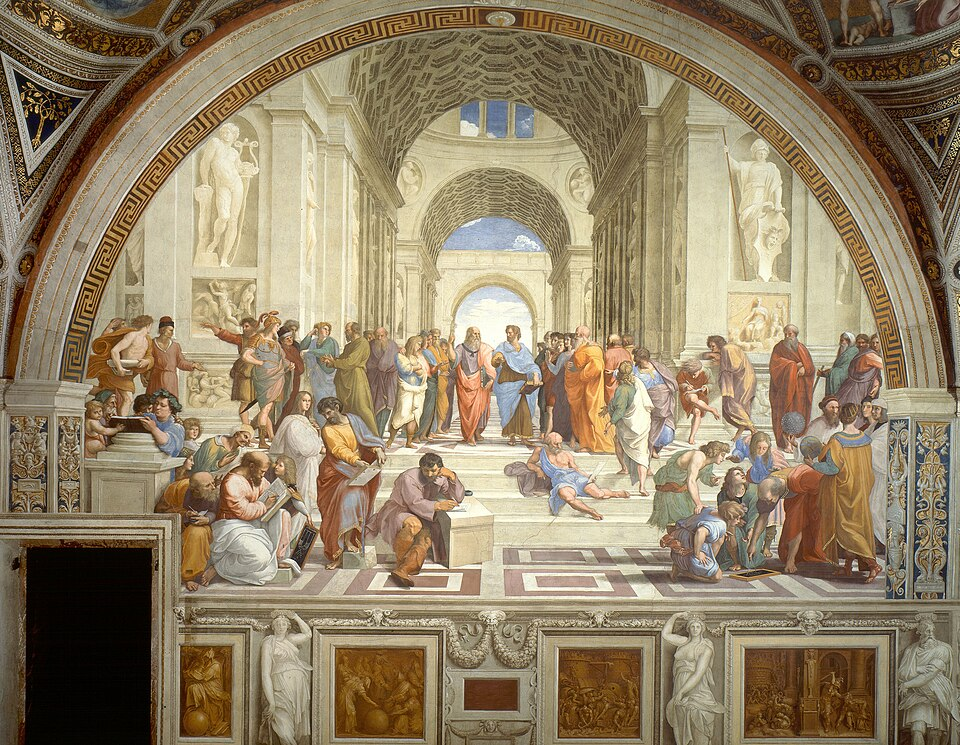
 Platon428/427-348/347 av. J.-C.la première théologie, et la première prison pour impies8 min
Platon428/427-348/347 av. J.-C.la première théologie, et la première prison pour impies8 min
Il faut commencer par Platon, et pas seulement par chronologie. C'est lui qui a inventé le mot de théologie au sens où nous l'entendons, la parole sur les dieux soumise à des règles (le terme θεολογία, theologia, apparaît au livre II de la République, quand Socrate fixe les « τύποι περὶ θεολογίας », les modèles auxquels devront se plier les récits des poètes sur les dieux, 379a) ; c'est lui qui a donné la première démonstration philosophique de l'existence des dieux ; et c'est lui, enfin, qui a écrit la première loi pénale contre l'incroyance. Les trois gestes sont liés, et ils le sont au livre X des Lois (Νόμοι, Nomoi), son dernier ouvrage, inachevé à sa mort et publié, selon la tradition, par son disciple Philippe d'Oponte. Quiconque veut savoir ce que signifie « fonder une religion » par la philosophie doit lire ces trente pages : elles sont l'original dont presque toutes les refondations ultérieures sont des copies.
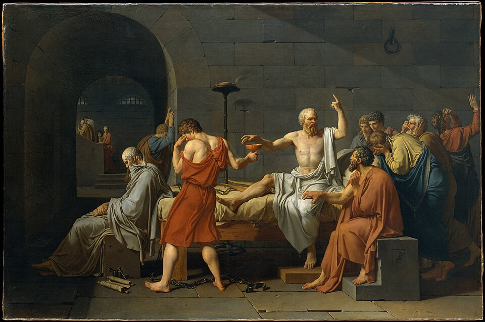
Le livre s'ouvre sur un problème de droit pénal. L'Athénien, qui conduit le dialogue avec le Crétois Clinias et le Lacédémonien Mégillos, a fini de légiférer sur les violences et en vient aux outrages envers les dieux. Avant de fixer les peines, il pose un diagnostic qui est le texte fondateur de toute typologie de l'incroyance : « θεοὺς ἡγούμενος εἶναι κατὰ νόμους οὐδεὶς πώποτε οὔτε ἔργον ἀσεβὲς ἠργάσατο ἑκὼν οὔτε λόγον ἀφῆκεν ἄνομον, ἀλλὰ ἓν δή τι τῶν τριῶν πάσχων, ἢ τοῦτο, ὅπερ εἶπον, οὐχ ἡγούμενος, ἢ τὸ δεύτερον ὄντας οὐ φροντίζειν ἀνθρώπων, ἢ τρίτον εὐπαραμυθήτους εἶναι θυσίαις τε καὶ εὐχαῖς παραγομένους », personne qui croit, conformément aux lois, que les dieux existent n'a jamais commis volontairement un acte impie ni laissé échapper une parole contraire à la loi ; il lui arrive l'une de ces trois choses : ou bien il ne croit pas qu'ils existent, ou bien, deuxièmement, il croit qu'ils existent mais ne se soucient pas des hommes, ou bien, troisièmement, qu'on peut aisément les fléchir en les séduisant par des sacrifices et des prières (885b). Trois impiétés, donc : l'athéisme proprement dit, le déisme indifférent, et ce qu'on pourrait appeler la religion marchande, celle qui croit acheter les dieux.
Ce tableau contient déjà la moitié de l'essai. La première impiété est celle que Platon attribue aux « savants » de son temps, physiciens et sophistes, qui expliquent le monde par la nature et le hasard et font des dieux des conventions de la loi (889e-890a) : c'est, vingt-trois siècles avant d'Holbach, le régime de l'erreur. La deuxième est la position que soutiendra Épicure une génération plus tard : des dieux qui existent mais ne s'occupent de rien. La troisième, enfin, est la cible de toute la critique morale de la religion, de Spinoza aux Lumières et à Kant. Platon combat donc sur deux fronts. Contre l'incroyant, il défend l'existence et la providence des dieux ; contre le dévot, leur incorruptibilité. Sa religion est à la fois une apologétique et une critique de la religion populaire, et c'est ce qui la rend redoutable : elle a déjà absorbé l'objection.
Vient la preuve, la première de l'histoire qui se donne pour une démonstration. Elle ne part pas, comme le fera Aristote, du mouvement du ciel, mais de l'âme. Tout mouvement communiqué suppose un mouvement premier qui ne soit pas communiqué ; ce mouvement premier, c'est « τὴν δυναμένην αὐτὴν αὑτὴν κινεῖν κίνησιν », le mouvement capable de se mouvoir lui-même (896a). Or ce mouvement qui se meut lui-même, c'est la définition même de l'âme ; Cousin traduit : « Une substance qui a la faculté de se mouvoir elle-même ». L'âme est donc antérieure au corps, et les âmes bonnes qui meuvent les astres sont des dieux. L'Athénien conclut par une question oratoire où l'on reconnaît la formule que la tradition attribuait à Thalès : « ἔσθʼ ὅστις ταῦτα ὁμολογῶν ὑπομενεῖ μὴ θεῶν εἶναι πλήρη πάντα; », y a-t-il quelqu'un qui, accordant cela, supportera de nier que tout soit plein de dieux ? (899b). Je laisse de côté la valeur de l'argument, que la critique moderne, de Hume à Kant, a assez démontée ; ce qui m'importe est son statut : pour la première fois, la croyance aux dieux n'est plus transmise par les poètes et les ancêtres mais démontrée par un philosophe, et, démontrée, elle peut être exigée.
Après la preuve vient la loi, et elle est terrible. Platon prévoit trois prisons dans sa cité ; l'une, près du lieu où se réunit le conseil nocturne, porte le nom de « σωφρονιστήριον », sôphronistêrion, la maison où l'on rend sage (908a). L'impie de bonne foi, celui qui s'est égaré par défaut de jugement et non par vice, y passera au moins cinq ans, sans autre visite que celle des membres du conseil nocturne, qui viendront l'entretenir « ἐπὶ νουθετήσει τε καὶ τῇ τῆς ψυχῆς σωτηρίᾳ », pour l'admonester et pour le salut de son âme ; à sa sortie, s'il paraît assagi, il vivra parmi les sages ; sinon, s'il est condamné une seconde fois, « θανάτῳ ζημιούσθω », qu'il soit puni de mort (909a). Ceux qui joignent l'impiété à la fourberie, les charlatans qui prétendent évoquer les morts et fléchir les dieux, seront enfermés à vie dans la prison du désert, et leur cadavre sera jeté hors des frontières, sans sépulture ; tout homme libre qui l'ensevelirait pourrait être poursuivi pour impiété (909c). Pour couper la racine du mal, une dernière loi interdit le culte privé : « Ἱερὰ μηδὲ εἷς ἐν ἰδίαις οἰκίαις ἐκτήσθω », que personne n'ait de sanctuaire dans sa maison particulière ; qui veut sacrifier ira aux temples publics, entre les mains des prêtres (909d).
J'ai proposé de reconnaître une refondation religieuse à la présence d'un absolu au nom duquel on peut exiger le sacrifice de l'individu. Le livre X des Lois en est le cas pur, et c'est un cas philosophique : ce ne sont pas des prêtres qui persécutent les philosophes, c'est un philosophe qui fonde une religion d'État, qui en démontre les articles, et qui confie à un conseil de sages le soin de rééduquer, puis de tuer, ceux qui n'y adhèrent pas. Le Grand Inquisiteur de Dostoïevski, qui veut le bonheur des hommes et pour cela leur ôte la liberté de croire, a là son ancêtre ; et l'on comprend pourquoi Karl Popper, en 1945, faisait de Platon le premier ennemi de la « société ouverte » (je résume la thèse générale de The Open Society and Its Enemies, t. I, sans en citer de page). Il faut pourtant donner à Platon sa meilleure forme. Le sôphronistêrion est une école forcée, non un lieu de supplice ; l'impie de bonne foi y est traité en malade de l'âme, non en criminel ; et la religion qu'on lui impose n'est pas celle des poètes, que Platon méprise, mais une théologie épurée où les dieux sont bons, ne mentent pas, ne se laissent pas acheter. La violence de la loi sert une religion plus morale que celle qu'elle remplace. C'est l'argument de toutes les refondations ultérieures, et ce qui les rend dangereuses : la religion civile de Rousseau, le culte de l'Humanité de Comte, l'éducation de l'homme nouveau par le parti, tous plaident qu'ils remplacent une superstition par une vérité.
Il y a pourtant un autre Platon, qui a nourri la critique de la religion plutôt que la religion d'État : celui de l'Euthyphron, un dialogue de jeunesse où Socrate, quelques jours avant son procès pour impiété, interroge un devin très sûr de sa piété. Sa question est devenue l'arme la plus durable de la philosophie contre la morale révélée : « ἆρα τὸ ὅσιον ὅτι ὅσιόν ἐστιν φιλεῖται ὑπὸ τῶν θεῶν, ἢ ὅτι φιλεῖται ὅσιόν ἐστιν; », le pieux est-il aimé des dieux parce qu'il est pieux, ou est-il pieux parce qu'il est aimé des dieux ? (10a). Si le pieux est pieux parce que les dieux l'aiment, la morale n'est que l'arbitraire d'une volonté souveraine ; s'ils l'aiment parce qu'il est pieux, la piété a sa raison en elle-même, et les dieux ne sont que les témoins d'un ordre qu'ils n'ont pas fait. Le dilemme ne nie pas les dieux, il les rend inutiles pour fonder le bien. On le retrouvera, sans le nom de Platon, dans la querelle qui fermera la quatrième partie : Bayle soutenant qu'une société d'athées peut avoir des mœurs, Kant faisant de la religion la connaissance de nos devoirs comme s'ils étaient des commandements divins, Dostoïevski mettant dans la bouche d'Ivan qu'il n'y a pas de vertu sans immortalité. C'est une confrontation construite, puisque aucun d'eux ne répond expressément à l'Euthyphron ; mais tous habitent la question que Socrate a ouverte.
Entre le Socrate de l'Euthyphron et l'Athénien des Lois, il y a donc une tension que Platon n'a pas résolue, et que je tiens pour celle même de cet essai : d'un côté, le philosophe qui interroge la religion au point de la dissoudre dans la morale ; de l'autre, le législateur qui protège la religion au point d'emprisonner ceux qui l'interrogent. Le procès de Socrate, accusé de ne pas reconnaître les dieux de la cité (Apologie, 24b-c, que je paraphrase), est celui que la loi des Lois rend possible : Platon a vu mourir son maître pour impiété et il a écrit, quarante ans plus tard, une loi contre l'impiété. On ne saurait dire plus brutalement que la sortie de la religion, quand la philosophie la conduit, peut aboutir à une religion plus exigeante que celle dont elle sortait.
Reste un troisième Platon, celui de la caverne, que l'élargissement à la spiritualité oblige à prendre au sérieux. Au livre VII de la République, l'éducation n'est pas le remplissage d'une âme vide, c'est une conversion du regard : de même qu'un œil ne pourrait se tourner vers la lumière qu'avec le corps entier, il faut, dit Socrate, tourner l'âme tout entière, « σὺν ὅλῃ τῇ ψυχῇ ἐκ τοῦ γιγνομένου περιακτέον εἶναι », se détourner avec l'âme entière de ce qui devient (518c), et l'art de l'éducation est « τῆς περιαγωγῆς », l'art de cette conversion (518d). La περιαγωγή, periagôgê, est le premier nom philosophique de ce que Foucault appellera spiritualité : une transformation du sujet nécessaire pour accéder au vrai. Et le terme de la conversion, le Bien, est situé par Platon au-delà de tout ce qui est : il n'est pas une essence, mais « ἐπέκεινα τῆς οὐσίας », au-delà de l'essence, qu'il surpasse en dignité et en puissance (VI, 509b). Ce Bien au-delà de l'être n'a ni temple, ni prêtre, ni loi pénale. Plotin en fera l'Un, Denys et Maïmonide le Dieu dont on ne peut rien affirmer, Levinas l'Autre qui échappe à l'ontologie.
Platon tient donc les deux branches de notre alternative : la religion civile démontrée et imposée, avec son conseil nocturne et sa prison pour impies ; la spiritualité de la conversion, qui ne soumet l'âme à rien d'extérieur mais la tourne vers un Bien qu'elle ne possède pas. L'histoire qui suit pourrait se lire comme la lutte de ces deux Platons. Lucrèce se dresse contre le premier ; les néoplatoniciens développent le second ; et le christianisme, qui hérite des deux, fera de l'Euthyphron une question théologique (Dieu veut-il le bien parce qu'il est bon ?) et des Lois une institution.
Portrait : D'après Silanion, photo Marie-Lan Nguyen, CC BY 2.5
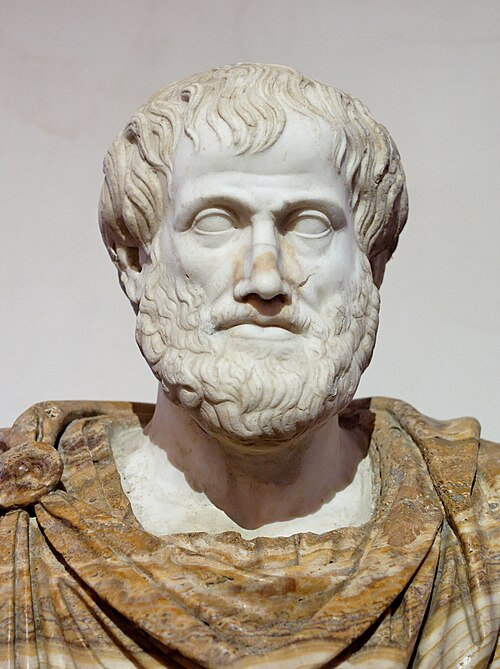
Aristote384-322 av. J.-C.un dieu qui ne pense que lui-même7 min
Aristote n'a écrit aucune loi contre les impies, et la tradition raconte même qu'il dut quitter Athènes en 323 sous la menace d'un procès pour impiété, après la mort d'Alexandre (je rapporte une tradition biographique tardive, dont le détail est incertain). Il n'en a pas moins fourni à la théologie occidentale son concept le plus durable et, sans le vouloir, à sa critique ses deux arguments les plus forts : l'idée d'un dieu indifférent aux hommes, et l'idée que les mythes religieux ont été inventés pour gouverner.
Le premier tient dans le livre Λ (XII) de la Métaphysique (τὰ μετὰ τὰ φυσικά, ta meta ta phusika), un traité bref, dense, probablement indépendant du reste de la collection que la tradition fait remonter à l'éditeur Andronicos de Rhodes (Ier siècle av. J.-C.), sans que l'origine du titre soit assurée. Le mouvement éternel du ciel exige un premier moteur qui ne soit pas lui-même mû, sans quoi l'on irait à l'infini. Or ce qui meut sans être mû, c'est l'objet du désir : « κινεῖ δὴ ὡς ἐρώμενον, κινούμενα δὲ τἆλλα κινεῖ », il meut donc comme ce qui est aimé, et les autres choses meuvent en étant mues (Λ 7, 1072b3). Le monde y est suspendu, « ἐκ τοιαύτης ἄρα ἀρχῆς ἤρτηται ὁ οὐρανὸς καὶ ἡ φύσις », c'est d'un tel principe que dépendent le ciel et la nature (1072b13-14) ; mais il ne fait rien pour le monde. Il ne le crée pas, puisque le monde est éternel ; il ne le gouverne pas, puisqu'il n'agit pas ; il l'attire, comme l'aimé l'amant, sans le savoir.
Que fait-il donc ? Il pense, et, étant ce qu'il y a de meilleur, il ne peut penser que ce qu'il y a de meilleur, c'est-à-dire lui-même. Le chapitre 9 en tire la conclusion avec une sécheresse admirable : penser autre chose que soi serait déchoir, car « μὴ ὁρᾶν ἔνια κρεῖττον ἢ ὁρᾶν », il vaut mieux ne pas voir certaines choses que les voir ; donc « αὑτὸν ἄρα νοεῖ, εἴπερ ἐστὶ τὸ κράτιστον, καὶ ἔστιν ἡ νόησις νοήσεως νόησις », c'est donc lui-même qu'il pense, s'il est ce qu'il y a de plus excellent, et sa pensée est pensée de la pensée (Λ 9, 1074b32-35). Le dieu d'Aristote ne connaît ni Socrate, ni la cité, ni les prières qu'on lui adresse ; il ne peut ni récompenser ni punir. Il est, selon la formule qui précède, « ζῷον ἀΐδιον ἄριστον », un vivant éternel et parfait (1072b29), dont la vie est l'activité de l'intellect, et cette vie, nous ne la partageons que « μικρὸν χρόνον », un court moment (1072b15).
D'où le paradoxe. Selon le tableau des Lois, Aristote tombe sous la deuxième impiété, celle des dieux qui ne se soucient pas des hommes ; l'Athénien de Platon l'aurait envoyé au sôphronistêrion. Ce dieu indifférent est pourtant devenu, par l'intermédiaire d'Averroès, de Maïmonide et de Thomas d'Aquin, le Dieu des philosophes des trois monothéismes : le premier moteur des « cinq voies » thomistes en est la reprise directe. Il a fallu lui ajouter tout ce qu'Aristote lui refusait, la création, la connaissance des singuliers, la providence ; et la tension entre le dieu aristotélicien et le Dieu biblique n'a jamais cessé de travailler la théologie. Je tiens que Pascal avait raison sur le fond (troisième partie) : le dieu d'Aristote est un objet de contemplation, non de religion, et l'on ne prie pas la pensée de la pensée. Mais c'est précisément ce qui en fait un ancêtre des spiritualités sans Dieu : un absolu qui n'exige rien.
Aristote n'est pas tout à fait conséquent sur ce point, et il faut le dire pour ne pas le moderniser. Dans l'Éthique à Nicomaque, il écrit que l'homme qui vit selon l'intellect est « θεοφιλέστατος », le plus aimé des dieux, et il ajoute aussitôt un conditionnel : « εἰ γάρ τις ἐπιμέλεια τῶν ἀνθρωπίνων ὑπὸ θεῶν γίνεται, ὥσπερ δοκεῖ », si les dieux prennent quelque soin des affaires humaines, comme on le pense (X, 8, 1179a22-24). Le « comme on le pense », ὥσπερ δοκεῖ, marque une prudence calculée : Aristote ne nie pas la providence populaire, il la loge dans l'opinion sans l'intégrer à sa théologie.
Le second argument est plus discret, et plus important. Au chapitre 8 du même livre Λ, après avoir calculé le nombre des moteurs célestes, Aristote fait une remarque d'historien des religions avant la lettre : les anciens, dit-il, ont transmis sous forme de mythe que les astres sont des dieux et que le divin enveloppe la nature entière ; et il poursuit : « τὰ δὲ λοιπὰ μυθικῶς ἤδη προσῆκται πρὸς τὴν πειθὼ τῶν πολλῶν καὶ πρὸς τὴν εἰς τοὺς νόμους καὶ τὸ συμφέρον χρῆσιν », le reste a été ajouté ensuite sous forme mythique, pour persuader la multitude et pour l'usage qu'on en fait en vue des lois et de l'intérêt commun (1074b3-5). Les dieux à forme humaine, les généalogies, les métamorphoses en animaux, tout cela est surajouté. Seul le noyau, l'idée que les premières substances sont divines, mérite d'être dit « θείως », divinement, et c'est une relique d'une sagesse perdue que les révolutions des arts ont plusieurs fois anéantie et retrouvée.
Ces trois lignes portent loin. Elles contiennent la thèse de la religion comme fonction sociale, que Durkheim systématisera en 1912, et celle de la religion comme instrument politique, que les libertins et l'auteur anonyme du Traité des trois imposteurs durciront jusqu'à l'accusation de fraude. Mais sous une forme plus fine que chez ses héritiers : Aristote ne dit pas que les législateurs ont menti, il dit que le mythe a été ajouté à une vérité, pour la rendre efficace auprès de ceux qui ne peuvent pas la contempler. La religion populaire est une traduction utile d'une vérité philosophique. Averroès dans le Discours décisif, Spinoza en faisant de l'Écriture une pédagogie de l'obéissance, Hegel en faisant de la religion la vérité sous la forme de la représentation, en donneront des versions successives. C'est une filiation, non une suite de réponses attestées ; mais elle est assez nette pour que je tienne Aristote, et non Lucrèce, pour le véritable ancêtre de la lecture « élitiste » de la religion, qui n'en nie pas le contenu mais en relègue la forme.
On lui doit enfin l'expression qui occupera Heidegger. Au livre E de la Métaphysique, il classe les sciences théorétiques : « ὥστε τρεῖς ἂν εἶεν φιλοσοφίαι θεωρητικαί, μαθηματική, φυσική, θεολογική », il y aurait donc trois philosophies théorétiques, la mathématique, la physique, la théologique (E 1, 1026a18-19). La première philosophie est ainsi à la fois science de l'être en tant qu'être et science de l'étant le plus haut, le divin. C'est cette double vocation, ontologie et théologie confondues, que Heidegger appellera la constitution onto-théo-logique de la métaphysique, et dont il fera la source commune de la philosophie occidentale et du Dieu chrétien des théologiens (on la retrouvera dans la dixième partie). Si Heidegger a raison, la philosophie ne peut mener la critique de la religion, puisqu'elle est déjà, depuis Aristote, une théologie. C'est la plus radicale des accusations de cet essai, tu crois être sorti de la religion, mais tu y es encore, adressée non à tel auteur mais à la métaphysique entière ; elle a son origine dans un adjectif d'Aristote.
Reste un Aristote spirituel, inattendu. Au livre X de l'Éthique à Nicomaque, la vie la plus heureuse est la vie contemplative, et Aristote la décrit dans des termes qui frôlent la mystique : une telle vie « κρείττων ἢ κατʼ ἄνθρωπον », serait supérieure à la condition humaine, car ce n'est pas en tant qu'homme qu'on la vivra, « ἀλλʼ ᾗ θεῖόν τι ἐν αὐτῷ ὑπάρχει », mais en tant qu'il y a en nous quelque chose de divin ; et il ne faut pas écouter ceux qui conseillent à l'homme de penser en homme et au mortel de penser en mortel, il faut au contraire, « ἐφʼ ὅσον ἐνδέχεται ἀθανατίζειν », autant qu'il est possible, s'immortaliser (X, 7, 1177b26-33). Le verbe ἀθανατίζειν, athanatizein, est l'un des plus étonnants de la langue philosophique grecque. Il ne promet aucune survie ; il désigne une manière de vivre dès maintenant à la hauteur de ce qui ne meurt pas, sans culte, sans prière, sans communauté, par le seul exercice de l'intellect.
La meilleure leçon d'Aristote est peut-être là. Il a fourni à la religion des philosophes son dieu et à sa critique son soupçon sociologique ; mais il a surtout montré qu'on pouvait avoir un rapport au divin qui ne soit ni une croyance, ni une obéissance, ni une espérance. Le dieu qui ne pense que lui-même n'exige pas de sacrifice, puisqu'il ignore que nous existons ; l'homme qui s'immortalise en pensant ne se soumet à rien, il s'élève. C'est, sous une forme encore théologique, la spiritualité d'exercice dont j'ai fait l'hypothèse qu'elle est la seule sortie qui ne refonde pas. Spinoza, qui n'aimait pas Aristote, en donnera la version sans transcendance avec l'amour intellectuel de Dieu, et l'éternité qu'il dit sentie et éprouvée (troisième partie) est toute proche de l'ἀθανατίζειν aristotélicien.
Portrait : D'après Lysippe, photo Jastrow, Public domain
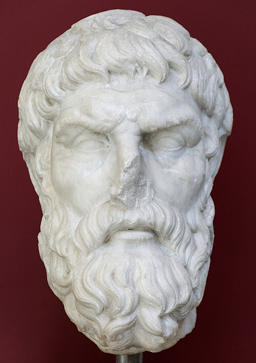
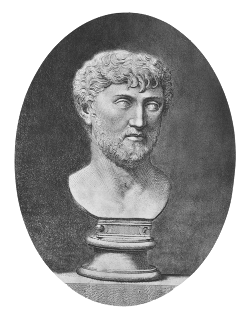
Épicure et Lucrèce341-270 av. J.-C.; v. 98-v. 55 av. J.-C.la terreur et la paix4 min
Corrigeons d'abord une image : Épicure n'est pas athée. La Lettre à Ménécée, conservée par Diogène Laërce au livre X des Vies des philosophes, affirme l'existence des dieux et en fait même le premier article de la sagesse. Dans la traduction d'Octave Hamelin (1910) : « Commence par te persuader qu'un dieu est un animal immortel et bienheureux, te conformant en cela à l'anticipation du dieu qui est gravée en toi » ; puis : « Car les dieux existent, attendu que nous connaissons leur existence par une intuition évidente. Mais, quant à leur nature, ils ne sont pas tels que la foule le croit ». La critique épicurienne porte non sur l'existence des dieux, mais sur leur caractère. Les dieux de la foule se fâchent, récompensent, punissent, exigent des sacrifices ; ceux d'Épicure, parfaitement heureux, ne s'occupent de rien, car tout souci troublerait leur béatitude.
D'où la phrase qui renverse la notion même d'impiété : « Et celui-là n'est pas impie qui nie les dieux de la foule, c'est celui qui attribue aux dieux ce que leur prêtent les opinions de la foule ». L'impie n'est plus l'incroyant, c'est le dévot qui se fait de Dieu une idée indigne. Ce renversement, Spinoza le reprendra, et Simone Weil le poussera à sa limite en parlant d'un athéisme purificateur. L'erreur religieuse, pour Épicure, est d'abord une faute de goût métaphysique : on prête aux dieux nos passions.
Cette erreur est grave parce qu'elle fait souffrir. La philosophie épicurienne est une thérapeutique, et la religion de la foule est, avec la crainte de la mort, l'une des deux grandes causes du trouble de l'âme. Contre celle-ci, la Lettre donne la formule fameuse : « Prends l'habitude de penser que la mort n'est rien relativement à nous ». Les deux craintes sont liées, car on craint les dieux pour ce qu'ils feront de nous après la mort : supprimez l'une, l'autre tombe.
Lucrèce donne à cette thérapeutique sa forme épique et sa violence. Le De rerum natura (De la nature), poème didactique en six livres dont la date de composition est incertaine et l'auteur presque inconnu, s'ouvre sur un éloge d'Épicure qui est un tableau de bataille. La vie humaine gisait à terre, honteusement, « humana ante oculos foede cum vita iaceret / in terris oppressa gravi sub religione », écrasée sous le poids de la religion (I, 62-63) ; et c'est un Grec, un mortel, qui le premier osa lever les yeux contre elle, « primum Graius homo mortalis tollere contra / est oculos ausus » (I, 66-67). La victoire est totale et elle a un sens précis : « quare religio pedibus subiecta vicissim / opteritur, nos exaequat victoria caelo », c'est pourquoi la religion, à son tour, est jetée sous nos pieds et foulée, et la victoire nous égale au ciel (I, 78-79).
Ce dernier vers annonce tout notre problème. La victoire sur la religion nous égale au ciel. Lucrèce ne dit pas seulement que l'homme est libéré, mais qu'il prend la place des dieux, ou du moins s'élève à leur hauteur. La fin de la Lettre à Ménécée le promet au disciple : « vivras comme un dieu parmi les hommes ». La sortie de la religion s'accomplit en divinisation de l'homme. Feuerbach, dix-neuf siècles plus tard, ne dira pas autre chose, et Stirner le lui reprochera.
Vient l'exemple, le passage le plus célèbre du poème. Pour qu'on ne croie pas que la philosophie mène à l'impiété, Lucrèce rappelle que c'est la religion qui a engendré des crimes, « religio peperit scelerosa atque impia facta » (I, 83), et il raconte le sacrifice d'Iphigénie à Aulis : la jeune fille conduite à l'autel non pour les noces mais pour être égorgée par son père, afin que la flotte grecque obtienne un vent favorable. Le récit se clôt sur le vers que toute la tradition libertine a gravé au fronton de ses livres : « tantum religio potuit suadere malorum », tant la religion a pu conseiller de maux (I, 101).
Le mot religio chez Lucrèce n'a pas le sens chrétien. Il désigne la crainte scrupuleuse des dieux, le sentiment d'être lié par des obligations sacrées, et c'est ce sentiment, plus que des dogmes, que Lucrèce combat. Sa critique relève entièrement du régime de l'erreur : la crainte des dieux vient de l'ignorance des causes naturelles, et la physique atomiste, en expliquant la foudre, les tremblements de terre et la maladie, dissipe la terreur. Mais elle comporte déjà une dimension spirituelle que les modernes oublieront : la connaissance de la nature n'est pas un but en soi, c'est un exercice qui procure l'ataraxie, l'absence de trouble.
Michel Onfray revendiquera Épicure et Lucrèce comme ses ancêtres. C'est à moitié juste. Il hérite d'eux le régime de l'erreur et la haine des prêtres, non leur piété : Épicure et Lucrèce, qui se moquent de la religion de la foule, gardent des dieux, et ces dieux sont un modèle de vie. Les épicuriens sortent de la religion sans sortir du divin : c'est la première forme, et peut-être la plus sage, de mon paradoxe.
Portrait : Sculpteur inconnu, photo Marie-Lan Nguyen, Public domain
Portrait : Auteur inconnu, CC0
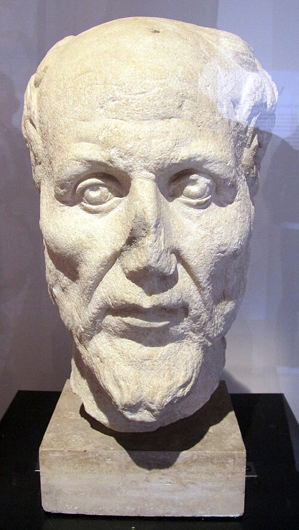
Plotin205-270une mystique sans Église7 min
Plotin est l'un des rares Anciens de cette histoire qui n'aient ni combattu ni fondé aucune religion, et c'est pour cela qu'il doit figurer ici. Né en Égypte, élève d'Ammonios Saccas à Alexandrie, il a enseigné à Rome à partir de 244 et n'a commencé d'écrire qu'à cinquante ans. Ses cinquante-quatre traités ont été rangés après sa mort par son disciple Porphyre en six groupes de neuf, les Ennéades (Ἐννεάδες, les « neuvaines »), selon un ordre thématique qui n'est pas celui de la composition ; Porphyre y a joint une Vie de Plotin qui est notre principale source. Le Plotin de cette Vie « paraissait honteux d'avoir un corps », refusait qu'on fît son portrait et ne parlait jamais de sa famille ni de sa patrie (Vie, 1, trad. Bouillet). C'est un professeur, non un fondateur ; et pourtant il a décrit avec précision une expérience de l'absolu qui ne doit rien à une révélation, à une Église ou à un culte.
Le point de départ est platonicien. Du Bien de la République, au-delà de l'essence, Plotin fait le principe de tout, l'Un (τὸ ἕν, to hen), et il tire de la formule toutes ses conséquences. Si l'Un est au-delà de l'essence, il est aussi au-delà de la pensée : « ὅτι ἐπέκεινα οὐσίας, ἐπέκεινα καὶ ἐνεργείας καὶ ἐπέκεινα νοῦ καὶ νοήσεως », parce qu'il est au-delà de l'essence, il est aussi au-delà de l'activité, au-delà de l'intellect et de la pensée (I 7, 1). La distance avec Aristote est grande : son premier principe était une pensée qui se pense ; celui de Plotin est au-dessus de la pensée, et il ne se pense même pas : un traité va jusqu'à dire qu'il n'est pas absurde qu'il ne se connaisse pas (V 6, 6). Entre l'Un et nous s'étagent l'Intellect (νοῦς, nous), qui est la pensée aristotélicienne devenue seconde, puis l'Âme du monde ; tout procède de l'Un par surabondance, sans décision ni création, comme la lumière procède du soleil.
Mais le néoplatonisme est moins une cosmologie qu'un chemin de retour. L'âme qui s'est dispersée dans les corps doit remonter à sa source, et la méthode de cette remontée est un dépouillement. Au terme du traité V 3, après avoir montré que l'Un ne peut être ni dit ni pensé, Plotin se demande comment le voir, et répond par deux mots, peut-être les plus célèbres de toute la mystique occidentale : « Πῶς ἂν οὖν τοῦτο γένοιτο; Ἄφελε πάντα », comment cela pourrait-il donc se faire ? Retranche tout (V 3, 17). On ne s'unit pas à l'absolu en ajoutant une croyance, un rite, un savoir, mais en retirant tout ce qui n'est pas lui.
L'expérience elle-même est décrite à la fin du traité VI 9, Du Bien ou de l'Un, que Porphyre a placé à la fin de toute l'œuvre comme son couronnement. Celui qui a vu, dit Plotin, ne peut pas dire qu'il a vu, car il n'y avait plus deux, celui qui voit et ce qui est vu : « ἐπεὶ τοίνυν δύο οὐκ ἦν, ἀλλʼ ἓν ἦν αὐτὸς ὁ ἰδὼν πρὸς τὸ ἑωραμένον, ὡς ἂν μὴ ἑωραμένον, ἀλλʼ ἡνωμένον », puisqu'il n'y avait pas deux, mais que celui qui voyait était un avec ce qui était vu, comme s'il ne l'avait pas vu mais s'y était uni (VI 9, 11). Plotin le compare aux mystères, dont il est interdit de divulguer le secret aux non-initiés : non parce que ce serait sacrilège, mais parce que la chose n'est pas divulgable. Et le traité, donc les Ennéades, s'achève sur la formule qui résume tout : la vie des dieux et des hommes divins est « ἀπαλλαγὴ τῶν ἄλλων τῶν τῆιδε, βίος ἀνήδονος τῶν τῆιδε, φυγὴ μόνου πρὸς μόνον », détachement des autres choses d'ici-bas, vie sans plaisir aux choses d'ici-bas, fuite du seul vers le seul (VI 9, 11). La traduction de Bouillet ajoute « Dieu » et « l'âme », que le grec ne nomme pas : petit exemple de la manière dont la tradition chrétienne a lu Plotin.
Ce qui frappe, c'est l'absence totale d'appareil religieux dans cette expérience. Pas de révélation : l'Un ne parle pas, ne se manifeste pas dans l'histoire, ne choisit aucun peuple. Pas de grâce : c'est l'âme qui se dépouille, par la philosophie et la vertu. Pas d'Église : la fuite est « du seul vers le seul ». Pas de culte, ou plutôt un mépris souverain pour le culte : Porphyre rapporte qu'Amélius, disciple exact à sacrifier, voulut emmener Plotin à la fête de la nouvelle lune, et que Plotin répondit : « C'est à ces dieux de venir me chercher, et non pas à moi d'aller les trouver » (Vie, 10, trad. Bouillet) ; Porphyre avoue que les disciples, sans comprendre cette fierté, n'osèrent pas l'interroger. Tout cela est pourtant religieux au sens de James : une expérience solitaire de ce que le sujet tient pour divin. Porphyre en donne le décompte avec une précision d'archiviste : pendant les six années où il vécut auprès de lui, Plotin « eut quatre fois le bonheur de toucher à ce but, non par simple puissance, mais par un acte réel et ineffable », et Porphyre lui-même, une seule fois, à soixante-huit ans (Vie, 23, trad. Bouillet). Les dernières paroles de Plotin mourant, selon la même Vie, furent : « je m'efforce de réunir ce qu'il y a de divin en nous à ce qu'il y a de divin dans l'univers » (Vie, 2, trad. Bouillet).
On objectera que cette mystique n'est pas sortie de la religion, puisqu'elle n'y était jamais entrée au sens chrétien ; et que Plotin est un païen pieux, qui croyait aux dieux, aux démons, à la providence. C'est vrai, et c'est ce qui le rend précieux : il montre qu'une expérience de l'absolu peut exister sans aucune des structures que la critique moderne attaquera. Le critère du sacrifice ne s'applique pas à lui. L'Un n'exige rien : il est ce vers quoi l'âme se tourne d'elle-même quand elle cesse de se disperser. L'ancêtre lointain des spiritualités sans Dieu de la dernière partie, c'est lui, bien plus qu'Épicure. Et ce n'est pas un hasard si Pierre Hadot, avant d'écrire sur les exercices spirituels antiques, a consacré son premier livre personnel à Plotin, Plotin ou la simplicité du regard (1963) : il y voyait le modèle d'une transformation intérieure qui se passe de toute institution.
Plotin a eu deux postérités, qui se sont combattues. La première est païenne et polémique. Porphyre, son éditeur, a écrit un traité Contre les chrétiens en quinze livres, condamné au feu par les empereurs chrétiens et que nous ne connaissons que par fragments ; et Plotin lui-même a composé un traité contre les gnostiques (II 9), que Porphyre intitule Contre les Gnostiques, où il reproche à ces sectes d'origine chrétienne de mépriser le monde et son créateur. Le néoplatonisme fut ainsi, au IIIe siècle, la dernière grande philosophie à s'opposer au christianisme montant, et Julien l'Apostat tentera, au siècle suivant, d'en faire la théologie d'un paganisme restauré : une refondation, cette fois, au sens strict.
La seconde, chrétienne, a été la plus durable. Augustin raconte dans les Confessions comment, à Milan, lui furent procurés par un homme « immanissimo typho turgidum », enflé d'un orgueil monstrueux, « quosdam platonicorum libros ex graeca lingua in latinam versos », certains livres des platoniciens traduits du grec en latin, et qu'il y lut, non dans ces termes mais en substance, que « au commencement était le Verbe » ; mais que le Verbe s'est fait chair et a habité parmi nous, « non ibi legi », je ne l'y ai pas lu (Confessions, VII, 9, 13-14). La phrase d'Augustin trace la frontière entre la spiritualité plotinienne et la religion chrétienne : tout y est, sauf l'incarnation, c'est-à-dire sauf l'histoire, l'Église et le salut d'un Dieu fait homme. Les « livres des platoniciens » avaient été traduits par Marius Victorinus, Augustin le dit lui-même (Confessions, VIII, 2, 3) ; qu'il s'agisse de traités de Plotin, de Porphyre ou des deux est l'opinion commune des historiens, et le détail reste discuté. Par Augustin, puis par le Pseudo-Denys, la théologie négative néoplatonicienne passera dans le christianisme, et c'est elle qu'on retrouvera, transformée, chez Maïmonide et chez Eckhart, dont le Dieu au-delà de Dieu doit autant à Plotin qu'aux Évangiles.
Je tiens donc, contre une opinion répandue, que Plotin n'est pas un précurseur du christianisme, mais l'exemple achevé d'une spiritualité qui aurait pu ne pas devenir religion. Le christianisme l'a absorbé en lui ajoutant ce qu'Augustin « n'y avait pas lu » ; le paganisme tardif a voulu en faire une religion d'État. Plotin n'a voulu ni l'un ni l'autre. Retranche tout : la formule vaut aussi pour les Églises.
Avant le mystique rhénan, un détour par Cordoue et Le Caire s'impose, et ce n'est pas une politesse œcuménique. Notre question en suppose une plus ancienne : peut-on penser Dieu en philosophe à l'intérieur d'une religion de la Loi révélée, sans trahir ni la Loi ni la philosophie ? Elle a été posée d'abord, et plus radicalement que dans le christianisme latin, dans l'islam et dans le judaïsme de langue arabe du XIIe siècle, par des juges et des médecins de cour qui lisaient Aristote dans le texte transmis par les traducteurs de Bagdad et devaient rendre compte de leur philosophie devant des juristes. C'est en grande partie par les commentaires d'Averroès que la scolastique a lu Aristote. Averroès et Maïmonide, nés à douze ans d'intervalle dans la même ville, ne sortent pas de la religion, mais ils inventent les deux instruments dont toutes les sorties ultérieures auront besoin : l'interprétation qui sépare le sens apparent du sens vrai, et le partage des hommes entre ceux qui peuvent entendre le second et ceux qui doivent s'en tenir au premier.
Portrait : Sculpteur inconnu, photo Sailko, CC BY 3.0
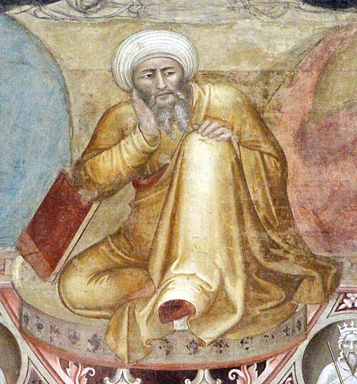
Averroès1126-1198la Loi ordonne de philosopher7 min
Abū l-Walīd Muḥammad ibn Aḥmad ibn Rushd, que les Latins appelleront Averroès et, plus simplement, « le Commentateur », était un juge avant d'être un philosophe, ou plutôt il n'a jamais cessé d'être les deux. Petit-fils d'un grand cadi de Cordoue, cadi lui-même à Séville puis à Cordoue, médecin du calife almohade à Marrakech, il a commenté presque tout Aristote à la demande du souverain, avant de tomber en disgrâce en 1195, d'être exilé à Lucena et de voir ses livres brûlés, puis d'être rappelé peu avant sa mort. Le texte qui nous importe, bref, s'intitule Faṣl al-maqāl, le « discours décisif », ou plus exactement l'examen qui tranche la question du rapport entre la Loi religieuse et la philosophie, et il date des environs de 1179. Léon Gauthier l'a traduit sous le titre Accord de la religion et de la philosophie (Alger, 1905 ; la page de titre de l'exemplaire numérisé porte 1906).
La forme du texte est déjà une thèse : Averroès pose la question non en philosophe mais en juriste, dans les catégories du droit musulman qui classent toute action en obligatoire, recommandée, permise, blâmable ou interdite. Il s'agit, écrit-il, d'« examiner, au point de vue de la spéculation religieuse, si l'étude de la philosophie et des sciences logiques est permise ou défendue par la Loi religieuse, ou bien prescrite par elle soit à titre méritoire soit à titre obligatoire ». La réponse est la plus forte possible : la philosophie est un devoir. Si la philosophie n'est que l'étude de l'univers en tant qu'il fait connaître son Artisan, et si la Loi invite à considérer l'univers, alors la philosophie est « de par la Loi religieuse, ou bien obligatoire ou bien méritoire ». Averroès cite le Coran : « Tirez enseignement [de cela], ô vous qui êtes doués d'intelligence ! » (sourate LIX, 2), et y lit une injonction formelle à raisonner. La forme la plus parfaite du raisonnement étant la démonstration (burhān) au sens des Seconds Analytiques, la Loi elle-même commande d'étudier la logique d'Aristote.
Le geste est saisissant : la philosophie n'a pas à sortir de la religion, puisque la religion lui ordonne d'exister. Mais il a un prix, que dit la phrase la plus célèbre du traité : « la vérité ne saurait être contraire à la vérité : elle s'accorde avec elle et témoigne en sa faveur ». Si la démonstration aboutit à une connaissance que le sens apparent (ẓāhir) du texte révélé contredit, celui-ci doit être interprété, c'est-à-dire reconduit à son sens intérieur (bāṭin) par le taʾwīl, l'interprétation qui ramène le mot à ce qu'il signifie vraiment. La démonstration ne plie jamais ; le texte, si.
Surgit alors la question du destinataire : si le Coran a un sens apparent et un sens vrai, à qui faut-il dire le second ? Averroès répond par une anthropologie de l'assentiment, que les hommes ne donnent pas de la même façon : certains par la démonstration, d'autres par les arguments dialectiques, la plupart par les arguments oratoires, c'est-à-dire rhétoriques. D'où la division : « Les gens [se divisent] donc, au point de vue de la Loi religieuse, en trois classes » : ceux qui ne sont « hommes de démonstration en aucune façon », qui « constituent la grande masse » ; les dialecticiens ; et « les hommes de démonstration par nature et par art, je veux dire l'art de la philosophie ». La conséquence est une règle de silence : le devoir du vulgaire est de prendre les symboles « dans leur sens extérieur », et « il n'est pas permis qu'ils connaissent, en aucune façon, cette interprétation » ; plus encore, « les interprétations vraies ne doivent pas être traitées dans les livres destinés au vulgaire, à plus forte raison les fausses ». Averroès fait remonter les sectes de l'islam à cette faute : la communauté s'est divisée parce qu'on a exposé ouvertement des interprétations au peuple.
Cette règle vise un adversaire nommé, al-Ghazālī (1058-1111), qui, dans le Tahāfut al-falāsifa, que Gauthier propose de traduire L'Effondrement des falāsifa plutôt que La Destruction des philosophes, avait déclaré infidèles al-Fārābī et Avicenne sur trois points : l'éternité du monde, l'affirmation que Dieu ne connaît pas les choses particulières, l'interprétation de la résurrection des corps. Averroès le rappelle dans le Faṣl et répond en juriste : l'accusation d'infidélité pour avoir rompu le consensus n'est que « hypothétique », puisqu'on ne peut constater de consensus unanime sur des questions que les anciens eux-mêmes réservaient aux « hommes d'une science profonde ». La réponse philosophique viendra dans le Tahāfut al-tahāfut, l'« Effondrement de l'Effondrement », qui retourne contre Ghazālī le titre de son livre. C'est une réponse attestée : le premier débat sur le droit de philosopher dans une religion révélée oppose deux musulmans, l'un mort près de soixante-dix ans avant que l'autre ne lui réplique.
Corrigeons ici une légende tenace, qui fausse tout ce qui suit : Averroès n'a jamais enseigné la « double vérité », l'idée qu'une proposition pourrait être vraie en philosophie et fausse en religion. Il enseigne l'inverse : une seule vérité, deux modes d'accès, un seul arbitre, la démonstration. La formule de la « double vérité » vient d'ailleurs : en 1277, l'évêque de Paris Étienne Tempier, condamnant deux cent dix-neuf propositions enseignées à la faculté des arts, reproche dans son prologue à certains maîtres de dire des choses vraies selon la philosophie mais non selon la foi catholique, comme s'il y avait deux vérités contraires. Les historiens discutent encore si un seul des « averroïstes latins » visés, Siger de Brabant ou Boèce de Dacie, a jamais soutenu la thèse sous cette forme ; ce qui est sûr, c'est qu'Averroès ne l'a pas soutenue et que l'étiquette est polémique. Renan a consacré à cette postérité son premier grand livre, Averroès et l'averroïsme (1852), et c'est lui qui a fait d'Ibn Rushd le patron des libres penseurs. Le Commentateur méritait mieux et moins : ce n'était pas un libre penseur, mais un juge qui pensait librement.
Où le placer dans nos huit régimes ? Pas dans celui de l'erreur : la religion n'est pas fausse, elle dit vrai en symboles. Ni hors de la critique, car la doctrine des trois classes est déjà, sous une forme théologique, une théorie de la fonction sociale de la religion. La Loi est une médecine pour le grand nombre : Averroès compare le législateur au médecin habile qui donne à tous des préceptes de santé auxquels chacun peut acquiescer, parce qu'« il ne lui est pas possible de les rendre tous médecins » ; et celui qui divulgue les interprétations au peuple ressemble à l'homme qui ruinerait la confiance des malades dans les prescriptions du médecin sans pouvoir leur en donner l'intelligence. Platon avait voulu que la cité impose une théologie salutaire ; Aristote avait reconnu, on l'a vu, que les mythes avaient été ajoutés pour persuader le vulgaire. Averroès donne à cette tradition une forme plus élégante : chez lui, la religion du peuple n'est pas un mensonge utile, mais la vérité même, habillée pour ceux qui ne peuvent la voir nue. Il termine sur une image qui dit tout : la philosophie est « la compagne de la religion et sa sœur de lait », et le mal qui vient d'un ami est plus pénible que celui qui vient d'un ennemi.
La confrontation qui suit est construite. Spinoza n'a pas, à ma connaissance, discuté le Faṣl, qui ne circulait pas en latin. Mais quand il attaque la méthode de Maïmonide, qui est sur ce point la même, il vise le dispositif averroïste : si l'on ne peut entendre l'Écriture qu'à la lumière de la démonstration, alors le vulgaire, qui ne sait pas ce qu'est une démonstration, « ne pourrait connaître l'Écriture sainte que sur l'autorité et le témoignage des philosophes », et l'on aurait inventé « une autorité fort nouvelle dans l'Église, une nouvelle espèce de prêtres et de pontifes » (Traité théologico-politique, ch. VII, trad. Saisset). L'objection est profonde : le partage averroïste ne fait pas sortir de la religion, il installe à son sommet une caste qui sait ce que le texte veut dire et le cache. Averroès, du moins, croit que la Loi est vraie ; mais la structure survivra à la foi qui la justifiait.
Mon jugement est donc double. Averroès ne sort pas de la religion et ne fonde rien : il partage. Il n'exige aucun sacrifice du philosophe, qui jouit de la vérité sans culpabilité puisque la Loi même la lui commande. Mais il exige du peuple un sacrifice qu'il ne nomme pas, celui de l'accès au vrai. Selon le critère, il n'installe pas d'absolu nouveau ; il hiérarchise l'accès à l'ancien. C'est la solution la plus stable que la question ait jamais reçue, et elle reviendra donc sous tous les régimes, chez Spinoza lui-même, chez Comte, chez Renan, et jusque dans la théorie straussienne de l'écriture ésotérique.
Portrait : Andrea di Bonaiuto, photo Sailko, CC BY 3.0
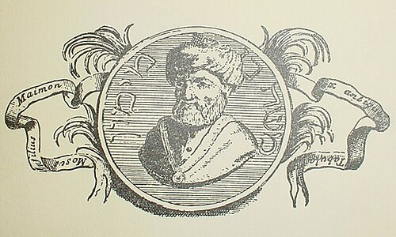
Maïmonide1138-1204de Dieu, on ne sait que ce qu'il n'est pas8 min
Moïse ben Maïmon est né lui aussi à Cordoue. Sa famille a fui après la conquête almohade de 1148, a erré en Andalousie et au Maroc, puis s'est installée en Égypte, à Fustat, où Maïmonide est devenu chef de la communauté juive et médecin de la cour de Saladin. On lui doit le plus grand code de la loi juive, la Mishneh Torah, rédigée en hébreu, et le plus grand livre de philosophie juive du Moyen Âge, rédigé en arabe écrit en caractères hébreux vers 1190 : Dalālat al-ḥāʾirīn, que les traducteurs hébreux ont rendu par Moreh nevukhim, les Latins par Dux neutrorum ou Dux perplexorum, et Salomon Munk, dans la traduction française de référence (1856-1866), par Le Guide des égarés. Munk précise que la traduction la plus proche du sens littéral serait Guide des perplexes, mais qu'elle aurait « l'inconvénient de paraître prétentieuse ».
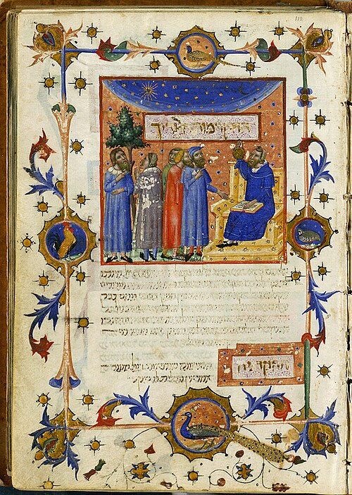
L'introduction définit le destinataire avec une précision qui en dit long. Le livre a pour but « de donner l'éveil à l'homme religieux chez lequel la vérité de notre Loi est établie dans l'âme et devenue un objet de croyance, qui est parfait dans sa religion et dans ses mœurs, qui a étudié les sciences des philosophes », mais qui est « embarrassé par le sens extérieur (littéral) de la Loi », de sorte qu'il « reste dans l'agitation et dans le trouble » (Introduction, trad. Munk). Le perplexe n'est ni l'incroyant ni le simple, mais le croyant cultivé qui a lu Aristote et ne peut plus lire la Bible au pied de la lettre. Maïmonide ne l'invite pas à choisir : il lui apprend à lire.
La première leçon porte sur les noms. La Bible parle d'un Dieu qui voit, qui entend, qui descend, qui s'assied, qui a une main et un visage. Une grande part de la première partie du Guide est un lexique de ces termes, qui montre pour chacun qu'il est homonyme, et que pris au sens propre il ferait de Dieu un corps. Or l'incorporéité de Dieu est démontrée, et elle commande la lecture. Maïmonide le dit avec une franchise que Spinoza recopiera pour la combattre : s'il refuse l'éternité du monde, ce n'est pas à cause des versets sur la création, car « de même que nous avons expliqué ces endroits de l'Écriture de façon à éloigner de la nature de Dieu toute matérialité, nous aurions également trouvé moyen d'interpréter les passages sur la création dans un sens favorable à l'éternité du monde » ; c'est seulement que l'éternité du monde « n'est établie par aucune démonstration » (Guide, II, 25, cité dans le Traité théologico-politique, ch. VII, trad. Saisset). Le texte révélé cède devant la démonstration, non devant la simple probabilité. La création reste donc tenue, mais faute de preuve contraire, et Maïmonide laisse ouverte, aux yeux d'un lecteur attentif, une question que la foi croyait close.
La deuxième leçon va plus loin et fonde une tradition. Si aucun nom ne convient à Dieu au sens propre, on n'en peut rien dire de positif. « Nous ne saisissons de lui autre chose, si ce n'est qu'il est, mais non pas ce qu'il est » (I, 58). Les seuls attributs légitimes sont négatifs : dire que Dieu est vivant, c'est dire qu'il n'est pas mort ; puissant, qu'il n'est pas impuissant. La connaissance de Dieu progresse par soustraction : « à mesure que tu augmentes les négations à l'égard de Dieu, tu t'approches de la perception » (I, 59). La fin de ce chemin est le silence. Maïmonide le trouve dans le Psaume 65, 2, lekha dumiyya tehilla, qu'il lit ainsi : « pour toi le silence est la louange » (I, 59). Car, ajoute-t-il, « quoi que ce soit que nous disions dans le but d'exalter et de glorifier (Dieu), nous y trouverons quelque chose d'offensant à l'égard de Dieu ».
Cette théologie négative rejoint la critique de la religion : elle détruit, de l'intérieur de la foi, toutes les représentations de Dieu que la foi populaire entretient : le Dieu qui se fâche, qui récompense, qui écoute les prières au sens où un roi écoute une requête. Eckhart l'a reçue ; il cite abondamment « Rabbi Moyses » dans ses commentaires latins, et la dette est assez établie pour qu'une étude récente porte précisément ce titre, « Verba sunt Rabbi Moysis ». Quand Eckhart prie Dieu de le rendre quitte de Dieu, il pousse jusqu'à la prière la négation que Maïmonide avait poussée jusqu'au silence.
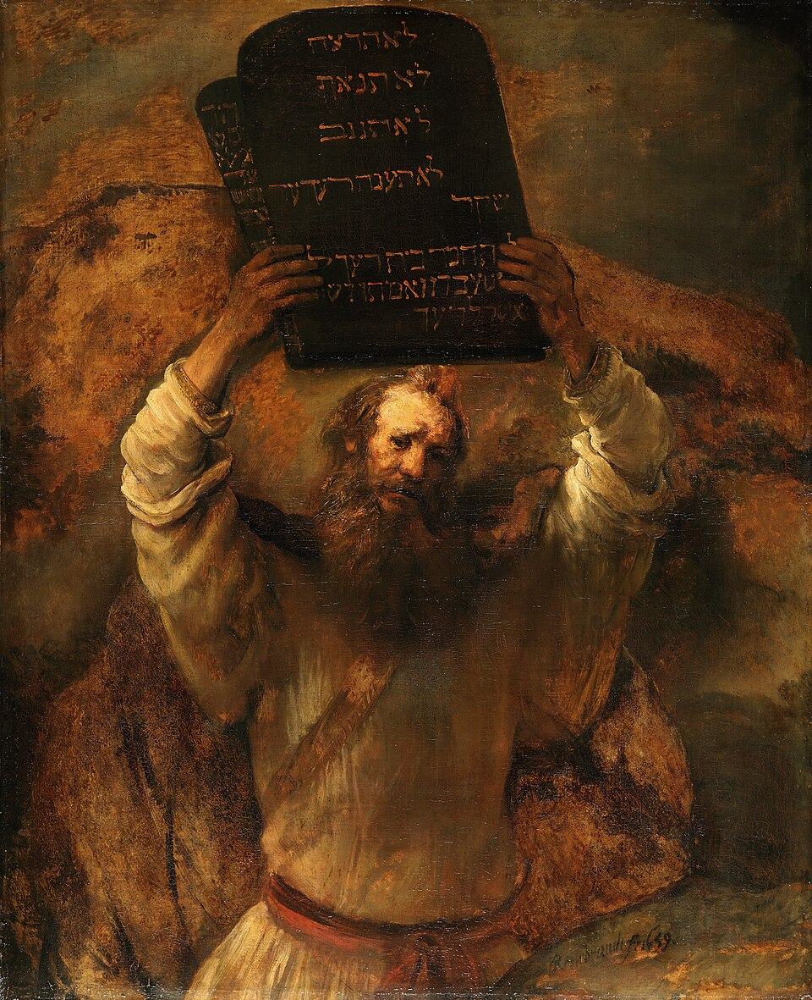
Elle a aussi un adversaire moderne. Feuerbach, dans Das Wesen des Christenthums, s'en prend à la théologie qui refuse à Dieu tout prédicat positif. Un Dieu dont on nie toutes les déterminations, dit-il, a une existence « ohne Existenz », une existence sans existence, indiscernable du néant ; et la négation des prédicats positifs de l'essence divine n'est rien d'autre, selon lui, qu'« ein subtiler, verschlagner Atheismus », un athéisme subtil et rusé, qui garde l'apparence de la religion et n'est pas reconnu comme négation (1841, Introduction, ch. 2, p. 21-22 de la première édition). Feuerbach ne nomme pas Maïmonide dans ce passage, et la confrontation est donc construite ; c'est la meilleure objection qu'on puisse faire au Guide. Pour Feuerbach, la religion vit de prédicats : les ôter tous, c'est en sortir sans oser le dire. Pour Maïmonide, la religion vraie commence quand on les ôte ; les garder, c'est l'idolâtrie. Je crois que Feuerbach a raison sur le croyant ordinaire, qui ne prie pas un Dieu dont il ne sait rien, et Maïmonide sur le philosophe, qui ne peut adorer un Dieu qu'il comprend. Ce désaccord traverse tout l'essai : il oppose ceux pour qui la religion est une représentation et ceux pour qui elle est le dépassement de toute représentation.
La troisième leçon, la plus surprenante, fait de Maïmonide, à mes yeux, l'un des premiers théoriciens de la fonction historique des rites. Dans la troisième partie du Guide, il entreprend de donner les raisons des commandements, les ṭaʿamei ha-mitzvot, et rencontre les sacrifices, qui occupent une place immense dans la Torah et dont aucune raison philosophique ne rend compte. Sa réponse est historique : Dieu a procédé avec les Hébreux comme la nature procède avec le nourrisson, par degrés : « comme il est impossible de passer subitement d'un extrême à l'autre, l'homme, selon sa nature, ne saurait quitter brusquement toutes ses habitudes » (III, 32). Or le culte universel de l'époque consistait à offrir des animaux dans les temples des idoles. Interdire tout culte de ce genre aurait été aussi inconcevable que si un prophète venait aujourd'hui dire que Dieu défend la prière et le jeûne. « C'est pourquoi Dieu laissa subsister ces différentes espèces de cultes ; mais, au lieu d'être rendues à des objets créés et à des choses imaginaires, sans réalité, il les a transférées à son nom » (III, 32). Les sacrifices ne sont pas voulus pour eux-mêmes ; ils sont un détour, comme le détour par le désert que Dieu fait prendre au peuple au sortir d'Égypte, pour ne pas l'exposer à la guerre (Ex 13, 17-18), exemple que Maïmonide invoque lui-même.
Pesons cette thèse. Elle dit qu'une part de la Loi révélée s'explique par les conditions historiques de sa révélation et par la psychologie d'un peuple, qu'elle est une concession pédagogique et non une vérité éternelle : une explication fonctionnelle et historique du culte, donnée de l'intérieur de la foi par le plus grand rabbin de son siècle. Hume, Durkheim et Weber diront autrement ce que les rites font aux hommes ; Maïmonide l'avait dit en le rapportant à la sagesse de Dieu. Le pas qui sépare son explication d'une explication sans Dieu est mince : il suffit de retirer la « ruse » divine et de garder l'histoire. Maïmonide ne le fait pas, mais il a montré où il se trouvait.
Reste la question de l'écriture. Le Guide annonce lui-même qu'il se contredit, et qu'il le fait exprès. Parmi les sept causes de contradiction qu'il énumère dans son introduction, la septième est « la nécessité du discours, quand il s'agit de choses très obscures dont les détails doivent être en partie dérobés et en partie révélés » ; et dans ce cas, « le vulgaire ne doit d'aucune manière s'apercevoir de l'endroit où existe la contradiction, et l'auteur quelquefois cherche toute sorte d'expédients pour la dérober ». Il ajoute que les divergences du présent traité viennent de la sixième et de la septième cause. C'est le dispositif d'Averroès, transporté de l'enseignement dans l'écriture : le livre parle à deux publics à la fois. Leo Strauss fera de ces lignes la clé d'une lecture de toute la philosophie prémoderne (onzième partie) ; contestable ailleurs, cette lecture ne fait, sur Maïmonide, que prendre l'auteur au mot.
Spinoza intervient alors, et sa réponse est attestée, nominale et d'une violence rare. Au chapitre VII du Traité théologico-politique, il examine la méthode de Maïmonide et la juge inapplicable et nuisible : elle suppose que les prophètes étaient des philosophes, qu'on peut torturer au nom de la raison le sens littéral le plus clair, et qu'il faut s'en remettre aux doctes. Il conclut : « Il faut donc absolument rejeter la méthode de Maimonide comme inutile, dangereuse et absurde » (ch. VII, trad. Saisset). Et il en fait, au chapitre XV, l'origine d'une erreur : le premier qui, chez les pharisiens, a déclaré que l'Écriture devait être pliée aux exigences de la raison, « fut Maimonide ». La rupture est complète, et c'est le vrai point de départ de la critique moderne de la Bible. Maïmonide accommodait l'Écriture à la raison pour la sauver ; Spinoza les sépare pour les libérer toutes deux. L'Écriture enseigne non la vérité mais l'obéissance ; elle n'a donc pas besoin d'être vraie au sens philosophique, et la philosophie n'a pas besoin d'elle.
Spinoza doit pourtant à Maïmonide plus qu'il ne l'avoue. L'idée que l'Écriture parle selon la capacité du peuple et que ses images sont des concessions à son imagination est déjà chez Maïmonide ; Spinoza la reprend en lui retirant sa garantie divine. La théologie négative, qui refuse à Dieu tout prédicat humain, prépare le Dieu de l'Éthique, qui n'aime personne et n'a ni entendement ni volonté au sens humain. La séparation du sage et du vulgaire, qu'il reproche à Maïmonide dans l'interprétation, il la conserve dans la vie : la béatitude est pour le sage, l'obéissance pour la multitude. Ce qu'il refuse, c'est que le sage ait autorité sur le sens du texte, non qu'il y ait des sages.
Où placer Maïmonide ? Il ne sort pas de la religion et n'y prétend pas : il est le législateur de sa communauté et le gardien de sa Loi. Mais à l'intérieur de cette fidélité, il pratique trois des régimes de la critique. Il traite les représentations de Dieu comme des erreurs à corriger ; il explique une partie du culte par sa fonction historique ; et il conduit la connaissance de Dieu jusqu'à un silence qui ressemble beaucoup à l'expérience des mystiques. Ce qu'il n'admet pas, c'est que le peuple soit privé de la Loi. Comme Averroès, il partage ; mais là où Averroès partage les hommes, il partage le texte, et il écrit un livre qui ne dit tout qu'à celui qui sait lire. La sortie de la religion, qui sera chez Spinoza une affaire d'herméneutique avant d'être une affaire de métaphysique, commence par cette querelle de lecteurs.
Portrait : Graveur inconnu, Public domain
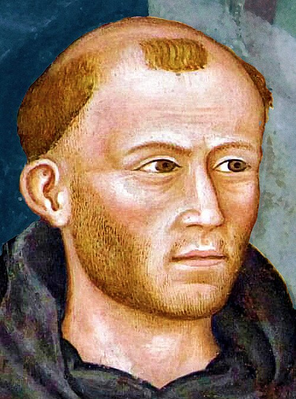
Maître Eckhartv. 1260-1328prier Dieu d'être libéré de Dieu3 min
La préhistoire chrétienne commence par un scandale. Le dominicain Eckhart de Hochheim, maître en théologie à Paris, a prêché à Strasbourg et à Cologne, en allemand, à des religieuses et à des laïcs, des sermons d'une audace sans équivalent. Il est mort pendant son procès ; la bulle In agro dominico de Jean XXII, en 1329, a condamné vingt-huit propositions extraites de ses œuvres. Je ne tranche pas la question de son orthodoxie, toujours débattue ; je lis un sermon qui contient, quatre siècles avant les Lumières, la critique la plus radicale de l'image de Dieu.
Le sermon numéroté 52 dans l'édition critique de Josef Quint commente la première béatitude, « Beati pauperes spiritu », bienheureux les pauvres en esprit. Eckhart y donne de la pauvreté une définition qui récuse toutes les définitions pieuses. Dans la traduction en allemand moderne de Gustav Landauer (1903) : « Das ist ein armer Mensch, der nichts will und nichts weiss und nichts hat », est pauvre l'homme qui ne veut rien, ne sait rien et n'a rien. Ne rien vouloir, c'est ne pas même vouloir accomplir la volonté de Dieu : Eckhart précise que tant que l'homme a pour volonté d'accomplir la très chère volonté de Dieu, il n'a pas la pauvreté dont il parle, car il a encore une volonté. Ne rien savoir, c'est ne pas même savoir que Dieu agit en soi ; n'avoir rien, ne pas même être un lieu où Dieu puisse agir.
Eckhart en tire une prière : « Darum bitte ich Gott, dass er mich Gottes quitt mache », c'est pourquoi je prie Dieu qu'il me rende quitte de Dieu. Le moyen haut allemand porte, dans l'édition de Franz Pfeiffer : « hier umbe so bite ich got, daz er mich quit mache gotes » (Deutsche Mystiker des vierzehnten Jahrhunderts, t. II, Leipzig, 1857, sermon LXXXVII, p. 283, qui est le sermon 52 de la numérotation de Quint) ; je n'ai pas contrôlé le texte établi par Quint (DW II). Eckhart justifie la demande par une distinction : le Dieu dont il faut être libéré est le Dieu en tant que créateur, le Dieu qui fait face à la créature, celui que la créature se représente ; au-delà de lui, il y a un être sans mode, « über Gott und über Unterschiedenheit », au-dessus de Dieu et au-dessus de toute différence, où l'âme était avant d'être créée.
L'histoire a lu cette phrase de deux manières. La première, orthodoxe au moins dans l'intention, y voit la théologie négative poussée à bout, celle du Pseudo-Denys, pour qui Dieu dépasse tous les noms, y compris celui de Dieu. Prier d'être libéré de Dieu, c'est prier d'être libéré de l'idole qu'on s'en fait pour atteindre la Déité sans nom. La seconde est moderne et elle fera d'Eckhart un ancêtre des spiritualités sans Dieu : le détachement, la Gelassenheit, devient un exercice de dépossession qui n'a plus besoin d'aucun objet. Schopenhauer saluera chez Eckhart un frère des sages de l'Inde ; Simone Weil parlera de décréation.
Eckhart établit ce que les critiques modernes oublieront souvent : la critique de la représentation de Dieu, loin d'être une invention de l'incroyance, est au cœur de la mystique chrétienne. Quand Feuerbach dira que le Dieu des croyants est une projection de l'homme, il dira ce qu'Eckhart dit du Dieu-créateur, et en tirera la conclusion inverse : Eckhart sort de l'image de Dieu pour entrer dans la Déité, Feuerbach pour rentrer dans l'homme. Les deux gestes ont la même forme. La confrontation est construite ; elle montre du moins que la frontière entre critique de la religion et spiritualité ne passe pas là où on le croit.
Portrait : Andrea di Bonaiuto, CC BY-SA 4.0
Passage : de la Loi à la raison1 min
Au sortir du Moyen Âge, la critique de la religion n'existe pas encore comme projet, mais elle dispose de trois de ses gestes. Le premier est politique : chez Platon, Aristote et Averroès, la religion apparaît pour la première fois comme une fonction de la cité, que le philosophe peut juger utile sans la tenir pour vraie à la lettre. Le deuxième est thérapeutique : Épicure et Lucrèce délivrent de la peur des dieux sans nier les dieux. Le troisième est apophatique : Plotin, Maïmonide et Eckhart nient de Dieu tout ce qu'on en dit, au point que Feuerbach verra dans la théologie négative un athéisme subtil. Ils ont un trait commun, qui va s'effacer à l'âge classique : ils supposent tous une élite, philosophes, sages ou mystiques, et une multitude à laquelle on laisse ses images. Il faut d'abord revenir en arrière pour suivre la naissance du christianisme, qui a reçu le Dieu des philosophes grecs bien avant que les Modernes ne le retravaillent et ne démocratisent la question.
Deuxième partiela naissance du christianisme, entre Athènes et Jérusalem
L'origine du christianisme n'est pas une affaire d'historiens étrangère à notre question. Toute critique de la religion chrétienne suppose une thèse sur sa naissance : Feuerbach pense qu'elle est la projection de l'essence humaine, Nietzsche qu'elle est l'œuvre de Paul, Strauss et Bauer qu'elle est un mythe, Engels qu'elle est le soulèvement des opprimés de l'Empire, Onfray qu'elle est une fiction littéraire. Et toute refondation reprend quelque chose de cette naissance, puisque c'est là que s'est noué le lien entre un Dieu de la Loi, venu de Jérusalem, et un Dieu de la raison, venu d'Athènes. Tertullien, vers 200, a donné à l'opposition sa forme la plus célèbre : « Quid ergo Athenis et Hierosolymis? quid academiae et ecclesiae? », qu'y a-t-il de commun entre Athènes et Jérusalem, entre l'Académie et l'Église ? (De praescriptione haereticorum, 7, 9). Et il ajoute, contre ceux qui ont produit « un christianisme stoïcien, platonicien et dialectique » (« Stoicum et Platonicum et dialecticum christianismum »), qu'après Jésus-Christ la curiosité n'est plus nécessaire (ibid., 7, 11-12). Mais la question est rhétorique dans un sens qu'il ne voulait pas : Athènes et Jérusalem avaient déjà beaucoup en commun. Nietzsche, dix-sept siècles plus tard, a renversé le reproche en le gardant : « Christenthum ist Platonismus für's "Volk" », le christianisme est du platonisme pour le « peuple » (Jenseits von Gut und Böse, préface). La formule est une polémique, mais elle désigne un fait que les historiens ne contestent pas : le christianisme s'est pensé lui-même dans les catégories de la philosophie grecque, à commencer par celle de Logos. On suivra ce passage de Philon d'Alexandrie, qui lit la Genèse avec le Timée, à Augustin, qui fait du Dieu des platoniciens un Dieu qu'on prie, en passant par Celse et Porphyre, dont les critiques, platoniciennes, contenaient déjà presque tous les arguments des Lumières.
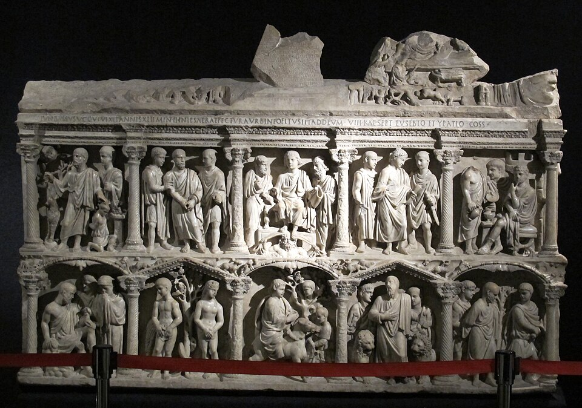
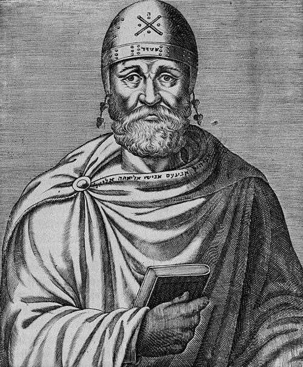
Philon d'Alexandriev. 20 av. J.-C.-v. 45/50 ap. J.-C.Moïse lu avec le Timée5 min
Philon est un juif d'Alexandrie, contemporain exact de Jésus, issu d'une des plus riches familles de la communauté, et membre en 39-40 de l'ambassade qui plaida la cause de ses coreligionnaires devant l'empereur Caligula. Il écrit en grec, lit la Bible dans la traduction grecque des Septante, et la commente dans une œuvre immense, presque entièrement allégorique. Rien n'indique qu'il ait entendu parler de Jésus, et aucun de ses traités ne mentionne le mouvement chrétien. Il a pourtant fourni au christianisme naissant l'outil qui lui permit de penser son Dieu en philosophe.
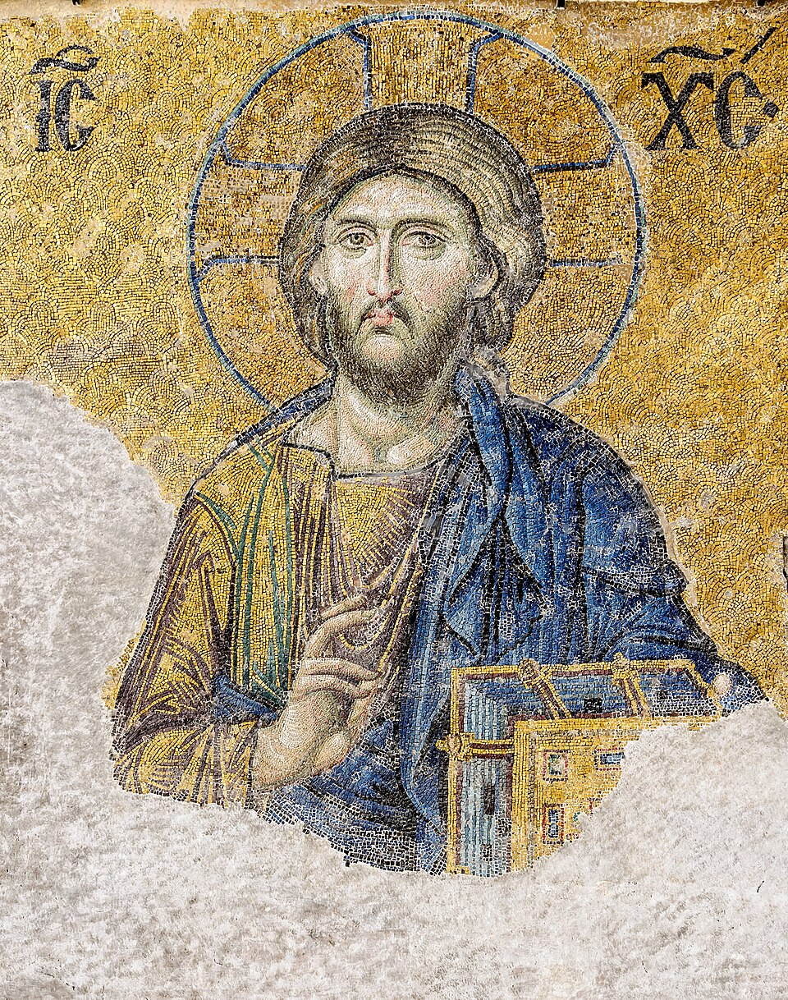
Son projet tient en une affirmation, posée au début du De opificio mundi, son traité sur la création du monde : Moïse est un philosophe, et même le premier. Moïse, écrit-il, avait atteint très tôt les sommets de la philosophie, et il avait appris des oracles de Dieu les principes les plus nombreux et les plus importants de la nature (De opificio mundi, 8). La Genèse et le Timée disent donc la même chose, et quand ils semblent diverger, c'est que la lettre de la Genèse cache un sens que l'allégorie doit découvrir.
Le cœur de la doctrine est le Logos. Lire la Genèse avec le Timée oblige à résoudre une difficulté que le Timée lui-même laisse ouverte : comment le Dieu transcendant, qui n'a rien de commun avec la matière, peut-il façonner le monde ? Platon plaçait entre le démiurge et le monde les Idées, modèles éternels. Philon les place dans l'esprit de Dieu, et il appelle cet esprit en acte le Logos. Si l'on voulait parler sans détour, dit-il, on ne dirait pas que le monde intelligible est autre chose que le Logos de Dieu déjà occupé à créer le monde, de même que la ville intelligible n'est rien d'autre que la pensée de l'architecte qui projette de la bâtir ; et il ajoute aussitôt que c'est là la doctrine de Moïse, non la sienne (De opificio mundi, 24-25). Le Logos est ainsi à la fois le lieu des Idées, l'instrument de la création et le modèle de l'homme, puisque l'homme est fait « à l'image de Dieu ». Philon va jusqu'à l'appeler, dans un passage des Questions sur la Genèse que l'original grec a perdu mais qu'Eusèbe de Césarée a conservé, le « second Dieu » : rien de mortel ne pouvait être fait à la ressemblance du Dieu suprême et Père de l'univers, mais seulement à la ressemblance du second Dieu, qui est son Logos (Quaestiones in Genesim II, 62, cité par Eusèbe, Préparation évangélique VII, 13).
Un juif fidèle à la Loi, qui récitait chaque jour que Dieu est un, pense le monde à partir d'un intermédiaire divin qui n'est pas Dieu lui-même et qu'il nomme pourtant « second Dieu ». Il ne s'agit pas, chez Philon, d'une personne, encore moins d'un homme : le Logos est une fonction de la pensée divine, que Philon décrit tantôt comme une puissance, tantôt comme un archange, tantôt comme le grand prêtre du monde, sans jamais fixer la métaphore. Mais quelques décennies plus tard, le prologue de l'Évangile de Jean écrira : « Ἐν ἀρχῇ ἦν ὁ λόγος, καὶ ὁ λόγος ἦν πρὸς τὸν θεόν, καὶ θεὸς ἦν ὁ λόγος », au commencement était la Parole, et la Parole était avec Dieu, et la Parole était Dieu (Jn 1, 1), puis, ce que Philon n'aurait jamais pu écrire : « Καὶ ὁ λόγος σὰρξ ἐγένετο », et la Parole a été faite chair (Jn 1, 14). Qu'il y ait eu ou non influence directe de Philon sur Jean, question disputée, le concept était disponible, et c'est par lui que le christianisme est entré dans la philosophie.
La méthode allégorique est l'ancêtre commune de presque toutes les herméneutiques religieuses de l'Occident. Philon part d'un principe qu'il tient pour évident : Dieu n'a ni mains, ni colère, ni repentir, et quand l'Écriture lui en prête, elle parle la langue des hommes pour être entendue d'eux. Chaque récit a donc deux sens, le littéral, qui sert à la multitude, et le figuré, qui s'adresse à ceux qui savent lire. Le jardin d'Éden devient la vertu, les patriarches deviennent des dispositions de l'âme, l'exode d'Égypte devient la sortie de l'âme hors du corps. Philon ne méprise pas pour autant la lettre : il reproche expressément aux allégoristes radicaux de son temps de négliger l'observance de la Loi sous prétexte d'en avoir compris le sens. Le double niveau de lecture est ainsi une manière de garder ensemble la communauté et la philosophie, la pratique de tous et la contemplation de quelques-uns. On reconnaît le partage qu'Averroès théorisera onze siècles plus tard.
Philon a aussi laissé, dans le De vita contemplativa, la description d'une communauté d'hommes et de femmes, les Thérapeutes, qui vivaient près du lac Maréotis dans la prière, l'étude des Écritures et le chant, retirés de la ville. Réalité ou idéal, c'est la première image d'une vie spirituelle qui n'est ni le culte du Temple ni l'école des philosophes, mais une forme de vie réglée par la contemplation. Les moines chrétiens d'Égypte, deux siècles plus tard, y reconnurent leurs ancêtres, et Eusèbe crut même que les Thérapeutes étaient des chrétiens. La confusion est instructive : la forme de vie spirituelle a précédé la doctrine qui allait se l'approprier.
Le fait le plus instructif de son histoire est sa postérité : le judaïsme rabbinique ne l'a pas transmis, la tradition qui l'a gardé est chrétienne. Ce sont des chrétiens d'Alexandrie, Clément puis Origène, qui l'ont lu, cité, imité, et qui ont recopié ses manuscrits ; ce sont des chrétiens, comme Eusèbe, qui nous ont conservé ce que nous avons perdu de son texte grec. C'est le consensus des historiens. Le judaïsme, qui allait se reconstruire après la destruction du Temple en 70 autour de la Loi et de son commentaire, n'avait pas besoin d'un Logos ; le christianisme, qui devait expliquer comment un homme crucifié pouvait être le fils d'un Dieu unique, en avait un besoin vital. Philon a fourni à une religion qui n'était pas la sienne la philosophie qu'elle cherchait.
Philon appartient au régime de l'allégorie, antérieur à tous ceux de la critique : il ne critique pas la religion, il la traduit en philosophie. Cette traduction a deux faces : elle préserve la Loi de l'objection rationaliste, mais elle installe dans la religion biblique un Dieu de philosophe, sans passion et sans visage. Philon est ainsi, avant le christianisme, l'inventeur de ce que Heidegger appellera onto-théologie appliquée à la Bible. Sa lecture allégorique a aussi un prix, que Spinoza fera payer à Maïmonide, son lointain héritier (première partie) : si l'on peut toujours lire sous la lettre le sens que la raison exige, la raison n'apprend plus rien de l'Écriture. Au regard du critère, enfin, Philon ne refonde rien et n'exige aucun sacrifice nouveau ; il rend la philosophie grecque religieuse, et la religion biblique philosophique.
Portrait : André Thevet, Les Vrais Pourtraits (1584), Public domain
Paul de Tarsemort v. 64/67le Christ crucifié, folie pour les Grecs6 min
Si Philon a fourni le concept, Paul a fourni le scandale. Encore faut-il savoir de quel Paul on parle. Sur les treize lettres que le Nouveau Testament lui attribue, la critique historique tient pour authentiques sept seulement : la première aux Thessaloniciens, la lettre aux Galates, les deux lettres aux Corinthiens, la lettre aux Romains, la lettre aux Philippiens et le billet à Philémon. C'est l'interprétation dominante, presque un consensus ; les autres sont dites deutéro-pauliniennes, écrites dans son école après sa mort. Ces sept lettres, rédigées entre 50 et 60 environ, sont les plus anciens textes chrétiens que nous ayons, antérieurs à tous les Évangiles. Les Actes des Apôtres, qui racontent sa vie, sont postérieurs d'une génération au moins, composés par l'auteur de l'Évangile de Luc avec une liberté d'historien antique qui oblige à la prudence.
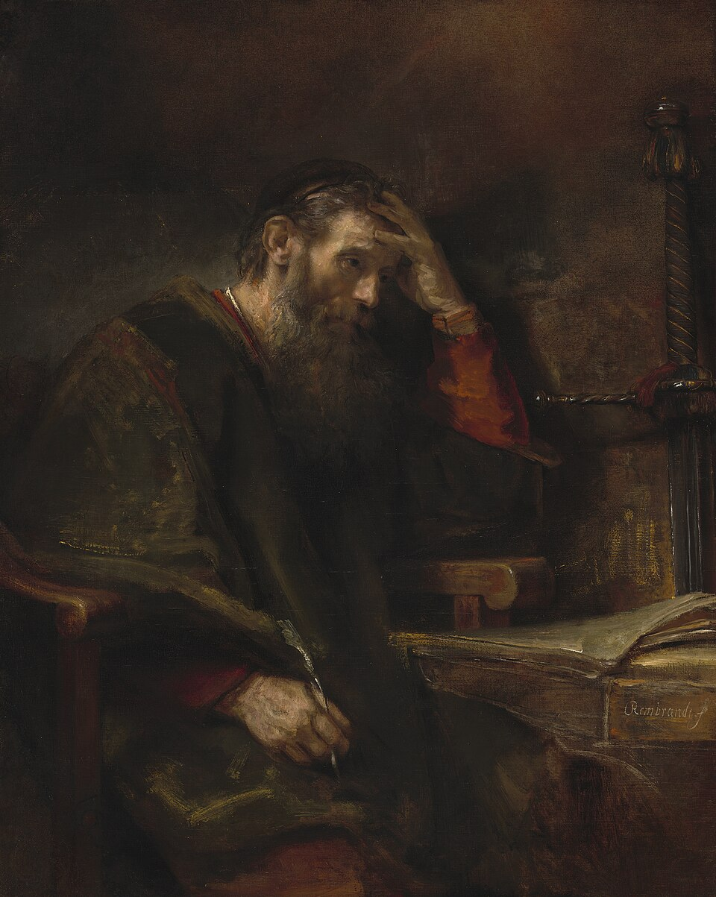
Paul se présente lui-même comme un juif, et même comme un juif d'élite. Il rappelle aux Galates quelle était sa conduite « dans le judaïsme », comment il persécutait l'Église, et comment il était « plus avancé dans le judaïsme que beaucoup de ceux de [son] âge » (Ga 1, 13-14). Il ne dit pas qu'il a quitté le judaïsme pour une religion nouvelle ; il dit qu'il a plu à Dieu « de révéler en moi son Fils, afin que je l'annonçasse parmi les païens » (Ga 1, 16). La recherche de la seconde moitié du XXe siècle a insisté sur ce point : la « nouvelle perspective sur Paul », inaugurée par E. P. Sanders (Paul and Palestinian Judaism, 1977), a contesté l'image luthérienne d'un Paul qui opposerait la grâce chrétienne à un judaïsme de la performance légale : le judaïsme de son temps, montre Sanders, était déjà une religion de l'alliance reçue par grâce, et Paul ne quitte pas le judaïsme, il en ouvre les frontières aux nations. Sans trancher ce débat d'exégètes, on retiendra que le fondateur présumé du christianisme ne se pensait pas comme le fondateur d'une religion.
Ce qu'il fonde, pourtant, est inouï, et il le sait. La première lettre aux Corinthiens contient la phrase qui résume la rencontre d'Athènes et de Jérusalem, et la rend impossible : « ἐπειδὴ καὶ Ἰουδαῖοι σημεῖα αἰτοῦσιν καὶ Ἕλληνες σοφίαν ζητοῦσιν, ἡμεῖς δὲ κηρύσσομεν Χριστὸν ἐσταυρωμένον, Ἰουδαίοις μὲν σκάνδαλον, ἔθνεσιν δὲ μωρίαν », les Juifs demandent des miracles et les Grecs cherchent la sagesse : nous, nous prêchons Christ crucifié, scandale pour les Juifs et folie pour les païens (1 Co 1, 22-23). Paul ne propose pas une sagesse meilleure que celle des philosophes ; il propose une folie, un Dieu qui se manifeste dans le supplice des esclaves. Le Logos de Philon était le lieu des Idées ; le Christ de Paul est un condamné.
Les Actes racontent pourtant une tentative de conciliation, la scène où Athènes et Jérusalem se rencontrent physiquement. Paul, à Athènes, discute avec des philosophes épicuriens et stoïciens, qui le mènent à l'Aréopage. Il y prononce un discours qui part d'un autel « à un dieu inconnu », cite un poète grec, « de lui nous sommes la race », et affirme que Dieu « n'habite point dans des temples faits de main d'homme » ; puis il annonce le jugement et la résurrection d'un homme, et alors, dit le récit, « les uns se moquèrent, et les autres dirent : Nous t'entendrons là-dessus une autre fois » (Ac 17, 22-32). Ce discours est, selon l'interprétation dominante des exégètes, une composition de Luc plutôt qu'un procès-verbal, mais il dit avec justesse où passe la frontière. Le Dieu créateur qui n'habite pas les temples, les stoïciens pouvaient l'entendre, et Platon l'avait presque dit ; c'est la résurrection d'un corps qui fait rire l'Aréopage. Le christianisme pourra se dire en grec tant qu'il parle de Dieu ; il cessera d'être grec dès qu'il parle de la chair.
Le plus ancien témoignage sur le contenu de la foi est chez Paul, et c'est un récit reçu plutôt qu'une doctrine : la formule de 1 Co 15, 3-5, que l'on retrouvera à propos de l'existence de Jésus, transmet la mort du Christ pour les péchés selon les Écritures, sa sépulture, sa résurrection le troisième jour et ses apparitions à Céphas, puis aux douze. Paul écrit vers 54 ; il dit transmettre ce qu'il a reçu, sans doute à Damas ou à Jérusalem, dans les années trente. Et il mentionne, dans la lettre aux Galates, sa rencontre avec Céphas, c'est-à-dire Pierre, et avec Jacques, le frère du Seigneur (Ga 1, 19). Ce verset pèsera lourd dans le débat sur l'existence historique de Jésus.
Deux traits de la pensée de Paul comptent pour notre débat. Le premier est son universalisme. « Il n'y a plus ni Juif ni Grec, il n'y a plus ni esclave ni libre, il n'y a plus ni homme ni femme ; car tous vous êtes un en Jésus Christ » (Ga 3, 28). La phrase ne promet pas l'abolition de l'esclavage ni l'égalité civile des sexes, et Paul renvoie ailleurs l'esclave à son maître ; elle déclare que ces distinctions ne comptent plus devant Dieu. C'est peu au regard de la politique, et c'est immense au regard de la religion antique, qui était toujours la religion d'un peuple, d'une cité ou d'une condition. Le second trait est son attente de la fin. Les lettres les plus anciennes supposent que le Christ reviendra du vivant de leurs destinataires. L'interprétation dominante des historiens en tire une conséquence que les théologiens ont longtemps refusée : le christianisme paulinien est d'abord une eschatologie, une attente de la fin imminente du monde, et non une morale ni une métaphysique. Albert Schweitzer en fera, au début du XXe siècle, la clef de toute la recherche sur Jésus.
Engels, qui avait lu Bruno Bauer de près, a tiré de ces deux traits une analogie qui a fait fortune. « Die Geschichte des Urchristentums bietet merkwürdige Berührungspunkte mit der modernen Arbeiterbewegung », l'histoire du christianisme primitif présente de curieux points de contact avec le mouvement ouvrier moderne : comme lui, le christianisme fut à l'origine un mouvement d'opprimés, et tous deux annoncent une délivrance prochaine de la servitude et de la misère (Zur Geschichte des Urchristentums, 1894). Engels ajoute que le christianisme place cette délivrance dans l'au-delà et le socialisme dans ce monde. L'analogie est éclairante et dangereuse : elle éclaire la sociologie des premières communautés, et annonce sans le vouloir ce que Löwith reprochera au marxisme, qui est d'être une eschatologie transposée. Celse, on va le voir, disait déjà, avec mépris, ce qu'Engels dit avec sympathie.
Paul a-t-il inventé le christianisme ? C'est la thèse de Nietzsche, pour qui Paul est le porteur de mauvaise nouvelle (septième partie) : Paul « verlegte einfach das Schwergewicht jenes ganzen Daseins hinter dies Dasein », transféra simplement le centre de gravité de toute cette existence au-delà de l'existence, dans le mensonge du Jésus ressuscité, et son besoin était la puissance (Der Antichrist, § 42). Renan, dans son Saint Paul (1869), avait déjà opposé le Jésus galiléen des paraboles au théologien de Tarse, avec moins de violence et plus de mélancolie. Le rapprochement est construit, puisque Nietzsche ne cite pas Renan sur ce point ; les deux lectures convergent vers un Jésus sans doctrine et un Paul sans Jésus.
Je crois cette thèse à moitié juste. Juste, en ce que Paul a fait d'un supplice une théologie, et que les lettres ne s'intéressent presque pas à la vie de Jésus, à ses paroles, à ses actes : seule compte la croix et ce qui la suit. Fausse, en ce qu'elle fait de Paul un inventeur solitaire. Paul dit avoir « reçu » la formule de 1 Co 15, il fréquente Pierre et Jacques, il se dispute avec eux sur l'observance de la Loi par les païens convertis ; il entre dans un mouvement qui existait avant lui et qui croyait déjà Jésus ressuscité. Et Nietzsche, comme Renan, ignore ce que Sanders a montré : la croix n'est pas pour Paul le rejet du judaïsme, elle en est l'accomplissement pour les nations. Au regard du critère, enfin, une formule de la lettre aux Romains retient l'attention : « Je vous exhorte donc, frères, par les compassions de Dieu, à offrir vos corps comme un sacrifice vivant, saint, agréable à Dieu, ce qui sera de votre part un culte raisonnable » (Rm 12, 1). Le sacrifice sanglant est remplacé par l'offrande de soi, et ce culte est dit logikê, conforme au Logos. Paul spiritualise le sacrifice au lieu de l'abolir. C'est un progrès immense par rapport aux holocaustes, et c'est en même temps l'acte de naissance d'une religion qui pourra exiger de l'individu qu'il s'offre tout entier.
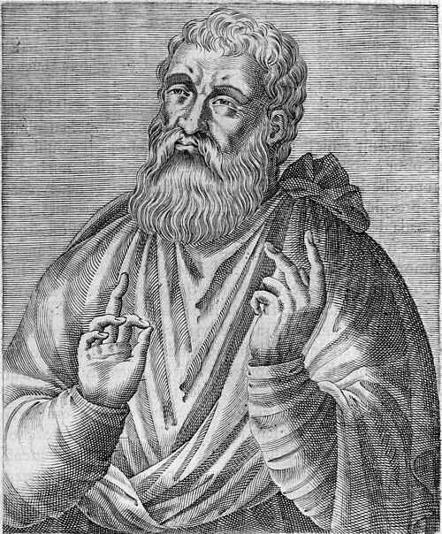
Justin Martyrv. 100-v. 165le Logos semé dans tous les hommes5 min
Né en Samarie dans une famille païenne, Justin a cherché la vérité chez les philosophes avant de la trouver, dit-il, chez les prophètes. Converti vers 130, il ouvre à Rome une école où il enseigne le christianisme comme une philosophie, en portant le manteau des philosophes, et il y meurt martyr vers 165. Ses deux Apologies, adressées vers 150-155 à l'empereur Antonin et au sénat, sont le premier effort systématique pour présenter la foi chrétienne au monde gréco-romain dans sa propre langue. Elles reposent sur une idée que Philon avait préparée et que Justin pousse à son terme : le Logos qui s'est fait chair en Jésus était déjà présent, partiellement, dans tous les hommes.
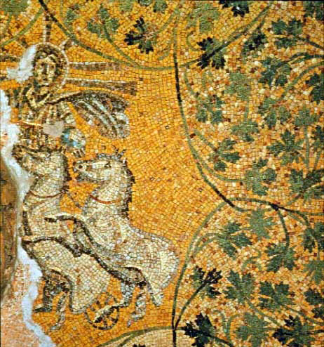
La thèse est énoncée avec une netteté qui étonne encore. Le Christ, écrit Justin, est le Logos dont tout le genre humain a reçu une part, et ceux qui ont vécu selon le Logos sont chrétiens, quand bien même on les a tenus pour athées : chez les Grecs, Socrate et Héraclite et ceux qui leur ressemblent ; chez les barbares, Abraham, Élie et beaucoup d'autres (1 Apologie, 46). Le mot « athées » porte ici tout le poids. Les chrétiens étaient accusés d'athéisme parce qu'ils refusaient les dieux de la cité ; Socrate l'avait été pour la même raison, et le procès de Socrate devient le précédent du martyre chrétien. Justin le dit expressément dans la Seconde Apologie : Socrate fut accusé des mêmes crimes que nous, d'introduire des divinités nouvelles et de ne pas reconnaître les dieux que la cité reconnaissait (2 Apologie, 10). C'est le crime même que punissait la loi des Lois : le christianisme se présente, à sa naissance, comme la religion des impies selon Platon et des justes selon Socrate.
Le même chapitre contient une citation que Celse et Origène se disputeront. Justin écrit que Socrate exhortait les hommes à connaître le Dieu qui leur était inconnu par la recherche de la raison, en disant qu'il n'est ni facile de trouver le Père et l'artisan de toutes choses, ni sûr, l'ayant trouvé, de le déclarer à tous (2 Apologie, 10). C'est le Timée, que Justin attribue à Socrate : « τὸν μὲν οὖν ποιητὴν καὶ πατέρα τοῦδε τοῦ παντὸς εὑρεῖν τε ἔργον καὶ εὑρόντα εἰς πάντας ἀδύνατον λέγειν », trouver l'artisan et le père de cet univers est une tâche, et l'ayant trouvé, il est impossible de le dire à tous (Timée 28c). Pour Justin, le Christ a fait ce que Platon déclarait impossible : le Père, inaccessible aux philosophes, s'est fait connaître de tous.
La doctrine qui a donné son nom à la pensée de Justin est celle du Logos spermatikos, la raison séminale. Chacun des philosophes, écrit-il, a bien parlé dans la mesure où il avait part au Logos séminal, voyant ce qui lui était apparenté ; et tout ce qui a été bien dit chez tous les hommes nous appartient, à nous chrétiens (2 Apologie, 13). La formule est double, et ses deux faces ont eu deux postérités opposées. D'un côté, elle est une ouverture d'une générosité rare : la vérité n'est pas l'apanage des baptisés, elle est semée en tous, et l'on peut être chrétien sans le savoir. De l'autre, elle est une annexion : tout ce qui est vrai chez les autres est à nous. Justin ajoute qu'il ne se réclame pas du christianisme parce que les enseignements de Platon seraient étrangers à ceux du Christ, mais parce qu'ils ne leur sont pas en tout semblables (ibid.). Platon a vu une part, le Christ est le tout.
Justin a aussi écrit, vers 160, un Dialogue avec Tryphon, où il discute avec un juif cultivé de l'interprétation des Écritures. Le livre s'ouvre sur le récit de sa conversion : il a parcouru les écoles, stoïcienne, péripatéticienne, pythagoricienne, et s'était arrêté au platonisme, qui lui promettait de voir Dieu, quand un vieillard rencontré au bord de la mer lui a montré que les prophètes en savaient plus que les philosophes. Le récit est sans doute stylisé, mais il dit l'essentiel : le christianisme n'est pas le contraire de la philosophie, il en est l'achèvement, la seule qui tienne ses promesses. Hegel reprendra ce schéma en l'inversant, puisque chez lui c'est la philosophie qui accomplit la religion en la portant au concept ; le rapprochement, construit, montre que la question de savoir qui accomplit l'autre n'a jamais cessé d'être posée.
Le Dialogue avec Tryphon a aussi une face sombre : c'est l'un des premiers textes où la séparation d'avec le judaïsme devient une polémique contre lui : la Loi y est présentée comme une discipline imposée aux juifs à cause de la dureté de leur cœur, et l'Église comme le véritable Israël. La doctrine du Logos séminal, si accueillante envers les Grecs, l'est beaucoup moins envers les juifs, à qui elle reproche d'avoir eu la Parole sous les yeux sans la reconnaître. L'universalisme chrétien commence ainsi par une exclusion, et la longue histoire de l'antijudaïsme chrétien y trouve l'une de ses racines.
Un argument qui paraît aujourd'hui naïf a eu une longue histoire. Justin affirme que Platon a emprunté à Moïse sa doctrine de la création à partir d'une matière informe, et même que le passage du Timée où l'âme du monde est disposée « en forme de khi », croisée dans l'univers, vient du serpent d'airain que Moïse dressa dans le désert, lu par Platon comme une croix qu'il n'aurait pas comprise (1 Apologie, 59-60). C'est la thèse du « larcin des Grecs », reprise par Clément d'Alexandrie et par Eusèbe : la sagesse grecque est postérieure à Moïse et dérivée de lui. Historiquement fausse, elle répond à une nécessité polémique : dans un monde où l'ancienneté fait l'autorité, une religion née sous Tibère devait prouver qu'elle était plus vieille que Platon.
Justin a fait du christianisme une philosophie, et c'est en philosophe qu'il meurt, refusant de sacrifier aux dieux de l'Empire. Le martyre n'est pas ici l'absolu sacrificiel que le critère dénonce : c'est l'État romain, non la doctrine de Justin, qui exige le sacrifice, et Justin meurt pour avoir refusé un culte. Mais la doctrine du Logos séminal contient en germe l'autre danger : si tout ce qui est vrai appartient aux chrétiens, ceux qui le nient ne sont pas seulement dans l'erreur, ils retiennent ce qui ne leur appartient pas. L'ouverture de Justin et l'intolérance des siècles suivants sortent de la même phrase.
Portrait : André Thevet, Les Vrais Pourtraits (1584), Public domain
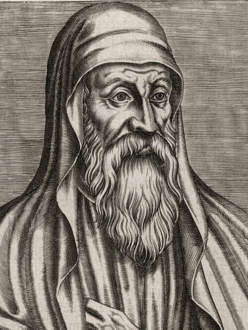
Celse et Origènela première critique du christianisme, et sa réponse8 min
Vers 178, sous Marc Aurèle, un philosophe platonicien dont nous ne savons presque rien, Celse, écrit contre les chrétiens un traité qu'il intitule Alêthês logos, le Discours véritable. Le livre est perdu. Nous le connaissons parce qu'Origène, vers 248, à la demande de son protecteur Ambroise, l'a réfuté phrase par phrase dans les huit livres du Contre Celse, en citant longuement son adversaire. Origène le dit dès la préface : il répond au traité qu'on lui a envoyé, et dont il ne pense pas que quiconque, si peu avancé soit-il en philosophie, admettra qu'il soit un « discours véritable », comme Celse l'a intitulé (Contre Celse, préface, 4). Paradoxe complet : le premier grand pamphlet antichrétien ne nous est parvenu que par la piété d'un théologien qui voulait le détruire. C'est une réponse attestée, la plus ancienne de cet essai.
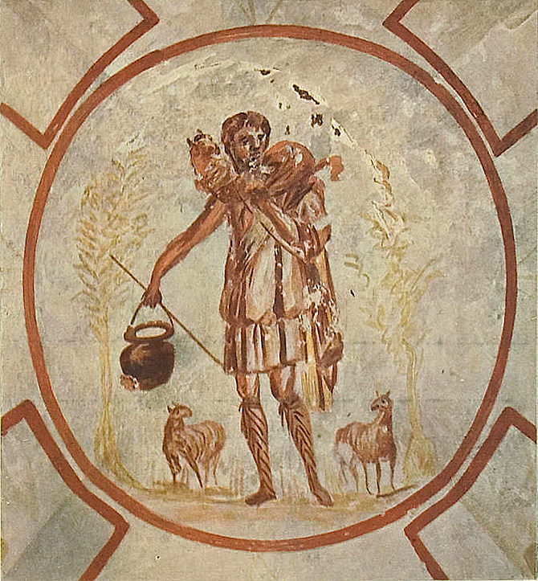
Les accusations de Celse se rangent en quatre familles. La première vise la personne de Jésus : Celse fait parler un juif qui reproche à Jésus d'avoir inventé sa naissance virginale, d'être né dans un village de Judée d'une pauvre fileuse chassée par son mari, un charpentier, pour adultère ; Jésus se serait loué comme serviteur en Égypte, y aurait appris des pouvoirs merveilleux, et serait revenu se proclamer dieu (Contre Celse I, 28). Le père serait un soldat nommé Panthera (I, 32). Celse compare ensuite les miracles de Jésus aux tours des charlatans qui, sur les places, pour quelques oboles, chassent les démons et guérissent les maladies (I, 68). C'est la thèse du magicien, qui nie la divinité de Jésus, non son existence.
La deuxième famille vise la foi elle-même. Celse reproche aux chrétiens de ne vouloir ni donner ni recevoir de raison de ce qu'ils croient, et de répéter : n'examine pas, crois, ta foi te sauvera ; et il les compare aux prêtres mendiants de Cybèle et aux devins (I, 9). La troisième vise leur public. Selon Celse, les chrétiens disent : que nul homme instruit, sage ou prudent ne vienne à nous, mais si quelqu'un est ignorant, sot, sans éducation, qu'il vienne avec confiance ; ce qui montre, conclut-il, qu'ils ne veulent et ne peuvent gagner que les simples, les gens de rien, les esclaves, les femmes et les enfants (III, 44). La quatrième, la plus intéressante pour nous, accuse les chrétiens d'avoir mal compris Platon : ce que l'Écriture a de bon, Platon l'a mieux dit, sans emphase et sans promesses (VI, 1), et les chrétiens qui parlent d'un Dieu « supracéleste » n'ont fait que mal lire le Phèdre (VI, 19).
Celse a ainsi anticipé presque toute la critique moderne. La thèse de la crédulité, qui réclame des raisons, est celle de Voltaire et de d'Holbach. La thèse sociale, qui fait du christianisme une religion d'esclaves et d'ignorants, sera celle de Nietzsche, retournée en accusation de ressentiment, et celle d'Engels, retournée en éloge des opprimés. La thèse de l'emprunt, qui fait du christianisme un platonisme dégradé, annonce la formule de Nietzsche citée en tête de cette partie. Et la généalogie scandaleuse de Jésus, fils d'un soldat et d'une femme répudiée, sera reprise par la polémique juive médiévale, puis par les libertins. Il manque un seul argument, et son absence est remarquable : Celse ne prétend jamais que Jésus n'a pas existé ; il le méprise au contraire parce qu'il a vécu et a été crucifié. Le premier adversaire du christianisme, qui vivait un siècle et demi après la crucifixion et avait tout intérêt à nier ce qu'il pouvait nier, ne nie pas cela.
La réponse d'Origène compte parmi les grands textes de la pensée chrétienne parce qu'elle accepte le terrain de l'adversaire. Sur la crédulité, Origène répond que, s'il était possible à tous les hommes de quitter les affaires de la vie pour se consacrer à la philosophie, aucune autre méthode ne devrait être suivie que celle-là ; mais que cela est impossible, et que la foi est le chemin de ceux qui ne peuvent pas philosopher, sans que le christianisme renonce pour autant à la recherche et à l'interprétation (I, 9). Sur le public, il répond que les ambassadeurs de la vérité doivent chercher à gagner le plus grand nombre, les simples comme les intelligents, les barbares comme les Grecs, et que ceux qui se détournent des ignorants comme d'esclaves incapables de suivre un discours poli restreignent étrangement le bien public (VI, 1).
Le point culminant de la dispute est un échange sur le Timée. Celse renvoie les chrétiens à Platon comme à un meilleur maître de théologie, et cite la phrase que Justin avait déjà citée : il est difficile de trouver l'artisan et le père de cet univers, et l'ayant trouvé, impossible de le faire connaître à tous ; voyez, ajoute-t-il, comme les hommes divins cherchent la voie de la vérité, et comme Platon savait bien qu'il était impossible à tous d'y marcher (VII, 42). Origène répond que ces paroles de Platon sont nobles et admirables, mais que l'Écriture montre un amour des hommes plus grand encore dans le Logos de Dieu, qui était au commencement auprès de Dieu et qui s'est fait chair, afin de révéler à tous ce que, selon Platon, il était impossible de faire connaître à tous (ibid.). Toute la différence entre platonisme et christianisme tient là. Pour Celse, la connaissance de Dieu est le privilège d'une élite, et la multitude doit s'en tenir aux cultes de la cité. Pour Origène, elle est offerte à tous, parce que Dieu lui-même est descendu jusqu'à eux.
Encore faut-il mesurer ce qu'Origène accorde à son adversaire. Origène est lui-même un philosophe formé à Alexandrie, auditeur, selon Porphyre, du même Ammonius qui fut le maître de Plotin. Il lit l'Écriture selon la méthode de Philon, à trois niveaux, le corps, l'âme et l'esprit, et ne recule pas devant des thèses que l'Église jugera plus tard inacceptables : la préexistence des âmes, ou l'espérance que tous les êtres, peut-être même le diable, seront à la fin restaurés en Dieu. Ces doctrines, ou celles qu'on lui attribuait, furent condamnées au VIe siècle, longtemps après sa mort, et la plus grande partie de son œuvre grecque fut perdue pour cette raison. Le premier grand théologien chrétien, qui avait répondu à la première grande critique, a donc fini hérétique posthume. La leçon est double : la théologie chrétienne s'est construite en empruntant à la philosophie grecque ses armes contre la philosophie grecque, comme Celse l'en accusait ; et l'institution qui en est sortie a fini par condamner celui qui l'avait le mieux défendue, pour avoir trop pensé. Eckhart, condamné lui aussi après sa mort, connaîtra le même destin : la critique de la religion a souvent commencé à l'intérieur de la théologie, chez ceux que l'Église a ensuite rejetés.
Celse n'est d'ailleurs pas un sceptique. Il croit en un Dieu suprême, inaccessible, que seuls les sages approchent, et en une foule de divinités inférieures, de démons au sens grec, qui administrent les peuples et les lieux et auxquels il est juste de rendre les honneurs que la coutume prescrit. Ce n'est donc pas la critique d'un incroyant, mais celle d'un homme qui tient à la hiérarchie du divin et à la piété traditionnelle, et qui voit dans une religion qui prétend à l'universel une menace pour l'ordre du monde. C'est pourquoi il me paraît faux d'en faire l'ancêtre des athées modernes. Il est l'ancêtre de ceux qui défendent la religion pour l'ordre qu'elle assure, de Voltaire à Maurras et jusqu'au dernier Onfray, qui défend une civilisation chrétienne sans en partager la foi. Le premier adversaire du christianisme était un conservateur religieux.
La dispute porte aussi sur la cité, et elle touche par là directement notre question. À la fin de son traité, Celse adjure les chrétiens de secourir l'empereur de toutes leurs forces, de travailler avec lui au maintien de la justice, de combattre pour lui et, s'il le faut, sous ses ordres ; et il les presse d'accepter les charges publiques que réclament le maintien des lois et de la religion (Contre Celse VIII, 73 et 75). Celse ne demande pas aux chrétiens de croire aux dieux ; il leur demande d'être citoyens, c'est-à-dire de participer à la religion civile sans laquelle, pense-t-il, l'Empire se dissout. Origène répond que les chrétiens aident l'empereur par leurs prières mieux que les soldats par leurs armes, et surtout que les chrétiens reconnaissent, dans chaque ville, l'existence d'une autre patrie, fondée par le Logos de Dieu, l'Église, dont ils préfèrent servir les charges (VIII, 73 et 75).
Cette réponse fait naître une idée qui gouvernera toute l'histoire politique de l'Occident : la séparation de la communauté religieuse et de la communauté politique. Pour Celse comme pour Platon, la religion est une affaire de la cité ; pour Origène, il y a deux cités, et la plus haute n'est pas celle de l'empereur. Augustin donnera à cette idée sa forme achevée dans la Cité de Dieu. Elle a deux faces. Elle libère la conscience de l'emprise de l'État, et Bayle, Locke et les Lumières en seront les héritiers lointains. Mais elle crée aussi une seconde puissance, l'Église, qui pourra exiger à son tour ce que la cité exigeait.
Qui a raison ? Il faut d'abord rendre justice à Celse, que la tradition chrétienne a traité en calomniateur. Ses arguments sur la crédulité et sur les emprunts au platonisme sont forts, ses informations sur la polémique juive de son temps précieuses. Mais sa position repose sur le présupposé platonicien par excellence, le partage entre les philosophes qui savent et la multitude qui croit ce que la cité lui prescrit : Celse est le dernier héritier de Platon législateur. Origène, lui, ouvre la porte de l'égalité spirituelle : le Dieu des philosophes devient le Dieu de chacun, et l'esclave peut en savoir autant que Platon. Mais il ferme, au moins en germe, celle de la liberté de pensée : si la vérité est donnée à tous par révélation, celui qui la refuse n'est plus un ignorant à éclairer, il devient un rebelle. La dispute est donc symétrique. Celse défend un absolu politique, les dieux de la cité, auquel l'individu doit sacrifier ; Origène défend un absolu révélé, que le pouvoir chrétien imposera bientôt avec la même rigueur. Aucun des deux ne sort de la religion. Mais de leur dispute naissent l'idée même d'une critique de la religion par la raison et l'idée, tout aussi moderne, que la vérité doit pouvoir être dite à tous.
Portrait : André Thevet, Les Vrais Pourtraits (1584), Public domain
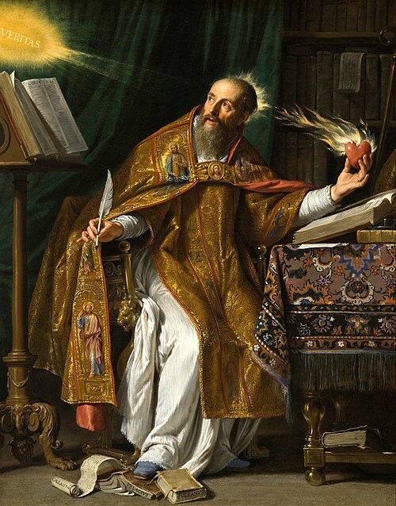
Porphyre et Augustinle dernier adversaire et le premier synthétiseur5 min
La dispute de Celse et d'Origène a une suite, et elle a lieu dans la même école. Porphyre de Tyr (v. 234-v. 305), disciple et éditeur de Plotin, a connu Origène dans sa jeunesse et l'a jugé sévèrement. Dans un fragment conservé par Eusèbe, il raconte qu'Origène, auditeur d'Ammonius, le plus savant philosophe de son temps, avait tiré de son maître une grande connaissance des sciences, mais qu'il avait, pour la conduite de la vie, pris le chemin inverse, passant de la culture grecque à « l'audace barbare » (Eusèbe, Histoire ecclésiastique VI, 19). Pour un platonicien du IIIe siècle, le christianisme n'est pas une philosophie, c'est une barbarie qui a volé la philosophie.
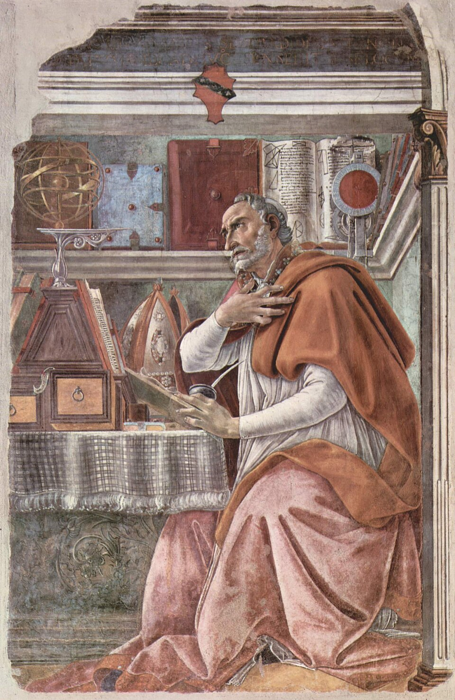
De son Contre les chrétiens, écrit vers 270 selon la datation la plus courante (d'autres le placent vers 300), il ne reste que des fragments cités par ses réfutateurs. Le plus célèbre concerne le livre de Daniel. Jérôme rapporte, dans le prologue de son commentaire, que Porphyre consacra son douzième livre à nier que Daniel ait été écrit par le prophète dont il porte le nom, et à soutenir qu'il fut composé en Judée à l'époque d'Antiochus Épiphane, de sorte que Daniel ne prédisait pas l'avenir mais racontait le passé (Jérôme, Commentaire sur Daniel, prologue). C'est aussi la conclusion de l'exégèse historico-critique moderne, qui date la composition de Daniel des années 167-164 avant J.-C. Porphyre a eu raison quinze siècles avant Spinoza et avant David Friedrich Strauss, et sa méthode est déjà la leur : ce qui ressemble trop à une prophétie réalisée a été écrit après coup.
Porphyre n'est pourtant ni un athée ni même un ennemi de Jésus, et c'est ce qui rend sa position instructive. Augustin cite, dans la Cité de Dieu, un passage de sa Philosophie tirée des oracles : les dieux, écrit Porphyre, ont proclamé le Christ très pieux et devenu immortel, et ils font mémoire de lui avec éloge ; mais ils disent que les chrétiens sont souillés, contaminés et enveloppés dans l'erreur (« Christum enim dii piissimum pronuntiauerunt et inmortalem factum[…] Christianos uero pollutos[…] et contaminatos et errore implicatos esse dicunt ») (Augustin, De civitate Dei XIX, 23). Jésus est un sage que ses disciples ont trahi en faisant de lui un dieu : la thèse que Renan reprendra et que Nietzsche radicalisera en opposant Jésus à Paul a d'abord été formulée par un néoplatonicien.
Augustin (354-430) répond à Porphyre, et sa réponse décide de la forme que prendra la théologie occidentale pour mille ans. On a vu qu'il avait trouvé chez les platoniciens l'équivalent du prologue de Jean, la Parole auprès de Dieu, mais non l'Incarnation (première partie). Tout son dialogue avec eux tient dans ce manque : ils ont vu le but sans trouver le chemin ; ils connaissent le Logos, ils refusent l'Incarnation.
Le livre VIII de la Cité de Dieu tire de cette rencontre une hiérarchie des philosophies. Augustin y reprend la distinction de Varron entre trois théologies, la fabuleuse des poètes, la civile des cités et la naturelle des philosophes, et c'est avec les philosophes seuls qu'il veut discuter, parce que si la sagesse est Dieu, « uerus philosophus est amator Dei », le vrai philosophe est celui qui aime Dieu (De civitate Dei VIII, 1). Parmi eux, les platoniciens l'emportent : « Nulli nobis quam isti propius accesserunt », nul ne s'est approché de nous plus près qu'eux (VIII, 5). Et Augustin ajoute qu'il discute avec les platoniciens parce que leurs livres sont les plus connus, sans exclure que d'autres sages, de n'importe quelle nation, aient pensé la même chose de Dieu (VIII, 10). On reconnaît le Logos séminal de Justin, devenu la politesse d'un vainqueur.
Augustin fait plus, et c'est peut-être son legs le plus durable pour la spiritualité : il déplace le lieu où l'on cherche Dieu. Plotin cherchait l'Un en remontant au-dessus de l'âme ; Augustin le cherche au-dedans de l'âme, et il trouve une formule qui dit les deux mouvements à la fois : « tu autem eras interior intimo meo et superior summo meo », tu étais plus intérieur que le plus intime de moi-même, et plus haut que le plus haut de moi-même (Confessions III, 6, 11). Les Confessions sont le premier grand livre où un homme raconte sa propre vie comme le chemin de cette recherche intérieure. On a pu dire que l'intériorité moderne, celle de Descartes qui cherche la certitude dans le cogito et celle de Rousseau qui cherche la religion dans le cœur, en est l'héritière. S'il en est ainsi, la spiritualité d'exercice que la douzième partie défendra comme sortie de la religion a elle aussi une généalogie chrétienne, et Hadot le savait, qui rappelait ce que les exercices spirituels chrétiens devaient aux exercices philosophiques antiques.
Augustin fixe aussi le rapport entre foi et raison que toute la scolastique reprendra. Il lit dans la traduction latine d'Isaïe que si l'on ne croit pas, on ne comprendra pas, et il en tire une méthode : croire pour comprendre, puis comprendre ce que l'on croit. Anselme de Cantorbéry en fera, au XIe siècle, la devise d'une foi qui cherche l'intelligence, fides quaerens intellectum, et c'est dans ce cadre qu'il formulera l'argument que Descartes reprendra dans la cinquième Méditation. Le Dieu des philosophes de l'âge classique n'est donc pas né avec Descartes : il est le Dieu d'Augustin et d'Anselme, auquel Descartes retire la foi préalable pour ne garder que la preuve.
La synthèse augustinienne produit le Dieu dont tout cet essai parle depuis le début. C'est le Dieu de Platon et de Plotin, immuable, simple, source de l'être, de la vérité et du bonheur, mais doté de ce que les platoniciens lui refusaient : une volonté, une histoire, un amour, une grâce, une colère. Le Bien au-delà de l'être devient un Père qui juge et qui sauve. Cette fusion du Dieu des philosophes et du Dieu de la Bible est le fait majeur de l'histoire intellectuelle de l'Occident chrétien, et les modernes vont la défaire de deux côtés. Pascal la défera par le haut, en opposant le Dieu d'Abraham au Dieu des philosophes ; Heidegger la défera par le bas, en montrant que le Dieu de la métaphysique, cause de soi et fondement de l'étant, n'a rien de divin. Entre les deux, Spinoza aura gardé le Dieu des philosophes en lui retirant tout ce que la Bible lui avait donné, et Feuerbach aura rendu à l'homme tout ce qu'Augustin avait donné à Dieu.
Augustin est aussi l'auteur qui, contre les donatistes, a justifié le recours au bras séculier pour ramener les schismatiques dans l'Église, en commentant le « contrains-les d'entrer » de la parabole (Lc 14, 23) ; c'est un fait établi par sa correspondance, que je ne cite pas ici faute de l'avoir relue. Le Dieu des philosophes, devenu Dieu personnel et Dieu de l'Empire, peut désormais exiger. Celse défendait les dieux de la cité contre la religion des esclaves ; deux siècles plus tard, la religion des esclaves est devenue celle de la cité, et elle a repris à son compte la loi des Lois. La naissance du christianisme se termine ainsi par une refondation au sens strict, celle que Platon avait rêvée et que les empereurs chrétiens, de Constantin à Théodose, ont réalisée : une théologie rationnelle, armée par l'État. Toute l'histoire de la critique moderne de la religion sera, à bien des égards, l'histoire de la défaite de cette alliance.
Portrait : Philippe de Champaigne, Public domain
Jésus a-t-il existé ? Le Jésus de l'histoire et la thèse mythiste21 min
Les sections qui précèdent suivaient la construction d'une figure. Y a-t-il eu, derrière elle, un homme ? La question est récente. Les Anciens se disputaient sur la nature du Christ, sur sa divinité, sur la valeur de ses miracles ; ils ne doutaient pas qu'un Jésus eût été crucifié sous Ponce Pilate, et Celse lui-même le tient pour un magicien, non pour un personnage inventé. Le doute sur l'existence naît au XVIIIe siècle, se radicalise au XIXe avec Bruno Bauer, devient un mouvement public au début du XXe avec Arthur Drews, et revient aujourd'hui, en France, par Michel Onfray.
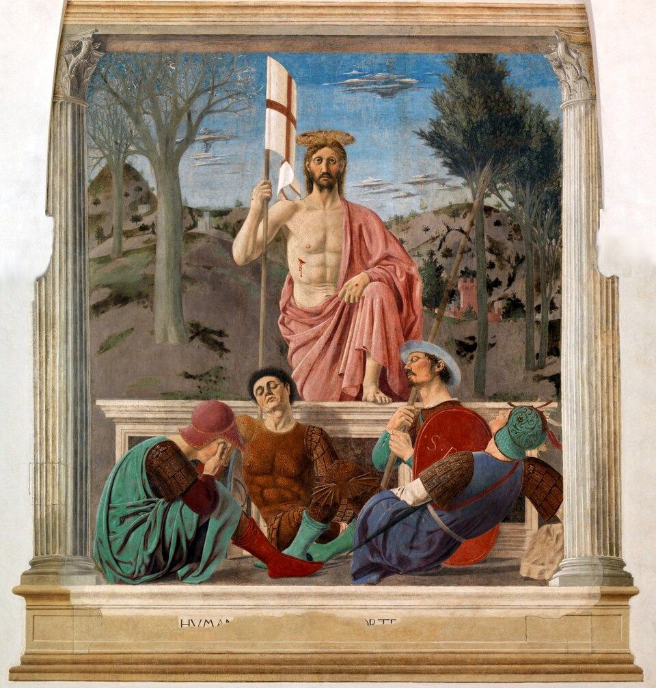
Je dis d'emblée ma position, sans fausse symétrie, comme l'exige l'état du savoir. L'existence historique de Jésus de Nazareth, prédicateur juif de Galilée crucifié à Jérusalem sous Ponce Pilate, est le consensus établi des historiens de l'Antiquité, croyants, agnostiques et athées confondus. La thèse mythiste, selon laquelle Jésus n'aurait jamais existé et serait un dieu humanisé après coup, est une thèse marginale, que presque aucun spécialiste des origines chrétiennes ne soutient. Ce n'est pas une question d'opinion ni de prudence académique, mais le résultat d'un examen des sources, peu nombreuses et convergentes. La thèse mythiste n'en mérite pas moins un débat construit plutôt qu'un rejet sommaire, car elle révèle, chez ses principaux défenseurs, une chose inattendue : le désir de fonder une autre religion.
Ce que disent les sources. Le témoin le plus ancien est Paul, qui n'a pas connu Jésus, et dont les lettres authentiques, écrites dans les années 50, ne racontent presque rien de sa vie, ce que les mythistes ont toujours souligné. Elles contiennent pourtant quelques données que les historiens tiennent pour décisives. Paul rapporte qu'à Jérusalem, trois ans après sa conversion, il n'a vu aucun autre apôtre que Pierre, « εἰ μὴ Ἰάκωβον τὸν ἀδελφὸν τοῦ κυρίου », sinon Jacques, le frère du Seigneur (Ga 1, 19). Il dit de Jésus qu'il est né « γενόμενον ἐκ γυναικός, γενόμενον ὑπὸ νόμον », né d'une femme, né sous la Loi (Ga 4, 4). Et il transmet aux Corinthiens une formule qu'il a lui-même « reçue », dont la critique s'accorde à dater l'origine des premières années après la mort de Jésus : « ὅτι Χριστὸς ἀπέθανεν ὑπὲρ τῶν ἁμαρτιῶν ἡμῶν κατὰ τὰς γραφάς, καὶ ὅτι ἐτάφη », que le Christ est mort pour nos péchés selon les Écritures, et qu'il a été enseveli (1 Co 15, 3-4). Un frère, une mère, la Loi, une mort, une sépulture : c'est peu, mais c'est un homme.
Les évangiles viennent ensuite, de Marc, vers 70, à Jean, à la fin du Ier siècle. Ce sont des textes de foi, composés pour des communautés, et Strauss a montré dès 1835 combien la légende y façonne l'histoire. Mais leur caractère théologique ne prouve pas plus l'inexistence de leur héros que les légendes d'Alexandre celle d'Alexandre. Et ils contiennent des éléments qui gênaient les premiers chrétiens, ce qui est pour l'historien un indice de tradition ancienne : le baptême de Jésus par Jean, qui suppose une subordination ; l'origine galiléenne, de Nazareth, bourgade obscure qu'il fallut ensuite rattacher à Bethléem ; surtout la crucifixion, supplice infamant, réservé aux esclaves et aux rebelles, qu'aucune communauté ne se serait inventé pour son Messie.
Les sources non chrétiennes sont rares et disputées, mais elles existent. Flavius Josèphe, historien juif qui écrit les Antiquités juives vers 93-94, mentionne Jésus deux fois. Le premier, le Testimonium Flavianum, dit dans la forme transmise par les manuscrits : « Γίνεται δὲ κατὰ τοῦτον τὸν χρόνον Ἰησοῦς σοφὸς ἀνήρ, εἴγε ἄνδρα αὐτὸν λέγειν χρή », il y eut en ce temps-là Jésus, un homme sage, s'il faut toutefois l'appeler un homme ; puis : « ὁ χριστὸς οὗτος ἦν », celui-là était le Christ ; et encore qu'il apparut vivant le troisième jour à ceux qui l'avaient aimé (AJ XVIII, 63-64). Aucun juif non chrétien n'a pu écrire « celui-là était le Christ ». Le passage a donc été retouché par une main chrétienne, et un indice externe le confirme : Origène, au IIIe siècle, écrit que Josèphe ne croyait pas que Jésus fût le Christ, « not believing in Jesus as the Christ » (Contre Celse I, 47), ce qu'il n'aurait pu dire s'il avait lu le texte que nous lisons. L'interprétation dominante y voit une interpolation partielle : un noyau authentique, qui mentionnait un sage, auteur d'œuvres étonnantes, crucifié par Pilate, et des ajouts chrétiens qui en font une confession de foi. Une minorité de savants tient le passage entier pour interpolé ; presque personne ne le tient pour entièrement authentique. Le second passage est rarement contesté. Josèphe y raconte que le grand prêtre Anan fit comparaître devant le sanhédrin, en 62, « τὸν ἀδελφὸν Ἰησοῦ τοῦ λεγομένου Χριστοῦ, Ἰάκωβος ὄνομα αὐτῷ », le frère de Jésus qu'on appelait Christ, nommé Jacques, et le fit lapider (AJ XX, 200). Le « qu'on appelait Christ » est une précision de non-croyant, et le Jacques de Josèphe est celui de Paul.
Tacite, enfin, sénateur romain et historien hostile, raconte vers 116 comment Néron, accusé de l'incendie de Rome en 64, rejeta la faute sur ceux que la foule appelait chrétiens, et il précise l'origine du nom : « auctor nominis eius Christus[…] per procuratorem Pontium Pilatum supplicio adfectus erat », celui qui leur a donné ce nom, le Christ, avait été livré au supplice par le procurateur Ponce Pilate (Annales XV, 44). Tacite, qui méprise les chrétiens, ne tient pas d'eux cette information ; il la donne comme un fait, avec un titre administratif, procurateur, qui est d'ailleurs inexact, Pilate ayant été préfet, ce qui suggère qu'il ne recopie pas un document officiel mais rapporte ce qu'on savait à Rome. Rien de tout cela ne fait une biographie, mais tout cela suffit à établir, selon les critères ordinaires de l'histoire ancienne, qu'un homme a vécu, a enseigné, a été exécuté.
Reimarus, ou la première quête. La critique historique de la vie de Jésus commence par un livre que son auteur n'osa pas publier. Hermann Samuel Reimarus, professeur de langues orientales à Hambourg, mort en 1768, laisse un manuscrit dont Lessing publie des extraits de 1774 à 1778 sous le titre de Fragmente eines Ungenannten (Fragments d'un anonyme), le dernier et le plus explosif étant Von dem Zwecke Jesu und seiner Jünger (Du but de Jésus et de ses disciples, 1778). Reimarus ne doute pas de l'existence de Jésus ; il doute de sa divinité et de la bonne foi de ses disciples. Jésus, selon lui, fut un messie juif politique qui échoua ; les disciples, déçus, volèrent le corps et inventèrent la résurrection et le retour. C'est encore la thèse des Lumières, celle de l'imposture, que Strauss ruinera. Mais Albert Schweitzer, qui a écrit l'histoire de toute cette recherche, voit en Reimarus le premier à avoir compris l'essentiel. Son œuvre, écrit-il, est « perhaps the most splendid achievement in the whole course of the historical investigation of the life of Jesus, for he was the first to grasp the fact that the world of thought in which Jesus moved was essentially eschatological », peut-être la plus belle réussite de toute l'histoire de la recherche sur la vie de Jésus, car il fut le premier à saisir que le monde de pensée où se mouvait Jésus était essentiellement eschatologique.
Strauss substituera le mythe à l'imposture, et Bruno Bauer, allant plus loin, fera des évangiles l'œuvre consciente d'un auteur et en viendra à douter que Jésus eût existé (cinquième partie). Schweitzer, qui ne partage pas la conclusion de Bauer, lui rend un hommage rarement cité : « For us the great men are not those who solved the problems, but those who discovered them. Bauer's "Criticism of the Gospel History" is worth a good dozen Lives of Jesus », pour nous, les grands hommes ne sont pas ceux qui ont résolu les problèmes, mais ceux qui les ont découverts ; la Critique de l'histoire évangélique de Bauer vaut une bonne douzaine de Vies de Jésus. La formule dit la place que l'histoire doit faire au doute radical : il découvre des difficultés réelles, il les résout mal.
Schweitzer, ou le miroir brisé. Le livre de Schweitzer, Von Reimarus zu Wrede. Eine Geschichte der Leben-Jesu-Forschung (De Reimarus à Wrede. Une histoire de la recherche sur la vie de Jésus, 1906, refondu en 1913 sous le titre Geschichte der Leben-Jesu-Forschung), est l'un des grands livres de critique du XXe siècle, et il touche notre question de plus près qu'on ne le croit. Sa première thèse est que chaque époque a fait de Jésus son propre portrait. Pour les rationalistes, il était le révélateur d'une vertu conforme à la raison ; pour les auteurs que fascinait l'ordre des Illuminés, l'instrument d'une société secrète. « So fand jede folgende Epoche der Theologie ihre Gedanken in Jesus, und anders konnte sie ihn nicht beleben », ainsi chaque époque de la théologie trouva-t-elle ses propres pensées en Jésus, et elle ne pouvait le rendre vivant autrement. Et Schweitzer ajoute : « Es gibt kein persönlicheres historisches Unternehmen, als ein Leben-Jesu zu schreiben », il n'y a pas d'entreprise historique plus personnelle que d'écrire une vie de Jésus. On ne donne vie à cette figure, précise Schweitzer, qu'en y versant toute la haine ou tout l'amour dont on est capable.
La deuxième thèse intéresse directement le débat mythiste. Au terme de son enquête, Schweitzer écrit : « Es gibt nichts Negativeres als das Ergebnis der Leben-Jesu-Forschung », il n'y a rien de plus négatif que le résultat de la recherche sur la vie de Jésus. Et il précise ce qui s'est effondré : « Der Jesus von Nazareth, der als Messias auftrat, die Sittlichkeit des Gottesreiches verkündete, das Himmelreich auf Erden gründete und starb, um seinem Werke die Weihe zu geben, hat nie existiert », le Jésus de Nazareth qui se présenta comme Messie, prêcha la morale du royaume de Dieu, fonda le royaume des cieux sur la terre et mourut pour consacrer son œuvre, n'a jamais existé. « Er ist eine Gestalt, die vom Rationalismus entworfen, vom Liberalismus belebt und von der modernen Theologie mit geschichtlicher Wissenschaft überkleidet wurde », c'est une figure esquissée par le rationalisme, animée par le libéralisme, et revêtue par la théologie moderne d'une science historique.
Il faut éviter un contresens : ce qui « n'a jamais existé », pour Schweitzer, ce n'est pas Jésus ; c'est le Jésus libéral, le maître de morale du protestantisme cultivé. Le Jésus que Schweitzer retrouve est autrement étrange : un prophète apocalyptique, qui attend la fin imminente du monde et l'avènement du royaume, qui se croit appelé à hâter cette fin par sa propre souffrance, et que la fin n'a pas suivi. « The historical Jesus will be to our time a stranger and an enigma », le Jésus historique sera pour notre temps un étranger et une énigme. Schweitzer a donc fait le contraire de ce que feront les mythistes : il a détruit l'image et gardé l'homme, un homme d'autant plus réel qu'il nous ressemble moins. Et sa dernière page, qui est l'une des plus célèbres de la théologie moderne, renverse le geste de la critique en appel : « Als ein Unbekannter und Namenloser kommt er zu uns, wie er am Gestade des Sees an jene Männer, die nicht wußten wer er war, herantrat », c'est comme un inconnu et un sans-nom qu'il vient à nous, comme il s'approcha, au bord du lac, de ces hommes qui ne savaient pas qui il était. Schweitzer partira peu après pour Lambaréné. Sa spiritualité n'est plus une christologie, c'est une éthique du respect de la vie : un cas de foi qui a traversé la critique, au sens où Ricœur l'entendra.
Le Christ du culte. L'école de l'histoire des religions, qui domine l'exégèse allemande au début du XXe siècle, déplace la question. Wilhelm Bousset, dans Kyrios Christos (1913), ne demande pas qui était Jésus, mais comment il est devenu le Seigneur. Sa réponse tient dans le titre. « Kyrios Christos ist Jesus von Nazareth im wesentlichen als der im Kultus verehrte Herr seiner Gemeinde », le Kyrios Christos, c'est Jésus de Nazareth, essentiellement en tant que Seigneur vénéré dans le culte de sa communauté ; et le livre entend prendre partout son point de départ « von der Praxis des Kultus und des Gemeindegottesdienstes », de la pratique du culte et de l'office communautaire. Selon Bousset, la communauté palestinienne primitive ne connaissait pas encore ce titre de Kyrios ; il naît dans les communautés hellénistiques, où l'on invoque Jésus comme les fidèles des cultes à mystères invoquaient leur dieu sauveur. L'exégèse ultérieure a beaucoup corrigé ce schéma, en montrant que l'invocation araméenne maranatha, « Seigneur, viens », remonte à la communauté de langue araméenne. Mais l'intuition demeure, et c'est celle que cette partie a suivie depuis Philon et Justin : la figure du Christ s'est construite dans le culte et dans la pensée grecque, au croisement de l'attente juive et du Logos des philosophes. Cela n'exige aucunement qu'il n'y ait pas eu d'homme à l'origine, seulement qu'on ne confonde pas l'homme et l'objet du culte.
Rudolf Bultmann en tire une conséquence radicale, mais non mythiste. Dans son Jesus (1926), il soutient que nous ne pouvons presque plus rien savoir de la vie et de la personnalité de Jésus, parce que les sources ne s'y intéressent pas, et que cela n'a aucune importance pour la foi, qui ne repose pas sur un portrait historique mais sur le kérygme, la proclamation du Christ crucifié et ressuscité. En 1941, dans Neues Testament und Mythologie, il propose de « démythologiser » le Nouveau Testament : on ne peut pas, argumente-t-il, se servir de la lumière électrique et de la radio, et recourir à la médecine moderne, tout en croyant au monde d'esprits et de miracles du Nouveau Testament. Il faut donc traduire le mythe en termes existentiels, comme une interpellation qui met l'homme devant sa décision. La querelle que ce programme provoqua avec Jaspers viendra plus loin (douzième partie). Ici importe le paradoxe : l'un des plus grands exégètes protestants du siècle admet que le Jésus de l'histoire nous est presque inconnu, et il ne doute pas un instant qu'il ait existé. Le scepticisme sur le contenu n'entraîne pas le scepticisme sur l'existence.
Drews, ou le mythe au service d'une religion. C'est contre cette théologie qu'Arthur Drews (1865-1935), professeur de philosophie à Karlsruhe et disciple d'Eduard von Hartmann, publie en 1909 Die Christusmythe (Le Mythe du Christ). Le livre reprend les arguments de Bauer, de l'Anglais John M. Robertson et de l'Américain William Benjamin Smith : il fait de Jésus un dieu de culte d'une secte juive préchrétienne, un médiateur à la manière de Philon, un dieu qui souffre et meurt comme les dieux des mystères, que les évangiles auraient ensuite habillé d'une histoire. Les arguments n'étaient ni neufs ni solides, et un article récent sur la controverse le dit nettement. Le livre devient pourtant un événement public. Le 31 janvier et le 1er février 1910, le Deutscher Monistenbund organise à Berlin, au Jardin zoologique, un débat contradictoire sur la thèse de Drews, et Drews parcourt ensuite l'Allemagne de ville en ville.
On lit rarement pourquoi Drews tenait tant à ce que Jésus n'eût pas existé ; la préface le dit sans détour. Le livre ne s'adresse pas aux théologiens, mais aux gens cultivés qui ressentent la réduction de la religion à une croyance historique « als eine bedenkliche Verflachung und Veräußerlichung des religiösen Bewußtseins », comme un aplatissement et une extériorisation inquiétants de la conscience religieuse ; et la question de l'historicité, ajoute-t-il, doit nécessairement aboutir à une discussion « des religiösen Problems der Gegenwart überhaupt », du problème religieux du présent tout entier. Le dernier chapitre porte d'ailleurs ce titre : « Das religiöse Problem der Gegenwart ». Et sa conclusion révèle le programme. Ce que Drews appelle la vérité de la doctrine chrétienne du salut, c'est une religion du dieu immanent : « Das Leben der Welt als Gottes Leben; die leidvolle Entwicklung der Menschheit als göttliche Passionsgeschichte », la vie du monde comme vie de Dieu, le développement douloureux de l'humanité comme histoire de la passion divine. Et l'obstacle à cette religion est désigné : « Das Haupthindernis einer monistischen Religion und Weltanschauung aber ist der mit keiner Vernunft und Geschichte vereinbare Glaube an die geschichtliche Wirklichkeit einer "einzigartigen", vorbildlichen und unübertrefflichen Erlöserpersönlichkeit », mais l'obstacle principal à une religion et à une vision du monde monistes est la croyance, incompatible avec toute raison et toute histoire, à la réalité historique d'une personnalité rédemptrice « unique », exemplaire et indépassable.
C'est un cas d'école pour cet essai, et je crois qu'on ne l'a pas assez remarqué. Le plus célèbre des mythistes allemands ne nie pas Jésus pour sortir de la religion ; il le nie pour fonder une autre religion, un monisme idéaliste où Dieu souffre dans chaque créature, qu'il veut substituer au christianisme historique et qu'il propose aux monistes matérialistes de Haeckel pour les « réconcilier » avec la piété. La négation de l'homme est la condition d'un culte nouveau. La loi de Stirner (sixième partie) se vérifie ici sous sa forme la plus pure : l'auteur du Mythe du Christ est un fondateur de religion qui a besoin que le Christ soit un mythe pour que son propre dieu ait la place libre. Le rapprochement est construit ; il repose entièrement sur ce que Drews écrit lui-même.
Couchoud, Goguel et la querelle française. En France, la thèse est reprise dans les années 1920 par un médecin et homme de lettres, Paul-Louis Couchoud (1879-1959), ami d'Anatole France, dans Le Mystère de Jésus (1924). Le livre a le mérite de la netteté. « Jésus n'est pas un homme progressivement divinisé, mais un Dieu progressivement humanisé. » Et encore : « Il n'est pas un fondateur religieux mais un Dieu nouveau.[…] Il n'est pas Mahomet, il est Allah. » La conclusion de ce chapitre est d'une belle prose : Jésus « n'est pas un personnage historique. Il n'a pas de place dans les générations des hommes. Il n'est pas un homme qui a vécu et qui s'est évanoui dans la mort. Il est un grand rêve des hommes, continuellement vivant ». Couchoud fait une prédiction qui donne la mesure de son assurance : « Je crois que vers 1940 Jésus tout entier aura passé du plan des faits matériels dans celui des représentations mentales collectives » ; et il appelle à l'aide la sociologie de Durkheim, puisque « L'histoire de Jésus est une représentation collective de nature sacrée ».
Le rapprochement avec Durkheim se retourne contre Couchoud. Si l'histoire de Jésus est une représentation collective sacrée, elle peut l'être, en bonne sociologie, qu'un homme ait existé ou non : Durkheim n'a jamais demandé si le totem avait vécu. Couchoud confond deux questions, celle de la nature du Christ des croyants, qui est en effet une représentation collective, et celle de l'existence du Jésus de l'histoire, qui relève des sources. La réponse vint d'un exégète protestant, professeur à la Faculté libre de théologie protestante de Paris, Maurice Goguel, dans Jésus de Nazareth : mythe ou histoire ? (1925), et c'est une réponse attestée, nommément adressée. Goguel commence par citer un collaborateur de la collection même que dirigeait Couchoud, Albert Houtin, pour qui « Without Jesus, the history of Christianity would seem as inexplicable as that of Islam without Mahomet » ; puis il rend hommage à la loyauté et à la sincérité de Couchoud, ce qui ne l'empêche pas de voir dans son livre « the dream of a poet rather than the work of an historian », le rêve d'un poète plutôt que l'œuvre d'un historien. Goguel examine ensuite, source par source, les arguments mythistes et les réfute un à un : le silence de Paul n'est pas un silence, le « frère du Seigneur » n'est pas un titre de confrérie, les parallèles avec les dieux des mystères sont lointains. Prosper Alfaric, ancien prêtre devenu rationaliste militant, prolongea la thèse de Couchoud dans les années 1930 ; Michel Onfray a préfacé en 2005 la réédition de son Jésus a-t-il existé ?. Couchoud s'était trompé de date : en 1940, et depuis, Jésus n'a pas quitté le plan des faits pour celui des représentations ; il est resté, pour les historiens, un fait mal connu qui a produit une représentation immense.
Carrier, Ehrman et le consensus. La thèse mythiste a connu un regain au début du XXIe siècle, d'abord sur internet, puis sous une forme savante, avec l'historien américain Richard Carrier. Son On the Historicity of Jesus (Sheffield Phoenix Press, 2014), publié par une maison universitaire, soumet la question à une méthode explicite, le calcul bayésien des probabilités. Carrier y soutient que la probabilité que Jésus ait existé ne peut pas raisonnablement être supérieure à une chance sur trois, et qu'avec des estimations moins favorables elle tombe à une chance sur douze mille. La recension la plus détaillée, celle de Daniel Gullotta dans le Journal for the Study of the Historical Jesus (15, 2017, p. 310-346), reconnaît, selon Carrier lui-même, la rigueur de l'entreprise, mais juge la reconstruction mythiste invraisemblable, et conclut que la réalité d'un Jésus crucifié, « another failed messianic pretender from Palestine », un prétendant messianique de plus qui échoua en Palestine, « is remarkably more likely than a demonic crucifixion in outer space », est remarquablement plus probable qu'une crucifixion par des démons dans l'espace céleste, ce qui est la reconstruction de Carrier. L'ironie vise juste : pour rendre compte des lettres de Paul sans Jésus historique, Carrier doit supposer que les premiers chrétiens croyaient à un Christ crucifié par des démons dans une sphère céleste, mythe que les évangiles auraient ensuite transposé sur la terre. L'hypothèse n'est pas absurde en soi ; elle est simplement plus coûteuse que celle qu'elle veut remplacer.
La réponse la plus lue est celle de Bart Ehrman, spécialiste du Nouveau Testament et agnostique déclaré, dans Did Jesus Exist? (2012). Ehrman pose le constat que je reprends à mon compte : « The view that Jesus existed is held by virtually every expert on the planet », l'existence de Jésus est tenue pour acquise par pratiquement tous les spécialistes de la planète. Il précise qu'il n'a aucun intérêt dans l'affaire : « I am not a Christian, and I have no interest in promoting a Christian cause or a Christian agenda » ; et il conclut : « a dispassionate consideration of the case makes it quite plain: Jesus did exist », un examen dépassionné du dossier montre clairement que Jésus a existé. Ehrman va plus loin, et il faut ici le lire avec réserve : ceux qui nient l'existence de Jésus, écrit-il, ne le font pas parce qu'ils ont considéré les preuves « with the dispassionate eye of the historian, but because they have some other agenda that this denial serves », avec l'œil dépassionné de l'historien, mais parce qu'ils ont un autre programme que cette négation sert. L'argument est ad hominem, et il ne vaudrait rien s'il remplaçait l'examen des sources, qu'Ehrman mène par ailleurs. Mais le cas de Drews montre qu'il n'est pas sans fondement historique : le mythisme a souvent été, de Bauer à Onfray, une arme plus qu'une hypothèse.
E. P. Sanders, dans Jesus and Judaism (1985), établit une liste de faits qu'il tient pour pratiquement indiscutables : Jésus a été baptisé par Jean, il a prêché et guéri en Galilée, il a appelé des disciples, il a eu un conflit à propos du Temple, il a été crucifié à Jérusalem par les autorités romaines, et ses disciples ont continué après sa mort à former un mouvement. John P. Meier, dans les volumes de A Marginal Jew (1991-2016), et Paula Fredriksen, dans Jesus of Nazareth, King of the Jews (1999), reconstruisent un prophète juif apocalyptique, très proche de celui de Schweitzer, dont la crucifixion comme « roi des Juifs » s'explique par la crainte romaine d'un trouble pendant la Pâque. Ce Jésus-là n'est ni celui des Églises ni celui des mythistes : c'est un homme de son temps, que ses disciples ont compris, après sa mort, à travers les Écritures, puis à travers le Logos grec.
Onfray dans le débat. C'est dans ce paysage qu'il faut placer la thèse de Michel Onfray. Le Traité d'athéologie (2005) substituait déjà à la question de l'existence de Jésus celle de « cette construction nommée Jésus » (p. 158). Théorie de Jésus. Biographie d'une idée (Bouquins, 2023) radicalise ce point. La thèse est dite sans détour sur la quatrième de couverture : « Jésus a bel et bien existé, mais comme un mythe qui convoque et cristallise les savoirs de l'époque », et : « Jésus a bel et bien existé, mais comme concept. Cette Théorie de Jésus propose la biographie de cette immortelle idée ». En entretien, Onfray est plus net encore : « Il n'y a pas eu quelqu'un qui s'appelait Jésus ». La généalogie est celle que nous venons de suivre : Bruno Bauer, Arthur Drews, Paul-Louis Couchoud, Prosper Alfaric. Le dominicain Renaud Silly, qui l'a examinée, juge même que la dire, comme le fait Onfray, « ultra-minoritaire chez les historiens », « c'est complaisance, courtoisie ou euphémisme ».
On voit alors ce que la thèse d'Onfray a d'original et ce qu'elle a d'emprunté. Elle emprunte à Couchoud l'idée d'un Dieu humanisé et la belle formule du grand rêve ; à Bauer et à Drews l'argument du silence de Paul ; à Strauss, sans le dire, le vocabulaire de l'idée : Strauss faisait déjà de l'espèce humaine, et non d'un individu, le sujet des prédicats que l'Église attribue au Christ (cinquième partie). « Jésus comme concept » n'est pas sa formule, mais c'est bien son geste. Elle ne doit rien à la recherche qui, de Schweitzer à Sanders, a établi ce qu'on peut savoir. Et elle illustre avec précision la première thèse de Schweitzer : chaque époque, chaque individu crée le Jésus qu'il peut aimer ou haïr. Le Jésus libéral était un professeur de morale ; le Jésus d'Onfray est un concept, c'est-à-dire l'objet qu'un philosophe peut démonter.
Pourquoi la question importe peu, et pourquoi elle importe. Ce débat, qui passionne l'opinion, compte pourtant peu pour notre question. Deux des plus grands critiques du christianisme ne doutaient pas de Jésus. Nietzsche, qui fait de lui le seul vrai chrétien (septième partie), le tient pour un homme réel, et l'Église pour la trahison de cet homme. Engels, qui jugeait l'historicité douteuse, tenait la question pour secondaire, et il disait pourquoi. Il rappelait que Bauer avait fait de Philon d'Alexandrie « der eigentliche Vater des Christentums » et du stoïcien Sénèque « sozusagen dessen Onkel », le véritable père du christianisme et, pour ainsi dire, son oncle ; mais il ajoutait aussitôt que les philosophes ne fondent pas les religions : « Religionen werden gestiftet von Leuten, die selbst ein religiöses Bedürfnis empfinden und Sinn haben für das religiöse Bedürfnis der Massen, und das ist in der Regel nicht der Fall bei Schulphilosophen », les religions sont fondées par des gens qui éprouvent eux-mêmes un besoin religieux et qui ont le sens du besoin religieux des masses, ce qui n'est pas en règle générale le cas des philosophes d'école. Et le texte de 1894, déjà cité, voyait dans le christianisme primitif un mouvement d'opprimés. Ce qui explique le christianisme, pour Engels, ce n'est pas l'existence ou l'inexistence d'un homme ; c'est le besoin auquel il répondait, et que la partie consacrée aux raisons de croire examinera.
La thèse mythiste montre ici sa vraie nature. Elle croit qu'on réfuterait le christianisme en prouvant que son fondateur n'a pas existé, et reste ainsi dans le premier régime de la critique, celui de l'erreur, sous sa forme la plus naïve. Or Feuerbach avait montré, dès 1841, que la vérité de la religion ne tient pas à l'exactitude de ses récits, mais à ce qu'elle dit de l'homme ; Nietzsche, que sa force tient aux valeurs qu'elle installe ; Durkheim, que son objet est une représentation collective, qui vit indépendamment de son origine. Que Jésus ait existé ou non ne change rien à l'histoire suivie de Philon à Augustin, celle d'une figure construite par la foi d'une communauté et pensée avec les concepts de la philosophie grecque : une figure qui dépasse de toutes parts ce que l'historien peut savoir de l'homme. Ma conclusion est donc double. Sur le terrain historique, le débat est tranché : Jésus a existé, et la thèse mythiste n'a pas le rang d'une hypothèse concurrente. Sur le terrain de cet essai, il est instructif : nier l'existence de Jésus n'est pas sortir de la religion, et que cette négation a servi, chez Drews, à en fonder une autre. Ce qui importe pour notre question n'est pas l'homme de Galilée, que les historiens connaissent mal mais connaissent ; c'est la manière dont un prophète juif crucifié est devenu, en quatre siècles, le Logos incarné des philosophes. Cette transformation, Celse la dénonçait comme un plagiat, Origène la célébrait comme un accomplissement. Elle est le vrai mystère de Jésus, et elle n'a rien de mythique.
Passage : de la Croix au Dieu des philosophes1 min
La religion dont les Modernes vont chercher à sortir a désormais reçu sa forme : la foi d'une communauté juive messianique, pensée avec les instruments de la philosophie grecque. Le Dieu de la Bible, qui parle, choisit, se met en colère et se repent, est devenu chez Philon un Être dont on ne sait que l'existence et dont le Logos assure le lien avec le monde. Le Christ des premières communautés, prophète crucifié que ses disciples virent vivant, est devenu chez Justin le Logos lui-même, que les philosophes avaient entrevu, et chez Augustin le Verbe que les livres des platoniciens annonçaient sans le connaître incarné. Celse avait raison, contre les chrétiens, de dire que leur théologie doit beaucoup à Platon, et tort d'y voir un plagiat : c'était une traduction, la plus féconde peut-être de toute l'histoire intellectuelle de l'Europe.
Cette traduction a un prix, que les siècles suivants vont payer. En recevant le Dieu des philosophes, le christianisme a reçu aussi ses exigences : un Dieu qui doit être démontré, qui doit être cohérent, qui doit rendre raison du monde et de son mal. Tant que l'Église garantissait l'accord de la foi et de la raison, l'exigence restait sous contrôle ; la scolastique l'avait réglée en distinguant ce que la raison peut prouver et ce que la révélation seule enseigne. L'âge classique va la libérer, et quand Pascal opposera au Dieu des philosophes celui d'Abraham, d'Isaac et de Jacob, c'est précisément au Dieu d'avant la traduction grecque qu'il en appellera.
Troisième partiel'âge classique, le Dieu des philosophes
Entre les guerres de Religion et les Lumières, la question change de forme. La Réforme a brisé l'unité de la chrétienté, et le scepticisme renaissant, nourri de Sextus Empiricus, a ébranlé la confiance dans la raison. Montaigne se sert de ce double ébranlement pour humilier la raison devant la foi reçue, et il laisse à ses lecteurs le soin de savoir s'il défend la foi ou s'il la réduit à une coutume. Descartes construit contre le doute une métaphysique dont Dieu est la clef de voûte, et Pascal la récuse au nom de la foi. Spinoza le pense comme la nature même. Bayle tire de la querelle une conclusion qui scandalisera : la morale ne dépend pas de la croyance. Leibniz, enfin, lui répond en faisant de Dieu la raison suffisante de tout ce qui existe, sommée de rendre compte du mal. C'est l'âge où se forme le Dieu des philosophes, et où se forment du même coup les armes de sa critique.
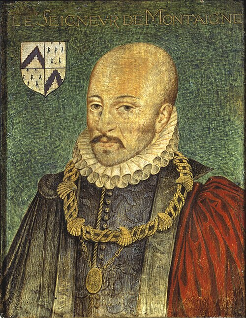
Montaigne1533-1592la religion reçue comme une coutume8 min
Le plus long chapitre des Essais est une commande filiale qui a mal tourné. Pierre Bunel, humaniste de passage au château, avait laissé au père de Montaigne un livre du XVe siècle, la Theologia naturalis du Catalan Raymond Sebond, professeur à Toulouse, qui prétendait établir par la seule raison, en lisant le « livre des créatures », toutes les vérités de la foi. Le père demanda au fils de le traduire ; Montaigne le fit, et la traduction parut en 1569. Puis, pour défendre le livre contre ses critiques, il écrivit l'Apologie de Raimond Sebond (Essais II, 12), parue avec les deux premiers livres en 1580 et grossie jusqu'à l'édition posthume de 1595. Le récit des origines est dans le chapitre lui-même : Bunel fit présent à son père « d'un livre qui s'intitule Theologia naturalis ; sive, Liber creaturarum magistri Raimondi de Sebonde ».
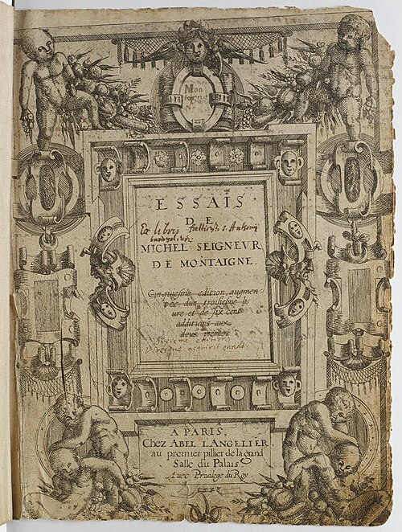
Le paradoxe de l'Apologie tient en une phrase : Montaigne défend une théologie rationnelle en ruinant la raison. Aux critiques qui reprochent à Sebond la faiblesse de ses arguments, il ne répond pas qu'ils sont forts ; il répond que les arguments contraires ne valent pas mieux, et que la raison humaine, quand on la regarde sans complaisance, ne vaut rien du tout. Les deux cents pages qui suivent sont l'inventaire le plus systématique de l'impuissance humaine que la Renaissance ait produit. La thèse est posée d'emblée : « La presomption est nostre maladie naturelle et originelle. La plus calamiteuse et fragile de toutes les creatures c'est l'homme, et quant et quant, la plus orgueilleuse ». L'homme se croit maître du monde et ne sait pas même ce que pense son chat : « Quand je me jouë à ma chatte, qui sçait, si elle passe son temps de moy plus que je ne fay d'elle ? » Le privilège que la théologie accordait à l'homme, créé à l'image de Dieu et roi de la création, est démonté pièce à pièce par une comparaison avec les bêtes qui tourne toujours à l'avantage des bêtes.
Puis vient la raison, et le scepticisme pyrrhonien, que Montaigne avait lu chez Sextus Empiricus, sert d'instrument de démolition. Les philosophes se contredisent sur tout, les sens nous trompent, le jugement varie avec l'humeur et la santé. Montaigne en tire une devise, qu'il dit porter avec l'emblème d'une balance : « Cette fantasie est plus seurement conceuë par interrogation : Que sçay-je ? comme je la porte à la devise d'une balance ». La forme interrogative compte : elle évite le dogmatisme négatif du sceptique qui affirme qu'on ne sait rien, et qui, ce faisant, sait encore quelque chose.
L'arme se retourne alors. Si la raison ne peut rien, elle ne peut rien non plus pour la religion, et la seule chose qui distingue une religion d'une autre est le lieu où l'on est né. Le passage, le plus célèbre du chapitre, est d'une audace qu'on mesure mal parce qu'on le cite hors de son contexte. Montaigne constate que les chrétiens ne vivent pas mieux que les autres, et il en conclut : « Tout cela c'est un signe tres-evident que nous ne recevons nostre religion qu'à nostre façon et par nos mains, et non autrement que comme les autres religions se reçoivent ». Puis, après avoir énuméré les raisons humaines qui nous attachent à la nôtre (l'ancienneté, l'autorité, la crainte des menaces), il ajoute : « Une autre region, d'autres tesmoings, pareilles promesses et menasses, nous pourroyent imprimer par mesme voye une creance contraire. Nous sommes Chrestiens à mesme tiltre que nous sommes ou Perigordins ou Alemans ». Ce qui fait de nous des chrétiens n'est pas la vérité du christianisme mais la coutume, comme ce qui fait de nous des Périgourdins est la géographie.
La même logique s'étend aux dieux eux-mêmes. Montaigne, qui a lu Lucrèce et Cicéron, ironise sur la fabrique humaine des divinités : « L'homme est bien insensé : Il ne sçauroit forger un ciron, et forge des Dieux à douzaines ». La phrase a l'allure d'une maxime d'Épicure ou d'un fragment de Xénophane, et l'on comprend que les libertins du XVIIe siècle aient fait de l'Apologie leur bréviaire.
Faut-il donc lire Montaigne comme un athée masqué, qui défendrait Sebond pour mieux miner la foi ? C'est la lecture libertine, qui a eu de grands défenseurs. Je ne la crois pas juste, et la conclusion du chapitre dit pourquoi. Montaigne y cite un mot de Sénèque, qu'il appelle un « tesmoing » païen : « O la vile chose, dict-il, et abjecte, que l'homme, s'il ne s'esleve au dessus de l'humanité ! » Et il répond : le désir est bon, mais absurde, car l'homme ne peut voir que de ses yeux ni saisir que de ses prises. « Il s'eslevera si Dieu lui preste extraordinairement la main ; il s'eslevera, abandonnant et renonçant à ses propres moyens, et se laissant hausser et soubslever par les moyens purement celestes. C'est à nostre foy Chrestienne, non à sa vertu Stoique, de pretendre à cette divine et miraculeuse metamorphose ». La structure est celle du fidéisme : la raison est humiliée pour que la grâce seule puisse élever. L'humiliation de la raison n'est pas la négation de la foi ; elle en est, chez Montaigne comme plus tard chez Pascal et chez Bayle, la condition.
Cette structure a pourtant un effet que son auteur ne maîtrise pas, et c'est lui qui compte ici. En plaçant la foi entièrement hors de la raison, Montaigne laisse à la raison une seule explication de la religion telle qu'elle existe dans le monde : la coutume. Il n'a pas besoin de nier la grâce ; il lui suffit d'observer qu'elle ne se voit pas, et que les hommes croient ce qu'on leur a appris à croire. La sincérité du catholique Montaigne, qui mourut, selon le récit qu'en fit Étienne Pasquier, pendant qu'on disait la messe dans sa chambre, est hors de cause et d'ailleurs indécidable ; ce qui ne l'est pas, c'est que son livre contient déjà, deux siècles avant Hume, la thèse de l'Histoire naturelle de la religion : la religion des hommes s'explique par leur nature et leur histoire, non par sa vérité. Sans être un critique de la religion au sens où l'est d'Holbach, Montaigne met la religion entre parenthèses : sans la nier, il suspend le jugement sur sa vérité et décrit sa réalité. C'est une forme nouvelle, descriptive et non plus législatrice, de ce que j'ai appelé le régime de la fonction sociale, et elle naît sous la plume d'un croyant.
La réponse de Pascal est attestée, et elle est double. Dans l'Entretien avec M. de Sacy, que l'on date de 1655 et que nous ne connaissons que par la relation qu'en a laissée Nicolas Fontaine, secrétaire de Sacy, Pascal oppose Épictète et Montaigne comme les deux philosophes qui ont le mieux vu, l'un la grandeur de l'homme, l'autre sa misère ; chacun a raison contre l'autre, et seul le christianisme réconcilie les deux vérités. Montaigne sert donc à Pascal d'instrument : il abat l'orgueil de la raison et prépare la place de la foi. Mais les Pensées montrent aussi ce que Pascal ne lui pardonne pas, et ce n'est pas le scepticisme, c'est la manière de mourir. Le fragment 62 de l'édition Brunschvicg s'en prend au « sot projet qu'il a de se peindre », et le fragment 63 à ce qui est plus grave : « on ne peut excuser ses sentiments tout païens sur la mort ; car il faut renoncer à toute piété, si on ne veut au moins mourir chrétiennement ; or, il ne pense qu'à mourir lâchement et mollement par tout son livre ». Et le fragment suivant dit d'un mot ce que Montaigne a été pour lui : « Ce n'est pas dans Montaigne, mais dans moi, que je trouve tout ce que j'y vois » (fr. 64).
Le reproche de Pascal touche juste, et il ouvre le second volet de Montaigne, qui intéresse la spiritualité. Le premier livre contenait un chapitre au titre cicéronien, « Que philosopher, c'est apprendre à mourir » (I, 20), où Montaigne reprend la méditation stoïcienne de la mort : « La premeditation de la mort est premeditation de la liberté. Qui a apris à mourir, il a desapris à servir ». Mais il y glisse déjà un souhait qui annonce l'évolution du livre : « Je veux qu'on agisse, et qu'on allonge les offices de la vie tant qu'on peut, et que la mort me treuve plantant mes chous, mais nonchalant d'elle, et encore plus de mon jardin imparfait ». C'est cette nonchalance que Pascal appelle mourir mollement. Et le dernier chapitre des Essais, « De l'expérience » (III, 13), achève le mouvement en refusant explicitement toute élévation au-dessus de l'humain. Montaigne y dit de ceux qui veulent se mettre hors d'eux : « C'est folie : au lieu de se transformer en anges, ils se transforment en bestes ; au lieu de se hausser, ils s'abattent. Ces humeurs transcendentes m'effrayent, comme les lieux hautains et inaccessibles ». La sagesse est ailleurs : « C'est une absolue perfection, et comme divine, de scavoyr jouyr loiallement de son estre ». Et le livre se clôt presque sur une phrase qui pourrait servir d'épigraphe à toute la douzième partie de cet essai : « Les plus belles vies sont, à mon gré, celles qui se rangent au modelle commun et humain, avec ordre, mais sans miracle et sans extravagance ».
Entre la conclusion de l'Apologie et celle des Essais, quelque chose a basculé. Dans l'Apologie, l'homme ne peut s'élever que si Dieu lui prête la main. Dans « De l'expérience », il n'a plus à s'élever du tout : l'élévation est devenue un danger, et la perfection « comme divine » consiste à habiter loyalement sa condition. Montaigne ne nie pas le salut ; il cesse d'en parler. Ce silence est une spiritualité, au sens où Hadot et Foucault prendront le mot, une manière de se transformer soi-même par l'exercice de l'écriture et du jugement ; et c'est une spiritualité sans salut, qui ne promet rien après la mort. Bien avant que les sagesses modernes ne se disputent pour savoir si elles doivent rester immanentes ou garder une transcendance (douzième partie), Montaigne a choisi l'immanence, et il l'a fait sans polémique, en catholique pratiquant. C'est pourquoi il n'entre dans aucune des refondations que cet essai recense : il ne propose aucun absolu, il ne demande à personne de s'y sacrifier, et sa devise est une question.
Portrait : Anonyme, Public domain
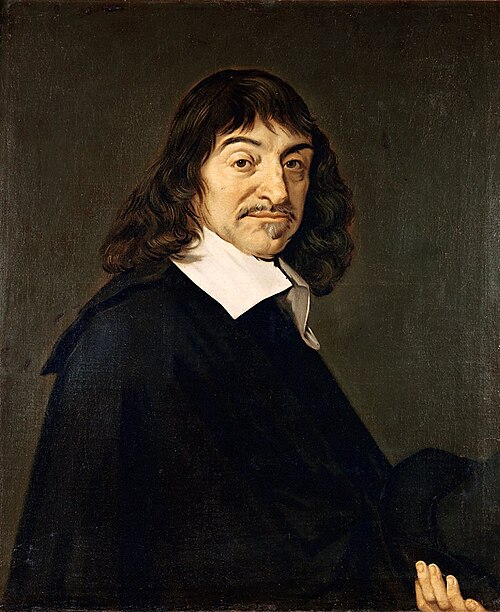
Descartes1596-1650l'idée d'infini et le Dieu garant7 min
Les Meditationes de prima philosophia (Méditations sur la philosophie première) paraissent en latin à Paris en 1641, suivies des objections de plusieurs savants et des réponses de l'auteur, puis à Amsterdam en 1642 ; la traduction française du duc de Luynes, revue par Descartes, paraît en 1647. Le livre s'ouvre sur une lettre-dédicace à la Faculté de théologie de Paris, la Sorbonne, et cette lettre dit en toutes lettres le projet : « Semper existimavi duas quaestiones, de Deo & de Animâ, praecipuas esse ex iis quae Philosophiae potius quàm Theologiae ope sunt demonstrandae », j'ai toujours estimé que ces deux questions, de Dieu et de l'âme, étaient les principales de celles qui doivent être démontrées par les raisons de la philosophie plutôt que de la théologie.
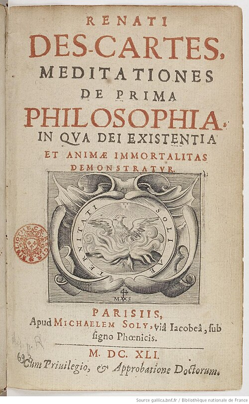
La suite de la phrase en donne la raison, politique autant que philosophique. Aux fidèles, la foi suffit ; mais aux infidèles on ne peut persuader aucune religion, ni presque aucune vertu morale, si on ne leur prouve d'abord ces deux choses par la raison naturelle, car, dit Descartes, « pauci rectum utili praeferrent, si nec Deum timerent, nec aliam vitam expectarent », peu de gens préféreraient le juste à l'utile s'ils ne craignaient Dieu et n'attendaient une autre vie. Descartes tient pour acquis que la morale des hommes est suspendue à la crainte de Dieu et à l'espoir de l'au-delà, thèse que Bayle, quarante ans plus tard, s'attachera à démolir dans les Pensées diverses sur la comète. Le rapprochement est construit, Bayle ne visant pas ici Descartes ; il reste que le philosophe qui fonde la science moderne partage sur la religion le préjugé le plus ancien, celui de Polybe et de Critias. Descartes ajoute même, dans la même lettre, que prouver Dieu par l'Écriture et l'Écriture par Dieu paraîtrait aux infidèles un cercle. L'ironie veut que ses lecteurs, à commencer par Antoine Arnauld dans les quatrièmes objections, l'accuseront d'avoir commis un autre cercle, en garantissant par Dieu les idées claires et distinctes qui lui servent à prouver Dieu.
Le geste de Descartes se comprend par contraste avec la tradition qu'il refuse. Thomas d'Aquin, dans la Summa theologiae (I, q. 2, a. 3), avait donné cinq voies pour prouver Dieu, toutes a posteriori, toutes parties du monde : le mouvement, la causalité, la contingence, les degrés de perfection, l'ordre ; et il avait refusé, au premier article de la même question, l'argument d'Anselme qui prétendait conclure de l'idée de Dieu à son existence. Descartes renverse l'ordre. Il ne part pas du monde, dont il vient de douter jusqu'à supposer qu'un malin génie le trompe sur tout ; il part du seul point qui résiste au doute, le cogito, « Ego sum, ego existo », et il cherche Dieu dans la pensée.
La troisième Méditation trouve en moi une idée qui ne peut venir de moi : celle de l'infini. Je ne perçois pas l'infini par la négation du fini, comme je perçois le repos par la négation du mouvement ; au contraire, « manifeste intelligo plus realitatis esse in substantiâ infinitâ quàm in finitâ, ac proinde priorem quodammodo in me esse perceptionem infiniti quàm finiti, hoc est Dei quàm meî ipsius », je vois manifestement qu'il y a plus de réalité dans la substance infinie que dans la finie, et donc que j'ai en quelque manière la perception de l'infini avant celle du fini, c'est-à-dire de Dieu avant celle de moi-même. Comment saurais-je que je doute, que je désire, que je manque de quelque chose, si je n'avais l'idée d'un être plus parfait que moi ? Cette idée ne peut avoir été produite par un être fini ; elle a donc été mise en moi par Dieu lui-même, « tanquam nota artificis operi suo impressa », comme la marque de l'ouvrier empreinte sur son ouvrage. La cinquième Méditation ajoute la preuve dite ontologique, que Kant baptisera ainsi : l'existence appartient à l'essence de l'être souverainement parfait, de sorte qu'il ne répugne pas moins de penser Dieu sans existence « quàm cogitare montem cui desit vallis », que de penser une montagne sans vallée. C'est l'argument d'Anselme de Cantorbéry, qui définissait Dieu au chapitre 2 du Proslogion comme « aliquid quo nihil maius cogitari possit », quelque chose dont on ne peut rien penser de plus grand, refondu dans le langage des idées claires et distinctes.
Mais le Dieu de Descartes n'est pas seulement prouvé ; il travaille. Sa fonction dans le système est de garantir la vérité. Dieu étant parfait, il ne peut être trompeur, car « proculdubio velle fallere, vel malitiam vel imbecillitatem testatur », vouloir tromper témoigne sans aucun doute de malice ou de faiblesse. Il garantit donc que ce que je conçois clairement et distinctement est vrai, et la cinquième Méditation en tire la conclusion qui fait de lui la clef de voûte de la science : « Atque ita plane video omnis scientiae certitudinem & veritatem ab unâ veri Dei cognitione pendere », et ainsi je vois clairement que la certitude et la vérité de toute science dépendent de la seule connaissance du vrai Dieu.
C'est ce Dieu-là que Pascal ne pardonne pas à Descartes. Le fragment 77, qui s'ouvre sur « Je ne puis pardonner à Descartes », continue en effet : Descartes « n'a pu s'empêcher de lui faire donner une chiquenaude, pour mettre le monde en mouvement ; après cela, il n'a plus que faire de Dieu ». Le Dieu cartésien est indispensable, mais il l'est comme un fondement : il garantit les mathématiques et la physique, puis il se retire et laisse la science travailler seule. Il n'a ni histoire, ni alliance, ni peuple ; il n'a parlé à personne. Heidegger, qui fera de Descartes le moment où l'être de l'étant devient la représentation certaine d'un sujet, verra dans ce Dieu la figure accomplie de l'onto-théologie, et son reproche rejoint celui de Pascal : un Dieu qui sert à fonder n'est pas un Dieu devant qui l'on prie.
Deux traits compliquent pourtant ce tableau, et ils touchent notre question. Le premier est la doctrine de la création des vérités éternelles. Dans une lettre à Mersenne du 15 avril 1630, Descartes soutient que les vérités mathématiques, qu'on dit éternelles, ont été établies par Dieu et dépendent de lui comme le reste des créatures, de sorte que Dieu « a été aussi libre de faire qu'il ne fût pas vrai que toutes lignes tirées du centre à la circonférence fussent égales, comme de ne pas créer le monde ». Le Dieu garant de la raison est donc aussi un Dieu au-dessus de la raison, d'une liberté qui excède tout ce que nous pouvons comprendre. Leibniz y verra un danger. Pour notre propos, la doctrine montre que le Dieu des philosophes, chez celui-là même qui l'a le mieux construit, n'est pas tout entier réductible à une fonction : il reste en lui un abîme de volonté que Duns Scot et Ockham reconnaîtraient.
Le second trait est la forme même du livre. Les Meditationes ne sont pas un traité. Ce sont six méditations, réparties comme six journées, écrites à la première personne, qui demandent au lecteur de refaire avec l'auteur le chemin du doute à la certitude, et qui le préviennent qu'il faut parfois s'arrêter longtemps sur une seule pensée pour se la rendre familière. Et la troisième Méditation, au moment où Dieu vient d'être trouvé, s'interrompt pour une contemplation : Descartes dit vouloir maintenant « in ipsius Dei contemplatione immorari, ejus attributa apud me expendere, & immensi hujus luminis pulchritudinem, quantum caligantis ingenii mei acies ferre poterit, intueri, admirari, adorare », s'arrêter quelque temps à la contemplation de Dieu même, peser en lui-même ses attributs, et regarder, admirer, adorer la beauté de cette immense lumière, autant que la vue de son esprit obscurci pourra le supporter. Il ajoute que, comme la foi nous apprend que la souveraine félicité de l'autre vie consiste dans cette contemplation, nous éprouvons dès à présent qu'une contemplation semblable, quoique moins parfaite, nous fait jouir du plus grand contentement dont nous soyons capables en cette vie.
Ce passage fait difficulté pour la thèse de Foucault, examinée dans la douzième partie, d'un « moment cartésien » où la philosophie se serait séparée de la spiritualité : le livre qui opère cette séparation garde la forme de l'exercice et culmine dans une adoration. C'est ma lecture, et je la donne pour telle : le moment cartésien n'est pas une rupture nette, c'est une conversion de la spiritualité en métaphysique, où la contemplation de Dieu reste le sommet, mais un sommet que l'on atteint par la démonstration et non par la purification. Descartes est le dernier grand philosophe pour qui la connaissance de Dieu est en même temps une joie, et le premier pour qui cette joie n'est plus nécessaire à la science. Spinoza, son lecteur, reprendra les deux bouts : la méthode géométrique et l'amour intellectuel de Dieu, et il tentera de les souder.
Descartes ne sort donc pas de la religion. Il fait plus et moins : il retire à la théologie la charge de prouver Dieu pour la confier à la philosophie, et il fait de Dieu une pièce de la raison. C'est à la fois le triomphe du Dieu des philosophes et le début de sa fragilité, car un Dieu qui est une pièce de la raison peut être démonté par la raison. Kant le fera, en montrant que l'existence n'est pas un prédicat que l'on peut tirer d'un concept, et la preuve ontologique, après lui, ne sera plus guère défendue que comme exercice de logique.
Portrait : D'après Frans Hals, Public domain
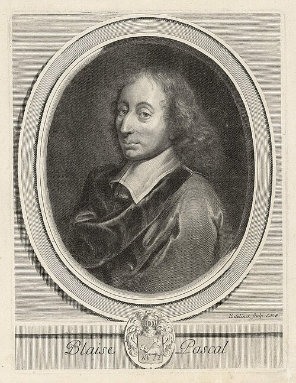
Pascal1623-1662le Dieu d'Abraham contre le Dieu des philosophes4 min
Dans la nuit du lundi 23 novembre 1654, de dix heures et demie du soir à minuit et demi environ, Blaise Pascal a vécu une expérience qu'il a consignée sur un papier, recopiée sur un parchemin, et cousue dans la doublure de son vêtement, où on l'a trouvée après sa mort. Ce texte, qu'on appelle le Mémorial, porte après la date un mot isolé, « Feu », et continue ainsi : « Dieu d'Abraham, Dieu d'Isaac, Dieu de Jacob, / non des philosophes et des savants. / Certitude. Certitude. Sentiment. Joie. Paix. »
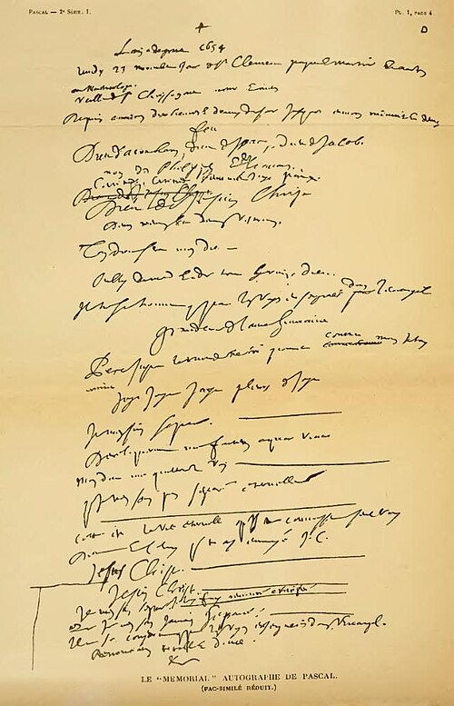
Ces deux lignes contiennent une critique de la religion qu'on ne range jamais parmi les critiques de la religion, parce qu'elle est faite au nom de la foi. Le Dieu « des philosophes et des savants », c'est le Dieu de Descartes, que Pascal connaissait, et dont il ne pardonnait pas à Descartes d'avoir voulu se passer (fr. 77, cité plus haut) : un Dieu démontré, garant des vérités éternelles, premier moteur, cause de soi. Ce Dieu-là, Pascal ne le nie pas ; il le déclare inutile au salut. Le vrai Dieu est celui d'une histoire, celle d'Abraham, d'Isaac et de Jacob, celui qui se révèle à des personnes et non à des raisonnements. Heidegger dira la même chose de la causa sui (dixième partie) ; Pascal l'avait dit, sans le concept d'onto-théologie, dans la nuit de 1654. Et Jean-Luc Marion, lecteur de Pascal et de Heidegger à la fois, fera de cette opposition le centre de Dieu sans l'être.
Les Pensées, publiées en 1670 par Port-Royal à partir des liasses laissées par Pascal (l'ordre des fragments est une reconstruction des éditeurs, et l'édition de Léon Brunschvicg que je cite en propose une parmi d'autres), développent cette critique en trois directions.
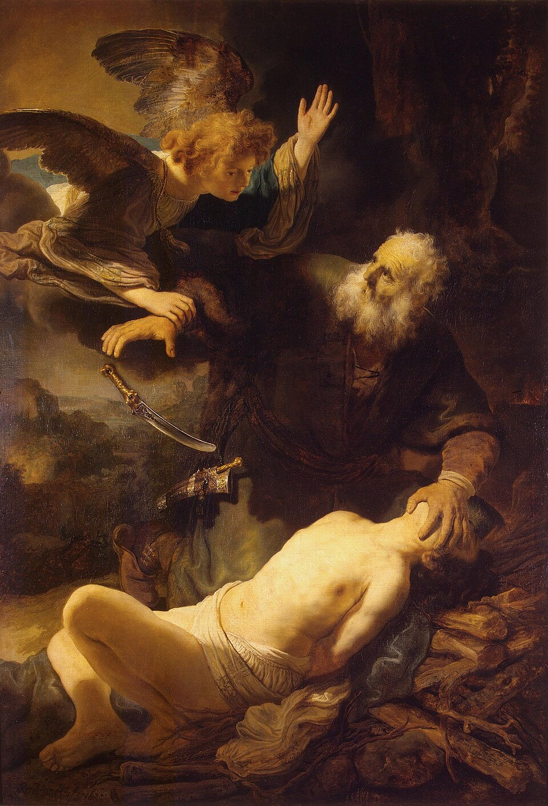
La première est le primat du cœur. « Le cœur a ses raisons, que la raison ne connaît point » (fr. 277) ; et le fragment suivant : « C'est le cœur qui sent Dieu, et non la raison : voilà ce que c'est que la foi : Dieu sensible au cœur, non à la raison » (fr. 278). Le « cœur » pascalien n'est pas le sentiment au sens romantique ; c'est la faculté qui saisit les premiers principes, l'intuition immédiate. Mais la formule ouvre une voie que Schleiermacher empruntera, et qui mène à la religion comme expérience.
La deuxième est le Dieu caché. Pascal reprend le verset d'Isaïe, « Vere tu es Deus absconditus » (Is 45, 15), et en fait une thèse : l'Écriture « dit au contraire que Dieu est un Dieu caché » (fr. 242). Il ne faut donc pas chercher à prouver Dieu par la nature, comme le font les apologistes ; la nature ne prouve rien, ou plutôt elle montre à la fois la présence et l'absence de Dieu. L'homme moderne, dans l'univers infini, éprouve d'abord le vide : « Le silence éternel de ces espaces infinis m'effraie » (fr. 206). Pascal est l'un des premiers penseurs chrétiens à prendre au sérieux l'expérience de l'absence de Dieu comme expérience religieuse. Nietzsche, qui disait ne pas le lire mais l'aimer, verra en lui « das lehrreichste Opfer des Christentums », la victime la plus instructive du christianisme (Ecce homo, « Warum ich so klug bin », § 3) ; Simone Weil reprendra l'idée d'un Dieu qui se retire.
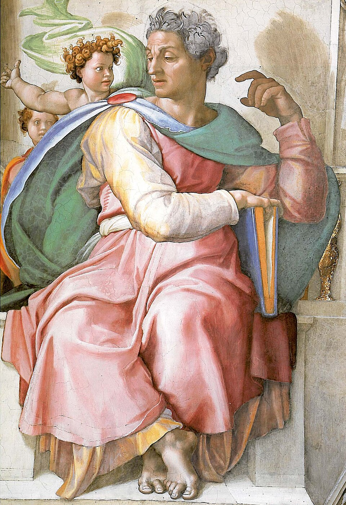
La troisième est le pari, le fragment 233, le plus célèbre et le plus mal lu. On le présente comme un calcul d'intérêt, et il l'est ; mais l'essentiel est ailleurs. « Dieu est, ou il n'est pas » : la raison ne peut décider. Or on ne peut pas ne pas choisir : « il faut parier ; cela n'est pas volontaire, vous êtes embarqué ». Et quand l'interlocuteur objecte qu'il est fait de telle sorte qu'il ne peut croire, Pascal lui donne une méthode : faire comme ceux qui croient, « en prenant de l'eau bénite, en faisant dire des messes, etc. Naturellement même cela vous fera croire et vous abêtira ».
Ce « vous abêtira » ne signifie pas « vous rendra stupide » mais « vous rendra semblable aux bêtes », c'est-à-dire soumettra la machine, l'automate, l'habitude, à la place de la raison orgueilleuse. Mais il dit une chose que toute la critique moderne va retrouver : la croyance s'acquiert par la pratique, et la pratique précède la croyance. Durkheim montrera que le rite fait la croyance et non l'inverse ; Pascal, lui, l'avait prescrit. On voit ici combien la frontière est mince entre l'apologiste et le sociologue : la même proposition, la croyance naît de l'habitude, sert à Pascal pour convertir et à Hume pour expliquer.
Pascal n'est donc pas un critique de la religion au sens où l'est Spinoza, mais il sépare radicalement le Dieu de la foi du Dieu de la raison, et c'est cette séparation qui rendra possible, d'un côté, la critique rationnelle de la théologie (si le Dieu des philosophes n'est pas le vrai Dieu, on peut le démolir sans toucher à la foi), de l'autre, une religion du cœur qui ne doit plus rien aux preuves. Kierkegaard, deux siècles plus tard, reprendra son combat contre une chrétienté trop raisonnable.
Portrait : Gérard Edelinck, CC BY-SA 4.0
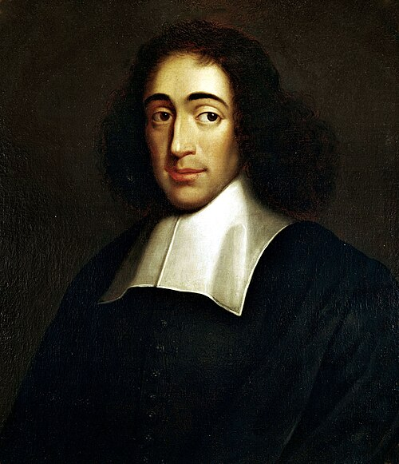
Spinoza1632-1677Dieu n'est pas quelqu'un6 min
Le Tractatus theologico-politicus (Traité théologico-politique) paraît en 1670, anonyme, sous une fausse adresse d'éditeur ; l'Ethica (Éthique) ne paraît qu'après la mort de Spinoza, dans les Opera posthuma de 1677. Ce décalage entre ce que Spinoza publie de son vivant et ce qu'il réserve compte : le TTP est un livre de combat politique, l'Éthique un système. La critique de la religion n'a pas la même fonction dans l'un et dans l'autre, et la confondre produit le contresens le plus répandu sur Spinoza, celui qui en fait un athée masqué.
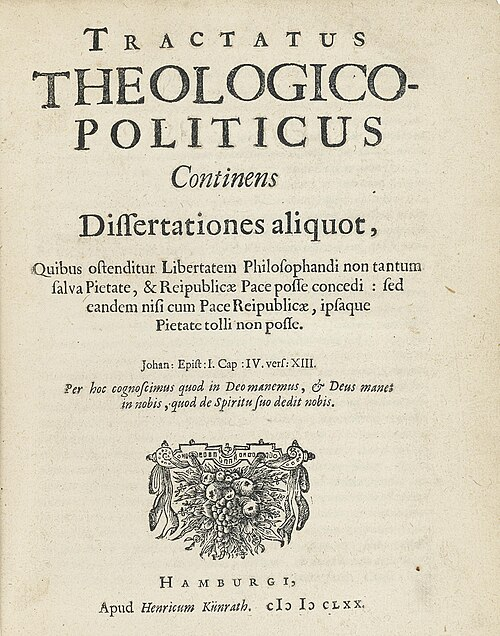
La pensée fondamentale tient dans une formule de la préface de la quatrième partie de l'Éthique : « Deus seu Natura », Dieu, c'est-à-dire la Nature. La phrase complète dit : « Ratio igitur, seu causa, cur Deus seu Natura agit, et cur existit, una eademque est », la raison, ou la cause, pour laquelle Dieu, c'est-à-dire la Nature, agit et pour laquelle il existe est une seule et même. La formule n'abolit pas Dieu, elle le déplace. Dieu n'est pas un être séparé du monde qui voudrait quelque chose pour lui ; il est la substance unique dont toutes choses sont des modes, et il agit par la seule nécessité de sa nature. Il n'a donc ni dessein, ni colère, ni faveur. Ce qui est faux dans la religion, ce n'est pas Dieu, c'est l'image d'un Dieu qui ressemble à un roi. On reconnaît le geste d'Épicure, mais radicalisé : les dieux d'Épicure étaient indifférents, le Dieu de Spinoza est impersonnel.
L'appendice de la première partie démonte le mécanisme de cette image. Les hommes naissent ignorants des causes des choses et conscients de leurs désirs ; ils se croient libres parce qu'ils ignorent ce qui les détermine, et ils imaginent que la nature, comme eux, agit en vue de fins. D'où le finalisme, et du finalisme un Dieu qui aurait tout disposé pour l'homme. Quand on presse un tel esprit de questions sur la cause d'un accident, il remonte de cause en cause « donec ad Dei voluntatem, hoc est ignorantiæ asylum, confugeris », jusqu'à ce que tu te réfugies dans la volonté de Dieu, c'est-à-dire l'asile de l'ignorance. La volonté de Dieu, dans la théologie vulgaire, n'est pas une explication : c'est le nom que prend l'arrêt de l'explication.
Le TTP ajoute à cette analyse une genèse affective et une thèse politique. La préface s'ouvre sur la superstition : si les hommes pouvaient régler toutes leurs affaires par un dessein sûr, ou si la fortune leur était toujours favorable, ils ne seraient pas superstitieux ; mais ils oscillent entre l'espoir et la crainte. Et Spinoza conclut : « La véritable cause de la superstition, ce qui la conserve et l'entretient, c'est donc la crainte ». C'est la thèse de Lucrèce, transposée de la physique à la psychologie des passions, et Hume la reprendra. Quant à la thèse politique, elle tient dans la séparation radicale de la foi et de la philosophie. La philosophie vise la vérité ; la foi « ne requiert pas tant la vérité dans les doctrines que la piété, c'est-à-dire ce qui porte l'esprit à l'obéissance » (ch. XIV). Entre les deux, « il n'y a aucun commerce ni aucune affinité » (ch. XIV).
Là est l'originalité de Spinoza : il ne demande pas la disparition de la religion. Il demande qu'elle cesse de prétendre au vrai et se contente de ce qu'elle fait réellement : obtenir l'obéissance à quelques préceptes de justice et de charité. La religion devient une pratique sociale sans contenu théorique, que l'État peut encadrer et que le philosophe n'a pas besoin de combattre. Spinoza ne sort donc pas de la religion : il la range. La religion ainsi rangée ressemble beaucoup à la religio de Cicéron, observance civique sans métaphysique, et à ce que Durkheim appellera la fonction sociale du sacré. Spinoza pense la religion, après Polybe et Machiavel mais avec une autre rigueur, comme une institution utile dont la vérité importe peu.
Car Spinoza garde, pour lui, le nom de Dieu, chargé d'un sens que le vulgaire ne soupçonne pas, et la question de la spiritualité change ici la lecture. La cinquième partie de l'Éthique culmine dans une notion que les lecteurs pressés traitent comme une concession rhétorique et qui est le sommet du système : l'amour intellectuel de Dieu. « Mentis Amor intellectualis erga Deum est ipse Dei Amor, quo Deus se ipsum amat », l'amour intellectuel de l'esprit envers Dieu est l'amour même dont Dieu s'aime lui-même (V, prop. 36). Cet amour n'attend rien en retour, puisque Dieu n'aime personne au sens humain ; il est la joie qui accompagne la connaissance des choses dans leur nécessité, sub specie aeternitatis. Il procure une expérience que Spinoza n'hésite pas à décrire en termes d'éternité : « At nihilominus sentimus experimurque, nos æternos esse », et néanmoins nous sentons et nous éprouvons que nous sommes éternels (V, prop. 23, scolie). Et il n'est pas la récompense d'une vie vertueuse : « Beatitudo non est virtutis præmium, sed ipsa virtus », la béatitude n'est pas le prix de la vertu, mais la vertu elle-même (V, prop. 42).
Cette dernière proposition est la réponse la plus profonde de Spinoza à la religion, plus profonde que la critique du finalisme. Toute religion de salut promet une récompense : un paradis, une vie éternelle, une rétribution. Spinoza abolit la récompense en l'intériorisant : il n'y a pas d'autre salut que la joie présente de comprendre. C'est ce que Foucault appellera une spiritualité : une transformation du sujet qui lui donne accès au vrai. Et c'est pourquoi l'Éthique peut s'achever sur une phrase qui sonne comme une parole de sagesse plutôt que comme un théorème : « Sed omnia præclara tam difficilia quam rara sunt », mais tout ce qui est remarquable est aussi difficile que rare. L'homme libre, dit encore la quatrième partie, « de nulla re minus quam de morte cogitat ; et ejus sapientia non mortis, sed vitæ meditatio est », ne pense à rien moins qu'à la mort, et sa sagesse est une méditation non de la mort mais de la vie (IV, prop. 67).
La tradition libertine, puis une partie de la critique marxiste, ont lu le maintien du nom de Dieu comme une prudence. Je crois cette lecture fausse. Le Dieu de l'Éthique n'est pas un pseudonyme de la Nature destiné à tromper les censeurs ; il est ce qui permet à Spinoza de penser la Nature comme infinie, nécessaire et parfaite, et de fonder sur elle une béatitude. Ce n'est pas le nom de Dieu qui est conservé par prudence, c'est la structure de la vie bienheureuse, par conviction. Spinoza est un philosophe de la sortie de la superstition, non de la sortie du divin. Novalis, dans un fragment publié après sa mort par Friedrich Schlegel et Ludwig Tieck, l'a appelé « ein Gott-trunkener Mensch », un homme ivre de Dieu (Novalis Schriften, t. II, Berlin, 1802, p. 487).
C'est précisément ce que lui objecteront ses successeurs, et leurs objections forment déjà un débat. Hegel, dans ses leçons sur l'histoire de la philosophie, dira que le spinozisme n'est pas un athéisme mais un acosmisme, « Der Spinozismus ist also Akosmismus », et qu'il y a chez lui non pas trop peu mais « zu viel Gott », trop de Dieu (Vorlesungen über die Geschichte der Philosophie, éd. Suhrkamp, t. 20, p. 162-163) : loin de nier Dieu, il nie le monde, qui n'est plus qu'un ensemble de modes sans consistance. Feuerbach et la gauche hégélienne, à l'inverse, liront Deus seu Natura comme une manière élégante de dire que seule la Nature existe. La vraie objection, celle qui portera, est autre : Spinoza explique l'illusion par l'ignorance et la crainte ; il n'explique pas pourquoi l'homme s'attache à elle même quand on la lui montre. Il décrit l'erreur, il ne rend pas compte du besoin de l'erreur. Ce besoin sera l'objet de Feuerbach, de Marx et de Freud. Nietzsche enfin, qui reconnaîtra en Spinoza un précurseur, se moquera aussi du « Hocuspocus von mathematischer Form » dont il cuirasse sa philosophie (Jenseits von Gut und Böse, § 5) : la forme géométrique elle-même lui paraîtra un masque de la volonté.
Portrait : Anonyme, Public domain
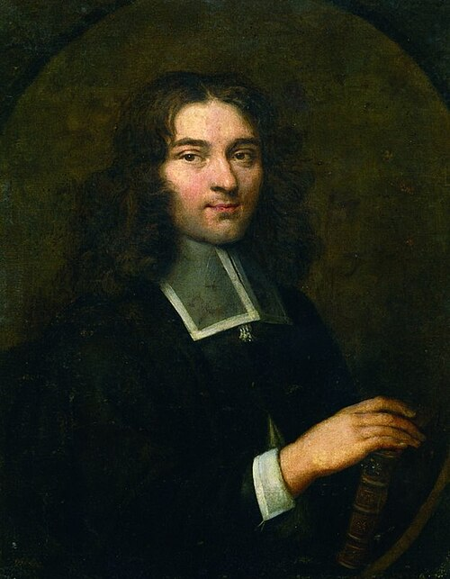
Bayle1647-1706une société d'athées est possible3 min
Pierre Bayle, protestant français réfugié à Rotterdam en 1681, après la suppression de l'Académie protestante de Sedan, publie en 1682 une Lettre sur la comète, devenue l'année suivante les Pensées diverses sur la comète. Le prétexte est le passage de la comète de 1680, que la croyance populaire tenait pour un présage. Bayle démontre d'abord qu'une comète ne présage rien ; puis il en vient à un argument inattendu. Si les comètes étaient des présages envoyés par Dieu pour avertir les hommes, elles ne pourraient que renforcer l'idolâtrie des païens, qui les interprétaient comme des signes de leurs dieux. Dieu aurait donc fait un miracle pour fortifier l'idolâtrie. Or l'idolâtrie, demande Bayle, est-elle moins grave que l'athéisme ? Et il répond, dans le titre même d'une section : « Que l'Athéisme n'est pas un plus grand mal que l'Idolâtrie » (§ CXIV).
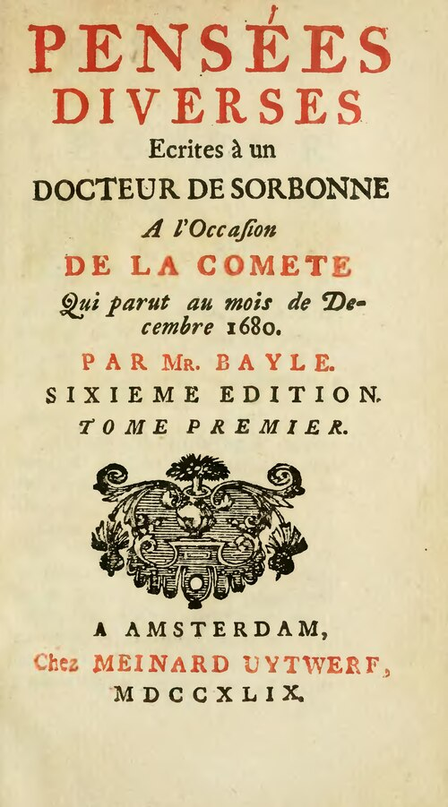
Le scandale est immédiat, et il suscite une réponse attestée immédiate. Le pasteur Pierre Jurieu, ancien ami devenu ennemi, l'attaque précisément sur ce point ; l'éditeur moderne cite sa plainte : « On lit le dangereux paradoxe, que l'Athéisme n'est pas un plus grand mal que l'idolâtrie ». Ce qui inquiète Jurieu n'est pas tant la proposition théologique que sa conséquence pratique : si l'athée n'est pas pire que l'idolâtre, pourquoi le punir ?
Bayle va plus loin, et c'est le cœur de l'affaire : il soutient que les hommes n'agissent pas selon leurs principes mais selon leurs passions, leur tempérament et leurs habitudes ; que la croyance en Dieu n'empêche donc pas les chrétiens d'être aussi vicieux que les autres ; et qu'inversement l'absence de croyance n'empêche pas d'être vertueux. D'où la conjecture, au § CLXI de l'édition de 1749 : à l'égard des mœurs et des actions civiles, une société d'athées « seroit toute semblable à une société de Paiens. Il y faudroit à la vérité des loix fort severes, et fort bien exécutées pour la punition des criminels. Mais n'en faut-il pas par tout ? » Et Bayle conclut d'une phrase qui ferait le bonheur d'un sociologue : « la Justice humaine fait la vertu de la plus grande partie du monde ».
L'argument de Bayle n'est donc pas une apologie de l'athée ; c'est une sociologie avant la lettre : la vertu des hommes ne tient pas à leur croyance en l'immortalité, elle tient aux lois, à l'honneur, à l'opinion, au tempérament. Durkheim en tirera la conséquence inverse : si la morale tient à la société, et si la religion est la société qui s'adore, alors la religion n'est pas morte avec Dieu. La confrontation avec la thèse que la postérité a prêtée à Ivan Karamazov sera conduite dans la septième partie.
Bayle n'était pas athée, mais un calviniste sceptique, convaincu que la raison est impuissante à établir les vérités de la foi et que la foi doit donc se passer de la raison, ce qui le rapproche, par une voie toute différente, de Pascal. Sa défense de l'athée vertueux est une défense de la tolérance : si l'athée peut être honnête homme, l'État n'a aucune raison de le persécuter, et à plus forte raison n'en a-t-il aucune de persécuter le protestant ou le juif. La sortie de la religion qu'il dessine n'est pas une sortie de la foi ; c'est une sortie de la religion comme ciment politique. Il pense en ce sens, l'un des premiers, la sortie de la religion comme la fin d'une structure de la société, non d'une croyance des individus.
Portrait : Attribué à Louis Ferdinand Elle le Jeune, Public domain
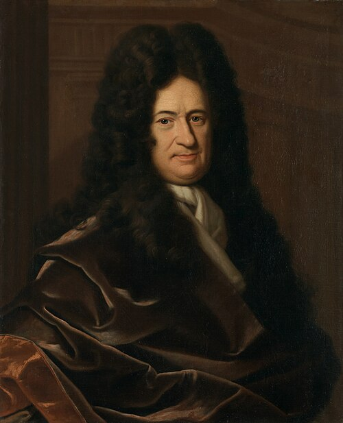
Leibniz1646-1716pourquoi quelque chose plutôt que rien8 min
Leibniz a écrit sur Dieu toute sa vie, mais les deux textes où sa pensée se résume sont deux brefs exposés de 1714, rédigés en français pendant un séjour à Vienne : les Principes de la nature et de la grâce fondés en raison, publiés en 1718 dans L'Europe savante, et la Monadologie, publiée d'abord en traduction allemande en 1720 et dont le texte français ne parut qu'en 1840. La seule grande œuvre philosophique qu'il ait publiée de son vivant est d'un autre genre : les Essais de théodicée sur la bonté de Dieu, la liberté de l'homme et l'origine du mal, parus à Amsterdam en 1710, et nés d'une controverse avec un mort, Pierre Bayle, disparu quatre ans plus tôt.
La pensée de Leibniz sur Dieu tient en une question, la plus célèbre de la métaphysique moderne. Elle est posée au § 7 des Principes de la nature et de la grâce : « maintenant il faut s'élever à la métaphysique, en nous servant du grand principe, peu employé communément, qui porte que rien ne se fait sans raison suffisante ; c'est-à-dire que rien n'arrive sans qu'il soit possible à celui qui connaîtrait assez les choses de rendre une raison qui suffise pour déterminer pourquoi il en est ainsi, et non pas autrement. Ce principe posé, la première question qu'on a droit de faire sera : Pourquoi il y a plutôt quelque chose que rien ? Car le rien est plus simple et plus facile que quelque chose ».
Tout tient dans le « car » de la dernière phrase : le néant n'a pas besoin d'explication, puisqu'il est l'état le plus simple ; c'est l'existence qui en demande une. Et cette explication ne peut se trouver dans la suite des choses contingentes, car chacune renvoie à une autre, à l'infini, sans qu'aucune rende raison de la série entière. La Monadologie formule le principe (« aucun fait ne saurait se trouver vrai ou existant, aucune énonciation véritable, sans qu'il y ait une raison suffisante, pourquoi il en soit ainsi et non pas autrement », § 32) et en tire la conclusion : « la dernière raison des choses doit être dans une substance nécessaire, dans laquelle le détail des changements ne soit qu'éminemment, comme dans la source, et c'est ce que nous appelons Dieu » (§ 38). Elle reprend aussi l'argument de Descartes en le complétant : la preuve ontologique ne vaut que si l'on montre d'abord que l'idée de Dieu est possible, c'est-à-dire non contradictoire, et Leibniz conclut que « Dieu seul ou l'Être nécessaire a ce privilège, qu'il faut qu'il existe, s'il est possible » (§ 45).
Le paragraphe suivant contient une réponse attestée à Descartes, et elle éclaire toute la différence des deux théologies. « Cependant il ne faut point s'imaginer avec quelques-uns, que les vérités éternelles, étant dépendantes de Dieu, sont arbitraires et dépendent de sa volonté, comme Descartes paraît l'avoir pris et puis M. Poiret » (§ 46). Seules les vérités contingentes dépendent du choix de Dieu ; les vérités nécessaires dépendent de son entendement. Le Dieu de Leibniz n'a pas l'abîme de liberté du Dieu cartésien : il est lié par la logique, et il choisit selon des raisons. Il est la raison elle-même devenue personne. On ne peut aller plus loin dans la rationalisation du divin, et c'est pourquoi Heidegger, qui consacrera en 1955-1956 un cours entier au principe de raison, publié en 1957 sous le titre Der Satz vom Grund (Le Principe de raison), verra en Leibniz le penseur chez qui l'onto-théologie dit le plus clairement son nom : Dieu y est la raison suffisante de l'étant, l'étant suprême qui fonde tous les autres.
Ce Dieu-raison doit avoir des raisons de créer ce monde-ci plutôt qu'un autre, et elles ne peuvent tenir qu'à sa bonté. D'où la thèse qui a rendu Leibniz célèbre et ridicule. Parmi tous les mondes possibles, Dieu a choisi le meilleur, car « s'il n'y avait pas le meilleur (optimum) parmi tous les mondes possibles, Dieu n'en aurait produit aucun » (Théodicée, I, § 8). Le mal n'est pas nié : il est classé, et sa présence est justifiée par le tout. « On peut prendre le mal métaphysiquement, physiquement et moralement. Le mal métaphysique consiste dans la simple imperfection, le mal physique dans la souffrance, et le mal moral dans le péché » (I, § 21). Le mal métaphysique est inévitable, puisque toute créature est finie ; le mal physique et le mal moral ne sont pas nécessaires, mais ils sont possibles, et Dieu les permet parce que le monde qui les contient vaut mieux, pris en entier, que tout monde qui ne les contiendrait pas.
La Théodicée est une réponse attestée, et sa cible est nommée dès la préface. Bayle, dans son Dictionnaire historique et critique, avait soutenu que les objections des manichéens contre la bonté de Dieu étaient rationnellement invincibles, et qu'il fallait donc croire contre la raison. Leibniz lui répond que la foi et la raison ne peuvent se contredire, puisque deux vérités ne se contredisent pas, et il juge sévèrement la position de son adversaire : « M. Bayle paraît l'avoir pris tout autrement : il se déclare contre la raison, lorsqu'il se pouvait contenter d'en blâmer l'abus » (« Discours de la conformité de la foi avec la raison », § 46). Le débat sur la religion, à l'aube des Lumières, ne passe donc pas entre croyants et incroyants : il passe entre deux croyants, l'un qui sépare la foi de la raison pour sauver la foi, l'autre qui les unit pour sauver les deux. Le même discours préliminaire range parmi les adversaires de cette union une « secte de philosophes » italiens qu'on nommait « Averroïstes » (§ 7), et nous avons vu, dans la première partie, ce qu'il en était réellement d'Averroès.
La rencontre avec Spinoza appartient au même tableau, et elle demande des précautions, car Leibniz lui-même l'a racontée de manière à en minimiser la portée. En novembre 1676, revenant de Paris par Londres, Leibniz s'arrête à La Haye et rend visite à Spinoza, qui mourra trois mois plus tard. La Théodicée, trente-quatre ans après, en parle d'une phrase désinvolte : « Je vis M. de la Court, aussi bien que Spinosa, à mon retour de France par l'Angleterre et par la Hollande, et j'appris d'eux quelques bonnes anecdotes sur les affaires de ce temps-là » (III, § 376). Des anecdotes politiques, donc ; les papiers de Leibniz montrent autre chose : une note de la même époque rapporte qu'il présenta à Spinoza sa démonstration de la possibilité de l'être souverainement parfait, et que Spinoza la lut. Ce que Leibniz pensait au fond du spinozisme, la préface de la Théodicée le dit sans détour : Spinoza veut que tout soit venu de la première cause « par une nécessité aveugle et toute géométrique, sans que ce premier principe des choses soit capable de choix, de bonté et d'entendement ». Toute la théologie leibnizienne peut se lire comme l'effort de sauver le Dieu de la raison du Dieu de la nécessité : garder la rigueur de Spinoza, mais rendre à Dieu un entendement, une volonté et une bonté, c'est-à-dire tout ce que Spinoza lui avait retiré.
Ce Dieu-là n'est pas seulement un principe ; il est aussi l'objet d'un amour, et Leibniz a sa spiritualité, qui est celle de l'optimiste. Les Principes de la nature et de la grâce s'achèvent sur elle : « On peut même dire que dès à présent l'amour de Dieu nous fait jouir d'un avant-goût de la félicité future » ; et cet amour, quoique désintéressé, produit « une véritable tranquillité de l'esprit ; non pas comme les stoïciens résolus à une patience par force, mais par un contentement présent » (§ 18). La différence avec le stoïcisme est soigneusement marquée : le stoïcien se résigne à l'ordre, le leibnizien l'approuve, parce qu'il sait que l'ordre est le meilleur. Les esprits, dit encore le § 15, sont membres de la « cité de Dieu », gouvernée par le meilleur des monarques, « où il n'y a point de crime sans châtiment, point de bonnes actions sans récompense proportionnée ». Le même homme passa des années, dans la dernière décennie du siècle, à négocier par lettres avec Bossuet un projet de réunion des Églises catholique et protestantes : la religion de Leibniz est une religion de la raison et de la concorde, qui voudrait que les confessions se réconcilient comme les vérités s'accordent.
La réponse la plus célèbre à Leibniz n'est pas d'un philosophe de métier, et elle est attestée. Après le tremblement de terre de Lisbonne, le 1er novembre 1755, Voltaire écrit un poème sur le désastre, puis, en 1759, Candide ou l'Optimisme, dont le précepteur Pangloss enseigne « la métaphysico-théologo-cosmolonigologie » et prouve « que, dans ce meilleur des mondes possibles, le château de monseigneur le baron était le plus beau des châteaux » (ch. I). Après le tremblement de terre et l'autodafé qui le suit, Candide, fessé et sanglant, se demande : « Si c'est ici le meilleur des mondes possibles, que sont donc les autres ? » (ch. VI). Et le conte s'achève sur la réponse qui congédie la métaphysique : « il faut cultiver notre jardin » (ch. XXX). Rousseau, dans une lettre à Voltaire de 1756 que l'on retrouvera, prendra au contraire la défense de la Providence.
Voltaire caricature, mais il touche un point que la caricature ne doit pas faire oublier. La théodicée justifie chaque mal particulier par le bien du tout. Le critère demande si l'on installe un absolu au nom duquel on peut exiger le sacrifice de l'individu ; or la théodicée est, au sens strict, une pensée qui accepte le sacrifice de l'individu à l'harmonie de l'ensemble, même si c'est Dieu, et non l'homme, qui en décide. Hegel transposera la théodicée dans l'histoire, en faisant de l'histoire universelle le tribunal où les individus sont jugés et broyés pour que l'Esprit avance ; et Ivan Karamazov, dans la septième partie, refusera l'harmonie finale si elle doit être payée des larmes d'un seul enfant torturé. Ce refus, rapprochement construit avec Leibniz, est la réponse morale à la Théodicée, comme Candide en est la réponse ironique. Je crois qu'elle touche plus juste : ce n'est pas le meilleur des mondes que l'on refuse, c'est l'idée qu'un individu puisse être compté comme une partie du meilleur.
On aurait tort d'abandonner avec la théodicée la question du § 7. Leibniz y répondait par Dieu ; mais la question peut survivre à la réponse. Schelling la reprendra dans ses cours sur la philosophie de la révélation, Heidegger en fera la question première de son Introduction à la métaphysique, Bergson la tiendra pour un faux problème, et Wittgenstein déplacera l'étonnement qu'elle exprime vers le fait même que le monde soit. La dernière partie les réunira autour de cette seule question, peut-être la forme la plus pure de ce qu'on peut appeler une spiritualité sans religion : l'étonnement devant l'existence, qui ne demande ni culte, ni dogme, ni sacrifice, et que Leibniz, le plus rationaliste des philosophes, a formulé avec la plus grande clarté.
Portrait : Christoph Bernhard Francke, Public domain
Passage : de la crainte à la morale1 min
Au seuil des Lumières, la critique de la religion dispose donc de ses principaux outils, et ils viennent de traditions opposées. Des épicuriens et de Spinoza, elle hérite l'idée que la religion naît de la crainte et de l'ignorance des causes, et qu'une connaissance de la nature, vécue comme exercice, procure une paix que la religion promettait sans la donner. Des mystiques et de Pascal, elle hérite l'idée que le Dieu des représentations et des preuves n'est pas le vrai Dieu, et que la critique de l'idole peut être un acte de foi. De Bayle, elle hérite l'idée que la morale ne dépend pas de la croyance. De Leibniz, elle reçoit la question la plus nue, pourquoi quelque chose plutôt que rien, et l'obligation de justifier Dieu devant le mal, que Voltaire va retourner contre lui. Le XVIIIe siècle va les combiner de manières incompatibles, et Kant, au terme du siècle, n'en gardera que ce qui est rationnel, c'est-à-dire la morale.
Quatrième partieles Lumières et la religion dans les limites
Les Lumières n'ont pas eu une doctrine de la religion mais au moins cinq, qui se sont combattues aussi vivement qu'elles combattaient l'Église. L'empirisme écossais a fait de la religion un objet d'histoire naturelle. Le déisme français l'a gardée comme frein social. Rousseau l'a refondée deux fois, comme religion du cœur et comme religion civile. Le matérialisme du baron d'Holbach a voulu la détruire. La philosophie critique de Kant l'a réduite à la morale. Ces cinq positions sont encore les nôtres : on explique la religion, on l'utilise, on la refonde, on la combat, ou l'on en garde ce qui paraît raisonnable. Presque aucune ne sort de la religion sans laisser un reste, et ce reste a presque chaque fois la forme d'un culte ; Hume seul fait exception.
Hume1711-1776une histoire naturelle de la croyance5 min
David Hume publie The Natural History of Religion (L'Histoire naturelle de la religion) en 1757, dans un recueil intitulé Four Dissertations. Ses Dialogues concerning Natural Religion (Dialogues sur la religion naturelle), rédigés dès les années 1750 et retouchés jusqu'à sa mort, ne paraissent qu'en 1779, à titre posthume, par les soins de son neveu. L'écart des dates dit la prudence de l'auteur : le premier livre explique la religion sans la juger ; le second la juge, mais par la bouche de personnages.
L'Histoire naturelle change la question : non plus si Dieu existe, mais d'où vient, dans la nature humaine, la croyance en des puissances invisibles. Et elle part d'un fait que les théologiens de son temps tenaient pour une corruption tardive : « polytheism or idolatry was, and necessarily must have been, the first and most ancient religion of mankind », le polythéisme ou l'idolâtrie fut, et dut nécessairement être, la première et la plus ancienne religion de l'humanité (section 1). Le monothéisme n'est pas l'origine, mais un produit tardif, car la religion n'est pas née de la contemplation de l'ordre du monde, comme le croient les déistes avec leur argument du dessein, mais de l'inquiétude. Les premières idées religieuses sont nées « not from a contemplation of the works of nature, but from a concern with regard to the events of life, and from the incessant hopes and fears, which actuate the human mind », non de la contemplation des œuvres de la nature, mais d'un souci des événements de la vie et des espoirs et des craintes incessants qui agitent l'esprit humain (section 2).
On reconnaît la thèse de Lucrèce et de Spinoza, la crainte au principe des dieux ; mais Hume y ajoute une dynamique. Les religions oscillent : « the principles of religion have a kind of flux and reflux in the human mind », les principes de la religion ont une sorte de flux et de reflux dans l'esprit humain, et les hommes ont une tendance naturelle à s'élever de l'idolâtrie au théisme, puis à retomber du théisme dans l'idolâtrie (section 8). Le Dieu unique et infini est trop abstrait pour la dévotion populaire, qui lui adjoint des intercesseurs, des saints, des images ; et quand ceux-ci se multiplient, une réforme rappelle l'unité divine. Cette loi d'oscillation est l'une des idées les plus fécondes de la tradition : elle annonce Weber, pour qui la rationalisation religieuse produit elle-même le désenchantement, et Bergson, pour qui la religion dynamique retombe toujours en religion statique.
Il ajoute une comparaison que Bayle avait préparée et que tous les libéraux reprendront : le polythéisme est tolérant, le monothéisme intolérant, car un dieu unique ne souffre pas de rivaux. Et il termine sur un constat sceptique d'une grande beauté. Après avoir passé en revue les croyances populaires, qu'on prendrait volontiers pour « sick men's dreams », des rêves de malades, il conclut : « The whole is a riddle, an ænigma, an inexplicable mystery. Doubt, uncertainty, suspence of judgment appear the only result of our most accurate scrutiny, concerning this subject », le tout est une énigme, un mystère inexplicable, et le doute, l'incertitude, la suspension du jugement semblent le seul résultat de notre examen le plus attentif. Mais ce doute même, ajoute-t-il, serait difficile à maintenir sans un stratagème : opposer les superstitions les unes aux autres, les faire se quereller, et pendant leur fureur « happily make our escape, into the calm, though obscure, regions of philosophy », nous échapper heureusement dans les régions calmes, quoique obscures, de la philosophie.
Cette phrase définit la sortie sceptique, et toutes celles qui suivront s'y mesurent. Hume ne prétend pas avoir réfuté la religion, ne propose rien à la place, ne fonde aucun culte. Il s'échappe, en avouant que la région où il s'échappe est obscure. Il pratique le régime de l'erreur sans en tirer de refondation, et il est ainsi, avec Spinoza et Nietzsche, l'un des rares auteurs de cette histoire qui sortent sans refonder, par une voie qu'ils n'ont pas prise : non une spiritualité, mais une suspension. Est-elle vivable ? Pas tout le temps, répondait Hume, dont le philosophe sceptique, dans le Traité de la nature humaine, retourne jouer au trictrac avec ses amis : « I dine, I play a game of back-gammon, I converse, and am merry with my friends » (I, 4, 7, § 9).
Les Dialogues mettent en scène trois personnages. Cleanthes défend le théisme expérimental : l'univers ressemble à une machine, donc il a un auteur semblable à l'esprit humain. Demea défend la théologie orthodoxe a priori : Dieu est incompréhensible, et sa nature dépasse toute analogie. Philo, le sceptique, s'allie tour à tour à l'un contre l'autre et démolit l'argument du dessein : l'analogie est faible, qu'on pourrait aussi bien comparer l'univers à un animal ou à un végétal, et qu'un monde imparfait suggère un dieu imparfait, ou plusieurs, ou un apprenti. Au cœur du livre, à la partie X, Philo reprend un argument antique : « EPICURUS's old questions are yet unanswered. Is he willing to prevent evil, but not able? then is he impotent. Is he able, but not willing? then is he malevolent. Is he both able and willing? whence then is evil? », les vieilles questions d'Épicure sont encore sans réponse : veut-il empêcher le mal sans le pouvoir ? Il est impuissant. Le peut-il sans le vouloir ? Il est méchant. Le veut-il et le peut-il ? D'où vient donc le mal ?
Ce trilemme, que Hume attribue à Épicure sur la foi de Lactance (De ira Dei, 13), attribution aujourd'hui discutée, est l'argument qu'Ivan Karamazov reprendra sous une forme concrète, avec les enfants torturés. Mais Philo ne conclut pas à l'athéisme. À la partie XII, il semble même se rallier à une forme minimale de théisme, et il lance cette phrase, dont l'ironie est indécidable : « To be a philosophical Sceptic is, in a man of letters, the first and most essential step towards being a sound, believing Christian », être un sceptique philosophique est, pour un homme de lettres, le premier et le plus essentiel pas pour devenir un bon chrétien croyant. Hommage à Pascal, qui voulait abaisser la raison pour faire place à la foi, précaution ou moquerie ? La critique ne s'accorde pas, et je crois qu'il faut laisser l'ambiguïté où Hume l'a mise : le sceptique ne peut pas plus affirmer l'inexistence de Dieu que son existence, et sa sortie de la religion est une sortie de la certitude, dans un sens comme dans l'autre.
La suite la plus nette de Hume est Kant, qui dira avoir été réveillé par lui de son sommeil dogmatique (à propos de la causalité, dans les Prolégomènes de 1783), et dont la Critique de la raison pure (1781) reprendra la critique des preuves de l'existence de Dieu. Mais il en tirera une conclusion que Hume n'avait pas envisagée : si la raison théorique ne peut prouver Dieu, la raison pratique peut le postuler.
Portrait : Allan Ramsay, Public domain
Voltaire1694-1778« il faudrait l'inventer »3 min
Voltaire n'est pas athée, et il l'a répété toute sa vie avec une insistance qui n'est pas que prudence. Il est déiste : il croit en un Être suprême, architecte de l'univers et garant de la morale, et il combat l'« Infâme », c'est-à-dire la superstition, le fanatisme et l'Église qui les entretient. Sa position est symétrique de celle de Spinoza : celui-ci critique l'image vulgaire de Dieu pour garder un Dieu impersonnel ; Voltaire critique l'Église pour garder un Dieu personnel et juge.
Le texte central est une épître en vers de 1769 à l'auteur anonyme du Traité des trois imposteurs, pamphlet clandestin qui faisait de Moïse, de Jésus et de Mahomet trois fourbes. Voltaire s'y fâche contre l'athéisme militant : « Corrige le valet, mais respecte le maître. / Dieu ne doit point pâtir des sottises du prêtre ». Puis il expose la fonction de la croyance en Dieu dans des vers d'où sort le texte le plus cité de toute l'affaire :
« Ce système sublime à l'homme est nécessaire. / C'est le sacré lien de la société, / Le premier fondement de la sainte équité, / Le frein du scélérat, l'espérance du juste. »
Et un peu plus loin, le vers devenu proverbe : « Si Dieu n'existait pas, il faudrait l'inventer. / Que le sage l'annonce, et que les rois le craignent. »
On cite toujours le premier de ces alexandrins, presque jamais le second, qui en donne pourtant le sens. Voltaire ne dit pas seulement que Dieu est utile au peuple ; il dit que le sage doit l'annoncer, et que les rois doivent le craindre. Ce Dieu a une fonction politique double : il retient le scélérat, mais aussi le tyran, et la suite de l'épître avertit les rois que, s'ils oppriment l'innocent, Dieu les jugera. L'idée n'est donc pas, ou pas seulement, le cynisme d'un aristocrate qui voudrait que ses domestiques croient en Dieu pour ne pas être volé, cynisme que Voltaire a pourtant formulé ailleurs, mais dans la bouche d'un personnage, l'Anglais A de L'A, B, C (1768) : « Je veux que mon procureur, mon tailleur, mes valets, ma femme même, croient en Dieu ; et je m'imagine que j'en serai moins volé et moins cocu » (XVIIe entretien) ; c'est une théorie du contrat moral garanti par une transcendance.
Lue à la lumière de ce qui viendra, la formule change de portée. « Si Dieu n'existait pas, il faudrait l'inventer » : le vers dissocie entièrement la question de l'existence de Dieu de celle de sa fonction. Peu importe qu'il existe ; il faut qu'on y croie. C'est le programme du Grand Inquisiteur de Dostoïevski, qui gouverne les hommes par le miracle, le mystère et l'autorité sans croire lui-même en Dieu, et qui le fait, comme Voltaire, au nom du bien des hommes. Le roman le confirme : Ivan cite ce vers deux chapitres avant le poème (septième partie).
Le déisme voltairien est une sortie de la religion, au sens où il abandonne les dogmes, les miracles, les Écritures, l'Église. Mais il garde ce que Durkheim appellera la fonction du sacré : un « sacré lien de la société ». Voltaire a vidé la religion de son contenu pour en garder la forme, et cette forme est précisément celle d'un absolu qui oblige. C'est une refondation qui ne s'en cache pas : elle invente Dieu, en toute conscience, pour sa fonction. Ce vers fait de Dieu un artefact nécessaire.
Portrait : Nicolas de Largillière, CC0
Rousseau1712-1778la religion du cœur et le catéchisme du citoyen10 min
Rousseau occupe dans ce débat une place que ni Voltaire ni d'Holbach ne peuvent tenir, parce qu'il fait deux gestes contraires la même année. En 1762 paraissent l'Émile, dont le livre IV contient la Profession de foi du vicaire savoyard, et le Contrat social, dont l'avant-dernier chapitre s'intitule « De la religion civile ». Le premier texte est une sortie radicale de l'Église écrite par un croyant ; le second, un projet précis de religion politique, vingt-sept ans avant la Révolution. Il sort de l'Église et refonde une religion dans deux livres parus chez des éditeurs différents, et que Genève condamne ensemble.
La Profession de foi est une religion naturelle, mais non celle des philosophes. Le vicaire ne démontre pas Dieu par le raisonnement abstrait ; il part du sentiment intérieur. Devant l'ordre du monde, il ne déduit pas, il éprouve : « Je crois donc que le monde est gouverné par une volonté puissante & sage ; je le vois, ou plutôt je le sens, & cela m'importe à savoir ». Le « ou plutôt je le sens » est toute la différence avec Voltaire. Le Dieu de Voltaire est un horloger qu'on infère ; celui du vicaire est une présence qu'on éprouve. Et la morale ne vient pas d'une loi révélée ni d'un calcul d'intérêt ; elle vient d'une faculté que Rousseau salue comme une divinité intérieure : « Conscience ! conscience ! instinct divin ; immortelle & céleste voix, guide assuré d'un être ignorant & borné, mais intelligent & libre ; juge infaillible du bien & du mal, qui rends l'homme semblable à Dieu ».
Ce Dieu senti n'a pas besoin d'intermédiaires, et la Profession de foi en tire une conséquence explosive. Dieu a parlé, disent les religions révélées ; le vicaire pose alors des questions d'autant plus fortes qu'un prêtre les pose : « Comment cela ? Par des prodiges. Et où sont ces prodiges ? Dans des livres. Et qui a fait ces livres ? Des hommes. Et qui a vu ces prodiges ? Des hommes qui les attestent. Quoi ! toujours des témoignages humains ? toujours des hommes qui me rapportent ce que d'autres hommes ont rapporté ? Que d'hommes entre Dieu & moi ! » La révélation est une chaîne de témoignages humaine de bout en bout. Le vicaire en tire la conclusion : « J'ai donc refermé tous les livres. Il en est un seul ouvert à tous les yeux, c'est celui de la Nature ». Les cultes extérieurs, affaires de climat, de gouvernement et de génie national, se valent tous quand ils sont sincères, car « le culte essentiel est celui du cœur ».
On croirait lire Spinoza, et la parenté est réelle sur un point : comme le Tractatus, le vicaire réduit la religion à la pratique de la justice et de la charité, et refuse aux miracles toute valeur de preuve. Mais l'esprit est inverse. Spinoza refuse les miracles parce qu'ils contrediraient l'ordre nécessaire de la nature, qui est Dieu, le vicaire parce qu'ils interposent des hommes entre Dieu et lui : l'un parle au nom de la raison, l'autre au nom du cœur. Et le cœur du vicaire garde ce que la raison de Spinoza écartait : une immense révérence pour l'Évangile. C'est la page la plus célèbre de la Profession de foi, et elle a suffi à la faire condamner par les deux camps. Le vicaire avoue que « la majesté des Écritures m'étonne, la sainteté de l'Évangile parle à mon cœur », et il compare la mort de Socrate et celle de Jésus : « Oui, si la vie & la mort de Socrate sont d'un Sage, la vie & la mort de Jesus sont d'un Dieu ». Mais il ajoute aussitôt que ce même Évangile « est plein de choses incroyables, de choses qui répugnent à la raison, & qu'il est impossible à tout homme sensé de concevoir ni d'admettre », et il conclut par ce qu'il appelle lui-même un « scepticisme involontaire », qui suspend le jugement sur tout ce qui n'importe pas à la conduite.
Cette position, très cohérente, tient contre ses deux adversaires. Contre les philosophes, elle maintient qu'un athéisme de principe est une présomption aussi dogmatique que la foi, et qu'on ne vit pas de démonstrations. Contre les Églises, elle maintient que nul ne peut être damné pour n'avoir pas cru ce qu'il n'a pu examiner, et que Dieu ne saurait exiger de nous, comme dit le vicaire, d'être si savants. C'est la position que Kant reprendra en 1793 en séparant la pure foi religieuse de la foi d'Église, et il n'a jamais caché sa dette. Dans des notes personnelles des années 1764-1765, il écrit que Rousseau l'a remis dans le droit chemin et lui a appris à honorer les hommes. La réponse est attestée : la religion dans les limites de la simple raison est la Profession de foi traduite dans la langue de la critique.
Les juges, eux, ne s'y sont pas trompés. Le Parlement de Paris condamne l'Émile en juin 1762 et décrète Rousseau de prise de corps ; le livre est lacéré et brûlé. Quelques jours plus tard, le Petit Conseil de Genève condamne l'Émile et le Contrat social. L'archevêque de Paris, Christophe de Beaumont, publie un mandement contre l'Émile, auquel Rousseau répond en 1763 par sa Lettre à Christophe de Beaumont. Le citoyen de Genève, qui signait ainsi ses livres, est chassé de sa patrie pour avoir écrit une religion sans Église.
Or la même année, Rousseau écrit le chapitre qui fait de lui le grand théoricien moderne de la religion politique. Le chapitre VIII du livre IV du Contrat social commence par une typologie. Il y a la religion de l'homme, « sans Temples, sans autels, sans rites, bornée au culte purement intérieur du Dieu Suprême & aux devoirs éternels de la morale », qui est « la pure & simple Religion de l'Evangile, le vrai Théïsme » : c'est la religion du vicaire. Il y a la religion du citoyen, nationale, avec ses dieux tutélaires et ses rites prescrits par les lois. Et il y en a une troisième, la pire, qui donne aux hommes deux législations et deux patries : « On peut appeller celui-ci la religion du Prêtre », et l'exemple qu'en donne Rousseau est le christianisme romain.
La religion de l'homme, si pure soit-elle, est politiquement inutile, et même nuisible, parce qu'elle détache les cœurs de la cité terrestre. Rousseau va jusqu'à cette phrase, qu'on oublie toujours quand on fait de lui un chrétien sentimental : « Les vrais Chrétiens sont faits pour être esclaves ; ils le savent & ne s'en émeuvent gueres ; cette courte vie a trop peu de prix à leurs yeux ». Une république chrétienne est une contradiction dans les termes : « chacun de ces deux mots exclud l'autre ». Il faut donc autre chose, et Rousseau franchit le pas. « Il y a donc une profession de foi purement civile dont il appartient au Souverain de fixer les articles, non pas précisément comme dogmes de Religion, mais comme sentimens de sociabilité, sans lesquels il est impossible d'être bon Citoyen ni sujet fidele ».
Les articles sont énumérés avec une précision de catéchisme. Les dogmes positifs sont « L'existence de la Divinité puissante, intelligente, bienfaisante, prévoyante & pourvoyante, la vie à venir, le bonheur des justes, le châtiment des méchans, la sainteté du Contract social & des Loix » ; quant aux dogmes négatifs, Rousseau les borne à un seul : « c'est l'intolérance ». On croirait à une religion minimale et tolérante, si la phrase qui précède ne donnait la sanction : « Sans pouvoir obliger personne à les croire, il peut bannir de l'Etat quiconque ne les croit pas ; il peut le bannir, non comme impie, mais comme insociable, comme incapable d'aimer sincerement les loix la justice, & d'immoler au besoin sa vie à son devoir. Que si quelqu'un, après avoir reconnu publiquement ces mêmes dogmes, se conduit comme ne les croyant pas, qu'il soit puni de mort ; il a commis le plus grand des crimes, il a menti devant les loix ».
Je ne connais pas de texte qui illustre plus exactement mon critère : on refonde une religion quand on installe un absolu au nom duquel on peut exiger le sacrifice de l'individu, et dont la critique devient un sacrilège, et Rousseau l'écrit en toutes lettres. L'insociable est celui qui serait incapable d'« immoler au besoin sa vie à son devoir », et la sainteté du contrat social est un dogme dont la trahison se paie de la vie. L'absolu n'est plus Dieu, qui n'apparaît dans la liste que comme garant ; l'absolu est la cité. La religion civile est une religion de la sortie de la religion : elle retire au prêtre le pouvoir de damner pour le donner au Souverain, et remplace l'enfer par l'exil et l'échafaud. Le rapprochement avec Platon est construit : le livre X des Lois avait déjà fait de la croyance aux dieux une affaire de loi et puni l'impiété, et Rousseau, lecteur assidu de Platon, retrouve le même geste au moment où il croit fonder la liberté.
Le projet est d'ailleurs plus ancien. Rousseau l'avait formulé six ans plus tôt, dans une lettre adressée à Voltaire, et il l'avait présenté comme un remède à l'intolérance. La Lettre à Voltaire sur la Providence, du 18 août 1756, répond au Poème sur le désastre de Lisbonne, où Voltaire avait raillé l'optimisme devant les morts du tremblement de terre de 1755. Rousseau y défend la Providence par un argument qui fait sourire et un autre qui porte. L'argument qui fait sourire est que les hommes sont responsables de leurs maux : la nature, écrit-il, « n'avoit point rassemblé là vingt mille maisons de six à sept étages ». L'argument qui porte est existentiel, et c'est le cri du vicaire avant le vicaire : « Non, j'ai trop souffert en cette vie pour n'en pas attendre une autre.[…] Je la sens, je la crois, je la veux, je l'espere, je la défendrai jusqu'a mon dernier soupir ». Peu avant vient la proposition qui annonce le Contrat social : « Je voudrois donc qu'on eût dans chaque État un code moral, ou une espece de profession de foi civile qui contînt positivement les maximes sociales que chacun seroit tenu d'admettre, & négativement les maximes intolérantes qu'on seroit tenu de rejetter, non comme impies, mais comme séditieuses ». Et Rousseau invite Voltaire à l'écrire : « Vous nous avez donné dans votre Poëme sur la Religion naturelle le catéchisme de l'homme, donnez-nous maintenant dans celui que je vous propose le catéchisme du citoyen ». La même lettre admet qu'on puisse « commencer par exterminer » les religions qui attaquent les fondements de la société.
La réponse de Voltaire est attestée, et elle est une fin de non-recevoir. Le 12 septembre 1756, des Délices, il écrit : « Mon cher Philosophe, nous pouvons vous & moi, dans les intervalles de nos maux, raisonner en vers & en prose » ; mais il prie qu'on le dispense pour l'heure de ces « discussions philosophiques qui ne sont que des amusemens ». La vraie réponse vint trois ans plus tard : Candide (1759) ; Rousseau affirma lui-même, au livre IX des Confessions, que le roman était la réponse promise à sa lettre : « Elle n'est autre que le roman de Candide, dont je ne puis parler, parce que je ne l'ai pas lu ». La querelle tourna à la haine : Voltaire fit paraître anonymement en 1764 le Sentiment des citoyens, qui révélait au public que Rousseau avait mis ses enfants aux Enfants-Trouvés [fait établi]. Sur le fond, l'ironie est complète. Voltaire, qui voulait qu'on invente Dieu pour retenir le scélérat et le tyran, et Rousseau, qui voulait un catéchisme du citoyen sanctionné par la mort, veulent l'un et l'autre un sacré social, et ne divergent que sur le ton. Le vers de Voltaire et le chapitre de Rousseau sont les deux faces de la même refondation.
L'histoire s'est chargée de la mise en œuvre, et la confrontation, bien que construite, touche ici au fait. Robespierre, qui vénérait Rousseau, fit voter par la Convention, le 18 floréal an II (7 mai 1794), un décret par lequel le peuple français reconnaissait l'existence de l'Être suprême et l'immortalité de l'âme, et institua des fêtes décadaires ; la fête de l'Être suprême fut célébrée le 20 prairial (8 juin 1794), quelques jours avant la loi du 22 prairial qui accélérait la Terreur. Je ne crois pas qu'on puisse rendre Rousseau responsable de ce que d'autres ont fait de lui. Mais on ne peut pas dire que le culte de l'Être suprême ait trahi le chapitre de la religion civile : il en reproduit les dogmes positifs, et la peine de mort pour l'hypocrisie civique n'était pas une invention de Robespierre.
Où situer Rousseau ? Je crois qu'il faut tenir les deux textes ensemble et refuser de choisir le « bon » Rousseau contre le « mauvais ». Le vicaire savoyard est une admirable sortie de l'Église : un Dieu senti, sans prêtres ni miracles, une morale de la conscience, un scepticisme paisible sur tout le reste. Le législateur du Contrat social est un refondateur sans scrupule, qui sait ce qu'il fait et le dit. Le lien entre les deux est rigoureux : parce que la religion de l'homme est purement intérieure, elle ne peut fonder aucune cité ; et parce qu'aucune cité ne tient sans sacré, il faut en fabriquer un qui ne soit plus celui des prêtres. Rousseau a vu avant Durkheim que la société a besoin de se sacraliser elle-même. Il ne s'est pas contenté de le voir, il l'a voulu, et c'est pourquoi il est un contre-exemple instructif : un homme qui sort de l'Église par le cœur et rentre dans la religion par la cité.
Portrait : Maurice Quentin de La Tour, Public domain
D'Holbach1723-1789la nature contre les dieux3 min
Paul Henri Thiry, baron d'Holbach, Allemand naturalisé français, hôte d'un salon où se réunissaient Diderot, Helvétius, Grimm et bien d'autres, publie en 1770 le Système de la nature, sous le nom de Mirabaud, un secrétaire perpétuel de l'Académie française mort dix ans plus tôt. Premier grand livre ouvertement athée de la littérature européenne, il fut condamné à être brûlé. Voltaire s'en inquiéta et lui répondit dans l'article « Dieu, dieux » des Questions sur l'Encyclopédie (quatrième partie, 1771), section « Du Système de la nature », qui s'ouvre sur un aveu : « L'auteur du Système de la nature a eu l'avantage de se faire lire des savants, des ignorants, des femmes ».
La thèse est un matérialisme intégral. Il n'existe que la matière en mouvement, régie par des lois nécessaires ; l'âme est une fonction du corps ; il n'y a ni liberté, ni immortalité, ni Dieu. Et la religion s'explique par l'ignorance de cette nature : « c'est uniquement l'ignorance où l'on fut des causes naturelles et des forces de la nature qui donna la naissance aux dieux ». D'où la formule qui résume tout le programme : « Si l'ignorance de la nature donna la naissance aux dieux, la connoissance de la nature est faite pour les détruire » (II, 1). C'est Lucrèce sans la piété épicurienne : les dieux ne sont plus mal représentés, ils sont des fantômes de l'ignorance.
Sur un point, d'Holbach annonce directement Feuerbach : il décrit le mécanisme par lequel l'homme se fabrique un dieu. S'il méconnaît la nature et a besoin d'un dieu pour la mouvoir, il est forcé d'en faire un homme dont lui-même est le modèle ; « il croit en faire un dieu en lui donnant ses propres qualités, il croit les rendre plus dignes du souverain monde, en les exagérant », alors qu'à force d'abstractions et d'exagérations il les rend inintelligibles (II, 7). Voilà, en 1770, la théorie de la projection que Feuerbach développera en 1841 : Dieu est l'homme porté à l'infini. La différence est que d'Holbach y voit une absurdité, tandis que Feuerbach y verra une vérité méconnue.
Et d'Holbach répond d'avance à l'objection de Jurieu et d'Ivan, comme Bayle l'avait fait, mais en termes d'utilité. L'athée n'est pas un monstre : il est « un homme qui connoit la nature et ses loix, qui connoit sa propre nature, qui sçait ce qu'elle lui impose », et son expérience lui prouve que le vice lui nuit et que la société est utile à son bonheur (II, 12). La morale est fondée sur l'intérêt bien compris, non sur la crainte de l'enfer.
Le livre fait alors une chose que ses lecteurs militants taisent. Il se termine par un Abrégé du code de la nature dans lequel la Nature elle-même prend la parole pour exhorter l'homme ; et l'auteur, dans un mouvement de ferveur, s'écrie : « O nature ! Souveraine de tous les êtres ! Et vous ses filles adorables, vertu, raison, vérité ! soyez à jamais nos seules Divinités ; c'est à vous que sont dus l'encens et les hommages de la terre » (II, 14).
Le livre s'achève donc sur une prière. La Nature est « souveraine », ses filles sont « adorables », elles sont nos « Divinités », on leur doit « l'encens et les hommages ». Ce n'est pas une métaphore négligente, c'est la structure même du culte, transférée de Dieu à la Nature. D'Holbach sort de la religion en fondant une religion de la Nature, comme la Révolution française fondera, vingt ans plus tard, un culte de la Raison puis de l'Être suprême, et comme Comte fondera une religion de l'Humanité. On tient ici, avant Stirner, la preuve de ce qu'il dira de Feuerbach : nos athées sont des gens pieux (sixième partie). Le rapprochement est construit, Stirner visant ses contemporains, mais la formule s'applique au baron mieux encore qu'à eux.
Portrait : Alexander Roslin, Public domain
Kant1724-1804la religion dans les limites de la simple raison7 min
Die Religion innerhalb der Grenzen der bloßen Vernunft (La Religion dans les limites de la simple raison) paraît en 1793, et une seconde édition augmentée en 1794. Le livre valut à son auteur un rescrit du roi de Prusse Frédéric-Guillaume II, daté du 1er octobre 1794 et signé du ministre Wöllner ; Kant y répondit en promettant, « als Ew. Königl. Maj. getreuester Unterthan », de s'abstenir entièrement de tout exposé public sur la religion, et il expliqua plus tard avoir choisi cette formule à dessein, pour ne renoncer à sa liberté de jugement que du vivant du roi (préface du Streit der Fakultäten, 1798). Les démêlés de Kant avec la censure, dès la parution des premiers chapitres en revue, sont rapportés dans l'introduction de l'édition Kehrbach. Kant est le point d'aboutissement des Lumières allemandes et sera la cible principale du siècle suivant.
Le principe de Kant est posé dès la préface de la première édition : la morale n'a pas besoin de la religion pour se fonder, puisqu'elle repose sur l'autonomie de la raison pratique ; mais elle conduit nécessairement à la religion. « Moral also führt unumgänglich zur Religion, wodurch sie sich zur Idee eines machthabenden moralischen Gesetzgebers außer dem Menschen erweitert », la morale conduit donc inévitablement à la religion, par où elle s'élargit à l'idée d'un législateur moral tout-puissant hors de l'homme. Car la raison exige que la vertu soit couronnée par le bonheur, et seul un Dieu peut garantir cet accord que la nature ne garantit pas. C'est la doctrine des postulats, exposée dans la Critique de la raison pratique (1788) : Dieu, la liberté et l'immortalité ne sont pas connus, ils sont postulés comme conditions de possibilité du souverain bien. Kant avait écrit dans la préface de la seconde édition de la Critique de la raison pure (1787) qu'il avait dû abolir le savoir pour faire place à la croyance : « Ich mußte also das Wissen aufheben, um zum Glauben Platz zu bekommen » (B XXX).
D'où la définition de la religion, qui est un renversement complet de l'ordre traditionnel : « Religion ist (subjectiv betrachtet) das Erkenntniß aller unserer Pflichten als göttlicher Gebote », la religion est, subjectivement considérée, la connaissance de tous nos devoirs comme commandements divins (quatrième partie, première section). Le chrétien traditionnel accomplit ses devoirs parce que Dieu les commande ; le kantien reconnaît comme divins des devoirs qu'il connaît déjà par sa raison. Ce n'est pas la religion qui fonde la morale, c'est la morale qui se pare d'un nom divin.
Le livre reprend ensuite un à un les grands dogmes chrétiens pour en donner une interprétation morale, et cette traduction est le modèle de toutes celles qui suivront, de Hegel à Feuerbach et jusqu'à Habermas. Le péché originel devient le « mal radical », un penchant au mal inscrit dans la liberté elle-même, que Kant avait d'abord exposé dans un article de 1792 soumis à la censure berlinoise, comme il le raconte dans une note sur ses « Censurleiden » publiée par son biographe Borowski et reproduite par l'éditeur Kehrbach. Ce mal n'est pas une nature corrompue transmise par génération, à la manière d'Augustin, mais un choix intemporel de la liberté, qui subordonne la loi morale à l'amour de soi. Kant garde ainsi du christianisme son anthropologie la plus sombre, celle que les Lumières françaises avaient voulu congédier : l'homme n'est pas naturellement bon.
Le Christ devient un idéal de la raison. « Das Ideal der Gott wohlgefälligen Menschheit », l'idéal de l'humanité agréable à Dieu, nous ne pouvons nous le représenter que « unter der Idee eines Menschen », sous l'idée d'un homme qui non seulement accomplirait tous les devoirs, mais répandrait le bien autour de lui et accepterait toutes les souffrances jusqu'à la mort la plus infamante pour le bien du monde (deuxième partie). Peu importe, dit Kant en substance, que cet homme ait existé : l'idéal est dans notre raison, et c'est lui que nous reconnaissons dans le récit évangélique, non l'inverse. Toute la querelle du XIXe siècle sur la vie de Jésus est ici en germe. Strauss fera des Évangiles des mythes produits par la conscience collective ; Bauer ira jusqu'à douter de l'historicité ; Onfray, à la fin de cette histoire, fera de Jésus un pur concept. Kant avait déjà rendu l'historicité indifférente, mais pour une raison inverse : non pour discréditer le christianisme, mais pour en sauver le noyau moral contre les aléas de la critique historique.
Enfin l'Église devient une communauté éthique. Kant appelle « ein ethisches gemeines Wesen », une communauté éthique, la société des hommes unis sous des lois de vertu, par opposition à la société juridique unie sous des lois de contrainte ; et il précise que ce concept « ist der Begriff von einem Volke Gottes unter ethischen Gesetzen », est le concept d'un peuple de Dieu sous des lois éthiques (troisième partie). L'Église invisible, celle de tous les hommes de bonne volonté, est la vérité des Églises visibles, qui n'en sont que des approximations historiques.
Ce point est presque toujours négligé. Kant ne réduit pas seulement la religion à la morale individuelle ; il en garde la dimension communautaire, celle que Durkheim jugera essentielle. Le peuple de Dieu sous des lois éthiques, c'est déjà, dans les termes de 1793, la religion de l'Humanité que Comte organisera en 1852, avec moins de rites et plus de rigueur. C'est aussi ce que Habermas, en 2001, appellera la traduction des contenus religieux dans une langue séculière, et il rendra explicitement hommage à Kant comme au premier grand exemple d'une déconstruction des vérités de foi qui les sécularise en les sauvant. Kant n'a pas aboli l'Église ; il l'a rendue invisible, ce qui est une manière de la rendre universelle.
Cette réduction a une conséquence critique, que Kant tire avec une sévérité qu'on oublie : tout ce qui, dans la religion historique, excède la morale est soupçonné. Kant distingue le reiner Religionsglaube, la pure foi religieuse, commune à tous les hommes raisonnables, et le Kirchenglaube, la foi d'Église, fondée sur une révélation historique et des Écritures, qui n'est qu'un véhicule. Et la foi d'Église doit être interprétée par la pure foi : « Der Kirchenglaube hat zu seinem höchsten Ausleger den reinen Religionsglauben », la foi d'Église a pour interprète suprême la pure foi religieuse (troisième partie, titre de la section VI). L'histoire de la religion est l'histoire d'un passage progressif de la première à la seconde, qui est « die Annäherung des Reichs Gottes », l'approche du règne de Dieu (titre de la section VII).
La quatrième partie, la plus violente, s'intitule « Vom Dienst und Afterdienst unter der Herrschaft des guten Princips oder von Religion und Pfaffenthum », du culte et du faux culte sous le règne du bon principe, ou de la religion et de la prêtraille. Kant y pose un principe qu'il déclare évident : « Alles, was außer dem guten Lebenswandel, der Mensch noch thun zu können vermeint, um Gott wohlgefällig zu werden, ist bloßer Religionswahn und Afterdienst Gottes », tout ce que l'homme, en dehors de la bonne conduite, croit pouvoir faire encore pour plaire à Dieu, est pure illusion religieuse et faux culte de Dieu. Les prières, les pèlerinages, les jeûnes, les rites, les observances, s'ils sont tenus pour méritoires par eux-mêmes, relèvent du Fetischmachen, de la fabrication de fétiches ; et le Pfaffenthum, le cléricalisme, est la constitution d'une Église « sofern in ihr ein Fetischdienst regiert », dans la mesure où y règne un culte fétichiste.
Qu'on mesure la critique contenue dans ce texte d'un luthérien piétiste d'éducation : Kant fait de presque toute la pratique religieuse réelle un fétichisme. Il applique au culte chrétien le vocabulaire du fétiche, que Marx, lecteur de Charles de Brosses (Du culte des dieux fétiches, 1760), retrouvera pour parler de la marchandise. Il anticipe la distinction de Bergson entre religion statique et dynamique, et celle de Barth entre religion et foi. Et pourtant il ne sort pas de la religion : il en garde le noyau, Dieu comme législateur moral, l'immortalité comme espérance, le Christ comme idéal de l'humanité agréable à Dieu.
C'est là que portent les trois objections du siècle suivant. Schleiermacher, en 1799, répondra que la religion n'est ni une connaissance ni une morale, mais une intuition et un sentiment, et qu'en la réduisant à la morale on l'a manquée entièrement ; la réponse vise Kant sans le nommer, et elle ouvre le régime de l'expérience. Hegel répondra que le Dieu postulé est un Dieu vide, un Sollen, un devoir-être qui n'est jamais, et que la vraie religion est celle où l'infini se réconcilie avec le fini. Et Nietzsche, beaucoup plus tard, formulera l'objection la plus dure : la morale kantienne n'est pas sortie de la religion, elle est la religion chrétienne, devenue invisible parce qu'elle s'est déguisée en raison. Dans L'Antéchrist (§ 10), il dira que la philosophie allemande est « eine hinterlistige Theologie », une théologie sournoise, et que « Der Erfolg Kants ist bloß ein Theologen-Erfolg », le succès de Kant n'est qu'un succès de théologien. La réponse est attestée, quoique tardive d'un siècle. Kant croyait avoir réduit la religion à la morale ; Nietzsche répond qu'il a sacralisé la morale.
Portrait : Becker, Public domain
Un débat construit : la morale peut-elle se passer de Dieu ?2 min
Reste à mettre face à face les réponses des Lumières à la question qui hantera Ivan Karamazov et que Bayle avait déjà posée : si Dieu n'existe pas, la morale tient-elle encore ? Le face-à-face est construit ; chacun de ces auteurs a pris position, et leurs positions dessinent toutes les solutions possibles.
Bayle répond que la morale tient par la société : les lois, l'honneur, l'opinion font la vertu du plus grand nombre, et une société d'athées serait semblable à une société de païens, pourvu que les lois soient sévères. Hume répond, dans l'ensemble de son œuvre morale, que la morale tient par le sentiment : la sympathie, l'utilité, l'approbation qu'éveillent en nous les caractères agréables et utiles, n'ont pas besoin d'un législateur divin ; la religion, loin de soutenir la morale, la corrompt souvent en lui substituant des observances frivoles. D'Holbach répond que la morale tient par l'intérêt bien compris : l'athée connaît la nature et sait que le vice lui nuit. Voltaire répond que la morale ne tient pas sans Dieu, du moins pour le peuple et pour les rois : il faut un juge, sinon le scélérat et le tyran n'ont pas de frein ; et si ce juge n'existait pas, il faudrait l'inventer. Kant, enfin, répond que la morale tient sans Dieu, puisqu'elle repose sur l'autonomie de la raison, mais qu'elle ne peut pas se comprendre sans Dieu, puisqu'elle exige un accord de la vertu et du bonheur que seul un Dieu garantit.
La question d'Ivan reçoit donc, dès le XVIIIe siècle, cinq réponses, dont une seule lui donne raison : celle de Voltaire. Les quatre autres soutiennent que la morale survit à Dieu, parce qu'elle tient à la société (Bayle), au sentiment (Hume), à l'intérêt (d'Holbach) ou à la raison (Kant). Mais que met chacune à la place de Dieu ? Bayle met la Justice humaine, c'est-à-dire l'État ; d'Holbach la Nature, qu'il finit par invoquer comme une divinité ; Kant la Raison, qui postule Dieu ; Voltaire un Dieu inventé. Seul Hume met quelque chose qui n'a pas la forme d'un absolu : un sentiment humain, variable, fragile, et qui ne promet rien. C'est pourquoi je tiens Hume, et non d'Holbach, pour le vrai sortant des Lumières : il est le seul qui ne remplace Dieu par aucune majuscule.
Dostoïevski, un siècle plus tard, ne connaîtra ou ne retiendra que la réponse de Voltaire, retournée contre lui : si Dieu est nécessaire à la morale, et si Dieu n'existe pas, alors tout est permis. Les quatre autres lui paraîtront des ruses de philosophes.
Passage : de la raison à l'expérience1 min
Les Lumières ont ainsi parcouru toutes les manières de sortir de la religion par la raison. Seul Hume, échappé dans les régions obscures de la philosophie, ne refonde rien, au prix d'une suspension difficile à tenir. Voltaire a gardé Dieu pour sa fonction ; d'Holbach a détruit les dieux pour finir sur une prière à la Nature ; Kant a réduit la religion à la morale et fait de la morale une religion. La génération du romantisme et de l'idéalisme allemand en tire une conclusion radicale : si la raison ne peut ni fonder ni détruire la religion, c'est que la religion n'est pas affaire de raison. Affaire de sentiment, dira Schleiermacher ; de concept, répondra Hegel, mais d'un concept qui contient le sentiment et le dépasse. Entre ces deux réponses naîtra la critique moderne de la religion.
Cinquième partiele sentiment et le concept
Kant avait cru tenir la religion en respect en la logeant dans les limites de la simple raison : une foi morale, sans dogme qui prétende savoir, sans culte qui prétende plaire à Dieu. La religion était sauvée parce qu'elle était réduite, et c'est cette réduction que la génération suivante juge intolérable, de deux côtés opposés. Les uns diront que Kant a manqué la religion parce qu'il l'a rabattue sur la morale, alors qu'elle est d'abord une affaire de sensibilité, d'intuition, de rapport vécu à l'infini : c'est Schleiermacher. Les autres diront que Kant l'a manquée parce qu'il a interdit à la raison de connaître l'absolu, alors que la religion dit déjà, sous forme d'images, ce que la philosophie peut penser sous forme de concepts : c'est Hegel. Le premier ouvre la voie aux spiritualités modernes de l'expérience, le second aux philosophies qui prétendent conserver la religion en la dépassant. De leur affrontement, puis de l'application par Strauss de la méthode hégélienne aux récits évangéliques, sortira la gauche hégélienne, et tout ce qui suit, de Feuerbach à Comte, répond à leur question : la religion est-elle d'abord un sentiment ou d'abord une vérité ?
Friedrich Schleiermacher1768-1834la religion comme sens et goût de l'infini6 min
En 1799 paraissent, sans nom d'auteur, à Berlin, les Über die Religion. Reden an die Gebildeten unter ihren Verächtern (De la religion. Discours aux personnes cultivées d'entre ses contempteurs). Leur auteur est un jeune pasteur de l'hôpital de la Charité, familier du cercle romantique de Friedrich Schlegel, et le titre dit déjà tout le dispositif : le livre ne s'adresse pas aux croyants, mais à ceux qui méprisent la religion au nom de la culture. Il ne cherche pas à leur prouver Dieu, mais à leur montrer qu'ils méprisent autre chose que la religion : une métaphysique ratée et une morale de catéchisme, qu'ils ont raison de mépriser, mais qui ne sont pas la religion.
La pensée fondamentale tient en une ligne du deuxième discours, la plus célèbre du livre : « Praxis ist Kunst, Spekulation ist Wissenschaft, Religion ist Sinn und Geschmack fürs Unendliche », la pratique est un art, la spéculation est une science, la religion est sens et goût de l'infini. Et un peu plus haut : « Ihr Wesen ist weder Denken noch Handeln, sondern Anschauung und Gefühl », son essence n'est ni la pensée ni l'action, mais l'intuition et le sentiment. Kant avait ramené la religion à l'action (la morale) ; la métaphysique rationaliste l'avait ramenée à la pensée (les preuves de Dieu). Schleiermacher lui donne une troisième province, irréductible aux deux autres : l'expérience. « Religion haben, heißt das Universum anschauen », avoir de la religion, c'est intuitionner l'univers.
Le mot Anschauung ne désigne pas une vision mystique au sens d'une extase séparée de la vie ordinaire. Il désigne la réceptivité du sujet à ce qui le dépasse, ce moment où, dans n'importe quelle perception, le fini se laisse saisir comme expression de l'infini. Schleiermacher le décrit avec une précision de phénoménologue avant la lettre : c'est l'instant premier de toute perception, avant que l'intuition et le sentiment se séparent, où le sens et son objet sont pour ainsi dire fondus l'un dans l'autre. Il l'appelle « Jener erste geheimnisvolle Augenblick », cet instant premier et mystérieux, et il ajoute qu'il est indescriptible et passe très vite. La religion consiste à ressaisir cet instant et à le reconnaître dans l'activité religieuse de l'âme.
Il en découle trois conséquences.
La première concerne Dieu. Si la religion est intuition de l'univers, l'idée de Dieu n'en est qu'une modalité parmi d'autres, une manière de se représenter l'unité de ce que l'on intuitionne. Schleiermacher en tire, en 1799, une conclusion qui scandalisa et qu'il atténua dans les éditions suivantes : « so müßt Ihr auch zugeben, daß eine Religion ohne Gott besser sein kann, als ein andre mit Gott », vous devez aussi admettre qu'une religion sans Dieu peut valoir mieux qu'une autre avec Dieu. On ne saurait annoncer plus nettement ce que le XXe siècle appellera la spiritualité sans Dieu. Le héros de cette religion sans Dieu est nommé : Spinoza. Le deuxième discours lui rend un hommage resté fameux : « Opfert mit mir ehrerbietig eine Locke den Manen des heiligen verstoßenen Spinoza! », offrez avec moi respectueusement une boucle de cheveux aux mânes du saint et réprouvé Spinoza ! Et plus loin : « voller Religion war Er und voll heiligen Geistes », il était plein de religion et plein d'esprit saint. L'athée par excellence aux yeux de l'Europe devient, sous la plume d'un pasteur, le saint de la religion véritable : ce qui est impiété au regard du dogme devient piété au regard de l'expérience.
La deuxième conséquence concerne l'Écriture et l'institution. Si la religion est une expérience vivante, le texte sacré n'en est que la trace. Schleiermacher a là une phrase admirable : « Jede heilige Schrift ist nur ein Mausoleum der Religion ein Denkmal, daß ein großer Geist da war, der nicht mehr da ist », toute écriture sainte n'est qu'un mausolée de la religion, un monument qui atteste qu'un grand esprit était là, qui n'est plus là. Et il conclut : « Nicht der hat Religion, der an eine heilige Schrift glaubt, sondern der welcher keiner bedarf, und wohl selbst eine machen könnte », celui qui a de la religion n'est pas celui qui croit à une écriture sainte, mais celui qui n'en a besoin d'aucune et pourrait bien en écrire une lui-même. Le miracle subit le même déplacement : il n'est plus une dérogation aux lois de la nature, mais le nom religieux de tout événement, dès lors qu'on le perçoit dans son rapport à l'infini. Tout est miracle pour qui a le sens religieux, et rien pour qui ne l'a pas.
La troisième conséquence concerne l'éternité. La religion ne promet pas une vie après la mort ; elle donne, ici, une éternité qui n'est pas une durée. Schleiermacher le dit dans une formule que Spinoza aurait pu signer et que Wittgenstein retrouvera dans le Tractatus (6.4311 ; le rapprochement est le mien) : « Mitten in der Endlichkeit Eins werden mit dem Unendlichen und ewig sein in einem Augenblick, das ist die Unsterblichkeit der Religion », au milieu de la finitude devenir un avec l'infini et être éternel en un instant, c'est cela l'immortalité de la religion.
Les Reden ne sont pas une simple effusion romantique. Schleiermacher est un théologien rigoureux, et sa grande dogmatique, Der christliche Glaube (La Foi chrétienne, 1821-1822, seconde édition 1830-1831), systématisera l'intuition de 1799 sous une forme plus sobre : la piété y est définie comme le sentiment de dépendance absolue, schlechthinniges Abhängigkeitsgefühl (graphie de 1830 : schlechthiniges), le Leitsatz du § 4 posant que nous nous savons « schlechthin abhängig », absolument dépendants, c'est-à-dire en relation avec Dieu. Le passage de l'intuition de l'univers au sentiment de dépendance n'est pas indifférent. L'intuition de 1799 était active, presque esthétique ; le sentiment de dépendance est passif, il dit la créaturalité. Mais le principe reste le même : la religion a son siège dans le sentiment immédiat de soi, et non dans la connaissance ou dans la volonté.
Cette position est, je crois, la première tentative moderne de sortir de la religion institutionnelle sans sortir de la religion vécue, et à ce titre elle préfigure tout le déplacement contemporain de la religion vers la spiritualité. Schleiermacher congédie le dogme, le texte, le miracle au sens vulgaire, l'immortalité personnelle, et même, en 1799, la nécessité de Dieu ; il garde l'expérience. Non comme une affaire privée : les derniers discours insistent sur la communauté religieuse, sur l'Église comme libre communication des intuitions, et sur la pluralité des religions positives, chacune étant une manière singulière d'intuitionner l'univers. Il ne fonde pas une nouvelle religion, il prétend dévoiler l'essence de toutes.
L'objection viendra de deux côtés. Hegel lui reprochera d'avoir réduit la religion à un sentiment, c'est-à-dire à ce qu'il y a de plus subjectif, de plus arbitraire et de plus animal dans l'homme. Feuerbach, plus tard, retiendra la leçon dans l'autre sens : si la religion est sentiment, et si le sentiment est humain, alors Dieu est le sentiment humain objectivé. Schleiermacher a ouvert sans le vouloir la porte de la réduction anthropologique : le sentiment de l'infini, détaché de toute vérité objective, peut toujours être réinterprété comme sentiment de soi. Il faut donner ici à Schleiermacher sa meilleure défense : il n'a jamais dit que l'infini était un produit du sentiment, il a dit que le sentiment était le lieu où l'infini se donne. Mais sa théorie ne contient aucun moyen de distinguer ces deux thèses. C'est la faiblesse structurelle de toute spiritualité de l'expérience, que l'on retrouvera chez William James et chez Rudolf Otto : l'expérience prouve qu'on éprouve, elle ne prouve pas ce qu'on éprouve.
Portrait : Auteur inconnu, Public domain
Georg Wilhelm Friedrich Hegel1770-1831la religion dépassée et conservée6 min
Hegel arrive à Berlin en 1818 ; Schleiermacher y enseigne déjà, et les deux hommes, collègues à l'université, se détestent cordialement. Leur querelle n'est pas une anecdote de faculté : elle oppose les deux grandes réponses à Kant. Il faut, pour la comprendre, partir de la thèse de Hegel sur la religion.

Hegel ne tient pas la religion pour fausse : elle dit le vrai, et même le vrai absolu, mais sous une forme inadéquate. Religion et philosophie ont, selon lui, le même contenu : l'absolu, l'esprit, Dieu. Elles diffèrent par la forme : la religion présente ce contenu dans la forme de la Vorstellung, la représentation, c'est-à-dire en images, en récits, en figures sensibles et en relations extérieures : un Père qui envoie son Fils, un Fils qui meurt et ressuscite, un Esprit qui descend sur une communauté. La philosophie présente le même contenu dans la forme du Begriff, le concept, c'est-à-dire dans la pensée qui comprend la nécessité interne de ce que l'image juxtapose. Les Vorlesungen über die Philosophie der Religion (Leçons sur la philosophie de la religion), professées à Berlin en 1821, 1824, 1827 et 1831 et publiées après sa mort, le disent sans ambiguïté : il n'est nullement question pour la philosophie de renverser la religion, car « vielmehr ist die Religion eben der wahrhafte Inhalt nur in Form der Vorstellung », la religion est bien plutôt le contenu vrai, mais seulement sous la forme de la représentation. Et Hegel ajoute que l'humanité n'a pas eu à attendre la philosophie pour recevoir la conscience de la vérité.
Le mot qui résume ce rapport est Aufhebung, intraduisible parce qu'il réunit trois sens que le français sépare : supprimer, conserver, élever. La philosophie « relève » la religion : elle supprime sa forme représentative, elle conserve son contenu, elle l'élève à la forme du concept. C'est une première figure de notre question : Hegel sort de la religion, puisque la forme religieuse est déclarée inférieure et provisoire, mais en la conservant intégralement, puisque tout son contenu passe dans la philosophie. Ni croyant naïf ni critique de la religion, il veut une sortie qui soit une conservation. Toute la gauche hégélienne naîtra de la question de savoir si cette conservation est sincère.
Dans ce cadre se place un texte de jeunesse dont la postérité est immense. En 1802, dans Glauben und Wissen (Foi et savoir), publié dans le Kritisches Journal der Philosophie qu'il dirige avec Schelling à Iéna, Hegel s'en prend aux philosophies de Kant, de Jacobi et de Fichte, qu'il accuse d'avoir abandonné la connaissance de Dieu à la foi et d'avoir ainsi séparé le fini de l'infini. La conclusion du texte formule, quatre-vingts ans avant le Gai Savoir, la mort de Dieu. Le concept pur, écrit Hegel, doit désigner le « unendlichen Schmerz », la douleur infinie, sur laquelle repose la religion des temps modernes, le sentiment que voici : « Gott selbst ist tot », Dieu lui-même est mort. Ce sentiment, ajoute-t-il, n'avait été exprimé qu'empiriquement par Pascal, dont il cite le mot sur une nature qui « marque partout un Dieu perdu et dans l'homme et hors de l'homme ». La philosophie doit restaurer, dit encore la même phrase, le « spekulativen Karfreitag », le Vendredi saint spéculatif, « in der ganzen Wahrheit und Härte seiner Gottlosigkeit », dans toute la vérité et la dureté de son absence de Dieu, pour que la totalité la plus haute puisse ressusciter « in die heiterste Freiheit ihrer Gestalt », dans la liberté la plus sereine de sa figure.
Deux remarques s'imposent. La première est philologique. On rattache habituellement ce « Gott selbst ist tot » au cantique luthérien du Vendredi saint O Traurigkeit, o Herzeleid, dont la seconde strophe est de Johann Rist (1641). Dans Glauben und Wissen, Hegel ne cite pas ce cantique : il cite Pascal. En revanche, dans les Leçons sur la philosophie de la religion, il fait lui-même le rapprochement : « Gott selbst ist todt, heißt es in jenem lutherischen Liede ». Et il commente au même endroit, à propos de la mort du Christ, qu'il s'agit du « fürchterlichste Gedanke », la pensée la plus effroyable, que tout l'éternel et tout le vrai ne soit pas, que la négation soit en Dieu lui-même. Le rapprochement avec le cantique, présenté par la tradition comme une hypothèse des commentateurs, est donc fait par Hegel lui-même, mais dans les Leçons et non dans le texte de 1802.
La seconde remarque est de fond. Chez Hegel, la mort de Dieu n'est pas un événement de l'histoire de l'incroyance, c'est un moment du concept, et précisément le moment de la négativité dans l'absolu lui-même. Dieu meurt en Christ, et cette mort est surmontée dans la résurrection, c'est-à-dire dans l'Esprit de la communauté : un Vendredi saint qui appelle un dimanche de Pâques. Quand Nietzsche reprendra la formule, il en gardera la douleur et en supprimera la résurrection. Toute l'histoire de la critique de la religion au XIXe siècle se joue, selon ma lecture, dans l'intervalle entre le Vendredi saint spéculatif de Hegel et le meurtre sans résurrection de l'insensé du Gai Savoir.
La querelle avec Schleiermacher est une réponse attestée. En 1822, Hegel donne une préface au livre de son disciple Hermann Friedrich Wilhelm Hinrichs, Die Religion im inneren Verhältnisse zur Wissenschaft (La Religion dans son rapport interne à la science). Le premier volume de la Glaubenslehre de Schleiermacher vient de paraître, avec sa définition de la piété par le sentiment de dépendance. Hegel ne nomme pas son collègue, mais tout Berlin comprend. Si la religion, écrit-il, ne se fonde dans l'homme que sur un sentiment, alors ce sentiment n'a pas d'autre détermination que d'être le sentiment de sa dépendance, « und so wäre der Hund der beste Christ, denn er trägt dieses am stärksten in sich, und lebt vornehmlich in diesem Gefühle », et ainsi le chien serait le meilleur chrétien, car il porte ce sentiment en lui au plus haut degré et vit principalement dans ce sentiment. Et il ajoute : « Auch Erlösungsgefühle hat der Hund, wenn seinem Hunger durch einen Knochen Befriedigung wird », le chien a aussi des sentiments de rédemption, quand un os vient satisfaire sa faim. La phrase suivante donne la thèse positive : dans la religion, l'esprit a bien plutôt sa libération.
Le sarcasme est cruel, mais il contient un argument sérieux contre toute spiritualité de l'expérience. Un sentiment, comme tel, est indéterminé ; il peut avoir n'importe quel contenu ; il ne contient en lui-même aucun critère de vérité. Le sentiment de dépendance, le chien l'éprouve envers son maître, et le sujet servile envers son tyran. Si la religion n'est que sentiment, rien ne permet de distinguer la piété de la servilité. Hegel exige que la religion soit pensée, c'est-à-dire qu'elle ait un contenu vrai que la raison puisse reconnaître. C'est la même exigence qui lui fait mépriser, dans la Phénoménologie de l'esprit (1807), la « belle âme » qui, « um die Reinheit seines Herzens zu bewahren », pour préserver la pureté de son cœur, fuit le contact de l'effectivité.
Faut-il donner raison à Hegel contre Schleiermacher ? Sur l'argument oui, sur la conclusion non. Hegel a vu juste : une religion fondée sur le seul sentiment est sans défense contre la réduction psychologique, et Feuerbach le prouvera. Mais sa conclusion, que la philosophie possède la vérité de la religion mieux que la religion elle-même, engendre un danger symétrique et plus grave. Si la philosophie est la vérité de la religion, le philosophe est le prêtre véritable et le système le dogme achevé : Hegel ne sort de la religion qu'en faisant de la philosophie une religion supérieure, celle de ceux qui comprennent. C'est déjà la structure du partage averroïste : il y a ceux qui ont la représentation, le peuple, et ceux qui ont le concept, les sages. Hegel ne gouverne pas les croyants, mais il les comprend mieux qu'ils ne se comprennent, et c'est une autre forme de souveraineté.
L'ambiguïté de l'Aufhebung reste féconde, et c'est elle qui fait éclater l'école après 1831. Si la philosophie conserve le contenu de la religion, est-ce la religion qui est sauvée, ou la philosophie qui se substitue à elle ? La droite hégélienne répondra que Hegel a démontré la vérité du christianisme ; la gauche répondra qu'il en a prononcé la dissolution. Le mot de « gauche » et de « droite » vient de ce débat, et c'est Strauss qui l'introduira, à propos du Christ.
Portrait : Jakob Schlesinger, Public domain
David Friedrich Strauss et Bruno Bauer1808-1874; 1809-1882le mythe et l'imposture7 min
En 1835 et 1836 paraissent à Tübingen les deux volumes de Das Leben Jesu, kritisch bearbeitet (La Vie de Jésus, examinée de manière critique). Leur auteur, qui a vingt-sept ans et a entendu Hegel à Berlin peu avant sa mort, perdra son poste au séminaire de Tübingen à cause de ce livre, et un poste de professeur à Zurich lui sera retiré en 1839 sous la pression populaire. Rarement un ouvrage d'érudition aura fait un tel scandale, et c'est justice : il pose, avec tous les moyens de la philologie, la question qui court jusqu'à Onfray, celle de la valeur historique des récits évangéliques.
La réponse de Strauss tient dans une notion : le mythe. Avant lui, deux lectures s'affrontaient. La lecture surnaturaliste tenait les miracles pour des faits ; la lecture rationaliste, celle d'un Paulus, les tenait aussi pour des faits, mais naturels et mal compris : Jésus ne marchait pas sur les eaux, il marchait sur la rive, et les disciples ont mal vu. Strauss renvoie dos à dos ces deux lectures, parce que toutes deux supposent que les Évangiles rapportent des événements. Il propose une troisième voie : les récits évangéliques sont des mythes, c'est-à-dire, selon la définition qu'il en donne dans l'introduction, « nichts Andres, als geschichtartige Einkleidungen urchristlicher Ideen, gebildet in der absichtslos dichtenden Sage », rien d'autre que des habillages en forme d'histoire d'idées du christianisme primitif, formés dans la légende qui compose sans intention.
Tout tient dans l'adverbe absichtslos, sans intention. Le mythe n'est pas un mensonge : il n'a pas d'auteur qui sache qu'il invente. Il naît dans une communauté qui attend un Messie et qui, convaincue que Jésus l'était, raconte sa vie selon les traits que les Écritures attribuaient au Messie : la naissance à Bethléem, la descendance de David, les guérisons annoncées par Isaïe. Le récit n'est pas fabriqué pour tromper ; il est produit par la foi elle-même, qui ne peut pas se représenter le Messie autrement. Cette notion ruine d'un coup la vieille hypothèse des Lumières, celle de l'imposture sacerdotale, que l'on trouvait dans le traité clandestin des Trois imposteurs et dont Voltaire ne se défaisait qu'à moitié. Les évangélistes ne sont pas des faussaires, ce sont des croyants qui pensent en images.
Mais Strauss ne s'arrête pas là, et c'est ce qui fait de lui plus qu'un philologue. Dans la préface, il affirme que sa critique laisse intact le cœur de la foi : « Den inneren Kern des christlichen Glaubens weiss der Verfasser von seinen kritischen Untersuchungen völlig unabhängig », l'auteur sait le noyau intérieur de la foi chrétienne entièrement indépendant de ses recherches critiques. La naissance surnaturelle, les miracles, la résurrection et l'ascension, ajoute-t-il, « bleiben ewige Wahrheiten, so sehr ihre Wirklichkeit als historischer Fakta angezweifelt werden mag », demeurent des vérités éternelles, si fort que l'on puisse douter de leur réalité comme faits historiques. On reconnaît la structure hégélienne : le récit est la représentation, la vérité éternelle est le concept.
Et quel est ce concept ? La Schlussabhandlung, la dissertation finale, le dit dans des pages qui sont à mes yeux le véritable point de départ de Feuerbach. Strauss se demande si l'idée de l'unité de la nature divine et de la nature humaine doit s'être réalisée une fois, dans un individu, et jamais plus. Il répond que ce n'est pas ainsi que l'idée se réalise : elle n'aime pas à verser toute sa plénitude dans un seul exemplaire, elle se déploie dans une multiplicité d'individus. Puis vient la thèse : « Das ist der Schlüssel der ganzen Christologie, dass als Subjekt der Prädikate, welche die Kirche Christo beilegt, statt eines Individuums eine Idee, aber eine reale, nicht Kantisch unwirkliche, gesetzt wird », voilà la clé de toute la christologie : on pose comme sujet des prédicats que l'Église attribue au Christ, au lieu d'un individu, une idée, mais une idée réelle, non pas irréelle à la manière kantienne. Et l'idée est nommée : « Die Menschheit ist die Vereinigung der beiden Naturen, der menschgewordene Gott », l'humanité est l'union des deux natures, le Dieu fait homme. Strauss poursuit : l'humanité est la faiseuse de miracles, puisque l'esprit soumet de plus en plus la nature ; elle est l'impeccable, elle est celle qui meurt, ressuscite et monte au ciel.
On voit ce qui s'est passé. Strauss a fait l'opération que Feuerbach théorisera six ans plus tard : il a transféré les prédicats du Christ à l'espèce humaine, à la Gattung. Le mot même de Gattung figure dans son texte : les propriétés que l'Église attribue au Christ se contredisent dans un individu, elles s'accordent « in der Idee der Gattung », dans l'idée du genre. L'Homme divinisé de Feuerbach est déjà là, en 1836, sous la plume d'un hégélien qui croit sauver le christianisme. La critique historique la plus radicale de son temps aboutit ainsi, non à l'abolition du divin, mais à son transfert sur l'humanité. La réception anglaise le confirme à sa manière : la première traductrice de Strauss en anglais (1846) sera aussi la traductrice de Feuerbach en 1854, Marian Evans, qui deviendra George Eliot. Le titre de sa traduction de Feuerbach la présente précisément comme « Translator of "Strauss's Life of Jesus" ».
Bruno Bauer va plus loin, et dans une autre direction. D'abord théologien de la droite hégélienne, il passe à l'extrême gauche à la fin des années 1830, perd sa venia legendi à Bonn en 1842, et soutient dans sa Kritik der evangelischen Geschichte der Synoptiker (1841-1842) que les Évangiles ne sont pas le produit d'une légende collective, comme le voulait Strauss, mais l'œuvre littéraire consciente d'un auteur, l'évangéliste Marc, dont les autres dépendent. Contre l'absichtslos de Strauss, il y a donc un auteur, une intention, une création ; d'où, chez le dernier Bauer, des doutes sur l'existence historique de Jésus lui-même. Engels, qui connaissait Bauer de l'époque berlinoise, lui rend en 1882 un hommage nuancé dans « Bruno Bauer und das Urchristentum ». Il juge irréfutablement démontrée la dépendance des Évangiles entre eux, et concède que, le contenu des Évangiles se révélant presque entièrement invérifiable historiquement, « so daß man selbst die geschichtliche Existenz eines Jesus Christus für fraglich erklären kann », si bien qu'on peut déclarer douteuse même l'existence historique d'un Jésus-Christ. Mais Engels refuse la conclusion des Lumières que Bauer frôle : on n'en a pas fini avec une religion qui a soumis l'Empire romain « indem man sie einfach für von Betrügern zusammengestoppelten Unsinn erklärt », en la déclarant simplement un non-sens rapiécé par des imposteurs. Il faut l'expliquer par ses conditions historiques.
Strauss et Bauer dessinent ainsi, dès les années 1840, les deux voies entre lesquelles oscillera toute la critique historique du christianisme, jusqu'à Onfray. Pour Strauss, les récits sont des mythes nés de la foi d'une communauté, et leur noyau de vérité est une idée ; pour Bauer, ils sont une création littéraire derrière laquelle il n'y a peut-être personne. La première voie conduit à une religion de l'humanité, la seconde à une thèse d'inexistence, et ni l'une ni l'autre ne sort de la religion : la première la transfère, la seconde la ramène à une fiction dont il reste à expliquer la puissance, ce que Bauer ne fait pas et ce qu'Engels lui reproche. Comme on l'a vu dans la deuxième partie, la Théorie de Jésus de Michel Onfray reprend, sans toujours le savoir, la voie de Bauer en lui prêtant le vocabulaire de Strauss : Jésus « comme concept ».
L'histoire de Strauss a un épilogue, qui suscite une réponse attestée de Nietzsche. Près de quarante ans après Das Leben Jesu, Strauss publie Der alte und der neue Glaube (L'Ancienne et la Nouvelle Foi, 1872). Il y pose quatre questions : sommes-nous encore chrétiens ? avons-nous encore une religion ? comment concevons-nous le monde ? comment ordonnons-nous notre vie ? À la première, il répond non. À la deuxième, il répond « ja oder nein, je nachdem man es verstehen will », oui ou non selon qu'on l'entend : il reste une piété envers l'univers, « dieselbe Pietät, wie der Fromme alten Stils für seinen Gott », la même piété que le croyant d'ancien style pour son Dieu, un sentiment de dépendance à l'égard du Tout, que la science darwinienne exposée au chapitre suivant n'abolit pas mais oriente. Le critique le plus redouté du christianisme finit par proposer une religion de l'univers, bourgeoise et confortable, où Beethoven et Haydn tiennent lieu de liturgie. Le jeune Nietzsche lui consacre en 1873 la première de ses Unzeitgemäße Betrachtungen, David Strauss, der Bekenner und der Schriftsteller (David Strauss, l'apôtre et l'écrivain), où il fait de lui le type du « Bildungsphilister », le philistin cultivé. Nietzsche ne reproche pas à Strauss d'être trop critique, mais de ne l'être pas assez : il a supprimé le Dieu chrétien et gardé intacte la morale chrétienne, sans voir que l'une ne tient pas sans l'autre, premier énoncé de l'objection que le Gai Savoir rendra célèbre. Strauss parcourt ainsi en une vie le mouvement que je décris sur un siècle : de la critique du dogme à une religion de remplacement.
Portrait : Hermann Günther, Public domain
Portrait : Auteur inconnu, Public domain
Ernest Renan1823-1892le dieu devenu homme incomparable4 min
La Vie de Jésus paraît à Paris en 1863. Son auteur a quitté le séminaire de Saint-Sulpice en 1845, il est philologue des langues sémitiques, et il vient d'être suspendu de sa chaire au Collège de France pour avoir, dans sa leçon inaugurale de 1862, appelé Jésus « un homme incomparable ». Grand succès de librairie, le livre se vend à des dizaines de milliers d'exemplaires en quelques mois, est traduit dans toute l'Europe et provoque des centaines de réfutations.
Renan fait trois choses à la fois, et il faut les distinguer pour comprendre pourquoi Nietzsche le haïra et Dostoïevski le combattra.
La première est un principe de méthode, posé dans l'introduction avec une netteté que les Allemands n'avaient pas. Renan imagine qu'un thaumaturge se présente, et qu'une commission de savants vérifie son miracle dans des conditions contrôlées, répétables. Jamais, observe-t-il, un miracle ne s'est produit dans ces conditions ; toujours le thaumaturge a choisi son sujet, son milieu, son public ; et le plus souvent c'est le peuple lui-même, « par suite de l'invincible besoin qu'il a de voir dans les grands événements et les grands hommes quelque chose de divin », qui crée après coup les légendes. D'où le principe : « un récit surnaturel ne peut être admis comme tel, qu'il implique toujours crédulité ou imposture, que le devoir de l'historien est de l'interpréter et de rechercher quelle part de vérité, quelle part d'erreur il peut receler ». Renan, comme Strauss, cherche la vérité derrière le récit, mais sa méthode est positiviste et non hégélienne : le surnaturel est exclu par principe, non par dialectique. Et le mot « imposture » reparaît, à côté de « crédulité ».
La deuxième est une expérience, que Renan raconte avec une émotion qui fit beaucoup pour le succès du livre. En 1860-1861, il a voyagé en Galilée lors d'une mission archéologique. L'accord des textes et des lieux, l'harmonie de l'idéal évangélique avec le paysage furent pour lui « comme une révélation ». Il poursuit : « J'eus devant les yeux un cinquième évangile, lacéré, mais lisible encore, et désormais, à travers les récits de Matthieu et de Marc, au lieu d'un être abstrait, qu'on dirait n'avoir jamais existé, je vis une admirable figure humaine ». La phrase vise la thèse de Bauer : à l'être abstrait qu'on dirait n'avoir jamais existé, Renan oppose la figure humaine retrouvée en Galilée, et il est ainsi l'adversaire anticipé de tous les mythistes.
La troisième est un culte. La Vie de Jésus n'est pas un livre froid : elle s'achève sur une véritable doxologie. Après avoir dit que nous, modernes, travaillons sans moissonner, Renan conclut : « Mais quels que puissent être les phénomènes inattendus de l'avenir, Jésus ne sera pas surpassé. Son culte se rajeunira sans cesse; sa légende provoquera des larmes sans fin; ses souffrances attendriront les meilleurs coeurs; tous les siècles proclameront qu'entre les fils des hommes, il n'en est pas né de plus grand que Jésus ». Le Christ cesse d'être Dieu ; il devient le plus grand des hommes ; et son culte est déclaré éternel. Renan est un exemple pur d'une sortie de la religion qui la conserve sous la forme de l'admiration. C'est le christianisme moins le surnaturel, c'est-à-dire une religion du grand homme.
Deux réponses attestées mesurent l'enjeu. La première est celle de Nietzsche, qui a lu Renan avec une hostilité croissante. Dans Der Antichrist (écrit en 1888, publié en 1895), il écrit : « Herr Renan, dieser Hanswurst in psychologicis, hat die zwei ungehörigsten Begriffe zu seiner Erklärung des Typus Jesus hinzugebracht, die es hierfür geben kann: den Begriff Genie und den Begriff Held », Monsieur Renan, ce bouffon in psychologicis, a apporté à son explication du type de Jésus les deux concepts les plus déplacés qui puissent exister : le concept de génie et le concept de héros. Et dans Götzen-Dämmerung (achevé en 1888, publié en janvier 1889), il va plus loin : à quoi servent toute la libre pensée, la modernité et la raillerie, « wenn man mit seinen Eingeweiden Christ, Katholik und sogar Priester geblieben ist! », quand on est resté, par les entrailles, chrétien, catholique et même prêtre !. Renan croit être sorti de l'Église ; il n'a fait que changer d'autel.
La seconde réponse est celle de Dostoïevski. Dans le Journal d'un écrivain de 1873, il évoque Renan, qui s'est arrêté devant la figure du Christ, à la différence de Belinski, en proclamant dans son livre « полной безверия », plein d'incroyance, la Vie de Jésus, que le Christ demeure malgré tout « идеал красоты человеческой », l'idéal de la beauté humaine. Le rapprochement avec Renan est attesté, et l'on sait que la figure du Christ trop humain, réduit à la morale et à l'admiration, est l'une des cibles constantes de Dostoïevski.
Renan ouvre une possibilité que la suite reprendra sans cesse : celle d'une spiritualité sans surnaturel, centrée sur une figure exemplaire. Jésus devient un maître de vie, comme Socrate ou le Bouddha. Les spiritualités contemporaines qui font du Christ un sage, et Frédéric Lenoir en a donné une version populaire au début du XXIe siècle sous le titre Le Christ philosophe (2007), sont les héritières directes de Renan. L'objection de Nietzsche les atteint toutes : admirer Jésus comme génie ou comme héros, c'est le méconnaître deux fois, comme Dieu et comme homme. Entre Renan et Nietzsche passe toute la différence entre une sortie qui conserve la religion en culte du grand homme et une généalogie qui refuse tout culte.
Portrait : Antoine Samuel Adam-Salomon, Public domain
Passage : de la querelle d'école à la rupture1 min
Schleiermacher a déplacé la religion vers l'expérience, au point d'admettre une religion sans Dieu ; Hegel vers le concept, au point de faire de la philosophie sa vérité. Strauss a transféré les prédicats du Christ à l'humanité, Renan a fait du Christ le plus grand des hommes et déclaré son culte éternel. Aucun ne veut détruire la religion ; tous veulent la sauver en la transformant, et tous la transforment en quelque chose qui garde la place de l'absolu : l'univers, l'Esprit, l'Humanité, le grand homme.
Contre cette prudence se lève, à partir de 1841, la génération des jeunes hégéliens, qui prennent au mot l'Aufhebung de Hegel et le transfert de Strauss pour en tirer la conséquence que leurs maîtres n'osaient pas tirer : si Dieu est l'homme, alors il faut le dire, et cesser de l'adorer sous un autre nom. Mais en le disant, ils ne font que déplacer une fois de plus l'adoration.
Sixième partiela gauche hégélienne et ses adversaires
En 1840 meurt Frédéric-Guillaume III de Prusse ; son fils, Frédéric-Guillaume IV, est un romantique piétiste qui fait venir Schelling à Berlin pour y combattre « die Drachensaat des Hegelschen Pantheismus », la semence de dragon du panthéisme hégélien. Les jeunes hégéliens perdent leurs postes, leurs revues sont interdites, et la critique de la religion devient pour eux la forme nécessaire de la critique politique dans un État qui se dit chrétien. C'est le contexte des textes allemands de cette partie, publiés entre 1841 et 1845 dans un climat de censure et d'exil. Au même moment, à Copenhague et à Paris, deux auteurs que tout oppose, Kierkegaard et Comte, répondent à la même question par des voies inverses, l'un en retournant à la foi contre la chrétienté, l'autre en fondant une religion sans Dieu. Et à Francfort, un vieux philosophe ignoré depuis trente ans, Schopenhauer, propose une mystique sans Dieu qui fera la jeunesse de Nietzsche.
Ludwig Feuerbach1804-1872le secret de la théologie19 min
Tout ce débat pivote sur Feuerbach, qu'il faut suivre plus longuement qu'on ne le fait d'ordinaire. On le réduit à une formule, la théologie est une anthropologie, et à un livre, Das Wesen des Christentums. Mais sa pensée de la religion s'étend sur vingt ans, de 1830 à 1851, et se déplace : elle part de la mort, passe par le christianisme, s'en prend à Hegel, se défend contre Stirner et finit dans la nature. À chaque étape revient notre question : celui qui a dissous Dieu dans l'homme a-t-il aboli la religion, ou l'a-t-il déplacée ?
Le premier livre, anonyme, a coûté à son auteur sa carrière. Les Gedanken über Tod und Unsterblichkeit (Pensées sur la mort et l'immortalité) paraissent à Nuremberg en 1830. Feuerbach, alors Privatdozent à Erlangen, y nie l'immortalité personnelle : l'individu est fini, et ce qui est infini en lui, la raison, l'amour, l'esprit, ne lui appartient pas en propre ; la mort est l'acte par lequel l'individu restitue à l'infini ce qui n'était pas à lui. L'auteur est vite identifié, et il ne sera jamais nommé professeur. Ce point de départ éclaire tout le reste : le premier objet de la critique feuerbachienne n'est pas Dieu mais l'au-delà, et son premier geste n'est pas de nier l'infini, mais de le retirer à l'individu pour le donner à l'espèce. Le jeune hégélien de 1830 est encore un panthéiste de l'esprit, et il lui faudra dix ans pour faire de l'espèce, non plus l'Esprit, mais l'homme.
Das Wesen des Christentums (L'Essence du christianisme) paraît à Leipzig, chez Otto Wigand, en 1841. Il fait l'effet d'une libération sur toute une génération, et Engels s'en souvient encore en 1886 dans son Ludwig Feuerbach und der Ausgang der klassischen deutschen Philosophie : « Die Begeisterung war allgemein: Wir waren alle momentan Feuerbachianer », l'enthousiasme fut général : nous fûmes tous momentanément feuerbachiens. Le mot « momentanément » dit déjà la suite.
La thèse est formulée dès la préface de la première édition : le livre veut montrer « daß das Geheimniß der Theologie die Anthropologie ist », que le secret de la théologie est l'anthropologie. La formule abrégée des manuels, « die Theologie ist Anthropologie », n'est pas dans la première édition sous cette forme, et la différence n'est pas mince : le mot Geheimnis dit que la théologie cache ce qu'elle est et qu'il faut la déchiffrer. George Eliot, dans sa traduction de 1854 faite sur la deuxième édition allemande, garde le mot : « the secret of theology is anthropology ».
Le déchiffrement repose sur une théorie de la conscience. L'homme se distingue de l'animal parce qu'il a conscience non seulement de lui-même comme individu, mais de son genre, de sa Gattung, c'est-à-dire de l'infinité de son essence : la raison, la volonté, l'amour. Cette essence infinie, l'individu fini ne peut la reconnaître comme sienne : il la projette hors de lui et l'adore sous le nom de Dieu. D'où la formule centrale : « Das Bewußtsein Gottes ist das Selbstbewußtsein des Menschen », la conscience de Dieu est la conscience de soi de l'homme. Le mécanisme est précis : l'homme, et c'est là pour Feuerbach le secret de la religion, objective son essence, puis se fait lui-même l'objet de cette essence objectivée et transformée en sujet ; il se pense comme objet, mais comme objet d'un objet, d'un autre être. Tous les prédicats divins sont des prédicats humains portés à l'infini : Dieu est amour, et c'est l'amour humain qu'on adore sans le savoir.
Le livre vérifie la thèse dogme par dogme, et c'est cette vérification, plus que la thèse, qui fit son succès. La première partie, intitulée « Die Religion in ihrer Uebereinstimmung mit dem Wesen des Menschen », la religion dans son accord avec l'essence de l'homme, lit chaque mystère comme le secret d'une réalité humaine. L'incarnation est le secret de l'amour : Dieu se fait homme parce que l'amour l'y pousse, et l'amour qui commande à Dieu est plus haut que lui, ce que Feuerbach écrit avec une audace qui annonce la conclusion : « Die Liebe ist Gott selbst und außer ihr ist kein Gott », l'amour est Dieu lui-même et hors de lui il n'est pas de Dieu. La prière est le secret du cœur qui ne connaît pas de limites : « Das Gebet ist die Selbsttheilung des Menschen in zwei Wesen », la prière est le dédoublement de l'homme en deux êtres, un dialogue de l'homme avec lui-même, avec son cœur. Le miracle est le secret du désir : « Das Wunder ist eine Creatio ex nihilo », le miracle est une création à partir de rien, car celui qui fait du vin avec de l'eau fait du vin avec rien ; et sa vérité est simple : « Aber was ist das Wunder? Ein realisirter supranaturalistischer Wunsch », mais qu'est-ce que le miracle ? Un souhait surnaturaliste réalisé.
La seconde partie inverse l'éclairage : « Die Religion in ihrem Widerspruch mit dem Wesen des Menschen », la religion dans sa contradiction avec l'essence de l'homme. Car la projection n'est pas innocente : placée hors de l'homme, son essence échappe à sa critique et se retourne contre lui. Le chapitre central, le dernier avant la conclusion, est « Der Widerspruch von Glaube und Liebe ». L'amour, dit Feuerbach, est universel et unit tous les hommes ; la foi est particulière et sépare ceux qui croient de ceux qui ne croient pas. « Der Glaube ist also wesentlich parteiisch », la foi est donc essentiellement partisane ; « Der Glaube kennt nur Feinde oder Freunde, keine Unparteilichkeit » ; et la conséquence est nécessaire : « Der Glaube ist wesentlich intolerant », la foi est essentiellement intolérante. Les flammes de l'enfer, ajoute-t-il, ne sont que les étincelles du regard furieux que la foi jette sur les incroyants. Ce chapitre est la vraie pointe du livre : Feuerbach ne reproche pas au christianisme d'être faux, mais de trahir son propre cœur, l'amour, au profit de la foi, à laquelle il faut l'arracher.
La seconde édition, en 1843, ajoute une préface qui contient la phrase la plus citée de Feuerbach au XXe siècle, parce que Guy Debord en a fait l'épigraphe de La Société du spectacle (1967). Je la donne dans la traduction d'Eliot, faite sur cette édition : le temps présent « prefers the sign to the thing signified, the copy to the original, fancy to reality, the appearance to the essence », préfère le signe à la chose signifiée, la copie à l'original, la représentation à la réalité, l'apparence à l'être ; et pour ce temps-là, la critique qui dissipe l'illusion est une profanation, « for in these days illusion only is sacred, truth profane », car aujourd'hui seule l'illusion est sacrée, la vérité est profane. La phrase dit que Feuerbach se savait profanateur et tenait la profanation pour un devoir de vérité.
Feuerbach doit à Strauss le transfert des prédicats au genre, mais il supprime l'Esprit hégélien dont l'humanité de Strauss était la réalisation : il n'y a que l'homme, sensible et naturel. Il doit à Schleiermacher l'idée que la religion a son siège dans le sentiment, mais là où Schleiermacher voyait le lieu où l'infini se donne, il voit le lieu où l'homme se donne l'infini. La réduction que Hegel craignait est accomplie.
Restait Hegel, avec qui Feuerbach règle ses comptes dans deux textes brefs peut-être plus importants que le grand livre. Les Vorläufige Thesen zur Reform der Philosophie (Thèses provisoires pour la réforme de la philosophie), écrites en 1842 et publiées en 1843 en Suisse, à cause de la censure prussienne, dans les Anekdota d'Arnold Ruge, s'ouvrent sur une phrase qui étend le diagnostic de 1841 : « Das Geheimnis der Theologie ist die Anthropologie, das Geheimnis aber der spekulativen Philosophie die Theologie », le secret de la théologie est l'anthropologie, mais le secret de la philosophie spéculative est la théologie. Hegel n'a pas dépassé la religion, il l'a rationalisée. « Die Hegelsche Philosophie ist der letzte Zufluchtsort, die letzte rationelle Stütze der Theologie », la philosophie hégélienne est le dernier refuge, le dernier soutien rationnel de la théologie, et Feuerbach ajoute avec une ironie mordante que, comme les théologiens catholiques se firent jadis aristotéliciens pour combattre le protestantisme, les théologiens protestants devront se faire hégéliens pour combattre l'athéisme. D'où la méthode, qui tient en une ligne : « Wir dürfen nur immer das Prädikat zum Subjekt, und so als Subjekt zum Objekt und Prinzip machen », il suffit de toujours faire du prédicat le sujet, et ainsi, comme sujet, l'objet et le principe. Hegel dit : l'Esprit pense ; Feuerbach : l'homme pense, et l'Esprit n'est que sa pensée. C'est l'inversion que Marx, trente ans plus tard, revendiquera encore dans la postface du Capital, en remettant sur ses pieds une dialectique qui marchait sur la tête.
Les Grundsätze der Philosophie der Zukunft (Principes de la philosophie de l'avenir), de 1843, donnent la version positive. Le premier paragraphe dit le sens de toute l'époque moderne : « Die Aufgabe der neueren Zeit war die Verwirklichung und Vermenschlichung Gottes », la tâche des temps modernes a été la réalisation et l'humanisation de Dieu. La philosophie de l'avenir sera sensualiste : l'être réel est l'être sensible, et la vérité n'est pas dans le moi pensant mais dans la relation de deux êtres sensibles, le Je et le Tu. « Der natürliche Standpunkt des Menschen, der Standpunkt der Unterscheidung in Ich und Du, Subjekt und Objekt ist der wahre, der absolute Standpunkt ». On reconnaît là, quatre-vingts ans avant Ich und Du de Buber (1923), la philosophie du dialogue ; Buber a reconnu cette dette, ce que je signale sans le citer, faute d'avoir contrôlé le passage.
Le paragraphe 60 dit en clair ce que le livre de 1841 laissait entendre. « Einsamkeit ist Endlichkeit und Beschränktheit, Gemeinschaftlichkeit ist Freiheit und Unendlichkeit », la solitude est finitude et limitation, la communauté est liberté et infinité ; et Feuerbach conclut : l'homme pour soi est homme, au sens ordinaire ; l'homme avec l'homme, « die Einheit von Ich und Du ist Gott », l'unité du Je et du Tu est Dieu. Ce n'est pas une métaphore. Les Thèses l'avaient dit de la nouvelle philosophie : elle a fait de l'attribut la substance, du prédicat le sujet, et par là « die neue Philosophie ist die realisierte Idee, die Wahrheit des Christentums », la nouvelle philosophie est l'idée réalisée, la vérité du christianisme ; et Feuerbach précise : « Aber eben weil sie das Wesen des Christentums in sich hat, gibt sie den Namen des Christentums auf », mais précisément parce qu'elle a en elle l'essence du christianisme, elle abandonne le nom du christianisme. Cette phrase est le centre de notre question : Feuerbach ne prétend pas abolir le christianisme, mais en garder l'essence et en abandonner le nom.
La critique a donc une tâche positive : non pas détruire la religion, mais la retraduire, rendre à l'homme ce qu'il a aliéné. Le tournant nécessaire de l'histoire, dit le dernier chapitre de 1841, est l'aveu « daß das Bewußtsein Gottes nichts andres ist als das Bewußtsein der Gattung », que la conscience de Dieu n'est rien d'autre que la conscience du genre. Et il en tire la règle pratique : si l'essence de l'homme est l'être suprême de l'homme, alors la loi première et suprême doit être l'amour de l'homme pour l'homme. « Homo homini Deus est », l'homme est un Dieu pour l'homme, « dieß ist der oberste praktische Grundsatz », c'est là le principe pratique suprême, et c'est le « Wendepunkt der Weltgeschichte », le tournant de l'histoire universelle. La formule retourne le homo homini lupus de la tradition hobbesienne.
Les lecteurs pressés ne remarquent pas l'essentiel : Feuerbach ne dit pas seulement que les relations humaines sont bonnes, il dit qu'elles sont saintes. Les relations entre l'enfant et les parents, entre époux, entre frères, entre amis, en un mot les relations morales, sont « per se wahrhaft religiöse Verhältnisse », par elles-mêmes des relations véritablement religieuses ; la vie est, dans ses relations essentielles, « durchaus göttlicher Natur », de nature entièrement divine ; elle ne reçoit pas sa consécration de la bénédiction du prêtre. Le mariage, comme libre union de l'amour, est « durch sich selbst » saint. La religion n'est pas abolie, mais déplacée de l'église au foyer, du ciel à la relation entre le Je et le Tu. Feuerbach ne désacralise pas le monde, il le resacralise tout entier.
Il y a dans cette entreprise une grandeur que la suite a fait oublier. Feuerbach est l'un des premiers à avoir pris la religion au sérieux comme vérité humaine : Spinoza la rangeait, Feuerbach l'écoute, non comme un tissu d'erreurs mais comme l'expression la plus profonde de l'homme, mal comprise par lui. D'où, dans Das Wesen des Christentums, des pages d'une ferveur presque religieuse sur l'amour, la souffrance, l'incarnation : Feuerbach ne réfute pas le christianisme, il le réalise, et des théologiens ont pu le lire comme un allié. Karl Barth, en 1927, lui donnera raison sur toute la ligne dans son interprétation de la religion, sous une restriction : pour autant qu'elle porte sur la religion comme expérience de l'homme mauvais et mortel ; et ce sera pour mieux soustraire la révélation à sa critique (voir la dixième partie).
La première objection, venue presque aussitôt, a obligé Feuerbach à se définir. En 1844, Stirner l'accuse, dans Der Einzige und sein Eigentum, de n'avoir fait qu'une libération théologique de la théologie : il a supprimé le sujet, Dieu, mais il a laissé intacts les prédicats, l'amour, la raison, l'Homme, devant lesquels il faut toujours s'agenouiller. Feuerbach répond en 1845, dans la Wigands Vierteljahrsschrift, par un article intitulé « Über das Wesen des Christentums in Beziehung auf den Einzigen und sein Eigentum ». La réponse est attestée, et plus forte qu'on ne le dit.
Sur les prédicats d'abord : les laisser subsister, ce n'est pas les laisser divins. « Werden sie aus Gott in den Menschen versetzt, so verlieren sie eben den Charakter der Göttlichkeit », transportés de Dieu dans l'homme, ils perdent précisément le caractère de la divinité. Image politique : la majesté du roi ne repose que sur l'opinion qu'il est un être à part ; que je le voie comme un homme parmi d'autres, et elle s'évanouit ; il en va de même de la majesté céleste. Puis il retourne contre Stirner sa propre arme : l'Unique déclare avoir fondé sa cause sur rien, mais le rien est lui aussi un prédicat de Dieu, et la mystique l'a dit cent fois. « So hat also der »Egoist« doch auch noch seine Sache auf Gott gestellt! So gehört also auch er noch zu den »frommen Atheisten!« », ainsi l'égoïste a lui aussi fondé sa cause sur Dieu ! ainsi il appartient lui aussi aux athées pieux !. La formule de Stirner lui revient en plein visage.
Sur le fond ensuite, la formule « l'homme est le Dieu de l'homme » ne divinise rien. « Der Satz: der Mensch ist der Gott, das höchste Wesen des Menschen, ist daher identisch mit dem Satz: es ist kein Gott, kein höchstes Wesen im Sinne der Theologie », la proposition « l'homme est le Dieu, l'être suprême de l'homme » est donc identique à la proposition « il n'y a pas de Dieu, pas d'être suprême au sens de la théologie » ; la première n'est que l'expression positive, pratique, religieuse, de ce que la seconde exprime négativement. Il a écrit juste avant, pour qui croirait le prendre au mot : « Religion ist Affekt, ist Poesie; voilà tout », la religion est affect, elle est poésie, voilà tout. Enfin, il récuse le reproche d'avoir sacrifié l'individu au genre, puisque son livre fait de l'individu sensible, qui mange et qui boit, le dernier mot du mystère, et il refuse l'Unique céleste comme l'Unique terrestre : « Schlage Dir den »Einzigen« im Himmel, aber schlage Dir auch den »Einzigen« auf Erden aus dem Kopfe! », ôte-toi de la tête l'Unique du ciel, mais ôte-toi aussi de la tête l'Unique de la terre !. L'article se clôt sur une définition de soi qui fera date : Feuerbach n'est ni matérialiste, ni idéaliste, ni philosophe de l'identité ; il est homme, ou plutôt, puisqu'il place l'essence de l'homme dans la communauté, « Gemeinmensch, Kommunist », homme commun, communiste. Stirner répondit encore la même année, et la querelle s'arrêta là.
Qui l'emporte ? La réponse de Feuerbach me paraît juste sur un point et faible sur l'autre. Juste quand elle montre que l'Unique, fondé sur rien, rejoint la théologie négative : c'est l'objection que je fais moi-même à Stirner, et Feuerbach l'a vue dès 1845. Faible quand elle prétend que la proposition « l'homme est Dieu pour l'homme » est purement négative. Si elle l'était, pourquoi la dire dans la langue de la religion ? Pourquoi appeler « divins » les rapports humains, « saint » le mariage, « Dieu » l'unité du Je et du Tu ? C'est, répond Feuerbach, la manière positive, pratique, religieuse de dire la même chose. Mais toute la question est là : qui ne garde que l'expression positive d'une négation garde la religion. Sa distinction du nom et de la chose se retourne contre lui : il abandonne le nom de Dieu, mais garde la chose, c'est-à-dire l'adoration.
Les dernières œuvres, que les manuels ignorent le plus, le confirment. En 1846 paraît Das Wesen der Religion (L'Essence de la religion) ; puis, après avoir donné à Heidelberg, pendant l'hiver 1848-1849, à l'invitation des étudiants et dans la fièvre de la révolution, trente leçons publiques, Feuerbach les fait paraître en 1851 sous le titre Vorlesungen über das Wesen der Religion. Le déplacement est double. Feuerbach élargit l'objet : le christianisme n'était qu'une religion de l'homme, et il y a une religion plus ancienne, qui adore la nature. Et il change le principe de l'explication, par un emprunt avoué à Schleiermacher. « Das Abhängigkeitsgefühl des Menschen ist der Grund der Religion; der Gegenstand dieses Abhängigkeitsgefühles, Das, wovon der Mensch abhängig ist und abhängig sich fühlt, ist aber ursprünglich nichts andres, als die Natur », le sentiment de dépendance de l'homme est le fondement de la religion ; mais l'objet de ce sentiment, ce dont l'homme dépend et se sent dépendant, n'est originellement rien d'autre que la nature.
Feuerbach reprend le schlechthinniges Abhängigkeitsgefühl de Schleiermacher et rappelle lui-même, dans les Vorlesungen, la raillerie de Hegel : l'expression est en mauvaise réputation chez les philosophes spéculatifs depuis que Hegel, contre Schleiermacher, a fait le mot d'esprit selon lequel le chien aussi devrait avoir une religion, puisqu'il se sent dépendant de son maître. Il prend le parti du sentiment contre le concept, mais retourne ce sentiment vers la nature : ce dont l'homme dépend, ce n'est pas un Dieu personnel, ce sont l'air, l'eau, la lumière, la terre, et la religion est la traduction affective et imaginaire de ce rapport réel. La réponse à Schleiermacher est attestée : Feuerbach ne nie pas le phénomène décrit, il en déplace l'objet.
Das Wesen der Religion touche même, sans le savoir, au critère de cet essai. Au paragraphe 29, Feuerbach écrit : « Im Opfer versinnlicht und concentrirt sich das ganze Wesen der Religion », dans le sacrifice se rend sensible et se concentre toute l'essence de la religion ; le fondement du sacrifice est le sentiment de dépendance, la crainte, l'incertitude ; mais son résultat et son but sont le sentiment de soi, le courage, la jouissance. Feuerbach voit donc que la religion se concentre dans le sacrifice ; il en conclut que l'homme sacrifie pour se rassurer, j'en conclus qu'une religion se reconnaît à ce qu'elle exige qu'on lui sacrifie. Reste à savoir si sa religion de l'humanité échappe à cette exigence.
La dernière leçon de Heidelberg répond sans ambiguïté. Feuerbach y appelle ses auditeurs à vouloir une vie meilleure plutôt qu'à la croire, et à la vouloir ensemble. Mais pour cela, dit-il, « müssen wir an die Stelle der Gottesliebe die Menschenliebe als die einzige, wahre Religion setzen », il nous faut mettre à la place de l'amour de Dieu l'amour de l'homme comme la seule, la vraie religion, et à la place de la foi en Dieu la foi de l'homme en lui-même, la foi que le destin de l'humanité ne dépend que d'elle, que « der einzige Teufel des Menschen der Mensch[…], aber auch der einzige Gott des Menschen der Mensch selbst ist », que le seul diable de l'homme est l'homme, mais aussi que le seul Dieu de l'homme est l'homme lui-même. Puis, en manière d'adieu, le but de tout son enseignement : faire de ses auditeurs, « aus Gottesfreunden zu Menschenfreunden, aus Gläubigen zu Denkern, aus Betern zu Arbeitern, aus Candidaten des Jenseits zu Studenten des Diesseits », d'amis de Dieu des amis des hommes, de croyants des penseurs, de gens qui prient des travailleurs, de candidats à l'au-delà des étudiants de l'ici-bas. La première leçon avait annoncé le même programme, presque dans les mêmes termes : faire des hommes, de théologiens, des anthropologues, et de théophiles, des philanthropes.
J'admire ce programme, mais il faut le lire jusqu'au bout : le dernier mot de Feuerbach n'est pas que la religion est une illusion à dissiper, c'est que l'amour de l'homme est « la seule, la vraie religion ». Il a lui-même fourni à Engels la matière de son objection.
Engels a formulé l'objection en 1886, dans ce qui est à mon sens la meilleure page de son livre. Feuerbach, écrit-il, « will die Religion keineswegs abschaffen, er will sie vollenden. Die Philosophie selbst soll aufgehn in Religion », il ne veut nullement abolir la religion, il veut l'achever ; la philosophie elle-même doit se fondre dans la religion. Engels décrit le mécanisme comme je le fais depuis le début : Feuerbach n'accepte pas que l'amour, l'amitié, la compassion, le sacrifice valent par eux-mêmes ; il affirme qu'ils n'atteignent leur pleine valeur que si on leur donne une consécration supérieure en les appelant religion. « Sie sollen für voll gelten, erst wenn sie religiös abgestempelt sind », ils ne doivent compter pleinement qu'une fois estampillés religieux. Puis vient une remarque étymologique qui nous ramène au prologue : « Religion kommt her von religare und heißt ursprünglich Verbindung. Also ist jede Verbindung zweier Menschen eine Religion », religion vient de religare et signifie originellement lien ; donc toute liaison entre deux hommes est une religion. Engels raille : « Solche etymologische Kunststücke bilden das letzte Auskunftsmittel der idealistischen Philosophie », de tels tours de passe-passe étymologiques sont le dernier expédient de la philosophie idéaliste. S'y ajoute un argument historique : de 1793 à 1798, la religion chrétienne avait si bien disparu de France que Napoléon eut du mal à la rétablir, sans que se manifeste, pendant cet intervalle, le moindre besoin d'un substitut au sens de Feuerbach. Et, plus durement, une remarque sociale : chez Feuerbach, « die Liebe ist überall und immer der Zaubergott, der bei Feuerbach über alle Schwierigkeiten des praktischen Lebens hinweghelfen soll », l'amour est partout et toujours le dieu magicien qui doit aider à franchir toutes les difficultés de la vie pratique, et cela dans une société divisée en classes aux intérêts diamétralement opposés.
L'argument est d'une grande force. Engels ne reproche pas à Feuerbach d'aimer les hommes, mais d'avoir besoin d'appeler cet amour « religion ». La refondation ne tient pas au contenu de ce qu'on aime, mais au besoin de le sacraliser, ce qui précise le critère posé au prologue : on refonde une religion, non pas quand on conserve des valeurs que la religion portait, mais quand on éprouve le besoin de les consacrer comme absolues et de leur donner le nom de sacré. Il faut dès lors distinguer deux degrés : la refondation douce, qui consacre sans exiger, et la refondation au sens strict, qui installe un absolu au nom duquel on peut exiger le sacrifice de l'individu, et dont la critique devient un sacrilège ; l'offrande de soi librement consentie ne relève ni de l'une ni de l'autre.
Faut-il alors ranger Feuerbach parmi les refondateurs, aux côtés de Rousseau et de Comte ? Je le crois, avec une nuance que la comparaison rend visible. Rousseau sacralise la cité, et sa religion civile a des dogmes, un Souverain qui les fixe, une peine pour qui les trahit : elle exige le sacrifice et le dit. Comte sacralisera l'Humanité, avec un calendrier, des temples et un grand prêtre. Feuerbach, lui, sacralise la relation : l'amour, le mariage, l'amitié, l'unité du Je et du Tu. Sa religion n'a ni dogmes, ni prêtres, ni peines, et n'exige de personne qu'il s'immole : elle relève de la refondation douce, le besoin de consacrer, et non de la refondation au sens strict, l'absolu qui peut exiger le sacrifice de l'individu. C'est la plus douce des refondations, et c'est pourquoi elle a été si féconde : elle a nourri le « vrai socialisme » que raillait Engels, la religion de l'humanité de George Eliot, qui l'a traduite et en a fait la morale de ses romans, la philosophie du dialogue au XXe siècle. Mais elle a aussi ouvert la voie aux refondations moins douces : car si l'homme est Dieu pour l'homme, quelqu'un finira par demander quel homme, et au nom de quelle humanité. Stirner a posé la question dès 1844, et les réponses de Marx, de Comte et des religions politiques du XXe siècle montreront que l'Homme, une fois installé à la place de Dieu, peut exiger autant que lui.
Feuerbach est ainsi le cas d'école du besoin de consacrer. Reste à entendre l'objection de Stirner dans sa forme originelle, celle que lui a donnée en 1844 un ancien habitué des « Freien », le cercle des jeunes hégéliens berlinois, avec une brutalité que la réponse de Feuerbach n'a pas désarmée.
Portrait : August Weger, Public domain
Max Stirner1806-1856l'Homme est un fantôme5 min
Der Einzige und sein Eigentum (L'Unique et sa propriété) paraît chez le même éditeur que Feuerbach, Otto Wigand, à l'automne 1844, avec le millésime 1845. Son auteur, Johann Caspar Schmidt, professeur dans une institution pour jeunes filles de Berlin, signe Max Stirner. Le livre s'ouvre et se ferme sur le même vers, emprunté à Goethe : « Ich hab' mein' Sach' auf Nichts gestellt », j'ai fondé ma cause sur rien. Tout est dans cet encadrement : l'Unique ne se fonde sur aucune cause qui le dépasse, ni Dieu, ni l'Homme, ni la Vérité, ni le Peuple.
La préface expose l'argument avec une ironie d'une grande précision. Tout le monde veut que je serve une cause : la cause de Dieu, celle de l'humanité, de la vérité, de la liberté, de la patrie. Mais Dieu ne sert que sa propre cause, il est parfaitement égoïste, et l'humanité de même. D'où la conclusion : « Gott und die Menschheit haben ihre Sache auf Nichts gestellt, auf nichts als auf Sich. Stelle Ich denn meine Sache gleichfalls auf Mich, der Ich so gut wie Gott das Nichts von allem Andern, der Ich mein Alles, der Ich der Einzige bin », Dieu et l'humanité ont fondé leur cause sur rien, sur rien d'autre que sur eux-mêmes. Que je fonde donc ma cause pareillement sur moi, moi qui suis, tout aussi bien que Dieu, le néant de tout le reste, moi qui suis mon tout, moi qui suis l'Unique. Et Stirner précise aussitôt que ce néant n'est pas un vide : « Ich bin Nichts im Sinne der Leerheit, sondern das schöpferische Nichts, das Nichts, aus welchem Ich selbst als Schöpfer Alles schaffe », je suis néant, non au sens du vide, mais le néant créateur, le néant à partir duquel je crée moi-même tout en tant que créateur.
La pensée de Stirner généralise la critique de la projection. Feuerbach avait montré que Dieu était l'essence humaine aliénée. Stirner montre que l'essence humaine est elle-même une aliénation. Toute instance que l'on place au-dessus de soi et à laquelle on doit se sacrifier est un fantôme, un Spuk, et celui qui y croit a « einen Sparren zu viel », une case en trop : « Mensch, es spukt in Deinem Kopfe; Du hast einen Sparren zu viel! » Le libéralisme politique, le socialisme, l'humanisme de Feuerbach et de Bruno Bauer sont des étapes de cette hantise.
Stirner met côte à côte, dès les premières pages de la première partie, les deux formules du moment : « Der Mensch ist dem Menschen das höchste Wesen, sagt Feuerbach. / Der Mensch ist nun erst gefunden, sagt Bruno Bauer ». Il en conclut, dans la seconde partie, que l'humanisme n'a fait que changer l'objet de la crainte : la « Menschenfurcht » est « bloß eine veränderte Gestalt der Gottesfurcht », la crainte de l'Homme n'est qu'une forme modifiée de la crainte de Dieu. Et vient la phrase qui résume tout le livre et que j'ai prise comme fil de cet essai : « Unsere Atheisten sind fromme Leute », nos athées sont des gens pieux. Suit l'analogie féodale : à l'époque féodale, nous tenions tout de Dieu en fief ; à l'époque libérale, le même rapport de vassalité existe avec l'Homme ; Dieu était le seigneur, maintenant c'est l'Homme ; Dieu était le médiateur, maintenant c'est l'Homme ; Dieu était l'Esprit, maintenant c'est l'Homme. Les droits de l'homme eux-mêmes sont une puissance reçue d'un supérieur, et que nous appelons pour cette raison « droit » et non « pouvoir ».
Stirner va plus loin encore, jusqu'à retourner contre l'humanisme le langage de la démonologie chrétienne : « Der Mensch ist der letzte böse Geist oder Spuk, der täuschendste oder vertrauteste, der schlaueste Lügner mit ehrlicher Miene, der Vater der Lügen », l'Homme est le dernier mauvais esprit ou fantôme, le plus trompeur ou le plus familier, le menteur le plus rusé au visage honnête, le père du mensonge. Le « père du mensonge » est le nom du diable dans l'Évangile de Jean (8, 44) : l'Homme de Feuerbach, l'idole des humanistes, est le diable de l'égoïste. Et Stirner revendique, à la place, ce qu'il appelle une « Entheiligung », une désacralisation sans mesure : « Nichts ist ihm heilig! », rien ne lui est sacré.
Stirner a formulé en programme une désacralisation intégrale, et il a vu que toutes les critiques de la religion de son temps étaient des « theologische Insurrectionen », des insurrections théologiques : des révoltes contre Dieu menées avec les armes et dans les catégories de la théologie. Le diagnostic est d'une justesse étonnante.
L'objection qui le frappe vient de deux côtés, et c'est un signe de sa force que ses deux adversaires principaux, Marx et Nietzsche, soient aussi ceux qui ont le plus profité de lui. Du côté de Marx, Die deutsche Ideologie (écrite en 1845-1846 avec Engels, publiée en 1932) consacre à « saint Max » sa plus longue section, un commentaire d'une ironie féroce. L'argument tient en une ligne : l'Unique est une abstraction, qui croit s'affranchir de toutes les essences mais ignore les conditions matérielles qui font de lui ce qu'il est, et son « moi » est le reflet idéologique de l'individu isolé de la société marchande. Que le choc de Stirner ait été décisif dans la rupture de Marx avec Feuerbach est une interprétation répandue ; elle est plausible, elle n'est pas démontrée.
Du côté de Nietzsche, l'objection est plus souterraine, et je la crois plus profonde. Nietzsche n'a peut-être pas lu Stirner, on n'en a que des témoignages indirects, mais sa critique du sujet atteint l'Unique de plein fouet. Le « je » est pour lui une fiction grammaticale, supposée derrière l'action parce que la langue impose un sujet à tout verbe ; l'Unique, point fixe qui consomme tout sans être consommé, est encore un substrat, une substance. Pire, la préface de Stirner le dit elle-même : le Moi se fonde sur rien « so gut wie Gott », tout aussi bien que Dieu. L'Unique n'a pas aboli la place de Dieu, il s'y est installé. C'est l'objection que reprendra Camus dans L'Homme révolté (1951), dont un chapitre porte précisément sur « L'Unique » : la révolte qui refuse toute limite finit par se diviniser (voir la dixième partie). Stirner a énoncé la loi de toute la série sans y échapper lui-même.
Portrait : Friedrich Engels, Public domain
Karl Marx et Friedrich Engels1818-1883; 1820-1895la religion comme symptôme7 min
L'introduction à la Zur Kritik der Hegelschen Rechtsphilosophie (Critique de la philosophie du droit de Hegel) paraît à Paris dans les Deutsch-Französische Jahrbücher de 1844. Elle s'ouvre sur un constat qui est en même temps un congé : « Für Deutschland ist die Kritik der Religion im wesentlichen beendigt, und die Kritik der Religion ist die Voraussetzung aller Kritik », pour l'Allemagne, la critique de la religion est pour l'essentiel achevée, et la critique de la religion est la condition de toute critique. Marx ne prolonge pas Feuerbach, il le clôt : le travail de traduction est fait, reste à demander pourquoi les hommes ont eu besoin de cette traduction à l'envers.
Le texte le plus célèbre de Marx sur la religion est aussi le plus mal cité : on n'en retient que la fin, lue comme une insulte. Le voici entier : « Das religiöse Elend ist in einem der Ausdruck des wirklichen Elendes und in einem die Protestation gegen das wirkliche Elend. Die Religion ist der Seufzer der bedrängten Kreatur, das Gemüt einer herzlosen Welt, wie sie der Geist geistloser Zustände ist. Sie ist das Opium des Volkes. » La misère religieuse est à la fois l'expression de la misère réelle et la protestation contre la misère réelle ; la religion est le soupir de la créature opprimée, l'âme d'un monde sans cœur, comme elle est l'esprit de conditions sans esprit ; elle est l'opium du peuple.
Tout tient dans ce mot de Protestation, que les lecteurs pressés oublient : la religion n'est pas seulement une consolation qui endort, elle est aussi une plainte qui accuse. Et l'opium, en 1844, n'est pas d'abord la drogue des bas-fonds : c'est le remède, l'analgésique. Marx ne méprise pas le croyant : il prend au sérieux sa douleur et sa révolte, et dit seulement qu'elles se trompent d'objet. D'où la conséquence, qui distingue absolument le régime du symptôme du régime de l'erreur : « Die Forderung, die Illusionen über seinen Zustand aufzugeben, ist die Forderung, einen Zustand aufzugeben, der der Illusionen bedarf », exiger que le peuple renonce aux illusions sur sa situation, c'est exiger qu'il renonce à une situation qui a besoin d'illusions. On ne réfute pas un symptôme, on soigne la maladie. Marx a pour le dire une image d'une grande beauté : la critique a arraché les fleurs imaginaires de la chaîne, « nicht damit der Mensch die phantasielose, trostlose Kette trage, sondern damit er die Kette abwerfe und die lebendige Blume breche », non pour que l'homme porte la chaîne sans fantaisie et sans consolation, mais pour qu'il rejette la chaîne et cueille la fleur vivante. Et encore : « Die Religion ist nur die illusorische Sonne, die sich um den Menschen bewegt, solange er sich nicht um sich selbst bewegt », la religion n'est que le soleil illusoire qui tourne autour de l'homme tant qu'il ne tourne pas autour de lui-même. Le programme suit : « Die Kritik des Himmels verwandelt sich damit in die Kritik der Erde, die Kritik der Religion in die Kritik des Rechts, die Kritik der Theologie in die Kritik der Politik ».
L'image du soleil trahit quelque chose. La religion est le soleil illusoire ; l'homme doit tourner autour de lui-même, autour de « seine wirkliche Sonne », son soleil réel. Le centre change, mais la structure demeure : il y a toujours un centre, et c'est désormais l'homme. Marx, en 1844, est encore feuerbachien ; il rompt un an plus tard.
Les Thesen über Feuerbach (Thèses sur Feuerbach), notées au printemps 1845 et publiées par Engels en 1888 dans une version retouchée (je cite ici le manuscrit de Marx, MEW 3, p. 5-7), donnent à ce déplacement sa forme théorique. La quatrième thèse en est le cœur : Feuerbach dissout le monde religieux dans sa base temporelle, mais le fait que cette base « sich von sich selbst abhebt und sich ein selbständiges Reich in den Wolken fixiert », se détache d'elle-même et se fixe un royaume autonome dans les nuages, « ist nur aus der Selbstzerrissenheit und Sichselbstwidersprechen dieser weltlichen Grundlage zu erklären », ne s'explique que par le déchirement et la contradiction internes de cette base. La sixième thèse retourne contre Feuerbach son propre concept de genre : Feuerbach dissout l'essence religieuse dans l'essence humaine, mais l'essence humaine « ist kein dem einzelnen Individuum inwohnendes Abstraktum. In seiner Wirklichkeit ist es das ensemble der gesellschaftlichen Verhältnisse », n'est pas une abstraction inhérente à l'individu singulier ; dans sa réalité, elle est l'ensemble des rapports sociaux. La septième ajoute que le « religiöse Gemüt » est « selbst ein gesellschaftliches Produkt ». Et la onzième tire la conclusion pour la philosophie tout entière : « Die Philosophen haben die Welt nur verschieden interpretiert, es kömmt drauf an, sie zu verändern ».
La sixième thèse est la réponse attestée de Marx à Feuerbach, et elle porte sur le point isolé plus haut. L'Homme de Feuerbach, le genre, la Gattung, est une abstraction, une « Allgemeinheit » muette qui relie naturellement les individus. C'est l'objection de Stirner retournée : pour Stirner, l'Homme est un fantôme et seul le Moi est réel ; pour Marx, l'Homme et le Moi sont deux abstractions, et seuls les rapports sociaux sont réels. Marx a pris à Stirner sa critique de l'Homme pour la retourner contre lui, et l'on comprend pourquoi Die deutsche Ideologie consacre tant de pages à « saint Max » : Stirner était l'adversaire le plus dangereux, parce qu'il avait vu avant lui ce que Marx voyait aussi.
Vingt ans plus tard, Das Kapital (1867) retrouve la structure religieuse là où on ne l'attendait plus : pour comprendre le fétichisme de la marchandise, « müssen wir in die Nebelregion der religiösen Welt flüchten », il faut nous réfugier dans la région nébuleuse du monde religieux, où les produits de la tête humaine semblent doués d'une vie propre. Le chapitre premier va plus loin et établit une correspondance entre forme économique et forme religieuse. Pour une société de producteurs de marchandises, qui rapportent leurs travaux privés les uns aux autres comme travail humain abstrait, « ist das Christenthum, mit seinem Kultus des abstrakten Menschen, namentlich in seiner bürgerlichen Entwicklung, dem Protestantismus, Deismus u. s. w., die entsprechendste Religionsform », le christianisme, avec son culte de l'homme abstrait, notamment dans son développement bourgeois, le protestantisme, le déisme, etc., est la forme de religion la plus adéquate. La remarque porte loin : le « culte de l'homme abstrait » est ce que Feuerbach proposait comme religion de l'avenir, et Marx suggère que l'humanisme feuerbachien n'est pas la sortie du christianisme, mais sa forme bourgeoise la plus pure. Et il annonce la condition de la disparition réelle : « Der religiöse Wiederschein der wirklichen Welt kann nur verschwinden, sobald die Verhältnisse des praktischen Werkeltagslebens den Menschen tagtäglich durchsichtig vernünftige Beziehungen zu einander und zur Natur darstellen », le reflet religieux du monde réel ne peut disparaître que lorsque les rapports de la vie pratique quotidienne présentent chaque jour aux hommes des relations transparentes et rationnelles entre eux et avec la nature. Le processus de vie sociale ne dépouillera son « mystischen Nebelschleier », son voile de brume mystique, que lorsqu'il sera le produit d'hommes librement associés, sous leur contrôle conscient et planifié.
Engels prolonge Marx dans une direction que l'on néglige. On a vu qu'il écartait, à propos de Bauer, l'explication par l'imposture (cinquième partie). Dans « Zur Geschichte des Urchristentums » (1894-1895), il va plus loin et rapproche le christianisme primitif du mouvement ouvrier : « Wie diese, war das Christentum im Ursprung eine Bewegung Unterdrückter: es trat zuerst auf als Religion der Sklaven und Freigelassenen, der Armen und Rechtlosen, der von Rom unterjochten oder zersprengten Völker », comme celui-ci, le christianisme fut à l'origine un mouvement d'opprimés ; il apparut d'abord comme religion des esclaves et des affranchis, des pauvres et des sans-droits, des peuples soumis ou dispersés par Rome.
D'où l'objection que le marxisme appelle, et qu'on lui a faite cent fois sans toujours bien la formuler. Elle n'est pas que le communisme serait « une religion » au sens vague où l'on dit cela de tout enthousiasme ; elle est plus précise. Si la religion est la protestation de l'opprimé contre une misère dont il ne voit pas la cause, et si Engels lui-même reconnaît dans le premier christianisme un mouvement d'opprimés analogue au mouvement ouvrier, alors l'émancipation révolutionnaire hérite de la fonction de la religion. Elle promet la fin de la souffrance, la réconciliation de l'homme avec son essence, une histoire qui a un sens et une fin, une société « transparente » où plus rien ne sera caché. Marx ne peut abolir le besoin d'opium qu'en promettant un monde où ce besoin aura disparu, et cette promesse a la forme du salut. C'est la thèse que Karl Löwith développera en 1949 et que Hans Blumenberg contestera en 1966 ; je la discute dans la onzième partie, car Blumenberg lui oppose une objection sérieuse qui oblige à préciser ce que veut dire « hériter » d'une religion.
Il faut donner à Marx sa meilleure défense. Il ne divinise pas l'humanité au sens de Feuerbach, puisqu'il refuse précisément l'Homme abstrait ; il ne fonde pas de culte, ne demande pas de vénération, et se moque des « vrais socialistes » qui faisaient de l'amour une religion. La critique qu'Engels adresse à Feuerbach vaut contre toute sacralisation. Si le marxisme a produit des cultes, ce sont ses héritiers qui les ont produits. Je crois cette défense recevable sur le plan des textes, insuffisante sur celui de la structure. Le soleil réel de 1844 autour duquel l'homme doit tourner, la société transparente de 1867 gardent la forme d'une promesse eschatologique. Marx a congédié le sacré ; il n'a pas congédié le salut.
Portrait : John Jabez Edwin Mayall, Public domain
Portrait : William Hall, Public domain
Søren Kierkegaard1813-1855la chrétienté contre le christianisme4 min
Pendant que la gauche hégélienne critique la religion au nom de l'homme, un Danois la critique au nom de Dieu. Contemporain de Feuerbach et de Marx, Kierkegaard a entendu Schelling à Berlin en 1841-1842, dans les mêmes salles que Bakounine et Engels, et il a lu Feuerbach. Sa conclusion, opposée à la leur, rejoint étrangement leur diagnostic : le christianisme de son temps n'est pas le christianisme.
Il faut distinguer deux moments. Le premier est philosophique, et il culmine dans l'Afsluttende uvidenskabelig Efterskrift til de philosophiske Smuler (Post-scriptum définitif et non scientifique aux Miettes philosophiques, 1846), publié sous le pseudonyme de Johannes Climacus. Contre Hegel, qui prétend comprendre le christianisme en le relevant dans le concept, Kierkegaard soutient que le christianisme n'est pas une doctrine à comprendre mais une existence à vivre, et que la vérité chrétienne n'est pas objective mais subjective. La formule est célèbre : « Subjektiviteten er Sandheden », la subjectivité est la vérité. Elle ne signifie pas que chacun a sa vérité, mais que la vérité religieuse ne se possède que dans le rapport passionné de l'existant à ce qui le dépasse. Kierkegaard définit la foi avec une précision paradoxale : « Tro er netop Modsigelsen mellem Inderlighedens uendelige Lidenskab og den objektive Uvished », la foi est précisément la contradiction entre la passion infinie de l'intériorité et l'incertitude objective. Et encore : l'intériorité est si grande parce qu'elle embrasse l'incertitude objective « med Uendelighedens hele Lidenskab », avec toute la passion de l'infini.
C'est une réponse radicale à Hegel : le christianisme est un paradoxe qui offense la raison, et toute tentative de le comprendre le détruit. C'est aussi une réponse à Schleiermacher, la foi n'étant pas un sentiment de l'univers mais une décision passionnée devant un paradoxe. Et c'est une réponse à Feuerbach. Kierkegaard a lu L'Essence du christianisme et, d'après une étude consacrée à cette lecture, trouvé en Feuerbach un témoin paradoxalement utile : dans ses papiers de 1844, il le juge cohérent, et éclairant par contraste ; ailleurs, il dit qu'il expose le christianisme de manière si honnête que c'est un plaisir de le lire. On rapporte aussi qu'il aurait dit du christianisme qu'il avait besoin de plus de « traîtres » de cette sorte ; je n'ai trouvé cette formule qu'en traduction anglaise dans une anthologie, sans original danois, et je la tiens pour non sourcée. La logique de cette estime est claire : Feuerbach a vu que le christianisme de la chrétienté est une religion humaine, trop humaine ; il a seulement eu tort de croire que c'était le christianisme.
Le second moment, polémique, occupe les derniers mois de la vie de Kierkegaard. De mai à septembre 1855, il publie à ses frais une série de fascicules, Øieblikket (L'Instant), dans laquelle il attaque l'Église officielle du Danemark avec une violence inouïe. La thèse est simple : la chrétienté a aboli le christianisme. Kierkegaard le dit dans une parabole sur la ruse de l'humanité : ne pouvant rejeter le christianisme par la force, elle a trouvé une ruse, « vi ere alle Christne, saa er eo ipso Christendommen afskaffet », nous sommes tous chrétiens, ainsi le christianisme est eo ipso aboli. Et ailleurs : il est peut-être sans analogie dans l'histoire qu'une religion ait été abolie de cette manière, « ved at florere », en florissant ; la religion des souffrances est devenue la religion de la joie de vivre, « men har beholdt Navnet uforandret », mais elle a gardé son nom inchangé. Kierkegaard accumule les sarcasmes : les deux mille églises du royaume sont, chrétiennement parlant, une escroquerie, les mille prêtres en velours et en soie aussi.
L'apport de Kierkegaard tient en ceci. Il démontre de l'intérieur de la foi ce que Stirner démontrait de l'extérieur, que la religion établie n'est pas ce qu'elle prétend être, mais il retourne la conclusion. Pour Stirner, l'humanisme est une religion déguisée ; pour Kierkegaard, la religion établie est un humanisme déguisé, un « paganisme » qui vit sous le nom de christianisme : « og saa leve vi (under Navn af Christendom) Hedenskabet », et ainsi nous vivons (sous le nom de christianisme) le paganisme. Tous deux voient une sacralisation de l'humain sous un nom divin ; l'un en conclut qu'il faut abolir tout sacré, l'autre qu'il faut retrouver la transcendance véritable. Et Kierkegaard ajoute une idée qui sera reprise par Barth et par Bonhoeffer au XXe siècle : le christianisme authentique se rapporte inversement au nombre ; un seul vrai chrétien suffit pour que le christianisme existe, et quand tous sont devenus chrétiens, le concept de chrétien est aboli.
Kierkegaard est donc un critique de la religion, et des plus radicaux, si l'on entend par religion l'institution, le culte socialement rassurant, la piété qui fonde l'ordre ; il ne l'est pas si l'on entend la foi. Sa position reprend, contre la chrétienté établie, la sortie par le haut que Pascal avait ouverte : sortir de la religion au nom d'une foi que la religion trahit. On la retrouvera chez Barth (« Religion ist Unglaube »), chez Bonhoeffer (un christianisme sans religion), chez Simone Weil (l'athéisme comme purification). Mais l'objection est immédiate, et Hegel l'aurait faite : une foi qui se définit par la passion infinie de l'intériorité devant l'incertitude objective n'a, pas plus que le sentiment de Schleiermacher, de critère interne pour distinguer le Dieu véritable de l'idole. Kierkegaard le sait et l'assume : c'est le risque de la foi. Mais ce risque fait de sa position un cas limite, qu'on peut admirer sans en faire une réponse générale.
Portrait : Bibliothèque royale du Danemark, Public domain
Auguste Comte1798-1857la preuve par le fait5 min
Si toute sortie de la religion tend à en refonder une, il doit exister un cas où la refondation n'est pas un symptôme caché mais un programme assumé. Ce cas existe. Auguste Comte, fondateur du positivisme, l'homme qui avait décrété la fin de l'âge théologique et de l'âge métaphysique, a fondé une religion.
La doctrine de départ est connue. Le Cours de philosophie positive (1830-1842) expose la loi des trois états : l'esprit humain passe par l'état théologique, où il explique les phénomènes par des volontés surnaturelles, puis par l'état métaphysique, où il les explique par des entités abstraites, enfin par l'état positif, où il renonce à chercher les causes premières et se borne à découvrir les lois ; chaque branche de nos connaissances, dit la première leçon, « passe successivement par trois états théoriques différents : l'état théologique, ou fictif ; l'état métaphysique, ou abstrait ; l'état scientifique, ou positif ». La religion appartient donc à l'enfance de l'humanité, et l'on attendrait de Comte une sortie de la religion pure et simple.
Or, à partir de 1845, après sa rencontre avec Clotilde de Vaux (octobre 1844), morte en avril 1846, Comte opère ce qu'il appelle lui-même un tournant subjectif, et il fonde la Religion de l'Humanité. Le Système de politique positive (1851-1854) en donne la doctrine, le Catéchisme positiviste (1852) l'exposé populaire, sous la forme d'un dialogue entre un prêtre de l'Humanité et une femme. Le texte, d'une clarté parfaite, réalise point par point ce que Feuerbach avait annoncé et ce que Stirner avait dénoncé.
La religion, d'abord, est redéfinie sans Dieu : « La religion consiste donc à régler chaque nature individuelle et à rallier toutes les individualités ». On reconnaît la double étymologie examinée dans le prologue à propos de Cicéron et de Lactance : régler et relier. La religion n'est plus un rapport à un être transcendant, mais la fonction d'unité de l'individu et de la société, et il en faut une, puisque cette fonction est permanente. Comte cite à ce propos une maxime qui résume l'enjeu : « On ne détruit que ce qu'on remplace ».
L'objet de cette religion est ensuite nommé. Comte condense l'ensemble des conceptions positives « dans la seule notion d'un être immense et éternel, l'Humanité ». Il poursuit : « Autour de ce vrai Grand-Être, moteur immédiat de chaque existence individuelle ou collective, nos affections se concentrent aussi spontanément que nos pensées et nos actions. Sa seule idée inspire directement la formule sacrée du positivisme : L'Amour pour principe, l'Ordre pour base, et le Progrès pour but ». On notera l'expression « formule sacrée » : Comte fonde un sacré, et ne s'en cache pas. Le Grand-Être, c'est l'Humanité conçue comme l'ensemble des êtres passés, futurs et présents qui concourent librement à perfectionner l'ordre universel, et il est d'abord composé de morts : « Les vivants sont toujours, et de plus en plus, gouvernés nécessairement par les morts : telle est la loi fondamentale de l'ordre humain ».
La religion a enfin tous ses organes : un dogme, la philosophie positive ; un culte, avec ses sacrements sociaux qui scandent la vie de la présentation à l'incorporation posthume ; un calendrier, où les mois et les jours portent les noms des grands hommes de l'humanité ; un sacerdoce, composé de savants, qui exerce le pouvoir spirituel ; un culte privé, où la femme est l'ange gardien, et où Comte voue à Clotilde un culte intime. Le dogme, le culte et le régime, écrit Comte, forment l'ensemble que la religion doit diriger. La morale est condensée dans une formule qui deviendra la devise positiviste : « vivre pour autrui ». Comte invente pour l'occasion le mot « altruisme ».
Un passage du Catéchisme mérite qu'on s'y arrête. L'interlocutrice du prêtre, la femme, accepte la conception du Grand-Être, mais elle avoue une inquiétude : « je m'effraye de ma nullité personnelle envers une telle existence, dont l'immensité m'efface davantage que ne le fit jadis la majesté d'un Dieu avec lequel, quoique chétive, je me sentais une relation propre et directe ». L'objection de Stirner est formulée dans le texte même de la religion nouvelle, par sa propre catéchumène : le Grand-Être écrase l'individu davantage que le Dieu ancien, qui avait une relation personnelle avec chaque âme, alors que l'Humanité n'en a qu'avec l'espèce. Comte y répond par le culte des morts et par l'affection des femmes ; mais il a vu l'objection.
Comte fonde son Église et se proclame Grand-Prêtre de l'Humanité. Après sa mort, ses disciples ouvrent des temples positivistes : il en subsiste au Brésil, notamment la Capela Positivista de Porto Alegre, et le Temple de l'Humanité de Paris, rue Payenne, installé en 1903 par des positivistes sud-américains, est inscrit aux monuments historiques depuis 1982. La devise du drapeau brésilien, Ordem e Progresso, vient de la formule sacrée du positivisme.
Confrontons Comte à l'argument historique d'Engels (rapprochement construit : Engels ne vise pas Comte à cet endroit). De ces années 1793-1798 où, selon Engels, la France vécut sans christianisme ni besoin de substitut, Comte, qui naît en 1798 et grandit sous l'Empire, tire la conclusion inverse. Il a sous les yeux les tentatives révolutionnaires de remplacement : le culte de la Raison en 1793, le culte de l'Être suprême de Robespierre en 1794, la théophilanthropie sous le Directoire. Leur échec ne prouve pas pour lui que le besoin n'existe pas, mais que ces cultes étaient encore métaphysiques, c'est-à-dire abstraits, et qu'il fallait un culte fondé sur la science. Les deux hommes lisent dans les mêmes années deux vérités contraires : pour Engels, la religion peut disparaître sans laisser de vide ; pour Comte, le vide est si réel qu'il faut l'organiser. Le XXe siècle, avec ses religions politiques, donnera plutôt raison à Comte sur le diagnostic, et à Engels sur le danger de vouloir remplir ce vide par décret.
On peut sourire de cette religion. Mill, qui en 1844 avait trouvé à Comte des mécènes anglais, Grote, Molesworth et Raikes Currie, s'en détourna avec gêne et, dans Auguste Comte and Positivism (1865), tout en le jugeant fondé à vouloir faire de sa philosophie une religion, lui reprocha une erreur complète dès le point de départ. Mais on aurait tort de n'y voir qu'une bizarrerie de vieillesse. Comte est, sur ce point, un auteur conséquent jusqu'au bout : il a vu que la religion remplit une fonction sociale et morale qui ne disparaît pas avec la croyance en Dieu, et sera donc remplie d'une manière ou d'une autre. Il a préféré qu'elle le soit par une religion rationnelle, consciente d'elle-même, plutôt que par des idoles cachées. C'est l'analyse de Durkheim soixante ans plus tard, à ceci près que Durkheim se contente de décrire. Comte prouve par le fait ce que Stirner affirmait par l'argument : l'humanisme athée, s'il va au bout de lui-même, devient un culte. Il prouve aussi, par la réaction de ses contemporains, que ce culte ne prend pas : la Religion de l'Humanité est restée une secte. On ne fonde pas une religion par décret, même rationnel ; et ce qui manque à Comte, c'est précisément ce que Schleiermacher plaçait au cœur de la religion, l'expérience vécue de l'infini, qu'aucun catéchisme ne peut produire.
Portrait : photo Jean-Pierre Dalbéra, CC BY 2.0
Arthur Schopenhauer1788-1860une mystique sans Dieu5 min
Schopenhauer appartient à la génération de Hegel, et non à celle des jeunes hégéliens ; son grand livre, Die Welt als Wille und Vorstellung (Le Monde comme volonté et représentation), paraît à la fin de 1818 avec le millésime 1819, et passe presque inaperçu. La célébrité ne vient qu'avec les Parerga und Paralipomena (1851), au moment où l'échec de 1848 a ruiné les espérances hégéliennes et révolutionnaires. Je le place ici parce que sa réception est contemporaine de la crise de la gauche hégélienne, et parce qu'il propose, au moment où Comte fonde une religion sans Dieu tournée vers l'action et le progrès, une spiritualité sans Dieu tournée vers le renoncement.
La métaphysique de Schopenhauer est connue : le monde est représentation pour le sujet qui le connaît, mais en soi il est volonté, une volonté aveugle, sans fin et sans raison, qui s'objective dans tous les êtres et se dévore elle-même. La vie est donc essentiellement souffrance, et le monde n'est pas l'œuvre d'un être bon, mais l'expression d'un vouloir-vivre absurde, sans Dieu ni providence.
Et pourtant, le quatrième livre du Monde culmine dans une doctrine du salut. Il y a deux attitudes possibles devant la connaissance de l'essence du monde : la Bejahung, l'affirmation du vouloir-vivre, et la Verneinung des Willens zum Leben, la négation du vouloir-vivre. La négation se produit lorsque la connaissance de la souffrance universelle devient un « quiétif » de la volonté : le sujet cesse de vouloir, et dans ce renoncement il trouve la paix. Schopenhauer appelle cela la résignation, « welche das letzte Ziel, ja, das innerste Wesen aller Tugend und Heiligkeit, und die Erlösung von der Welt ist », qui est le but dernier, et même l'essence la plus intime de toute vertu et de toute sainteté, et la rédemption du monde.
Paradoxe : un athée parle de sainteté et de rédemption, et non par métaphore. Schopenhauer reconnaît dans les saints chrétiens, les ascètes hindous, les bouddhistes, les témoins d'une même expérience, la négation du vouloir-vivre, et il fait des mystiques les vrais philosophes pratiques. Le christianisme, écrit-il, a développé son germe ascétique « in den Schriften der Christlichen Heiligen und Mystiker », dans les écrits des saints et des mystiques chrétiens, et nulle part l'esprit du christianisme n'est exprimé aussi parfaitement que chez les mystiques allemands. Et il cite nommément « ein noch größerer Mystiker, Meister Eckhard », un mystique plus grand encore, Maître Eckhart, dont les écrits viennent d'être rendus accessibles par l'édition de Franz Pfeiffer (1857). On retrouve ici l'Eckhart de la première partie.
Le livre se termine sur une phrase célèbre. Pour ceux en qui la volonté s'est retournée et s'est niée, « diese unsere so sehr reale Welt mit allen ihren Sonnen und Milchstraßen » est « Nichts », ce monde si réel, avec tous ses soleils et toutes ses voies lactées, est néant. Ce néant n'est pas celui de Stirner, néant créateur d'un Moi qui consomme tout ; c'est le néant de l'extinction du Moi. Deux athées de la même décennie aboutissent à deux néants opposés.
Sur la religion positive, Schopenhauer a une position subtile, qu'il expose dans un dialogue des Parerga, le chapitre XV du second volume, « Über Religion », entre Démophèle, l'ami du peuple, et Philalèthe, l'ami de la vérité. Je n'ai pu consulter que la traduction anglaise de T. Bailey Saunders. Démophèle soutient que la religion est nécessaire au peuple, qui ne peut pas être philosophe : « Religion is the metaphysics of the masses; by all means let them keep it », la religion est la métaphysique des masses ; laissez-la-leur à tout prix. L'humanité a besoin d'une interprétation de la vie adaptée à la compréhension populaire ; la religion est donc « an allegorical investiture of the truth », un vêtement allégorique de la vérité, qui, comme règle d'action et comme consolation dans la souffrance et la mort, accomplit peut-être autant que la vérité elle-même pourrait le faire si nous la possédions. Philalèthe proteste au nom de la vérité, et le dialogue se termine sans conclusion.
Ce dialogue est une pièce maîtresse de notre débat. Démophèle, c'est déjà le Grand Inquisiteur sans la tragédie : la vérité est pour quelques-uns, la religion pour le grand nombre, et il serait cruel d'enlever au peuple son allégorie. Mais Schopenhauer, à la différence de Hegel, n'est pas sûr que le concept fasse mieux que l'allégorie, et, à la différence de l'Inquisiteur, il laisse le dernier mot à l'ami de la vérité sans lui donner raison. Ce dialogue sans conclusion me paraît plus honnête que la plupart des traités : il montre que la question de la religion pour les autres n'a pas de solution théorique.
Nietzsche a été l'élève de Schopenhauer avant d'en être l'adversaire, et la réponse est attestée. En 1874, dans la troisième Unzeitgemäße Betrachtung, Schopenhauer als Erzieher (Schopenhauer éducateur), il écrit : « Ich gehöre zu den Lesern Schopenhauers, welche, nachdem sie die erste Seite von ihm gelesen haben, mit Bestimmtheit wissen, daß sie alle Seiten lesen und auf jedes Wort hören werden », j'appartiens à ces lecteurs de Schopenhauer qui, après avoir lu sa première page, savent avec certitude qu'ils liront toutes les pages et écouteront chaque mot. La troisième dissertation de la Généalogie de la morale (1887) lui portera le coup psychologique, on le verra dans la septième partie : le grand négateur de la volonté vivait de sa haine, c'est-à-dire de sa volonté, et sa mystique sans Dieu était une affirmation déguisée.
L'objection n'est juste qu'en partie. Schopenhauer a réellement fait de la négation de la vie une valeur suprême, et Nietzsche a raison d'y voir l'héritage chrétien le plus profond, celui de l'ascèse. Dans les termes de notre question, Schopenhauer est sorti de Dieu sans sortir de la religion du salut : il garde la sainteté, la rédemption, le renoncement, et explicitement. Mais Nietzsche ne voit pas, ou ne veut pas voir, ce que Schopenhauer a de neuf : il est le premier philosophe moderne à avoir pris au sérieux les spiritualités de l'Inde et à avoir lu les mystiques chrétiens hors de la théologie. Il a ouvert la voie aux spiritualités comparées du XXe siècle, de William James à Aldous Huxley, et posé avec une rigueur sans précédent la question qui occupera la douzième partie : une spiritualité peut-elle exister sans Dieu, sans dogme et sans Église, comme pur rapport à soi et au monde ? Schopenhauer répond oui, mais sa spiritualité est celle de l'extinction, et c'est contre elle que Nietzsche cherchera une spiritualité de l'affirmation.
Portrait : Johann Schäfer, Public domain
Passage : du traité au roman1 min
Le paysage est complet. La religion a été critiquée comme projection (Feuerbach), comme fantôme (Stirner), comme symptôme (Marx), comme imposture (la tradition des Lumières, que Strauss et Engels récusent), comme trahison de la foi (Kierkegaard), comme fonction sociale à remplir autrement (Comte), comme allégorie pour le peuple (Schopenhauer). Et chacune a été accusée à son tour de refonder ce qu'elle critiquait : Feuerbach sacralise les relations humaines, Stirner installe le Moi à la place de Dieu, Marx garde la forme du salut, Comte fonde une Église, Schopenhauer garde la sainteté.
Il manque pourtant à ce tableau une dimension que les traités ne peuvent donner, celle de la personne qui vit ces positions : que devient un homme qui croit que Dieu n'existe pas et en tire les conséquences, et qu'est l'athéisme de Feuerbach ou de Stirner, non plus comme thèse, mais comme existence ? C'est la question que pose Dostoïevski, qui a connu dans sa jeunesse le cercle de Belinski, où l'on lisait Feuerbach et Strauss avec ferveur, et qui les met à l'épreuve dans des personnages. C'est aussi celle que reprend Nietzsche, l'élève devenu adversaire de Schopenhauer, qui annonce la mort de Dieu sans promettre la résurrection de Hegel. La septième partie les réunit, parce que l'un et l'autre ont compris avant tous les autres que la sortie de la religion n'est pas une affaire de théorie, mais un événement qui engage la vie entière.
Septième partiel'épreuve et la généalogie
Au milieu du XIXe siècle, la critique de la religion semblait avoir atteint ses deux bornes. D'un côté Schopenhauer, premier athée allemand déclaré, gardait de la religion ce qu'elle avait de plus profond, la négation du vouloir, l'ascèse, la pitié, et en faisait une mystique sans Dieu. De l'autre Comte, qui avait congédié la théologie au nom de la science positive, finissait par organiser un culte, un calendrier et un sacerdoce de l'Humanité. Entre la mystique sans Dieu et l'Église sans Dieu, la question de cet essai avait déjà reçu ses deux réponses extrêmes : on peut sortir de la religion en gardant sa vie intérieure, ou en gardant ses institutions. Il restait à savoir si l'une ou l'autre tenait.
Les deux auteurs qui ferment le siècle ne répondent pas par une nouvelle doctrine. Ils mettent les doctrines à l'épreuve. Dostoïevski les fait vivre dans des personnes et regarde ce qu'elles deviennent quand on les habite jusqu'au bout. Nietzsche en fait la généalogie et demande d'où vient la volonté de les penser. Tous deux aboutissent au même constat : la mort de Dieu ne laisse pas un monde neutre, mais un monde où quelque chose doit occuper la place vide. C'est dans cette septième partie que la question « peut-on sortir de la religion sans en fonder une autre ? » trouve sa formulation la plus aiguë, posée par des hommes qui savaient mieux que leurs prédécesseurs ce que coûte la réponse.
Dostoïevski1821-1881l'épreuve des personnes11 min
Les Brat'ja Karamazovy (Les Frères Karamazov) paraissent en feuilleton dans le Russkij vestnik en 1879-1880, quelques mois avant la mort de Dostoïevski. Le roman est le lieu où les régimes précédents cessent d'être des thèses pour devenir des personnes, et se répondent sans qu'aucune voix ne possède le dernier mot. C'est ce que Bakhtine a nommé la polyphonie, et il faut prendre la notion au sérieux. On ne trouvera pas dans le roman la réfutation de l'athéisme que Pobiedonostsev y réclamait, et Dostoïevski le savait : il lui annonce le livre VI, « Русский инок », comme la réponse « на всю эту отрицательную сторону », à tout ce côté négatif, mais une réponse qui n'est « не прямой », pas directe, « а лишь косвенный », seulement indirecte, donnée non point par point mais « в художественной картине », dans un tableau artistique. On y trouvera mieux qu'une réfutation.
Il faut d'abord établir ce que Dostoïevski a réellement lu de la critique européenne, car on est tenté de lui prêter avec Feuerbach ou Strauss un dialogue direct que les textes n'autorisent pas. Dans le Dnevnik pisatelja (Journal d'un écrivain) de 1873, au chapitre « Les vieilles gens », Feuerbach et Strauss n'apparaissent que comme les idoles de Belinski, le critique qui avait initié le jeune Dostoïevski au socialisme athée des années 1840 ; Dostoïevski rapporte qu'on parlait de Strauss avec vénération dans ce cercle. La réception est donc médiate : la gauche hégélienne arrive à Dostoïevski par la bouche de Belinski, comme une atmosphère plutôt que comme un livre. Renan, en revanche, est nommé directement, dans le même Journal, comme l'auteur de la Vie de Jésus, livre « plein d'incroyance ». Faire répondre Ivan à Feuerbach relèvera donc de la confrontation construite ; le faire répondre à Voltaire, de la réponse attestée, puisque Ivan le cite.
Ivan Karamazov est d'abord un feuerbachien : il combat Dieu non au nom de l'égoïsme, mais au nom de l'humanité souffrante. Au livre V, chapitre 4 (« Бунт », la Révolte), il accumule devant son frère Aliocha des faits divers de cruautés exercées sur des enfants, et il refuse l'harmonie finale qui les justifierait : « Не хочу гармонии, из-за любви к человечеству не хочу », je ne veux pas de l'harmonie, par amour de l'humanité je n'en veux pas. Henri Mongault traduit : « C'est par amour pour l'humanité que je ne veux pas de cette harmonie ». Et la conclusion : « Не бога я не принимаю, Алеша, я только билет ему почтительнейше возвращаю », ce n'est pas Dieu que je refuse, Aliocha, je lui rends seulement mon billet, très respectueusement ; Mongault : « Je ne refuse pas d'admettre Dieu, mais très respectueusement je lui rends mon billet ».
Le roman donne à ce refus sa généalogie. Au chapitre précédent (V, 3), avant de raconter les enfants martyrisés, Ivan cite à Aliocha un mot que le lecteur reconnaîtra : « был один старый грешник в восемнадцатом столетии, который изрек, что если бы не было бога, то следовало бы его выдумать, s'il n'existait pas Dieu il faudrait l'inventer », il y avait au XVIIIe siècle un vieux pécheur qui a déclaré que, s'il n'y avait pas de Dieu, il faudrait l'inventer ; Mongault : « il y avait un vieux pécheur, au XVIIIe siècle, qui a dit : Si Dieu n'existait pas, il faudrait l'inventer ». Le vieux pécheur est Voltaire, et le vers vient de l'Épître à l'auteur du livre des Trois imposteurs (1769) : « Si Dieu n'existait pas, il faudrait l'inventer ». Ivan en tire aussitôt la conclusion feuerbachienne : « И действительно, человек выдумал бога », et en effet, c'est l'homme qui a inventé Dieu. Mais il ajoute, et c'est toute sa singularité, que l'étonnant n'est pas que Dieu existe, c'est que l'idée de la nécessité de Dieu ait pu venir à l'esprit d'un animal aussi sauvage et méchant que l'homme, tant elle est sainte, touchante et sage, tant elle fait honneur à l'homme.
On lit trop vite ce passage. Ivan ne répète pas Voltaire ; il le retourne. Chez Voltaire, le vers suivant dit à quoi sert le Dieu inventé : « Que le sage l'annonce, et que les rois le craignent ». Le Dieu de l'Épître est une pièce de l'ordre social, garant des serments et frein des puissants, un Dieu utile que le sage proclame parce que la société en a besoin. Le vers contient en germe le Grand Inquisiteur, deux chapitres plus loin : un Dieu inventé, annoncé par celui qui sait, pour tenir ceux qui ne savent pas. En faisant citer Voltaire par Ivan au seuil de la « Révolte » et du « Grand Inquisiteur », Dostoïevski signale qu'il connaît la filiation : l'Inquisiteur n'est pas une invention russe, mais l'aboutissement du déisme utilitaire des Lumières. La réponse est attestée au sens strict, puisque le texte nomme le mot ; elle est aussi construite, puisque c'est moi qui relie le vers de 1769 au poème de 1879. Je tiens le lien pour une clé du chapitre.
Le roman revient sur Voltaire au livre X, chapitre 6, dans la bouche du jeune Kolia Krassotkine, collégien qui joue à l'esprit fort. Kolia déclare à Aliocha : « можно ведь и не веруя в бога любить человечество, как вы думаете? Вольтер же не веровал в бога, а любил человечество? », on peut bien aimer l'humanité sans croire en Dieu, qu'en pensez-vous ? Voltaire ne croyait pas en Dieu, et il aimait l'humanité ?. Aliocha répond doucement que Voltaire croyait en Dieu, mais peu, semble-t-il, et qu'il aimait peu, semble-t-il, l'humanité. Sous son air de comédie, l'échange engage l'essentiel : Kolia formule en écolier la thèse de Bayle : la vertu ne dépend pas de la foi, et une société d'athées peut être aussi humaine qu'une autre. Aliocha ne la réfute pas ; il répond par une nuance sur l'amour, comme s'il savait que l'amour de l'humanité, chez qui ne croit plus, risque de rester un amour de l'idée d'humanité.
Cette réplique ouvre une confrontation construite entre Bayle et Ivan, qu'il faut conduire jusqu'au bout. Dans les Pensées diverses sur la comète (1682, sous le titre de Lettre, puis 1683), Bayle avait annoncé ses « conjectures sur les mœurs d'une société d'athées », et soutenu, on l'a vu dans la troisième partie, qu'une telle société, pourvu que des lois sévères y punissent les crimes, ne serait pas pire qu'une société de païens, la justice humaine faisant la vertu du plus grand nombre. La thèse a deux faces : libérale, puisqu'elle détache la morale de la religion ; profondément pessimiste, puisqu'elle explique la vertu des croyants eux-mêmes par la crainte du gendarme plutôt que par la crainte de Dieu.

Ivan semble soutenir la thèse inverse : sans immortalité, pas de vertu, donc tout est permis. La confrontation est en réalité plus fine. Bayle parle de la société, Ivan parle de la conscience. Bayle a sans doute raison sur son plan : une société d'athées peut tenir, avec des lois et des prisons, et les sociétés sécularisées l'ont depuis largement démontré. Mais Ivan ne demande pas si une société d'athées peut tenir ; il demande si un homme seul, devant lui-même, a encore une raison de ne pas tuer quand personne ne le voit. Et le roman confie la réponse à Smerdiakov, qui tue précisément parce qu'il a pris la formule au sérieux, puis à Ivan lui-même, qui devient fou d'avoir compris qu'il était l'auteur intellectuel du meurtre. Bayle répondait à la question de l'ordre ; Dostoïevski répond à la question de la culpabilité. Entre eux, il n'y a pas contradiction mais déplacement, et ce déplacement fait la grandeur du roman.
De sa révolte, Ivan tire la conséquence que ses adversaires lui prêtent, et il l'assume. La formule « si Dieu n'existe pas, tout est permis », sous cette forme proverbiale, n'est pas dans le roman. Le roman contient une thèse toujours conditionnelle, que rapportent plusieurs personnages : Mioussov au livre II, Rakitine (« Нет бессмертия души, так нет и добродетели, значит, всё позволено », pas d'immortalité de l'âme, donc pas de vertu, donc tout est permis), Mitia, Smerdiakov, le diable. Et Ivan lui-même, au livre V, chapitre 5, devant Aliocha : « От формулы "всё позволено" я не отрекусь », je ne renierai pas la formule « tout est permis » ; Mongault : « Comme je ne renierai pas cette formule que "tout est permis", alors c'est toi qui me renieras, n'est-ce pas ? » Juste avant, Ivan l'a déjà reprise à son compte : « Да, пожалуй: "всё позволено", если уж слово произнесено. Не отрекаюсь », oui, soit, « tout est permis », puisque le mot est prononcé ; je ne me rétracte pas.
Cette révolte ne ressemble à rien de ce qui précède. Ivan n'est pas un anti-Spinoza par ignorance : il refuse de comprendre. Il se dit doté d'un « ум эвклидовский, земной », d'un esprit euclidien, terrestre (V, 3), incapable de saisir comment les parallèles se rejoignent à l'infini, et il refuse qu'on les lui fasse rejoindre. Là où Spinoza disait que comprendre la nécessité, c'est cesser d'en souffrir, Ivan répond que la souffrance d'un enfant ne doit pas être comprise. Il est aussi, avant la lettre, l'anti-Zarathoustra : il refuse de consentir. Il est enfin l'anti-Hegel, et c'est peut-être le plus profond : la réconciliation finale où toutes les douleurs trouvent leur sens dans le tout, Ivan la refuse d'avance, non parce qu'il la juge impossible, mais parce qu'il la juge obscène. Il préfère, dit-il, rester avec sa souffrance non vengée et son indignation non apaisée, même s'il a tort.
Le « poème » du Grand Inquisiteur, au livre V, chapitre 5, est à mes yeux le centre de gravité de toute notre question. À Séville, au XVIe siècle, le Christ revient ; le vieux cardinal le fait arrêter et lui explique, toute une nuit, pourquoi il doit être brûlé. Le Christ a voulu que les hommes le suivent librement ; mais les hommes ne veulent pas la liberté, ils veulent du pain et quelqu'un devant qui s'incliner. L'Église a donc « corrigé » l'œuvre du Christ en la fondant sur trois forces : « чудо, тайна и авторитет », le miracle, le mystère et l'autorité. Mongault : « Nous avons corrigé ton œuvre en la fondant sur le miracle, le mystère, l'autorité ». L'Inquisiteur ne croit pas en Dieu ; il le dit à demi-mot, et c'est sa grandeur tragique : il porte seul le poids de la vérité pour que les autres soient heureux dans le mensonge.
Voilà, en une seule figure, la réponse romanesque à notre question. L'Inquisiteur est exactement ce qu'on obtient quand on sort de Dieu en gardant la religion : un athée qui tient la foi pour indispensable aux hommes, et qui la gouverne par amour d'eux. Il est l'achèvement politique de la critique feuerbachienne, une religion de l'humanité administrée par ceux qui savent. Il est aussi, par un rapprochement que je construis, une transposition de Comte en grand prêtre de l'Humanité : un pouvoir spirituel qui ne croit pas au surnaturel, mais qui sait que les hommes ont besoin de culte, de mystère et de direction. Mais Comte croit à son Grand-Être ; l'Inquisiteur ne croit qu'à la faiblesse des hommes. L'Inquisiteur est un Comte devenu lucide, donc tragique.
Et la réponse du Christ n'est pas un argument. Il se tait, puis : « тихо целует его в его бескровные девяностолетние уста », il l'embrasse doucement sur ses lèvres exsangues de nonagénaire ; Mongault : « le Prisonnier s'approche en silence du nonagénaire et baise ses lèvres exsangues ». Le baiser ne réfute rien : il refuse d'entrer dans l'ordre de la justification, celui de l'Inquisiteur. On peut y voir une réponse d'un autre ordre, qui n'est ni une thèse ni une institution, mais un geste, une manière d'être devant l'autre : ce que le XXe siècle appellera spiritualité, ce qui subsiste du religieux une fois retirés le dogme et l'Église.
La réponse du roman entier est du même ordre. Le livre VI, consacré au starets Zossima, oppose à Ivan non une théodicée, mais une forme de vie, qui tient en deux phrases. Celle du jeune frère de Zossima, Markel, mourant : « всякий пред всеми за всех и за всё виноват », chacun est coupable devant tous, pour tous et pour tout. Et celle de Zossima sur l'enfer : « Отцы и учители, мыслю: "Что есть ад?" Рассуждаю так: "Страдание о том, что нельзя уже более любить" », pères et maîtres, je me demande : qu'est-ce que l'enfer ? la souffrance de ne plus pouvoir aimer ; Mongault : « la souffrance de ne plus pouvoir aimer ». Ce n'est pas une preuve de Dieu, mais la description d'une manière d'exister où la question d'Ivan se transforme sans être résolue. Le roman ne dit pas qu'Ivan a tort ; il dit qu'on ne vit pas dans sa position, et que qui veut y vivre devient fou.
Cette réponse est étrange au regard de la série. Spinoza répondait au besoin de Dieu par la connaissance, Feuerbach par la réappropriation, Marx par la transformation du monde, Comte par l'organisation d'un culte. Zossima répond par une conversion du regard, qui ne supprime pas le mal mais change le rapport du sujet au mal. Ce n'est pas une doctrine qu'on puisse opposer à celle d'Ivan, c'est un exercice, au sens où Hadot parlera des exercices spirituels de l'Antiquité. Le rapprochement est construit ; il annonce la dernière partie de cet essai : la réponse que le roman oppose à la religion de l'Inquisiteur n'est pas une autre religion, c'est une spiritualité. Dans le roman même, ce christianisme est d'ailleurs suspect à l'institution : le cadavre de Zossima sent, contre l'attente des fidèles qui espéraient un miracle, et le scandale montre que sa foi n'a rien à voir avec le miracle, le mystère et l'autorité.
Dostoïevski a vu aussi l'autre issue de la mort de Dieu, l'homme qui se fait dieu. C'est Kirillov, dans Besy (Les Démons, 1871-1872), l'ingénieur qui se tue pour prouver sa liberté et pour devenir dieu, selon la logique qu'il énonce lui-même : « Если нет бога, то я бог », s'il n'y a pas de Dieu, je suis dieu. L'Inquisiteur et Kirillov dessinent les deux refondations possibles : la religion sans Dieu administrée par quelques-uns, et la divinisation de l'homme. Nietzsche, qui lira Les Possédés dans la traduction française de Victor Derély (Plon, 1886) et en recopiera des passages dans ses carnets de novembre 1887 à mars 1888, sans connaître les Karamazov, et Camus, qui les connaîtra fort bien, les reprendront à leur manière.
Dans cette série, Dostoïevski ne reçoit pas d'objections : il les distribue. Nietzsche le saluera dans Götzen-Dämmerung, « Streifzüge » 45, Dostoïevski est « des einzigen Psychologen, anbei gesagt, von dem ich Etwas zu lernen hatte », du seul psychologue, soit dit en passant, dont j'aie eu quelque chose à apprendre. Nietzsche découvre Dostoïevski en février 1887, dans une librairie de Nice, par une traduction française parue sous le titre L'Esprit souterrain (trad. Halpérine-Kaminsky et Ch. Morice, Plon, 1886). Il découvre donc Dostoïevski sans le livre où la rencontre aurait été la plus évidente ; il reprendra pourtant en généalogie ce que Dostoïevski avait mis en scène en drame.
Portrait : Vasily Perov, Public domain
Nietzsche1844-1900la mort de Dieu comme tâche14 min
Il faut partir de Schopenhauer, car c'est contre son premier maître que Nietzsche a forgé son rapport au divin. La dette, on l'a vu, est immense et revendiquée. En 1887, au livre V du Gai Savoir, il lui rend un hommage qui touche directement notre question : « Schopenhauer war als Philosoph der erste eingeständliche und unbeugsame Atheist, den wir Deutschen gehabt haben: seine Feindschaft gegen Hegel hatte hier ihren Hintergrund », Schopenhauer fut, comme philosophe, le premier athée avoué et inflexible que nous ayons eu, nous autres Allemands : c'est là que son hostilité contre Hegel avait son arrière-plan (FW 357). Et il ajoute que « Die Ungöttlichkeit des Daseins galt ihm als etwas Gegebenes, Greifliches, Undiskutierbares », le caractère non divin de l'existence était pour lui une chose donnée, palpable, indiscutable.
La phrase est d'une grande précision historique. Nietzsche voit dans l'hostilité de Schopenhauer envers Hegel une querelle religieuse : Hegel, avec sa raison dans l'histoire et sa réconciliation finale, restait un théologien déguisé, tandis que Schopenhauer avait eu le courage de regarder un monde sans providence. Le même § 357 poursuit en faisant de Hegel le grand retardateur de l'athéisme, celui qui a tenté de persuader les Allemands de la divinité de l'existence au moyen du sens historique. Nietzsche range donc Schopenhauer du côté de la probité et Hegel du côté du sursis accordé à Dieu. La réponse est attestée, et elle fixe le point de départ : la question de l'existence de Dieu est réglée ; reste à savoir ce qu'on fait de l'existence une fois admis qu'elle n'est pas divine.
C'est sur ce point que Nietzsche rompt avec son maître. Schopenhauer tirait de l'absence de Dieu une conclusion morale : puisque l'existence n'a pas de sens, il faut nier le vouloir-vivre, et la pitié, qui reconnaît la souffrance de tout ce qui vit, est la vertu suprême. Nietzsche voit dans cette conclusion la survivance la plus subtile du christianisme. Dans Der Antichrist, § 7, il donne raison à Schopenhauer sur le diagnostic pour mieux le retourner : « Schopenhauer war in seinem Recht damit: durch das Mitleid wird das Leben verneint, verneinungswürdiger gemacht », Schopenhauer avait raison en ceci : par la pitié, la vie est niée, rendue plus digne d'être niée ; et la phrase suivante définit la pitié comme « die Praxis des Nihilismus », la pratique du nihilisme. L'athée Schopenhauer avait gardé la morale chrétienne de la pitié et l'idéal chrétien de l'ascèse : il était sorti de Dieu sans sortir de la religion, et sa piété, que Feuerbach portait sur l'Homme, se portait chez lui sur le renoncement.
La Genealogie der Moral (Généalogie de la morale, 1887) conduit la critique jusqu'à la personne. Au § 6 de la troisième dissertation, Nietzsche cite la description schopenhauerienne de la contemplation esthétique, où l'on célèbre « den Sabbat der Zuchthausarbeit des Wollens », le sabbat du travail forcé du vouloir, et il demande : à supposer que Schopenhauer ait eu cent fois raison pour sa personne, « was wäre damit für die Einsicht ins Wesen des Schönen getan? », qu'aurait-on gagné par là pour l'intelligence de l'essence du beau ?. Au § 7, il pousse plus loin : Schopenhauer serait tombé malade, serait devenu pessimiste, « ohne seine Feinde, ohne Hegel, das Weib, die Sinnlichkeit und den ganzen Willen zum Dasein, Dableiben », sans ses ennemis, sans Hegel, la femme, la sensualité et toute la volonté d'exister, de rester là. Le pessimiste avait besoin de ce qu'il niait.
Die fröhliche Wissenschaft (Le Gai Savoir) paraît en 1882 ; le cinquième livre est ajouté dans la seconde édition de 1887. Ce décalage compte : la mort de Dieu est d'abord annoncée (livre III), puis, cinq ans plus tard, interprétée (livre V). L'erreur ordinaire est de lire le § 125 comme une thèse athée. C'est l'inverse : la mise en scène du ridicule des athées.
Le livre III s'ouvre, au § 108, sur une parabole : après la mort du Bouddha, on montra encore pendant des siècles son ombre dans une caverne. « Gott ist tot: aber so wie die Art der Menschen ist, wird es vielleicht noch jahrtausendelang Höhlen geben, in denen man seinen Schatten zeigt », Dieu est mort, mais, à la façon dont sont faits les hommes, il y aura peut-être encore pendant des millénaires des cavernes où l'on montrera son ombre. Tout le programme est là. La mort de Dieu n'est pas la fin de la religion ; c'est le commencement d'une longue survie de ses ombres. Que la parabole parte du Bouddha n'est pas indifférent : c'est par Schopenhauer que Nietzsche connaît le bouddhisme, et c'est l'ombre schopenhauerienne, celle d'une religion sans Dieu fondée sur la négation du vouloir, qui est visée en même temps que l'ombre chrétienne.
Le § 125 met en scène le « tolle Mensch », l'insensé, qui court sur la place du marché en plein jour avec une lanterne en criant qu'il cherche Dieu. Ceux qui l'entourent et se moquent de lui sont précisément des incroyants. C'est à eux qu'il annonce : « Wir haben ihn getötet, ihr und ich! », nous l'avons tué, vous et moi. Les athées du marché croient que l'absence de Dieu est une affaire réglée, une simple opinion de plus ; l'insensé sait que c'est un événement, et un meurtre, dont les conséquences n'ont pas encore été mesurées. Il pose alors notre question : « Welche Sühnefeiern, welche heiligen Spiele werden wir erfinden müssen? », quelles fêtes expiatoires, quels jeux sacrés devrons-nous inventer ? Henri Albert : « Quelles expiations, quels jeux sacrés serons-nous forcés d'inventer ?[…] Ne sommes-nous pas forcés de devenir nous-mêmes des dieux pour du moins paraître dignes des dieux ? » La sortie de la religion appelle d'elle-même une nouvelle religion. Nietzsche le dit en 1882, et sous la forme d'une question.
Personne n'a organisé la rencontre entre cette question et la scène de Dostoïevski. L'insensé demande s'il ne faudra pas devenir des dieux pour être dignes du meurtre ; c'est la position de Kirillov. Il demande quels jeux sacrés il faudra inventer ; c'est la position de l'Inquisiteur et de Comte. Les deux voies de la refondation, que Dostoïevski avait incarnées en deux personnages, Nietzsche les formule en deux questions dans le même paragraphe. Le rapprochement est construit, puisque Nietzsche n'a pas lu Les Démons en 1882 ; la convergence de deux esprits qui ne se connaissaient pas encore n'en est que plus significative.
Pour Nietzsche, les ombres de Dieu sont partout où l'on ne les cherche pas. Dans la morale d'abord : on a cessé de croire au Dieu chrétien, mais on continue de croire à la valeur de la pitié, de l'égalité, du désintéressement, qui n'ont de sens que par lui ; c'est le reproche fait à Schopenhauer, et ce sera celui qu'il fera aux socialistes, aux démocrates et aux positivistes. Dans la langue ensuite : « wir werden Gott nicht los, weil wir noch an die Grammatik glauben », nous ne nous débarrasserons pas de Dieu tant que nous croirons encore à la grammaire (Götzen-Dämmerung, « Die "Vernunft" in der Philosophie », 5), car la grammaire impose un sujet derrière tout acte, une substance derrière tout devenir, et Dieu est le sujet suprême. Dans la science enfin, et c'est le coup le plus dur.
Le § 344, au livre V, s'intitule « Inwiefern auch wir noch fromm sind », en quoi nous aussi nous sommes encore pieux. La volonté de vérité, le refus de se tromper et de tromper, cette exigence sur laquelle repose la science, n'est pas elle-même scientifique : c'est une foi. Et Nietzsche avoue : « daß auch wir Erkennenden von heute, wir Gottlosen und Antimetaphysiker, auch unser Feuer noch von dem Brande nehmen, den ein jahrtausendealter Glaube entzündet hat, jener Christen-Glaube, der auch der Glaube Platos war, daß Gott die Wahrheit ist, daß die Wahrheit göttlich ist » ; Albert : « nous aussi, nous qui cherchons aujourd'hui la connaissance, nous les impies et les antimétaphysiques, nous empruntons encore notre feu à l'incendie qu'une foi vieille de mille années a allumé, cette foi chrétienne qui fut aussi la foi de Platon et qui admettait que Dieu est la vérité et que la vérité est divine ».
La Genealogie der Moral tire la même conclusion par un autre chemin, et elle en fait une thèse sur l'histoire du christianisme qui devance d'un siècle les théories de la sécularisation. Au § 24 de la troisième dissertation, Nietzsche observe qu'aucune philosophie n'a encore demandé si la volonté de vérité elle-même a besoin d'une justification, parce que l'idéal ascétique dominait toute philosophie, « weil Wahrheit als Sein, als Gott, als oberste Instanz selbst gesetzt wurde, weil Wahrheit gar nicht Problem sein durfte », parce que la vérité était posée comme être, comme Dieu, comme instance suprême, parce que la vérité ne devait absolument pas être un problème. Au § 27, il franchit le pas. L'athéisme intègre, loin de s'opposer à l'idéal ascétique, en est la dernière forme : « er ist die Ehrfurcht gebietende Katastrophe einer zweitausendjährigen Zucht zur Wahrheit, welche am Schlusse sich die Lüge im Glauben an Gott verbietet », il est la catastrophe imposante d'une discipline de la vérité deux fois millénaire, qui finit par s'interdire le mensonge de la croyance en Dieu. Et il en donne la loi : « Alle großen Dinge gehen durch sich selbst zugrunde, durch einen Akt der Selbstaufhebung », toutes les grandes choses périssent par elles-mêmes, par un acte d'autosuppression. Le christianisme comme dogme a péri de sa propre morale ; le christianisme comme morale doit à son tour périr de sa propre véracité, lorsque celle-ci demande ce que vaut toute volonté de vérité. Nietzsche se cite d'ailleurs lui-même : la formule sur la discipline deux fois millénaire figure déjà mot pour mot au § 357 du Gai Savoir, à propos de l'athéisme de Schopenhauer, suivie de cette phrase : « Man sieht, was eigentlich über den christlichen Gott gesiegt hat: die christliche Moralität selbst », on voit ce qui a réellement triomphé du Dieu chrétien : la moralité chrétienne elle-même. L'athéisme du maître admiré devient ainsi un fruit de la conscience chrétienne, et Schopenhauer se retrouve, une fois de plus, parmi les pieux.
Nietzsche décrit ici un christianisme qui se détruit lui-même par fidélité à lui-même ; ce que Marcel Gauchet appellera, en 1985, la « religion de la sortie de la religion ». Le rapprochement est construit, et la onzième partie le reprendra ; la thèse de Gauchet est déjà formulée, en termes de généalogie, dans un paragraphe de 1887. Nietzsche ajoute même, entre parenthèses, que le même développement s'est produit en Inde, de manière indépendante, avec le Bouddha, ce qui fait de la sortie de la religion par la véracité une loi des religions ascétiques, et non une singularité chrétienne.
D'où la conclusion de la Généalogie, qui donne à toute l'histoire religieuse son fondement psychologique : l'idéal ascétique exprime un fait fondamental de la volonté humaine, « lieber will noch der Mensch das Nichts wollen, als nicht wollen », l'homme préfère encore vouloir le néant que de ne pas vouloir (III, 28) ; Albert : « l'homme préfère encore avoir la volonté du néant que de ne point vouloir du tout ». C'est en ce point que Nietzsche répond à Schopenhauer. Schopenhauer croyait qu'on pouvait cesser de vouloir ; Nietzsche montre que la négation du vouloir est encore un vouloir, tourné vers le néant. La religion n'est pas une erreur de l'intelligence, comme chez Spinoza, ni une projection de l'essence, comme chez Feuerbach, ni le soupir de l'opprimé, comme chez Marx ; elle est la forme qu'a prise, faute de mieux, la volonté de donner un sens à la souffrance. Tant que cette volonté ne trouve pas d'autre objet, elle reviendra à l'idéal ascétique sous de nouveaux noms.
Ici Nietzsche échappe à l'objection de Stirner, et c'est pourquoi je le range avec Spinoza parmi ceux qui ne refondent pas de religion. Il ne prétend pas en être sorti : il sait, et il dit, que sa propre critique est faite avec du feu chrétien. Ce savoir n'est pas une faiblesse de sa position, c'est sa force : l'athée qui se croit libre de toute foi est l'homme du marché qui rit de l'insensé ; celui qui sait d'où vient son feu peut au moins choisir ce qu'il en fait.
Reste Jésus, qui sépare Nietzsche de tous ses prétendus héritiers, et qui l'oppose frontalement au grand biographe du siècle. La Vie de Jésus de Renan (1863) avait fait du Christ un génie et un héros, un homme incomparable devant qui l'humanité devait s'incliner ; la dernière page du livre invite les modernes, « éternels enfants », à s'incliner « devant ces demi-dieux ». Renan sortait du dogme en gardant le culte : le Christ n'était plus Dieu, mais il restait l'objet d'une adoration, transférée du surnaturel au génie moral. C'est une refondation au sens de cet essai, et Nietzsche la dénonce avec une violence qui n'est pas seulement de tempérament : il traite Renan, on l'a vu dans la cinquième partie, de bouffon en psychologie, et le dit resté prêtre par les entrailles.
La réponse, attestée, vise le geste que Feuerbach, Strauss et Renan avaient en commun : sortir du surnaturel en gardant la vénération. Mais Nietzsche ne se contente pas de démasquer Renan : il propose un autre Jésus. Der Antichrist (L'Antéchrist), écrit en 1888 et publié en 1895, est l'un des livres les plus violents écrits contre le christianisme, mais sa violence vise Paul et l'Église, pas Jésus. Au vocabulaire du héros et du génie, Nietzsche substitue un mot où l'on entend d'ordinaire Dostoïevski, sans que Nietzsche le nomme ici : « das Wort Idiot » (§ 29). Il imagine ce type dans « eine Welt, wie aus einem russischen Romane » (§ 31). Et il pose : « im Grunde gab es nur einen Christen, und der starb am Kreuz », au fond il n'y a eu qu'un seul chrétien, et il est mort sur la croix ; Albert : « au fond il n'y a eu qu'un seul chrétien, et il est mort sur la croix » (§ 39). Le christianisme est l'œuvre de Paul, ce « Dysangelist », porteur de mauvaise nouvelle (§ 42), qui a fait de la mort de Jésus une doctrine du jugement et de la vie éternelle. Nietzsche ne doute d'ailleurs pas un instant que Jésus ait existé.
Le Jésus de Nietzsche est un « idiot » au sens de Dostoïevski, c'est-à-dire un être incapable de résistance, de ressentiment et de dogme, qui vit dans un royaume intérieur et ne le prêche pas. Ce portrait ressemble, et ce n'est pas un hasard, au Christ silencieux du « Grand Inquisiteur », et l'Église qui l'a trahi à celle de l'Inquisiteur. Le rapprochement est construit, puisque Nietzsche ne connaissait pas le poème. Dostoïevski et Nietzsche s'accordent pourtant sur un point : le christianisme historique, l'institution, le dogme et l'autorité, est la négation de la pratique de Jésus. Ils se séparent sur la suite. Dostoïevski croit que cette pratique peut encore être vécue, et c'est Zossima ; Nietzsche la juge belle et impossible, symptôme d'une décadence douce, et cherche ailleurs.
Où cherche-t-il ? C'est la question, trop souvent oubliée derrière le marteau, de la spiritualité nietzschéenne. Au début du livre IV du Gai Savoir (§ 276), pour la nouvelle année 1882, Nietzsche formule un vœu ; Albert : « Je veux apprendre toujours davantage à considérer comme la beauté ce qu'il y a de nécessaire dans les choses », puis : « Amor fati : que cela soit dorénavant mon amour. Je ne veux pas entrer en guerre contre la laideur. Je ne veux pas accuser, je ne veux même pas accuser les accusateurs », et enfin : « je veux, quelle que soit la circonstance, n'être une fois qu'affirmateur ! » On mesure ici la proximité et la distance avec Spinoza. Comme Spinoza, Nietzsche veut aimer la nécessité ; mais là où Spinoza l'aimait parce qu'il la comprenait, Nietzsche l'aime sans la justifier. L'amor fati n'est pas une connaissance, c'est un exercice de la volonté, une discipline de l'affirmation. C'est ce qu'Ivan refusait d'avance : aimer le destin, c'est aimer aussi la larme de l'enfant.
L'autre image de cette spiritualité est celle du midi. Dans Götzen-Dämmerung, le chapitre « Wie die "wahre Welt" endlich zur Fabel wurde » raconte en six étapes l'histoire d'une erreur, celle du monde vrai opposé au monde apparent, de Platon au positivisme. À la dernière étape, l'abolition du monde vrai entraîne celle du monde apparent, et Nietzsche ponctue : « Mittag; Augenblick des kürzesten Schattens; Ende des längsten Irrthums; Höhepunkt der Menschheit; INCIPIT ZARATHUSTRA », midi ; instant de l'ombre la plus courte ; fin de la plus longue erreur ; point culminant de l'humanité ; ici commence Zarathoustra. L'ombre la plus courte : c'est la réponse au § 108 du Gai Savoir, où l'ombre de Dieu devait durer des millénaires. Le midi est l'heure où les ombres de Dieu disparaissent, non parce qu'on les a combattues, mais parce que le soleil est au plus haut. La spiritualité nietzschéenne n'est pas une religion de remplacement ; elle est la tentative de vivre à l'heure où il n'y a plus d'arrière-monde. Camus, on le verra, en fera la « pensée de midi ».
L'objection qui attend Nietzsche viendra de son lecteur le plus attentif. Nietzsche a voulu renverser le platonisme : mettre la vie au-dessus de la vérité, le devenir au-dessus de l'être, la valeur au-dessus du fait. Mais renverser une hiérarchie, c'est encore penser dans ses termes. La « valeur », la « volonté de puissance », l'« éternel retour » sont des réponses à la question métaphysique par excellence : qu'est-ce que l'étant dans son ensemble ? Nietzsche serait alors, non le premier philosophe sorti de la métaphysique, mais le dernier métaphysicien. On peut aussi lui adresser une objection plus simple, que Dostoïevski aurait formulée : l'amor fati et le surhomme ne sont-ils pas, à leur tour, des figures de Kirillov, l'homme qui se fait dieu ? Et Zarathoustra, avec ses discours, ses disciples et ses paraboles, n'est-il pas une religion de plus ? Nietzsche lui-même le craignait, puisqu'il écrivait, à la fin de sa vie consciente, qu'il n'y avait « Nichts in mir von einem Religionsstifter », rien en lui d'un fondateur de religion, et : « Ich will keine „Gläubigen“ », je ne veux pas de « croyants ».
Ces objections viendront au XXe siècle, avec Heidegger et Camus. Entre-temps s'élève une autre réponse, qui ne vient ni des romanciers ni des philosophes : la religion devient un objet de science, et cette science, que beaucoup attendaient comme une arme contre elle, va découvrir que le sacré ne se laisse pas si facilement congédier.
Portrait : Friedrich Hermann Hartmann, Public domain
Huitième partieles sciences de la religion et l'expérience spirituelle
Entre 1900 et 1932, en à peine une génération, la religion change de statut intellectuel. Jusque-là, les philosophes la jugeaient : vraie ou fausse, utile ou nuisible, aliénante ou consolante. Désormais, des savants la décrivent. Le sociologue demande quelle fonction elle remplit dans le groupe, le psychologue de quelle expérience elle procède, l'historien des religions ce qu'elle a de commun d'une culture à l'autre. Ce déplacement, neutre en apparence, ne l'est pas. Car en cessant de demander si la religion est vraie, la science de la religion découvre souvent qu'elle est nécessaire, et elle retrouve, sous des noms nouveaux, la question de cet essai.
Deux familles se dessinent, et elles se répondent. La première, sociologique, est celle de Durkheim et de Weber : la religion y est un fait collectif, lié à la cohésion des groupes ou à la rationalisation des conduites, et sa disparition apparente pose la question de ce qui la remplace. La seconde, psychologique et phénoménologique, est celle de James, d'Otto, de Freud et de Bergson : la religion y est d'abord une expérience individuelle, un sentiment, une émotion, et la question devient celle de sa valeur. C'est dans cette seconde famille que naît, au sens moderne, la notion de spiritualité : une expérience religieuse distinguée de l'institution, du dogme et parfois de Dieu lui-même. Elles se croisent sans cesse. Durkheim cite James ; Otto discute James et Schleiermacher ; Freud répond à Romain Rolland, lecteur des mystiques indiens ; Bergson discute Durkheim et cite James. Jamais le dialogue entre auteurs n'a été aussi dense ni aussi bien attesté.
Durkheim1858-1917on ne sort pas du sacré5 min
Les Formes élémentaires de la vie religieuse paraissent en 1912. Le livre étudie le totémisme australien, mais son objet véritable est la religion en général, saisie dans ce que Durkheim tient pour sa forme la plus simple. Sa thèse s'énonce dès l'introduction : « la religion est une chose éminemment sociale ». Les représentations religieuses sont des représentations collectives qui expriment des réalités collectives ; les rites sont des manières d'agir qui naissent au sein des groupes assemblés.
La définition de la religion, donnée au premier chapitre du livre I et citée dans le prologue, ne contient pas le mot Dieu, et c'est son premier coup de force. Le centre n'est plus le divin, c'est le sacré, et le sacré se définit par une coupure : « Les choses sacrées sont celles que les interdits protègent et isolent ; les choses profanes, celles auxquelles ces interdits s'appliquent et qui doivent rester à distance des premières ». Le bouddhisme, religion sans dieu personnel, entre sans difficulté dans cette définition ; et, comme on va le voir, bien des choses qui ne se disent pas religieuses y entrent aussi.
D'où vient le sacré ? De la société elle-même, qui s'éprouve dans les moments de rassemblement comme une force supérieure aux individus, et qui projette cette force sur un emblème : le totem, puis le dieu. Le livre II le dit sans détour : les rites, en resserrant les liens qui attachent le fidèle à son dieu, resserrent réellement ceux qui unissent l'individu à la société, « puisque le dieu n'est que l'expression figurée de la société ». Le dieu du clan, ajoute Durkheim, ne peut être autre chose que le clan lui-même, mais hypostasié.
On croirait lire Feuerbach transposé de l'espèce au groupe. Dieu n'était, pour Feuerbach, que l'essence humaine projetée ; il n'est, pour Durkheim, que la société représentée. Le rapprochement est construit (Durkheim ne cite jamais Feuerbach), et les conclusions s'opposent. Feuerbach voulait rapatrier l'essence projetée et dissoudre la religion dans l'anthropologie ; Durkheim conclut que si la religion exprime la société, elle n'est pas une illusion, elle est vraie à sa manière. « Il n'y a donc pas, au fond, de religions qui soient fausses. Toutes sont vraies à leur façon : toutes répondent, quoique de manières différentes, à des conditions données de l'existence humaine ». Le croyant se trompe sur l'objet de son culte, il ne se trompe pas sur la force qu'il éprouve. C'est ce qui fait de Durkheim un adversaire redoutable de toutes les critiques de la religion comme erreur. Spinoza, Feuerbach, Onfray traitent la religion comme une représentation fausse ; Durkheim leur répond que la religion n'est pas d'abord une représentation.
La conclusion du livre développe ce point, en s'appuyant sur le témoignage des croyants eux-mêmes et en citant en note The Varieties of Religious Experience de William James. Les croyants, écrit Durkheim, sentent que la vraie fonction de la religion « n'est pas de nous faire penser, d'enrichir notre connaissance[…] mais de nous faire agir, de nous aider à vivre ». Et : « Le fidèle qui a communié avec son dieu n'est pas seulement un homme qui voit des vérités nouvelles que l'incroyant ignore ; c'est un homme qui peut davantage ». L'enjeu est clair. Si la religion était un savoir, la science pourrait la remplacer, et Durkheim admet d'ailleurs que, sous le rapport de la connaissance, « la pensée scientifique n'est qu'une forme plus parfaite de la pensée religieuse ». Mais si la religion est une force d'action, la science ne la remplace pas, car elle reste toujours à distance de l'action : la foi, écrit Durkheim, est « avant tout un élan à agir », et la science, si loin qu'on la pousse, n'y suffit jamais.
Le point culminant de la démonstration est un fait historique que Durkheim invoque deux fois : la Révolution française. Au livre II, il écrit que l'aptitude de la société à s'ériger en dieu ou à créer des dieux « ne fut nulle part plus visible que pendant les premières années de la Révolution », où des choses purement laïques par nature, « la Patrie, la Liberté, la Raison », furent transformées en choses sacrées ; et il poursuit : « Une religion tendit d'elle-même à s'établir qui avait son dogme, ses symboles, ses autels et ses fêtes ». C'est, donnée par un sociologue en 1912, une démonstration de la thèse de cet essai : la sortie la plus radicale de la religion chrétienne qu'ait connue la France a produit, presque immédiatement, une religion nouvelle. Les « jeux sacrés » que l'insensé de Nietzsche annonçait, la Révolution les avait déjà inventés.
La conclusion générale du livre en tire une prophétie qui répond terme à terme à Comte, de manière attestée, et qu'il faut citer presque entière. Durkheim commence par une affirmation de principe : « Il y a donc dans la religion quelque chose d'éternel qui est destiné à survivre à tous les symboles particuliers dans lesquels la pensée religieuse s'est successivement enveloppée ». Aucune société ne peut se passer de réaffirmer en commun ses sentiments collectifs, et il demande quelle différence essentielle sépare une assemblée de chrétiens célébrant la vie du Christ d'une réunion de citoyens commémorant l'institution d'une nouvelle charte morale. Puis vient le diagnostic du présent : « les anciens dieux vieillissent ou meurent, et d'autres ne sont pas nés. C'est ce qui a rendu vaine la tentative de Comte en vue d'organiser une religion avec de vieux souvenirs historiques, artificiellement réveillés : c'est de la vie elle-même, et non d'un passé mort que peut sortir un culte vivant ». Et la prophétie : « Un jour viendra où nos sociétés connaîtront à nouveau des heures d'effervescence créatrice au cours desquelles de nouveaux idéaux surgiront », et la conclusion : « Il n'y a pas d'évangiles qui soient immortels et il n'y a pas de raison de croire que l'humanité soit désormais incapable d'en concevoir de nouveaux ».
Durkheim donne raison à Comte sur le fond et tort sur la méthode. Comte avait raison de penser qu'aucune société ne vit sans culte ; il avait tort de croire qu'on fabrique un culte par décret, avec un calendrier de grands hommes. Les religions ne s'inventent pas, elles surgissent de l'effervescence collective. La conséquence est sans appel : on ne sort pas du sacré, on en change. La sortie de la religion chrétienne n'est pas une sortie de la religion, c'est un interrègne, une « phase de transition et de médiocrité morale », en attendant les dieux qui ne sont pas encore nés.
Je tiens la position de Durkheim pour l'une des deux plus fortes objections à l'idée même d'une sortie de la religion, et pour une objection inquiétante. Elle est forte parce qu'elle est fondée sur une analyse de la fonction sociale du sacré, et non sur une préférence ; elle est inquiétante parce que les « heures d'effervescence créatrice » que Durkheim appelait de ses vœux en 1912 sont venues, et qu'elles ont pris la forme des religions politiques du XXe siècle, avec leurs fêtes de masse, leurs dogmes, leurs symboles et leurs autels. Durkheim n'a évidemment pas souhaité les totalitarismes, mais sa théorie ne donnait aucun moyen de distinguer une effervescence féconde d'une effervescence meurtrière. C'est le point où Bergson, vingt ans plus tard, viendra l'attaquer.
Portrait : Auteur inconnu, Public domain
Weber1864-1920le désenchantement et le retour des dieux5 min
Max Weber aborde la religion par l'autre bout. Ce qui l'intéresse n'est pas la cohésion du groupe, mais la rationalisation des conduites, et il a forgé pour la dire l'expression la plus célèbre de la sociologie des religions, « Entzauberung der Welt », le désenchantement du monde. Le mot apparaît dans Die protestantische Ethik und der Geist des Kapitalismus (L'Éthique protestante et l'esprit du capitalisme), publiée en 1904-1905 ; l'expression n'y entre qu'à la révision de 1920. Dans la version révisée, Weber parle de « Jener große religionsgeschichtliche Prozeß der Entzauberung der Welt », ce grand processus de l'histoire religieuse qu'est le désenchantement du monde, qui commence avec la prophétie juive ancienne ; et il ajoute que « Die radikale Entzauberung der Welt ließ einen anderen Weg als die innerweltliche Askese innerlich nicht zu », le désenchantement radical du monde ne laissait intérieurement pas d'autre voie que l'ascèse dans le monde.
Le « désenchantement » n'est pas d'abord la perte de la foi ; c'est l'élimination de la magie comme moyen de salut. Le monde enchanté est celui où des forces mystérieuses peuvent être manipulées par des rites, des sacrements, des formules. Le désenchantement est l'œuvre des religions elles-mêmes : la prophétie hébraïque, qui condamne la magie, puis le puritanisme calviniste, qui supprime les sacrements comme moyens de salut et laisse le croyant seul devant un Dieu caché. Le désenchantement est donc, comme chez Nietzsche, une auto-suppression du religieux par le religieux. La convergence avec le § 27 de la Généalogie n'est pas fortuite : Weber avait lu Nietzsche, et il y fait allusion, on va le voir.
Le résultat de ce processus est décrit dans une page sombre de L'Éthique protestante. L'ascète puritain voulait travailler dans une vocation ; nous sommes contraints de le faire. Le souci des biens extérieurs devait reposer sur les épaules du saint comme un manteau léger, « Aber aus dem Mantel ließ das Verhängnis ein stahlhartes Gehäuse werden », mais de ce manteau la fatalité a fait un habitacle dur comme l'acier. Et Weber envisage, pour les « derniers hommes » de ce développement culturel, la vérité d'un mot terrible : « Fachmenschen ohne Geist, Genußmenschen ohne Herz: dies Nichts bildet sich ein, eine nie vorher erreichte Stufe des Menschentums erstiegen zu haben », des spécialistes sans esprit, des jouisseurs sans cœur : ce néant s'imagine avoir gravi un degré de l'humanité jamais atteint auparavant. Les « letzten Menschen », entre guillemets dans le texte, sont ceux du prologue de Zarathoustra ; l'allusion à Nietzsche est transparente, mais Weber ne le nomme pas.
Mais c'est dans la conférence Wissenschaft als Beruf (La Science, profession et vocation), prononcée à Munich en 1917 et publiée en 1919, que Weber pose sans détour la question de notre essai. Il y définit d'abord le désenchantement : non pas que nous sachions plus de choses que le sauvage sur nos conditions de vie, mais que nous croyons qu'il n'y a « prinzipiell keine geheimnisvollen unberechenbaren Mächte », en principe aucune puissance mystérieuse et incalculable, et que l'on peut tout maîtriser par le calcul ; « Das aber bedeutet: die Entzauberung der Welt », mais cela signifie : le désenchantement du monde. Puis il demande si ce processus a un sens, et c'est Tolstoï qu'il convoque, en rapportant sa réponse : la science est dénuée de sens parce qu'elle ne répond pas à la seule question importante pour nous, « Was sollen wir tun? Wie sollen wir leben? », que devons-nous faire ? comment devons-nous vivre ?.
La réponse de Weber est originale : le désenchantement n'a pas supprimé les dieux. Il les a multipliés. « Die alten vielen Götter, entzaubert und daher in Gestalt unpersönlicher Mächte, entsteigen ihren Gräbern, streben nach Gewalt über unser Leben und beginnen untereinander wieder ihren ewigen Kampf », les anciens dieux nombreux, désenchantés et donc sous la forme de puissances impersonnelles, sortent de leurs tombeaux, aspirent à dominer nos vies et recommencent entre eux leur éternel combat. Le vrai, le beau, le bien, le sacré, la nation, la classe : autant de valeurs ultimes qui ne peuvent plus être hiérarchisées par une instance supérieure. La vie, écrit Weber, ne connaît que « den ewigen Kampf jener Götter miteinander », l'éternel combat de ces dieux entre eux, c'est-à-dire l'impossibilité de trancher entre les points de vue ultimes sur la vie, et donc la nécessité de choisir.
L'écart avec Durkheim est net. Durkheim attendait de nouveaux dieux, nés d'une effervescence collective qui referait l'unité de la société. Weber constate que les dieux sont déjà revenus, mais au pluriel, et qu'ils ne referont aucune unité. La sortie du monothéisme n'est pas une sortie de la religion, c'est un retour au polythéisme, un polythéisme des valeurs sans temples ni sacrifices, mais non sans victimes. La thèse de notre essai prend ici une forme nouvelle : on ne refonde pas une religion, on en refonde plusieurs, qui se font la guerre.
Weber n'offre aucune consolation. Il distingue l'homme qui reste dans la science, en acceptant de ne recevoir d'elle aucune réponse à la question du sens, et celui qui retourne à la foi. Le second doit accomplir ce que Weber appelle, entre guillemets, le « „Opfer des Jntellekts" », le sacrifice de l'intellect ; et il ajoute que la capacité d'accomplir cette performance de virtuose est « das entscheidende Merkmal des positiv religiösen Menschen », le trait décisif de l'homme positivement religieux. Weber ne méprise pas ce sacrifice : il le juge moralement supérieur à la fausse conciliation de ceux qui n'osent pas choisir, et il conclut : « Wer dies Schicksal der Zeit nicht männlich ertragen kann, dem muß man sagen: Er kehre lieber, schweigend, ohne die übliche öffentliche Renegatenreklame, sondern schlicht und einfach, in die weit und erbarmend geöffneten Arme der alten Kirchen zurück », à qui ne peut supporter virilement ce destin de l'époque, il faut dire : qu'il retourne plutôt, en silence, sans la réclame habituelle des renégats, mais simplement, dans les bras largement et miséricordieusement ouverts des vieilles Églises.
Ce qu'il refuse, en revanche, c'est la troisième voie, celle des prophètes de chaire et des fabricants de religion. À ceux qui attendent de nouveaux prophètes et de nouveaux sauveurs, il rappelle le chant du veilleur d'Édom, dans le livre d'Isaïe : « Wächter, wie lang noch die Nacht? Der Wächter spricht: Es kommt der Morgen, aber noch ist es Nacht », veilleur, combien de temps encore la nuit ? Le veilleur répond : le matin vient, mais il fait encore nuit. Weber refuse à la fois le retour à l'Église pour soi-même et la fabrication d'une Église nouvelle. Il a vu, comme Nietzsche, que la sortie de la religion appelle des religions de remplacement, et il a refusé d'y céder, au prix d'une solitude qu'il ne cache pas.
La position de Weber est honnête, et difficile à vivre. Elle échappe au reproche que Stirner adressait aux athées pieux, puisqu'elle refuse toute hiérarchie des valeurs fondée en dernière instance ; mais elle paie ce refus d'une sorte d'héroïsme tragique, ce « virilement » qui sonne aujourd'hui comme une pose. On peut se demander si l'éthique de la responsabilité, avec sa grandeur austère, n'est pas elle-même une ascèse intramondaine : la dernière forme du puritanisme que Weber avait décrite, appliquée cette fois à l'absence de Dieu. Weber serait alors le dernier puritain, comme Nietzsche voyait en Schopenhauer le dernier chrétien.
Portrait : Ernst Gottmann, Public domain
William James1842-1910la religion comme expérience4 min
Avec William James, le terrain change. The Varieties of Religious Experience (Les Formes multiples de l'expérience religieuse), publié en 1902, réunit les Gifford Lectures prononcées à Édimbourg en 1901-1902. Le livre est la charte fondatrice de ce qu'on appellera plus tard la spiritualité.
James prend ses distances, dès la deuxième leçon, avec la religion comme institution : sa définition, citée dans le prologue et donnée pour arbitraire, rapporte la religion à l'individu dans sa solitude, là où Durkheim la rapportait à l'Église. Pour Durkheim, l'individu religieux est un produit du groupe ; pour James, le groupe religieux est une retombée, une routine de seconde main, des expériences originales de quelques individus. Durkheim cite James dans sa conclusion, mais pour retourner contre elle la définition jamesienne : la force que donne la foi vient du collectif. Le dialogue est attesté, et il porte sur le point qui nous occupe : la religion peut-elle exister sans communauté ? Si James a raison, une spiritualité sans Église est possible ; si Durkheim a raison, elle n'est qu'un reflet affaibli d'un culte collectif.
La méthode de James, pragmatiste, se forme contre un adversaire qu'il nomme « medical materialism », le matérialisme médical. Il en donne une description cruelle : le matérialisme médical « finishes up Saint Paul by calling his vision on the road to Damascus a discharging lesion of the occipital cortex, he being an epileptic », règle son compte à saint Paul en appelant sa vision sur le chemin de Damas une décharge du cortex occipital, puisqu'il était épileptique. James ne nie pas que les états religieux aient des corrélats physiologiques ; il nie que l'origine d'un état décide de sa valeur. Il emprunte à l'Évangile, et à Jonathan Edwards, son critère : « By their fruits ye shall know them, not by their roots », vous les reconnaîtrez à leurs fruits, non à leurs racines.
Cette réponse vaut, par anticipation, contre toutes les critiques généalogiques de notre série. Feuerbach expliquait la religion par la projection, Marx par la misère, Nietzsche par le ressentiment, Freud le fera par le désir infantile : à tous, James répond d'avance que l'origine ne règle pas la valeur. Pour Freud, qui écrit vingt-cinq ans plus tard, la confrontation est construite : dire que la croyance en Dieu naît du besoin de protection paternelle ne dit rien de la vérité ni de la fécondité de cette croyance. Freud le sait d'ailleurs, puisqu'il distinguera soigneusement l'illusion de l'erreur.
Les leçons les plus célèbres du livre opposent deux types religieux, les âmes saines et les âmes malades. James reprend à Francis Newman la distinction entre « the once‐born and the twice‐born », ceux qui sont nés une fois et ceux qui sont nés deux fois. Les premiers vivent dans un optimisme spontané, sans conscience du mal ; les seconds ont traversé la mélancolie, le sentiment du péché ou de l'absurde, et n'ont trouvé la paix qu'au prix d'une seconde naissance. James invite son auditoire à tourner le dos aux « once‐born and their sky‐blue optimistic gospel », à leur évangile optimiste bleu ciel, pour écouter les « sick souls », les âmes malades. Cette typologie éclaire toute notre série : Ivan Karamazov est l'âme malade par excellence, qui refuse l'évangile bleu ciel de l'harmonie finale ; Comte et Renan, avec leur religion de l'Humanité et du génie, sont des « once-born ». La question de la spiritualité se pose alors autrement : il ne s'agit pas de savoir si l'on croit, mais si l'on a traversé le mal.
Au sommet de l'expérience religieuse, James place le mysticisme, auquel il consacre les seizième et dix-septième leçons. Il en dégage quatre marques. La première est l'ineffabilité : le sujet dit aussitôt que son état « defies expression », défie l'expression, que sa qualité doit être directement éprouvée et ne peut être transmise. La deuxième est la qualité noétique : bien que semblables à des sentiments, les états mystiques semblent à ceux qui les vivent être aussi des états de connaissance, « states of insight into depths of truth unplumbed by the discursive intellect », des aperçus sur des profondeurs de vérité que l'intellect discursif ne sonde pas. La troisième est la fugacité, la quatrième la passivité. Cette description, empirique et non confessionnelle, permet de reconnaître une parenté entre Eckhart, Thérèse d'Avila, les mystiques soufis, les textes védantiques et certains témoignages d'expérience naturelle ou provoquée. Elle fonde la possibilité d'une spiritualité comparée, détachée de toute Église particulière.
La conclusion est prudente et audacieuse à la fois. James distingue ce qui est commun à toutes les expériences religieuses de ce qu'il appelle les « over‐beliefs », les surcroyances, propres à chaque tradition. Et ce qui est commun tient en une formule : « the fact that the conscious person is continuous with a wider self through which saving experiences come », le fait que la personne consciente est en continuité avec un moi plus large par lequel lui viennent des expériences salvatrices ; ce contenu, ajoute-t-il, lui semble « literally and objectively true as far as it goes », littéralement et objectivement vrai dans les limites où il va. Et il termine en traduisant en langage schématique ce qu'il appelle la croyance instinctive de l'humanité : « God is real since he produces real effects », Dieu est réel puisqu'il produit des effets réels.
La position de James est généreuse, et fragile. Elle est généreuse parce qu'elle prend l'expérience religieuse au sérieux sans exiger d'adhésion à un dogme ; elle permet de penser une spiritualité qui ne soit ni une Église ni une illusion. Elle est fragile parce que le critère des fruits ne dit rien du contenu : le fanatique aussi produit des effets réels. Et elle soulève une question que James laisse ouverte : le « moi plus large » est-il Dieu, l'inconscient, la nature, la société ? Durkheim répondait la société, Freud répondra l'inconscient, Bergson répondra l'élan vital. James laisse la question aux surcroyances, et c'est là, au fond, la définition même de la spiritualité moderne : une expérience certaine dont l'objet reste indéterminé.
Portrait : Alice Boughton, Public domain
Rudolf Otto1869-1937le numineux et le tout autre5 min
Das Heilige (Le Sacré), de Rudolf Otto, paraît en 1917, la même année que la conférence de Weber sur la science. Les deux textes se répondent sans se connaître : Weber constate le désenchantement, Otto décrit ce qui, dans le sacré, résiste à toute rationalisation. Le sous-titre de l'ouvrage, Über das Irrationale in der Idee des Göttlichen und sein Verhältnis zum Rationalen, sur l'irrationnel dans l'idée du divin et son rapport au rationnel, dit l'essentiel.
Otto, théologien luthérien de Marbourg, commence par une opération de vocabulaire. Le mot « heilig », saint, est devenu en allemand un terme moral : le saint est le parfaitement bon. Or ce sens moral recouvre un sens plus ancien, que les langues religieuses conservent, et qu'il faut isoler. Otto forge pour cela un mot : « Ich bilde hierfür zunächst das Wort: das Numinöse, (wenn man von omen ominös bilden kann, dann auch von numen numinös) », je forme d'abord pour cela le mot : le numineux (si l'on peut former ominös à partir d'omen, on peut aussi former numinös à partir de numen). Et il ajoute que cette catégorie étant « vollkommen sui generis », entièrement sui generis, elle n'est pas définissable au sens strict, mais seulement « erörterbar », susceptible d'être discutée et suggérée.
D'où une méthode singulière, qui fait de Das Heilige un livre de spiritualité autant que d'histoire des religions. Au début du troisième chapitre, Otto invite son lecteur à se souvenir d'un moment de forte émotion religieuse, et prévient : « Wer das nicht kann oder solche Momente überhaupt nicht hat, ist gebeten, nicht weiter zu lesen », celui qui ne le peut pas ou n'a jamais connu de tels moments est prié de ne pas poursuivre sa lecture. La phrase, célèbre et souvent moquée, est pourtant cohérente avec la thèse : si le numineux est une donnée originaire, on ne peut en parler qu'à qui l'a éprouvé, comme on ne peut parler des couleurs à un aveugle. La conséquence est considérable. Si Otto a raison, toutes les critiques de la religion qui la traitent comme une théorie ou une fonction passent à côté de son objet : le critique qui n'a jamais éprouvé le numineux ne sait pas de quoi il parle.
Le numineux se décrit par ses effets dans l'âme. Otto les ramène à une formule devenue classique, « das mysterium tremendum », le mystère qui fait trembler, auquel s'ajoute le « fascinans », ce qui attire et ravit. Le divin est à la fois terrifiant et fascinant, il repousse et il attire. Et il est surtout le « ganz Andere », le tout autre, quelque chose qui n'appartient pas au cercle de notre réalité. Le numineux n'est pas un être plus grand que les autres, il est d'un autre ordre.
Otto répond à Schleiermacher au centre du chapitre 3, et la réponse est attestée. Otto reconnaît la découverte de son prédécesseur : « Ein sehr bemerkenswertes Element solchen Erlebnisses hat Schleiermacher glücklich herausgegriffen: das Gefühl der „Abhängigkeit" », Schleiermacher a heureusement isolé un élément très remarquable de cette expérience : le sentiment de « dépendance ». Mais il lui adresse deux reproches. Le premier est que ce sentiment, tel que Schleiermacher le décrit, ne se distingue pas assez des autres sentiments de dépendance naturelle, d'impuissance ou d'insuffisance. Otto propose donc un autre nom : « Ich suche nach einem Namen für die Sache und nenne es Kreaturgefühl, das Gefühl der Kreatur, die in ihrem eigenen Nichts versinkt und vergeht gegenüber dem, was über aller Kreatur ist », je cherche un nom pour la chose et je l'appelle sentiment de créature, le sentiment de la créature qui s'abîme et s'anéantit dans son propre néant devant ce qui est au-dessus de toute créature. Le second reproche est plus profond : Schleiermacher partait du sentiment de soi et en déduisait Dieu, comme une cause ; Otto soutient que le sentiment de dépendance est un effet second, qui suppose l'expérience première d'un objet extérieur. « Das Gefühl einer „schlechthinnigen Abhängigkeit" meiner hat zur Voraussetzung ein Gefühl einer „schlechthinnigen Unnahbarkeit" seiner », le sentiment d'une « dépendance absolue » de moi présuppose le sentiment d'une « inaccessibilité absolue » de lui.
La correction porte loin. Schleiermacher, en fondant la religion sur le sentiment du sujet, avait ouvert sans le vouloir la voie à Feuerbach : si la religion est un sentiment de l'homme, elle peut être reconduite à l'homme. Otto ferme cette voie. Le sentiment religieux n'est pas un sentiment de soi, c'est la réponse à un objet qui n'est pas soi. La critique feuerbachienne de la projection est ainsi contournée, non par un argument, mais par une description : le numineux se donne comme ce qui précède le sujet. Je n'en suis pas tout à fait convaincu ; mais la question de la sortie de la religion change de nature. Si le numineux est une catégorie a priori de l'esprit, comme l'affirment les chapitres que la table du livre intitule « Das Heilige als Kategorie a priori », alors on ne peut pas en sortir, pas plus qu'on ne peut sortir de la catégorie de causalité. On peut seulement la laisser en friche ou la cultiver.
Otto répond aussi, de manière attestée, à William James, qu'il cite plusieurs fois. Il emprunte au livre de James des témoignages d'expérience religieuse, mais lui reproche de les avoir recueillis « ohne selber auf das „Irrationale", das in ihnen zittert, acht zu haben », sans faire lui-même attention à l'« irrationnel » qui y frémit. James, pragmatiste, juge l'expérience par ses fruits ; Otto, phénoménologue avant la lettre, veut la saisir dans son contenu propre. Et il vise Kant et l'humanisme religieux lorsqu'il évoque, avec une ironie visible, ceux qui cherchent à se bâtir une « Religion innerhalb der Grenzen der reinen Vernunft » ou de l'« Humanität ». Le titre de Kant et l'humanisme de la Humanität, dans lequel on peut entendre aussi la religion de l'Humanité de Comte, qu'Otto ne nomme pas, sont renvoyés ensemble au rayon des religions sans numineux, c'est-à-dire, pour Otto, des religions qui n'en sont pas.
Le livre d'Otto est l'une des plus fortes défenses de l'irréductibilité du religieux qu'ait produites le XXe siècle, et c'est aussi, paradoxalement, l'une des sources principales de la spiritualité sans Église. Car si le numineux est une expérience universelle, antérieure aux dogmes, il peut être éprouvé hors de toute confession, dans la nature, l'art, la musique, la solitude. Otto ne le voulait pas, lui qui pensait que le christianisme était la forme la plus haute du sacré ; mais sa catégorie a échappé à sa théologie. Elle a nourri aussi bien Eliade que les spiritualités contemporaines, et l'on peut se demander si le « sentiment océanique » de Romain Rolland, auquel Freud va répondre, n'en est pas une variante. Je le crois : c'est un numineux sans tremendum, un fascinans pur.
Portrait : Photographe inconnu, Public domain
Freud1856-1939l'illusion et le sentiment océanique7 min
Die Zukunft einer Illusion (L'Avenir d'une illusion) paraît en 1927. C'est le texte qui accomplit, dans notre série, le régime de l'illusion, et il faut d'abord en préciser le concept, car Freud est plus subtil que ses lecteurs. Une illusion n'est pas une erreur. « Eine Illusion ist nicht dasselbe wie ein Irrtum, sie ist auch nicht notwendig ein Irrtum », une illusion n'est pas la même chose qu'une erreur, elle n'est même pas nécessairement une erreur. Ce qui définit l'illusion, c'est sa motivation : « Wir heißen also einen Glauben eine Illusion, wenn sich in seiner Motivierung die Wunscherfüllung vordrängt, und sehen dabei von seinem Verhältnis zur Wirklichkeit ab », nous appelons donc une croyance une illusion lorsque, dans sa motivation, l'accomplissement de désir passe au premier plan, et nous faisons abstraction, ce faisant, de son rapport à la réalité.
La distinction répond, sans le nommer, au reproche que James adressait au matérialisme médical. Freud ne prétend pas avoir démontré que Dieu n'existe pas ; il montre que la croyance en Dieu serait tenue même si elle était fausse, parce qu'elle répond à un désir. C'est un régime nouveau dans notre série, distinct de l'erreur spinoziste et de la projection feuerbachienne : la religion n'est pas une connaissance fausse, c'est une croyance dont la force ne vient pas de la connaissance.
Quel désir ? Celui de l'enfant devant la détresse. Freud reconstruit la genèse : l'adulte, devant les forces écrasantes de la nature et du destin, retrouve une situation qu'il a déjà connue, celle de l'enfant devant ses parents, et surtout devant le père, « dessen Schutzes man aber auch sicher war », dont on était aussi sûr de la protection. L'homme qui découvre qu'il restera toujours un enfant devant le monde « verleiht diesen die Züge der Vatergestalt, er schafft sich die Götter », prête à ces puissances les traits de la figure paternelle, il se crée les dieux. Das Unbehagen in der Kultur reprendra la thèse en une phrase : « Ein ähnlich starkes Bedürfnis aus der Kindheit wie das nach dem Vaterschutz wüßte ich nicht anzugeben », je ne saurais indiquer un besoin venu de l'enfance aussi fort que celui de la protection paternelle. La religion devient alors, dans une formule qui fit scandale, « die allgemein menschliche Zwangsneurose », la névrose obsessionnelle universelle de l'humanité, issue comme celle de l'enfant du complexe d'Œdipe.
Comme Feuerbach, Freud fait de Dieu une production humaine ; mais là où Feuerbach y voyait l'essence de l'homme projetée, qu'il fallait se réapproprier, Freud y voit un reste d'enfance, qu'il faut dépasser. Freud ne cite pas Feuerbach dans ces deux livres ; la confrontation, construite, mesure un renversement de valeur : le Dieu de Feuerbach était l'homme en grand, celui de Freud est l'homme en petit.
L'objection que Freud se fait à lui-même est l'objection classique des défenseurs de la religion utile : l'homme peut-il vivre sans la consolation religieuse ? Les masses ne vont-elles pas, privées de Dieu, se croire tout permis ? Freud répond par une pédagogie. L'infantilisme est fait pour être dépassé : « Der Mensch kann nicht ewig Kind bleiben, er muß endlich hinaus ins „feindliche Leben" », l'homme ne peut rester éternellement enfant, il doit finalement sortir dans la « vie hostile ». Et il oppose à la consolation une autre puissance, plus faible mais plus tenace : « die Stimme des Intellekts ist leise, aber sie ruht nicht, ehe sie sich Gehör geschafft hat », la voix de l'intellect est faible, mais elle ne se repose pas avant de s'être fait entendre.
Pour désigner la puissance qui doit remplacer la religion, Freud écrit : « Unser Gott Λόγος », notre dieu Logos ; et il précise en note qu'il emprunte le couple divin « Λόγος-᾽Ανάγκη », Logos et Anankè, à l'écrivain hollandais Multatuli. Plus loin, il concède : « unser Gott Λόγος ist vielleicht nicht sehr allmächtig, kann nur einen kleinen Teil von dem erfüllen, was seine Vorgänger versprochen haben », notre dieu Logos n'est peut-être pas très tout-puissant, il ne peut accomplir qu'une petite partie de ce que ses prédécesseurs avaient promis. Le vocabulaire est délibéré, et Freud le sait ironique ; il n'en est pas moins symptomatique. Pour dire ce qui remplace Dieu, Freud ne trouve pas d'autre mot que dieu : un dieu plus modeste, plus honnête, mais un dieu tout de même, avec ses « prédécesseurs ». C'est la thèse de notre essai, prononcée par l'homme qui voulait le plus résolument la réfuter.
Le livre se termine sur une phrase célèbre, qui est à la fois un acte de foi et une profession d'humilité : « Nein, unsere Wissenschaft ist keine Illusion. Eine Illusion aber wäre es zu glauben, daß wir anderswoher bekommen könnten, was sie uns nicht geben kann », non, notre science n'est pas une illusion. Mais ce serait une illusion de croire que nous pourrions obtenir d'ailleurs ce qu'elle ne peut pas nous donner. On peut retourner contre Freud son propre critère. Cette confiance dans la science, n'est-elle pas, elle aussi, une croyance où l'accomplissement du désir passe au premier plan ? Freud lui-même s'était posé la question dans le livre, en demandant si notre conviction de pouvoir connaître la réalité par la science a « eine bessere Begründung », un meilleur fondement. Il répondait que oui, parce que la science se corrige ; mais Nietzsche, au § 344 du Gai Savoir, avait déjà montré que cette volonté de vérité était une foi : le dieu Logos de Freud est le dernier avatar du Dieu-vérité de Platon et du christianisme.
La réponse qui compte ici vint d'un ami, non d'un philosophe. Romain Rolland (1866-1944), qui avait reçu L'Avenir d'une illusion, répondit à Freud par une lettre du 5 décembre 1927. Il lui reprochait de n'avoir pas saisi la source véritable de la religiosité, qui n'était selon lui ni le dogme ni la consolation, mais un sentiment particulier, celui de l'éternité, sans bornes perceptibles et comme océanique. Rolland préparait alors ses livres sur Ramakrishna et Vivekananda, et il parlait en connaisseur de la mystique indienne. Freud répondit publiquement, dans le premier chapitre de Das Unbehagen in der Kultur (Malaise dans la civilisation, 1930). Il y résume la lettre de son ami, qui décrit « ein Gefühl wie von etwas Unbegrenztem, Schrankenlosem, gleichsam „Ozeanischem" », un sentiment comme de quelque chose d'illimité, de sans bornes, pour ainsi dire « océanique », et qu'il glose : « Also ein Gefühl der unauflösbaren Verbundenheit, der Zusammengehörigkeit mit dem Ganzen der Außenwelt », donc un sentiment de lien indissoluble, d'appartenance au tout du monde extérieur. Une note, ajoutée plus tard, lève l'anonymat : depuis la parution de La Vie de Ramakrishna et de La Vie de Vivekananda (1930), Freud n'a plus besoin de cacher que l'ami en question est Romain Rolland.
Puis Freud fait un aveu, d'une honnêteté désarmante : « Ich selbst kann dies „ozeanische" Gefühl nicht in mir entdecken », je ne parviens pas, pour ma part, à découvrir en moi ce sentiment « océanique ». Il ne nie pas qu'il existe chez d'autres ; il l'explique par un retour au narcissisme primaire : le nourrisson ne distingue pas son moi du monde, et le sentiment océanique serait la survivance, chez certains adultes, de ce « primäre Ichgefühl » (je reproduis la forme fléchie du texte), sentiment primaire du moi, dont les contenus de représentation seraient précisément « die der Unbegrenztheit und der Verbundenheit mit dem All », ceux de l'illimité et du lien avec le Tout. Mais il refuse d'y voir la source de la religion. La source reste pour lui la détresse infantile et la nostalgie du père : « Für die religiösen Bedürfnisse scheint mir die Ableitung von der infantilen Hilflosigkeit und der durch sie geweckten Vatersehnsucht unabweisbar », pour les besoins religieux, la dérivation à partir de la détresse infantile et de la nostalgie du père qu'elle éveille me paraît irréfutable.
Avec cet échange, la question de la religion devient celle de la spiritualité. Rolland défend une religiosité sans Dieu personnel, sans dogme, sans Église : un sentiment d'unité avec le Tout, qu'il tient pour universel et qu'il trouve aussi bien chez Spinoza que chez les mystiques indiens. Freud lui oppose une religion qui est toujours celle du père, de la protection et de la culpabilité. Les deux ont raison, et c'est pourquoi le débat compte. Freud a raison sur les religions instituées, dont il décrit avec justesse le ressort infantile. Rolland a raison de dire qu'il existe autre chose, une expérience que Spinoza aurait reconnue. Mais Freud a peut-être raison une seconde fois, et c'est là sa vraie force : le sentiment océanique, s'il est un reste du narcissisme primaire, est encore une forme de l'enfance, une manière de nier la séparation du moi et du monde. La spiritualité sans Dieu ne serait alors qu'une religion sans père, mais non sans mère.
Freud a d'ailleurs rencontré Dostoïevski, ce qui ferme une boucle. En 1928, il donne en préface à une édition allemande des brouillons des Karamazov un essai, « Dostojewski und die Vatertötung », Dostoïevski et le parricide, où il lit le roman à la lumière du meurtre du père. Le roman dont le centre est un parricide, et la question la mort de Dieu, est ainsi lu par l'homme qui fait de Dieu la figure du père. Freud a vu ce que Dostoïevski avait mis en scène, que la mort de Dieu et la mort du père sont une seule et même affaire, et que la culpabilité ne meurt pas avec eux.
Portrait : Max Halberstadt, Public domain
Bergson1859-1941religion statique et religion dynamique5 min
Les Deux Sources de la morale et de la religion, publiées en 1932, sont le dernier grand livre de Bergson, et sans doute le livre de philosophie française de l'entre-deux-guerres qui pose le plus directement notre question. Il se présente comme une réponse à la fois à Durkheim, qu'il discute expressément, et à James, qu'il cite et dont il prolonge l'intuition. Il tente de tenir ensemble les deux familles, la sociologique et la mystique, en les rapportant à deux sources distinctes.
Bergson commence, au deuxième chapitre, par un constat qui pourrait être de Spinoza ou d'Onfray : « Le spectacle de ce que furent les religions, et de ce que certaines sont encore, est bien humiliant pour l'intelligence humaine. Quel tissu d'aberrations ! » Mais il en tire une question que ni Spinoza ni Onfray ne posent avec la même rigueur : comment un être intelligent a-t-il pu croire de telles choses, et pourquoi n'en a-t-il jamais été guéri ? La réponse n'est pas l'ignorance, puisque l'humanité s'y cramponne d'autant plus que l'expérience et le raisonnement la contredisent. C'est une fonction. « La vérité est que la religion, étant coextensive à notre espèce, doit tenir à notre structure ».
Cette fonction, Bergson l'appelle fabulatrice. L'intelligence, qui est le propre de l'homme, a un pouvoir dissolvant : elle montre à l'individu qu'il pourrait préférer son intérêt à celui du groupe, elle lui révèle aussi qu'il va mourir. La nature, qui a produit l'intelligence, a dû produire en même temps un contrepoids. Ce contrepoids, ce sont les fables religieuses : « la religion est donc une réaction défensive de la nature contre le pouvoir dissolvant de l'intelligence ». Et la fonction fabulatrice n'a pas d'abord servi au roman ou au théâtre : « la religion était la raison d'être de la fonction fabulatrice ». La « religion statique » ainsi produite « attache l'homme à la vie, et par conséquent l'individu à la société, en lui racontant des histoires comparables à celles dont on berce les enfants ».
La parenté avec Durkheim est manifeste, et Bergson la reconnaît. Il cite la thèse durkheimienne selon laquelle les représentations religieuses sont l'œuvre de l'esprit collectif, et il l'accepte en partie : « Nous admettrons volontiers, quant à nous, l'existence de représentations collectives, déposées dans les institutions, le langage et les mœurs ». Mais il en refuse la conséquence. Pour Durkheim, la société est la source unique du sacré. Pour Bergson, elle n'en est qu'une source, et la moins haute. La religion statique est celle des sociétés closes, qui se conservent en se défendant ; elle est infra-intellectuelle, naturelle, et elle tourne sur place. Le premier chapitre du livre avait déjà opposé l'âme close, qui tourne dans un cercle avec sa société, et l'âme ouverte, dont l'amour s'étend à l'humanité entière, « aux animaux, aux plantes, à toute la nature ». Entre la nation et l'humanité, écrit Bergson, il y a toute la distance du fini à l'indéfini : aucune extension progressive de la solidarité sociale ne mène de l'une à l'autre. Il y faut un saut.
Ce saut, les mystiques l'ont accompli. La « religion dynamique », intérieure et supra-intellectuelle, naît de quelques individus exceptionnels qui ont repris contact avec l'élan créateur de la vie. Bergson définit le mysticisme avec précision : « l'aboutissement du mysticisme est une prise de contact, et par conséquent une coïncidence partielle, avec l'effort créateur que manifeste la vie. Cet effort est de Dieu, si ce n'est pas Dieu lui-même ». Et ce que disent les mystiques, quand on veut le mettre en formule, est simple : « Dieu est amour, et il est objet d'amour : tout l'apport du mysticisme est là ». Bergson ajoute que les mystiques sont unanimes à témoigner « que Dieu a besoin de nous, comme nous avons besoin de Dieu », et il en tire une vision de la création comme « une entreprise de Dieu pour créer des créateurs ».
La thèse de Bergson compte parce qu'elle sépare deux choses que la plupart de nos auteurs confondaient. Il y a la religion statique, produite par la société pour se défendre ; elle est fabulatrice, et elle mérite toutes les critiques qu'on lui a adressées, de Spinoza à Freud. Et il y a la mystique, qui n'est pas une religion mais la source vivante dont les religions sont le refroidissement. Bergson le dit en une image : « Nous nous représentons donc la religion comme la cristallisation, opérée par un refroidissement savant, de ce que le mysticisme vint déposer, brûlant, dans l'âme de l'humanité ». On peut alors sortir de la religion statique, et il le faut, sans sortir de la mystique. La sortie de la religion n'appelle pas une autre religion, elle appelle un retour à la source.
Bergson répond ici, de manière construite, à tous les auteurs de notre série. À Durkheim, il répond que la société n'explique que la religion statique, et qu'elle ne rend pas compte de l'amour de l'humanité. À Freud, qu'il ne cite pas mais qu'il connaît, il répond que la fonction fabulatrice est bien une défense, mais qu'elle n'épuise pas le religieux. À Nietzsche, il répond que le « surhomme » existe déjà, et qu'il s'appelle le mystique : Bergson cite les sages de la Grèce, les prophètes d'Israël, les Arahants du bouddhisme et les saints du christianisme comme les hommes exceptionnels en qui la morale ouverte s'est incarnée. À William James, enfin, il rend un hommage explicite, en citant longuement son témoignage sur le tremblement de terre de San Francisco, et il prolonge son intuition en donnant au « moi plus large » un nom, l'effort créateur de la vie.
Les dernières pages portent la question sur le terrain de la civilisation technique, avec une actualité étrange. Bergson y affirme que « la mystique appelle la mécanique », parce que l'homme ne se détachera de la matière qu'en s'appuyant sur elle ; mais il ajoute que la réciproque est vraie : « le corps agrandi attend un supplément d'âme, et que la mécanique exigerait une mystique ». Le livre se termine sur cette phrase : « L'humanité gémit, à demi écrasée sous le poids des progrès qu'elle a faits. Elle ne sait pas assez que son avenir dépend d'elle », et c'est à elle de décider si elle veut fournir l'effort nécessaire « pour que s'accomplisse, jusque sur notre planète réfractaire, la fonction essentielle de l'univers, qui est une machine à faire des dieux ».
Cette phrase ambiguë résume selon moi toute la difficulté de cette partie. Une machine à faire des dieux : Bergson veut dire que l'univers tend à produire des êtres capables de création et d'amour, des mystiques, des hommes divins. Mais on peut entendre aussi l'écho de la question de l'insensé nietzschéen, « ne devrons-nous pas devenir nous-mêmes des dieux ? », et l'écho de Kirillov. Bergson croit échapper à la divinisation de l'homme parce que le dieu qui se fait en nous est l'élan créateur et non le moi. Je crois qu'il y échappe en effet, mais de justesse, et au prix d'une métaphysique de la vie que peu de lecteurs d'aujourd'hui sont prêts à suivre. Il reste que Bergson donne une forme systématique à la distinction dont la suite de cet essai va vivre : la religion close, qu'on peut et qu'on doit quitter, et la spiritualité ouverte, qu'on ne quitte pas parce qu'elle n'est pas une institution mais un mouvement.
Portrait : Henri Manuel, Public domain
Ricœur1913-2005la critique traversée7 min
Paul Ricœur vient en dernier, à dessein : il est le premier lecteur de cette partie. Le geste qui l'a rendu célèbre consiste à regarder ensemble trois auteurs que nous avons rencontrés séparément, Marx, Nietzsche et Freud, et à leur donner un nom commun. Ricœur les range dans une même école, celle du soupçon, et la tradition a retenu, à partir de son livre, la formule des « maîtres du soupçon ». Le livre est De l'interprétation. Essai sur Freud, paru au Seuil en 1965. Sa position biographique n'explique rien mais situe tout : Ricœur est protestant, formé dans la tradition réformée française et lecteur de Barth ; ses cinq ans de captivité en Poméranie sont des années de lecture, de Jaspers et de Husserl ; il sera plus tard le préfacier de la traduction française de Bultmann, et la « Préface à Bultmann » est reprise dans Le Conflit des interprétations (1969). Un croyant, donc, qui a choisi de lire les athées les plus durs non comme des adversaires à réfuter, mais comme des maîtres dont il faut suivre l'école.
Que font ces trois maîtres ? Ils pratiquent tous trois ce que Ricœur appelle l'interprétation comme exercice du soupçon. Leur geste commun est de douter, non plus de la chose, comme Descartes, mais de la conscience elle-même : ce que la conscience croit voir, croire, vouloir, n'est pas ce qui se joue en elle. La religion, pour Marx, dit le monde à l'envers ; pour Nietzsche, elle dit la faiblesse sous le nom de vertu ; pour Freud, elle dit le désir de l'enfant sous le nom de Providence. Dans les trois cas, le sens manifeste est l'effet d'un sens latent qu'il faut déchiffrer, et la compréhension passe par un détour. Ricœur appelle cette discipline commune une « science médiate du sens », qu'il oppose à la « conscience immédiate du sens ».
Ce regroupement met notre propre cartographie à l'épreuve. Nous avons distingué trois régimes là où Ricœur voit une école : le symptôme chez Marx, la valeur chez Nietzsche, l'illusion chez Freud. A-t-il raison de les fondre ? Je crois qu'il a raison quant à la méthode et tort quant à l'objet. Quant à la méthode, l'unité est réelle : tous trois traitent la croyance comme un texte truqué dont il faut retrouver l'auteur caché, la classe, la volonté faible, le désir infantile. Quant à l'objet, la distinction tient : Marx ne veut pas guérir l'individu, il veut changer le monde qui a besoin de l'opium ; Freud ne veut pas changer le monde, il veut que l'individu cesse d'être un enfant ; Nietzsche ne veut ni l'un ni l'autre, il veut que des valeurs nouvelles soient créées. Le regroupement de Ricœur montre ce que les trois partagent contre la religion ; nos régimes montrent ce qui les sépare dans la manière d'en sortir, et c'est là que se joue la refondation.
Mais le cœur du livre est un conflit. En face de l'herméneutique du soupçon, il place une autre herméneutique, celle de la restauration du sens, dont il trouve le modèle dans la phénoménologie de la religion, chez Van der Leeuw et chez Eliade : une interprétation qui écoute le symbole au lieu de le démasquer, et qui se laisse dire par lui quelque chose qu'elle ne savait pas. Ricœur décrit ainsi deux dispositions opposées, une volonté d'écoute et une volonté de soupçon. Les deux sont légitimes, et aucune ne peut absorber l'autre. La phrase qui condense ce conflit dit que nous sommes « ces hommes qui n'ont pas fini de faire mourir les idoles et qui commencent à peine d'entendre les symboles ».
C'est ici qu'intervient la notion qui a fait la fortune de Ricœur, et qu'il emploie pourtant rarement : la « seconde naïveté ». Elle apparaît pour la première fois à la fin de La Symbolique du mal (1960), dans un chapitre de conclusion dont le titre est déjà une thèse, « Le symbole donne à penser ». Le diagnostic de départ est l'oubli du sacré propre à la modernité : la première naïveté, celle du croyant qui vit dans le symbole sans le réfléchir, nous est devenue impossible. Mais Ricœur refuse d'en conclure que le symbole est mort. Faute d'avoir consulté le texte français de 1960, je retraduis la traduction anglaise d'Emerson Buchanan : « nous pouvons, nous modernes, viser une seconde naïveté dans et par la critique », et c'est « en interprétant que nous pouvons entendre à nouveau » ; « par-delà le désert de la critique, nous voulons être à nouveau interpellés » ; et cette seconde naïveté se veut l'équivalent postcritique de la hiérophanie précritique.
Ce que propose Ricœur, c'est donc une foi qui a traversé la critique, et non une foi qui l'a évitée. La distinction touche directement notre question. Kierkegaard aussi voulait une foi qui ne doive rien à la critique historique ; Barth aussi voulait une foi qui ne soit pas une religion. Mais l'un et l'autre se mettaient hors de portée du soupçon, par le saut ou par la Révélation. Ricœur accepte d'y rester exposé. Il ne dit pas à Freud : vous vous trompez sur la religion. Il lui dit : vous avez raison sur une religion, celle du père protecteur et du juge, et c'est précisément cette religion qui doit mourir. Dans la conférence « Religion, athéisme, foi », reprise dans Le Conflit des interprétations, il distingue, je résume sans citer, deux noyaux de la religion que l'athéisme moderne détruit à bon droit : le dieu de l'accusation, que Nietzsche a démasqué comme invention du ressentiment, et le dieu de la consolation, que Freud a démasqué comme désir de protection. Ce qui reste après cette double destruction, s'il reste quelque chose, n'est ni le Dieu moral ni le Dieu providentiel. C'est une parole qu'on écoute, un appel qui ne promet rien.
Freud définissait l'illusion par sa motivation, la croyance où l'accomplissement du désir passe au premier plan, et il ajoutait loyalement que cela ne décide pas de sa vérité. Ricœur prend Freud au mot : si la critique freudienne porte sur la motivation de la croyance et non sur son objet, elle ne ferme pas la question de l'objet, elle la purifie. La croyance qui a renoncé au père protecteur, qui a fait le deuil de la consolation, échappe par définition au soupçon freudien, puisque le désir infantile n'y passe plus au premier plan. Freud a montré que la religion de l'enfant est une illusion ; il n'a pas montré, et il ne prétendait pas montrer, qu'il n'y en a pas d'autre. La lecture de Freud par Ricœur est attestée ; l'argument que j'en tire ici est une reconstruction, mais elle s'appuie sur la lettre même de L'Avenir d'une illusion et retourne contre Freud sa propre loyauté.
La même réponse peut être faite au régime du symptôme. Marx disait que la religion est la protestation contre la misère réelle en même temps que son expression ; Ricœur entend dans la seconde moitié de la phrase ce que le marxisme a voulu y oublier. Si la religion est aussi une protestation, alors sa critique ne peut pas consister seulement à la dissoudre, elle doit aussi entendre ce contre quoi elle proteste. L'herméneutique du soupçon, poussée jusqu'au bout, détruit le contenu du symbole ; l'herméneutique de l'écoute recueille ce que le symbole disait et que le soupçon ne pouvait pas entendre. Notre essai a pratiqué, depuis le début, ce double geste sans le nommer : nous avons démonté les refondations, mais nous avons aussi pris au sérieux ce que chacune cherchait.
Il y a cependant une objection, et elle est forte. La seconde naïveté n'est-elle pas une première naïveté qui se donne bonne conscience ? On traverse la critique, dit Ricœur ; mais on en ressort avec les mêmes symboles, la faute, la souillure, l'exil, la promesse, et on les réinvestit d'un sens nouveau. N'est-ce pas ce que faisait Hegel, à qui nous avons reproché de traduire la religion en concept pour mieux la conserver ? N'est-ce pas ce que faisait Strauss, qui découvrait dans le mythe une vérité de l'humanité ? Ricœur connaît l'objection, puisqu'il connaît Hegel de près. Sa réponse, je crois, tient en un mot : il ne prétend pas que la seconde naïveté soit un savoir. Hegel achevait la religion dans le savoir absolu ; Ricœur la laisse inachevée dans l'interprétation, qui n'a pas de fin. Le symbole donne à penser, il ne donne pas à savoir. Et cette différence est celle qui sépare, dans notre essai, la refondation de l'exception.
Car c'est bien là qu'il faut classer Ricœur. Il ne sort pas de la religion : il est resté croyant, et il n'a jamais caché que sa foi précédait sa philosophie, quoiqu'il ait toujours tenu à ne pas la faire intervenir comme argument. Mais il ne refonde pas non plus une religion au sens du critère. Il n'installe aucun absolu au nom duquel on pourrait exiger le sacrifice de l'individu ; il installe au contraire l'individu dans une tâche infinie d'interprétation où aucun absolu ne se laisse posséder. Entré à l'école de ses adversaires, il n'en est jamais tout à fait sorti : position rare, que je crois plus honnête que celle de la plupart des apologistes comme de la plupart des critiques. Elle a son prix, qui est l'instabilité : la seconde naïveté est toujours menacée de retomber dans la première, ou de se dissoudre dans le soupçon. Ricœur l'accepte, et cette acceptation fait de lui, au terme de cette partie, un interlocuteur juste des trois maîtres qu'il a nommés.
Ricœur laisse une question pour la suite. Si la critique de la religion peut être traversée, si une écoute est possible après le soupçon, alors la sortie de la religion n'est pas un événement, mais un chemin qu'on peut parcourir dans les deux sens. Heidegger, Barth, Weil, Levinas, Marion ont tous, chacun à sa manière, tenté ce retour par-delà la critique. La question sera chaque fois la même : ce retour est-il une seconde naïveté qui sait ce qu'elle fait, ou une refondation qui l'oublie ?
Portrait : Jmendrik, CC0
Bilan de la huitième partie : le soupçon et l'expérience1 min
Le paysage a profondément changé. Les sciences de la religion n'ont pas confirmé l'attente des Lumières, qui espéraient voir la religion se dissoudre sous la lumière du savoir. Durkheim a montré qu'on ne sort pas du sacré ; Weber, que les dieux reviennent au pluriel ; Freud, que l'on remplace Dieu par un dieu Logos ; Otto, que le numineux est une catégorie de l'esprit ; James et Bergson, que l'expérience mystique survit à toutes les Églises ; et Ricœur a donné à ce paysage son nom, l'école du soupçon, en montrant qu'on peut la traverser sans revenir en arrière ni s'y installer. Le débat ne porte plus sur l'existence de Dieu, mais sur deux questions nouvelles : celle de la fonction sociale du sacré, que les religions politiques du XXe siècle vont rendre tragique, et celle de l'expérience spirituelle, que la théologie et la philosophie vont reprendre chacune à sa manière. Ces sciences rendent inévitable une question que la neuvième partie pose pour elle-même : pourquoi croit-on ? La dixième partie s'ouvrira ensuite dans ce double contexte ; Camus, notamment, y mesurera ce que coûte la divinisation de l'histoire, parente de cette sacralisation de la société que Durkheim avait décrite sans la craindre. Le XXe siècle commence ainsi par la découverte que l'homme sans Dieu n'est pas un homme sans religion.
Neuvième partiepourquoi croit-on ? Besoin, fonction, cognition
Jusqu'ici, l'essai a demandé comment on sort de la religion, presque jamais pourquoi on y entre ; c'est pourtant la question que le lecteur pose d'abord : pourquoi l'être humain a-t-il besoin de religion, ou, quand il n'en veut plus, de spiritualité ? Le mot « besoin » contient déjà la réponse. Parler de besoin, c'est supposer un manque constant, inscrit dans la nature humaine, que la religion comble et qui reviendrait réclamer son dû si on la supprimait : c'est la thèse de Durkheim, et c'est ce que la thèse de cet essai met en question. Je parlerai donc plutôt d'une disposition : quelque chose dans l'esprit, dans l'existence et dans la vie commune rend la croyance religieuse facile, fréquente, parfois presque irrésistible, et il s'agit d'en démonter les ressorts sans décider d'avance qu'ils réclament un dieu. Les philosophes rencontrés en ont dressé une première carte : la crainte, le désir, la plainte, la détresse, la société, la fonction fabulatrice, le besoin de sens. Deux formules en donnent le ton. Feuerbach : « Der Wunsch ist der Ursprung, ist das Wesen selbst der Religion », le désir est l'origine, il est l'essence même de la religion. Freud : les représentations religieuses sont nées « aus dem Bedürfnis, die menschliche Hilflosigkeit erträglich zu machen », du besoin de rendre supportable la détresse humaine. Les sciences humaines du XXe siècle ont reposé la question avec des terrains, des expériences et des chiffres : Tylor et Frazer ont cherché l'origine de la religion dans une erreur de raisonnement, Malinowski dans l'angoisse devant ce qu'on ne maîtrise pas, Jung dans une fonction naturelle de la psyché, Girard dans la violence et le sacrifice ; viendront ensuite la psychologie de la mort, la sociologie du sens et de la mémoire, les sciences cognitives et les enquêtes comparatives, que confrontera un débat construit.
Tylor et Frazer1832-1917; 1854-1941la religion comme philosophie primitive5 min
L'anthropologie de la religion est née en Angleterre, dans le dernier tiers du XIXe siècle, d'une ambition qui ressemble à celle des Lumières écossaises : faire de la croyance un objet d'histoire naturelle, en remontant de ses formes les plus complexes à ses formes les plus simples. Edward Burnett Tylor, quaker de formation, sans diplôme universitaire, voyageur au Mexique puis premier titulaire d'une chaire d'anthropologie à Oxford, publie en 1871 les deux volumes de Primitive Culture. Le livre porte en épigraphe une phrase française du président de Brosses, l'inventeur du mot « fétichisme » : « ce n'est pas dans les possibilités, c'est dans l'homme même qu'il faut étudier l'homme ». Tout un programme : ne pas spéculer sur ce que l'homme aurait dû croire, regarder ce qu'il croit.
Tylor part d'une difficulté de définition, et sa solution pèsera sur tout le siècle suivant. Exiger, pour parler de religion, la croyance en un dieu suprême, en un jugement après la mort, en des idoles ou des sacrifices, c'est en exclure bien des peuples et la confondre avec certains de ses développements. Il faut donc, dit Tylor, poser « as a minimum definition of Religion, the belief in Spiritual Beings », comme définition minimale de la religion, la croyance en des êtres spirituels. Cette croyance, il l'appelle animisme, et il en reconstitue la genèse par un raisonnement que Durkheim résumera. L'homme des origines rêve ; il se voit, la nuit, voyager au loin, converser avec des absents ou des morts ; il en conclut qu'il y a en lui un double, une âme, capable de quitter le corps. De l'âme humaine on passe aux âmes des animaux et des choses, de celles-ci aux esprits, des esprits aux dieux. La religion est d'abord une philosophie : une théorie, fausse mais rationnelle, élaborée par un sauvage philosophe pour expliquer le sommeil, le rêve, la maladie et la mort.
Tylor assume les deux conséquences de cette thèse. La première est qu'il n'existe pas de peuple sans religion, si l'on adopte la définition minimale : la croyance aux esprits est universelle, ce qui fait de la religion un trait de l'humanité et non une invention de prêtres. La seconde est que cette philosophie primitive est une erreur, et que ses restes survivent dans les sociétés modernes sous forme de « survivances » qu'il faut identifier et extirper. Tylor le dit sans détour à la dernière page de son livre : l'ethnographie a l'office, plus rude et parfois pénible, de mettre à nu « the remains of crude old culture which have passed into harmful superstition », les restes d'une culture grossière et ancienne passés à l'état de superstition nuisible, et de les marquer pour la destruction ; c'est pourquoi « the science of culture is essentially a reformer's science », la science de la culture est essentiellement une science de réformateur. On reconnaît le premier régime de cet essai, celui de l'erreur, dans sa version évolutionniste : la religion est vraie comme fait universel, fausse comme théorie, et le progrès la dissout.
James George Frazer, de plus de vingt ans le cadet, a donné à cette école son monument et son public. The Golden Bough (Le Rameau d'or) paraît en deux volumes en 1890 et grossit jusqu'à douze dans la troisième édition (1906-1915), avant l'abrégé de 1922 qui en fera un livre de chevet pour des générations d'écrivains. Frazer y part d'une énigme de détail, le prêtre de Diane à Nemi qui n'accède à sa charge qu'en tuant son prédécesseur, pour en tirer une fresque de la pensée humaine en trois âges. Au premier, l'homme croit pouvoir agir sur la nature par la magie, qui repose sur deux lois de l'association des idées, la ressemblance et la contiguïté. Frazer en donne la formule la plus célèbre : appliquées légitimement, ces lois produisent la science ; appliquées illégitimement, elles produisent la magie, « the bastard sister of science », la sœur bâtarde de la science. Au second âge, l'homme découvre que la nature ne lui obéit pas, et il se tourne vers des puissances qu'il faut prier. Frazer définit alors la religion comme « a propitiation or conciliation of powers superior to man which are believed to direct and control the course of nature and of human life », une propitiation ou une conciliation de puissances supérieures à l'homme, que l'on croit diriger le cours de la nature et de la vie humaine. Au troisième âge, la science retrouve, contre la religion, l'idée magique d'un ordre régulier de la nature, mais cette fois fondé sur l'observation. Le livre se clôt sur ce mouvement de la pensée, qui va, « on the whole », dans l'ensemble, « from magic through religion to science », de la magie à la science en passant par la religion.
Deux traits intéressent directement cet essai. Frazer est d'abord prudent sur le dernier mot. Les lois de la nature ne sont elles-mêmes que des hypothèses, et « in the last analysis magic, religion, and science are nothing but theories of thought », en dernière analyse, magie, religion et science ne sont que des théories de la pensée, si bien que la science pourra un jour être dépassée par une hypothèse plus parfaite. Ensuite, et surtout, Le Rameau d'or est un immense répertoire de rois sacrifiés, de dieux qui meurent et renaissent, et de boucs émissaires publics, humains ou animaux, que l'on charge des maux de la communauté avant de les chasser ou de les tuer. Frazer ne dit pas en toutes lettres que la Passion du Christ appartient à cette série, mais tout le livre le suggère, et ses lecteurs l'ont compris ainsi : c'est l'une des sources de la thèse mythiste examinée à propos de la naissance du christianisme. Girard reprendra ce répertoire pour en renverser le sens.
Cette anthropologie a été réfutée de trois côtés, et chaque réfutation ouvre une voie que la suite va suivre. Durkheim, d'abord, lui oppose un argument que je crois décisif contre l'intellectualisme. Si la théorie animiste était vraie, écrit-il, il faudrait admettre que les croyances religieuses sont des « représentations hallucinatoires, sans aucun fondement objectif », nées d'« une sorte de délire qui le saisit régulièrement chaque jour », et l'on ne comprendrait pas qu'une telle aberration ait traversé toute l'histoire humaine. Une institution aussi universelle et durable ne peut reposer sur une simple erreur ; elle doit répondre à quelque chose de réel, que Durkheim trouve dans la société. Wittgenstein, ensuite, reproche à Frazer de faire de ses « sauvages » de mauvais physiciens (dixième partie). Malinowski, enfin, reprochera aux deux Anglais d'avoir étudié la religion dans leur bibliothèque, et montrera sur le terrain que la magie n'est pas une science fausse, mais une technique de l'angoisse.
La réponse de Tylor et de Frazer est la plus simple : on croit parce qu'on se trompe, et l'on cessera de croire quand on saura. C'est la réponse des Lumières transportée dans l'ethnographie, avec la même faiblesse que chez d'Holbach : elle explique pourquoi une croyance naît, non pourquoi elle dure quand on sait qu'elle est fausse. Tylor a pourtant laissé un acquis que personne n'a défait : la croyance aux êtres invisibles est universelle. Les sciences cognitives, à la fin du XXe siècle, reprendront sa question presque dans ses termes, en demandant non plus si cette croyance est vraie, mais pourquoi un esprit humain la produit si facilement.
Portrait : Elliot & Fry, Public domain
Portrait : Antoine Bourdelle, photo Didier Descouens, Public domain
Malinowski1884-1942la magie commence où finit la maîtrise5 min
Bronisław Malinowski, né à Cracovie, formé à la physique et à la philosophie avant de venir à l'anthropologie par la lecture du Rameau d'or, a passé l'essentiel des années 1915-1918 dans les îles Trobriand, au large de la Nouvelle-Guinée, en vivant parmi ceux qu'il étudiait. Il a fondé sur cette expérience la méthode de l'observation participante, et il en a tiré, sur notre question, un essai bref, « Magic, Science and Religion », paru en 1925 dans un volume collectif dirigé par Joseph Needham, Science, Religion and Reality.
Malinowski ruine d'abord la thèse de Frazer par un fait. Les Trobriandais ne confondent pas la magie et la technique. Ils savent fort bien qu'un jardin pousse parce qu'on l'a bêché, désherbé et clôturé, et ils le font avec un soin de bons agriculteurs ; la magie s'ajoute au travail, elle ne le remplace pas. Mais elle ne s'ajoute pas partout, et l'observation devient ici expérience, dans l'exemple que citent depuis tous les manuels. Dans les villages du lagon intérieur, la pêche se fait par empoisonnement, d'une manière facile et parfaitement sûre ; sur les rivages de la haute mer, elle est dangereuse, et son rendement dépend du passage incertain des bancs de poissons. Or, « in the Lagoon fishing, where man can rely completely upon his knowledge and skill, magic does not exist, while in the open-sea fishing, full of danger and uncertainty, there is extensive magical ritual to secure safety and good results », dans la pêche au lagon, où l'homme peut se fier entièrement à son savoir et à son habileté, la magie n'existe pas, tandis que dans la pêche en haute mer, pleine de dangers et d'incertitudes, un rituel magique étendu cherche à assurer la sécurité et le succès.
La conclusion déplace toute la question. La magie n'est pas une science erronée, née d'une association d'idées mal conduite ; elle est la réponse de l'homme aux zones où son savoir ne suffit plus, où le hasard, le danger et la mort décident. Sa fonction, écrit Malinowski, est « to ritualise man's optimism, to enhance his faith in the victory of hope over fear », de ritualiser l'optimisme de l'homme, de renforcer sa foi dans la victoire de l'espoir sur la crainte. On retrouve la crainte et l'espoir que Hume plaçait à l'origine de la religion, mais leur signe est inversé. Pour Hume, la crainte produisait des dieux terribles, et la religion était une maladie de l'esprit ; pour Malinowski, le rite produit de la confiance, et cette confiance a une valeur vitale. Le marin qui récite sa formule avant de quitter la passe ne se trompe pas sur la mer ; il se donne le courage d'y aller.
La religion, que Malinowski distingue de la magie, naît de la plus extrême de ces zones. « Of all sources of religion, the supreme and final crisis of life, death, is of the greatest importance », de toutes les sources de la religion, la crise suprême et finale de la vie, la mort, est la plus importante. Devant la mort d'un proche, l'homme est partagé entre l'attachement et la terreur, le désir de garder le mort et l'horreur du cadavre ; les rites funéraires mettent en forme cette ambivalence, et la croyance en l'immortalité choisit, entre les deux réponses que suggère l'instinct de conservation, celle de l'espoir. « Religion saves man from a surrender to death and destruction », la religion empêche l'homme de capituler devant la mort et la destruction. Et Malinowski conclut contre Tylor : le vrai noyau de l'animisme n'est pas l'observation des rêves, il est « the deepest emotional fact of human nature, the desire for life », le fait émotionnel le plus profond de la nature humaine, le désir de vivre. L'âme n'est pas une hypothèse de philosophe sauvage, c'est un refus.
Malinowski s'oppose enfin à Durkheim, et sa critique est d'autant plus intéressante qu'il lui rend justice. Il refuse l'idée d'une « âme collective » et soutient que, dans les sociétés qu'il a observées, la religion naît pour une large part de sources purement individuelles, que les foules ne produisent pas toujours de la religion, et que leur effervescence est souvent tout à fait profane. Il reconnaît pourtant que l'école de Durkheim a posé les bonnes questions : pourquoi les actes religieux sont-ils presque toujours collectifs, et pourquoi les croyances sont-elles obligatoires pour tous les membres de la tribu ? Sa réponse : la religion, née de l'angoisse individuelle, est reprise par le groupe parce que le groupe a besoin, lui aussi, de survivre à la mort de ses membres : les funérailles sont le moment où la société se reconstitue autour d'une perte. On a ainsi, en 1925, une psychologie et une sociologie de la religion réconciliées autour de la mort, ce qui annonce la psychologie de la mort d'Ernest Becker.
Un an plus tard, dans Myth in Primitive Psychology (1926), Malinowski étend la même analyse au mythe. Le mythe, dit-il en substance, n'est pas chez les Trobriandais une explication des phénomènes naturels, comme le croyaient les mythologues du XIXe siècle, ni une allégorie savante ; il est une « charte », un récit qui fonde et garantit un ordre présent, une prérogative, un rite, une règle de mariage ou de propriété. Le mythe ne répond pas à la curiosité, il répond à la contestation : il dit pourquoi les choses doivent être comme elles sont. La religion ne répond donc pas seulement à l'angoisse de l'individu devant le hasard et la mort ; elle répond aussi au besoin d'un groupe de justifier son ordre, ce qui rejoint par une autre voie la religion civile de Platon et de Rousseau, et annonce la sociologie de Peter Berger.
La position de Malinowski me paraît solide, et des travaux qu'il ne pouvait connaître l'ont confirmée. Elle explique ce que ni Tylor ni Frazer n'expliquaient : pourquoi la croyance ne recule pas à mesure que le savoir progresse, mais seulement à mesure que l'incertitude recule. Elle fait de la religion non pas une erreur, mais une réponse à une situation, et cette réponse varie avec la situation. C'est l'hypothèse que Pippa Norris et Ronald Inglehart mettront à l'épreuve à l'échelle du monde. Mais elle laisse ouverte la question qui intéresse cet essai : si la religion est l'optimisme ritualisé de ceux qui affrontent le danger, a-t-elle encore une fonction quand le danger est maîtrisé, et que reste-t-il alors, sinon la mort elle-même, que rien ne maîtrise ?
Portrait : Photographe inconnu, LSE Library, No restrictions
Jung1875-1961la fonction religieuse de la psyché6 min
Carl Gustav Jung est le plus célèbre des disciples de Freud à avoir rompu avec lui, et la religion est au centre de cette rupture. Fils de pasteur, élevé dans un presbytère du canton de Bâle et nourri d'une vive aversion pour la théologie paternelle, il avait été désigné par Freud comme son héritier, le « prince héritier » de la psychanalyse, selon une formule que l'on trouve dans leur correspondance. La rupture se consomme en 1912-1913, après la parution de Wandlungen und Symbole der Libido (Métamorphoses et symboles de la libido), où Jung élargit la libido au-delà de la sexualité et lit les mythes comme des expressions d'une énergie psychique générale. Freud ne pouvait l'accepter, parce que cette extension ôtait à sa théorie de la religion son tranchant : si la libido est une énergie psychique quelconque, le désir religieux n'est plus la répétition d'un désir infantile, il est un désir à part entière.
La thèse de Jung est simple à énoncer et difficile à évaluer. La psyché humaine possède par nature une fonction religieuse, qui n'est pas le résidu d'une névrose mais une activité normale de l'âme, aussi naturelle que la sexualité ou l'agressivité. Cette fonction s'exprime dans des images qui se retrouvent, avec une constance frappante, dans les mythes, les rêves, les visions et les délires des peuples et des époques les plus éloignés : ce sont les archétypes, formes vides de l'inconscient collectif que remplissent les représentations particulières de chaque culture. Le plus important d'entre eux est le Soi, l'image de la totalité psychique, que Jung reconnaît dans le Christ, le Bouddha, le mandala, la pierre philosophale des alchimistes. Le processus par lequel l'individu entre en rapport avec cette totalité, qu'il appelle individuation, est pour lui l'équivalent psychologique de ce que les religions appelaient salut. Il l'expose au grand public dans les Terry Lectures de Yale, en 1937, publiées l'année suivante sous le titre Psychology and Religion.
Les conférences de Yale contiennent une définition qui intéresse directement cet essai, parce qu'elle choisit, entre les deux étymologies de religio examinées dans le prologue, celle de Cicéron contre celle de Lactance. La religion, dit Jung, est l'observation attentive et scrupuleuse de ce que Rudolf Otto a appelé le numinosum, une puissance qui saisit le sujet plus qu'il ne la produit. Le choix n'est pas innocent : la religio de Cicéron était un scrupule, une attention, une relecture ; elle ne supposait ni dogme ni Dieu personnel. En la reprenant, Jung fait de la religion une attitude de la conscience devant ce qui la dépasse, et il peut dire, sans contradiction de son point de vue, qu'un homme sans confession est religieux s'il prend au sérieux ses rêves et ses symboles. Le Tout autre d'Otto devient chez lui une région de la psyché.
L'écart avec Freud est net. Pour Freud, la religion est une illusion, dont l'humanité doit sortir comme l'enfant sort de sa dépendance ; pour Jung, elle est une fonction, et l'homme qui la refoule en paie le prix. Il a formulé cette conviction dans une observation clinique qu'on lui a beaucoup reprochée : parmi ses patients de plus de trente-cinq ans, dit-il en substance dans un essai de 1932, il n'en est pas un dont le problème ultime n'ait été de retrouver une attitude religieuse devant la vie, ce qui n'a rien à voir, précise-t-il, avec l'appartenance à une confession ou à une Église. La névrose de l'homme moderne serait une maladie de la perte de sens, et la psychothérapie prendrait le relais de la direction de conscience.
Cette fonction n'est pas une croyance. Jung répète qu'il parle en empiriste, de ce que l'âme produit, et non en théologien, de ce qui existe hors d'elle ; mais l'empirisme qu'il revendique ne cesse de déborder ses propres limites.
Une formule a fixé cette position dans les mémoires, et elle en montre aussi l'inquiétant. En 1959, la BBC diffuse un long entretien de Jung avec John Freeman, enregistré dans sa maison de Küsnacht. Freeman lui demande s'il croit en Dieu. Jung hésite, puis répond : « I know. I don't need to believe. I know », je sais, je n'ai pas besoin de croire, je sais. La phrase a fait scandale des deux côtés : les croyants y ont entendu un orgueil gnostique, qui remplace la foi par une connaissance ; les incroyants, une profession de foi déguisée en science. Jung lui-même a dû préciser dans des lettres qu'il parlait de l'expérience d'une réalité psychique, non d'une démonstration métaphysique.
Le livre le plus audacieux de Jung sur ce terrain est aussi le plus tardif. Dans Antwort auf Hiob (Réponse à Job, 1952), il lit le livre de Job comme le moment où l'homme, juste et souffrant, devient moralement supérieur à un Dieu qui l'écrase pour gagner un pari ; l'Incarnation serait la réponse de ce Dieu à sa propre injustice, la nécessité pour lui de devenir homme afin d'accéder à la conscience que sa créature lui a révélée. Le livre a scandalisé les théologiens, et pour cause : il fait de Dieu une image psychique en développement, qui a besoin de la conscience humaine pour se connaître. Mais il touche, de manière inattendue, la question que la conclusion de cet essai laisse ouverte, celle de la plainte de la créature opprimée. Jung donne raison à Job contre Dieu, comme Ivan Karamazov donnait raison à l'enfant contre l'harmonie universelle ; seulement, au lieu d'en conclure à la révolte, il en conclut à une transformation du divin. C'est encore une manière de garder la religion, en lui faisant absorber sa propre critique.
La principale objection est venue d'un croyant, et la réponse est attestée. En 1952, Martin Buber publie dans la revue Merkur un essai, « Religion und modernes Denken », repris dans Eclipse of God (New York, Harper, 1952), puis dans l'édition allemande, Gottesfinsternis (Éclipse de Dieu, Zurich, Manesse, 1953). Il y accuse Jung de deux choses : de psychologisme, puisque Dieu n'y est plus qu'une image de l'âme, et de gnose, puisque la relation au Dieu vivant, qui est pour Buber une rencontre avec un Tu extérieur, y est remplacée par la connaissance d'un contenu intérieur. Jung répond dans la même revue par une « Antwort an Martin Buber », à laquelle Buber réplique. Le débat est, au fond, celui de la mystique et de la gnose, de la foi et du savoir. Jung prétend ne rien affirmer sur Dieu en lui-même, mais seulement sur l'image de Dieu dans la psyché ; Buber répond que cette réserve est une échappatoire, et qu'un dieu qui n'existe que comme fonction psychique n'est pas un dieu mais un instrument.
Je crois que Buber a raison, mais pour une raison qui n'est pas exactement la sienne. Le danger de Jung, au regard du critère de cet essai, n'est pas qu'il nie Dieu, c'est qu'il rend la religion nécessaire sans la rendre vraie. Si l'âme a besoin de symboles religieux comme le corps de nourriture, on ne peut pas sortir de la religion, seulement changer de symboles, et le thérapeute devient le gardien de cette nécessité. C'est la position de Durkheim transposée de la société à la psyché, et elle a le même effet : elle rend la question de cet essai oiseuse. Elle a pourtant une conséquence que Jung n'a pas vue. Une fonction religieuse détachée de toute vérité et de toute institution peut se remplir de n'importe quoi, y compris de ce que Jung appelait, en 1936, dans un essai sur Wotan, le réveil d'un dieu archaïque dans l'âme allemande, qu'il décrivait, à mon sens, plus qu'il ne le combattait. Une religion de l'inconscient n'exige aucun sacrifice explicite ; elle n'offre pas non plus de critère pour refuser celui qu'un archétype réveillé exigerait. Jung a eu raison contre Freud sur un point : la disposition religieuse n'est pas seulement infantile. Il a eu tort de croire qu'elle était, par elle-même, une sagesse.
Portrait : Photographe inconnu, ETH-Bibliothek Zürich, PDM-owner
Girard1923-2015le sacré naît du sacrifice10 min
René Girard est l'auteur de cette partie qui touche le plus directement la thèse. Formé à l'École des chartes, parti en 1947 enseigner aux États-Unis, où il a fait toute sa carrière, notamment à Johns Hopkins, à Buffalo puis à Stanford, il est venu à l'anthropologie par la littérature. Son premier livre, Mensonge romantique et vérité romanesque (1961), part d'une observation sur les grands romanciers, Cervantès, Stendhal, Flaubert, Proust et Dostoïevski : leurs personnages ne désirent jamais un objet directement, ils le désirent parce qu'un autre le désire. Don Quichotte veut être chevalier parce qu'Amadis l'a été ; Emma Bovary aime à travers les romans qu'elle a lus. Le désir humain n'est pas une ligne droite entre un sujet et un objet, mais un triangle dont le sommet est un modèle. Girard appelle ce désir mimétique.
Girard a raconté qu'en écrivant la dernière page de Mensonge romantique, sur la conversion finale des héros qui renoncent au désir selon l'autre, il avait vécu lui-même, à la fin des années 1950, une conversion qui l'a ramené au catholicisme de son enfance avignonnaise. La biographie n'explique pas la thèse, mais elle dit d'où parle l'auteur : Girard parle en croyant. Élu à l'Académie française en 2005, il est resté admiré des théologiens, discuté par les anthropologues, à peu près ignoré des philosophes de l'université française.
La découverte resterait une thèse de critique littéraire sans sa conséquence. Quand le modèle est lointain, comme Amadis pour Don Quichotte, l'imitation est sans danger. Quand il est proche, qu'il désire le même objet dans le même monde, il devient un rival, et le rival un obstacle, et l'obstacle un modèle encore plus fascinant. Le désir mimétique engendre la rivalité, et la rivalité se propage par imitation, elle aussi : chacun imite la violence de l'autre, les différences s'effacent, et la communauté entière glisse vers ce que Girard appelle la crise mimétique, une guerre de tous contre tous où plus rien ne distingue les adversaires. C'est l'hypothèse du deuxième livre, La Violence et le sacré (1972), et c'est là que Girard rencontre la religion.
Comment une communauté en sort-elle ? Girard répond par une hypothèse que rien ne permet d'observer, mais qu'il croit lire dans les mythes du monde entier. La violence de tous contre tous, parce qu'elle est mimétique, peut se convertir brusquement en violence de tous contre un. Il suffit qu'un individu, désigné par un trait quelconque, une infirmité, une étrangeté, une position royale, attire sur lui les accusations ; l'imitation fait le reste, et la communauté unanime se retourne contre lui et le tue. Ce meurtre collectif a un effet miraculeux : la paix revient, puisque toute la violence s'est déchargée sur une seule victime. La communauté, qui ne comprend pas ce qui s'est passé, attribue ce retour de la paix à la victime elle-même. La victime était coupable, puisqu'elle a été tuée ; elle est bienfaisante, puisque sa mort a sauvé tout le monde. Elle devient sacrée, c'est-à-dire à la fois maudite et divine. Girard résume la thèse dans une phrase devenue célèbre, qui fait de la violence le cœur véritable et l'âme secrète du sacré.
Tout le religieux archaïque procède, selon Girard, de ce mécanisme victimaire. Le mythe est le récit du lynchage raconté du point de vue des lyncheurs, qui ne savent pas qu'ils ont tué un innocent : le dieu y est toujours coupable de quelque chose, d'un inceste comme Œdipe, d'une faute comme le Pharmakos. Le rite est la répétition contrôlée du meurtre fondateur, sur une victime de substitution, homme ou animal, pour reproduire ses effets pacificateurs : c'est le sacrifice. Les interdits sont les mesures prises pour empêcher le retour de la crise, en séparant ce que le désir mimétique tend à confondre. Les dieux, enfin, sont des victimes divinisées. Girard reprend ici tout le matériel de Frazer, ses rois sacrifiés et ses boucs émissaires, mais il en renverse l'interprétation : là où Frazer voyait une erreur de raisonnement, Girard voit une méconnaissance nécessaire, sans laquelle le mécanisme ne fonctionnerait pas. Si les lyncheurs savaient que leur victime est innocente, la paix ne reviendrait pas.
Girard construit sa démonstration sur Œdipe roi, qui montre comment il lit un mythe. Thèbes est ravagée par la peste, image de la crise où les différences s'effacent ; la cité cherche le coupable ; Œdipe et Tirésias, puis Œdipe et Créon, s'accusent mutuellement dans une suite de répliques symétriques où chacun devient le double de l'autre. Et la cité trouve enfin son coupable, l'étranger boiteux devenu roi, qui a commis les deux crimes indifférenciateurs par excellence, le parricide et l'inceste, ceux qui confondent les générations et les places. Œdipe est chassé, la peste cesse. Pour Girard, la tragédie de Sophocle est à demi lucide : elle montre la symétrie des accusations et laisse soupçonner que la culpabilité d'Œdipe pourrait être un verdict collectif plutôt qu'un fait ; mais elle finit par le confirmer, et le mythe qu'elle reprend ne doute pas un instant. Le cas d'Œdipe éclaire, par contraste, celui de Socrate, que le procès pour impiété désigne lui aussi à l'unanimité d'une cité en crise ; et Platon, on l'a vu, a écrit la loi qui l'aurait condamné une seconde fois. Le rapprochement est construit : la cité des philosophes n'était pas à l'abri du mécanisme qu'elle croyait maîtriser.
Dix ans plus tard, Le Bouc émissaire (1982) applique la même grille à des textes que personne ne tient pour des mythes. Girard part d'un poème de Guillaume de Machaut, qui raconte, au milieu du XIVe siècle, comment les Juifs furent accusés d'avoir empoisonné les puits pendant la peste noire et massacrés. Le lecteur moderne n'hésite pas une seconde : la peste est réelle, l'accusation fausse, le massacre réel. Girard en tire ce qu'il appelle les « stéréotypes de la persécution » : une crise qui efface les différences, des crimes indifférenciateurs imputés aux victimes, des signes qui désignent celles-ci, minorités, infirmes, étrangers, et la violence collective elle-même. Si nous savons lire ces stéréotypes dans un texte médiéval, demande-t-il, pourquoi pas dans les mythes, qui les présentent tous ? La force de l'argument est méthodologique : il ne demande pas d'inventer un meurtre originel, il demande de traiter les mythes comme on traite les chroniques de persécution, en se plaçant du côté de la victime. Le dernier grand livre, Je vois Satan tomber comme l'éclair (1999), donne à ce renversement son nom biblique : Satan, dans les Évangiles, est l'accusateur, le principe du désir mimétique et de la foule unanime, et sa chute est la fin de son pouvoir d'accuser sans être démasqué.
On voit pourquoi Girard importe à cet essai. Le critère que j'ai proposé dit qu'on refonde une religion quand on installe un absolu au nom duquel on peut exiger le sacrifice de l'individu. Girard dit plus : le religieux naît du sacrifice d'un individu à l'unanimité du groupe. Ce que l'essai décrivait comme un symptôme de la refondation serait l'acte de naissance de toute religion. Si le sacré est la violence collective transfigurée, alors chaque fois qu'une sortie de la religion désigne une victime, l'impie de Platon, le citoyen qui viole la religion civile de Rousseau, l'ennemi de classe, le traître à la Nation, elle reproduit le geste fondateur et refonde, littéralement, une religion. Le Grand Inquisiteur de Dostoïevski n'est pas seulement une parabole du pouvoir ; il est, en termes girardiens, le prêtre qui gère le mécanisme victimaire et qui protège la foule de la vérité.
Mais Girard renverse aussi la thèse, et c'est là qu'il devient vraiment original. Il y a, selon lui, des textes qui racontent le lynchage du point de vue de la victime, et qui proclament son innocence : ce sont ceux de la Bible. Joseph, vendu par ses frères, est innocent ; Job, accusé par ses amis, est innocent ; le serviteur souffrant d'Isaïe est innocent ; les Psaumes donnent la parole à l'homme que la foule assaille. Les Évangiles achèvent ce dévoilement : la Passion est un lynchage unanime, où même les disciples font défaut, mais elle est racontée par ceux qui savent que la victime est innocente, et qui le proclament. Le christianisme, pour Girard, n'est donc pas une religion sacrificielle de plus ; il est la révélation du mécanisme sacrificiel, celle des « choses cachées depuis la fondation du monde » (Mt 13, 35), qui donnent leur titre au livre de 1978, écrit en dialogue avec deux psychiatres, Jean-Michel Oughourlian et Guy Lefort. Cette révélation a une conséquence historique : dévoilé, le mécanisme ne fonctionne plus, puisqu'il exigeait la méconnaissance. Les sociétés qui ont reçu les Évangiles ne peuvent plus se réconcilier sur le dos d'une victime sans savoir, au moins confusément, qu'elles commettent une injustice. D'où le souci moderne des victimes, que Girard tient pour l'héritage le plus profond du christianisme, et d'où aussi, faute de mécanisme régulateur, la montée d'une violence que plus rien ne contient, thème de son dernier livre, Achever Clausewitz (2007).
Girard s'est longtemps refusé à appeler la Passion un sacrifice, précisément parce qu'elle dévoilait le sacrifice ; il a fini, au terme d'un long échange avec le théologien jésuite Raymund Schwager, par accepter le mot en un sens nouveau, celui du don de soi qui refuse la violence au lieu de la subir. Ce débat de vocabulaire n'est pas secondaire : il signifie que le christianisme, chez Girard, est à la fois la sortie de la religion sacrificielle et une religion, ce qui est la thèse même de Marcel Gauchet, que l'on lira dans la partie sur la sécularisation : le christianisme comme religion de la sortie de la religion. Le rapprochement est construit, car les chemins diffèrent, Gauchet partant de l'histoire politique et Girard de l'anthropologie du désir ; les deux pensées ont pourtant la même faiblesse, qui est de faire du christianisme le terme de l'histoire religieuse de l'humanité.
Girard a répondu, de manière attestée, à plusieurs auteurs de cet essai. Contre Freud, il reprend dans La Violence et le sacré l'hypothèse de Totem und Tabu (1912-1913), le meurtre originel du père par la horde des fils, et il lui rend hommage pour avoir aperçu le meurtre fondateur ; mais il lui reproche de l'avoir rattaché au désir sexuel et au père, au lieu de la rivalité mimétique et de la victime quelconque. Contre Durkheim, il accepte que le sacré soit social, mais il refuse que la société s'y adore elle-même : ce que la communauté adore, c'est sa propre violence transfigurée, et l'unanimité durkheimienne a pour revers un cadavre. C'est contre Nietzsche que sa réponse va le plus loin. Nietzsche avait conclu Ecce homo sur la formule « Dionysos gegen den Gekreuzigten », Dionysos contre le Crucifié. Girard reprend la formule pour titre d'un essai et donne raison à Nietzsche sur le diagnostic : la différence entre Dionysos et le Christ n'est pas dans le récit, car l'un et l'autre meurent sous les coups d'une foule, elle est dans le point de vue, puisque le mythe dionysiaque prend le parti des lyncheurs et l'Évangile celui de la victime. Nietzsche l'a vu mieux que les théologiens, et il a choisi Dionysos, c'est-à-dire la foule. Girard en tire contre Nietzsche un reproche grave : la volonté de puissance qui méprise la compassion pour les faibles est le retour, en philosophie, du point de vue des persécuteurs.
Restent les objections des anthropologues. La première porte sur la méthode : un mécanisme fondateur qui ne laisse de traces que dans les mythes qui le dissimulent est, par construction, invérifiable, et toute absence de victime dans un mythe peut être lue comme une preuve supplémentaire de dissimulation. La deuxième porte sur l'universalité : bien des sociétés pratiquent le sacrifice comme un échange, un don, un repas partagé avec les dieux, sans qu'on y retrouve la scène du lynchage, et les ethnologues de terrain ont souvent reproché à Girard de traiter le matériel ethnographique comme Frazer, par rapprochements choisis. La troisième porte sur la clôture : une théorie qui fait de sa propre religion la clé de toutes les autres s'expose au soupçon d'avoir été construite pour y conduire. Ces objections sont fortes, et Girard n'y a pas, je crois, entièrement répondu.
Dans cette construction immense, il faut séparer deux étages, dont l'un emporte ma conviction et l'autre non. Le premier est anthropologique : le désir mimétique, la crise, la désignation d'un bouc émissaire, la méconnaissance qui permet à la foule de se croire innocente. C'est une hypothèse, invérifiable dans sa version originaire, mais d'une puissance descriptive considérable, et l'histoire du XXe siècle, avec ses victimes désignées et ses foules unanimes, lui a donné des confirmations terribles. Il donne au critère de cet essai un fondement anthropologique. Le second étage est apologétique : la Bible et les Évangiles seraient la seule révélation de ce mécanisme, et le christianisme la seule issue. Il me paraît beaucoup plus fragile. Il néglige les autres traditions qui ont pensé l'innocence de la victime ou refusé le sacrifice, la tragédie grecque elle-même, qui fait parfois entendre la plainte de la victime, ou le refus du sacrifice sanglant chez les prophètes, que Girard rattache d'ailleurs à la Bible, mais aussi les sagesses de l'Inde ou de la Chine qu'il n'examine guère. Et il fait du christianisme historique, qui a eu ses bûchers et ses Inquisiteurs, le vecteur d'une révélation qu'il a si souvent trahie que Dostoïevski a pu imaginer le Christ condamné une seconde fois par son Église. Girard répond que l'Église a trahi les Évangiles, et que la trahison suppose la révélation. Soit. Mais alors la sortie du sacrifice n'appartient plus à une religion : elle appartient à quiconque refuse de se joindre à la foule, croyant ou non. J'en tirerai la conséquence en conclusion, contre l'apologétique de Girard et avec son anthropologie.
Portrait : Vicq, Public domain
Becker1924-1974la religion comme héroïsme contre la mort5 min
Ernest Becker n'était ni théologien ni philosophe de métier, mais un anthropologue culturel américain qui avait passé sa carrière aux marges de l'université, renvoyé ou mal toléré d'un poste à l'autre. The Denial of Death (Le Déni de la mort) paraît en 1973 ; Becker meurt d'un cancer en mars 1974, et le livre reçoit le prix Pulitzer de l'essai deux mois plus tard. Cette chronologie a fait la légende du livre, écrit par un homme qui se savait mourant et qui en tire une théorie de toute la culture. Mais la légende ne doit pas masquer la thèse, qui donne à notre question une réponse que ni Feuerbach ni Freud n'avaient formulée sous cette forme.
La thèse tient en peu de mots, et je la paraphrase faute d'avoir consulté le texte original : l'idée de la mort, et la terreur qu'elle inspire, hantent l'animal humain plus que toute autre chose, et elles sont le ressort principal de son activité. L'homme est le seul animal qui sache qu'il va mourir ; Bergson l'avait écrit en 1932 en des termes presque identiques, « Les animaux ne savent pas qu'ils doivent mourir », et il en tirait déjà une fonction de la religion, « une réaction défensive de la nature contre la représentation, par l'intelligence, de l'inévitabilité de la mort ». Becker ne cite pas Bergson, et la rencontre est de mon fait ; mais elle montre que l'intuition n'est pas propre à la psychologie américaine. Becker y ajoute une anthropologie du héros. L'homme est une contradiction vivante : un esprit capable de se représenter l'infini, logé dans un corps qui se décompose. Ne pouvant regarder cette contradiction en face, il la recouvre par ce que Becker appelle un projet causa sui, l'effort pour être à soi-même sa propre cause, et par l'héroïsme, c'est-à-dire la conviction d'avoir une valeur qui dépasse la mort. Toute culture est alors un système héroïque : un ensemble de rôles, de récits et de rites qui permet à chacun de se croire important au-delà de sa disparition.
La religion est, pour Becker, le plus vaste de ces systèmes, et sa position n'est pas une simple réduction. Becker part de Freud, mais il le corrige par Otto Rank, l'ancien disciple que Freud avait rejeté, et par Kierkegaard. De Rank, il retient que la peur de la mort est plus fondamentale que la sexualité, et que le complexe d'Œdipe lui-même est un projet causa sui, le désir de l'enfant de devenir son propre père. De Kierkegaard, il retient l'analyse de l'angoisse comme vertige de la liberté devant le néant, et la conclusion que la seule issue honnête est la foi, qui reconnaît la dépendance au lieu de la nier. Le dernier chapitre du livre est ambigu : Becker y juge que la religion au sens kierkegaardien, la foi qui accepte la créaturalité, est l'héroïsme le plus haut, parce qu'elle seule ne ment pas sur la condition humaine. Il n'est pas apologète ; il dit seulement que, si l'on doit choisir un mensonge vital, celui qui s'avoue comme tel vaut mieux que ceux qui s'ignorent. C'est la position de Pascal, que Becker retrouve sans l'avoir cherchée : le divertissement pascalien est le mécanisme de déni qu'il décrit, « les hommes n'ayant pu guérir la mort, la misère, l'ignorance, ils se sont avisés, pour se rendre heureux, de n'y point penser ».
Le livre posthume Escape from Evil (1975) tire de cette anthropologie une conséquence qui touche directement le critère. Les hommes qui vivent de systèmes héroïques ne supportent pas que d'autres les contestent, car la contestation rouvre la question que le système devait fermer. Le mal social naît alors du déni de la mort : on sacrifie les autres pour se prouver qu'on ne mourra pas, on désigne des ennemis pour que sa propre immortalité symbolique reste incontestée. C'est une théorie du sacrifice, qui rejoint par un autre chemin celle de Girard : les deux hommes ne se sont pas lus, autant que je sache, et le rapprochement est construit. Pour l'un, le sacrifice protège l'individu contre la mort ; pour l'autre, il protège la communauté contre sa propre violence. Dans les deux cas, la religion est inséparable d'une victime.
La psychologie expérimentale a voulu mettre cette thèse à l'épreuve. Jeff Greenberg, Sheldon Solomon et Tom Pyszczynski en ont tiré à partir de 1986 une théorie de la gestion de la terreur (terror management theory) : les visions du monde et l'estime de soi serviraient de tampon contre l'angoisse de mort, et le rappel de la mort (la saillance de la mortalité) devrait renforcer l'attachement à sa vision du monde et l'hostilité envers ceux qui la contestent. Dans l'expérience fondatrice, en 1989, des juges invités d'abord à penser à leur propre mort ont fixé des cautions plus lourdes pour une prostituée : « judges recommended especially harsh bonds for a prostitute when mortality was made salient », les juges ont recommandé des cautions particulièrement sévères pour une prostituée lorsque la mortalité avait été rendue saillante (A. Rosenblatt et al., Journal of Personality and Social Psychology 57, 1989, p. 681-690, résumé). Mais une vaste réplication coordonnée, Many Labs 4 (R. Klein et al., Collabra: Psychology 8, 2022), portant sur une autre expérience classique de la théorie (Greenberg et al., 1994), n'a pas retrouvé l'effet, dans dix-sept laboratoires et sur 1 550 participants. La théorie n'est pas réfutée pour autant, mais l'un de ses effets les plus cités vacille, et on ne peut plus la donner pour acquise.
Becker donne d'abord une réponse précise à la question « pourquoi croit-on ? » : parce qu'on meurt, et qu'on le sait. Ensuite une conséquence qui rejoint la thèse de cet essai : si toute culture est un système héroïque contre la mort, alors les sorties de la religion qui installent un nouvel absolu, l'Histoire, la Nation, la Race, la Civilisation, ne sont pas des accidents ; ce sont des systèmes héroïques de rechange, qui promettent l'immortalité symbolique à ceux qui les servent et la refusent à ceux qui les contestent. Le critère du sacrifice reçoit ici une explication psychologique. Mais Becker laisse ouverte une question qu'il ne résout pas : peut-on vivre sans mensonge vital ? Lucrèce répondait oui, à condition de comprendre que la mort n'est rien pour nous ; Becker ne le croit pas, et c'est ce qui le ramène vers Kierkegaard. Je crois qu'il se trompe sur ce point, ou plutôt qu'il confond deux choses : le besoin de sens, qui est universel, et le besoin d'immortalité, qui ne l'est peut-être pas. Les spiritualités d'exercice, de Spinoza à Hadot, ne nient pas la mort ; elles cherchent à la regarder sans se mentir. Elles sont précisément ce que la théorie de Becker tient pour impossible, et c'est pourquoi elles restent, dans cet essai, le cas qui met cette théorie à l'épreuve.
Berger et Luckmann1929-2017; 1927-2016la canopée sacrée et la religion invisible5 min
Peter L. Berger et Thomas Luckmann ont d'abord écrit ensemble un livre qui a changé la sociologie, The Social Construction of Reality (La Construction sociale de la réalité, 1966). Ce que nous tenons pour la réalité y apparaît comme le produit d'un processus en trois temps : les hommes extériorisent leur activité dans des institutions, ces institutions s'objectivent et prennent l'apparence d'une nature, puis elles sont intériorisées par chacun comme allant de soi. L'année suivante, en 1967, chacun publie de son côté un livre sur la religion, et les deux livres disent des choses différentes, presque opposées, qui structurent encore la sociologie religieuse.
The Sacred Canopy (La Religion dans la conscience moderne, selon le titre de la traduction française) applique la théorie de la construction sociale à la religion. Toute société, dit Berger, est une entreprise de construction d'un monde, et ce monde, qu'il appelle d'un mot grec nomos, est un ordre de significations qui protège les hommes contre le chaos. L'individu arraché à ce nomos, par le deuil, l'exil, la catastrophe, perd son orientation dans l'expérience et devient, selon une formule que relève Tim Knepper, « anomic in the sense of becoming world-less », anomique au sens où il devient sans monde. La religion est la forme la plus ambitieuse de cette protection. Elle ne se contente pas d'ordonner la société, elle installe cet ordre dans le cosmos, et le rend ainsi intouchable : la canopée sacrée est ce toit de significations que chaque société tend au-dessus de son monde. La religion fait oublier que le nomos a été construit, elle le présente comme existant depuis le commencement des temps. C'est l'aliénation de Feuerbach, retraduite en sociologie : l'homme oublie qu'il est l'auteur de son monde, et il le reçoit comme un don des dieux.
Le chapitre sur la théodicée est le plus profond du livre. Toute religion doit rendre compte de la souffrance et de la mort, qui menacent le nomos au point où il est le plus fragile. Berger en tire une thèse qui renverse la critique marxiste. On croit d'ordinaire que la religion console en promettant le bonheur ; Berger écrit au contraire : « It is not happiness that theodicy primarily provides, but meaning », ce n'est pas d'abord le bonheur que la théodicée procure, mais le sens. Les hommes supportent la souffrance, non son absence de sens. On reconnaît la phrase de Nietzsche sur l'absence de sens de la souffrance ; Berger ne la cite pas, et le rapprochement est construit. La conséquence est nette : si la religion fournit du sens plutôt que du bonheur, on ne la remplace pas par le progrès matériel, et l'espérance des Lumières, qui pensaient que la religion disparaîtrait avec la misère, repose sur un malentendu.
Berger tire pourtant de son livre, en 1967, une prédiction de sécularisation. La canopée tient par ce qu'il appelle des structures de plausibilité : une religion n'est crue que si l'entourage la tient pour évidente. Or la modernité est pluraliste ; elle met chacun en présence d'autres croyances, et le pluralisme mine la plausibilité. Une croyance choisie parmi d'autres n'a plus l'évidence d'un monde ; elle devient une préférence. Berger en concluait que la religion reculerait ; trente ans plus tard, il s'est publiquement rétracté. Dans l'essai qui ouvre The Desecularization of the World (1999), dont il dirige la publication, il écrit que l'idée que nous vivons dans un monde sécularisé est fausse : « The world today[…] is as furiously religious as it ever was, and in some places more so than ever », le monde d'aujourd'hui[…] est aussi furieusement religieux qu'il l'a jamais été, et en certains lieux plus que jamais. Berger y fait lui-même une exception, celle d'une « international subculture composed of people with Western-type higher education, especially in the humanities and social sciences », une sous-culture internationale de diplômés de type occidental, surtout en lettres et en sciences sociales. L'essor de l'islam militant et du pentecôtisme mondial lui paraissait réfuter la théorie qu'il avait lui-même contribué à établir. Il a précisé ensuite, dans ses derniers livres, que la modernité produit le pluralisme plutôt que la sécularisation. La correction importe : Berger a raison contre la prophétie d'une disparition de la religion, mais il ne dit pas que la religion est restée la même. Elle est devenue un choix, et un choix n'a pas la même autorité qu'un monde.
Luckmann, la même année, avait proposé une autre lecture, plus subtile et plus proche de nos spiritualités sans Dieu. The Invisible Religion (La Religion invisible, 1967, version remaniée d'un livre allemand de 1963) part d'une définition très large de la religion : est religieux tout ce par quoi l'organisme humain transcende sa nature biologique et se donne un monde de sens. En ce sens, aucune société n'est sans religion, et la question de la sécularisation est mal posée. Ce qui a changé, selon Luckmann, n'est pas la présence de la religion, mais son lieu. Les Églises ont perdu leur monopole, et la religion s'est déplacée vers la sphère privée, où chacun compose son propre système de significations ultimes autour de thèmes nouveaux : l'expression de soi, la réalisation de soi, l'autonomie, la vie familiale et affective. Cette religion est invisible parce qu'elle ne passe plus par des institutions qu'un sociologue pourrait compter ; privatisée, elle n'a pas disparu.
L'apport de Luckmann est de montrer que le « spirituel mais pas religieux » de la douzième partie n'est pas une curiosité contemporaine, mais la forme moderne d'une fonction anthropologique : la réalisation de soi est le sacré de la société individualiste. Le danger de sa définition est que, si tout ce qui donne du sens est religion, la question de notre essai devient sans objet : on ne sort jamais de la religion, puisque même la sortie en est une. Cette définition a la faiblesse de celle de Durkheim, sans en avoir la force : une définition qui englobe tout ne permet plus de rien distinguer. Le sacré privé de Luckmann, la réalisation de soi, n'exige d'ordinaire le sacrifice de personne ; il peut le faire, quand la réalisation de soi devient un impératif sans limite, mais il ne le fait pas par nature. Berger et Luckmann, lus ensemble, donnent donc à notre question ses deux termes sociologiques : la religion comme abri du sens, qui ne disparaît pas, et la religion comme institution, qui peut reculer. La sortie de la religion, au sens de cet essai, porte sur la seconde ; le besoin dont parle la première ne la condamne pas d'avance.
Hervieu-Légernée en 1947la religion comme mémoire, le croire sans lignée4 min
Danièle Hervieu-Léger, sociologue des religions et directrice d'études à l'École des hautes études en sciences sociales, a proposé en 1993 une définition de la religion qui déplace la question de Durkheim et de Luckmann. Elle ne définit la religion ni par son contenu, Dieu ou le surnaturel, ni par sa fonction, le sens ou la cohésion sociale, mais par un mode particulier de croire. Dans La Religion pour mémoire, elle l'appelle « un dispositif idéologique, pratique et symbolique par lequel est constituée, entretenue, développée et contrôlée la conscience (individuelle et collective) de l'appartenance à une lignée croyante » (p. 119). Tout tient au mot de lignée. Croire religieusement, c'est croire au nom d'une chaîne, en s'autorisant d'une tradition qui remonte à des témoins fondateurs et qu'on se donne pour tâche de transmettre. Ce qui distingue une religion d'une philosophie ou d'une morale, ce n'est pas son objet, c'est cette autorité de la mémoire.
La définition permet de dire ce qui arrive aux sociétés européennes sans parler ni de disparition ni de retour. La modernité, explique Hervieu-Léger, est structurellement amnésique : elle valorise l'innovation, la mobilité, le présent, et elle défait les chaînes de mémoire qui transmettaient la croyance. Le croire ne disparaît pas pour autant ; il se détache de la lignée. On croit encore, et beaucoup, mais sans s'autoriser d'une tradition, en composant sa croyance à partir de fragments empruntés. C'est ce qu'elle appelle, dans Le Pèlerin et le converti. La religion en mouvement (1999), une dérégulation du croire. Elle en tire deux figures types de la religiosité contemporaine. Le pèlerin est celui qui chemine, qui fait des expériences sans s'arrêter nulle part, qui juge une croyance à ce qu'elle lui apporte et la quitte quand elle ne lui apporte plus rien. Le converti est son contraire apparent : celui qui choisit une appartenance forte, souvent après une crise, et qui trouve dans une communauté exigeante l'identité que la société ne lui donne plus. Ces deux figures sont les deux faces d'un même monde : l'un et l'autre choisissent, et c'est ce choix qui les rend modernes, même quand le converti choisit la tradition la plus rigide.
Ces deux figures en remplacent une troisième. La religion des sociétés traditionnelles avait pour figure centrale le pratiquant, celui qui accomplit régulièrement les gestes prescrits par une institution, dans une paroisse où il est né et où il mourra. Cette figure n'a pas disparu, mais elle a cessé d'être la norme, et Hervieu-Léger en a décrit le déclin pour la France dans Catholicisme, la fin d'un monde (2003), où elle montre que l'Église catholique a perdu non seulement des fidèles mais la capacité d'organiser la culture commune. Ce qui s'efface avec le pratiquant, c'est la religion comme évidence partagée, celle que Berger appelait la canopée. Ce qui la remplace n'est pas l'incroyance, c'est une religiosité de la trajectoire, qui se juge à l'authenticité de l'expérience plutôt qu'à la conformité à une règle. On reconnaît ici, transposée dans la sociologie, la distinction que l'essai tire de Foucault et de Hadot entre la religion comme obéissance et la spiritualité comme exercice, à ceci près que la sociologue ne juge pas. C'est le converti qui touche au critère. Il cherche une lignée parce qu'il n'en a pas reçu, et il est d'autant plus exigeant qu'il l'a choisie : c'est chez lui que la religion choisie peut redevenir une religion qui exige des sacrifices, et l'actualité des radicalisations religieuses en Europe l'a montré d'une manière que la sociologue avait anticipée sans en prévoir la violence.
Cette analyse rejoint celle de la sociologue britannique Grace Davie, qui avait décrit la Grande-Bretagne d'après-guerre comme une société où l'on croit sans appartenir, believing without belonging, et celle de Marcel Gauchet, que la onzième partie examinera. Mais Hervieu-Léger est plus précise que Gauchet sur un point. Elle ne dit pas que la religion structurante a disparu et que restent des croyances privées ; elle dit que le besoin de lignée survit à la disparition des lignées, et qu'il cherche des substituts. D'où l'importance qu'elle accorde aux formes séculières de la mémoire collective, nationales, politiques, familiales, qui peuvent prendre une coloration religieuse quand elles se donnent pour la continuation d'une chaîne sacrée. On retrouve ici, par la sociologie, la question des refondations. La Nation de Barrès, la Révolution des militants, la Civilisation qu'Onfray défend dans Décadence, sont des lignées croyantes de rechange : elles autorisent la croyance par la fidélité à des ancêtres, et elles peuvent exiger, comme les religions, qu'on leur sacrifie quelque chose.
Cette définition est utile parce qu'elle distingue ce que les autres confondent. Le besoin de sens, que décrivent Berger et Becker, peut être satisfait par une philosophie ; le besoin de lien, que décrit Durkheim, par une association ; mais le besoin de lignée, d'une autorité qui nous précède et que nous transmettons, est spécifiquement religieux, au sens où Hervieu-Léger l'entend. Or c'est ce besoin-là que les spiritualités sans Dieu de la douzième partie ont le plus de mal à satisfaire. Hadot pouvait s'autoriser de la lignée des écoles antiques, et c'est sa force ; Comte-Sponville s'autorise de Spinoza et d'Épicure, mais par un choix personnel, non par une transmission. Le pèlerin moderne n'a pas de lignée, il a une bibliothèque. Est-ce une perte ? Hervieu-Léger, en sociologue, a raison de ne pas le dire. Pour notre question, la réponse est claire : une spiritualité sans lignée échappe au risque de la refondation, puisqu'elle n'a pas d'ancêtres au nom desquels exiger un sacrifice ; elle paie cette liberté d'une fragilité, puisqu'elle ne se transmet pas. C'est peut-être le prix de toute sortie qui ne refonde pas.
Boyer : pourquoi les dieux sont faciles à penser5 min
Pascal Boyer, anthropologue français formé à Paris et à Cambridge, enseignant à l'université Washington de Saint-Louis, a publié en 2001 Religion Explained (Et l'homme créa les dieux), qui est devenu le manifeste d'un domaine de recherche né dans les années 1990 : les sciences cognitives de la religion. Sa question n'est pas celle de nos auteurs du XIXe siècle. Il ne demande pas si la religion est vraie, ni à quoi elle sert, ni quel désir elle satisfait ; il demande pourquoi certaines idées religieuses sont si faciles à acquérir, à retenir et à transmettre, alors que d'autres, tout aussi concevables, n'apparaissent jamais. Et sa réponse déplace tout le débat : la religion ne repose pas sur une faculté spéciale, ni sur un besoin spécial, mais sur le fonctionnement ordinaire de l'esprit humain.
L'argument part des systèmes d'inférence. L'esprit humain n'est ni une table rase ni un raisonneur général ; il dispose de dispositifs spécialisés, que l'évolution a formés pour traiter des domaines distincts : les objets physiques, les êtres vivants, les personnes et leurs intentions, les relations sociales, la contamination et le danger. Ils fonctionnent à notre insu, et c'est pourquoi leurs produits nous paraissent évidents. Les concepts religieux, montre Boyer, sont des concepts qui violent sur un point précis les attentes d'une de ces catégories, tout en respectant toutes les autres : un esprit qui n'a pas de corps mais qui voit, entend et se souvient ; une statue qui écoute les prières ; un ancêtre mort qui se fâche. Ces concepts minimalement contre-intuitifs sont mieux retenus que les concepts ordinaires, parce qu'ils surprennent, et mieux que les concepts trop bizarres, parce qu'ils restent utilisables : on peut raisonner sur un dieu jaloux, on ne peut pas raisonner sur un dieu qui serait à la fois tout et rien. La religion n'est ni une invention géniale ni une aberration, mais un sous-produit de dispositifs mentaux qui servent à autre chose.
Le point le plus fin de la théorie concerne les dieux eux-mêmes. Pourquoi les êtres surnaturels sont-ils presque toujours des personnes, qui voient, veulent et jugent ? Parce que l'esprit humain est d'abord un esprit social, qui passe son temps à se demander ce que les autres savent de lui et ce qu'ils vont faire. Les dieux, chez Boyer, sont des agents qui ont accès à toute l'information stratégique : ils savent ce que nous avons fait, ce que nous avons caché, ce que les autres pensent de nous. C'est ce qui les rend pertinents pour la morale et la vie sociale, et c'est ce qui explique qu'on ne prie pas un dieu pour qu'il nous révèle la structure de l'atome, mais pour qu'il voie notre détresse ou punisse notre ennemi. Le psychologue Justin Barrett a ajouté à cette théorie un dispositif qu'il appelle, en anglais, hyperactive agent detection device : nos ancêtres avaient avantage à voir un prédateur derrière chaque bruit de feuillage, quitte à se tromper souvent, plutôt qu'à manquer le seul qui était réel, et nous avons hérité de cette tendance à détecter des agents là où il n'y a que du hasard. L'idée remonte au livre de l'anthropologue Stewart Guthrie sur les visages dans les nuages (1993), et son ascendance est plus lointaine que ses auteurs ne le disent, puisque Hume l'avait formulée en 1757 : « We find human faces in the moon, armies in the clouds », nous trouvons des visages humains dans la lune et des armées dans les nuages, et nous prêtons par une pente naturelle de la malveillance ou de la bienveillance à tout ce qui nous blesse ou nous plaît.
Cette théorie explique très bien ce que nos auteurs expliquaient mal : pourquoi la religion est universelle, pourquoi elle prend partout des formes semblables, pourquoi elle résiste si bien aux arguments. Elle répond aussi, à sa manière, à la question de Bergson, qui tenait la religion pour « coextensive à notre espèce » et en concluait qu'elle « doit tenir à notre structure » : Boyer donne à cette structure un contenu précis, que Bergson ne pouvait pas connaître. Elle contient enfin une conséquence que Boyer formule, selon Anthony Campbell, avec un certain plaisir : « science is every bit as 'unnatural' to the human mind as religion is 'natural' », la science est tout aussi « contre nature » pour l'esprit humain que la religion lui est « naturelle ». La foi des Lumières dans la disparition spontanée de la religion était donc doublement naïve : elle méconnaissait la facilité de la croyance et la difficulté de la science.
Mais on lui prête souvent plus qu'elle ne prétend. D'abord, expliquer pourquoi une croyance est facile à acquérir ne dit rien de sa vérité. C'est ce que la philosophie appelle le sophisme génétique, et il vaut dans les deux sens : que nos dispositifs nous inclinent à voir des agents partout ne prouve pas qu'il n'y en a aucun, de même que notre aptitude naturelle à compter ne prouve pas que les nombres n'existent pas. Daniel Dennett, qui a vulgarisé ces recherches dans Breaking the Spell (2006), l'oublie parfois ; Boyer est plus prudent. Feuerbach, sur ce point, était plus lucide que ses successeurs naturalistes : il ne prétendait pas que la religion était fausse parce qu'elle venait de l'homme, il disait qu'elle disait vrai sur l'homme. Ensuite, la théorie explique les représentations religieuses, les esprits, les dieux, les rites, mais elle explique mal ce qui intéresse le plus notre essai : l'expérience des mystiques, l'exercice spirituel, la conversion. Le recenseur Joseph Bulbulia, dans la revue australienne Eras, lui a reproché, pour cette raison, un titre trompeur : la religion n'est pas une dimension cognitive unique, et l'on n'en explique que des aspects. Enfin, et c'est le plus important pour nous, la théorie dit pourquoi les dieux sont faciles à penser, elle ne dit pas pourquoi on a besoin d'eux. Boyer refuse d'ailleurs la notion de besoin religieux : il n'y a pas, selon lui, de besoin de Dieu, mais une disposition à le concevoir quand une culture le propose. C'est la contribution durable des sciences cognitives à notre question. Elles ne réfutent pas la religion ; elles réfutent l'idée qu'il existerait en l'homme une place vide, de la forme exacte de Dieu, que la sortie de la religion laisserait béante.
Norris et Inglehartla sécurité d'existence, arbitre empirique4 min
Tous les auteurs précédents font des hypothèses sur les causes de la croyance ; deux politistes ont voulu les mesurer. Pippa Norris, de l'université Harvard, et Ronald Inglehart (1934-2021), de l'université du Michigan, fondateur de la grande enquête internationale sur les valeurs, le World Values Survey, ont publié en 2004 Sacred and Secular. Religion and Politics Worldwide (Cambridge University Press, deuxième édition en 2011). Le livre s'appuie sur des enquêtes menées dans près de quatre-vingts sociétés et propose de réviser la théorie classique de la sécularisation plutôt que de l'abandonner, comme Berger l'avait fait en 1999.
La thèse tient en une notion, la sécurité d'existence (existential security). La religiosité ne dépend, selon eux, ni de l'offre religieuse, comme le soutiennent les économistes de la religion, ni du progrès des connaissances scientifiques, comme le croyaient les Lumières, mais du degré de vulnérabilité dans lequel vivent les gens. Là où la mort d'un enfant, la famine, la maladie sans soin, la vieillesse sans ressource, la violence sans recours sont des menaces quotidiennes, la religion reste forte, parce qu'elle fournit une assurance contre ce qui ne peut être maîtrisé. Là où l'État-providence, la médecine et la prospérité ont rendu l'existence prévisible, la religiosité recule d'une génération à l'autre, sans que personne ait été convaincu par un argument. Les sociétés les plus sécularisées du monde sont les plus égalitaires et les mieux protégées, les pays scandinaves ; les plus religieuses sont les plus pauvres et les plus exposées. Et le cas des États-Unis, longtemps invoqué contre la théorie de la sécularisation, la confirme selon eux : c'est la société riche la plus inégalitaire et la moins protégée, et c'est aussi la plus religieuse.
La thèse a une seconde moitié, moins souvent citée, qui interdit de la lire comme une prophétie de la fin des religions. Les sociétés religieuses font plus d'enfants que les sociétés sécularisées. Il en résulte un paradoxe démographique : les sociétés riches se sécularisent, mais la part de la population mondiale qui vit dans des sociétés religieuses augmente, de sorte que le monde, pris comme un tout, n'est pas en train de devenir moins religieux. Berger, qui voyait le monde « furieusement religieux », et les théoriciens de la sécularisation, qui voyaient l'Europe se vider, avaient donc raison les uns et les autres, chacun sur une moitié du monde.
Dans Religion's Sudden Decline. What's Causing It, and What Comes Next? (Oxford University Press, 2021), publié l'année de sa mort, Inglehart constate que le déclin de la religiosité s'accélère à partir de la fin des années 2000, États-Unis compris. Il l'explique par la même sécurité : les normes religieuses favorables à une forte natalité, indispensables quand la mortalité infantile était élevée, ont perdu leur utilité, et les religions qui les présentaient comme des absolus en ont été affaiblies.
Ce travail a des limites réelles. D'abord, ce sont des enquêtes d'opinion : elles mesurent ce que les gens déclarent, l'importance de Dieu dans leur vie, la fréquence de leur prière, non ce qu'ils vivent. Ensuite, la corrélation est très forte entre pays, mais beaucoup plus faible entre individus d'un même pays, et les auteurs ont dû répondre sur ce point dans leur seconde édition : les plus pauvres d'une société riche ne sont pas toujours les plus croyants. Enfin, la notion de religion qu'ils mesurent est celle de Durkheim plus que celle de James : elle saisit la pratique et l'adhésion, elle saisit mal la spiritualité diffuse que Luckmann et Hervieu-Léger décrivent. Une société où personne ne va plus à l'église mais où chacun médite pourrait apparaître, dans ces enquêtes, comme parfaitement sécularisée.
Ces limites n'enlèvent pas à Norris et Inglehart leur rôle d'arbitre : leurs données départagent les explications de la croyance. Elles donnent raison à Lucrèce et à Hume, à Freud et à Becker, qui faisaient naître la religion de la crainte et de la détresse : quand la détresse recule, la religion recule. Elles donnent tort aux Lumières, qui attendaient la sortie de la religion du progrès des idées : ce n'est pas la critique qui sécularise, c'est l'assurance-maladie. Mais elles posent aussi une question inconfortable : si la sortie de la religion est l'effet de la sécurité, elle n'est pas un acte de liberté ; une société protégée n'a plus besoin du ciel, mais elle reste exposée au retour de l'insécurité, et l'histoire du XXe siècle montre que les religions de rechange prospèrent précisément dans les crises.
La thèse de Norris et Inglehart s'oppose à une autre explication sociologique, venue des États-Unis. L'école dite du marché religieux, associée aux noms de Rodney Stark, Roger Finke et Laurence Iannaccone, expliquait la vitalité religieuse américaine par la concurrence entre Églises : là où l'État ne protège aucune confession, les Églises doivent attirer leurs fidèles, et l'offre stimule la demande ; là où une Église d'État jouit d'un monopole, comme en Scandinavie, elle s'endort et ses fidèles la quittent. Norris et Inglehart répondent que la demande religieuse n'est pas constante, comme cette théorie le suppose, mais qu'elle varie avec la sécurité. Le désaccord porte sur notre question même : y a-t-il un besoin religieux stable, que seule l'offre fait varier, ou une disposition dont l'intensité dépend des conditions de vie ? Les données plaident plutôt pour la seconde réponse. Le sociologue américain Phil Zuckerman, dans Society without God (2008), a enquêté au Danemark et en Suède, parmi des populations largement détachées de toute croyance, et il y a trouvé des sociétés qui ne paraissent souffrir d'aucun manque qu'on pourrait imputer à l'absence de religion. C'est, on va le voir, l'argument le plus fort contre la thèse du besoin.
Portrait : Topjur01, CC BY-SA 4.0
Pourquoi croit-on ? Un débat construit10 min
Les réponses recueillies ne se recoupent pas, et il faut maintenant les faire se rencontrer. Aucun des auteurs convoqués n'a lu tous les autres : la plupart des rencontres sont des confrontations construites, et je signale celles qui sont attestées. La question est simple à formuler et difficile à trancher : pourquoi presque toutes les sociétés humaines connues ont-elles eu des dieux, des esprits, des rites et des récits sacrés ? J'en distingue quatre familles de réponses, apparues dans un ordre à peu près chronologique : la crainte et le désir, le sens, la société, la cognition.
La plus ancienne réponse est celle de la crainte, de Lucrèce et Hume à Freud, puis à Becker, qui la ramène à sa racine : la crainte de la mort, que l'homme est seul à connaître. Entre ces quatre auteurs, deux filiations sont attestées : Hume discute Lucrèce dans la Natural History of Religion (sections 5 et 12), et Becker part expressément de Freud ; pour les autres, la parenté est de mon fait. Ce qui les unit est une thèse forte : la religion répond à une menace, et disparaîtrait avec elle.
Feuerbach a donné à cette première réponse une version plus profonde, parce qu'il ne parle pas seulement de crainte mais de désir. Dans ses leçons de Heidelberg, il reconnaît que la thèse peut sembler paradoxale, celle qui consiste à faire dériver la religion des désirs de l'homme, et même à tenir la divinité « als eins mit dem Wunsche », pour une seule chose avec le désir. Il définit le désir avec précision : « Der Wunsch ist das Verlangen, daß Etwas sei, was nicht ist », le désir est l'exigence que quelque chose soit, qui n'est pas. Et il en tire la conséquence qui intéresse le plus notre essai. Si le dieu ne doit son existence qu'à la tendance humaine au bonheur, le Glückseligkeitstrieb, et si la religion ne satisfait cette tendance qu'en imagination, alors, écrit Feuerbach, il s'ensuit nécessairement « daß der Mensch auf andere Weise als religiöse, durch andere Mittel als religiöse diesen Trieb zu befriedigen sucht », que l'homme cherche à satisfaire cette tendance d'une autre manière que religieuse, par d'autres moyens que religieux. La phrase contient en germe toute la question de cet essai : le besoin survit à la religion, et il cherche d'autres objets. Feuerbach croyait que ces objets seraient la nature, la politique, l'amour des hommes ; nous savons qu'ils peuvent être aussi l'Histoire, la Nation ou la Race.
Marx a déplacé cette première réponse sans la quitter. La religion, chez lui, n'est pas seulement une crainte ou un désir, elle est la plainte d'une condition réelle, le soupir de la créature opprimée (sixième partie). La réponse à Feuerbach est attestée : si la religion naît d'une détresse réelle, on ne la dissout pas en expliquant son mécanisme psychologique, on la dissout en supprimant la détresse. Norris et Inglehart, cent soixante ans plus tard, ont donné à cette intuition une confirmation que Marx n'aurait pas désavouée, mais qui en change le sens : ce n'est pas la révolution qui a sécularisé l'Europe du Nord, c'est l'État social.
La deuxième famille ne parle plus de crainte mais de sens. Nietzsche l'a formulée à la fin de la troisième dissertation de la Généalogie de la morale. L'homme, écrit-il, ne nie pas la souffrance, il la cherche même, à condition qu'on lui en montre le sens : « Die Sinnlosigkeit des Leidens, nicht das Leiden, war der Fluch, der bisher über der Menschheit ausgebreitet lag », l'absence de sens de la souffrance, non la souffrance, était la malédiction qui s'étendait jusqu'ici sur l'humanité. L'idéal ascétique a été accepté parce qu'il donnait un sens, n'importe lequel : « irgendein Sinn ist besser als gar kein Sinn », un sens quelconque vaut mieux que pas de sens du tout ; et l'homme, conclut Nietzsche, aime encore mieux vouloir le néant que ne pas vouloir (septième partie). Berger retrouve cette thèse en sociologue dans sa théorie de la théodicée, Becker en psychologue quand il fait de la culture un système héroïque. La différence avec la première famille porte sur les conséquences. Si la religion répondait seulement à la crainte, elle reculerait avec la sécurité ; si elle répond au besoin de sens, la sécurité ne suffit pas, et une société protégée peut être désespérée. Selon Nietzsche, le nihilisme européen n'est pas né de la misère, mais du confort.
La troisième famille est sociologique, et son représentant principal est Durkheim : la religion n'est ni une crainte ni une quête de sens individuelle, elle est la forme figurée sous laquelle une société se représente sa propre force. Bergson a donné à cette thèse une version biologique, dans Les Deux Sources : la religion statique est née d'une « fonction fabulatrice » que la nature a mise dans l'intelligence pour l'empêcher de dissoudre la cohésion sociale. La réponse de Bergson à Durkheim est attestée : il accepte l'existence des représentations collectives, mais il refuse d'y voir l'essentiel, qu'il place dans la religion dynamique des mystiques. Berger, Luckmann et Hervieu-Léger prolongent cette famille au XXe siècle : la religion fournit un monde, une identité, une lignée. Girard, enfin, lui donne sa version la plus sombre : la société ne se représente pas seulement sa force dans le sacré, elle s'y protège de sa propre violence en désignant une victime ; la question de savoir si l'on peut sortir de la religion sans en fonder une autre devient alors celle de savoir si l'on peut vivre ensemble sans bouc émissaire.
La quatrième famille est la plus récente, et elle dissout en partie la question. Pour Boyer et les sciences cognitives, il n'y a pas de besoin religieux, seulement des dispositifs mentaux formés par l'évolution pour d'autres tâches. On ne croit pas parce qu'on a peur, ni parce qu'on cherche un sens, ni parce que la société l'exige ; on croit parce que les dieux sont des concepts qui conviennent à la manière dont notre esprit fonctionne, et que les autres raisons, la peur, le sens, la société, ne font que sélectionner, parmi ces concepts faciles, ceux qui survivront. Cette réponse a deux grands mérites : elle explique l'universalité de la religion sans supposer en l'homme une faculté mystérieuse, et pourquoi les arguments n'ont presque aucune prise sur elle : on ne réfute pas une inclination. Sa limite, je l'ai dit, est qu'elle explique les croyances, non les exercices ; les dieux, non les mystiques.
Ces familles ne se sont pas seulement succédé, elles se sont affrontées, et un échange attesté montre l'enjeu mieux que tous les classements. En 1927, Romain Rolland répond à L'Avenir d'une illusion en reprochant à Freud d'avoir expliqué la religion des foules sans avoir rien dit de sa source vraie, un sentiment d'éternité, d'illimité, d'union au tout, qu'il appelle océanique ; Freud lui répond en 1930, au premier chapitre du Malaise dans la culture, qu'il ne trouve pas ce sentiment en lui, et qu'il le rapporte au narcissisme du nourrisson, tout en maintenant que la source du besoin religieux est la détresse infantile. L'échange oppose la première famille, celle de la crainte et du désir, à ce que la deuxième deviendra chez James et Bergson : une expérience positive, qui ne répond à aucune menace et qu'aucune sécurité ne fait disparaître. Freud a gagné le débat sur les religions instituées, que la sécurité d'existence fait reculer comme il le prévoyait. Rolland l'a peut-être gagné sur l'expérience, puisque les sociétés les plus sûres sont aussi celles où se multiplient les quêtes spirituelles sans Église que Luckmann et Hervieu-Léger décrivent. Les deux ont raison, parce qu'ils ne parlent pas de la même chose.
Il faut alors revenir au mot de besoin. Un besoin, au sens strict, est ce dont la privation produit un dommage : on a besoin de manger, de dormir, d'être aimé. Si la religion était un besoin en ce sens, les sociétés qui s'en sont détachées devraient en souffrir d'une manière visible. Or les sociétés scandinaves, que Norris et Inglehart rangent parmi les plus sécularisées du monde et que Phil Zuckerman a observées de près, ne présentent pas les symptômes qu'on attendrait d'un manque : elles sont parmi les plus confiantes, les moins violentes et les plus satisfaites de leur sort. L'argument n'est pas décisif : on pourrait répondre avec Durkheim qu'elles vivent d'un sacré laïque, l'égalité, la confiance, l'État social, qui tient lieu de religion ; ou avec Nietzsche que leur confort n'est qu'un nihilisme qui s'ignore. Il suffit pourtant à établir ce qui me paraît la conclusion la plus solide de ce débat : la religion n'est pas un besoin, au sens où elle serait irremplaçable ; elle est une réponse, longtemps la plus disponible, à des besoins qui peuvent en recevoir d'autres.
Une voix manque encore, celle d'un croyant qui avait formulé dès le XVIIe siècle la thèse que ce débat met à l'épreuve. Pascal ne nie pas le mécanisme que décrivent Lucrèce, Hume et Becker ; il l'a décrit lui-même. Le divertissement, écrit-il, vient de ce que « tout le malheur des hommes vient d'une seule chose, qui est de ne savoir pas demeurer en repos, dans une chambre » ; et la raison de ce malheur est « le malheur naturel de notre condition faible et mortelle ». Mais il en tire la conclusion inverse de celle des explicateurs. L'insatisfaction humaine n'est pas pour lui la cause de la religion, elle en est le signe : elle crie, dit-il, qu'il y a eu autrefois dans l'homme un bonheur dont il ne reste que « la marque et la trace toute vide », qu'il essaie inutilement de remplir de tout ce qui l'environne, « parce que ce gouffre infini ne peut être rempli que par un objet infini et immuable, c'est-à-dire que par Dieu même ». Et il ajoute une observation que cet essai confirme sans partager sa conclusion : depuis que l'homme a perdu son vrai bien, il n'y a rien dans la nature « qui n'ait été capable de lui en tenir la place ». La confrontation est construite. Pascal et les refondateurs disent la même chose, que la place de Dieu ne reste pas vide ; ils l'interprètent en sens contraire. Pour Pascal, c'est la preuve que la place a la forme de Dieu ; pour Feuerbach, c'est la preuve que Dieu avait la forme du désir humain. Boyer, qui nie qu'il y ait une place de la forme de Dieu, et Norris et Inglehart, qui montrent qu'elle se rétrécit avec la sécurité, donnent tort à Pascal sur l'interprétation. Mais ils lui donnent raison sur le fait, que les sorties de la religion du XIXe et du XXe siècle n'ont cessé d'illustrer : ce qui vient occuper la place peut être n'importe quoi, et parfois le pire.
Que faire de ces quatre familles ? Chaque discipline choisit la sienne : le psychanalyste la crainte, le philosophe le sens, le sociologue la société, le cognitiviste l'esprit. Il faut au contraire, je crois, les tenir ensemble, car elles ne répondent pas à la même question. Les sciences cognitives disent pourquoi les croyances religieuses sont possibles et faciles. La crainte, le désir et le besoin de sens disent pourquoi elles sont désirables. La sociologie dit pourquoi elles sont transmises et imposées. Et les données de Norris et Inglehart disent quand elles se renforcent et quand elles s'affaiblissent. La disposition à croire est donc universelle dans ses ressorts, qui sont cognitifs, existentiels et sociaux, et variable dans son intensité, qui dépend de la sécurité d'existence et de la solidité des lignées. Elle est réelle ; mais elle n'est pas un besoin de Dieu. Elle est un besoin de sens, de lien et de protection, auquel les dieux ont longtemps été la réponse la plus facile, parce qu'ils étaient aussi les plus faciles à penser.
Cette conclusion change la question de cet essai, mais pas dans le sens attendu. On pourrait croire que l'explication naturelle de la croyance règle le problème : si l'on sait pourquoi l'on croit, on peut cesser de croire, et la sortie de la religion devient une affaire de lucidité. C'était l'espoir de Lucrèce, de Hume, de Feuerbach et de Freud. L'histoire de notre série montre qu'il était naïf, et l'analyse des quatre familles montre pourquoi. Si le besoin n'est pas un besoin de Dieu, il survit à Dieu et cherche d'autres objets. Ce peuvent être des absolus de rechange, l'Histoire, la Nation, la Race, la Civilisation, qui offrent du sens, du lien et de la protection au prix du sacrifice de ceux qui n'en font pas partie : ce sont les refondations. Ils peuvent être aussi des spiritualités sans Dieu, des exercices, des amitiés, des institutions protectrices, qui offrent la même chose sans exiger de sacrifice : ce sont les sorties réussies, ou du moins les candidates. L'explication naturelle de la croyance ne tranche donc pas la question de l'essai, elle la rend plus aiguë : la place que la religion occupait ne reste pas vide, et tout le problème est de savoir ce qui viendra l'occuper.
Reste ce que ce débat apporte au critère du sacrifice, et c'est peut-être son principal résultat. Becker et Girard, on l'a vu, font du sacrifice non un accident de certaines religions, mais un ressort de la croyance elle-même. Si c'est vrai, les refondations ne sont pas des perversions de la sortie de la religion, elles en sont la pente naturelle, et les sorties qui ne refondent pas sont des exceptions coûteuses, qui doivent être voulues, construites et entretenues. Norris et Inglehart ajoutent une condition matérielle : ces exceptions ne sont possibles, à l'échelle d'une société, que là où l'existence est assez sûre pour que la peur ne cherche plus de victime. La sortie de la religion sans refondation n'est donc pas seulement une affaire de philosophie : elle suppose une sagesse, que les spiritualités d'exercice proposent, et une sécurité, que seules les institutions peuvent garantir.
A-t-on le droit de croire ? Clifford, James et la philosophie analytique18 min
Une autre question accompagne celle-ci depuis le XIXe siècle, plus dérangeante parce qu'elle porte non plus sur les causes mais sur les droits : a-t-on le droit de croire ce que l'on croit ? Expliquer une croyance par la peur, le désir, la société ou la structure de l'esprit laisse entière la question de savoir si celui qui la tient est en faute. Hume avait donné à cette seconde question sa maxime la plus sobre, au début de la section sur les miracles de l'Enquête sur l'entendement humain (1748, sous le titre de Philosophical Essays concerning Human Understanding, devenu An Enquiry en 1758) : « A wise man, therefore, proportions his belief to the evidence », le sage proportionne donc sa croyance à l'évidence. Mais Hume parlait de prudence, non de devoir. C'est un mathématicien anglais qui, en 1877, a fait de cette maxime une obligation morale, et un psychologue américain qui lui a répondu, en le nommant, vingt ans plus tard. L'échange est une réponse attestée, et il a fondé ce que la philosophie analytique appelle aujourd'hui l'éthique de la croyance.
William Kingdon Clifford (1845-1879) était un géomètre de premier ordre, mort de la tuberculose à trente-trois ans. Son article « The Ethics of Belief » paraît dans la Contemporary Review en janvier 1877. Il s'ouvre sur une parabole restée célèbre. Un armateur s'apprête à envoyer en mer un navire d'émigrants ; il sait que le bâtiment est vieux, qu'il a souvent eu besoin de réparations, et on lui a fait part de doutes sur sa solidité. Ces doutes le rendent malheureux ; il s'en délivre pourtant : le navire a survécu à tant de tempêtes, la Providence protégera ces pauvres familles, et il serait peu généreux de soupçonner les constructeurs. Il acquiert ainsi, écrit Clifford, « a sincere and comfortable conviction that his vessel was thoroughly safe and seaworthy », une conviction sincère et confortable que son navire était parfaitement sûr et en état de naviguer ; il le regarde partir le cœur léger, et il touche l'argent de l'assurance quand le navire sombre au milieu de l'océan sans laisser de témoin. Clifford ajoute que, même si le navire était arrivé à bon port, l'armateur n'en serait pas moins coupable, parce qu'il n'avait pas le droit de croire sur de telles preuves. La faute n'est pas dans l'issue, mais dans la manière d'avoir acquis la croyance.
La thèse qui suit ne cède sur rien. La croyance n'est pas une affaire privée. Elle est, écrit Clifford, « ours not for ourselves, but for humanity », à nous non pour nous-mêmes mais pour l'humanité, parce qu'aucune croyance, si humble soit-elle, n'est sans effet sur les autres : chacune prépare des actions, chacune entretient un climat. Elle est donc sacrée, et elle peut être profanée : « It is desecrated when given to unproved and unquestioned statements, for the solace and private pleasure of the believer », elle est profanée quand on l'accorde à des énoncés non prouvés et non examinés, pour la consolation et le plaisir privé du croyant. Celui qui veut bien mériter de ses semblables « will guard the purity of his belief with a very fanaticism of jealous care », gardera la pureté de sa croyance avec un véritable fanatisme de soin jaloux. Et si la croyance a été acceptée sur des preuves insuffisantes, même si elle se trouve vraie, le plaisir qu'elle procure est volé, et coupable, « because it is stolen in defiance of our duty to mankind », parce qu'il est volé au mépris de notre devoir envers l'humanité, devoir qui consiste à se garder de telles croyances « as from a pestilence », comme d'une peste qui pourrait bientôt gagner notre corps puis le reste de la ville. La première section se résume en une formule qui est devenue le blason de ce qu'on appellera l'évidentialisme : « it is wrong always, everywhere, and for anyone, to believe anything upon insufficient evidence », il est mal, toujours, partout et pour quiconque, de croire quoi que ce soit sur des preuves insuffisantes.
Clifford n'adoucit pas les conséquences de ce principe. Celui qui écarte ses doutes, évite les livres et les hommes qui pourraient les nourrir, et tient pour impies les questions qui dérangent sa croyance, mène selon lui une vie qui est tout entière une faute : la phrase se termine sur « one long sin against mankind », un long péché contre l'humanité. À l'homme trop occupé pour examiner, il répond d'un mot : « Then he should have no time to believe », alors il ne devrait pas avoir le temps de croire. La deuxième section, sur le poids de l'autorité, touche directement notre sujet. Clifford admet qu'on croie un chimiste sur parole, parce qu'on pourrait en principe vérifier ce qu'il dit ; il refuse qu'on croie un prophète, parce que la grandeur morale d'un homme ne garantit pas qu'il sache ce qu'il affirme. Il prend l'exemple des fondateurs de religions : le Prophète enseigne qu'il y a un seul Dieu, tandis que « The Buddha says that there is no God », le Bouddha dit qu'il n'y a pas de Dieu, et que nous serons anéantis si nous sommes assez bons ; tous deux ne peuvent pas être infailliblement inspirés. L'argument de la diversité des révélations, que Hume avait employé contre les miracles, devient chez Clifford une règle d'hygiène : là où les autorités se contredisent, aucune n'a de titre. Il conclut l'article sur une phrase qui en durcit encore la maxime : « It is wrong in all cases to believe on insufficient evidence; and where it is presumption to doubt and to investigate, there it is worse than presumption to believe », il est mal en tout cas de croire sur des preuves insuffisantes ; et là où il serait présomptueux de douter et d'enquêter, il est pire que présomptueux de croire.
Lu avec le critère de cet essai, Clifford est instructif. Son vocabulaire est religieux de part en part : la croyance est une « sacred faculty », une faculté sacrée, on la profane, on pèche, on vole, on garde sa pureté avec fanatisme, et le devoir qui oblige le croyant est un devoir envers l'humanité, au nom de laquelle, écrit-il, nous serons forts, « not for ourselves, but in the name of Man and in his strength », non pour nous-mêmes mais au nom de l'Homme et dans sa force. On reconnaît la religion de l'Humanité de Comte et le genre humain de Feuerbach, et l'on peut se demander si l'évidentialisme de Clifford n'est pas un culte de plus, celui de la Vérité scientifique, avec ses prêtres et ses péchés. Je crois pourtant que Clifford reste en deçà de la ligne, ce qui rend son cas précieux. Son absolu demande un renoncement, mais à soi seul : on renonce à une consolation, on n'exige le sacrifice de personne. Le cœur de sa parabole est même un argument contre toute refondation. L'armateur est coupable parce que sa croyance confortable a mis en danger la vie des autres. Clifford a vu ce que la plupart de ses héritiers ont oublié : le scandale de la croyance sans preuve n'est pas qu'elle soit fausse, c'est qu'elle se paie, souvent, du sang des autres.
La réponse vient en 1896. William James, dont nous avons lu les Variétés de l'expérience religieuse, prononce devant les clubs de philosophie de Yale et de Brown une conférence intitulée « The Will to Believe », publiée dans la revue The New World en juin 1896, puis en tête d'un recueil du même titre dont la préface est datée de décembre 1896. James cite Clifford longuement, avec une ironie affectueuse : il l'appelle « that delicious enfant terrible Clifford », ce délicieux enfant terrible de Clifford, et reproduit la maxime en la modifiant légèrement, puisqu'il écrit « for every one » là où Clifford avait écrit « for anyone ». Il cite aussi Huxley, qui voyait dans l'habitude de ne pas faire semblant de croire ce qu'on n'a pas de raison de croire la dernière digue contre la pire immoralité. Il annonce d'emblée sa thèse : défendre « the lawfulness of voluntarily adopted faith », la légitimité d'une foi adoptée volontairement.
L'argument repose sur quelques distinctions. Une hypothèse est vivante ou morte selon qu'elle se présente ou non comme une possibilité réelle à celui à qui on la propose : croire au Mahdi est une hypothèse morte pour un étudiant de Yale, vivante pour un Arabe, et la vie d'une hypothèse se mesure à la disposition à agir. Une option, c'est-à-dire un choix entre deux hypothèses, peut être vivante ou morte, forcée ou évitable, capitale ou triviale ; James appelle option authentique celle qui est « of the forced, living, and momentous kind », du type forcé, vivant et capital. Et sa thèse tient en une phrase, qu'il met en italiques : « Our passional nature not only lawfully may, but must, decide an option between propositions, whenever it is a genuine option that cannot by its nature be decided on intellectual grounds », notre nature passionnelle non seulement peut légitimement, mais doit trancher une option entre des propositions chaque fois qu'il s'agit d'une option authentique qui ne peut, par nature, être tranchée sur des bases intellectuelles. Car dire en pareil cas « ne décidez pas, laissez la question ouverte », ajoute-t-il, c'est encore une décision passionnelle, qui court le même risque de manquer la vérité.
Le pari de Pascal intervient au cœur de l'argument, et James le traite avec une sévérité surprenante chez un défenseur de la foi. Il en donne une paraphrase fidèle, jusqu'au « Cela vous fera croire et vous abêtira », et il juge que la foi religieuse, quand elle s'exprime dans la langue de la table de jeu, en est à ses derniers atouts. Le pari ne vaut, selon lui, que pour qui a déjà une tendance à croire : « Certainly no Turk ever took to masses and holy water on its account », assurément aucun Turc ne s'est jamais mis aux messes et à l'eau bénite à cause de lui. Il cite pourtant Pascal une seconde fois, pour lui donner raison : « Le coeur a ses raisons », écrit-il, « que la raison ne connaît pas ». Le petit écart de citation dit tout. James prend à Pascal le droit du cœur, il lui laisse le calcul.
La réponse à Clifford part d'une distinction. Il y a, dit James, deux commandements dans la recherche de la vérité, et ils ne se confondent pas : « Believe truth! Shun error! », crois la vérité, fuis l'erreur. Clifford a choisi de sacrifier le premier au second, de préférer l'ignorance à tout risque d'erreur. Ce choix n'est pas celui de la raison pure, c'est celui d'une passion particulière, l'horreur d'être dupe : « He may be critical of many of his desires and fears, but this fear he slavishly obeys », il peut être critique envers beaucoup de ses désirs et de ses craintes, mais à celle-là il obéit servilement. James a, lui aussi, horreur d'être dupe ; mais il peut croire que de pires choses peuvent arriver à un homme, et l'exhortation de Clifford a pour lui « a thoroughly fantastic sound », un son tout à fait fantastique : c'est comme un général qui dirait à ses soldats qu'il vaut mieux ne jamais aller au combat que de risquer une seule blessure. Puis il applique ces distinctions à l'hypothèse religieuse, qu'il réduit à deux affirmations : les meilleures choses sont les plus éternelles, et nous sommes meilleurs dès maintenant si nous croyons la première. Pour qui cette hypothèse est vivante, l'option est capitale et elle est forcée, car le scepticisme ne l'évite pas : il manque le bien aussi sûrement qu'un refus. Le sceptique n'est donc pas un homme sans passion, c'est un joueur qui mise contre la religion, et James lui pose la question : « Dupery for dupery, what proof is there that dupery through hope is so much worse than dupery through fear? », dupe pour dupe, quelle preuve y a-t-il qu'être dupe par espoir soit tellement pire qu'être dupe par crainte ?. Il en conclut qu'une règle de pensée qui l'empêcherait absolument de reconnaître certaines vérités si elles existaient serait une règle irrationnelle, et il revendique pour chacun le droit de croire, « at our own risk », à ses risques et périls, toute hypothèse assez vivante pour tenter sa volonté.
On a souvent reproché à James d'avoir ouvert la porte à toutes les crédulités, non sans fondement : le droit de croire ce qui tente notre volonté peut couvrir le fanatique aussi bien que le mystique. Mais la fin de l'essai en change le sens. Le droit qu'il revendique n'est pas un droit d'imposer : « No one of us ought to issue vetoes to the other, nor should we bandy words of abuse », aucun d'entre nous ne devrait opposer de veto à l'autre, ni lui jeter des injures ; nous devons au contraire respecter délicatement et profondément la liberté de pensée les uns des autres, et c'est à cette condition seulement, dit-il, que nous aurons « that spirit of inner tolerance without which all our outer tolerance is soulless », cet esprit de tolérance intérieure sans lequel toute tolérance extérieure est sans âme. Au regard du critère, la position de James est nette : elle ne propose aucun absolu au nom duquel on pourrait exiger le sacrifice de l'individu ; elle défend le droit de chacun à prendre un risque pour lui-même, et refuse à quiconque le droit de le prendre pour les autres. James est l'un des rares auteurs de la série à défendre la foi sans jamais demander à l'incroyant de la partager.
La comparaison avec Kierkegaard éclaire ce qu'il a de propre. Le Danois avait défini la foi comme la contradiction entre la passion infinie de l'intériorité et l'incertitude objective (voir la section Kierkegaard). James dit à peu près la même chose de la structure de la foi : une passion qui tranche là où l'intellect ne le peut pas. Mais il en retire le paradoxe, le scandale et la crainte. Chez Kierkegaard, la foi est un saut que la raison ne peut que trouver absurde ; chez James, elle est un risque raisonnable, comparable à celui d'un homme qui demande une femme en mariage sans être sûr qu'elle sera un ange, image que James emploie lui-même. Kant, de son côté, avait aboli le savoir pour faire place à la foi (B XXX, voir la section Kant). James n'abolit rien. Il ne limite pas la raison pour sauver la foi, il constate que la raison laisse ouvertes des options que la vie oblige à trancher. C'est une foi d'empiriste, sans dogme, que chacun peut réviser ; et c'est pourquoi elle se prête si bien à la spiritualité moderne, dont il a écrit la charte dans les Variétés.
Le XXe siècle analytique a repris la querelle, et l'a d'abord tranchée en faveur de Clifford. Bertrand Russell (1872-1970) en est le grand héritier, et il l'avoue. Dans la conférence de 1927 qui donne son titre à Why I Am Not a Christian (Pourquoi je ne suis pas chrétien), il examine les preuves traditionnelles de l'existence de Dieu et les juge toutes défaillantes ; mais il sait que les arguments ne sont pas la force motrice de la croyance, qui repose selon lui sur la peur et l'ignorance : peur du mystérieux, ignorance des causes naturelles, peur de la mort. Il le dit, dans un autre essai du même recueil, « Has Religion Made Useful Contributions to Civilization? », en une formule qui rattache directement l'analytique anglaise au premier régime de cet essai : « My own view on religion is that of Lucretius. I regard it as a disease born of fear and as a source of untold misery to the human race », ma propre opinion sur la religion est celle de Lucrèce ; je la tiens pour une maladie née de la peur et pour une source de misères indicibles pour la race humaine. Ses Sceptical Essays (1928) s'ouvrent sur une doctrine qu'il présente, par antiphrase, comme follement paradoxale : « that it is undesirable to believe a proposition when there is no ground whatever for supposing it true », qu'il n'est pas souhaitable de croire une proposition quand il n'y a aucune raison de la supposer vraie. C'est Clifford, en plus modeste.
L'image la plus célèbre de Russell vient d'un article écrit en 1952 à la demande du magazine londonien Illustrated, « Is There a God? », que celui-ci ne publia pas et qui parut pour la première fois en 1997, au t. 11 des Collected Papers. Si je soutenais, écrit-il, qu'une théière de porcelaine tourne autour du Soleil entre la Terre et Mars, trop petite pour être vue par les meilleurs télescopes, personne ne pourrait me réfuter ; mais si j'en concluais qu'il est présomptueux d'en douter, on me trouverait absurde. En revanche, si l'existence de cette théière était affirmée dans des livres anciens, enseignée chaque dimanche comme une vérité sacrée et inculquée aux enfants à l'école, le doute deviendrait « a mark of eccentricity », une marque d'excentricité, qui vaudrait au douteur l'attention du psychiatre dans un âge éclairé « or of the Inquisitor in an earlier time », ou de l'Inquisiteur dans un âge plus ancien. L'argument porte sur la charge de la preuve, et il porte juste contre ceux qui croient avoir gagné parce qu'on ne peut les réfuter. Mais il rencontre la limite que James avait marquée d'avance. La théière est une hypothèse triviale : rien ne dépend d'elle, et l'on peut attendre indéfiniment sans rien perdre. L'hypothèse religieuse, pour celui pour qui elle est vivante, est capitale et forcée. Russell répond à Clifford, non à James. Et sa phrase finale dit autre chose qu'il ne croyait : la théière ne devient une affaire sérieuse que lorsqu'une institution la sacralise et punit ceux qui en doutent. Le problème n'est pas la croyance, c'est l'Inquisiteur.
La critique la plus sérieuse de la croyance religieuse que l'analytique ait produite porte d'ailleurs sur le mal, et retrouve la querelle de Leibniz, de Bayle et de Voltaire. John Leslie Mackie (1917-1981), dans « Evil and Omnipotence » (1955), soutient que le problème du mal montre non seulement que la foi manque d'appui, mais qu'elle se contredit : « Here it can be shown, not that religious beliefs lack rational support, but that they are positively irrational, that several parts of the essential theological doctrine are inconsistent with one another », on peut montrer ici, non que les croyances religieuses manquent d'appui rationnel, mais qu'elles sont positivement irrationnelles, que plusieurs parties de la doctrine théologique essentielle sont incompatibles entre elles. Un Dieu tout-puissant et parfaitement bon ne pourrait laisser subsister le mal ; le mal existe ; l'un des attributs doit céder. C'est l'argument d'Épicure que Bayle avait remis en circulation. Alvin Plantinga y a répondu dans les années 1970 par la « défense par le libre arbitre » : il suffit, pour lever la contradiction, qu'un monde contenant des créatures libres et du mal moral puisse valoir mieux qu'un monde sans liberté. Mackie l'a concédé dans The Miracle of Theism (1982), livre posthume : « we can concede that the problem of evil does not, after all, show that the central doctrines of theism are logically inconsistent with one another », nous pouvons concéder que le problème du mal ne montre pas, après tout, que les doctrines centrales du théisme sont logiquement incompatibles entre elles ; savoir si c'est là une vraie solution, ajoute-t-il, est une autre question. Le débat s'est alors déplacé vers des versions probabilistes, qui ne prétendent plus démontrer l'incohérence mais l'improbabilité. Le résultat est celui de la querelle classique : la cohérence de la foi peut être sauvée, sa plausibilité ne peut pas être démontrée. L'objection qui reste n'est pas logique, c'est celle d'Ivan Karamazov, qui ne tient pas l'harmonie finale pour impossible, mais refuse d'y consentir.
Plantinga a fait davantage : avec Nicholas Wolterstorff et William Alston, il a mis en cause le principe même de Clifford dans Faith and Rationality (1983), recueil fondateur de l'épistémologie réformée. L'évidentialisme suppose le fondationnalisme classique : une croyance n'est rationnelle que si elle est évidente par elle-même, évidente aux sens, incorrigible, ou inférée de croyances qui le sont. Or ce critère condamne la plupart de nos croyances les plus raisonnables, que le monde existe depuis plus de cinq minutes, que les autres hommes ont un esprit, que nos souvenirs ne nous trompent pas, pour lesquelles nous n'avons aucune preuve au sens de Clifford ; et il ne satisfait pas lui-même à ses propres conditions, puisqu'il n'est ni évident ni démontré. Plantinga en conclut que la croyance en Dieu peut être, comme la croyance en l'existence d'autrui, une croyance « properly basic », proprement fondamentale, qui n'a pas besoin d'être inférée d'autres croyances pour être rationnelle. Il en trouve la source dans un thème de Calvin : il y aurait en l'homme « a kind of faculty or cognitive mechanism, what Calvin calls sensus divinitatis or a sense of divinity, which in a wide variety of circumstances produces in us beliefs about God », une sorte de faculté ou de mécanisme cognitif, ce que Calvin appelle sensus divinitatis ou sens de la divinité, qui dans une grande variété de circonstances produit en nous des croyances sur Dieu. Wolterstorff a donné à cette position sa formule juridique, qui renverse celle de Clifford : nos croyances, écrit-il, « are innocent until proved guilty, not guilty until proved innocent », sont innocentes jusqu'à preuve du contraire, non coupables jusqu'à preuve de leur innocence. Et Plantinga, dans Warranted Christian Belief (2000), pousse l'argument jusqu'à soutenir qu'on ne peut raisonnablement tenir la croyance religieuse pour dépourvue de garantie sans avoir d'abord montré que le modèle qu'il en propose, celui d'un sensus divinitatis créé par Dieu, est faux.
L'objection classique à l'épistémologie réformée est celle de la Grande Citrouille, empruntée à une bande dessinée où un enfant croit qu'une citrouille géante visite chaque Halloween le champ le plus méritant : si la croyance en Dieu peut être proprement fondamentale, pourquoi pas celle-là ?. Plantinga répond qu'on peut écarter certaines croyances candidates au statut de croyance fondamentale sans disposer d'un critère général, comme on reconnaît que le vers de Lewis Carroll « T'was brillig; and the slithy toves did gyre and gymble in the wabe » est dépourvu de sens sans posséder de critère général du sens. Mais l'objection a une forme plus sérieuse, que Clifford avait déjà formulée en opposant le Prophète au Bouddha. Si la croyance en Dieu est proprement fondamentale pour le chrétien réformé, l'absence de Dieu peut l'être pour le bouddhiste, le Coran pour le musulman, et chacun se trouve également justifié. L'argument de parité défend le croyant contre l'accusation d'irrationalité ; il ne lui donne aucune raison de préférer sa foi à celle du voisin. Plantinga a sauvé la rationalité de la croyance au prix de son universalité.
Ce débat déplace d'abord la question de cet essai. Les auteurs de notre série demandaient si l'on peut sortir de la religion sans en fonder une autre ; Clifford, James et Plantinga demandent à quel titre on tient ce que l'on tient, que ce soit une religion, une incroyance ou une sagesse. La question est plus large et plus juste, parce qu'elle s'adresse aussi aux athées : Russell, qui reprochait aux croyants de croire sans raison, croyait-il avec raison que la religion est une maladie née de la peur ? Il croyait surtout Lucrèce. Ensuite, les trois positions ne se valent pas au regard du critère du sacrifice, et leur classement n'est pas celui qu'on attendrait. L'évidentialisme de Clifford, qui passe pour l'ennemi de la foi, est en réalité l'ennemi des refondations, même si son vocabulaire de pureté, de profanation et de fanatisme montre la pente qui guette toute morale de la croyance : faire de la Vérité un absolu au nom duquel on juge les âmes. La position de James est, de toutes, la plus proche de ce que cet essai appelle une sortie sans refondation : elle ne sacralise ni la foi ni le doute. L'épistémologie réformée, enfin, rend un service que ses adversaires devraient reconnaître : elle montre que l'évidentialisme n'est pas une position neutre, mais une option parmi d'autres, avec ses propres engagements. Elle échoue pourtant là où James réussit, parce qu'elle défend une tradition particulière au lieu de défendre un droit commun.
Je propose donc de combiner les deux premiers, ce qui traduit le critère de cet essai dans l'ordre de la connaissance : on a le droit de croire, à ses risques, là où la raison laisse la question ouverte, et c'est James ; ce droit cesse là où la croyance engage la vie des autres sans qu'ils l'aient choisi, et c'est Clifford, avec la leçon de l'armateur. James, l'homme qui défendait le droit de croire, avait compris qu'on ne sort de la religion qu'en renonçant à imposer quoi que ce soit, y compris l'incroyance.
Portrait : Auteur inconnu, The Popular Science Monthly, Public domain
Portrait : Alice Boughton, Public domain
Portrait : Photographe inconnu, Public domain
Passage : de l'explication à l'épreuve1 min
Les sciences humaines ont expliqué la religion ; elles ne l'ont pas dissoute. Elles ont montré que la croyance a des ressorts universels, cognitifs, existentiels et sociaux, que son intensité varie avec la sécurité de l'existence, et que le besoin qu'elle satisfaisait, de sens, de lien et de protection, survit à Dieu. Mais l'explication laisse intacte la question que le XXe siècle pose avec une urgence nouvelle. Si la religion n'est pas une erreur que la science corrige, mais une réponse humaine à une condition humaine, que devient cette réponse quand Dieu se tait ? Les penseurs de la partie suivante ne se contentent plus d'expliquer : ils mettent la religion à l'épreuve, du dedans et du dehors, croyants et incroyants mêlés. Tous ont lu, directement ou non, les explicateurs de la religion. Aucun n'a cru que l'explication suffisait.
Dixième partiele XXe siècle, Dieu après la métaphysique
La neuvième partie a montré que l'explication de la croyance ne la dissout pas ; la huitième avait déjà réhabilité, avec Bergson, James et Otto, le mystique que la critique du XIXe siècle tenait pour un malade, un rêveur ou un exploiteur. La question de cet essai a ainsi changé de terrain. On ne demande plus seulement si les dogmes sont vrais, à quoi servent les Églises, quel désir les croyances satisfont. On demande ce qu'il en est d'une expérience, et si elle survit à la ruine des représentations qui l'ont longtemps encadrée : peut-on garder la spiritualité en perdant la religion, ou la religion en perdant le Dieu des philosophes ?
Le XXe siècle répond d'une manière qu'aucun critique du siècle précédent n'avait prévue. Il ne produit pas seulement des athées plus conséquents que Feuerbach. Il produit, et c'est le fait majeur, une critique théologique de la religion, et une critique religieuse de Dieu. Les athées, de leur côté, prennent l'athéisme pour un point de départ et non plus pour une conclusion, et se demandent ce qu'il coûte ; d'autres cherchent le divin hors de l'être, ou le mystique hors du langage.
Ce déplacement est décisif. Jusqu'ici, la sortie de la religion se faisait contre la religion, et l'on pouvait demander si elle n'en refondait pas une autre. Désormais, elle se fait aussi depuis la religion, et l'on peut demander l'inverse : la critique de la religion n'est-elle pas, au moins parfois, l'œuvre de la foi elle-même ? Si c'est le cas, l'opposition simple entre croyants et incroyants, dont on partait encore, ne tient plus. La ligne de partage passe ailleurs : entre ceux qui veulent un absolu disponible, possédé, utilisable, et ceux qui y renoncent, qu'ils prient ou non.
 Heidegger1889-1976Dieu et la métaphysique meurent ensemble8 min
Heidegger1889-1976Dieu et la métaphysique meurent ensemble8 min
Les textes de Heidegger sont protégés par le droit d'auteur, et je n'ai pu en contrôler aucun sur une édition imprimée : les citations qui suivent sont données d'après des sources secondaires concordantes, avec leur provenance, ou d'après une reproduction en ligne du texte allemand ; elles devront être vérifiées sur la Gesamtausgabe avant toute publication.
Je commence par Heidegger, non qu'il soit le plus important, mais parce que presque tous les autres auteurs de cette partie se situent par rapport à la configuration qu'il a nommée onto-théologie. Le mot ne désigne pas une erreur de tel ou tel philosophe, mais la structure même de la métaphysique occidentale depuis Platon et Aristote, qui tient en une double question : qu'est-ce que l'étant en tant qu'étant, ce qu'il y a de commun à tout ce qui est, et quel est l'étant suprême, celui qui fonde tous les autres ? La première question est ontologique, la seconde théologique, et la métaphysique est les deux à la fois : elle pense l'être comme fondement, et le fondement ultime comme un étant suprême. Ce que les philosophes ont appelé Dieu est le nom de ce fondement.
L'essai « Nietzsches Wort "Gott ist tot" » (Holzwege, 1950), dont l'essentiel, selon la notice de Heidegger lui-même, fut lu à plusieurs reprises en 1943 devant de petits cercles, à partir des cours sur Nietzsche professés à Fribourg entre 1936 et 1940, retourne Nietzsche contre lui-même. Le mot « Dieu », chez Nietzsche, ne désigne pas seulement le Dieu chrétien, mais le monde suprasensible en général, les Idées, les fins, les valeurs. D'où : « Das Wort ›Gott ist tot‹ bedeutet: die übersinnliche Welt ist ohne wirkende Kraft. Sie spendet kein Leben. Die Metaphysik, d.h. für Nietzsche die abendländische Philosophie als Platonismus verstanden, ist zu Ende. » La mort de Dieu n'est pas un épisode de l'histoire des religions ; c'est la fin de la métaphysique occidentale, que Nietzsche prononce sans voir qu'il y appartient encore. Penser l'étant comme volonté de puissance et le monde comme valeurs à poser, c'est achever la métaphysique, non en sortir. Le renversement du platonisme reste platonicien : il place la vie là où Platon plaçait l'Idée, mais pense encore en termes de hiérarchie et de valeur, et la « valeur » est pour Heidegger le dernier avatar du Bien platonicien, devenu simple condition posée par la volonté pour sa propre croissance. L'essai se termine sur une phrase qui frappe la raison des Lumières autant que la foi : « Das Denken beginnt erst dann, wenn wir erfahren haben, daß die seit Jahrhunderten verherrlichte Vernunft die hartnäckigste Widersacherin des Denkens ist », la pensée ne commence que lorsque nous avons fait l'expérience que la raison, glorifiée depuis des siècles, est l'adversaire la plus opiniâtre de la pensée.
Cette lecture atteint toute la série des sixième, septième et huitième parties. Si Heidegger a raison, Feuerbach, Marx, Nietzsche et Freud ne sont pas sortis de la religion, non parce qu'ils auraient gardé un résidu de piété, comme le soutenait Stirner, mais parce qu'ils sont restés métaphysiciens. Feuerbach remplace Dieu par l'essence humaine : il change de fondement, il ne renonce pas à fonder. Marx remplace la providence par les lois de l'histoire, Nietzsche l'Idée par la volonté de puissance : même structure. Freud remplace Dieu par le Logos, et il le dit, on l'a vu, avec une franchise désarmante. L'objection de Stirner portait sur le contenu de l'absolu ; celle de Heidegger porte sur la forme. On peut vider l'absolu de tout contenu théologique et rester dans l'onto-théologie, dès lors qu'on pense le réel à partir d'un principe premier qui en rend raison. La critique de la religion par la raison est, à ce titre, la continuation de la théologie philosophique par d'autres moyens.
Le second texte est la conférence « Die onto-theo-logische Verfassung der Metaphysik », recueillie dans Identität und Differenz (1957). Le Dieu des philosophes y est le fondement ultime, et son nom propre est causa sui. Mais un tel dieu n'a rien de divin : « Zu diesem Gott kann der Mensch weder beten, noch kann er ihm opfern. Vor der Causa sui kann der Mensch weder aus Scheu ins Knie fallen, noch kann er vor diesem Gott musizieren und tanzen », à ce dieu l'homme ne peut ni adresser des prières ni offrir des sacrifices ; devant la causa sui, l'homme ne peut ni tomber à genoux par crainte, ni jouer de la musique et danser. Et Heidegger ajoute que la pensée sans dieu, « das gott-lose Denken, das den Gott der Philosophie, den Gott als Causa sui preisgeben muß », qui doit abandonner le dieu de la philosophie, est « dem göttlichen Gott vielleicht näher », peut-être plus proche du dieu divin.
La phrase dit que l'athéisme philosophique, la critique du Dieu-fondement, ne s'oppose pas à la religion : il libère peut-être la place pour un dieu qui ne serait plus celui des philosophes. La critique de la religion devient, chez Heidegger, une critique de la théologie philosophique au profit d'une attente. Dès 1927, dans « Phänomenologie und Theologie », il séparait radicalement les deux domaines : la théologie est « eine positive Wissenschaft », une science positive, et « als solche daher von der Philosophie absolut verschieden » ; la foi est l'ennemie mortelle, « Todfeind », de la philosophie, et une philosophie chrétienne est un « hölzernes Eisen », un fer en bois, un cercle carré. Le geste rappelle Spinoza, mais en inverse le sens : Spinoza séparait pour libérer la philosophie de la théologie, Heidegger sépare pour libérer le divin de la philosophie.
Heidegger donne ainsi, trois siècles plus tard, une histoire et une raison à l'opposition que le Mémorial de Pascal faisait entre le Dieu qu'on rencontre et le Dieu qu'on démontre (troisième partie) ; rapprochement construit, car je n'ai pas vérifié que Heidegger cite Pascal dans ce texte.
Un texte de 1951, moins connu et plus net, confirme ce sens. Lors d'un séminaire tenu à Zurich le 6 novembre 1951, Heidegger répond à des étudiants qui l'interrogent sur le rapport entre l'être et Dieu. Ses réponses, consignées dans le volume 15 de la Gesamtausgabe, tranchent un malentendu tenace : « Sein und Gott sind nicht identisch, und ich würde niemals versuchen, das Wesen Gottes durch das Sein zu denken », l'être et Dieu ne sont pas identiques, et je ne tenterais jamais de penser l'essence de Dieu par l'être. Puis : « Wenn ich noch eine Theologie schreiben würde, wozu es mich manchmal reizt, dann dürfte in ihr das Wort »Sein« nicht vorkommen », si j'écrivais encore une théologie, ce qui me tente parfois, le mot « être » ne devrait pas y apparaître. Et enfin : « Der Glaube hat das Denken des Seins nicht nötig », la foi n'a pas besoin de la pensée de l'être.
Ces trois phrases défont la lecture paresseuse qui fait de l'« être » un substitut de Dieu, une divinité impersonnelle pour philosophes déçus du christianisme. L'être n'est pas Dieu, et la foi n'a pas besoin de lui. La critique de l'onto-théologie ne vise donc pas à remplacer le Dieu des philosophes par l'être, ce qui serait refonder une métaphysique ; elle vise à rendre à la foi sa propre source, qui n'est pas la raison, et à la pensée sa propre tâche, qui n'est pas de fonder Dieu. Le jeune Heidegger avait été séminariste et étudiant en théologie catholique à Fribourg avant d'écrire à Engelbert Krebs, en janvier 1919, que des vues épistémologiques lui avaient rendu « das System des Katholizismus problematisch und unannehmbar », le système du catholicisme problématique et inacceptable, « nicht aber das Christentum und die Metaphysik », mais non le christianisme et la métaphysique ; il n'est pas indifférent que sa critique la plus radicale de la métaphysique se formule comme un service rendu au divin plutôt que comme sa liquidation.
D'où la dernière parole publique de Heidegger sur la question, l'entretien accordé au Spiegel en septembre 1966 à Rudolf Augstein et Georg Wolff, publié selon sa volonté après sa mort, dans le numéro 23 du 31 mai 1976, sous le titre « Nur noch ein Gott kann uns retten », seul un dieu peut encore nous sauver. Dans la traduction anglaise de W. J. Richardson, il déclare que la philosophie ne peut produire aucun changement immédiat de l'état du monde, que la seule possibilité qui nous reste est de préparer, par la pensée et la poésie, une disponibilité pour l'apparition du dieu ou pour son absence dans le déclin.
On fait dire à cette formule trop ou trop peu. Trop, quand on y voit une conversion tardive, un retour du vieux penseur à la foi de son enfance : rien dans l'entretien ne nomme le Dieu chrétien, et l'article indéfini, « ein Gott », est voulu. Trop peu, quand on y voit une boutade : Heidegger dit sérieusement que ni la technique, ni la politique, ni la philosophie ne peuvent répondre à la détresse de l'époque, et que la pensée ne peut que préparer. La structure est celle de l'attente. Elle n'est pas sans rapport avec la Gelassenheit du petit volume qui porte ce titre (1959), réunissant le discours de Messkirch de 1955 et un entretien rédigé en 1944-1945 : un laisser-être, une sérénité qui renonce à vouloir, et un mot que Heidegger reprend délibérément à Maître Eckhart (gelâzenheit) en en déplaçant le sens, puisqu'il ne s'agit plus d'abandonner sa volonté propre à la volonté divine mais de sortir du vouloir.
L'objection est évidente, et je la crois juste. Heidegger a vu que la critique de la religion par la raison reste prise dans la métaphysique qu'elle croit dépasser. Mais il en tire une attente sans contenu, une piété sans objet, une religion sans dogme ni Église dont le prêtre est le penseur et le texte sacré Hölderlin. On ne sort pas de la religion en annonçant un dieu à venir : on en fonde une, vague, et peut-être dangereuse, puisqu'elle ne dit pas ce qu'elle attend. Encore faut-il préciser l'objection, faute de quoi elle tomberait sous le reproche que Heidegger adresse à ses critiques, celui de juger la pensée à l'aune de la raison calculante. Je ne lui reproche pas d'attendre, mais de ne pas dire qui attend et au nom de quoi. Pascal attendait aussi, mais il savait ce qu'il attendait, et son attente était réglée par une Écriture, une Église, une prière. Spinoza n'attendait rien, et sa béatitude était actuelle. Heidegger attend sans objet ni règle, et c'est cette indétermination qui a pu, en 1933, se laisser remplir par un objet historique : on ne peut faire comme si l'engagement de 1933 et les Cahiers noirs n'existaient pas, puisqu'ils montrent ce qu'une pensée de l'attente du sauveur a pu reconnaître, une fois, dans l'histoire réelle. Une spiritualité sans contenu n'est pas pour autant sans absolu : elle est un absolu vide, disponible pour qui voudra l'occuper. C'est la leçon que la onzième partie retrouvera chez Blumenberg, sous le nom de réoccupation des places.
Heidegger a pourtant établi ce que personne, dans cette partie, ne remettra en cause : la critique du Dieu des philosophes n'est pas la critique de Dieu, et peut en être le contraire. Les théologiens protestants de son temps l'avaient compris avant lui, et souvent mieux que lui.
Portrait : Willy Pragher, CC BY-SA 3.0
Wittgenstein1889-1951que le monde soit7 min
Ludwig Wittgenstein n'a jamais écrit sur la religion un livre, ni même un article : quelques pages du Tractatus logico-philosophicus, une conférence de 1929 publiée après sa mort, des carnets, des remarques sur un livre d'anthropologie, des conversations rapportées par ses élèves. Il occupe pourtant dans notre débat une place que nul autre ne peut tenir : celle d'un homme qui a fermé, avec une rigueur sans précédent, la possibilité de dire quoi que ce soit de Dieu, et qui a laissé ouverte, avec la même rigueur, la place de ce qui ne se dit pas.
Le Tractatus, rédigé pendant la guerre, publié en allemand en 1921 et en édition bilingue à Londres en 1922, s'achève sur une série de propositions dont l'enchaînement est l'argument. D'abord, le sens du monde ne peut pas être dans le monde : « Der Sinn der Welt muss ausserhalb ihrer liegen. In der Welt ist alles wie es ist und geschieht alles wie es geschieht; es gibt in ihr keinen Wert », le sens du monde doit se trouver en dehors de lui ; dans le monde, tout est comme il est et tout arrive comme il arrive ; il n'y a pas en lui de valeur (6.41). Ensuite, Dieu ne se montre pas dans les faits : « Wie die Welt ist, ist für das Höhere vollkommen gleichgültig. Gott offenbart sich nicht in der Welt », comment est le monde, cela est parfaitement indifférent pour ce qui est plus haut ; Dieu ne se révèle pas dans le monde (6.432). Puis la proposition centrale : « Nicht wie die Welt ist, ist das Mystische, sondern dass sie ist », ce n'est pas comment est le monde qui est le mystique, mais qu'il soit (6.44). Et la conclusion : « Es gibt allerdings Unaussprechliches. Dies zeigt sich, es ist das Mystische », il y a assurément de l'indicible ; il se montre, c'est le mystique (6.522).
On aurait tort d'y voir une concession faite à la religion par un positiviste. Wittgenstein n'est pas Carnap, et le Cercle de Vienne s'est mépris en le prenant pour un allié. Le Tractatus ne dit pas que ce qui ne se dit pas n'existe pas ; il dit que ce qui importe le plus ne se dit pas. « Wir fühlen, dass selbst, wenn alle möglichen wissenschaftlichen Fragen beantwortet sind, unsere Lebensprobleme noch gar nicht berührt sind », nous sentons que, même si toutes les questions scientifiques possibles ont reçu une réponse, nos problèmes de vie n'ont pas même été effleurés (6.52). Et la solution du problème de la vie, ajoute 6.521, se remarque à la disparition de ce problème : c'est pourquoi, demande Wittgenstein, ceux à qui le sens de la vie est devenu clair après de longs doutes n'ont pas pu dire en quoi il consistait. La dernière proposition, « Wovon man nicht sprechen kann, darüber muss man schweigen », ce dont on ne peut parler, il faut le taire (7), n'est pas un mépris, mais une forme de respect.
Deux propositions moins citées touchent plus directement notre question. La première porte sur la vision moderne du monde : « Der ganzen modernen Weltanschauung liegt die Täuschung zugrunde, dass die sogenannten Naturgesetze die Erklärungen der Naturerscheinungen seien », toute la vision moderne du monde repose sur l'illusion que les prétendues lois de la nature sont les explications des phénomènes naturels (6.371) ; « So bleiben sie bei den Naturgesetzen als bei etwas Unantastbarem stehen, wie die älteren bei Gott und dem Schicksal », ainsi les modernes s'arrêtent aux lois de la nature comme devant quelque chose d'intouchable, comme les anciens devant Dieu et le destin (6.372). La thèse de cet essai s'y applique à la science : la sortie de la religion par la science a installé un nouvel intouchable à la place de l'ancien. Freud, quelques années plus tard, l'appellera « notre dieu Logos ». Le rapprochement est construit : Wittgenstein refuse à la science le statut d'explication dernière que Freud lui accordait, et c'est pourquoi il ne peut pas la mettre à la place de Dieu.
La seconde porte sur l'éternité : « Wenn man unter Ewigkeit nicht unendliche Zeitdauer, sondern Unzeitlichkeit versteht, dann lebt der ewig, der in der Gegenwart lebt », si l'on entend par éternité non pas une durée temporelle infinie, mais l'intemporalité, alors celui-là vit éternellement qui vit dans le présent (6.4311). La phrase précédente dit que la mort n'est pas un événement de la vie, et la suivante que l'immortalité de l'âme ne résoudrait aucune énigme. On entend Épicure, pour qui la mort n'est rien pour nous, et Spinoza, pour qui nous sentons et éprouvons que nous sommes éternels : Wittgenstein retrouve la sagesse antique et la cinquième partie de l'Éthique par le chemin le plus improbable, celui de la logique.
La conférence sur l'éthique, prononcée à Cambridge en 1929 et publiée en 1965 dans la Philosophical Review, donne à cette expérience un contenu. Pour faire comprendre ce qu'il appelle la valeur absolue, Wittgenstein décrit l'expérience qui est pour lui l'expérience par excellence : « I believe the best way of describing it is to say that when I have it I wonder at the existence of the world », je crois que la meilleure manière de la décrire est de dire que, quand je l'ai, je m'étonne de l'existence du monde ; et il ajoute qu'il est alors enclin à employer des phrases comme « how extraordinary that anything should exist », qu'il est extraordinaire que quelque chose existe. Plus loin, il la redécrit comme le fait de voir le monde comme un miracle, en distinguant le miracle relatif, ce que la science n'a pas encore expliqué, et le miracle absolu ; quand on regarde un fait de manière scientifique, dit-il, tout ce qu'il y avait de miraculeux disparaît. Mais il ajoute aussitôt que l'expression de cet étonnement est un non-sens, puisqu'on ne peut pas s'étonner qu'une chose soit sans pouvoir se représenter qu'elle ne soit pas, et qu'on ne peut pas se représenter que le monde ne soit pas. L'étonnement est réel, et sa formulation est un abus du langage : c'est cette double affirmation, tenue jusqu'au bout, qui fait la singularité de Wittgenstein.
On voit apparaître ici la question que la douzième partie reprendra : pourquoi y a-t-il quelque chose plutôt que rien ? Leibniz l'avait posée comme la première question que l'on a droit de faire, Schelling et Heidegger la reprendront comme la question fondamentale de la métaphysique. Wittgenstein la reçoit comme un étonnement, non comme une question, et refuse d'y répondre, parce qu'il n'y a là rien à répondre.
Les carnets de guerre de 1914-1916 montrent que ce silence n'était pas une indifférence. Wittgenstein y identifie Dieu au sens de la vie, et la prière à la pensée de ce sens ; croire en Dieu, c'est voir que les faits du monde ne sont pas tout. On sait aussi, par les témoignages concordants de ses amis, qu'il portait pendant la guerre l'Abrégé de l'Évangile de Tolstoï et l'a recommandé à ceux qui l'entouraient. Son élève Maurice Drury rapporte qu'il disait n'être pas un homme religieux, mais ne pouvoir s'empêcher de voir chaque problème d'un point de vue religieux. Ce ne sont que des souvenirs, mais ils concordent avec le Tractatus.
Un dernier texte concerne l'anthropologie de la religion de la neuvième partie. En 1931, Wittgenstein lit The Golden Bough de James Frazer et consigne à son sujet des remarques publiées en 1967. Il reproche à Frazer d'expliquer les rites magiques comme des erreurs, des hypothèses fausses sur la causalité, et retourne l'accusation : c'est Frazer qui est primitif, plus sauvage que la plupart de ses sauvages, puisqu'il ne peut imaginer une pratique qui ne soit pas une technique ratée. Celui qui brûle une effigie ne croit pas agir sur l'ennemi comme le médecin sur la fièvre ; il exprime quelque chose, et le rite satisfait en exprimant. C'est une critique radicale du régime de l'erreur, de Lucrèce à d'Holbach et à Frazer : la religion n'est pas une mauvaise physique. Durkheim l'avait vu à sa manière, en faisant du rite l'acte par lequel une société se représente sa propre force ; Wittgenstein va plus loin, puisqu'il refuse même l'explication fonctionnelle, qui reste une explication. Freud, qui expliquait la religion par le désir infantile, tomberait sous le même reproche. La confrontation avec Durkheim et Freud est construite ; celle avec Frazer est attestée.
Où situer Wittgenstein au regard du critère ? Il ne refonde rien, et ne pouvait rien refonder, puisque toute doctrine sur ce qui est plus haut tombe dans le non-sens : ni culte, ni morale, ni communauté. Mais il ne sort pas non plus de la religion au sens où d'Holbach ou Freud voulaient en sortir, puisqu'il garde intacte, et protège même contre la science, la place de l'étonnement, du sens et de ce qui se montre. Je le tiens pour un mystique sans Dieu et sans doctrine, au sens où il emploie le mot : quelqu'un qui éprouve le monde comme un tout limité, s'étonne qu'il soit, et se tait. Sa position est plus stricte que celle de Spinoza, qui parlait encore de Dieu, et que celle de Camus, qui parlait de l'absurde : Wittgenstein se refuse jusqu'au nom. Son silence n'est pas une réponse à la question de la religion ; c'est le refus de laisser une réponse occuper la place de la question.
Portrait : Moritz Nähr, Public domain
Barth1886-1968la religion est l'affaire de l'homme sans Dieu5 min
Karl Barth est le plus grand théologien protestant du XXe siècle, et le premier théologien de ce siècle, dans cet essai, à soutenir que la critique de la religion n'est pas une arme contre la foi, mais une exigence de la foi. Sa position est d'autant plus singulière qu'il la formule dans les termes mêmes de Feuerbach, qu'il a lu de près et pris au sérieux comme presque aucun théologien avant lui.
Formé dans la théologie libérale allemande, héritière de Schleiermacher, Barth rompt avec elle pendant la Première Guerre mondiale, lorsqu'il voit ses maîtres, Harnack et Herrmann parmi eux, signer l'« Aufruf an die Kulturwelt » du 4 octobre 1914, dit Manifeste des 93, par lequel des intellectuels allemands se solidarisent avec la guerre ; Barth dira y avoir découvert « avec effroi » les noms de presque tous ses maîtres allemands. La théologie qui avait fait de la religion une expression de la conscience humaine, du sentiment, de la culture, lui paraît avoir livré Dieu à l'homme. Son Römerbrief (L'Épître aux Romains, 1919, refonte de 1922) proclame au contraire la différence qualitative infinie entre Dieu et l'homme. L'expression vient de Kierkegaard, et Barth le dit lui-même dans la préface de la deuxième édition : s'il a un « système », il consiste à garder en vue ce que Kierkegaard a nommé le « unendlichen qualitativen Unterschied » du temps et de l'éternité ; le commentaire parle, lui, du « qualitativen Unterschieds von Gott und Mensch, Gott und Welt ». Dieu n'est pas le prolongement de nos aspirations ; il est le Tout Autre, qui ne se laisse connaître que s'il se révèle, et qui se révèle en Jésus-Christ, non dans la religion.
C'est dans ce contexte qu'il faut lire le paragraphe 17 de la Kirchliche Dogmatik (Dogmatique), dans le volume I/2 paru en 1938. Son titre est déjà une thèse : « Gottes Offenbarung als Aufhebung der Religion », la révélation de Dieu comme Aufhebung de la religion. Le mot est celui de Hegel, et Barth en joue délibérément : il signifie à la fois abolition et relève, suppression et conservation à un niveau supérieur. La phrase centrale du paragraphe est celle-ci : « Religion ist Unglaube; Religion ist eine Angelegenheit, man muß geradezu sagen: die Angelegenheit des gottlosen Menschen », la religion est incroyance ; la religion est une affaire, il faut le dire tout net : l'affaire de l'homme sans Dieu.
Par « religion », Barth entend la tentative humaine de saisir Dieu par ses propres moyens : se le représenter, se le concilier, se justifier devant lui par des œuvres, des rites, des pensées. Or cette tentative est, aux yeux de la révélation, le contraire de la foi. La foi reçoit ; la religion prend. La foi écoute une parole qui vient d'ailleurs ; la religion fabrique un dieu à sa mesure. Barth ne fait aucune exception pour le christianisme : la religion chrétienne est une religion comme les autres, et à ce titre elle est incroyance. Elle n'est « vraie » que par grâce, comme un pécheur n'est juste que justifié. Barth use d'une image : la révélation éclaire la religion chrétienne comme le soleil éclaire une région de la terre, sans changer sa nature.
La parenté avec Feuerbach n'est pas fortuite. Barth lui a consacré un essai en 1927, « Ludwig Feuerbach », paru dans la revue Zwischen den Zeiten puis repris dans Die Theologie und die Kirche (1928) ; c'est ce texte qui, traduit en anglais, sert d'essai introductif à la réédition américaine de la traduction de L'Essence du christianisme par George Eliot, en 1957. Barth y accorde à Feuerbach une victoire que les apologètes du XIXe siècle lui avaient toujours refusée : Feuerbach a « mit seiner Religionsdeutung auf der ganzen Linie Recht », il a raison sur toute la ligne avec son interprétation de la religion, du moins « sofern sie sich auf die Religion als Erfahrung des bösen und sterblichen Menschen bezieht », pour autant qu'elle porte sur la religion comme expérience de l'homme mauvais et mortel. C'est une lecture attestée : un théologien donne raison au critique le plus redouté de la théologie.
Mais il lui donne raison sur la religion, et c'est toute la subtilité de la manœuvre. Oui, la religion est projection ; oui, le Dieu que l'homme se représente n'est que son essence agrandie ; oui, la théologie qui part de l'homme, de son sentiment ou de sa conscience, comme celle de Schleiermacher, finit nécessairement en anthropologie. Barth en tire même un argument contre toute la théologie libérale : Feuerbach est la vérité de Schleiermacher. Seulement, la révélation n'est pas la religion. Elle n'est pas un produit de la conscience ; elle vient d'ailleurs, et c'est précisément pour cela qu'elle juge la religion. La critique de Feuerbach, retournée, devient un instrument de purification de la foi.
L'audace est grande. Feuerbach croyait avoir dissous la théologie dans l'anthropologie. Barth répond : vous avez dissous la religion, et vous avez bien fait ; la foi, elle, n'était pas dans ce que vous avez dissous. C'est l'inverse de l'opération de Stirner : Stirner montrait que l'athée restait pieux ; Barth montre que le pieux, en tant que religieux, est athée, « gottlos », sans Dieu.
L'objection est connue, et elle a été formulée dès les années 1960 : Barth soustrait la révélation à la critique en la déclarant hors d'atteinte, mais cette soustraction ne vaut que pour celui qui croit déjà. John Glasse, dans « Barth on Feuerbach » (Harvard Theological Review 57, 1964), et d'autres après lui ont fait valoir que la réponse barthienne n'est intelligible que de l'intérieur de la foi. Feuerbach pourrait répondre que la « révélation » est la projection la plus raffinée de toutes : celle qui se déclare non projetée. Et un lecteur de Nietzsche ajouterait que la distinction entre religion et foi est elle-même un geste religieux, celui par lequel le prêtre se réserve la vérité qu'il refuse aux autres.
Je crois pourtant que Barth marque un point que cette objection n'efface pas. Il établit que la critique de la religion n'est pas, par nature, une critique de la transcendance ; elle peut être une critique de l'appropriation de la transcendance. Ce qu'il condamne dans la religion, c'est l'homme qui se sert de Dieu, et cette condamnation rejoint, par un tout autre chemin, ce que Spinoza disait du vulgaire qui imagine un Dieu à son image, ce que Marx disait de l'opium, ce que Nietzsche disait du prêtre. Notre question prend alors une forme nouvelle : sortir de la religion sans en fonder une autre serait peut-être possible si l'on accepte de ne pas sortir de la foi. C'est un pari que la plupart de nos auteurs refuseraient, et qu'un élève indocile de Barth allait pousser jusqu'à ses conséquences extrêmes.
Portrait : Hans Lachmann, CC BY-SA 3.0 de
Bonhoeffer1906-1945vivre devant Dieu sans Dieu6 min
Dietrich Bonhoeffer, pasteur luthérien formé à Berlin, proche de Barth sans être son disciple, s'engage dans l'Église confessante contre la mainmise nazie sur le protestantisme allemand, puis dans les cercles de la résistance qui préparent l'élimination de Hitler. Arrêté en avril 1943, il est exécuté au camp de Flossenbürg le 9 avril 1945, quelques semaines avant la fin de la guerre. Les lettres qu'il écrit de la prison de Tegel à son ami Eberhard Bethge, publiées par celui-ci en 1951 sous le titre Widerstand und Ergebung (Résistance et soumission), contiennent quelques pages parmi les plus discutées de la théologie du siècle.
Le point de départ est un constat, formulé dans la lettre du 30 avril 1944 : « Wir gehen einer völlig religionslosen Zeit entgegen; die Menschen können einfach, so wie sie nun einmal sind, nicht mehr religiös sein », nous allons vers une époque totalement sans religion ; les hommes, tels qu'ils sont désormais, ne peuvent tout simplement plus être religieux. Ce constat n'est pas une plainte : Bonhoeffer ne regrette pas l'âge religieux et ne veut pas le restaurer. Il demande ce que devient le Christ dans un monde qui n'a plus besoin de religion.
Par « religion », il n'entend ni la foi, ni le christianisme comme tel, mais une certaine manière de croire, installée dans l'Occident chrétien, qui repose sur trois traits : la métaphysique, qui place Dieu dans un arrière-monde ; l'intériorité, qui le loge dans le secret de l'âme individuelle ; et surtout le recours à Dieu aux limites, là où le savoir et le pouvoir humains échouent. C'est ce dernier trait qu'il désigne du mot Lückenbüßer, le bouche-trou. Le Dieu de la religion est celui qu'on appelle quand on ne sait plus, quand on ne peut plus, quand on meurt. Or, à mesure que la science, la technique, la médecine, la politique repoussent ces limites, ce Dieu recule : Dieu des lacunes, il perd une province à chaque progrès humain.
Dans la lettre du 16 juillet 1944, la plus célèbre, Bonhoeffer retrace l'histoire de l'autonomie moderne, de Herbert de Cherbury à Grotius, de Descartes à Kant, et conclut : « Gott als moralische, politische, naturwissenschaftliche Arbeitshypothese ist abgeschafft, überwunden; ebenso aber als philosophische und religiöse Arbeitshypothese (Feuerbach!) », Dieu comme hypothèse de travail morale, politique, scientifique, est aboli, surmonté ; mais aussi comme hypothèse de travail philosophique et religieuse (Feuerbach !). Le nom de Feuerbach, entre parenthèses et suivi d'un point d'exclamation, est une mention attestée. Bonhoeffer ne réfute pas Feuerbach : il l'enregistre comme une étape irréversible de l'histoire de la conscience, en deçà de laquelle il n'y a pas à revenir.
Dans la même lettre, Bonhoeffer reprend la formule de Grotius, « etsi deus non daretur », comme si Dieu n'était pas donné. Grotius l'avait employée pour dire que le droit naturel vaudrait même si Dieu n'existait pas. Bonhoeffer en fait une maxime de vie chrétienne : il faut vivre dans le monde comme si Dieu n'était pas donné. Et il ajoute la phrase qui a fait scandale : « Vor und mit Gott leben wir ohne Gott. Gott läßt sich aus der Welt herausdrängen ans Kreuz, Gott ist ohnmächtig und schwach in der Welt und gerade und nur so ist er bei uns und hilft uns », devant Dieu et avec Dieu, nous vivons sans Dieu. Dieu se laisse évincer du monde et clouer sur la croix ; Dieu est impuissant et faible dans le monde, et c'est précisément ainsi, et seulement ainsi, qu'il est avec nous et nous aide.
La pensée renverse terme à terme la critique du XIXe siècle. Feuerbach disait : Dieu est la projection de la puissance humaine, l'homme se dépouille de ses forces pour les adorer dans un être tout-puissant. Bonhoeffer répond : le Dieu de la croix n'est pas tout-puissant ; il est faible, il se laisse chasser, et c'est cette faiblesse même qui fait de lui un Dieu et non une projection. Marx disait : la religion console de l'impuissance. Bonhoeffer répond : la foi n'est pas le recours de l'impuissant, elle est la vie de l'homme adulte, qui n'a plus besoin de Dieu pour boucher les trous de son savoir. Nietzsche disait : le christianisme est une religion de la pitié, qui conserve les faibles. Bonhoeffer répond : le christianisme est la participation à la souffrance de Dieu dans le monde, non une évasion hors du monde.
Deux jours plus tard, le 18 juillet 1944, Bonhoeffer revient sur l'idée d'un monde devenu majeur, « mündig gewordene Welt », expression qui fait écho à la définition kantienne des Lumières comme sortie de l'état de minorité. Ce monde devenu majeur est, écrit-il, « gottloser und darum vielleicht gerade Gott-näher als die unmündige Welt », plus sans Dieu, et pour cela peut-être justement plus proche de Dieu que le monde mineur.
Il faut d'abord écarter un contresens. Bonhoeffer n'a pas prêché un christianisme athée, ni une « mort de Dieu » au sens des théologiens américains des années 1960 qui se réclameront de lui. Il croit en Dieu, il prie, il meurt en chrétien. Ce qu'il récuse, c'est la religion comme forme historique de la foi, et il cherche une « interprétation non religieuse » des concepts bibliques. Je n'ai pas vérifié que le syntagme exact « religionsloses Christentum », christianisme sans religion, figure dans les lettres, bien qu'il circule partout sous son nom ; je le donne donc comme un résumé reçu, non comme une citation.
Bonhoeffer se distingue aussi de Barth, et la distinction est attestée. Dans les lettres de mai et de juin 1944, il reproche à son aîné un « Offenbarungspositivismus », un positivisme de la révélation : Barth a eu raison de critiquer la religion, mais il a mis à sa place une révélation à prendre ou à laisser, un bloc de dogmes qu'il faut avaler tout entier. C'est, en termes théologiques, l'objection même que Feuerbach aurait pu faire à Barth : la révélation déclarée hors d'atteinte devient une nouvelle positivité, une nouvelle loi. Bonhoeffer ne ménage pas davantage Bultmann, qui voulait démythologiser le Nouveau Testament : « Bultmanns Ansatz ist eben im Grund doch liberal », l'approche de Bultmann est au fond tout de même libérale. Démythologiser, c'est encore réduire la foi à ce que l'homme moderne peut accepter : c'est refaire Schleiermacher.
Bonhoeffer tente donc une voie étroite entre deux échecs : celui de la théologie libérale, qui dissout la foi dans la culture, et celui de Barth, qui la fige en révélation positive. Les dogmaticiens qui l'ont suivi ont douté qu'elle fût praticable, et l'histoire a semblé lui donner tort sur un point au moins : le pronostic d'une époque « totalement sans religion » s'est révélé faux, puisque le dernier tiers du XXe siècle a vu revenir partout le religieux sous des formes que Bonhoeffer n'avait pas prévues. Mais ce démenti empirique ne touche pas le cœur de sa pensée, qui n'est pas une prophétie sociologique : la foi n'a pas besoin de la religion, et l'effacement de la religion peut être une chance pour elle.
On tient ici la forme radicale de la réponse chrétienne à notre question. Peut-on sortir de la religion sans en fonder une autre ? Oui, répond Bonhoeffer, à condition de ne pas sortir du Christ. La sortie de la religion n'est pas la fin de la foi mais sa purification, et celle-ci passe par l'acceptation d'un Dieu faible, absent, crucifié. On objectera, et je l'objecte, que ce Dieu faible ressemble beaucoup à une projection de la condition du prisonnier de Tegel : un homme réduit à l'impuissance, qui fait de son impuissance un lieu de présence divine. Mais l'objection se retourne : si la projection produit un Dieu impuissant, sans gloire, qui ne console pas et ne garantit rien, elle n'est plus la projection que Feuerbach décrivait, celle qui donnait à Dieu toutes les perfections que l'homme se refusait. Elle est au contraire une dépossession. Et c'est cette dépossession qu'une philosophe française, morte la même année que l'arrestation de Bonhoeffer, avait poussée plus loin.
Portrait : Auteur inconnu, CC BY-SA 3.0 de
Simone Weil1909-1943l'athéisme comme purification6 min
Simone Weil meurt à Ashford, en Angleterre, le 24 août 1943, à trente-quatre ans. Agrégée de philosophie, élève d'Alain, ouvrière chez Alsthom et chez Renault, combattante éphémère de la guerre d'Espagne, elle a connu à partir de 1937 et 1938 des expériences mystiques qu'elle décrit avec une sobriété extrême, sans jamais demander le baptême. Elle reste sur le seuil de l'Église, par fidélité, dit-elle, à tout ce que l'Église a exclu. Elle n'a publié de son vivant aucun livre. La Pesanteur et la grâce (1947) est une compilation de fragments tirés de ses cahiers, choisis, ordonnés et titrés par Gustave Thibon, à qui elle avait confié ses carnets en 1942 ; les titres des chapitres et leur ordre sont de lui. On cite donc des fragments, non une doctrine composée.
L'un de ces chapitres s'intitule « L'athéisme purificateur ». Il s'ouvre sur un paradoxe que Weil assume sans chercher à le résoudre : « Cas de contradictoires vrais. Dieu existe, Dieu n'existe pas. Où est le problème ? Je suis tout à fait sûre qu'il y a un Dieu, en ce sens que je suis tout à fait sûre que mon amour n'est pas illusoire. Je suis tout à fait sûre qu'il n'y a pas de Dieu, en ce sens que je suis tout à fait sûre que rien de réel ne ressemble à ce que je peux concevoir quand je prononce ce nom. Mais cela que je ne puis concevoir n'est pas une illusion. »
Weil ne dit pas que Dieu existe d'une certaine façon et n'existe pas d'une autre, selon une distinction scolastique commode. Elle dit que les deux propositions sont vraies, et vraies ensemble. Dieu existe, au sens où l'amour qui se tourne vers lui n'est pas une illusion. Dieu n'existe pas, au sens où tout ce que je peux me représenter sous ce nom est faux. La négation porte sur la représentation, l'affirmation sur l'orientation. Et cette double vérité conduit à la phrase la plus citée du chapitre : « Il y a deux athéismes dont l'un est une purification de la notion de Dieu. »
Quel est l'autre ? Weil ne le nomme pas, mais le contexte le désigne : l'athéisme qui nie Dieu pour mettre l'homme à sa place, l'athéisme humaniste de Feuerbach et de Comte. Celui-là n'est pas une purification ; il est une idolâtrie de plus. Weil le dit ailleurs dans le même chapitre, avec une sévérité qui rejoint Stirner par un tout autre chemin : « Les erreurs de notre époque sont du christianisme sans surnaturel. Le laïcisme en est la cause ». Le christianisme sans surnaturel, c'est la religion de l'Humanité, la morale chrétienne gardée sans Dieu, que Nietzsche moquait chez les « athées » anglais et que Stirner dénonçait chez Feuerbach. Weil la rejette, mais au nom du surnaturel, non au nom de l'Unique.
L'athéisme purificateur, au contraire, nie le faux Dieu, et Weil précise ce qu'il est : « La religion en tant que source de consolation est un obstacle à la véritable foi : en ce sens l'athéisme est une purification. Je dois être athée avec la partie de moi-même qui n'est pas faite pour Dieu. Parmi les hommes chez qui la partie surnaturelle d'eux-mêmes n'est pas éveillée, les athées ont raison et les croyants ont tort. »
Ce fragment importe à notre question, car il répond directement à Marx. Marx disait que la religion est l'opium du peuple, la consolation de la créature opprimée. Weil le reprend à son compte, et en tire une conclusion qu'il n'avait pas envisagée : ce que Marx critiquait comme illusion, Weil le critique comme idolâtrie. Et chez ceux qui n'ont pas l'expérience du surnaturel, l'athée a raison contre le croyant, parce que le croyant sans expérience adore une image. Dans le même chapitre : « Entre deux hommes qui n'ont pas l'expérience de Dieu, celui qui le nie en est peut-être le plus près. » La confrontation est construite, et la biographie l'autorise : Weil a lu Marx, elle a été militante syndicale et révolutionnaire, et sa critique de la consolation religieuse est une critique marxiste retournée vers le surnaturel.
Weil propose aussi une pratique : « Un mode de purification : prier Dieu, non seulement en secret par rapport aux hommes, mais en pensant que Dieu n'existe pas. » La formule rejoint, par-dessus six siècles, la prière d'Eckhart que la première partie a citée, demander à Dieu d'être libéré de Dieu. Elle rejoint aussi Bonhoeffer, vivre devant Dieu comme si Dieu n'était pas donné, et Heidegger, pour qui la pensée sans dieu est peut-être plus proche du dieu divin. Ces convergences sont des confrontations construites, sans lecture établie de l'un par l'autre ; mais leur concordance, en l'espace de quinze ans, de 1942 à 1957, dit quelque chose de l'époque : la critique de la religion a cessé d'être le monopole des incroyants.
Le cœur métaphysique de cette pensée est la notion de décréation. Le chapitre qui porte ce titre s'ouvre ainsi : « Décréation : faire passer du créé dans l'incréé. Destruction : faire passer du créé dans le néant. Ersatz coupable de la décréation. » Puis : « La création est un acte d'amour et elle est perpétuelle. À chaque instant notre existence est amour de Dieu pour nous. Mais Dieu ne peut aimer que soi-même. Son amour pour nous est amour pour soi à travers nous. Ainsi, lui qui nous donne l'être, il aime en nous le consentement à ne pas être. »
Dieu, en créant, s'est retiré : il a renoncé à être tout pour que quelque chose d'autre que lui puisse exister. Weil l'écrit en une ligne : « Dieu renonce, en un sens, à être tout. Nous devons renoncer à être quelque chose. C'est le seul bien pour nous. » La spiritualité n'est alors ni l'épanouissement du moi, ni sa divinisation, mais l'imitation du retrait divin : le moi doit consentir à ne pas être, pour que Dieu passe à travers lui.
L'écart est total avec la sixième partie. Feuerbach voulait rendre à l'homme les prédicats qu'il avait aliénés en Dieu ; Weil veut que l'homme renonce même à ceux qu'il croit posséder. Stirner fondait sa cause sur rien, et ce rien était le moi créateur, « das schöpferische Nichts ». Weil fonde la sienne sur un rien d'une autre nature : le consentement du moi à s'effacer. L'un et l'autre partent du néant, mais en sens contraire : le néant de Stirner est une puissance qui consomme, celui de Weil une absence qui laisse passer.
Cette pensée fournit, à mon sens, un instrument fin pour distinguer une spiritualité qui sert d'opium d'une spiritualité qui n'en sert pas : la consolation. Ce n'est pas un second critère de la refondation, qui reste l'absolu au nom duquel on peut exiger le sacrifice de l'individu ; c'est un indice. Toute pensée qui console, promet, garantit une récompense, qu'elle soit céleste comme chez les prêtres de Nietzsche ou historique comme chez les marxistes, garde de la religion sa fonction d'opium. Une spiritualité qui ne console pas, accepte le malheur sans le justifier et consent sans espérer de compensation, y échappe. Weil le dit dans un autre fragment du recueil : « Il ne faut pas avoir de consolation. »
L'objection est grave. Cette spiritualité du consentement, du renoncement, de la décréation, ressemble trait pour trait à ce que Nietzsche appelait l'idéal ascétique : la volonté retournée contre elle-même, qui préfère vouloir le néant plutôt que de ne pas vouloir. Je crois l'objection en partie juste, et il serait malhonnête de l'écarter au nom de l'admiration qu'inspire Weil. Mais elle manque l'essentiel. L'idéal ascétique, selon Nietzsche, donne un sens à la souffrance ; il la rend supportable en l'interprétant comme punition ou comme épreuve. Weil refuse précisément cela : elle ne donne pas de sens au malheur, elle refuse qu'on en donne. Le malheur n'est ni une punition, ni un moyen ; il est la condition de la créature soumise à la nécessité, et la seule attitude juste est de le regarder sans le travestir. En ce sens, Weil est plus proche de Spinoza que de saint Paul : elle veut voir la nécessité telle qu'elle est.
Je tiens donc Weil pour la principale candidate croyante au rang d'exception, à côté de Spinoza, de Hume, de Nietzsche et de Wittgenstein. Elle ne sort pas de la religion, puisqu'elle croit. Mais elle sort de la religion consolante, de la religion qui fonde et garantit, et elle le fait en gardant le nom de Dieu tout en niant toute représentation de Dieu. Elle est, avec Eckhart, la preuve qu'une spiritualité peut être une critique de la religion de l'intérieur.
Portrait : Auteur inconnu, Public domain
Bataille1897-1962l'expérience sans Dieu et l'athéologie4 min
Georges Bataille est bibliothécaire à la Bibliothèque nationale, converti au catholicisme en 1914 et passé un an par le séminaire de Saint-Flour avant d'entrer à l'École des chartes en 1918, puis devenu athée, adversaire puis compagnon de route du surréalisme, fondateur de revues et de sociétés secrètes, lecteur passionné de Nietzsche quand celui-ci est en France suspect de nazisme. Pendant la guerre, il entreprend une Somme athéologique : le titre parodie la Summa theologiae de Thomas d'Aquin et annonce une entreprise de même ampleur, mais de sens inverse. Le projet, resté inachevé, comprend L'Expérience intérieure (1943), Le Coupable (1944) et Sur Nietzsche (1945).
Le mot d'« athéologie » est donc de Bataille, et il importe pour notre histoire, puisque Michel Onfray le reprendra en 2005 pour son Traité d'athéologie. Onfray déclare l'emprunter au projet de Bataille. Un théologien qui a recensé le Traité, Emilio Brito, observe qu'Onfray emprunte le mot mais ne l'utilise pas dans le même sens. L'observation me paraît juste. Chez Onfray, l'athéologie est une critique rationnelle des monothéismes, un démontage de leurs mensonges. Chez Bataille, elle est la recherche d'une expérience qui a la forme de l'extase mystique mais ne se rapporte à aucun Dieu.
Le premier volume de la Somme donne, quelques pages après son ouverture, une définition : « J'appelle expérience un voyage au bout du possible de l'homme. » Et Bataille en avait fixé le sens dès la première page : il songe « moins à l'expérience confessionnelle, à laquelle on a dû se tenir jusqu'ici, qu'à une expérience nue, libre d'attaches, même d'origine, à quelque confession que ce soit ». L'expérience intérieure est donc celle des mystiques, l'arrachement, l'extase, la perte de soi, mais délivrée de son cadre confessionnel. Elle n'aboutit à aucun Dieu, à aucun salut, à aucun savoir, mais au non-savoir, à la nuit, à ce que Bataille appelle l'impossible.
La parenté avec Weil a une histoire : les deux auteurs se sont connus au début des années 1930, au Cercle communiste démocratique de Boris Souvarine et autour de sa revue La Critique sociale, et Bataille a fait de Weil un portrait à peine voilé sous les traits de Lazare dans Le Bleu du ciel, achevé en 1935 et publié en 1957. Comme Weil, Bataille veut une expérience sans représentation de Dieu, et la perte du moi. Mais là où Weil consent à ne pas être pour laisser passer Dieu, Bataille se perd pour se perdre, sans rien laisser passer ; là où elle cherche la décréation, il cherche la dépense, la transgression, l'excès. Son sacré n'est pas celui de l'amour qui se retire, mais celui de la fête, du sacrifice, de l'érotisme et de la mort. Il vient de Durkheim et de Mauss, que Bataille a lus de près, plus que de saint Jean de la Croix.
La réponse qui suit est attestée. En 1943, Jean-Paul Sartre publie dans les Cahiers du Sud un compte rendu de L'Expérience intérieure sous un titre ironique, « Un nouveau mystique ». Il y reproche à Bataille de rester un chrétien honteux, un mystique qui a perdu Dieu mais garde la posture du croyant. Il écrit notamment : « Dieu est mort : n'entendons pas par là qu'il n'existe pas, ni même qu'il n'existe plus. Il est mort : il nous parlait et il se tait, nous ne touchons plus que son cadavre. » La phrase décrit Bataille tel que Sartre le voit : un homme qui vit dans le deuil de Dieu, qui touche le cadavre, et qui fait de ce deuil une expérience. Pour Sartre, c'est une imposture : on ne sort pas de la religion en prolongeant indéfiniment le deuil de Dieu. Bataille répondra dans une annexe de Sur Nietzsche en 1945.
Je crois que Sartre voit juste sur un point et se trompe sur l'essentiel. Il voit juste quand il remarque que Bataille garde toute la structure de la mystique chrétienne : l'ascèse, la nuit obscure, l'extase, le langage de l'impossible. Mais Sartre se trompe quand il en conclut à l'imposture. Bataille ne prétend pas avoir dépassé la religion par la raison ; il prétend que l'expérience que la religion encadrait peut être vécue hors d'elle, et qu'elle y est plus vraie. C'est la thèse de William James, retournée vers la nuit plutôt que vers la lumière, et Sartre, pour qui la conscience est toujours claire à elle-même, ne pouvait pas l'entendre.
Bataille a donné à cette expérience une théorie, dans un livre écrit vers 1948 et publié après sa mort, Théorie de la religion (1973). Je n'en ai lu aucun extrait ; selon les présentations d'éditeur, la religion y est comprise comme la recherche d'une intimité perdue, l'intimité de l'animal avec le monde, que le travail, l'outil et la pensée discursive ont rompue. Si c'est bien la thèse, elle place Bataille dans une position singulière : la religion n'est ni une erreur, ni un symptôme, ni une illusion du désir, mais le souvenir d'une continuité que l'homme a perdue en devenant homme. Et la sortie de la religion n'est pas un progrès ; elle est l'achèvement de la rupture.
Je tiens Bataille pour un témoin capital, mais non pour une exception. Il ne refonde pas une religion au sens de Comte ou du dernier Heidegger : il ne promet rien, n'attend rien, n'organise rien. Mais il refonde un sacré, celui de la transgression, et ce sacré a ses rites, la fête, l'érotisme, le sacrifice, et ses officiants, les membres de la société secrète Acéphale qu'il a fondée en 1936 et qui dura jusqu'en 1939. L'athéologie de Bataille n'est pas une sortie du religieux ; c'est sa radicalisation hors de Dieu. Elle confirme, de manière inattendue, la thèse de Durkheim que la huitième partie a exposée : on peut se passer de Dieu, on ne se passe pas du sacré.
Portrait : Auteur inconnu, Public domain
Sartre1905-1980l'athéisme comme point de départ4 min
Sartre n'est pas un penseur de la religion. Il n'a écrit aucun livre sur elle, et son athéisme n'est pas l'aboutissement d'une critique, mais une prémisse. C'est ce qui le rend précieux ici : il marque le moment où l'athéisme cesse d'être une thèse à démontrer pour devenir une situation à assumer. Il est l'héritier pressé de toute la série, celui qui prend pour acquis ce que Feuerbach, Marx et Nietzsche avaient conquis, et qui se demande ce qu'il en coûte.
La formule programmatique se trouve dans la conférence prononcée à Paris le 29 octobre 1945 et publiée l'année suivante, L'existentialisme est un humanisme : « L'existentialisme n'est pas autre chose qu'un effort pour tirer toutes les conséquences d'une position athée cohérente. » Le mot important est « cohérente ». Sartre reproche aux athées du XIXe siècle, et il vise expressément les « professeurs français » qui, « vers 1880 », voulurent « constituer une morale laïque », bref « tout ce qu'on appelle en France le radicalisme », d'avoir supprimé Dieu en gardant tout le reste : une nature humaine, une morale a priori, des valeurs inscrites dans un ciel intelligible. C'est, en termes sartriens, l'objection de Stirner à Feuerbach et celle de Nietzsche aux libres penseurs, mais formulée au nom d'une conséquence plutôt que d'une généalogie : si Dieu n'existe pas, il n'y a pas de nature humaine, puisqu'il n'y a pas de Dieu pour la concevoir ; l'existence précède l'essence ; l'homme n'est rien d'autre que ce qu'il se fait ; il est condamné à être libre, et sans excuse.
C'est dans ce contexte que Sartre invoque Dostoïevski, et il faut être exact, car on a établi plus haut que la formule « si Dieu n'existe pas, tout est permis » ne figure pas sous cette forme proverbiale dans les Karamazov. Sartre écrit, dans L'existentialisme est un humanisme : « Dostoïevsky avait écrit : "Si Dieu n'existait pas, tout serait permis." C'est là le point de départ de l'existentialisme. » Sartre attribue donc à Dostoïevski une formule que la réception a fabriquée, et en fait le point de départ d'une philosophie. C'est un cas exemplaire de ce que la tradition fait dire à un texte : Ivan pose une thèse conditionnelle, que Smerdiakov prend au sérieux et que le roman met à l'épreuve ; Sartre en fait un axiome.
L'usage que Sartre fait de la formule importe pourtant plus que l'erreur d'attribution. Pour Ivan, et pour les adversaires de l'athéisme, « tout est permis » est une menace : sans Dieu, plus de morale. Pour Sartre, c'est une libération qui est en même temps une charge : tout est permis, donc rien n'est garanti, donc je suis responsable de tout. L'absence de Dieu ne supprime pas la morale ; elle supprime ses garanties, et fait peser sur chaque choix le poids d'une législation universelle. Sartre retourne Ivan comme Bonhoeffer retournait Feuerbach : ce qui était une objection devient une tâche.
Il y a enfin, dans Les Mots (1964), l'autobiographie de son enfance, une phrase qui dit que l'athéisme « est une entreprise cruelle et de longue haleine ». Le contexte est celui de l'écrivain qui s'aperçoit que la littérature avait été pour lui un salut, une religion de substitution, et qui doit s'en défaire. L'aveu est de poids : l'athée le plus déclaré de son temps reconnaît avoir refondé une religion, celle de l'écriture, et avoir mis des décennies à s'en apercevoir.
Sartre est donc un témoin à charge de notre thèse, et un témoin lucide. Il montre que la sortie de la religion n'est jamais acquise, qu'elle est une « entreprise », et qu'elle reste inachevée chez celui même qui l'a proclamée achevée. Mais je ne le compte pas parmi les exceptions. Son athéisme est d'un seul tenant, sans reste spirituel, et c'est sa limite : Sartre ne voit dans la religion qu'une évasion devant la liberté, une mauvaise foi, et ne lui accorde rien de ce que Marx lui accordait encore, la protestation, ni de ce que James ou Bergson lui accordaient, l'expérience. Ph. Cabestan observe que Sartre reste indifférent à la mort de Dieu comme événement, contrairement à Heidegger. On peut aller plus loin : pour Sartre, la mort de Dieu n'est pas un événement, parce que Dieu n'a jamais vécu. C'est la position de l'homme du marché dans le § 125 du Gai Savoir, celle des incroyants qui rient de l'insensé.
Heidegger a d'ailleurs répondu à la conférence de 1945, dans la Lettre sur l'humanisme (Brief über den Humanismus, écrite en 1946, publiée en 1947), en refusant l'existentialisme et l'humanisme qu'on lui prêtait. La réponse est attestée : Heidegger reproche à Sartre de rester métaphysicien en inversant simplement l'ordre de l'essence et de l'existence, le reproche même qu'il faisait à Nietzsche. L'athéisme cohérent de Sartre reste, à ses yeux, dans l'onto-théologie : il a remplacé Dieu par la liberté de l'homme comme fondement.
Portrait : T1980, CC BY 3.0
Camus1913-1960la révolte et la mesure5 min
Camus est le seul auteur de cette partie qui ait lui-même composé, avant cet essai, une généalogie de la sortie de la religion couvrant presque tous nos auteurs. L'Homme révolté (1951) consacre des chapitres à Stirner, à Ivan Karamazov, à Nietzsche, à Marx, à Hegel, à Sade, aux régicides et aux déicides de la Révolution. Camus n'est donc pas seulement un auteur à situer, mais un concurrent, dont la réponse à la même question doit être discutée.
Le Mythe de Sisyphe (1942) partait de l'absurde : la confrontation entre l'appel humain au sens et le silence déraisonnable du monde. La religion y est une des tentations à refuser : celle du « saut », que Camus reproche à Kierkegaard et à Chestov, et qui consiste à faire de l'absurde lui-même un chemin vers Dieu. Camus demande qu'on vive dans l'absurde sans en sortir ni par le suicide ni par la foi, et il termine sur l'image de Sisyphe qui redescend vers son rocher : « La lutte elle-même vers les sommets suffit à remplir un cœur d'homme. Il faut imaginer Sisyphe heureux. » Le bonheur de Sisyphe ne promet rien, ne justifie rien : c'est, avant la lettre, une spiritualité sans consolation, au sens où Weil en parlait l'année même où Camus publiait ce livre.
L'Homme révolté déplace la question de l'absurde vers la révolte. La formule centrale est un cogito : « Je me révolte, donc nous sommes. » La révolte n'est pas un acte solitaire : elle découvre, dans le refus même, une valeur commune à tous les hommes, quelque chose en moi qui ne doit pas être violé et qui est aussi en l'autre. Et elle a une forme métaphysique : « La révolte métaphysique est le mouvement par lequel un homme se dresse contre sa condition et la création tout entière. »
C'est ici que Camus rencontre Ivan Karamazov, et sa lecture rejoint celle de la septième partie. Ivan, écrit Camus, « inaugure l'entreprise essentielle de la révolte qui est de substituer au royaume de la grâce celui de la justice ». Ivan ne nie pas Dieu ; il le juge, au nom de la justice, et rend son billet. Mais cette révolte contient en germe sa propre perversion : si la justice remplace la grâce, et si l'homme est seul juge, l'homme peut tout se permettre au nom de la justice. Camus le dit sans détour : « A ce « tout est permis » commence vraiment l'histoire du nihilisme contemporain. »
La thèse du livre est donc celle-ci. La révolte métaphysique, juste dans son principe, devient criminelle quand elle oublie sa limite. Elle commence par contester Dieu au nom de l'homme ; elle finit par diviniser l'homme, puis l'histoire, et par tuer au nom de cette divinité nouvelle. Camus décrit l'aboutissement de cette dérive par une énumération : « Le cynisme, la divinisation de l'histoire et de la matière, la terreur individuelle ou le crime d'Etat ». La divinisation de l'histoire : voilà, chez Camus, le nom de ce que cet essai appelle la refondation d'une religion. Le marxisme, pour lui, n'est pas sorti de la religion ; il a remplacé le royaume de Dieu par la fin de l'histoire, et reproduit, avec l'Inquisition en moins et les camps en plus, la structure du salut collectif.
Les rencontres entre Camus et nos auteurs sont attestées par la table même du livre : un chapitre s'intitule « L'Unique », sur Stirner (p. 84), un autre « Nietzsche et le nihilisme » (p. 88), d'autres « Les régicides » (p. 143) et « Les déicides » (p. 168). Camus a lu Stirner, Nietzsche, Hegel, Marx, et Dostoïevski avec une ferveur qui le conduira, en 1959, à adapter pour la scène Les Possédés, titre sous lequel Les Démons étaient alors reçus en France. Il construit avec eux une généalogie du nihilisme qui ressemble, sur bien des points, à celle que cet essai a proposée : Stirner y pousse la révolte jusqu'à l'égoïsme absolu ; Nietzsche voit le nihilisme et veut le dépasser par le oui à la vie, mais sa doctrine sera détournée ; Marx transforme la révolte en religion de l'histoire.
Contre cette dérive, Camus propose une pensée de la limite, qu'il appelle « pensée de midi », en référence à la Méditerranée, à la lumière grecque, à la mesure. La dernière partie du livre se clôt sur une phrase qui condense tout : « Au midi de la pensée, le révolté refuse ainsi la divinité pour partager les luttes et le destin communs. » Refuser la divinité : non seulement celle de Dieu, mais celle que l'homme révolté est tenté de s'attribuer. La révolte mesurée conteste Dieu sans se faire Dieu, refuse la grâce, mais aussi l'histoire comme tribunal suprême. Elle reste à hauteur d'homme, dans la solidarité avec les autres hommes, sans promesse.
Le livre a provoqué l'une des querelles les plus violentes de l'après-guerre. Francis Jeanson, dans Les Temps modernes, publie en 1952 un article sévère, « Albert Camus ou l'âme révoltée » ; Camus répond par une lettre au directeur de la revue datée du 30 juin 1952, et Sartre lui répond à son tour, ce qui consomme la rupture entre les deux hommes. Pour Jeanson et Sartre, Camus, en refusant la violence révolutionnaire au nom d'une morale de la mesure, se place hors de l'histoire, dans une pureté de belle âme, et sa pensée de midi est une position religieuse déguisée : la morale éternelle contre l'histoire concrète. Pour Camus, c'est au contraire la pensée de Sartre, qui accepte la violence au nom de la fin de l'histoire, qui est religieuse : elle sacrifie les hommes présents aux hommes futurs, comme les inquisiteurs sacrifiaient les corps au salut des âmes.
Je crois que Camus a raison sur le fond et Sartre sur un point de méthode. Sur le fond, Camus a vu, deux ans après Meaning in History et sans dépendre de Löwith, que les philosophies de l'histoire refondent une eschatologie, et que cette eschatologie autorise le meurtre. Il a vu que la sortie de la religion, quand elle prétend fonder sur l'histoire un salut collectif, est plus meurtrière que la religion qu'elle quitte, parce qu'elle n'a plus d'au-delà pour limiter ses exigences ici-bas. Sur la méthode, Sartre a raison de lui reprocher de juger l'histoire d'en haut : la pensée de midi n'a pas d'institution, pas de politique, pas de prise sur le réel. Elle est une sagesse individuelle qui se présente comme une réponse collective.
Pour notre question, Camus est un nouveau candidat sérieux à l'exception, après Spinoza, Hume, Nietzsche et Wittgenstein, et à côté de Weil. Il ne refonde pas une religion : il refuse expressément la divinité, de Dieu comme de l'homme, et il refuse la consolation, puisque Sisyphe est heureux sans espoir. Il garde pourtant ce qui ressemble à une spiritualité : la beauté du monde méditerranéen, la solidarité, la mesure grecque, l'acceptation lucide. Est-ce assez pour dire qu'il est sorti de la religion sans en fonder une autre ? Je crois que oui, avec une réserve. La « pensée de midi » est un mythe, au sens où Camus lui-même aime le mot, et ce mythe a sa géographie sacrée, la Méditerranée, et son âge d'or, la Grèce. Camus ne divinise ni l'homme ni l'histoire ; mais il esthétise une nature et une culture, et cette esthétisation est peut-être la forme la plus discrète de la refondation. Je laisse la question ouverte pour la conclusion.
Portrait : United Press International, Public domain
Levinas1906-1995l'éthique comme optique du divin7 min
Avec Emmanuel Levinas, la critique de l'onto-théologie change de source. Heidegger avait diagnostiqué l'onto-théologie, et cherchait la sortie dans une autre pensée de l'être. Levinas, l'un des premiers à introduire Husserl et Heidegger en France, part du même diagnostic et en tire la conclusion inverse : ce n'est pas l'oubli de l'être qui a défiguré Dieu, c'est l'être lui-même. Le Dieu de la tradition philosophique a été pensé comme un étant suprême, puis comme l'être de l'étant ; dans les deux cas, il a été pris dans l'ontologie, et c'est là sa perte. Il faut donc chercher un Dieu non contaminé par l'être, selon l'expression de l'avant-propos de De Dieu qui vient à l'idée (1982). Le titre du grand livre de 1974, Autrement qu'être ou au-delà de l'essence, dit le programme : non pas être autrement, mais autrement qu'être.
Ce Dieu ne se trouve ni dans une expérience mystique, ni dans une révélation surnaturelle, mais dans la relation la plus quotidienne qui soit, la relation à autrui. Totalité et infini (1961) part d'un texte que nous avons lu dans la troisième partie, la troisième Méditation de Descartes. Descartes y découvre en lui une idée qu'il n'a pas pu produire, l'idée de l'infini, qui le déborde ; et il en conclut qu'il y a en lui, d'une certaine manière, la perception de l'infini, c'est-à-dire de Dieu, avant celle du fini, c'est-à-dire de lui-même (la phrase latine est citée dans la troisième partie). Levinas retient la structure et change le contenu. L'idée de l'infini est une pensée qui pense plus qu'elle ne pense, un contenu qui déborde son contenant. Et cette structure ne se rencontre pas d'abord dans la preuve de Dieu, mais dans le visage d'autrui, qui excède toujours l'idée que je m'en fais.
Le visage est la notion centrale, et il faut l'entendre au sens le plus strict : non une forme qu'on voit, mais une nudité qui parle. Dans un texte de 1952, « Éthique et esprit », repris dans Difficile liberté (1963), Levinas écrit que le visage est inviolable, que ces yeux absolument sans protection opposent à la possession une résistance absolue, et que dans cette résistance est inscrite la tentation du meurtre ; et il conclut : voir un visage, c'est déjà entendre « Tu ne tueras point ». Le commandement n'est pas ajouté au visage par une loi, il est le visage même ; et c'est là seulement que Dieu se donne à penser : tout ce que je puis entendre venant de Dieu ou allant vers lui, Dieu qui est invisible, doit m'être venu par cette voix unique.
D'où la formule qui condense tout Levinas, et qui est une réponse précise à notre question : « Ethics is an optic », l'éthique est une optique. L'éthique n'est pas le corollaire de la vision de Dieu, elle est cette vision même, de sorte que tout ce que je sais de Dieu doit trouver une expression éthique. Levinas ajoute un exemple qui touche directement Maïmonide, que nous avons lu dans la première partie : la connaissance de Dieu que nous pouvons avoir s'exprime, selon Maïmonide, sous la forme d'attributs négatifs ; elle reçoit un sens positif de l'énoncé moral « Dieu est miséricordieux », qui signifie « sois miséricordieux comme lui ». Les attributs de Dieu ne sont pas donnés à l'indicatif, mais à l'impératif. Un texte de 1961, paru dans L'Arche, le dit plus nettement : l'éthique est une optique du divin ; aucune relation avec Dieu n'est directe ou immédiate ; le divin ne peut se manifester qu'à travers le prochain ; et pour un juif, l'incarnation n'est ni possible ni nécessaire.
Feuerbach, pour qui la vérité de la théologie est l'anthropologie, ajoutait, dans les Grundsätze der Philosophie der Zukunft (1843), que l'unité du Je et du Tu est Dieu (§ 60, cité dans la sixième partie), et que « die wahre Dialektik ist kein Monolog des einsamen Denkers mit sich selbst, sie ist ein Dialog zwischen Ich und Du », la vraie dialectique n'est pas un monologue du penseur solitaire avec lui-même, c'est un dialogue entre Je et Tu (§ 62). Levinas semble dire la même chose, et dit le contraire. Pour Feuerbach, le Tu me renvoie à l'humanité, au genre, à l'essence commune que nous partageons ; la relation est symétrique, et Dieu se dissout en elle. Pour Levinas, le visage d'autrui me renvoie à une hauteur que je ne partage pas, à une asymétrie irréductible : autrui n'est pas un autre moi, il est situé, dit-il, dans une dimension de hauteur, dans l'idéal, dans le divin. Martin Buber, dans Ich und Du (1923), avait déjà pensé la relation comme le lieu où l'Éternel se laisse rencontrer ; Levinas lui a toujours reconnu cette priorité, et toujours reproché la réciprocité de la relation, qui efface la hauteur. La confrontation avec Feuerbach est construite, celle avec Buber attestée dans l'œuvre de Levinas ; toutes deux montrent que le même mot, le Tu, peut fonder une sortie de la religion ou une religion nouvelle selon qu'on le pense symétrique ou asymétrique.
Cette pensée a un nom dans Difficile liberté : « une religion d'adultes », titre d'un essai de 1957. Levinas y rejoint, de manière inattendue, les critiques les plus radicales que cet essai a rencontrées. Le judaïsme, écrit-il, a désensorcelé le monde, en contestant l'idée que les religions seraient sorties de l'enthousiasme et du sacré. L'enthousiasme, c'est la possession par un dieu ; le numineux, le sacré au sens d'Otto, enveloppe et transporte l'homme au-delà de ses pouvoirs, et une vraie liberté s'offense de ce surplus incontrôlable. La phrase est sans appel : le sacré qui m'enveloppe et me transporte est une violence. On reconnaît le vocabulaire de Weber, et l'on entend une réponse directe à Rudolf Otto : le mysterium tremendum, loin d'être le cœur de la religion, est ce dont la religion vraie doit se délivrer.
Levinas pousse le paradoxe jusqu'au bout. Le monothéisme, au regard du divin que les dieux mythiques incarnaient, n'est qu'athéisme. La destruction du sacré numineux comporte le risque de l'athéisme, et ce risque doit être couru : c'est une grande gloire pour le Créateur d'avoir mis debout un être qui l'affirme après l'avoir contesté et nié. Le monothéisme dépasse et intègre l'athéisme, mais il est impossible si l'on n'a pas atteint l'âge du doute, de la solitude et de la révolte. La critique de la religion n'est donc pas l'ennemie de la foi, mais sa condition. On comprend aussi que Levinas trouve, dans le même texte, Simone Weil pour adversaire, puisqu'elle cherchait dans les mythes païens les formes du vrai Dieu. Le même essai rejette la sortie plotinienne : contre la philosophie qui annonce, avec Plotin, que l'âme n'ira vers rien d'autre qu'elle-même, le judaïsme enseigne une transcendance réelle, une relation avec Celui sans qui l'âme ne peut se tenir. Plotin, que nous avons lu dans la première partie, est ici visé nommément : c'est une réponse attestée.
En 1961, l'année de Totalité et infini, Levinas publie un court texte de circonstance, « Heidegger, Gagarine et nous », repris dans Difficile liberté. Il y vise le courant prestigieux de la pensée moderne venu d'Allemagne, qui voudrait que l'homme retrouve le monde, l'enracinement, le paysage, le lieu. La technique, au contraire, nous arrache au monde heideggerien et aux superstitions du Lieu ; ce qui compte le plus dans l'exploit de Gagarine, c'est qu'il a quitté le Lieu, et que pendant une heure un homme a existé hors de tout horizon. Le judaïsme n'a pas sublimé les idoles, il a exigé qu'on les détruise ; comme la technique, il a démystifié l'univers. La confrontation est attestée, et d'une violence que l'urbanité du ton ne cache pas : pour Levinas, le sacré du lieu, de la terre et du sang est l'essence même du paganisme, et la pensée de l'être en est la dernière forme savante. Levinas, prisonnier de guerre pendant que sa famille était assassinée en Lituanie, avait admiré Sein und Zeit et vu son auteur adhérer au parti nazi en 1933.
Le critère rend Levinas difficile à classer. Il semble échapper sans peine à la refondation : il n'installe ni Église, ni culte, ni dogme, et sa religion d'adultes se définit précisément contre l'enthousiasme qui transporte l'individu hors de lui-même. Mais il exige autre chose, qui ressemble à un sacrifice. Dans un commentaire radiophonique de 1955, « Aimer la Thora plus que Dieu », consacré au texte de Zvi Kolitz attribué à Yossel Rakover, combattant du ghetto de Varsovie, il écrit qu'aimer la Thora plus que Dieu signifie précisément avoir accès à un Dieu personnel contre lequel on peut se révolter, c'est-à-dire pour qui l'on peut mourir. Et Autrement qu'être pousse la responsabilité pour autrui jusqu'à la substitution, jusqu'à l'otage : je suis responsable d'autrui jusqu'à répondre de sa faute, sans réciprocité.
Est-ce là un absolu au nom duquel on peut exiger le sacrifice de l'individu ? Je ne le crois pas, sans en être tout à fait sûr. Mourir pour un Dieu contre lequel on se révolte est une offrande de soi, que le critère n'atteint pas. La raison tient à la nature de cet absolu : ni une idée, ni une nation, ni une classe, ni une Église, mais le visage singulier de l'autre homme, celui-ci, maintenant. Le sacrifice que le critère dénonce consiste à immoler des individus à une abstraction ; la responsabilité levinassienne consiste à ne jamais sacrifier un individu à une abstraction, fût-ce celle du bien commun. On peut juger cette exigence écrasante, et je la crois telle : une responsabilité infinie, sans réciprocité, est une charge qu'aucune vie ne peut porter, et Levinas le sait, puisqu'il introduit le « tiers », la justice et l'État pour la mesurer. Mais elle ne refonde pas une religion au sens où Comte en fondait une. Levinas propose une spiritualité qui a fait le deuil du sacré, et qui trouve le divin dans l'interdit du meurtre. C'est, avec Ricœur, une forme exigeante de foi qui a traversé la critique ; et c'est, contre Heidegger et contre Marion, une sortie de l'onto-théologie qui ne passe pas par l'être mais par autrui.
Portrait : Bracha L. Ettinger, CC BY-SA 2.5
Marionné en 1946l'idole et l'icône3 min
Jean-Luc Marion clôt cette partie par un retournement. Philosophe catholique, phénoménologue, élève de Beaufret en khâgne et de Derrida rue d'Ulm, spécialiste de Descartes, il publie en 1982 Dieu sans l'être, qui prend au sérieux la critique heideggérienne de l'onto-théologie et la retourne en faveur de la foi. Si le Dieu de la métaphysique n'est qu'une idole, la foi n'a rien perdu à sa mort : elle peut enfin penser Dieu autrement que comme l'étant suprême.
La distinction centrale du livre est celle de l'idole et de l'icône. L'idole n'est pas un faux dieu au sens ordinaire ; c'est une manière de voir. Elle arrête le regard et lui renvoie sa propre mesure, comme un miroir invisible. Le regard qui produit l'idole est comblé : il voit ce qu'il peut voir, il voit Dieu à sa hauteur. L'icône, au contraire, ne se laisse pas voir : elle regarde celui qui la regarde, et le décentre. Marion applique cette distinction aux concepts : « Quand une pensée philosophique énonce, de ce qu'elle nomme alors « Dieu », un concept, ce concept fonctionne exactement comme une idole ». Le Dieu des philosophes est une idole conceptuelle, et Marion la définit dans les termes mêmes de Heidegger : « l'idole conceptuelle a un site, la métaphysique, une fonction, la théologie dans l'onto-théo-logie, et une définition, la causa sui ».
Marion va pourtant plus loin que Heidegger, et c'est là que se noue la réponse attestée. Heidegger, en dénonçant l'onto-théologie, n'a pas libéré Dieu de l'être ; il a seulement changé l'ordre de subordination. Chez lui, Dieu ne peut apparaître que dans l'horizon de l'être, comme le divin qui se montre à la pensée méditante ; il reste soumis à la question de l'être. Marion y voit une seconde idolâtrie, plus subtile que la première. D'où sa thèse : « Dieu ne se dit pas d'abord et à partir de l'Être ». Dieu se dit à partir de l'amour, de l'agapè, du don, qui précède l'être et ne s'y laisse pas réduire. Selon une thèse universitaire, Marion barre même le mot « Dieu » d'une croix, pour signifier que le nom ne nomme pas un étant.
Le séminaire de Zurich prend ici toute sa portée. Marion s'appuie sur la déclaration de Heidegger selon laquelle une théologie, s'il en écrivait une, ne devrait pas contenir le mot « être ». Il prend Heidegger au mot : puisque Heidegger lui-même admet que la foi n'a pas besoin de l'être, écrivons cette théologie sans l'être qu'il n'a pas écrite. La réponse est attestée, et habile : elle retourne contre Heidegger la concession la plus sincère qu'il ait faite.
Marion a été contesté de deux côtés. Les thomistes lui ont reproché de faire de Thomas d'Aquin un onto-théologien, alors que l'esse thomiste, l'acte d'être, n'est pas un étant suprême mais l'acte pur qui dépasse toute essence ; J.-D. Robert défend Thomas contre Marion dès 1983. Marion lui-même a nuancé sa position dans un article de 1995, « Saint Thomas d'Aquin et l'onto-théo-logie », paru dans la Revue thomiste, souvent lu comme une rétractation partielle. De l'autre côté, des lecteurs heideggériens et non croyants lui ont reproché de rester onto-théologique malgré lui : penser Dieu comme amour ou comme don, c'est encore lui donner un nom premier, un attribut fondateur, et donc le placer au sommet d'une hiérarchie.
Marion prouve, par l'exemple, que la critique de l'onto-théologie n'est pas une critique de la foi, et qu'elle peut même la servir. C'est ce que Barth avait fait avec Feuerbach, Bonhoeffer avec l'autonomie moderne, Weil avec la critique marxiste de la consolation. Le XXe siècle chrétien a systématiquement retourné les critiques de la religion en purifications de la foi, et ce retournement est, je crois, à la fois une victoire et une capitulation. Victoire, parce que la foi ainsi purifiée échappe aux objections de Feuerbach, de Marx, de Nietzsche et de Heidegger : elle ne prétend plus rien savoir de Dieu, elle ne console plus, elle ne fonde plus rien. Capitulation, parce qu'elle a dû, pour y échapper, renoncer à presque tout ce qui faisait d'elle une religion : un savoir, une consolation, un fondement, une institution. Ce qui reste est une spiritualité, rigoureuse, exigeante, mais d'autant plus exposée à l'objection inverse : n'être plus que le nom pieux d'une expérience que des athées comme Bataille, Camus ou, on le verra, Comte-Sponville, revendiquent aussi.
Portrait : Aymeric De La Toune, CC BY-SA 4.0
Bilan de la dixième partie : la critique de la religion change de camp2 min
Au XIXe siècle, la critique de la religion était l'œuvre des incroyants, et les croyants la subissaient. Au XXe siècle, elle est partagée. Heidegger critique le Dieu des philosophes au nom d'un dieu divin ; Barth critique la religion au nom de la révélation ; Bonhoeffer annonce la fin de la religion au nom du Christ ; Weil fait de l'athéisme une purification au nom de l'amour ; Levinas cherche la trace de Dieu dans le visage d'autrui ; Marion retourne Heidegger au nom de la charité. En face, Wittgenstein se tait sur ce qui ne se dit pas, Bataille cherche l'extase sans Dieu, Sartre assume l'athéisme comme point de départ, Camus refuse toute divinité au nom de la mesure. Et ces deux camps se rejoignent sur un point : le refus du Dieu disponible, du Dieu qui console, garantit et fonde. Heidegger écrit que la pensée sans dieu est peut-être plus proche du dieu divin ; Bonhoeffer, que le monde devenu sans Dieu est peut-être plus proche de Dieu ; Weil, que celui qui nie Dieu en est peut-être le plus près. Trois fois le même « peut-être », trois fois la même proximité du sans-Dieu et de Dieu, chez trois auteurs dont on ne peut établir qu'ils se soient lus sur ce point. Je ne prétends pas que cette convergence prouve quoi que ce soit ; je dis qu'elle redéfinit la question.
Celle-ci ne peut plus être : peut-on sortir de la religion ? Elle devient : de quoi sort-on quand on sort de la religion ? Si l'on sort du Dieu-fondement, du Dieu-consolation, du Dieu-bouche-trou, les croyants les plus exigeants du siècle en sont sortis aussi, et ils ne s'en portent pas plus mal. Ce qui reste en commun aux uns et aux autres, une attention, une orientation, une manière de se tenir devant ce qui ne se possède pas, est peut-être ce qu'on peut appeler, au sens fort, une spiritualité. Et la question se déplace encore : cette spiritualité commune est-elle la vérité de la religion, enfin libérée de ses idoles, ou son dernier refuge, la forme sous laquelle la religion survit à sa propre critique ?
Elle est aussi historique : que s'est-il passé, dans l'histoire réelle de l'Occident, quand la religion a cessé de structurer les sociétés ? Les auteurs de la partie suivante l'ont posée en historiens, en juristes et en sociologues, et ils ont donné un nom à ce qui s'est passé : sécularisation. Mais ce nom, loin de clore le débat, l'a rouvert. C'est ce procès de la sécularisation qu'il faut maintenant instruire.
Onzième partiela sécularisation en procès
Marion nous a laissés devant un paradoxe : un théologien, pour libérer Dieu de la métaphysique, reprend le geste même de la critique moderne de la religion et dénonce dans le Dieu des philosophes une idole. La critique de l'idole traverse donc la frontière entre croyants et incroyants, et cette frontière n'est peut-être pas celle qu'on croyait. Jusqu'ici, nous avons demandé à chaque auteur s'il était sorti de la religion ou s'il en avait refondé une. Cette question suppose pourtant que l'on sait ce que signifie, pour une idée moderne, venir de la religion. Dire que Comte refonde un culte, que Marx hérite de l'eschatologie, que Heidegger attend un dieu, c'est affirmer une filiation ; or la filiation entre le christianisme et la modernité est l'objet d'une des grandes controverses du XXe siècle, la querelle de la sécularisation. Elle oppose, entre 1922 et 1976, un juriste catholique, un philosophe d'origine juive, baptisé protestant et revenu au scepticisme stoïcien, et un philosophe qui a fait de la modernité le contraire d'une dette. Cette querelle juge ma thèse : si Blumenberg a raison, la plupart des « refondations » que cet essai a cru voir sont des illusions d'optique.
Carl Schmitt1888-1985la théologie politique comme vérité de la modernité3 min
Politische Theologie. Vier Kapitel zur Lehre von der Souveränität (Théologie politique. Quatre chapitres sur la théorie de la souveraineté) paraît en 1922, puis en seconde édition en 1934. Son troisième chapitre s'ouvre sur une phrase devenue le mot d'ordre de toute la discussion : « Alle prägnanten Begriffe der modernen Staatslehre sind säkularisierte theologische Begriffe », tous les concepts prégnants de la théorie moderne de l'État sont des concepts théologiques sécularisés.
La phrase se lit à deux niveaux, que Schmitt tient ensemble. Le premier est historique : les concepts ont émigré. Le Dieu omnipotent de la théologie est devenu le législateur omnipotent de l'État moderne ; la souveraineté, attribut divin, est passée au prince, puis au peuple. Le second, qui intéresse Schmitt, est systématique : les concepts politiques n'ont pas seulement la même origine que les concepts théologiques, ils ont la même structure, et l'on ne comprend une époque politique qu'en comprenant l'image métaphysique du monde qu'elle se donne. La définition qui ouvre le livre, selon laquelle est souverain celui qui décide de la situation d'exception, trouve là son fondement. L'exception, qui suspend l'ordre juridique, occupe en jurisprudence la place que le miracle occupe en théologie ; je ne cite pas la phrase de Schmitt, que je n'ai pas lue dans une page fiable, mais l'analogie est le cœur du chapitre. D'où le parallélisme qui organise selon lui toute l'histoire moderne : le déisme, qui exclut le miracle et fait de Dieu l'horloger d'un monde réglé par ses propres lois, correspond à l'État de droit libéral, qui exclut l'exception et prétend que la norme suffit à tout. La théologie de la Contre-Révolution, celle de Bonald, de Maistre et surtout de Donoso Cortés, a vu ce que le libéralisme refusait de voir : qu'il faut un décideur, et que la décision ne se déduit d'aucune norme.
On se trompe souvent sur le ton de Schmitt. On lit sa formule comme une dénonciation à la manière de Feuerbach : la politique moderne ne serait que de la théologie déguisée, et il faudrait la démasquer. Hebekus a montré que c'est l'inverse. Schmitt ne reproche pas à la modernité d'avoir volé ses concepts à la théologie, mais de l'avoir oublié, et il veut que le politique de la décision se hisse de lui-même à la hauteur théologique dont il descend. La sécularisation n'est pas pour lui une illégitimité à corriger, c'est une vérité à assumer, et le décisionnisme est la politique qui l'assume.
Schmitt est donc, avec Rousseau et Comte, l'un des rares auteurs du corpus qui revendiquent la refondation ; il est le seul à la revendiquer comme la vérité de la modernité tout entière. Les autres la subissent le plus souvent sans le savoir, et c'est le critique suivant qui la leur révèle : Stirner à Feuerbach, Marx à Stirner, Heidegger à Nietzsche. Schmitt, lui, la veut. Le souverain qui décide de l'exception est un dieu mortel, et Schmitt, qui en a écrit la généalogie, le sait. Que ce juriste ait mis son talent au service du régime national-socialiste en 1933, et qu'il ait justifié en 1934 les assassinats de la « nuit des longs couteaux » dans un article dont le titre faisait du Führer le protecteur du droit, « Der Führer schützt das Recht », n'est pas un accident biographique sans rapport avec la thèse : c'est ce qu'il advient d'une théologie politique qui sacralise la décision sans dire au nom de quel Dieu. Je l'écris sans plaisir polémique : Schmitt est le cas limite de la refondation, celui où le sacré revient sans même le masque de l'Humanité, sous la seule forme de l'autorité.
Portrait : Auteur inconnu, Public domain
Karl Löwith1897-1973la philosophie de l'histoire comme eschatologie déguisée4 min
Karl Löwith, élève de Heidegger avant d'en devenir l'un des critiques les plus durs, chassé d'Allemagne par les lois raciales, enseigne au Japon puis aux États-Unis. C'est là qu'il publie Meaning in History. The Theological Implications of the Philosophy of History (Chicago, 1949), traduit et remanié en allemand sous le titre Weltgeschichte und Heilsgeschehen (Histoire universelle et histoire du salut, 1953). Le livre remonte le temps : il part de Burckhardt et recule par Marx, Hegel, Proudhon, Comte, Condorcet et Turgot, Voltaire, Vico, Bossuet, Joachim de Flore, Augustin et Orose, jusqu'à la Bible.
La thèse est simple. L'idée que l'histoire universelle a un sens connaissable, orienté vers un accomplissement, n'est ni grecque ni naturelle. Les Grecs pensaient le temps comme cycle ; ils ne cherchaient pas le sens de l'histoire, mais le logos du cosmos. L'histoire orientée vient de la foi hébraïque et chrétienne, de l'attente d'un accomplissement final, l'eschaton, qui donne sens à tout ce qui le précède. Les philosophies modernes de l'histoire, du progrès comme de la révolution, sont nées lorsque ce schéma a été transposé dans l'immanence : l'accomplissement n'est plus attendu de Dieu à la fin des temps, il est produit par l'homme dans le temps. La philosophie de l'histoire est l'eschatologie chrétienne moins Dieu : elle garde la forme, elle change le sujet.
Le chapitre sur Marx est le plus célèbre. Löwith y lit le Manifeste comme un document prophétique déguisé en science : le prolétariat est le peuple élu, la révolution est le jugement, la société sans classes est le royaume, et l'histoire entière est une histoire du salut transposée dans l'économie. La formule est nette : « It is the old Jewish messianism and prophetism », c'est le vieux messianisme et le prophétisme juif, poursuit Löwith à propos de Marx. C'est l'objection que j'adressais à Marx dans la sixième partie : une révolution qui promet la fin de la souffrance et le sens de l'histoire prend la forme du salut. Löwith la formulait dès 1949, avec une érudition que je ne prétends pas égaler.
Le chapitre sur Comte, moins souvent cité, éclaire lui aussi la sixième partie. Löwith y voit la même transposition, sous une forme plus naïve et plus explicite. La loi des trois états, qui fait passer l'humanité de l'âge théologique à l'âge métaphysique puis à l'âge positif, est une histoire du salut en trois âges, et Löwith rappelle qu'elle a un ancêtre médiéval précis : la division de l'histoire en trois règnes, celui du Père, du Fils et de l'Esprit, chez Joachim de Flore, l'abbé calabrais du XIIe siècle dont les spirituels franciscains avaient fait le prophète d'un âge nouveau. Le positivisme, qui croyait avoir congédié la théologie, en reproduisait le schéma le plus audacieux, l'avènement d'un troisième âge sur la terre. Et Comte, à la différence de Marx, en tira lui-même la conséquence en fondant la Religion de l'Humanité, avec son Grand-Être, ses sacrements et son calendrier. La refondation comtienne n'était donc pas une bizarrerie de vieillesse, comme le prétendirent ses disciples scientistes, mais l'aboutissement logique de la loi des trois états : qui croit que l'histoire va vers un accomplissement doit tôt ou tard en célébrer le culte. Le rapprochement entre Comte et la thèse de Löwith est attesté par la structure même du livre ; la remarque sur la fondation religieuse comme conséquence nécessaire est mienne.
Mais la conclusion de Löwith n'est pas celle qu'on attend. Il ne demande ni qu'on revienne à la foi chrétienne, l'original dont la modernité serait la copie dégradée, ni qu'on achève la sécularisation en purifiant le progrès de ses restes théologiques. La foi chrétienne, selon lui, n'a jamais été une attente historique : le chrétien attend le royaume, il ne l'attend pas de l'histoire. Et la raison critique, de son côté, ne trouve dans l'histoire aucun sens : « To the critical mind, neither a providential design nor a natural law of progressive development is discernible in the tragic human comedy of all times », pour l'esprit critique, ni un dessein providentiel ni une loi naturelle de développement progressif ne sont discernables dans la tragique comédie humaine de tous les temps. Ce que Löwith propose, au terme du livre, c'est un retrait : le regard grec sur la nature, la sagesse stoïcienne qui accepte le monde sans lui demander de sens. Habermas, dès 1963, a donné à ce geste son nom critique dans un article du Merkur : « Karl Löwiths stoischer Rückzug vom historischen Bewusstsein », le retrait stoïcien de Karl Löwith hors de la conscience historique.
Löwith est donc un allié ambigu. Il donne à ma thèse son meilleur appui historique : les philosophies de l'histoire refondent une religion du salut sans Dieu, et c'est pourquoi elles ont pu demander des sacrifices que seule une religion obtient. Mais sa conclusion rejoint, par un autre chemin, les exceptions que nous avons repérées. Son stoïcisme est une sortie sans refondation : il ne promet rien, ne sacralise rien, ne demande à l'individu aucun sacrifice à l'avenir. On le rapprochera de Spinoza, et de l'amor fati de Nietzsche qu'il connaissait de près, puisqu'il avait consacré en 1935 un livre à la philosophie nietzschéenne de l'éternel retour, Nietzsches Philosophie der ewigen Wiederkunft des Gleichen. Reste à savoir si l'on peut vivre dans ce retrait. Blumenberg, Taylor et Habermas répondront, chacun à sa manière, que la modernité n'y vit pas.
Hans Blumenberg1920-1996la légitimité des Temps modernes6 min
L'une des deux objections sérieuses annoncées dans le prologue n'est pas venue d'un croyant. Elle est venue de Hans Blumenberg, dans Die Legitimität der Neuzeit (La Légitimité des Temps modernes, 1966), livre qu'il a remanié en profondeur entre 1973 et 1976 en réponse à ses critiques, et dont la première partie, consacrée à la sécularisation, est une réfutation méthodique de Löwith et de Schmitt. Je lui dois sa meilleure forme, car elle m'oblige à préciser la thèse.
Blumenberg part d'une observation sémantique. Le mot « sécularisation » vient du droit : il désigne d'abord le passage de biens d'Église dans des mains laïques, en particulier lors des confiscations de l'époque napoléonienne. Dire que le progrès est de l'eschatologie sécularisée, c'est donc employer un concept qui implique une expropriation : un bien qui appartenait légitimement à quelqu'un lui a été pris. Blumenberg montre que la sécularisation, ainsi entendue, fonctionne comme une « Kategorie des geschichtlichen Unrechts », une catégorie de l'injustice historique ; dans la conférence de 1962 qui préparait le livre, il parlait déjà d'une « Kategorie historischer Illegitimität », une catégorie d'illégitimité historique, formule qui donne son sous-titre à la conférence. Celui qui dit « sécularisé » insinue que la modernité vit d'un bien volé et n'est pas légitime par elle-même.
Pour que ce reproche tienne, poursuit Blumenberg, trois conditions devraient être remplies : le bien transféré devrait être identifiable comme le même bien avant et après ; le premier propriétaire devrait en avoir été le possesseur légitime ; le transfert devrait avoir été unilatéral. Or aucune n'est remplie dans le cas de Löwith. L'eschatologie chrétienne attend une fin qui fait irruption dans l'histoire de l'extérieur, qui la juge et l'interrompt ; le progrès moderne est un principe immanent, qui se réalise dans l'histoire par l'accumulation du savoir et du pouvoir humains. Ces deux contenus ne sont pas le même sous deux habits : ils sont hétérogènes. Ce qui crée l'illusion de leur identité, Blumenberg le dit dans une phrase que je donne entière, car elle contient toute sa thèse : « die historische Identität und methodische Identifizierbarkeit der als säkularisiert vermeinten Vorstellungen ist ein Schein, der entsteht durch die Identität der Funktion, die ganz heterogene Gehalte an bestimmten Stellen des Systems der Welt- und Selbstdeutung annehmen können », l'identité historique et l'identifiabilité méthodique des représentations que l'on croit sécularisées sont une apparence, qui naît de l'identité de la fonction que des contenus tout à fait hétérogènes peuvent assumer à certaines places du système d'interprétation du monde et de soi.
Voilà le concept décisif : la Umbesetzung, la réoccupation. Le christianisme a ouvert certaines questions, il a creusé certaines places dans l'interprétation que l'homme se donne de lui-même et du monde : la question du sens de l'histoire entière, celle de la totalité du réel, celle d'une fin. Quand le christianisme a cessé d'y répondre de façon crédible, les questions sont restées, et la modernité a été sommée d'y répondre à son tour, avec des contenus qui n'avaient rien de chrétien. Le progrès n'est pas l'eschatologie déguisée ; il est la réponse moderne à une question que l'eschatologie avait posée, et qu'il a dû reprendre pour ainsi dire malgré lui. On a pris l'identité de la place pour l'identité de l'occupant. Blumenberg voit même là l'origine des excès des philosophies de l'histoire : elles ont surchargé le concept de progrès parce qu'elles se croyaient tenues de répondre à une question démesurée, celle de la totalité de l'histoire, que la modernité n'avait pas posée elle-même.
Quant à la légitimité de la modernité, elle ne vient pas d'un héritage, mais d'une Selbstbehauptung, une affirmation de soi. Blumenberg la date avec précision : c'est la réponse de l'homme à l'absolutisme théologique de la fin du Moyen Âge, celui du nominalisme, qui avait fait de Dieu une volonté arbitraire et toute-puissante, devant laquelle le monde n'offrait plus aucune garantie d'ordre. Contre un Dieu caché et imprévisible, l'homme a dû se prendre en charge, connaître et dominer la nature pour s'y orienter. La modernité n'est pas un christianisme qui a perdu la foi ; c'est une réponse à une crise interne de la théologie chrétienne, réponse qui ne lui doit rien d'autre que sa provocation.
Les échanges sont attestés. Blumenberg a construit ses critères sur l'exemple de Löwith. Löwith lui a répondu par une recension, datée de 1968 dans ses Sämtliche Schriften (t. II, p. 452-459) ; il y reproche à Blumenberg, selon Weidner, d'exiger une identité substantielle comme preuve de la sécularisation tout en niant qu'une telle identité puisse jamais exister, c'est-à-dire d'imposer à l'adversaire une charge de preuve impossible. Schmitt, de son côté, a répliqué en 1970 dans le dernier chapitre de Politische Theologie II, en reprochant à Blumenberg de présupposer déjà, dans sa démonstration, le point de vue de la modernité qu'il prétend légitimer. Blumenberg a répondu dans l'édition remaniée : la formule de Schmitt est à ses yeux « die stärkste Form des Säkularisierungstheorems », la forme la plus forte du théorème de sécularisation, mais il propose de la renverser. Les concepts politiques modernes ne sont pas des concepts théologiques sécularisés ; ce sont des concepts théologisés, auxquels on prête une absoluité qu'ils n'ont pas, parce qu'on attend du politique ce qu'on attendait de Dieu. Les deux hommes ont ensuite correspondu, de 1971 à 1978, à l'initiative de Blumenberg ; la correspondance a été publiée en 2007.
Cette dernière inversion est, je crois, la clé : elle permet de répondre à Blumenberg sans lui donner tort. Que dit-il, en somme ? Que la modernité n'hérite pas des contenus chrétiens, mais se trouve devant des places vides qu'elle est tentée d'occuper, et que, lorsqu'elle les occupe, elle surcharge ses propres concepts d'une absoluité qui ne leur appartient pas : elle théologise. C'est ce que j'appelle une refondation. Je dois cependant concéder un point important. Si l'on prend la thèse de l'essai dans sa version extensive, celle qui dit que toute structure moderne qui ressemble à une structure chrétienne est une religion déguisée, alors Blumenberg a raison contre elle : cette thèse prouve trop. Elle rend la religion infalsifiable, puisqu'on la retrouvera partout où l'on trouve un espoir, une communauté, un idéal ou une histoire. Elle relève de ce que Blumenberg appelle une métaphysique de la substance, qui suppose que les contenus persistent sous les métamorphoses : c'est la paresse de l'historien qui voit partout des ombres.
Le critère posé dès le prologue trouve ici sa justification ; il doit plus à Stirner qu'à Löwith. Une pensée refonde une religion non pas lorsqu'elle occupe une place laissée vide par le christianisme, ce qui est inévitable, mais lorsqu'elle installe à cette place un absolu au nom duquel on peut exiger le sacrifice de l'individu, et dont la critique devient un sacrilège. Le progrès comme hypothèse sur l'accumulation du savoir n'est pas une religion ; le Progrès comme fin de l'histoire au nom de laquelle on peut exiger la mort de générations entières en est une. La société comme objet d'étude n'est pas une religion ; le Grand-Être de Comte, devant lequel on s'agenouille, en est une. Le souverain comme organe de décision n'est pas une religion ; le souverain dont la décision fait le droit et que nul ne juge en est une. Le critère n'est pas la ressemblance de structure, que Blumenberg a raison de récuser, mais le sacrifice exigé : la question de Stirner, celle de la crainte de l'Homme qui n'est qu'une forme modifiée de la crainte de Dieu. Ainsi armée, la thèse devient falsifiable. Elle peut être fausse pour un auteur donné : elle l'est, je crois, pour Blumenberg lui-même, dont la Selbstbehauptung n'exige aucun sacrifice et ne promet aucun salut, ce qui fait de lui un allié inattendu de la thèse. Elle reste vraie pour les autres, Comte, le marxisme d'État, Schmitt, et peut-être Heidegger, que Blumenberg ne m'interdit plus d'accuser, puisque son propre concept de théologisation dit ce que je leur reproche.
Voegelin et Aron1901-1985; 1905-1983les religions séculières9 min
Schmitt et Löwith parlent de concepts et de philosophies de l'histoire. Deux auteurs, presque au même moment et sans s'être concertés, ont porté la question sur un terrain plus brutal : celui des régimes qui, au XXe siècle, ont effectivement exigé de millions d'hommes qu'ils se sacrifient, ou sacrifient les autres, à un absolu terrestre. Eric Voegelin les a appelés religions politiques, Raymond Aron religions séculières. Les deux expressions nomment ce que cet essai décrit depuis le début, et c'est pourquoi je les place au cœur de la querelle de la sécularisation plutôt qu'au chapitre des totalitarismes où on les range d'ordinaire.
Voegelin, né à Cologne et formé à Vienne auprès de Hans Kelsen, enseignait la science politique à l'université de Vienne quand il fit imprimer, au printemps 1938, un essai bref et dense, Die politischen Religionen (Les Religions politiques). La première édition, prête en avril 1938, fut supprimée par la direction national-socialiste imposée à l'éditeur Bermann-Fischer après l'Anschluss ; Voegelin, privé de son autorisation d'enseigner, quitta Vienne le 13 juillet, et la seconde édition parut à Stockholm, préface datée de Noël 1938. La thèse du livre est résumée par la Neue Deutsche Biographie : Voegelin y interprète le national-socialisme comme une forme de religiosité intramondaine, « innerweltlicher Religiosität, die das rassisch determinierte Volk vergöttliche und mit einem eigenen Mythus der Erlösung verknüpfe », une religiosité qui divinise le peuple déterminé par la race et lui associe un mythe propre de la rédemption. Le concept central est celui de religion innerweltlich, intramondaine : une religion dont le realissimum, l'objet suprême, n'est plus au-delà du monde mais dans le monde, la race, la classe, l'État, et qui en reçoit pourtant tout ce que les religions recevaient de leur dieu, la foi, le culte, l'obéissance, la promesse.
Quatorze ans plus tard, aux États-Unis, Voegelin donne à cette intuition une généalogie dans The New Science of Politics (Chicago, 1952), où elle rejoint la querelle de Löwith et de Blumenberg. Il faut, écrit-il, « recognize the essence of modernity as the growth of gnosticism », reconnaître dans la croissance de la gnose l'essence de la modernité. Par gnose, Voegelin n'entend pas d'abord la secte antique, qu'il connaît par Hans Jonas, mais une attitude : la certitude de détenir un savoir qui permet de transformer le monde et de le délivrer de son imperfection. Son point d'origine est Joachim de Flore, que Löwith rencontrait au même moment au fond de sa généalogie, et son mécanisme est l'immanentisation : « The attempt at constructing an eidos of history will lead into the fallacious immanentization of the Christian eschaton », la tentative de construire une essence de l'histoire conduit à l'immanentisation fallacieuse de l'eschaton chrétien. La formule, que le conservatisme américain a ensuite réduite à un slogan, dit ce que Löwith disait de Marx et de Comte : le salut que le christianisme attendait de la fin des temps est promis par l'action humaine dans le temps. Mais Voegelin pousse l'analyse jusqu'au régime politique. Le totalitarisme n'est pas pour lui un accident de la modernité, il en est l'aboutissement : « Totalitarianism, defined as the existential rule of Gnostic activists, is the end form of progressive civilization », le totalitarisme, défini comme la domination existentielle d'activistes gnostiques, est la forme finale de la civilisation progressiste. Il en donne la raison en des termes que cet essai pourrait reprendre : la gnose moderne a voulu fournir à la société la théologie civile que le christianisme lui refusait, et le totalitarisme de notre temps doit être compris, écrit-il, comme « journey's end of the Gnostic search for a civil theology », le terme du voyage de la recherche gnostique d'une théologie civile.
Un passage du livre touche de près notre première partie. Voegelin y reprend, à propos des puritains, la vieille thèse des falāsifa selon laquelle la multitude ne doit pas toucher aux questions philosophiques, et il conclut, après avoir évoqué le meurtre de Dieu que Nietzsche avait annoncé, que l'on doit admettre qu'« Averroës had a point », Averroès avait raison sur un point. Le rapprochement est attesté, et il éclaire la pente de Voegelin : son diagnostic de la modernité est aussi une nostalgie de la réserve médiévale, qui gardait la spéculation sur le sens de l'histoire à l'abri des mains « vulgaires ». C'est le partage hiérarchisé d'Averroès, et, à quelques nuances près, le geste de Leo Strauss.
Raymond Aron est arrivé à la même notion par un autre chemin, celui de la sociologie et de la guerre. Rédacteur en chef de La France libre à Londres, il y publie pendant la guerre deux articles sur les religions séculières, dont le plus connu, « L'avenir des religions séculières », date de 1944. La définition qu'il y propose est devenue classique ; je la donne en paraphrase, faute d'avoir pu en vérifier le libellé : Aron appelle religions séculières les doctrines qui prennent, dans les âmes de ses contemporains, la place laissée par la foi évanouie, et qui situent ici-bas, dans le lointain de l'avenir, sous la forme d'un ordre social à créer, le salut de l'humanité. La définition contient trois éléments : une place laissée vide, celle de la foi, vocabulaire que Blumenberg retrouvera plus de vingt ans après ; un salut, celui de l'humanité ; un déplacement de ce salut ici-bas, dans un ordre social à construire. Aron ne dit pas que le communisme est une religion parce qu'il ressemble au christianisme ; il dit qu'il est une religion parce qu'il fixe une fin dernière et juge le bien et le mal par rapport à elle. Un commentateur cite à ce propos une phrase d'Aron en traduction anglaise : de telles doctrines « set up an ultimate and quasisacred goal and define good and evil in relation to this ideal », posent un but ultime et quasi sacré et définissent le bien et le mal par rapport à cet idéal.
Onze ans plus tard, Aron tire de cette analyse un livre polémique, L'Opium des intellectuels (1955), dont le titre retourne contre les marxistes la formule de Marx : ce n'est plus la religion qui est l'opium du peuple, c'est le marxisme qui est devenu l'opium de ceux qui pensent. C'est le geste que cet essai a vu revenir d'auteur en auteur, de Stirner à Camus. Aron le formule en sociologue, sans la violence de Stirner ni le lyrisme de Camus, et c'est sa force. Il ne reproche pas aux intellectuels d'espérer ; il leur reproche d'avoir transformé une hypothèse politique en vérité de salut, et d'en avoir tiré le droit de justifier, au nom de l'avenir, ce qu'ils auraient condamné au présent. Le rapprochement avec Camus est construit : L'Homme révolté (1951) et L'Opium des intellectuels sont, à quatre ans de distance, les deux grands livres français contre la divinisation de l'histoire, l'un écrit par un moraliste, l'autre par un sociologue, et ils ont valu à leurs auteurs la même hostilité de la gauche intellectuelle.
Cette théologie civile a aussi des ancêtres que nous avons lus bien plus tôt. L'expression vient de Varron, par Augustin, et Voegelin la manie en connaisseur de La Cité de Dieu ; mais la chose a des antécédents plus proches de notre propos. Platon, au livre X des Lois, avait voulu une théologie de la cité armée d'une loi pénale, et Rousseau, à l'avant-dernier chapitre du Contrat social (IV, 8), une religion civile dont les dogmes se gardaient par le bannissement et la mort. Voegelin ne fait pas ce rapprochement dans les pages que j'ai lues ; il est de ma main, et il éclaire la différence entre les deux époques. Rousseau voulait une religion civile limitée à quelques dogmes, qui laissait à chacun le reste de sa conscience ; Platon allait déjà plus loin, jusqu'à interdire le culte privé. Les religions politiques du XXe siècle n'ont plus de reste : elles occupent toute l'âme, parce qu'elles prétendent à la fois au savoir, au salut et au gouvernement. Ce que Voegelin appelle gnose est peut-être d'abord cela, la fusion de ce que Platon et Rousseau tenaient encore séparé, l'opinion utile à la cité et la vérité qui délivre.
Le rapprochement avec Marcel Gauchet est d'un autre ordre. Gauchet a repris à son compte la notion de religion séculière pour décrire les totalitarismes, et sa lecture rejoint celle d'Aron plus que celle de Voegelin : il y voit non pas un retour du christianisme hérétique, mais une tentative de reconstituer, dans une société sortie de la religion, l'unité et la hiérarchie que la religion assurait autrefois. Si cette lecture est juste, les religions séculières ne prouvent pas que la sortie de la religion est impossible, mais qu'elle est dangereuse, parce qu'elle laisse derrière elle une nostalgie de l'Un que des régimes peuvent exploiter : conclusion bien plus proche du critère que de la thèse généalogique de Voegelin.
Ces deux notions confirment ce critère, et elles l'éprouvent. Elles le confirment, parce que le trait que Voegelin et Aron retiennent, chacun à sa manière, est celui du critère : la religion séculière est une croyance qui autorise le sacrifice. Le Volk divinisé de 1938 exige qu'on meure pour lui et qu'on tue pour lui ; l'ordre social à venir de 1944 justifie qu'on sacrifie les générations présentes à celles qui en jouiront. Le critère du sacrifice, posé au prologue et précisé à propos de Feuerbach, trouve ici ses cas les plus massifs et les plus sanglants : après Voegelin et Aron, on ne peut plus dire que la refondation est une affaire de philosophes et de sacristies positivistes. Elle a eu ses polices, ses camps et ses procès.
Mais elles l'éprouvent aussi, car la notion de religion séculière court le risque déjà reconnu dans la forme paresseuse de la thèse de la sécularisation : voir des dieux partout. Le reproche a été formulé dès les années 1950 par le maître même de Voegelin. Hans Kelsen a consacré à la notion un manuscrit, Secular Religion, qu'il retira des presses de l'université de Californie en 1964 et qui ne fut publié qu'en 2012 ; il y attaque Voegelin et tous ceux qui voient une structure théologique dans des doctrines modernes qui ne postulent aucune croyance en Dieu, au motif qu'une théorie capable de tout prouver, même le caractère religieux des théories irréligieuses, finit par ne plus rien prouver, et fait du concept de religion une coquille vide. Cette réponse attestée vise un ancien élève. Blumenberg, lui, n'a jamais débattu avec Voegelin : le colloque que Jacob Taubes voulait organiser entre eux à Berlin en 1967 n'a pas eu lieu, et aucun échange direct n'est connu ; mais Die Legitimität der Neuzeit reprend le mot de gnose à Voegelin pour en retourner le sens, puisqu'il fait de la modernité non pas une gnose triomphante mais une « seconde victoire sur la gnose ». La confrontation est donc à moitié attestée : Blumenberg répond à la thèse de Voegelin dans un livre, il ne répond pas à Voegelin.
Je crois que Kelsen et Blumenberg ont raison contre la thèse généalogique de Voegelin, et tort contre la thèse fonctionnelle d'Aron. Voegelin affirme une filiation : la modernité vient de la gnose, par Joachim et les sectes médiévales, comme d'une hérésie qui aurait fini par gagner. Cette filiation est invérifiable dans sa généralité, et elle a l'inconvénient de faire de toute la modernité, libéralisme et science compris, un seul et même mal, ce que Voegelin lui-même a d'ailleurs atténué dans ses travaux ultérieurs, selon sa notice de la Neue Deutsche Biographie. Aron, lui, affirme une analogie de fonction : une doctrine politique devient religieuse quand elle occupe dans les âmes la place de la foi et qu'elle en reçoit le pouvoir d'exiger. Cette analogie ne suppose aucun héritage ; elle se constate. Elle est donc compatible avec Blumenberg, pour qui les places vides de la théologie appellent des réoccupations, et elle précise ce qu'il laisse dans l'ombre : toutes les réoccupations ne se valent pas. Les unes répondent à une question héritée par une hypothèse modeste, les autres par un absolu sacrificiel. La religion séculière, au sens d'Aron, est le nom de la seconde espèce, et elle m'est indispensable. La notion de religion politique, entendue au sens généalogique de Voegelin, est une philosophie de l'histoire à son tour, celle d'une décadence, et elle tombe sous le reproche qu'elle adresse aux autres.
Portrait : Studio Harcourt, Public domain
Leo Strauss1899-1973Athènes et Jérusalem7 min
Tous les auteurs de cette partie se disputent sur la manière dont on est sorti de la religion. Leo Strauss conteste qu'on en soit sorti. Il le conteste non en croyant, ce qu'il ne s'est jamais dit, mais en philosophe, et c'est pourquoi il est, je crois, l'adversaire le plus sérieux de la thèse même de la sortie.
Strauss naît en 1899 à Kirchhain, petite ville rurale près de Marbourg, dans une famille juive orthodoxe, étudie à Marbourg, soutient en 1921 sous la direction d'Ernst Cassirer une thèse sur Jacobi, passe l'année 1922 à Fribourg, où il suit les cours de Husserl et subit, comme Levinas, Gadamer, Arendt et Karl Löwith, dont il restera l'ami et le correspondant, l'ascendant de Heidegger. Son premier livre, écrit entre 1925 et 1928 et publié en 1930, est consacré à la critique de la religion chez Spinoza, c'est-à-dire au livre même dont notre troisième partie a fait l'un des actes fondateurs de la critique moderne. Il le présentera, dans la préface de l'édition anglaise de 1965, comme l'œuvre d'un jeune juif d'Allemagne pris « in the grip of the theologico-political predicament », dans l'étau de la situation théologico-politique. Ce problème théologico-politique, la question de savoir si une société peut se fonder sur la raison seule ou si elle repose sur une loi révélée, sera, dit-il ailleurs, « the theme of my studies », le thème de ses études.
La thèse du livre, telle que la préface de 1965 la ressaisit, renverse le récit que cet essai a suivi. Spinoza, et avec lui toute la critique des Lumières, n'a pas réfuté la révélation. Il ne le pouvait pas, car la croyance en un Dieu tout-puissant qui se révèle quand il veut et se cache quand il veut repose sur une prémisse que, selon Strauss, on ne peut réfuter ni par l'expérience ni par le principe de contradiction. Et la preuve indirecte en est le moyen même dont les critiques ont usé : « Spinoza and his like owed such success as they had in their fight against orthodoxy to laughter and mockery », Spinoza et ses pareils ont dû le succès qu'ils ont eu dans leur combat contre l'orthodoxie au rire et à la moquerie ; ils ont tenté de chasser l'orthodoxie en riant d'une position dont aucune preuve tirée de l'Écriture ou de la raison ne pouvait la déloger. La critique moderne de la religion n'aurait donc pas gagné un procès ; elle aurait gagné une bataille d'opinion. Et une réfutation véritable demanderait davantage qu'aucun philosophe n'en a jamais fourni : « The genuine refutation of orthodoxy would require the proof that the world and human life are perfectly intelligible without the assumption of a mysterious God », la véritable réfutation de l'orthodoxie exigerait la preuve que le monde et la vie humaine sont parfaitement intelligibles sans la supposition d'un Dieu mystérieux ; elle exigerait au moins l'achèvement du système philosophique.
Cette phrase dit que la sortie de la religion, au sens fort où les Lumières l'entendaient, aurait supposé que la raison devienne un savoir total, maîtresse du monde et de la vie. Or c'est ce que j'ai appelé une refondation. La seule réfutation possible de la révélation serait l'installation d'un autre absolu, la raison achevée, l'homme maître de tout ; et l'on sait ce que les religions séculières ont fait de cette ambition. Strauss ferme ainsi la porte des deux côtés : on ne réfute pas la révélation sans se faire dieu, et si l'on renonce à se faire dieu, on ne la réfute pas.
Réciproquement, et Strauss y tient avec la même rigueur, la révélation ne réfute pas davantage la philosophie. Dans Natural Right and History (1953), il formule cette impasse dans les termes les plus durs pour la philosophie elle-même : « Philosophy has to grant that revelation is possible », la philosophie doit concéder que la révélation est possible, ce qui revient à concéder que la vie philosophique n'est pas nécessairement la vie juste ; et plus loin, « the mere fact that philosophy and revelation cannot refute each other would constitute the refutation of philosophy by revelation », le simple fait que la philosophie et la révélation ne puissent se réfuter l'une l'autre constituerait la réfutation de la philosophie par la révélation. Car la philosophie prétend être une vie fondée sur l'évidence ; si elle repose elle-même sur un choix qu'aucune évidence ne fonde, elle confirme ce que la foi disait d'elle. C'est ce conflit sans arbitre que Strauss appelle Athènes et Jérusalem, titre qu'il a donné à plusieurs conférences, en 1946, en 1950 et en 1967, la dernière publiée la même année dans Commentary.
On reconnaît ici, déplacée de huit siècles, la question d'Averroès et de Maïmonide, et ce n'est pas un hasard : c'est en les lisant que Strauss a formé sa thèse. Persecution and the Art of Writing (1952) soutient que les philosophes d'avant la modernité, sous la menace de la persécution, ont écrit de façon à transmettre un enseignement à la majorité de leurs lecteurs et un autre à quelques-uns ; Maïmonide, Juda Halévi et Spinoza lui-même seraient de ces écrivains. Strauss a pris au sérieux l'avertissement que Maïmonide place en tête du Guide, celui de ne pas expliquer son enseignement secret, au point d'écrire qu'aucun historien doté du sens de la décence ne saurait négliger légèrement la supplication d'un homme supérieur comme Maïmonide. On retrouve le partage d'Averroès entre ceux qui démontrent et ceux qu'on persuade, que la première partie a exposé ; Strauss en fait, plutôt qu'une prudence de circonstance, une vérité permanente sur le rapport entre la philosophie et la cité : la cité vit d'opinions, et en particulier d'opinions sur les dieux, que la philosophie ne peut ni partager ni détruire sans danger.
Cette thèse, vivement discutée, me paraît en partie fragile : elle est invérifiable par construction, puisque l'absence d'indices d'un enseignement caché peut toujours être lue comme la preuve de son habileté, et elle a nourri chez certains disciples une lecture des textes où le soupçon tient lieu de philologie. Il faut aussi rappeler une lettre que Strauss écrivit de Paris à Löwith en 1933 : il y affirmait que l'on ne pouvait protester contre ce qu'il appelait l'« abomination minable » du régime hitlérien qu'à partir des principes de la droite, « from fascist, authoritarian, and imperial principles », des principes fascistes, autoritaires et impériaux. La correspondance avec Löwith, publiée en partie sous le titre de « Correspondence Concerning Modernity » (Independent Journal of Philosophy, 4, 1983, et 5/6, 1988, trad. G. E. Tucker), est l'un des lieux où se dessine sa position : les deux anciens élèves de Heidegger, si proches par la critique de l'historicisme, y divergent sur la possibilité d'un retour aux Anciens.
Ses rapports aux autres protagonistes achèvent de le situer. Dès 1932, il a écrit une recension du Concept du politique de Carl Schmitt, dans laquelle il soutenait que Schmitt, malgré tous ses efforts, restait prisonnier de l'horizon libéral qu'il combattait, faute de pouvoir donner des raisons à son engagement en faveur du politique. La critique rejoint la nôtre par un autre chemin : Strauss voit dans une décision souveraine qui ne peut dire au nom de quoi elle décide le symptôme même de la modernité que Schmitt prétendait surmonter. Avec Löwith, il partage le refus du progrès et le regard tourné vers les Grecs ; mais là où Löwith se retire dans la contemplation stoïcienne de la nature, Strauss rouvre la question politique, celle du meilleur régime, que la philosophie classique posait et que la modernité aurait abandonnée. Avec Blumenberg, enfin, aucun dialogue n'est attesté, mais le désaccord est total : Blumenberg défend la légitimité de la modernité comme affirmation de soi, Strauss y voit une rupture avec la sagesse antique, dont Machiavel serait l'auteur et que la critique de la religion aurait rendue possible.
Strauss atteint aussi notre lecture de Spinoza. La troisième partie a présenté le Traité théologico-politique comme l'un des actes par lesquels la philosophie moderne s'est émancipée de l'Écriture, et Spinoza comme l'une des rares exceptions de la série, celle qui garde le nom de Dieu sans refonder de culte. Strauss ne conteste pas que Spinoza ait voulu libérer la philosophie ; il conteste qu'il ait réfuté ce dont il la libérait. Et il ajoute un soupçon que notre lecture n'avait pas envisagé : que Spinoza lui-même ait écrit de manière à être lu de deux façons, et que sa piété apparente, celle qui faisait de lui un homme ivre de Dieu aux yeux des romantiques, soit en partie un art d'écrire. Je ne crois pas que ce soupçon défasse la lecture de l'Éthique que cet essai a défendue, car l'amour intellectuel de Dieu y est démontré, non suggéré ; mais il oblige à reconnaître que l'exception spinoziste repose sur une décision philosophique, celle de tenir le monde pour intelligible sans reste, que Spinoza n'a pas pu prouver davantage que l'orthodoxie ne pouvait prouver la révélation.
Reste de Strauss une objection que je ne crois pas pouvoir lever, et que je veux donner dans sa meilleure forme. Le critère de cet essai dit qu'on refonde une religion quand on installe un absolu qui exige le sacrifice. Strauss l'accepte, je crois, mais il en tire une conséquence plus radicale. Si la sortie totale de la religion supposerait l'achèvement de la raison, alors toute sortie qui se croit totale est déjà une refondation, et seule reste honnête une position qui reconnaît que la question n'est pas tranchée. Elle ressemble à celle des exceptions reconnues, Spinoza, Hume, Nietzsche, Camus, en ce qu'elle ne sacrifie personne à rien ; elle en diffère en ce qu'elle ne prétend pas avoir trouvé, dans une spiritualité d'exercice ou dans une solidarité sans ciel, une issue paisible. Elle maintient ouverte, entre Athènes et Jérusalem, une tension qu'elle juge constitutive de l'Occident et qu'elle refuse de résoudre.
Marcel Gauchetné en 1946le christianisme, religion de la sortie de la religion4 min
Avec Marcel Gauchet, la querelle quitte l'Allemagne et change d'objet. Blumenberg demandait si la modernité devait quelque chose au christianisme ; Gauchet demande ce qu'est une religion, et répond que ce n'est pas d'abord une croyance. Le Désenchantement du monde. Une histoire politique de la religion (1985) est l'un des livres les plus ambitieux que la pensée française ait consacrés à notre question, et sa formule centrale semble écrite pour cet essai : le christianisme y est défini comme « la religion de la sortie de la religion ».
La formule suppose une définition de la religion politique avant d'être théologique. Une religion, pour Gauchet, est une manière d'instituer le social : la société y reçoit son ordre d'une source extérieure, antérieure et intouchable. Les règles de la vie commune ne sont pas faites par les hommes ; elles leur sont données par les dieux, les ancêtres, le temps des origines. C'est ce que Gauchet appelle l'hétéronomie, et il voit dans les sociétés sans État, celles qu'étudient les ethnologues, la forme la plus pure de la religion : non pas la plus mystique, mais celle où la dépossession est la plus complète, où le présent n'a aucun pouvoir sur une loi fixée une fois pour toutes dans le passé mythique. La religion n'est pas une illusion sur le ciel, comme chez Feuerbach ; elle est une manière pour les hommes de se dessaisir de leur propre pouvoir instituant.
L'histoire des religions devient celle du desserrement de cette dépossession. L'apparition de l'État, en séparant les puissants des autres, introduit déjà une brèche : la loi a désormais des représentants humains, et ce qui a été établi peut être transformé. Les grandes religions de l'âge axial, et surtout le monothéisme, éloignent le divin du monde : un Dieu unique, transcendant, séparé de la création, laisse le monde aux hommes d'une façon que les dieux mêlés à la nature ne permettaient pas. Le christianisme la pousse à son terme. Par l'incarnation, Dieu se fait homme et consacre la dignité du monde humain ; par la séparation des deux règnes, rendre à César ce qui est à César, il soustrait l'ordre politique à la loi divine immédiate. Il porte ainsi dans sa structure la possibilité d'un monde qui se passera de lui pour s'organiser. Gauchet dit aussi que le christianisme a été « la religion possible d'une société d'après la religion ».
Gauchet a dû lui-même corriger un contresens : la sortie de la religion ne signifie pas la disparition des croyants. Dans La Religion dans la démocratie (1998), il écrit : « Sortie de la religion ne signifie pas sortie de la croyance religieuse, mais sortie d'un monde où la religion est structurante[…] et où elle définit l'économie du lien social ». On peut croire en Dieu dans une société sortie de la religion ; on y croit seulement en individu, et la foi y devient une affaire d'identité personnelle et de choix, non le fondement de l'ordre commun. La démocratie est le régime d'une société qui se donne sa propre loi, et qui doit donc vivre sans garant extérieur : elle est l'autonomie après l'hétéronomie.
Gauchet touche plusieurs figures de cet essai. D'abord, il donne raison au Nietzsche de la Généalogie (III, 27) et du § 357 du Gai Savoir sur un plan que Nietzsche n'avait pas exploré. Nietzsche disait que la véracité chrétienne s'était retournée contre le christianisme ; Gauchet dit que la structure même du christianisme a produit le monde qui le rend inutile. Les deux thèses convergent : la sortie de la religion est un événement chrétien. Ensuite, il ruine la position d'Onfray dans Décadence : ce qu'Onfray décrit comme une mort, l'épuisement d'un organisme, Gauchet le décrit comme un accomplissement. Le christianisme ne meurt pas comme un vivant qui a épuisé ses forces ; il se réalise dans un monde qui n'a plus besoin de lui pour se tenir. Je présente cette opposition comme une confrontation construite : je n'ai pas trouvé de texte où Gauchet discute Décadence.
L'objection la plus forte faite à Gauchet est venue du Québec, et elle est attestée. Le sociologue Fernand Dumont, relayé par Cantin, refuse qu'on cantonne le christianisme à la sphère privée : réduire la religion à sa fonction instituante, c'est décider d'avance que la foi n'a plus rien à dire au monde commun une fois cette fonction perdue. Je crois l'objection juste, mais elle porte moins contre l'histoire de Gauchet que contre sa définition. Gauchet a défini la religion par l'hétéronomie, qui peut par définition reculer : il a construit son concept de telle sorte que la sortie en soit possible. Ce qu'il ne dit pas, c'est ce que devient la demande de sens quand elle n'a plus de forme instituée : Gauchet est l'historien de la sortie, non le penseur de ce qui reste. Il confirme enfin ce que le prologue tirait de Lactance : la question « peut-on sortir de la religion sans en fonder une autre ? » est d'abord une question chrétienne.
Gauchet a d'ailleurs débattu de cette question même avec Luc Ferry : un débat public les aurait réunis en janvier 1999, et leur échange a donné un livre, Le Religieux après la religion (2004). Le titre dit l'enjeu : si la religion a cessé de structurer le social, que reste-t-il du religieux, de la dimension de l'existence qui s'y exprimait ? Faute d'avoir lu le livre, je ne rapporte pas leurs arguments ; mais leurs autres ouvrages permettent de dire où passe la ligne. Gauchet décrit une sortie dont le terme est l'autonomie, et il se méfie de toute tentative pour réinjecter du sacré dans la démocratie, qu'il juge vouée à vivre sans garant ultime. Ferry soutient que l'humanisme moderne a gardé une forme de transcendance, déplacée du ciel vers l'homme. L'un pense la sortie, l'autre ce qui lui survit, et ce désaccord annonce le passage de la religion comme institution à la spiritualité comme expérience.
Portrait : 13okouran, CC BY-SA 4.0
Charles Taylorné en 1931contre les récits de soustraction3 min
Charles Taylor, philosophe canadien et catholique, publie en 2007 A Secular Age (L'Âge séculier), un livre de près de neuf cents pages qui reprend la question à partir de ce qu'il appelle les conditions de la croyance. Il distingue trois sens du mot « séculier » : des espaces publics vidés de toute référence à Dieu, où la politique, l'économie, la science fonctionnent sans lui ; le déclin de la croyance et de la pratique religieuses que mesurent les sociologues ; enfin, objet du livre, un changement dans les conditions mêmes de la croyance : le passage, écrit Taylor, « from a society where belief in God is unchallenged and indeed, unproblematic, to one in which it is understood to be one option among others, and frequently not the easiest to embrace », d'une société où la croyance en Dieu n'est pas contestée et même ne fait pas problème à une société où elle est comprise comme une option parmi d'autres, et souvent pas la plus facile à adopter.
Le cœur polémique du livre vise une manière de raconter la modernité que Taylor appelle les « subtraction stories », les récits de soustraction. Ce sont les récits qui expliquent la modernité « by human beings having lost, or sloughed off, or liberated themselves from certain earlier, confining horizons, or illusions, or limitations of knowledge », par le fait que les hommes ont perdu, rejeté ou se sont libérés de certains horizons antérieurs qui les enfermaient, ou d'illusions, ou de limites du savoir. L'homme moderne serait ce qui reste quand on a retiré la religion, comme on retire une couche de peinture pour découvrir le mur. Taylor soutient que c'est faux : ce qui reste quand on retire Dieu n'est pas une nature nue ; c'est une construction historique nouvelle, avec ses propres idéaux, ses propres exigences morales, son propre imaginaire.
Taylor décrit cette construction sous plusieurs noms. Le cadre immanent est l'ordre que l'on peut comprendre entièrement sans transcendance, ordre naturel, social, moral, qui se tient de lui-même. L'humanisme exclusif est la possibilité, devenue pour la première fois largement disponible, d'une vie orientée vers l'épanouissement humain sans rien au-delà : selon Taylor, « a purely self-sufficient humanism came to be a widely available option », un humanisme purement autosuffisant devint une option largement disponible, défini comme « a humanism accepting no final goals beyond human flourishing », un humanisme qui n'accepte aucune fin dernière au-delà de l'épanouissement humain. Taylor décrit enfin ce qu'il appelle l'effet nova : non pas un recul de la religion devant l'incroyance, mais une explosion de positions intermédiaires, déismes, spiritualités, humanismes, religions de l'art, qui prolifèrent entre la foi et l'athéisme. Je n'ai pas trouvé de formule exacte de Taylor pour ces trois derniers termes ; je les donne en paraphrase.
La parenté entre Taylor et cet essai est grande, et la différence instructive. Taylor récuse les récits de soustraction comme je récuse l'idée d'une sortie totale : on ne sort pas de la religion comme d'une pièce, en laissant derrière soi un vide neutre. Mais il en tire une conclusion que je ne tire pas : l'humanisme exclusif est une construction parmi d'autres, et la foi chrétienne reste une option vivante, que l'âge séculier rend plus difficile mais non moins vraie ; il parle d'une plénitude que chacun cherche, croyant ou incroyant, et que l'humanisme exclusif peine à nommer. Taylor est un adversaire croyant loyal de la critique moderne : il ne nie pas la légitimité de l'incroyance, il nie qu'elle soit le simple résultat d'une lucidité enfin conquise. L'objection qu'il fait à Feuerbach, à Marx, à Freud est la même que celle de Stirner, retournée : vous croyez avoir soustrait Dieu, mais vous avez construit autre chose, et il vous faut répondre de ce que vous avez construit. Ce rapprochement avec Stirner, que Taylor ne fait pas à ma connaissance, est une confrontation construite.
Portrait : Lëa-Kim Châteauneuf, CC BY-SA 4.0
Jürgen Habermas1929-2026la traduction et la société postséculière3 min
Le dernier grand acteur de la querelle est Jürgen Habermas, longtemps le philosophe de la modernité comme projet inachevé, dont on attendait qu'il défende la raison séculière contre les religions. Le 14 octobre 2001, un mois après les attentats du 11 septembre, il reçoit à Francfort le prix de la paix des libraires allemands et prononce un discours intitulé « Glauben und Wissen », Foi et savoir, qui surprend ses lecteurs. Il y introduit une expression qui fera fortune : il faut, dit-il, se demander ce que signifie la sécularisation « in unseren postsäkularen Gesellschaften », dans nos sociétés postséculières.

Une société postséculière n'est pas une société où la religion revient en force, mais une société qui prend acte de ce que les communautés religieuses ne disparaissent pas, contrairement à ce que prédisait la théorie de la sécularisation, et qui doit apprendre à vivre avec elles sans renoncer à la neutralité de l'État. Habermas propose une règle de réciprocité. Le citoyen croyant doit accepter de traduire ses raisons dans un langage accessible à tous, de sorte que ses convictions puissent entrer dans la délibération publique sans exiger de ceux qui ne croient pas qu'ils adhèrent à sa foi. Mais le citoyen séculier, de son côté, doit garder « einen Sinn für die Artikulationskraft religiöser Sprachen », un sens de la force d'articulation des langages religieux. Il ne doit pas présumer que les langues religieuses ne disent rien que la raison ne sache déjà dire, mais admettre qu'elles ont peut-être conservé des intuitions morales, sur la dignité, la souffrance, la faute, la réparation, que la langue séculière n'a pas encore su formuler.
D'où la phrase centrale du discours : « Eine Säkularisierung, die nicht vernichtet, vollzieht sich im Modus der Übersetzung », une sécularisation qui n'anéantit pas s'accomplit sur le mode de la traduction. Habermas en donne un exemple, tiré de la Genèse : l'homme créé à l'image de Dieu (Gn 1, 27). Devant les possibilités du génie génétique, cette idée de créaturalité dit quelque chose que l'éthique séculière peine à dire : qu'un être humain ne doit pas être le produit du projet d'un autre être humain. Traduire, ce n'est ni garder le contenu religieux tel quel ni le jeter, c'est le faire passer dans une langue que tous peuvent entendre. Et Habermas donne à cette opération un modèle illustre : Kant a fourni, dit-il, « das erste große Beispiel für eine säkularisierende und zugleich rettende Dekonstruktion von Glaubenswahrheiten », le premier grand exemple d'une déconstruction des vérités de foi à la fois sécularisante et salvatrice. On reconnaît le Kant de la quatrième partie, celui de Die Religion innerhalb der Grenzen der bloßen Vernunft : réduire la religion à la morale, mais sauver dans la morale ce que la religion avait de rationnel.
En janvier 2004, Habermas a débattu à l'Académie catholique de Bavière avec le cardinal Joseph Ratzinger, qui allait devenir l'année suivante le pape Benoît XVI, sur les fondements prépolitiques de l'État de droit ; le dialogue est attesté sous le titre « Dialektik der Säkularisierung », mais je n'en ai lu aucune formule et je ne le cite pas. Il a ensuite repris toute la question dans une vaste généalogie, Auch eine Geschichte der Philosophie (2019), que je n'ai pas consultée.
Habermas ouvre une troisième voie entre Löwith et Blumenberg. Contre Löwith, il ne pense pas que la modernité ne fasse que répéter la religion sous un autre nom ; contre Blumenberg, il ne pense pas qu'elle ne lui doive rien. Elle lui doit des contenus, mais ces contenus ne sont pas volés : ils sont traduits, et la traduction est un travail, qui transforme ce qu'elle transmet. C'est la position la plus raisonnable de la querelle, et je crois qu'elle est vraie pour une large part de notre héritage moral. Mais elle laisse intacte notre question, car la traduction habermassienne ne porte que sur les contenus normatifs de la religion, ce qui peut entrer dans la délibération publique, et ne dit rien de ce qui, dans la religion, ne se laisse pas traduire en raisons : la prière, le culte, l'expérience de la présence, le rapport à la mort, la consolation. Habermas reprend lui-même le mot de Weber : dans Glauben und Wissen (2001), il parle d'une intuition biblique « die in unserem Zusammenhang auch dem religiös Unmusikalischen etwas sagen kann », qui dans notre contexte peut dire quelque chose même à celui qui n'a pas d'oreille religieuse ; qu'il se soit appliqué l'expression à lui-même est souvent rapporté, mais je n'en ai pas retrouvé la source primaire. Ce qui ne se traduit pas, c'est ce que la douzième partie appellera spiritualité : Habermas a dit comment la raison peut hériter de la religion ; il n'a pas dit comment l'individu peut vivre sans elle.
Portrait : Wolfram Huke, CC BY-SA 3.0
Bilan de la querelle1 min
La querelle de la sécularisation ne tranche pas notre question ; elle la reformule et m'oblige à me corriger. Schmitt a montré qu'on peut vouloir la refondation : la théologie politique assumée est la refondation sans masque. Löwith a donné l'appui historique de la thèse : les philosophies de l'histoire sont des sotériologies sans Dieu, et c'est pourquoi elles ont pu exiger des sacrifices. Voegelin et Aron ont donné au critère ses cas les plus massifs, les religions séculières du XXe siècle. Blumenberg a montré que la thèse, prise dans sa version extensive, prouve trop, et l'a contrainte à préciser son critère : il n'y a refondation que lorsqu'un absolu exige le sacrifice de l'individu. Strauss a rappelé que la sortie elle-même n'est pas démontrée, et que la question reste ouverte. Gauchet a montré que la sortie de la religion est elle-même un événement religieux, et que notre question est chrétienne. Taylor a montré que l'humanisme exclusif n'est pas ce qui reste quand on soustrait Dieu, mais une construction qui doit répondre d'elle-même. Habermas a montré qu'une sortie qui ne détruit pas est une traduction.
Ces auteurs ont pourtant un point commun : tous parlent de la religion comme d'une institution, d'un ordre, d'une structure de sens collective, d'un ensemble de contenus normatifs. Aucun ne parle vraiment de ce que l'individu vit lorsqu'il prie, médite, se recueille, ou cherche à transformer sa propre existence. C'est peut-être là que se joue la possibilité d'une sortie sans refondation. On peut quitter une Église sans quitter la demande à laquelle elle répondait ; on peut cesser de croire sans cesser de chercher une manière de vivre qui engage l'existence entière. Cette demande a reçu, à la fin du XXe siècle, un nom qui fait aujourd'hui le tour du monde : la spiritualité. Il faut maintenant se demander si ce mot désigne une issue réelle ou une nouvelle ombre de Dieu dans la caverne.
Douzième partieles spiritualités sans Dieu
Le mot « spiritualité » a une histoire plus courte qu'on ne croit, et cette histoire est elle-même un argument. Dans la langue chrétienne, la spiritualitas désignait la vie selon l'Esprit, par opposition à la vie selon la chair, puis, à l'époque moderne, l'ensemble des pratiques et des écoles de la vie intérieure : on parlait de spiritualité ignatienne, carmélitaine, salésienne. La spiritualité était une région de la religion, celle de l'expérience et de l'exercice, distincte de la doctrine et de l'institution. Ce qui est nouveau, depuis la seconde moitié du XXe siècle, c'est que la région s'est séparée du continent. On dit aujourd'hui « spirituel mais pas religieux », et l'on veut dire par là qu'on garde l'expérience en quittant l'Église, l'exercice en quittant le dogme, la recherche de sens en quittant la réponse donnée d'avance.
La huitième partie a montré comment ce détachement s'était préparé : James définissait la religion par l'expérience des individus dans leur solitude, Bergson opposait à la religion statique la religion dynamique des mystiques, et Freud rencontrait, dans le sentiment océanique de Romain Rolland, une expérience qu'il avouait ne pas trouver en lui-même. La spiritualité sans Dieu hérite de ces trois gestes, et elle pose une question. Si l'on peut séparer l'expérience spirituelle de la religion instituée, la sortie sans refondation est peut-être possible : on quitterait la religion en gardant la spiritualité, qui, n'étant ni un dogme ni une Église, ne refonderait rien. Mais la spiritualité pourrait aussi être la forme la plus subtile de la refondation, celle qui garde le sacré en se dispensant d'en répondre.
Quatre penseurs français, qui se sont lus, critiqués et parfois injuriés, ont donné à cette question ses formes les plus élaborées : Pierre Hadot et Michel Foucault, qui ouvrent la partie, font de la spiritualité un exercice du sujet sur lui-même ; André Comte-Sponville et Luc Ferry, plus loin, opposent une spiritualité de l'immanence à une transcendance horizontale, et leur querelle est celle de deux sagesses. Entre les deux couples, quatre étapes. Karl Jaspers, que Camus a pris pour cible, avait donné dès 1948 le nom de foi philosophique à une croyance sans révélation ni Église. Une question plus ancienne que toutes les religions, pourquoi il y a quelque chose plutôt que rien, sert d'épreuve à toutes les spiritualités sans Dieu, dans un débat construit où se répondent Leibniz, Hume, Kant, Schelling, Bergson, Heidegger, Carnap et Wittgenstein. Iris Murdoch garde un absolu sans Dieu, le Bien. Le bouddhisme, tel que les philosophes européens l'ont lu, offre enfin le modèle d'une religion sans Dieu créateur. Après la querelle des deux sagesses, Mohammed Arkoun et Abdennour Bidar posent la question depuis l'islam, et les athées militants contemporains montrent ce que devient la critique de la religion quand elle ignore tout ce chemin.
Pierre Hadot1922-2010la philosophie comme exercice spirituel4 min
Pierre Hadot a été prêtre catholique avant de quitter le sacerdoce en 1952 ; il est devenu l'un des grands historiens de la philosophie antique, spécialiste de Plotin, de Marius Victorinus et de Marc Aurèle, professeur au Collège de France à partir de 1982. Son œuvre maîtresse n'est pas un traité mais un recueil d'articles, Exercices spirituels et philosophie antique (1981, plusieurs fois augmenté jusqu'en 2002), complété par une synthèse, Qu'est-ce que la philosophie antique ? (1995), et par un livre d'entretiens dont le titre résume tout, La Philosophie comme manière de vivre (2001).
La thèse de Hadot est d'abord historique, et solide. Dans l'Antiquité, la philosophie n'était pas d'abord un système de propositions sur le monde, que l'on adopte ou réfute comme une théorie scientifique, mais un choix de vie. Devenir épicurien, stoïcien, platonicien, cynique, c'était se convertir à une manière d'exister, entrer dans une école, adopter une discipline quotidienne. Le discours philosophique, traités, démonstrations, commentaires, servait cette conversion : il transformait l'existence de celui qui l'étudiait, au lieu de constituer un savoir détaché de lui. Hadot opposait volontiers cette conception à ce qu'il appelait la pure accumulation de connaissances. Les épicuriens se remémoraient le quadruple remède, les stoïciens s'exerçaient à la vue d'en haut, à la préméditation des maux, à l'attention au présent ; les platoniciens s'exerçaient à mourir, au sens du Phédon, en détachant l'âme du corps par la pensée. Ces pratiques, Hadot les appelle des exercices spirituels.
Pourquoi « spirituels » ? Le mot vient directement de la tradition chrétienne : les Exercices spirituels d'Ignace de Loyola (1548) sont le modèle de la méthode. Mais la dette se retourne, et c'est le sens de tout le travail de Hadot : ce sont les chrétiens qui ont hérité des exercices philosophiques de l'Antiquité, quand le christianisme s'est présenté, à partir du IIe siècle, comme la vraie philosophie. Le christianisme monastique a recueilli l'attention à soi des stoïciens, l'examen de conscience des pythagoriciens, la méditation de la mort des platoniciens. La philosophie n'emprunte donc pas à la religion le mot « spirituel » ; c'est la religion qui avait emprunté à la philosophie la chose. Je n'ai pas retrouvé la justification par Hadot du choix du mot dans un texte primaire ; un résumé indique qu'il jugeait l'expression sans difficulté, et Ossola suppose que le Sade, Fourier, Loyola de Barthes (1971) l'avait rendue disponible.
Hadot rend ainsi disponible, pour un lecteur moderne qui ne croit plus, un modèle de vie spirituelle qui ne doit rien à la foi au sens chrétien. On peut pratiquer la vue d'en haut de Marc Aurèle sans croire à la providence stoïcienne ; on peut s'exercer, avec Épicure, à ne pas craindre la mort, sans croire aux atomes. La spiritualité devient une pratique, non une croyance : elle ne demande ni dogme, ni Église, ni sacrifice, mais un travail sur soi.
Hadot ne s'arrête pourtant pas au soi, et c'est sur ce point qu'il s'est opposé à Michel Foucault, dans une réponse attestée. Foucault, qui avait lu Hadot et s'en est servi dans ses cours des années 1980, a fait de l'Antiquité le lieu d'une « culture de soi », d'un « souci de soi », où le sujet se constitue lui-même comme une œuvre. Hadot, dans deux textes écrits après la mort de Foucault, a dit à la fois son estime et son désaccord. Il regrette que cette mort ait interrompu un dialogue, « dans lequel nous aurions pu sans doute profiter mutuellement de nos accords, mais aussi et surtout de nos désaccords ». Testa résume le désaccord en trois points. Foucault recentre la spiritualité antique sur le soi, alors qu'elle visait un dépassement du soi vers l'universel, la nature et la communauté humaine. Il confond la joie stoïcienne, le gaudium, qui se trouve dans la meilleure part de soi, avec le plaisir. Il fait enfin de la culture de soi une esthétique de l'existence, ce qui risque, écrit Hadot dans la version anglaise de son texte, d'être « too aesthetic », trop esthétique, et de devenir « a new form of Dandysm », une nouvelle forme de dandysme.
Ce désaccord est plus qu'une querelle d'historiens : il touche au critère. Une spiritualité qui ne vise que la construction de soi ne refonde aucun absolu, mais elle risque de faire du moi lui-même l'absolu : c'est l'Unique de Stirner devenu œuvre d'art. Hadot répond qu'il y a autre chose que le soi : la conscience de faire partie du Tout, le sentiment cosmique, l'exigence de justice envers les autres hommes. La question se déplace alors : ce Tout auquel le sage s'élève, cette nature dont il se sent une partie, n'est-ce pas un nouveau nom du divin ? Les stoïciens, eux, le disaient sans gêne : la nature était Dieu, le logos était Zeus. Hadot garde l'exercice en écartant la théologie stoïcienne. On peut, je crois, garder l'un sans l'autre, à une condition : que le Tout ne soit pas un objet d'adoration mais un horizon de lucidité, et que l'exercice ne demande pas qu'on s'y sacrifie, mais qu'on y voie plus juste. C'est ce que Spinoza appelait déjà connaître les choses sous l'aspect de l'éternité, et Hadot est, sans être spinoziste, l'un des penseurs contemporains les plus proches de Spinoza (rapprochement construit).
Michel Foucault1926-1984philosophie et spiritualité3 min
Michel Foucault n'a jamais écrit de livre sur la religion, et il ne faut pas lui en faire dire plus qu'il n'en a dit. Mais son cours au Collège de France de 1981-1982, publié en 2001 sous le titre L'Herméneutique du sujet, contient une définition de la spiritualité précise et utile à notre question. Dans la leçon du 6 janvier 1982, il appelle spiritualité « la recherche, la pratique, l'expérience par lesquelles le sujet opère sur lui-même les transformations nécessaires pour avoir accès à la vérité ».
Cette définition a un mérite : elle ne dit rien de Dieu. La spiritualité n'y est ni croyance au surnaturel, ni expérience du sacré, ni relation à un être transcendant, mais une thèse sur le rapport entre le sujet et la vérité : la vérité ne se donne pas au sujet tel qu'il est ; il faut qu'il se transforme pour y avoir accès. La conversion, l'ascèse, la purification, l'exercice ne sont pas des ornements de la vie philosophique, mais les conditions mêmes de la connaissance. Dans l'Antiquité, dit Foucault, la philosophie et la spiritualité n'étaient pas séparées : le précepte delphique « connais-toi toi-même », γνῶθι σεαυτόν (gnôthi seauton), était subordonné à un autre, plus fondamental, le souci de soi, ἐπιμέλεια ἑαυτοῦ (epimeleia heautou). On ne pouvait connaître le vrai qu'en prenant soin de soi, c'est-à-dire en se transformant.
Puis vint ce que Foucault appelle le « moment cartésien ». Je ne cite pas sa formule, que je n'ai pas retrouvée dans une page fiable ; je la paraphrase. À partir de Descartes, l'accès à la vérité se fait par la seule connaissance : il suffit d'un sujet qui raisonne bien, qui suit la méthode, pour atteindre le vrai, quelle que soit la manière dont il vit. Le sujet n'a plus à être transformé, seulement à être correctement dirigé. La philosophie moderne se sépare alors de la spiritualité ; elle devient connaissance, et la spiritualité, chassée de la philosophie, se réfugie dans la religion, où elle se confond avec la foi. Foucault ne dit pas que ce moment est une catastrophe ; il dit qu'il a eu lieu, et qu'il a rendu presque incompréhensible pour nous ce que faisaient les philosophes antiques.
Ce dispositif éclaire le débat de cet essai. Il explique pourquoi la critique moderne de la religion a presque toujours visé la religion comme croyance, comme ensemble de propositions vraies ou fausses : c'est que, depuis le moment cartésien, la vérité est affaire de propositions. Spinoza fait exception : l'Éthique est un livre de démonstrations géométriques, mais elle a pour titre et pour fin une éthique, c'est-à-dire une transformation de la vie qui conduit à la béatitude, et Foucault aurait pu y voir le dernier grand traité où philosophie et spiritualité restent unies. Nietzsche, de son côté, ne cesse de demander ce que la vérité fait à celui qui la cherche, et quel type d'homme la volonté de vérité suppose ; il retrouve, contre le moment cartésien, la question de la spiritualité. Ces deux rapprochements sont des confrontations construites ; Foucault ne les fait pas dans les passages que j'ai pu lire.
Mais la définition de Foucault a une limite, que Hadot a vue : centrée sur le sujet, elle dit qu'il doit se transformer pour accéder au vrai, non ce qu'est ce vrai, ni s'il le dépasse. Si la vérité n'est qu'une construction historique, comme le Foucault des années 1970 tendait à le penser, alors la spiritualité risque de se refermer sur l'esthétique de soi que Hadot lui reprochait. Si la vérité dépasse le sujet, il faut dire comment, et l'on retrouve la question du Tout. Foucault est mort en juin 1984 sans avoir tranché cette alternative, et le dialogue avec Hadot s'est interrompu sur ce point.
Portrait : Auteur inconnu, Public domain
Jaspers1883-1969la foi philosophique, ou la transcendance sans révélation9 min
Karl Jaspers est venu à la philosophie par la psychiatrie. Son Allgemeine Psychopathologie (Psychopathologie générale, 1913) est un classique de la discipline ; la Psychologie der Weltanschauungen (Psychologie des conceptions du monde, 1919) marque le passage ; les trois volumes de Philosophie (1932) forment son œuvre maîtresse. Il a épousé en 1910 Gertrud Mayer, issue d'une famille juive pieuse ; il a été écarté de l'administration de l'université après 1933, destitué de sa chaire de Heidelberg en 1937, frappé d'une interdiction de publier, et il a appris indirectement qu'un projet de déportation le visait, avec sa femme, au printemps 1945. Installé à Bâle en 1948, il y donne les leçons publiées sous le titre Der philosophische Glaube (La Foi philosophique, 1948), le livre qui le fait entrer dans ce débat.
Hadot et Foucault proposaient une spiritualité d'exercice, qui ne demande de croire à rien. Jaspers répond à la question la plus simple que pose aujourd'hui l'homme sans Église : peut-on croire sans appartenir, croire en quelque chose sans croire à un dogme ? Sa réponse est oui, et elle porte un nom volontairement paradoxal, la foi philosophique. Depuis Kant, la foi et le savoir se partagent le terrain ; depuis Kierkegaard, la foi est le contraire de la philosophie ; depuis Heidegger, une philosophie chrétienne est un fer en bois. Jaspers soutient qu'il existe une foi qui n'est pas celle de l'Église et qui est pourtant la condition même de la philosophie.
Il faut partir, pour la comprendre, des situations-limites, les Grenzsituationen, que la Psychologie der Weltanschauungen a introduites et que la Philosophie a développées : la mort, la souffrance, le combat, la faute. On ne peut ni les changer ni les contourner, et la conscience y rencontre ses murs. L'encyclopédie de Stanford les décrit comme des moments, ordinairement accompagnés d'effroi, de culpabilité ou d'angoisse aiguë, où l'esprit éprouve l'étroitesse de ses formes et se dispose à les dépasser. Jaspers en a tiré, dans son Einführung in die Philosophie (Introduction à la philosophie, 1950), une généalogie de la philosophie à trois sources : l'étonnement, qu'il reprend de Platon et d'Aristote, le doute, qu'il reprend de Descartes, et l'ébranlement de l'homme devant les situations-limites, qui est sa contribution propre. Le débat construit qui suit part de la première ; Jaspers la tient ensemble avec la troisième.
Au bord de ses limites, la conscience ne trouve pas un objet. Tout ce que nous connaissons, nous le connaissons dans une relation de sujet à objet, à l'intérieur d'un horizon ; et chaque horizon est lui-même enveloppé par un horizon plus vaste, qui ne devient jamais objet. Cet enveloppant ultime, Jaspers l'appelle das Umgreifende, l'Englobant, notion qu'il expose surtout dans Von der Wahrheit (De la vérité, 1947). La transcendance n'est pas un étant suprême, au sens où Heidegger reprochait à la métaphysique d'en faire un ; elle est l'Englobant de tous les englobants, ce qu'on ne peut ni connaître ni nier. Elle ne se donne qu'en chiffres, Chiffern : la nature, l'œuvre d'art, le symbole religieux, la métaphysique elle-même sont des chiffres de la transcendance, qui la désignent en se retirant. Le propre du chiffre est qu'il refuse le savoir au moment même où il indique ; et l'attitude qui lui répond n'est pas la possession, mais l'échec, le Scheitern, dans lequel la conscience éprouve son insuffisance absolue.
Cette philosophie ne réfute pas les religions, elle les traduit. Les dogmes, les mythes, les rites sont des chiffres ; ils ne sont pas faux, ils deviennent faux quand on les prend pour des savoirs. La foi philosophique tient donc entre deux refus : celui de l'orthodoxie, qui fige le chiffre en doctrine et réclame l'obéissance, et celui de l'athéisme dogmatique, qui prend le refus du dogme pour une connaissance de l'absence de toute transcendance. L'encyclopédie de Stanford résume la notion en trois sens : la philosophie authentique est guidée par une foi en l'origine transcendante de l'existence ; elle ne peut pas pour autant abdiquer la rationalité devant des contenus révélés ; et les évidences de la foi restent paradoxales et incertaines, de sorte que celui qui les cherche doit accepter un relativisme philosophique et l'échange des raisons. Jaspers ajoute à ce dispositif un mot qui le distingue de tous les mystiques de cet essai : Kommunikation. La vérité de la foi philosophique s'éprouve dans la discussion, et se perd dès qu'elle s'en dispense.
Ce programme a connu deux grandes épreuves publiques, toutes deux attestées. La première est la querelle de la démythologisation. Rudolf Bultmann avait proposé, dès 1941, de dégager le kérygme du Nouveau Testament de son enveloppe mythique, pour en garder le noyau existentiel. On attendait de Jaspers qu'il l'approuve ; il l'a attaqué dans Die Frage der Entmythologisierung (La Question de la démythologisation, 1954), le petit livre qui rassemble les pièces du débat. Il lui reproche un faux rationalisme, un mépris arbitraire des expériences spirituelles déposées dans les mythes des époques anciennes, et, sous couvert de libéralisme, l'imposition d'une nouvelle orthodoxie qui ramène toute transcendance à un schéma unique. Le renversement est net : le philosophe sans Église défend le mythe contre le théologien. Le mythe, pour lui, n'est pas une erreur de physique à corriger, comme pour Lucrèce ou d'Holbach ; il est un chiffre, et le démythologiser, c'est le réduire au silence. La seconde épreuve est le livre de 1962, Der philosophische Glaube angesichts der Offenbarung (La Foi philosophique face à la révélation). Jaspers y refuse la prétention d'une révélation à être exclusive, c'est-à-dire à faire d'un événement historique, l'Incarnation, la vérité unique et obligatoire pour tous. Il en vient à lire la Trinité elle-même comme un ensemble de chiffres des possibilités humaines, et le Christ comme le chiffre de la possibilité humaine du retournement intérieur ; l'encyclopédie de Stanford note que cette lecture fait écho à l'analyse anthropologique de Feuerbach. Karl Barth a dénoncé chez Jaspers une transcendance sans aucun contenu objectif. Barth avait raison sur le fait et tort sur le jugement : l'absence de contenu objectif est précisément ce que Jaspers revendique.
La troisième pièce du dossier, historique, donne à Jaspers sa place dans un essai qui cherche à sortir du seul christianisme. Dans Vom Ursprung und Ziel der Geschichte (Origine et sens de l'histoire, 1949), Jaspers propose la notion de période axiale, Achsenzeit. Entre 800 et 200 avant notre ère environ, et autour de 500 avant J.-C. surtout, se produisent indépendamment les uns des autres, en Chine, en Inde, en Iran, en Palestine et en Grèce, des événements spirituels comparables : Confucius et Laozi, les Upanishads et le Bouddha, Zarathoustra, les prophètes d'Israël, les philosophes grecs. Partout l'homme prend conscience de l'être dans sa totalité, de lui-même et de ses limites, et naissent les catégories avec lesquelles nous pensons encore. La thèse prend le contre-pied d'une conception chrétienne, que Hegel avait reprise, selon laquelle l'apparition du Christ est l'axe de l'histoire universelle. Pour Jaspers, l'axe n'est pas une révélation particulière, mais une percée commune de l'humanité vers la réflexion et la transcendance. Si la spiritualité a un lieu de naissance, ce n'est ni le Sinaï ni le Golgotha, mais cette constellation de cinq foyers, dont aucun n'a le monopole. La foi philosophique est la forme moderne de cette percée, débarrassée de toutes les orthodoxies qui en sont sorties.
Il reste à faire parler les adversaires. Le plus net est Camus, et la réponse est attestée. Dans Le Mythe de Sisyphe (1942), Jaspers est cité dès le premier chapitre, comme l'un de ceux qui ont reconnu « l'impossibilité de constituer le monde en unité », et Camus ajoute aussitôt : « combien pressés d'en sortir ! » Le chapitre « Le suicide philosophique » fait de lui le cas d'école : « Jaspers va nous fournir, poussé jusqu'à la caricature, un exemple type de cette attitude. » Camus cite alors une phrase de Jaspers : « L'échec ne montre-t-il pas, au-delà de toute explication et de toute interprétation possible, non le néant mais l'être de la transcendance. » Et il conclut : « Ainsi l'absurde devient dieu (dans le sens le plus large de ce mot) et cette impuissance à comprendre, l'être qui illumine tout. Rien n'amène en logique ce raisonnement. Je puis l'appeler un saut. » Camus appelle Jaspers « cet apôtre de la pensée humiliée ».
L'objection touche juste. Jaspers part de l'échec de la raison, du Scheitern, et en tire l'être de la transcendance ; entre les deux, aucune inférence, seulement une confiance. Camus, qui refuse le saut, demande qu'on s'en tienne à l'échec. Mais l'objection laisse quelque chose intact. Le saut de Jaspers n'aboutit à aucune Église, à aucun dogme, à aucun commandement ; la transcendance qu'il atteint n'a aucun contenu objectif, Barth le lui reprochait. Le saut de Kierkegaard aboutissait au Christ, et à l'obéissance d'Abraham ; celui de Jaspers aboutit à un chiffre, qu'il est interdit de prendre pour un savoir. L'objection de Camus vaut donc en logique, non au regard du critère : un saut qui n'aboutit à aucune obéissance ne refonde rien.
Avec Heidegger, second adversaire, le débat est d'abord biographique. Les deux hommes ont été amis dans les années 1920, et on les a longtemps rangés ensemble sous l'étiquette de la philosophie de l'existence, qu'ils refusaient l'un et l'autre. Heidegger avait écrit, dès les années de leur amitié, une recension critique de la Psychologie der Weltanschauungen, où il reprochait à Jaspers de rester pris dans la métaphysique de la subjectivité ; la rupture est venue de l'engagement de 1933, que Jaspers, marié à une femme juive, a vécu comme une menace personnelle ; et, après la guerre, consulté par la commission d'épuration de Fribourg, Jaspers a recommandé que Heidegger soit suspendu de son enseignement. Sur le fond, Heidegger attend un dieu sans dire lequel ; Jaspers croit en une transcendance sans dire laquelle. La structure est voisine, et l'objection que j'ai adressée à Heidegger, celle d'un absolu vide disponible pour qui voudra l'occuper, pourrait se retourner contre Jaspers. Un seul mot l'en garde : communication. L'attente heideggérienne est solitaire, réservée au penseur et au poète ; la foi jaspersienne est soumise à la discussion de tous avec tous, et elle se renie dès qu'elle prétend s'imposer. C'est pourquoi Jaspers, dès 1946, publiait Die Schuldfrage (La Culpabilité allemande) et s'adressait publiquement à ses compatriotes sur la responsabilité de chacun.
Jaspers a placé Kierkegaard et Nietzsche, dans les leçons de Groningue publiées sous le titre Vernunft und Existenz (Raison et existence, 1935), au seuil de la philosophie contemporaine, comme deux exceptions qui ont fait éclater la raison systématique et dont personne ne peut être le disciple. Il a écrit un Nietzsche (1936). L'un est le croyant, l'autre l'impie ; Jaspers les tient ensemble parce que tous deux ont vécu jusqu'au bout une situation-limite. Sa propre position est de rester entre eux, sans saut vers le Christ et sans proclamation de la mort de Dieu.
Au regard du critère, Jaspers ne refonde pas : sa transcendance ne réclame aucun sacrifice, aucune obéissance, aucune appartenance, et elle interdit qu'on la mette au service d'une cause historique. Mais il ne sort pas non plus, et ne le prétend pas. Il garde délibérément la transcendance, comme Spinoza gardait le nom de Dieu, et appartient donc à la famille des exceptions qui gardent quelque chose du religieux en connaissance de cause ; et il y apporte ce qui manquait à Spinoza, une reconnaissance positive de la pluralité des chiffres, chinois, indiens, juifs, grecs, chrétiens, qui décentre la question de la religion vers celle de la spiritualité humaine. Ma réserve est celle de Camus, déplacée : le danger de Jaspers n'est pas le saut, c'est l'inflation. Une foi qui accueille tous les chiffres et n'en retient aucun risque de ne plus rien dire, et la tolérance infinie de l'Englobant peut devenir une manière élégante de ne jamais trancher. Jaspers a répondu d'avance par sa pratique : il a tranché, en 1933, en 1945, en 1946, chaque fois que l'histoire l'exigeait, et sa foi philosophique ne s'est jamais confondue avec l'indifférence.
Portrait : Photographe inconnu (Mondadori), Public domain
Pourquoi y a-t-il quelque chose plutôt que rien ? Un débat construit13 min
Il faut aller jusqu'au bout de l'élargissement de la religion à la spiritualité, et poser la question qui précède toutes les religions et survit à toutes : pourquoi y a-t-il quelque chose ? Elle n'appartient à aucune Église. Un enfant peut la poser, un physicien aussi, et la plupart de ceux qui disent aujourd'hui « croire en quelque chose » sans croire en Dieu désignent, sous ce mot vague, l'émotion qu'elle suscite. Elle permet donc d'éprouver le critère : la question de l'être est-elle la porte d'une spiritualité sans Dieu, ou la porte dérobée par laquelle la théologie revient ? Le débat est construit ; je signale celles de ses répliques qui sont attestées.
Le point de départ est grec, et il n'est pas encore la question. C'est l'étonnement. Socrate le dit au jeune Théétète : « μάλα γὰρ φιλοσόφου τοῦτο τὸ πάθος, τὸ θαυμάζειν· οὐ γὰρ ἄλλη ἀρχὴ φιλοσοφίας ἢ αὕτη », c'est tout à fait d'un philosophe, cette affection, s'étonner ; car il n'y a pas d'autre commencement de la philosophie que celui-là (Théétète, 155d). Aristote reprend le mot au début de la Métaphysique : « διὰ γὰρ τὸ θαυμάζειν οἱ ἄνθρωποι καὶ νῦν καὶ τὸ πρῶτον ἤρξαντο φιλοσοφεῖν », c'est par l'étonnement que les hommes, aujourd'hui comme au commencement, se sont mis à philosopher (A 2, 982b12-13). Et il ajoute un mot précieux pour notre propos : « διὸ καὶ ὁ φιλόμυθος φιλόσοφός πώς ἐστιν· ὁ γὰρ μῦθος σύγκειται ἐκ θαυμασίων », c'est pourquoi l'ami des mythes est lui aussi philosophe en quelque manière, car le mythe est fait de choses étonnantes (982b18-19). L'étonnement est la racine commune du mythe et de la philosophie, donc de la religion et de sa critique. Mais l'étonnement grec porte sur les phénomènes, les phases de la lune, la génération du tout ; il ne demande pas pourquoi il y a un tout plutôt que rien. Les Grecs n'avaient pas l'idée d'un néant absolu dont l'être aurait été tiré ; il a fallu la création ex nihilo pour que la question prenne sa forme moderne. Premier indice : la question qui paraît la plus laïque de toutes est née dans un monde biblique.
La forme moderne, d'une netteté parfaite, est de Leibniz. Dans les Principes de la nature et de la grâce fondés en raison, rédigés en 1714, Leibniz pose d'abord le principe de raison suffisante, puis, au § 7 cité dans la troisième partie, la première question qu'on a droit de faire : pourquoi y a-t-il plutôt quelque chose que rien, puisque le rien est plus simple et plus facile que quelque chose ? La réponse suit : la raison suffisante de l'univers ne peut se trouver dans la suite des choses contingentes, où chaque état renvoie au précédent sans fin ; elle doit être hors de cette suite, dans une substance nécessaire, « portant la raison de son existence avec soi », et « cette dernière raison des choses est appelée Dieu » (§ 8). On remarquera trois choses. La question n'est pas un étonnement, c'est une exigence : « on a droit » de la faire, parce que la raison le veut. Elle suppose que le néant est l'état par défaut, « plus simple et plus facile », et que l'être demande une explication. Et sa réponse ne s'arrête pas à un premier principe abstrait : trois paragraphes plus loin, ce Dieu a choisi le meilleur des mondes possibles (§ 10), et, au § 18 lu dans la troisième partie, il est l'objet d'un amour qui fait goûter d'avance la félicité future. La question de l'être conduit chez Leibniz, sans rupture, à une piété : c'est la porte dérobée.
La réponse sceptique vient de Hume, et elle est attestée dans sa forme, sinon dans son destinataire. Dans la neuvième partie des Dialogues concerning Natural Religion (publiés en 1779), Déméa défend l'argument qu'il dit « the common one », celui qui demande ce qui a déterminé l'existence de cette suite de causes plutôt qu'aucune autre : « What was it, then, which determined Something to exist rather than Nothing, and bestowed being on a particular possibility, exclusive of the rest? » C'est l'argument de Clarke, qui a la même structure que celui de Leibniz ; Hume nomme Clarke en note quelques lignes plus loin, il ne nomme pas Leibniz. Cléanthe lui répond par deux coups. Le premier porte sur la nécessité : « Whatever we conceive as existent, we can also conceive as non-existent. There is no being, therefore, whose non-existence implies a contradiction. » Le second porte sur le tout : chaque partie de la suite a sa cause dans la précédente, et réclamer en outre une cause du tout, c'est oublier que l'unité de ce tout « is performed merely by an arbitrary act of the mind, and has no influence on the nature of things ». Hume ne dit pas que la question est absurde, mais qu'elle ne mène pas où Leibniz voulait aller. Le tout n'a pas besoin d'une raison hors de lui, parce que « le tout » n'est qu'une manière de parler.
Kant reprend la difficulté de l'intérieur et lui donne la tonalité non plus de l'exigence, mais du vertige. Dans la Critique de la raison pure, au moment de réfuter la preuve cosmologique, il écrit : « Die unbedingte Nothwendigkeit, die wir als den letzten Träger aller Dinge so unentbehrlich bedürfen, ist der wahre Abgrund für die menschliche Vernunft », la nécessité inconditionnée, dont nous avons si indispensablement besoin comme du dernier support de toutes choses, est le véritable abîme de la raison humaine. Et il imagine l'être suprême se parlant à lui-même : « Ich bin von Ewigkeit zu Ewigkeit, außer mir ist nichts ohne das, was bloß durch meinen Willen etwas ist; aber woher bin ich denn? », je suis d'éternité en éternité, hors de moi rien n'est sinon par ma volonté ; mais d'où suis-je donc ? « Hier sinkt alles unter uns », ici tout s'effondre sous nous. En posant la question à Dieu même, Kant montre que la réponse de Leibniz ne fait que la reculer, et il ajoute qu'on ne peut ni écarter cette pensée ni la supporter. Avec Kant, la question de l'être devient un affect, une expérience de l'abîme, et non plus un problème.
Schelling, un demi-siècle plus tard, la pousse jusqu'au désespoir, et la question change alors de source. Dans les leçons de la Philosophie der Offenbarung (Philosophie de la révélation, professées à Munich dès 1831-1832, puis à Berlin à partir de 1841, publiées en 1858 par son fils), ce n'est pas le spectacle de l'univers qui la suscite, c'est l'homme. Tout s'agite sans but, écrit-il, et, « wie ein altes Buch sagt », comme dit un vieux livre, tout est sous le soleil plein de peine et de travail : c'est Qohélet. L'homme, loin de rendre le monde intelligible, est « selbst das Unbegreiflichste », lui-même ce qu'il y a de plus incompréhensible. Et Schelling conclut : « Gerade Er, der Mensch, treibt mich zur letzten verzweiflungsvollen Frage: warum ist überhaupt etwas? warum ist nicht nichts? », c'est lui précisément, l'homme, qui me pousse à la dernière question, la question désespérée : pourquoi y a-t-il en somme quelque chose ? pourquoi n'y a-t-il pas rien ?. La suite le dit : qu'il existe une science qui réponde à ces questions et nous arrache à ce désespoir est un besoin de la nature humaine même. Cette science, pour Schelling, est une philosophie positive qui culmine dans une philosophie de la révélation, c'est-à-dire dans le christianisme pensé. La question désespérée ouvre, comme chez Leibniz, sur une théologie ; mais elle y ouvre par l'angoisse et non par la raison suffisante.
Bergson, en 1907, déclare que la question est un faux problème. Le chapitre IV de L'Évolution créatrice commence par décrire de l'intérieur le mouvement même de Leibniz et de Schelling : « L'existence m'apparaît comme une conquête sur le néant. Je me dis qu'il pourrait, qu'il devrait même ne rien y avoir, et je m'étonne alors qu'il y ait quelque chose. » Il ajoute : « je ne puis me défaire de l'idée que le plein est une broderie sur le canevas du vide, que l'être est superposé au néant, et que dans la représentation de « rien » il y a moins que dans celle de « quelque chose ». De là tout le mystère. » C'est la prémisse de Leibniz, le rien « plus simple et plus facile » ; Bergson ne nomme pas Leibniz dans ces deux phrases, mais il le nomme à la fin du paragraphe suivant, avec Spinoza, comme l'aboutissement de ce mouvement : le rapprochement est donc le sien. Penser l'absence d'une chose, c'est toujours se représenter la présence d'une autre ; supprimer, c'est substituer. L'idée d'une abolition de tout est donc « une idée destructive d'elle-même, une pseudo-idée, un simple mot », aussi absurde « que celle d'un cercle carré ». Et la conclusion tombe : la question de savoir « pourquoi quelque chose existe » est « une question dépourvue de sens, un pseudo-problème soulevé autour d'une pseudo-idée ». Une fois le néant dissipé, on peut poser un absolu qui agit librement et qui dure, celui que Bergson retrouvera, vingt-cinq ans plus tard, chez les mystiques des Deux Sources. Il a dissous la question, mais il n'a pas dissous l'étonnement : il l'a déplacé de l'existence vers la création.
Chez Heidegger, la réplique est attestée deux fois. En 1929, la leçon inaugurale de Fribourg, Was ist Metaphysik?, se termine sur la question ; en 1935, le cours publié en 1953 sous le titre Einführung in die Metaphysik (Introduction à la métaphysique) s'ouvre sur elle, et Heidegger la déclare la première de toutes les questions, la plus vaste, la plus profonde, la plus originaire. Surtout, en 1949, dans l'introduction ajoutée à la cinquième édition de Was ist Metaphysik?, il répond expressément à Leibniz : il reconnaît que la question finale de sa leçon, « Warum ist überhaupt Seiendes und nicht vielmehr Nichts? », pourquoi y a-t-il en somme de l'étant et non pas plutôt rien ?, est « offenbar die Frage, die der Metaphysiker Leibniz in seinen Principes de la nature et de la grace gestellt hat », manifestement la question que le métaphysicien Leibniz a posée dans ses Principes, et il se demande pourquoi, s'il en est ainsi, le nom de Leibniz n'a pas été prononcé. La question y est posée, répond-il, « in einem ganz anderen Sinne », en un tout autre sens. Elle ne demande pas la cause première de l'étant ; elle demande d'où vient que partout l'étant ait la préséance, tandis que le néant, compris comme l'être même, reste oublié. Et Heidegger retourne contre Leibniz sa propre prémisse : si l'être n'était pas oublié, Leibniz n'aurait pas pu écrire, en guise d'explication, « Car le rien est plus simple et plus facile que quelque chose ». La question de Leibniz est la question de la métaphysique ; la même question, posée autrement, serait la sortie de la métaphysique.
On pourrait donner raison à Heidegger : il a arraché la question à la théologie leibnizienne et l'a rendue à l'étonnement. Mais il faut lire la postface du même petit volume, rédigée en 1943. La pensée de l'être, y dit Heidegger, est un remerciement, Danken, pour la faveur par laquelle l'être s'est donné à l'homme, et ce remerciement s'accomplit dans le sacrifice : « Das Opfer ist der Abschied vom Seienden auf dem Gang zur Wahrung der Gunst des Seins », le sacrifice est l'adieu à l'étant sur le chemin qui garde la faveur de l'être. Le sacrifice est la « Verschwendung des Menschenwesens », la dépense de l'essence humaine, pour la garde de la vérité de l'être ; et il « duldet keine Berechnung », il ne tolère aucun calcul de son utilité ou de son inutilité. Je ne veux pas surcharger ces lignes d'un sens qu'elles n'ont pas : elles parlent du sacrifice de la pensée, non de celui des soldats. Mais elles ont été écrites en 1943, et le vocabulaire de l'adieu, de la dépense et du refus de tout calcul n'était pas neutre cette année-là. L'essentiel, pour nous, est que la question de l'être, que Heidegger avait arrachée à la piété leibnizienne, aboutit chez lui à une piété plus exigeante encore, qui réclame en propres termes un sacrifice. Le critère s'y vérifie : le moment où l'étonnement se change en dette est le moment où la spiritualité redevient religion.
La réplique la plus brutale est venue de Vienne. En 1931, dans la revue Erkenntnis, Rudolf Carnap a pris la leçon de 1929 comme modèle de non-sens métaphysique, et il a tourné en dérision la question de l'être comme une violation des règles de la syntaxe logique ; Heidegger a abandonné peu après le mot « métaphysique », en partie, selon Taylor Carman, par réaction à cette attaque. Pour Carnap, il n'y a ni abîme ni mystère : il y a un usage fautif du mot « rien », traité comme un nom alors qu'il est une négation. On croirait entendre Bergson, la logique formelle remplaçant la psychologie ; mais la convergence est trompeuse. Bergson dissout la question pour libérer la durée créatrice ; Carnap la dissout pour libérer la science. Le premier garde l'étonnement, le second le congédie.
Wittgenstein, lui, soutient les deux thèses à la fois. Le Tractatus (1921) dit d'un côté : « Das Rätsel gibt es nicht », l'énigme n'existe pas, et : « Wenn sich eine Frage überhaupt stellen lässt, so kann sie auch beantwortet werden », si une question peut seulement être posée, elle peut aussi recevoir une réponse (6.5). La question de Leibniz n'est donc pas une question. Mais il dit de l'autre côté, on l'a lu dans la dixième partie, que le mystique n'est pas la manière dont le monde est, mais le fait qu'il soit (6.44), et que l'inexprimable se montre (6.522) ; la Lecture on Ethics de 1929 nomme l'expérience visée, s'étonner de l'existence du monde, en avouant qu'on mésuse alors du langage. L'étonnement survit à la destruction de la question : sans forme interrogative, donc sans réponse possible, donc sans Dieu au bout, il est ce que Wittgenstein appelle le mystique, et la section qui lui est consacrée dans cet essai a montré qu'il n'y voyait pas une religion.
Jaspers, enfin, rejoue la scène dans le vocabulaire de l'échec, avec la phrase que Camus lui emprunte et qu'on a lue plus haut : là où la raison échoue à dire pourquoi il y a quelque chose, Jaspers voit non pas le rien mais la transcendance, par un saut qui ne mène à aucune Église.
Je crois que le débat permet de trancher. La question « pourquoi y a-t-il quelque chose plutôt que rien ? » a reçu, de Platon à Wittgenstein, quatre traitements. Le premier la prend comme une exigence de la raison et lui répond par Dieu : c'est Leibniz, c'est Déméa, c'est, par la voie du désespoir, Schelling. Le deuxième la dissout comme une question mal formée : c'est Hume, c'est Kant à sa manière, c'est Bergson, c'est Carnap, c'est le Wittgenstein de 6.5. Le troisième la garde comme un étonnement sans réponse : c'est Platon et Aristote avant elle, c'est le Wittgenstein de 6.44, c'est Jaspers. Le quatrième la convertit en dette : c'est Heidegger, chez qui la question, après avoir été arrachée à la théologie, débouche sur le remerciement et le sacrifice.
La question n'est donc par elle-même ni religieuse ni laïque ; elle devient l'un ou l'autre selon ce qu'on fait de son affect. Qui veut une réponse rencontre Dieu, l'Être ou un principe premier, et retombe dans l'onto-théologie que Heidegger dénonçait chez Leibniz avant d'y retomber lui-même autrement. Si l'on dissout la question, on peut perdre avec elle l'étonnement, comme Carnap, ou le garder, comme Bergson et Wittgenstein. Cette dernière voie me paraît la seule issue qui ne se change pas en dette. L'étonnement devant l'existence est peut-être le seul affect religieux qui n'exige rien : il ne fonde aucune obligation, ne promet rien, n'a ni destinataire à remercier ni autel où sacrifier. Les Grecs y voyaient le commencement de la philosophie ; Wittgenstein y voyait le mystique ; on peut y voir, sans rien ajouter, le cœur d'une spiritualité sans Dieu. La condition est stricte, et Heidegger montre ce qui arrive quand on la viole : il ne faut pas transformer le fait qu'il y ait quelque chose en un don, car un don appelle une gratitude, la gratitude un créancier, et le créancier, tôt ou tard, un sacrifice.
Donnons à la thèse adverse sa meilleure forme. Leibniz répondrait que l'étonnement sans réponse est une paresse de la raison, et que renoncer au principe de raison suffisante, c'est renoncer à la science elle-même. Je réponds avec Hume et Kant que le principe vaut dans le monde et ne vaut pas pour le monde, et que la science n'a jamais eu besoin de l'appliquer au tout. Heidegger répondrait que l'étonnement sans gratitude est encore une attitude de sujet calculateur, qui reçoit l'être sans le penser. Je réponds que penser l'être n'est pas lui devoir quelque chose, et que tout cet essai se joue sur cette différence. Le sage d'Épicure regardait le monde sans dette ; Spinoza aimait Dieu sans attendre d'en être aimé ; Wittgenstein s'étonnait que le monde soit sans demander à qui il le devait. Voilà, je crois, ce que peut vouloir dire aujourd'hui, en toute rigueur, « croire en quelque chose » : non pas croire qu'il y a quelqu'un derrière le monde, mais ne pas cesser de s'étonner qu'il y ait un monde.
Iris Murdoch1919-1999le Bien sans Dieu7 min
L'étonnement ne demande rien et ne fonde rien. Iris Murdoch demande davantage : elle soutient qu'il y a, au cœur de la vie morale, un absolu qui n'est pas Dieu, et qu'il faut garder de la religion ce qu'elle avait de plus exigeant en abandonnant ce qu'elle avait de plus consolant. C'est pourquoi elle met le critère à une épreuve fine : son Bien est un absolu, mais un absolu qui ne réclame aucun sacrifice, seulement la dépossession de soi.
On la connaît surtout comme romancière, injustice que la philosophie anglaise a mis du temps à réparer. Elle a enseigné à Oxford de 1948 à 1963, dans un milieu dominé par l'analyse du langage moral, et elle y a introduit des lectures que ses collègues tenaient pour exotiques : Sartre, à qui elle a consacré son premier livre, Sartre: Romantic Rationalist (1953), Simone Weil, Platon lu comme un vivant, et la pensée bouddhiste. Elle s'est dite en 1968, selon une formule rapportée par la notice qui lui est consacrée, « a kind of Platonist », une sorte de platonicienne. Sa philosophie tient pour l'essentiel dans un petit livre, The Sovereignty of Good (La Souveraineté du bien, 1970), qui rassemble trois conférences : « The Idea of Perfection », prononcée en 1962 et publiée en 1964, « On "God" and "Good" », donnée en 1966 et publiée en 1969, et « The Sovereignty of Good over Other Concepts », la Leslie Stephen Lecture de Cambridge, en 1967. Elle reprendra tout cela en le compliquant dans Metaphysics as a Guide to Morals (1992), son dernier grand livre de philosophie, après The Fire and the Sun (1977), consacré à Platon et aux arts.
L'adversaire de la première conférence n'est pas un théologien, c'est le sujet moderne tel que l'ont dessiné à la fois l'existentialisme et la philosophie analytique de son temps : une volonté pure, qui choisit librement entre des faits neutres, et dont la moralité consiste dans ses actes publics. Murdoch avait lu Sartre de près, et elle voit dans cette figure la descendante laïque du Dieu volontariste : un être qui fait exister les valeurs en les choisissant. Murdoch lui oppose une autre image de la vie morale, où l'essentiel se joue avant le choix, dans la manière dont nous voyons. Notre regard est spontanément déformé par l'ego, par ses fantasmes, ses rancunes et ses consolations ; la notice de l'encyclopédie de Stanford cite sa formule sur « the fat, relentless ego », l'ego gras et implacable. La tâche morale est donc d'abord de perception : voir l'autre tel qu'il est, aussi réel que soi, distinct de soi. Elle porte un nom, l'attention.
Le mot vient de Simone Weil, et la dette est attestée. Murdoch a cité en 1976 Attente de Dieu parmi les trois seules œuvres philosophiques qui l'avaient profondément marquée, avec Le Banquet et Crainte et tremblement. Chez Weil, l'attention est une catégorie religieuse, et elle le dit sans détour : « L'attention, à son plus haut degré, est la même chose que la prière. Elle suppose la foi et l'amour ». Et plus loin : « L'attention absolument sans mélange est prière ». Murdoch reprend le mot et en retire la foi : l'objet suprême de l'attention n'est plus Dieu, mais le réel, les autres, la beauté, le Bien. Elle reprend aussi à Weil l'idée de « décréation », mais elle la transpose dans un vocabulaire plus sobre : il faut que l'ego se taise, et elle appelle ce silence « unselfing », que l'on peut rendre par désengagement de soi. Sa formule la plus nette : « We cease to be in order to attend to the existence of something else », nous cessons d'être pour faire attention à l'existence d'autre chose.
Son exemple est l'un des plus célèbres de la philosophie morale du siècle, parce qu'il est minuscule. Elle regarde par la fenêtre, absorbée dans une blessure d'amour-propre : « I am looking out of my window in an anxious and resentful state of mind, oblivious to my surroundings… Then suddenly I observe a hovering kestrel ». Je regarde par ma fenêtre, l'esprit anxieux et plein de ressentiment, sans rien voir autour de moi ; puis soudain j'aperçois une crécerelle qui fait du sur-place. Et tout change : « The brooding self with its hurt vanity has disappeared. There is nothing now but kestrel », le moi ruminant, avec sa vanité blessée, a disparu ; il n'y a plus que la crécerelle. Quand elle revient à son souci, il lui paraît moins important. L'expérience n'a rien de mystique au sens où l'entendaient James ou Otto. Sans révélation, sans contenu, sans consolation, elle retire seulement l'ego du centre du tableau, et c'est pourquoi Murdoch la tient pour morale : la beauté naturelle, l'art, l'étude d'une langue étrangère ou d'une science difficile font tous la même chose, ils nous obligent à nous soumettre à quelque chose qui n'est pas nous.
Vers quoi s'oriente cette attention ? Sur ce point, Murdoch rencontre notre question. Dans « On "God" and "Good" », elle propose une définition de Dieu qui est en même temps son congé : « I shall suggest that God was (or is) a single perfect transcendent non-representable and necessarily real object of attention », je suggérerai que Dieu était (ou est) un objet d'attention unique, parfait, transcendant, irreprésentable et nécessairement réel. Et elle ajoute que la philosophie morale doit tenter de garder un concept qui ait toutes ces caractéristiques sans être Dieu : ce concept, c'est le Bien. Le Bien de Murdoch est le Bien de La République, ce principe qui est au-delà de l'essence et qui fait voir toutes choses comme le soleil fait voir les objets ; la notice de Stanford rapporte qu'elle compare elle-même le Bien à une lumière qui nous permet de voir le bien dans les choses particulières. La première partie de cet essai a cité le texte grec de Platon sur le Bien « au-delà de l'essence » ; Murdoch en est une lectrice fidèle et libre, puisqu'elle garde le soleil sans garder le monde des Idées. Le Bien n'est pas une personne, il ne commande ni ne récompense. Il est ce qui oriente, et il garde, dit-elle, quelque chose d'irréductiblement mystérieux : « A genuine mysteriousness attaches to the idea of goodness and the Good », un mystère véritable s'attache à l'idée de bonté et au Bien.
La prière, alors, ne disparaît pas ; elle change de nature. La notice que l'encyclopédie Wikipédia consacre au livre rapporte la formule selon laquelle la prière, bien comprise, n'est pas une demande mais une attention à Dieu qui est une forme d'amour ; je la donne en paraphrase, faute de l'avoir lue dans le texte. Ce que Murdoch propose, c'est une prière sans destinataire, ou plutôt une prière dont le destinataire n'est plus quelqu'un : l'attention patiente et aimante portée à ce qui est. La parenté avec les exercices spirituels de Hadot est réelle : chez l'un et l'autre, la philosophie est une conversion du regard. Mais la différence l'est aussi. Hadot décrit des exercices antiques dont il ne prétend pas qu'ils aient un objet transcendant ; Murdoch maintient qu'il y a un objet, le Bien, et qu'il est réel. Elle est plus métaphysicienne que lui, et plus proche de Simone Weil.
Elle s'oppose aussi, sans l'avoir connue, à la spiritualité de l'immanence de Comte-Sponville, pour qui l'univers suffit et qui fait de l'expérience mystique un oui à tout ce qui arrive. Murdoch n'accepterait pas cette identification du Tout et du Bien. Le réel, pour elle, n'est pas bon parce qu'il est ; il est le lieu où l'on peut apprendre à voir le bien, ce qui n'est pas la même chose. Son Bien juge le monde, il ne le bénit pas. La confrontation est construite, puisque Murdoch est morte en 1999 et que L'Esprit de l'athéisme date de 2006 ; elle oppose deux manières de garder l'absolu sans Dieu, l'une qui le dissout dans la totalité, l'autre qui le maintient au-dessus d'elle.
Face au critère, Murdoch est un cas limite, et c'est ce qui la rend précieuse. Elle installe sans ambiguïté un absolu : le Bien est souverain, transcendant, nécessaire. On pourrait donc la ranger parmi les refondateurs, aux côtés de ceux qui ont mis l'Homme, la Société ou l'Histoire à la place de Dieu. Mais cet absolu ne demande aucun sacrifice : il ne réclame pas qu'on lui immole des individus, mais qu'on cesse de s'immoler soi-même à ses propres fantasmes. La dépossession qu'il exige n'est pas la soumission à une instance qui parlerait en son nom, puisque le Bien ne parle pas et n'a ni Église ni prêtres ; c'est un désencombrement du regard. Murdoch appartient donc, je crois, à la famille des exceptions, où elle occupe une place qui manquait : entre Spinoza et Hadot, qui pensent l'immanence et l'exercice, et Simone Weil, qui garde la foi, elle propose un absolu transcendant sans Dieu, qui n'exige que l'attention. Sa faiblesse est celle que Marx aurait pointée : une morale de la vision risque de laisser le monde tel qu'il est, pourvu qu'on le voie bien. Murdoch ne l'ignorait pas, et ses romans sont pleins de personnages qui voient juste et n'agissent pas. Mais elle répondait que l'on agit mal parce que l'on voit mal, et que la plupart des crimes commis au nom d'un absolu l'ont été par des hommes qui ne regardaient plus personne.
Le bouddhisme des philosophes : une spiritualité sans Dieu ?8 min
Si l'on cherche dans l'histoire des religions une spiritualité sans Dieu créateur, le bouddhisme s'impose ; il hante cet essai depuis Schopenhauer sans y avoir été regardé en face. Il faut le faire avec une précaution qui est l'objet même de cette section : le bouddhisme dont parlent les philosophes européens du XIXe siècle n'est pas d'abord le bouddhisme des pays bouddhistes ; c'est une figure que l'Europe a construite, en grande partie à partir de ses propres inquiétudes, et qu'elle a successivement admirée, redoutée, puis adoptée. Notre question se pose donc deux fois : le bouddhisme est-il une sortie de la religion sans refondation ? Et l'Europe, en se le donnant pour modèle, a-t-elle trouvé une sortie ou s'est-elle inventé une religion de remplacement ?
Schopenhauer est l'un des premiers grands philosophes européens à se réclamer du bouddhisme, et il le fait au nom de l'athéisme. Dans la critique de la philosophie kantienne qui clôt le premier volume du Monde, il s'emporte contre l'habitude de traduire par « Dieu » le Brahman des Hindous ou le Tien des Chinois, et il pose comme un fait acquis que le bouddhisme ignore le Dieu des monothéismes : « Daß namentlich der Buddhaismus, diese auf Erden am zahlreichsten vertretene Religion, durchaus keinen Theismus enthält, ja, ihn perhorrescirt, ist eine ganz ausgemachte Sache », que le bouddhisme en particulier, cette religion qui compte sur terre le plus grand nombre de fidèles, ne contienne absolument aucun théisme, et même qu'il l'ait en horreur, c'est une chose parfaitement établie. Juste avant, il avait demandé si le théisme proprement dit ne se trouvait pas seulement dans la religion juive et dans les deux religions qui en sont sorties. Le bouddhisme est donc pour lui la preuve historique qu'une religion peut se passer de Dieu, et qu'elle est d'autant plus vraie qu'elle s'en passe.
Ce qu'il y trouve surtout, c'est la confirmation de sa propre doctrine du salut. Le quatrième livre du Monde, dont on a lu dans la sixième partie la phrase finale sur le néant, fait du nirvâna l'expression mythique de la négation du vouloir-vivre. Au § 63, Schopenhauer cite la promesse bouddhiste sous la forme où il l'a lue : « Du sollst Nirwana erlangen, d.i. einen Zustand, in welchem es vier Dinge nicht giebt: Geburt, Alter, Krankheit und Tod », tu atteindras le nirvâna, c'est-à-dire un état où il n'y a pas ces quatre choses, la naissance, la vieillesse, la maladie et la mort. Et il dit de la doctrine indienne de la transmigration, dont cette promesse est le terme, que jamais mythe ne s'est tenu ni ne se tiendra plus près de la vérité philosophique accessible à si peu d'hommes. Mais à la fin du livre, au § 71, il prend ses distances avec le mot lui-même. Devant ce néant qui attend au bout de toute vertu et de toute sainteté, il refuse de faire comme les Indiens, qui l'éludent « durch Mythen und bedeutungsleere Worte, wie Resorbtion in das Brahm, oder Nirwana der Buddhaisten », par des mythes et des mots vides de sens, comme la résorption dans le Brahman ou le nirvâna des bouddhistes. Il préfère avouer que ce qui reste après l'abolition de la volonté est, pour ceux qui veulent encore, le néant. Schopenhauer admire le bouddhisme parce qu'il y retrouve son pessimisme, et il le corrige dès qu'il y trouve une consolation. En 1856, il se fit acheter à Paris une statuette de bronze du Bouddha, qu'il fit dorer et installa dans son salon de Francfort.
Nietzsche hérite de cette lecture et la retourne. Dans L'Antéchrist (1888), il prend soin de ne pas confondre les deux religions qu'il range pourtant ensemble parmi les religions nihilistes, les religions de la décadence. Le bouddhisme sort de la comparaison grandi : « Der Buddhismus ist hundertmal realistischer als das Christentum », le bouddhisme est cent fois plus réaliste que le christianisme ; il hérite d'une longue tradition philosophique, et quand il paraît, « der Begriff »Gott« ist bereits abgetan », le concept de « Dieu » est déjà liquidé. Nietzsche va plus loin : le bouddhisme est « die einzige eigentlich positivistische Religion, die uns die Geschichte zeigt », la seule religion proprement positiviste que nous montre l'histoire, parce qu'il ne dit plus « Kampf gegen die Sünde », lutte contre le péché, mais « Kampf gegen das Leiden », lutte contre la souffrance. Le Bouddha, dans ce portrait, est un médecin plutôt qu'un prophète : il traite une fatigue de civilisation par une hygiène, la vie au grand air, la tempérance, la méfiance envers les passions qui échauffent le sang, et il exclut la prière comme l'ascèse ; Nietzsche relève même qu'il n'y a pas de contrainte dans la communauté monastique, « man kann wieder hinaus », on peut en sortir. La conclusion vise le christianisme : le bouddhisme est « eine Religion für späte Menschen », une religion pour des hommes tardifs, et « Europa ist noch lange nicht reif für ihn », l'Europe est encore loin d'être mûre pour lui. Et la différence, Nietzsche la formule un peu plus loin : le bouddhisme ne promet pas, il tient, tandis que le christianisme promet tout et ne tient rien.
Par-delà leur opposition, ces deux lectures font du bouddhisme une religion sans Dieu et le miroir de leur propre philosophie : le bouddhisme du renoncement pour Schopenhauer, le bouddhisme de l'hygiène pour Nietzsche. L'enquête de Roger-Pol Droit change ici la perspective. Dans Le Culte du néant. Les philosophes et le Bouddha (Seuil, 1997), l'un des deux livres présentés pour sa thèse, La Découverte du bouddhisme et la philosophie européenne (1820-1890), soutenue en 1998 à Paris IV, Droit montre que l'Europe du XIXe siècle a longtemps vu dans le bouddhisme un culte du néant, une religion paradoxale et effrayante qui adorerait l'anéantissement, et que cette peur a reculé à mesure que se développait l'étude savante des textes. Le savant qui a fondé cette étude en France, Eugène Burnouf, dans son Introduction à l'histoire du buddhisme indien (1844), a posé la question dans les termes mêmes qui allaient nourrir la peur. Il rappelle que l'étymologie du mot désigne l'extinction, et il énumère les interprétations possibles jusqu'à la plus radicale : « en deux mots, le Nirvâna est-il le néant ? » Burnouf ne tranchait pas, et répondait aussitôt que l'étymologie ne répondait à rien et qu'il fallait interroger l'usage des différentes écoles ; mais la question était posée, et les philosophes, de Hegel aux spiritualistes français, en ont fait une réponse. Le bouddhisme est devenu, pour l'Europe, le nom de ce qu'elle redoutait d'elle-même : le néant qu'elle voyait venir après Dieu.
Ce détour éclaire notre question. Quand Nietzsche annonce que l'Europe n'est pas mûre pour le bouddhisme, ou quand il se demande, dès la préface de la Généalogie de la morale, si la morale de la pitié n'est pas le détour de la culture européenne « zu einem neuen Buddhismus? zu einem Europäer-Buddhismus? », vers un nouveau bouddhisme, vers un bouddhisme d'Européens, il ne parle pas d'abord de l'Asie : il parle de la mort de Dieu et de ce qui la suit. Le bouddhisme des philosophes est la projection, au sens que Feuerbach donnait à ce mot, de la question que l'Europe se posait : que reste-t-il quand le ciel est vide ? Ni Schopenhauer ni Nietzsche ne décrivent le bouddhisme réel.
Car le bouddhisme réel n'est pas une spiritualité sans religion. Il ignore le Dieu créateur et personnel des monothéismes, Schopenhauer avait raison sur ce point ; mais il n'ignore ni les dieux, qui peuplent sa cosmologie et qui sont eux-mêmes pris dans le cycle des renaissances, ni la loi du karma, ni les rites, ni les reliques. Surtout, il a une institution, la communauté des moines et des nonnes, le saṅgha, régie par une discipline détaillée, le vinaya, avec ses règles, ses exclusions et ses ordinations. Le refuge que prononce le fidèle est triple : le Bouddha, la doctrine, la communauté. C'est le point qui importe au critère : religion sans Dieu, le bouddhisme n'est pas une religion sans Loi ni sans Église, et il montre que l'absence de Dieu ne suffit pas à définir une sortie de la religion, puisque tout ce que la religion comporte d'autre, le dogme, la communauté, l'observance, peut subsister sans lui. Inversement, il montre que l'absolu d'une religion n'est pas nécessairement une personne : le nirvâna, l'extinction de la soif, peut tenir la place que Dieu tient ailleurs. Sans trancher des débats d'indianistes que je ne suis pas en mesure de juger, je retiens ce que tous admettent : que le bouddhisme historique est une tradition religieuse complète, et non une sagesse laïque.
Exige-t-il un sacrifice ? La réponse doit être nuancée. Le renoncement monastique est volontaire, et Nietzsche avait raison de remarquer qu'on peut quitter la communauté. Le bouddhisme n'a pas, en principe, de théologie politique, et la non-violence est au cœur de son éthique. Mais l'histoire a connu des bouddhismes d'État, des moines guerriers et des nationalismes bouddhistes, et le fait que la doctrine ne demande aucun sacrifice n'a pas empêché les institutions d'en demander. Il confirme ainsi une leçon rencontrée chez Girard et chez Gauchet : ce n'est pas la doctrine seule qui décide si une religion sacrifie, c'est la rencontre de la doctrine et du pouvoir.
Le bouddhisme que l'Occident pratique aujourd'hui est, lui, une invention religieuse, peut-être la plus durable depuis la religion de l'Humanité. Il extrait du bouddhisme historique une technique, la méditation, et une éthique de la compassion, en laissant de côté la cosmologie, les renaissances, les dieux et souvent le monachisme. Comte-Sponville, dont la spiritualité de l'immanence fait une large place aux sagesses orientales, en est une version philosophique ; la méditation laïque des hôpitaux et des entreprises en est la version technique. Ce bouddhisme-là est bien une spiritualité sans Dieu ; mais il est aussi une réinvention, qui reproduit le geste des philosophes du XIXe siècle prenant du bouddhisme ce dont ils avaient besoin. Il ne refonde pas de religion, puisqu'il n'exige rien et n'installe aucun absolu. Mais il court le risque inverse, celui que Murdoch aurait signalé : une attention qui ne vise plus rien de réel, une paix intérieure qui se suffit à elle-même et qui peut s'accommoder de n'importe quel monde. La méditation enseignée pour rendre les employés plus efficaces est l'opposé de ce que Nietzsche appelait une hygiène contre la fatigue de civilisation : elle en est le soin palliatif.
Le bouddhisme historique, je crois, n'est pas la preuve qu'on peut sortir de la religion en sortant de Dieu ; il est la preuve que la religion ne se définit pas par Dieu. Le bouddhisme des philosophes n'est pas une description, mais un symptôme : celui d'une Europe qui cherchait, après la mort de Dieu, une forme de salut sans sauveur. Et le bouddhisme occidental contemporain illustre à sa manière la thèse : on peut garder la spiritualité en quittant la religion, à condition de savoir ce que l'on garde et d'où on le tient. Ceux qui méditent en sachant qu'ils empruntent une technique à une tradition qu'ils ne partagent pas sont dans la position de Spinoza gardant le nom de Dieu ; ceux qui croient avoir trouvé dans la méditation une sagesse sans histoire et sans présupposés sont dans la position des athées du marché, qui ne voient pas les ombres qu'ils portent.
André Comte-Sponvillené en 1952une spiritualité de l'immanence4 min
André Comte-Sponville publie en 2006 L'Esprit de l'athéisme. Introduction à une spiritualité sans Dieu. Le livre est construit autour de trois questions : peut-on se passer de religion ? Dieu existe-t-il ? Quelle spiritualité pour les athées ? Aux deux premières, il répond en athée ; à la troisième, en mystique, et c'est là son originalité.
Sa première réponse est mesurée. On peut se passer de religion, au sens où l'on peut vivre sans Église, sans dogme, sans culte ; on ne peut pas se passer de communion, de fidélité ni d'amour. La paraphrase vient d'une recension, et elle restitue bien le mouvement du livre : ce que la religion apportait de meilleur, le lien entre les hommes, l'attachement aux valeurs transmises, la capacité d'aimer, peut survivre à la foi. Comte-Sponville se dit athée fidèle : il a perdu la foi, non la fidélité à ce que la tradition chrétienne lui a appris de la justice, de la compassion et de l'amour. La deuxième ne l'est pas moins : l'athéisme est pour lui une croyance, non un savoir ; il ne prétend pas prouver que Dieu n'existe pas, il dit en philosophe pourquoi il ne croit pas, sans mépris pour les croyants.
C'est la troisième qui nous intéresse. Comte-Sponville y soutient que la spiritualité n'appartient pas aux religions. Elle est la vie de l'esprit en tant qu'il se rapporte à l'infini, à l'éternité, à l'absolu ; et cet absolu, l'athée ne le nie pas, il en nie seulement la transcendance. La spiritualité de l'athée est une mystique de l'immanence. Il en donne une formule qui condense tout le livre : « Un Dieu ? Pour quoi faire ? L'univers suffit. Une Eglise ? Inutile. Le monde suffit. Une foi ? A quoi bon ? L'expérience suffit ». Et ailleurs : « A quoi bon rêver d'un paradis ? Le Royaume, c'est ici et maintenant ». Et la dernière phrase du livre le redit : « Nous sommes déjà dans le Royaume : l'éternité, c'est maintenant ». La formule philosophique qui fonde cette mystique est spinoziste : « Tout est immanent au Tout ».
Le cœur de cette spiritualité est une expérience, et Comte-Sponville la nomme du nom même que Romain Rolland avait proposé à Freud : le sentiment océanique. Il le définit comme « l'expérience d'une intériorité (mais qui me contient, et que je ne contiens pas), d'une immanence, d'une unité, d'une immersion, d'un dedans ». Il ajoute que cette expérience, qu'il dit avoir connue lui-même, culmine dans l'acceptation : « dire oui à tout ce qui est, à tout ce qui arrive ». Il y voit le fond commun des mystiques de toutes les traditions, chrétienne, bouddhiste, taoïste, une expérience qui se suffit à elle-même et n'a pas besoin de Dieu pour être vécue. Et il ne veut pas la laisser aux fanatiques : « la spiritualité est une chose trop importante pour qu'on l'abandonne aux fondamentalistes ».
La confrontation avec la huitième partie est construite. En 1930, Freud ne pouvait découvrir en lui le sentiment océanique de Rolland ; il en faisait la survivance d'un état primitif du moi, antérieur à la séparation d'avec le monde extérieur, et refusait d'y voir la source de la religion, née selon lui de la détresse infantile et du besoin d'un père. En 2006, un philosophe athée fait de ce sentiment le cœur d'une spiritualité sans Dieu. Rolland avait donc raison contre Freud sur un point : l'expérience existe et n'a pas besoin du Dieu personnel pour se dire. Freud avait raison contre Rolland sur un autre : rien n'oblige à y voir une révélation. Comte-Sponville tient les deux bouts, l'expérience de Rolland et l'athéisme de Freud.
Les objections sont venues de deux côtés, et l'une est attestée. Du côté athée, Michel Onfray range Comte-Sponville dans ce qu'il appelle l'athéisme chrétien, et l'aurait qualifié de « chrétien athée ». Dans la bouche d'Onfray, c'est une accusation : l'athée fidèle garde la morale chrétienne, la compassion, l'humilité, l'amour du prochain, en abandonnant seulement Dieu ; il est encore un de ces athées pieux que Stirner dénonçait. Je n'ai trouvé aucune réplique de Comte-Sponville à cette formule. Du côté philosophique, Hausemer a fait une objection plus grave, que porte le titre même de sa recension, « André Comte-Sponville ou La disparition du mal » : l'acceptation spinoziste de tout ce qui arrive fait disparaître le mal. Si je dis oui à tout ce qui est, je dis oui aussi à la souffrance de l'enfant.
Cette objection porte, et elle nous ramène à Ivan Karamazov. Ivan refusait l'harmonie qui justifierait la larme d'un enfant ; il rendait son billet. Comte-Sponville, comme Spinoza et comme le Nietzsche de l'amor fati, accepte le réel tout entier. Mais Spinoza demandait qu'on comprenne le mal, non qu'on l'approuve, et l'Éthique est aussi un traité de la puissance d'agir, qui ne commande nullement la passivité devant l'injustice. La spiritualité de Comte-Sponville n'est pas, selon le critère, une refondation : elle n'exige aucun sacrifice, ne promet aucun salut collectif, ne demande à personne de s'agenouiller devant un Grand-Être. Mais elle s'expose à une autre faiblesse : en disant que l'univers suffit, elle risque d'oublier ce qui ne suffit pas, et que la religion, au moins, nommait. C'est la Protestation de Marx qui manque à cette spiritualité. L'expérience océanique console ; elle ne proteste pas.
Portrait : Wikinade, CC BY-SA 3.0
Luc Ferryné en 1951l'homme-Dieu et la transcendance horizontale3 min
Luc Ferry publie en 1996 L'Homme-Dieu ou le Sens de la vie, puis, avec André Comte-Sponville, La Sagesse des Modernes (1998), et, avec Marcel Gauchet, Le Religieux après la religion (2004). De tous les auteurs de cette partie, il est celui qui a le plus directement dialogué avec les autres. Sa thèse décrit un double mouvement, qu'il appelle d'un côté l'humanisation du divin et de l'autre la divinisation de l'humain.
L'humanisation du divin est la sécularisation au sens de Gauchet : les contenus chrétiens se laïcisent, l'amour du prochain devient solidarité, la charité devient humanitaire, le salut devient bonheur. La divinisation de l'humain est le mouvement inverse et complémentaire : les valeurs que l'homme moderne place au-dessus de sa vie, le vrai, le juste, le beau, l'amour, s'imposent à sa conscience comme si elles venaient d'ailleurs. Il ne les invente pas à son gré, il les découvre en lui comme une exigence qui le dépasse. Il ne croit plus en Dieu, mais vit selon des valeurs qui ont toutes les marques du sacré : on peut mourir pour elles, et il arrive qu'on le fasse. Ferry appelle cette structure une transcendance dans l'immanence, ou une transcendance horizontale. Le sacré n'est plus au-dessus, dans le ciel ; il est devant, dans les autres hommes et dans l'horizon de sens qu'ils ouvrent.
Ferry décrit ce déplacement du point de vue de la tradition. Le lien qui unit les hommes, écrit-il, « n'est plus situé dans une tradition, dans un héritage imposé de l'extérieur, dans un amont de leur conscience, mais c'est en aval qu'il nous faut désormais penser ce qui pourrait être l'analogue moderne des traditions perdues: une identité post-traditionnelle ». La transcendance ne vient plus de l'amont, de ce qui a été reçu ; elle vient de l'aval, de ce qui est à faire. Plus tard, Ferry proposera de définir la philosophie elle-même comme « une doctrine du salut sans Dieu, une spiritualité laïque ».
Ferry pose ainsi à notre essai un problème, avec une franchise qui l'honore. Il ne prétend pas que l'homme moderne soit sorti de la religion sans reste ; il dit que le sacré s'est déplacé du ciel vers l'homme, et que ce déplacement est la vérité de l'humanisme moderne. Or c'est ce que Stirner reprochait à Feuerbach : l'Homme est devenu l'être suprême, et l'on ne s'est délivré de Dieu qu'en adorant l'humanité. Le titre même de L'Homme-Dieu aurait fait sourire Stirner. Ferry assume la divinisation de l'humain en connaissance de cause, ce qui le distingue de Feuerbach mais ne répond pas à l'objection.
Les objections sont attestées. Agnès Antoine, dans Esprit en décembre 1996, a écrit : « Il y a[…] quelque naïveté ou perversité à choisir comme titre du livre l'"homme-Dieu" ». Cantin lui-même, à la suite de Fernand Dumont, se demande si une transcendance logée dans l'immanence de la conscience mérite encore d'être appelée transcendance. L'objection est juste, mais elle ouvre une alternative. Soit la transcendance horizontale n'est qu'une métaphore pour l'attachement des modernes à des valeurs qu'ils jugent supérieures à leur vie : il n'y a alors ni refondation ni spiritualité, seulement une morale. Soit elle est une vraie transcendance, et Ferry consacre, après Feuerbach et Comte, une religion de l'Humanité, plus discrète et plus libérale.
Je crois que Ferry oscille entre les deux, et que cette oscillation est instructive. Il fait de la disposition à mourir pour une valeur, la liberté, la justice ou ceux qu'on aime, le signe de sa sacralité. Cette disposition ne suffit pas à le ranger parmi les refondateurs au sens strict : le critère porte sur l'absolu au nom duquel on peut exiger le sacrifice de l'individu, non sur l'offrande de soi librement consentie, et rien chez Ferry n'exige de personne qu'il meure. Mais Ferry ne se borne pas à constater ces dévouements ; il les nomme sacrés, et c'est le besoin de consacrer qu'Engels reprochait à Feuerbach. Il relève donc de la refondation douce : une religion de l'humain qui a renoncé au clergé, au dogme et à la contrainte, et qui se contente de consacrer ce pour quoi certains hommes acceptent de mourir. C'est la forme la plus libérale de la refondation, et peut-être la seule qui soit compatible avec une société démocratique. Elle n'en reste pas moins une consécration, et l'on peut lui appliquer la question que Stirner posait à Feuerbach : au nom de quoi cet idéal me commande-t-il ?
Portrait : Thesupermat, CC BY-SA 4.0
Comte-Sponville et Ferryla querelle des deux sagesses1 min
La Sagesse des Modernes, leur livre de dialogue sur les grandes questions de l'éthique, atteste que leur désaccord a été public. Je n'en ai pas lu le texte et je n'en cite rien ; on sait seulement que Ferry y juge la sagesse de Comte-Sponville proche du bouddhisme. Ce désaccord engage directement notre question, et l'on peut le reconstruire à partir de leurs autres livres sans leur prêter des phrases qu'ils n'ont pas écrites.
Comte-Sponville est matérialiste. Sa généalogie revendiquée va d'Épicure et de Lucrèce à Spinoza, avec des emprunts aux sagesses orientales : il n'y a rien d'autre que la nature, dont l'homme est une partie, et la liberté n'est que la nécessité comprise et assumée. La sagesse consiste à cesser d'espérer, à habiter le présent, à aimer ce qui est ; la transcendance, sous toutes ses formes, est une illusion de l'esprit qui se croit plus grand que le monde. Ferry est kantien : l'homme se distingue de la nature par sa liberté, sa capacité à s'arracher à tout code naturel ou historique, qui fonde sa dignité. Les valeurs ne se déduisent pas du réel, elles s'imposent à lui comme un devoir-être, et la transcendance horizontale est la vérité de la liberté humaine : l'homme est l'être qui ne coïncide jamais avec ce qu'il est.
Selon le critère, les deux positions ne se valent pas. La sagesse de Comte-Sponville ne refonde aucun absolu sacrificiel, mais elle risque d'accepter trop et de désarmer la révolte. L'humanisme de Ferry garde la capacité de protester, mais il la paye d'une consécration. On retrouve là l'alternative entre Spinoza et Kant, que la troisième et la quatrième parties ont fait apparaître sans la trancher : l'acceptation sans transcendance ou la transcendance sans Dieu. Aucune des deux n'est peut-être une sortie complète ; mais la première est plus proche d'une sortie sans refondation, et la seconde plus capable d'entendre la Protestation de Marx. La conclusion devra dire si l'on peut avoir les deux.
Portrait : Wikinade, CC BY-SA 3.0
Portrait : Thesupermat, CC BY-SA 4.0
L'islam devant la sortie de la religionArkoun et Bidar8 min
Cet essai a pris la question de la sortie de la religion là où elle a été formulée, dans l'Europe chrétienne et post-chrétienne, et Gauchet a donné à ce choix sa justification : si le christianisme est « la religion de la sortie de la religion », la question elle-même est chrétienne. La première partie a pourtant montré qu'elle s'était posée ailleurs, et plus tôt : à Cordoue, Averroès soutenait que la Loi ordonne de philosopher, et réservait aux savants une interprétation que la multitude ne supporterait pas. Qu'en est-il aujourd'hui, depuis l'islam ? Deux penseurs français de culture musulmane, d'âge et de méthode très différents, permettent de le demander : Mohammed Arkoun, historien de la pensée islamique, qui a voulu rouvrir ce que l'orthodoxie avait fermé, et Abdennour Bidar, philosophe, qui a voulu penser une sortie de la religion propre à l'islam. Je n'ai lu aucun de leurs livres, qui sont sous droits ; je les connais par des études et des recensions que je nomme à chaque fois, et ce qui suit doit être lu avec cette réserve.
Mohammed Arkoun (1928-2010), né en Kabylie, dans le village de Taourit-Mimoun, formé à Alger puis à la Sorbonne, où il a préparé l'agrégation d'arabe, a enseigné l'histoire de la pensée islamique à la Sorbonne nouvelle (Paris III). Son œuvre tient dans un titre programmatique, Pour une critique de la raison islamique (1984), et dans un projet qu'il a nommé « islamologie appliquée ». L'islamologie classique, celle des orientalistes, restituait l'histoire de la civilisation islamique et faisait la critique philologique de ses grands textes. Arkoun veut, selon une formule de Humanisme et islam (2005) rapportée par Leïla Tauil, déplacer la question de l'islam de « son cadre polémique et théologique dogmatique vers l'espace ouvert de l'histoire et de l'anthropologie critiques ». Le même passage assigne à cette discipline la tâche de pallier « aux oublis de la pensée islamique qui continue de refouler toute idée d'historicité dans la genèse et les fonctions concrètes de la croyance religieuse ». Il s'agit de soumettre le Coran, la tradition prophétique et les discours doctrinaux qui en sont nés à la critique historique, à la linguistique, à l'analyse des conditions de production du sens. Lectures du Coran (1982) applique cette méthode au texte lui-même.
Le cœur de l'entreprise est une histoire de la fermeture, avec un avant et un après. Entre le IXe et le XIe siècle, le monde islamique connaît un pluralisme doctrinal intense : grammairiens, juristes, philosophes, soufis et théologiens rationalistes s'y affrontent. Les mu'tazilites, que soutient le calife al-Ma'mûn, défendent le libre arbitre et la thèse du Coran créé, c'est-à-dire d'une parole divine inscrite dans le temps et dans une langue humaine ; Arkoun souligne « la portée humaniste de thèses comme celles du Coran créé et du libre arbitre (qadar) ». Puis le pouvoir change de camp : al-Mutawakkil, selon Tauil, érige la doctrine d'Ibn Hanbal, littéraliste, en doctrine officielle de l'État, et, au début du XIe siècle, le calife al-Qâdir fait lire dans les mosquées de Bagdad une profession de foi qui ordonne, selon Tauil, la mise à mort de quiconque professe que le Coran est créé. Arkoun appelle ce processus la « clôture dogmatique ». Elle ne produit pas seulement un corps de doctrine, mais une limite de la pensée : elle a imposé, résume son commentatrice, des frontières cognitives à ne pas franchir, et « tout un « impensable » s'est constitué ». Les discontinuités de l'histoire islamique, les débats perdus, les possibles abandonnés disparaissent alors dans ce qu'Arkoun appelle la « sphère de l'impensé et de l'impensable ». La distinction est fine : l'impensé est ce qu'on n'a pas encore pensé, l'impensable ce qu'une orthodoxie a rendu impossible à penser.
Le vocabulaire de cette histoire vient en grande partie de la pensée française de son temps, et la parenté éclaire le projet. Arkoun parle du passage d'une « épistémè “médiévale” à une épistémè moderne », et sa commentatrice décrit sa méthode comme une « archéologie des connaissances » de type déconstructif. Épistémè et archéologie sont les mots de Foucault, déconstruction celui de Derrida ; et la question d'un sens qui survit à la critique de ses conditions de production est celle que Ricœur posait aux maîtres du soupçon. Ce rapprochement est le mien : je n'ai pas consulté de texte où Arkoun discute ces auteurs, et je ne prétends pas établir une filiation. Mais il dit l'essentiel : la critique de la raison islamique n'est pas l'importation en islam de l'athéisme des Lumières, ce régime de l'erreur ; elle relève plutôt de ce que Ricœur appelait l'école du soupçon, appliquée non à la religion comme telle mais à l'orthodoxie qui s'est imposée en son nom. Arkoun ne demande pas si Dieu existe, mais comment une tradition a décidé de ce qui pouvait être pensé de lui. Ses Gifford Lectures, données à Édimbourg en 2001, concluaient, selon le résumé qu'en donne le site des Gifford Lectures, que tous les aspects du savoir et des pratiques islamiques devaient être soumis à l'analyse critique.
Arkoun touche le critère de deux manières. D'abord, la clôture dogmatique qu'il décrit en relève au sens strict : une profession de foi d'État qui déclare licite le sang de ceux qui professent une thèse théologique installe un absolu au nom duquel on peut exiger le sacrifice de l'individu, et la loi d'al-Qâdir rejoint la loi des Lois de Platon et la religion civile de Rousseau dans la galerie des orthodoxies armées. Ensuite, et c'est le plus intéressant, Arkoun ne propose pas d'en sortir en quittant l'islam, mais de rouvrir l'islam à ce qu'il a été avant la clôture : le pluralisme du IXe siècle, la falsafa, les mu'tazilites, Averroès. Il envisage une sortie non de la religion, mais de la clôture. Elle ressemble moins à Feuerbach qu'à Spinoza lisant l'Écriture en historien, ou à Ricœur cherchant une foi qui a traversé la critique. Elle échappe, je crois, au critère du sacrifice, puisqu'elle n'installe aucun absolu nouveau ; mais elle laisse ouverte la question de Gauchet. Une religion rendue à son historicité reste-t-elle une religion au sens fort, une institution du social par une loi venue d'ailleurs ? Arkoun ne le dit pas, du moins dans ce que ses commentateurs m'en ont appris, et la confrontation que je construis entre lui et Gauchet reste ouverte sur ce point.
Abdennour Bidar, né en 1971, philosophe et agrégé, prend la question de front, et cette fois le débat avec Gauchet est attesté. Il a publié entre 2004 et 2012 cinq livres qui forment une progression : Un islam pour notre temps (2004), Self islam (2006), L'islam sans soumission (2008), L'islam face à la mort de Dieu (2010), consacré au philosophe indien Muhammad Iqbal, et enfin Comment sortir de la religion (2012), dont le titre recoupe presque celui de cet essai. Je ne connais ce dernier livre que par cette recension, d'où viennent toutes les citations qui suivent. Selon Demorgon, Bidar veut sortir de la religion, et donc de l'islam, comme de l'athéisme, d'une seule et même sortie. Et il critique expressément la formule de Gauchet selon laquelle le christianisme serait la religion de la sortie de la religion. Son objection est double. La sortie occidentale a échoué : « Deux siècles n'ont pas suffi pour évacuer du monde un religieux qui le fondait depuis des millénaires » ; et elle repose sur l'erreur de traiter l'humanité religieuse comme une humanité dans l'enfance, que l'âge adulte devrait laisser derrière lui.
D'où la thèse centrale : la religion ne doit pas être détruite mais remplacée, et elle ne peut l'être que par quelque chose qui soit à sa hauteur. « L'effort pour maintenir en vie la religion relève de l'intuition qu'elle ne doit pas être détruite avant d'être réellement remplacée » ; et encore : « Renoncer aux dieux reste un sacrifice psychiquement insupportable pour l'humanité et un pas évolutif impossible à franchir si la compensation offerte n'est pas à la hauteur de ce dont il faut se séparer ». La sortie que Bidar appelle de ses vœux n'est donc pas contre la religion ; c'est une sortie religieuse de la religion, selon la formule qu'emploie Demorgon pour la résumer, qui doit passer par toutes les traditions, et qui prend pour programme de mettre en lumière « la sortie de la religion comme finalité du religieux ». L'islam, selon lui, a ici une ressource propre. Bidar relit le Coran à partir de la figure de l'homme khalîf, le lieutenant ou l'héritier de Dieu sur la terre, et à partir du commandement fait aux anges de se prosterner devant Adam (Coran II, 34). La sortie islamique de la religion ne serait pas, comme chez Nietzsche, un meurtre de Dieu, mais un effacement volontaire de Dieu au profit de l'homme à qui il a transmis sa puissance.
Je crois que Bidar a raison contre une version naïve de la sortie, et qu'il rejoint sur ce point Durkheim et Hervieu-Léger : on ne quitte pas un religieux qui fonde le lien social et la mémoire d'une société comme on corrige une erreur, et la formule du sacrifice insupportable dit ce que les partisans de la soustraction ont sous-estimé. Mais sa réponse tombe, je crois, sous le critère, d'une manière que les lecteurs de Feuerbach reconnaîtront. Une sortie qui consiste à transférer à l'homme la toute-puissance d'un Dieu qui s'efface, et qui fait de cette puissance la finalité de l'histoire, c'est le geste de Feuerbach rendant à l'homme les prédicats de Dieu, et c'est aussi, poussé à la limite, le rêve de Kirillov. Demorgon rapporte d'ailleurs que Bidar parle d'une « surpuissance » humaine, et qu'il voit dans les inégalités du capitalisme un obstacle au « saut évolutif que l'espèce est en train d'effectuer ». Une humanité héritière de Dieu, engagée dans un saut évolutif, appelée à une sorte d'infinitisation de sa puissance, c'est un absolu, dont il n'est pas sûr qu'il n'exige aucun sacrifice. Cette objection est une confrontation construite, que je présente avec la prudence qu'impose une lecture de seconde main ; il se peut que le livre lui-même la prévienne.
Posée depuis l'islam, la question prend donc deux formes déjà rencontrées. Arkoun est du côté de Spinoza et de Ricœur : il ne sort pas de la tradition, il sort de sa clôture, et il le fait par l'histoire. Bidar est du côté de Feuerbach et de Comte : il veut une sortie qui conserve la grandeur de ce qu'elle quitte, et il risque, comme eux, d'en faire une nouvelle religion. Ni l'un ni l'autre ne confirme tout à fait la thèse de Gauchet : ils montrent qu'une pensée critique est possible de l'intérieur de l'islam, comme à Cordoue au XIIe siècle, non qu'elle conduise au même lieu que la sortie chrétienne. La question de la sortie de la religion est d'abord chrétienne ; elle n'est pas seulement chrétienne, et chaque tradition la pose avec ses propres ressources.
Portrait : Anne-Sophie Plard, CC BY-SA 4.0
Les athées militants contemporainsOnfray et les « nouveaux athées »6 min
Un dernier athéisme a occupé le débat public au début du XXIe siècle sans appartenir à la même catégorie que les auteurs précédents. Ni Michel Onfray (né en 1959) en France ni les « nouveaux athées » du monde anglophone ne sont des pairs de Spinoza ou de Nietzsche. Mais ils forment un cas d'épreuve utile : ils montrent ce que devient la critique de la religion quand elle ignore tout ce chemin. Leurs livres sont sous droits ; je n'en cite que ce qui est publié par l'éditeur ou par l'auteur, et je signale ce qui n'est connu que par des tiers.
Le Traité d'athéologie. Physique de la métaphysique (Grasset, 2005) relève du premier régime, celui de l'erreur, dans la version des Lumières militantes. La quatrième de couverture, signée de l'auteur, résume la thèse : « Les trois monothéismes, animés par une même pulsion de mort généalogique, partagent une série de mépris identiques : haine de la raison et de l'intelligence ; haine de la liberté ; haine de tous les livres au nom d'un seul ; haine de la vie ; haine de la sexualité, des femmes et du plaisir ; haine du féminin ; haine des corps, des désirs, des pulsions. » La religion n'y est ni une vérité humaine mal comprise, comme chez Feuerbach, ni un symptôme, comme chez Marx, mais un mensonge nuisible. Selon des citations rapportées par des tiers, Onfray y écrit qu'il désespère que les croyants « préfèrent les fictions apaisantes des enfants aux certitudes cruelles des adultes » (p. 27). L'objection d'Engels, formulée en 1882, le frappait d'avance : on n'en finit pas avec une religion qui a soumis l'Empire romain en la déclarant un tissu d'absurdités forgé par des imposteurs ; l'explication par la haine de la vie ne vaut guère mieux. Un historien de l'Antiquité, Jaime Alvar, a intitulé son compte rendu « Un tratado fracasado: la ateología como discurso del ateísmo cristiano ». Le mot d'athéologie, Onfray le prend à Bataille en en retournant le sens : là où la Somme athéologique cherchait une expérience du sacré sans Dieu, le Traité fait la critique de la religion par le savoir, ce que Bataille combattait. La thèse mythiste, que le Traité esquisse et que Théorie de Jésus (2023) radicalise, est examinée dans la deuxième partie.
Avec Décadence. Vie et mort du judéo-christianisme (Flammarion, 2017), le régime change. Le livre retrace l'histoire de la civilisation judéo-chrétienne comme celle d'un organisme, naissance, vigueur, épuisement, et sa thèse centrale est que « c'est la religion qui produit une civilisation » (p. 575). La religion n'est plus une erreur, mais une puissance, et Onfray revendique la neutralité du diagnostic : « Mon propos n'est ni optimiste ni pessimiste, ni conservateur ni réactionnaire ». Puis la position glisse. En 2020, la revue qu'il fonde, Front populaire, se place sur le terrain de la « défense de la civilisation judéo-chrétienne ». Le 18 juillet 2021, il écrit dans Le Figaro : « Je suis athée, on le sait, mais la vie de l'Église catholique m'intéresse parce qu'elle donne le pouls de notre civilisation judéo-chrétienne bien mal en point. Car si Dieu n'est pas de mon monde, mon monde est celui qu'a rendu possible le Dieu des chrétiens. »
Le diagnostic de Décadence fait d'Onfray un Marx inversé. Marx voulait abolir le besoin d'opium en abolissant la misère qui le rendait nécessaire ; il pensait que la religion disparaîtrait d'elle-même quand le monde n'aurait plus besoin de ce soupir. Décadence constate que le sevrage a eu lieu, que l'Occident ne croit plus, et ce constat, loin d'être une émancipation, est nommé déclin. Le pronostic de Marx est vérifié, son évaluation renversée : la fin de la religion n'est plus la libération des hommes, c'est la mort d'une civilisation. La lecture de Gauchet, qui décrit le même événement comme un accomplissement, me paraît plus juste ; mais Onfray a le mérite de rendre visible ce que l'insensé du § 125 annonçait aux athées du marché : la mort de Dieu n'est pas une bonne nouvelle qu'on fête, c'est un événement dont on n'a pas fini de mesurer le poids.
On y voit d'ordinaire une contradiction. J'y vois plutôt le passage d'un régime à l'autre sans que le premier soit jamais réfuté. La religion reste fausse, et elle est nécessaire. Or cette conjonction a un nom dans notre corpus : c'est la position du Grand Inquisiteur, pour qui la foi est un mensonge dont les hommes ne peuvent se passer. Onfray ne gouverne pas une Église, mais il défend la messe en latin sans croire en Dieu, au nom de ce qu'elle tient ensemble : dans la même tribune, contre le motu proprio Traditionis custodes, il en fait un « patrimoine liturgique ». L'ironie est complète si l'on se souvient du reproche qu'il aurait adressé en 2005 à Comte-Sponville : il est devenu à son tour un chrétien athée, mais autrement. Comte-Sponville garde du christianisme une fidélité intérieure, une spiritualité sans Église ; Onfray en garde une civilisation extérieure, une Église sans spiritualité. Selon le critère, le premier ne refonde rien, puisqu'il n'exige aucun sacrifice ; le second, en faisant de la défense d'une civilisation le terrain de son combat, refonde un absolu collectif. C'est un cas contemporain de la loi de Stirner, non son aboutissement.
Les nouveaux athées du monde anglophone en offrent l'autre versant. Richard Dawkins (né en 1941), biologiste, publie The God Delusion (Pour en finir avec Dieu) en 2006 ; Sam Harris (né en 1967), The End of Faith en 2004 ; Daniel Dennett (1942-2024), Breaking the Spell (Rompre le charme) en 2006 ; Christopher Hitchens (1949-2011), God Is Not Great (Dieu n'est pas grand) en 2007. Je ne les cite pas ; leur position commune est simple. La religion est une hypothèse sur le monde, l'hypothèse de Dieu, fausse ou indémontrable, et nuisible, puisqu'elle justifie la violence, entrave la science et opprime les consciences. Il faut donc la combattre par la raison et par la science.
Ce courant ne mérite pas le mépris qu'on lui oppose parfois en Europe : il a eu le courage de dire en public ce que beaucoup pensaient en privé, dans des sociétés où l'incroyance restait suspecte. Dennett, en particulier, a proposé une explication de la religion fondée sur la biologie de l'évolution, hypothèse de recherche sérieuse. Mais pour notre question, ils n'apportent rien de neuf : ils reviennent au régime de l'erreur, dans sa forme la plus pauvre, celle que Spinoza avait déjà dépassée en 1670 en se demandant non pas si la superstition était fausse, mais pourquoi les hommes y tenaient. Ils ignorent Feuerbach, qui avait montré que la religion dit une vérité humaine ; Marx, qui avait montré qu'elle est un symptôme ; Nietzsche, qui avait montré que la science elle-même repose sur une foi ; Durkheim, qui avait montré que le sacré est social ; Taylor, qui montrerait bientôt que l'incroyance n'est pas une soustraction. Ils réfutent l'hypothèse de Dieu comme une théorie physique, ce que ni Feuerbach ni Nietzsche n'avaient jugé suffisant, et ils retombent, sans le savoir, sous l'objection que Stirner adressait aux athées de 1844 : ils combattent la religion au nom de la Raison et de la Science, essences auxquelles l'individu doit se soumettre, et leur ton de croisade a quelque chose de pieux. Ce rapprochement est construit.
Onfray et les nouveaux athées échouent ainsi de deux manières symétriques. Les seconds restent dans l'erreur ; le premier en est sorti par le haut, vers une civilisation à défendre. Les uns sont les hommes du marché du § 125, qui ne croyaient pas en Dieu et riaient de l'insensé : ils ont raison sur l'existence de Dieu, et n'ont pas compris ce que sa mort signifie. L'autre l'a compris, et en a conclu qu'il fallait garder l'Église sans Dieu.
Portrait : Fronteiras do Pensamento, CC BY-SA 2.0
Vers la conclusion1 min
Le paysage s'est éclairci : il y a ceux qui refondent en le voulant, ceux qui refondent sans le vouloir et que leur successeur démasque, ceux qui réfutent sans comprendre, et quelques figures qui semblent échapper au piège parce qu'elles gardent sciemment quelque chose de ce qu'elles critiquent, sans exiger de personne qu'il s'y sacrifie. Reste à savoir si ces exceptions forment une position ou seulement une famille d'attitudes, et si elles répondent à la question que la Protestation de Marx laissait ouverte : que devient la plainte de la créature opprimée quand elle n'a plus de ciel à qui s'adresser ? C'est à la conclusion de le dire.
Conclusionqui sort, et vers quoi ?
Le bilan des refondations9 min
Peut-on sortir de la religion sans en fonder une autre ? Au terme de ce parcours, de Platon à nos contemporains, la série répond d'abord, et avec une régularité qui finit par ressembler à une loi, par la négative. La refondation n'attend même pas la sortie pour se produire. Platon, qui ne sortait de rien, avait déjà montré ce que coûte une religion fondée par la raison : une théologie démontrée, puis une loi, puis la prison pour l'impie et la mort pour le récidiviste. Rousseau, en sortant de l'Église, refonde une religion civile et lui rend la peine de mort. D'Holbach, qui croyait n'opposer à la religion que la physique, achève le Système de la nature sur une prière à la Nature. Leibniz justifie le mal de la partie par la beauté du tout, et demande à l'individu le sacrifice de sa plainte. Feuerbach sort de Dieu en divinisant l'Homme, et Comte, qui tire de ce geste toutes ses conséquences, organise le culte du Grand-Être avec ses sacrements et son calendrier. Stirner sort de l'Homme en absolutisant le Moi. Marx sort de la religion en promettant une émancipation qui en a la forme, et Löwith n'a eu qu'à décalquer l'eschatologie chrétienne sur la philosophie de l'histoire pour le montrer. Durkheim sort des Églises en découvrant que la Société est le dieu de tous les dieux, ce qui est une manière de sacraliser ce qu'on croyait expliquer. Freud sort de l'illusion en confiant notre avenir à « unser Gott Λόγος », et il nomme lui-même ce nouveau dieu. Heidegger sort du dieu des philosophes en attendant un dieu qui sauve. Le XXe siècle, enfin, a donné à la loi ses cas les plus massifs : les religions séculières que Voegelin et Aron ont nommées, le Peuple divinisé de 1938, l'ordre social à venir au nom duquel on sacrifiait les générations présentes, ont eu leurs polices, leurs camps et leurs procès. Plus près de nous, et dans un tout autre registre, Ferry sort de la transcendance verticale en appelant sacré ce qui, dans l'humain, nous dépasse, et Onfray sort de la foi en sacralisant la civilisation que la foi a produite. À chaque fois l'absolu congédié revient sous un autre nom, et à chaque fois le critique suivant le dénonce. « Unsere Atheisten sind fromme Leute » : Stirner a formulé la loi de toute la série, et il n'y a pas échappé lui-même.
Cette loi n'est pas un accident de l'histoire des idées, et l'enquête sur les causes de la croyance a montré pourquoi. Ce que les anthropologues, les psychologues et les sociologues ont décrit n'est pas un besoin de Dieu, mais une disposition plus large et plus tenace : un besoin de sens, de lien et de protection, universel dans ses ressorts, variable dans son intensité. Ce besoin survit à Dieu, Feuerbach l'avait vu, et il cherche d'autres objets. Expliquer pourquoi l'on croit, par la peur, le désir, la société ou la structure de l'esprit, ne dit donc pas si l'on peut cesser de croire sans croire à autre chose ; l'explication rend la question plus aiguë, car la disposition qui produit les dieux est aussi celle qui produit les refondations. Becker et Girard, par deux chemins, ont même montré que le sacrifice n'est pas une perversion tardive de certaines religions, mais un ressort de la croyance elle-même : on sacrifie pour nier la mort, on sacrifie pour apaiser la violence. Les refondations sont la pente naturelle de la sortie, et les sorties qui ne refondent pas sont des exceptions coûteuses, qui doivent être voulues, construites et entretenues. Norris et Inglehart y ajoutent une condition que les philosophes oublient volontiers : ces exceptions ne sont possibles, à l'échelle d'une société, que là où l'existence est assez sûre pour que la peur ne cherche plus de victime.
Il faut cependant prendre au sérieux les trois objections qui menacent la thèse elle-même, et non tel ou tel auteur. La première, annoncée dès le prologue, est celle de Durkheim. Si toute société vit d'un sacré, si « le dieu n'est que l'expression figurée de la société », alors la question est oiseuse : on ne sort jamais de la religion, on change seulement de sacré, et la série que je viens de dresser n'est pas une suite d'échecs mais la description d'une nécessité. La deuxième, l'autre objection annoncée dans le prologue, est celle de Blumenberg. Si ce que la modernité hérite du christianisme n'est pas un contenu mais une place, si les questions laissées ouvertes par la théologie ont seulement été « réoccupées » par des réponses hétérogènes, alors parler de « refondation » est un abus : ce n'est pas parce que Marx répond à la question du sens de l'histoire qu'il fonde une religion, c'est parce que la question a été posée une fois pour toutes et qu'on ne peut plus ne pas y répondre. Durkheim dit que la thèse est trop faible, parce que la refondation est inévitable ; Blumenberg qu'elle est trop forte, parce qu'elle voit des dieux partout où il n'y a que des places. La troisième objection est plus dérangeante, car elle porte sur le critère lui-même. Si Girard a raison, le sacré naît du sacrifice : une communauté en crise retrouve son unité en se déchargeant de sa violence sur une victime, puis divinise cette victime. Le critère de cet essai ne serait alors pas un critère parmi d'autres, il nommerait l'origine même du religieux ; et Girard en tire une conséquence que les critiques modernes n'avaient pas prévue, puisque les Évangiles, en prenant le parti de la victime innocente, auraient dévoilé le mécanisme, de sorte que la sortie du sacrifice serait l'œuvre du christianisme lui-même.
Je crois que les deux premières objections se neutralisent, et que la troisième oblige à approfondir le critère plutôt qu'à l'abandonner. Blumenberg a raison contre la version paresseuse de la thèse de la sécularisation, celle qui voit dans toute promesse un salut et dans toute institution une Église : une telle thèse est infalsifiable, et elle permet de discréditer n'importe quelle pensée moderne en lui trouvant un ancêtre théologique. C'est d'ailleurs le reproche que Kelsen adressait à la notion de religion politique chez Voegelin, quand elle devient une généalogie de toute la modernité. Mais Durkheim a raison contre la version optimiste de la sortie, celle qui croit qu'une société peut vivre sans rien tenir pour intouchable. Entre les deux, la notion de religion séculière, entendue au sens fonctionnel d'Aron plutôt qu'au sens généalogique de Voegelin, donne la distinction qui manquait à Blumenberg : toutes les réoccupations ne se valent pas. Il y a celles qui répondent à une question héritée par une hypothèse modeste, et celles qui y répondent par un absolu qui exige. Le critère posé dans le prologue, et précisé à propos de Feuerbach, sort donc de l'épreuve de Blumenberg, et je peux le formuler une dernière fois : on refonde une religion, au sens qui importe ici, non quand on occupe une place que la théologie a laissée vide, mais quand on installe dans cette place un absolu au nom duquel on peut exiger le sacrifice de l'individu, et dont la critique devient un sacrilège ; l'offrande de soi librement consentie n'en relève pas. Ce dernier point tranche des cas que le parcours avait laissés flottants : Justin mourant pour avoir refusé un culte, le savant de Clifford qui renonce à une croyance consolante, l'homme de Ferry prêt à mourir pour la liberté ne refondent rien par leur seul dévouement ; ce qui refonde, c'est l'instance qui exige ce dévouement des autres. Le critère connaît en outre deux degrés. La refondation au sens strict installe un absolu qui exige : la loi de Platon, la religion civile de Rousseau, le Grand-Être de Comte, qui demande que l'individu s'efface (la disciple du Catéchisme le dit elle-même), les religions séculières du XXe siècle avec l'Histoire des révolutionnaires que Camus accuse, qui exigeait des victimes, et la théologie politique de Schmitt. La refondation douce se borne à consacrer sans exiger : Feuerbach sacralise la relation, Ferry nomme sacré ce pour quoi certains hommes acceptent de mourir ; ils n'immolent personne, mais ils éprouvent le besoin de consacrer qu'Engels a nommé, et c'est par ce besoin que la consécration peut devenir exigence chez leurs successeurs. La Civilisation d'Onfray a déjà franchi le pas : elle exige qu'on défende une liturgie à laquelle on ne croit pas. En revanche, la question du sens de l'histoire que pose Blumenberg, ou le sacré social que décrit Durkheim, ne refondent rien tant qu'ils n'exigent aucun sacrifice et tolèrent leur propre critique. Quant à Girard, je retiens son anthropologie et je laisse son apologétique : l'histoire chrétienne a connu les bûchers, et Dostoïevski a pu imaginer le Christ condamné une seconde fois par son Église. La leçon que j'en tire est qu'aucune sortie ne peut éviter de refonder si elle ne refuse pas le bouc émissaire, et que ce refus n'a besoin d'aucun dieu pour être exigé, même s'il a eu besoin d'une histoire religieuse pour être découvert. Ce refus est le critère vu de l'autre côté : il est la condition de toute sortie sans refondation, non encore sa forme. Le critère a enfin cet avantage qu'il ne dépend pas de la présence ou de l'absence de Dieu. Il permet de dire que certains croyants sont sortis de la religion, au sens où Barth, Bonhoeffer et Weil la dénoncent, et que certains athées y sont restés.
La querelle du droit de croire donne à ce critère sa traduction dans l'ordre de la connaissance, et elle a l'avantage de s'adresser aux incroyants autant qu'aux croyants. Clifford tenait qu'il est toujours mal de croire sur des preuves insuffisantes ; James lui répondait qu'on a le droit de croire, à ses risques, quand l'option est vivante, forcée et capitale et que la raison ne peut trancher. Je crois qu'il faut garder les deux. On a le droit de croire là où la raison laisse la question ouverte : c'est James. Ce droit cesse là où la croyance engage la vie des autres sans qu'ils l'aient choisi : c'est Clifford, et c'est la leçon de son armateur. Une croyance qui demande seulement à son croyant de risquer sa propre vie est une foi, ou une sagesse ; une croyance qui demande aux autres de risquer la leur, ou qui les sacrifie quand ils la refusent, est une refondation. La règle vaut contre l'Inquisiteur, et elle vaut aussi contre ceux qui se réclament de Clifford pour mener contre la croyance des autres une croisade : Russell reprochait aux croyants de croire sans raison, mais il croyait surtout Lucrèce, et les nouveaux athées ont retenu la maxime de Clifford en oubliant son armateur.
Reste l'adversaire le plus sérieux, non de telle sortie, mais de l'idée même de sortie. Leo Strauss accorde aux critiques de la religion tout ce qu'on voudra, sauf l'essentiel : ni la philosophie ni la révélation n'ont réfuté l'autre, et la critique moderne s'est contentée de moquer ce qu'elle ne pouvait pas réfuter. Si une sortie totale supposait l'achèvement de la raison, alors toute sortie qui se croit totale est déjà une refondation, et seule reste honnête une position qui reconnaît que la question n'est pas tranchée. Je ne crois pas que Strauss ait raison de faire de la tension entre Athènes et Jérusalem un éternel retour du même : l'histoire que cet essai a traversée montre que la question se déplace, qu'elle change de terrain, et que la foi elle-même a appris de ses critiques. Mais il a raison sur l'essentiel, et sa leçon rejoint celle de toute la série : sortir de la religion n'est pas un événement accompli, c'est une question qui reste posée, et ceux qui la croient close sont les plus exposés à se donner un dieu sans le savoir. L'enquête sur la naissance du christianisme le confirme d'une autre manière. La religion dont l'Occident cherche à sortir était déjà un alliage : le Dieu des philosophes grecs y avait pris le visage d'un crucifié, par Philon, par Justin, par Augustin, et c'est cet alliage que Pascal, Feuerbach, Nietzsche et Heidegger ont tenté de défaire, chacun par un bout. La thèse mythiste, qui croit tout régler en niant l'existence de Jésus, manque précisément cet objet : elle retourne au régime de l'erreur, alors que la question est celle de la construction d'une figure. Et la question posée depuis l'islam, chez Arkoun et chez Bidar, rappelle que la sortie de la religion, d'abord chrétienne, ne l'est pas seulement, qu'aucune tradition ne sort de la religion par le même chemin, et que la sortie chrétienne décrite par Weber et Gauchet n'est pas la mesure des autres.
Ce que les exceptions ont en commun7 min
Les exceptions sont plus nombreuses qu'on ne l'aurait cru au départ. Spinoza et Nietzsche, d'abord ; Simone Weil, qui sort de la religion consolante sans sortir de la foi ; Hadot, Camus, Wittgenstein, Murdoch ; Jaspers et Ricœur ; et, à la lisière, Levinas. Hume, que je range à part, ne refonde rien non plus ; Blumenberg et William James, enfin, paraissent en être et sont plutôt des alliés de la thèse. Je ne crois pas qu'elles soient toutes de même rang, et il faut trancher.
Ce qui les rassemble d'abord est une lucidité généalogique : elles savent ce qu'elles doivent à ce qu'elles critiquent. Spinoza garde le nom de Dieu, et il ne le garde pas par prudence ; Nietzsche avoue qu'il emprunte son feu « von dem Brande[…], den ein jahrtausendealter Glaube entzündet hat » ; les « exercices spirituels » de Hadot portent un nom chrétien, celui des Exercices d'Ignace de Loyola, et Hadot en retourne la dette : ce sont les chrétiens qui ont hérité des exercices philosophiques de l'Antiquité ; Camus sait que son Ivan ne nie pas Dieu mais le juge, et qu'il « inaugure l'entreprise essentielle de la révolte qui est de substituer au royaume de la grâce celui de la justice ». Cette lucidité est ce qui manque aux athées du marché, des matérialistes militants aux nouveaux athées, qui croient que la religion est une erreur dont on se débarrasse comme d'une superstition, et qui pour cette raison ne voient pas les ombres de Dieu dans leur propre foi en la science. Le bouddhisme occidental, on l'a vu, en offre la contre-épreuve.
Ce qui les rassemble ensuite est l'absence d'absolu sacrificiel. Aucune d'elles ne demande à l'individu de s'immoler à une instance supérieure. La béatitude de Spinoza n'est pas une récompense qu'on achète par le sacrifice : « Beatitudo non est virtutis præmium, sed ipsa virtus », la béatitude n'est pas le prix de la vertu, mais la vertu elle-même. L'amor fati de Nietzsche n'est pas une obéissance au destin mais un consentement qui transforme celui qui consent. La mesure de Camus est expressément dirigée contre la divinisation de l'histoire : « Au midi de la pensée, le révolté refuse ainsi la divinité pour partager les luttes et le destin communs ». Le cas de Murdoch instruit davantage, parce qu'elle installe sans ambiguïté un absolu, le Bien, souverain et transcendant. Mais cet absolu ne réclame qu'on lui immole personne ; il réclame qu'on cesse de s'immoler soi-même à ses fantasmes : « We cease to be in order to attend to the existence of something else », nous cessons d'être pour faire attention à l'existence d'autre chose. On ne gouverne pas les hommes au nom d'un soleil qui ne commande rien. Le critère ne condamne donc pas tout absolu : il condamne l'absolu qui exige le sacrifice d'autrui et qui a des prêtres pour parler en son nom.
Ce qui les rassemble enfin est une pratique plutôt qu'une doctrine. Ce que Spinoza, Nietzsche, Hadot, Camus ou Murdoch proposent n'est pas une nouvelle croyance, c'est une manière de se transformer soi-même : la connaissance du troisième genre, l'incorporation de la pensée la plus lourde, l'exercice de la vue d'en haut, la révolte qui ne cesse de se mesurer, l'attention patiente portée à ce qui est. C'est ce que Foucault appelait spiritualité, la pratique par laquelle le sujet opère sur lui-même les transformations nécessaires pour avoir accès à la vérité, et c'est, transposé hors du christianisme, ce que Bergson appelait religion dynamique, par opposition à la religion statique (rapprochement construit : la religion dynamique est pour Bergson la mystique chrétienne). La spiritualité ainsi entendue n'est pas une religion affaiblie, ni le refuge où la religion survit à sa critique ; elle est ce qui reste quand on a retiré à la religion ses deux fonctions de pouvoir, la garantie du sens et la soumission à l'absolu.
Mais il faut maintenant distinguer, parmi ces exceptions, une position, une famille d'attitudes et quelques figures voisines qui n'appartiennent ni à l'une ni à l'autre. La position articule une ontologie et une pratique, et elle a trois versions. Spinoza et Hadot en donnent la version de l'immanence : le Tout, et des exercices qui permettent de s'y rapporter sans médiation d'Église ni de dogme ; c'est d'ailleurs vers Spinoza que tendent, plus ou moins consciemment, les spiritualités laïques contemporaines, celle de Comte-Sponville au premier chef. Murdoch en donne la version de la transcendance sans Dieu : un Bien réel qui juge le monde au lieu de le bénir, et que l'on rejoint par l'attention. Wittgenstein en donne la version silencieuse : là où les autres offrent une ontologie et des exercices, il offre une limite et un étonnement, il tient la place laissée vide par la mort de Dieu sans la remplir, et il se refuse jusqu'au nom. C'est, je crois, la plus stricte des trois versions. Nietzsche et Camus forment plutôt une attitude, plus instable, parce qu'elle n'a pas d'ontologie arrêtée : Nietzsche oscille entre la lucidité de FW 344 et les tentations prophétiques de Zarathoustra, et il n'est pas sûr qu'il ait toujours résisté à la seconde ; Camus refuse l'absolu au nom de la mesure, mais il reconnaît lui-même que la révolte doit sans cesse se surveiller pour ne pas se changer en ce qu'elle combat. La réserve que j'ai faite sur sa Méditerranée sacrée tient, mais elle porte sur un mythe esthétique, non sur un absolu qui exige : elle rend sa position plus instable, elle ne la range pas parmi les refondations.
Les exceptions croyantes forment un groupe à part, et elles sont décisives pour la thèse, parce qu'elles montrent que le critère traverse la frontière entre croyants et incroyants. Simone Weil en est la figure la plus radicale, qui fait de l'athéisme une purification de la foi. Jaspers et Ricœur la rejoignent avec moins de radicalité et plus de prudence : ce sont les témoins d'une foi qui a traversé la critique, qui ne refondent pas mais écoutent. Levinas reste en suspens. Il sort du Dieu des philosophes par l'éthique et non par l'être, et son absolu est le visage singulier de l'autre homme, ce qui lui interdit de sacrifier un individu à une abstraction ; mais sa responsabilité sans réciprocité est une exigence infinie, et je ne suis pas sûr qu'elle échappe tout à fait au critère, même si je penche pour le compter parmi les exceptions croyantes. Plotin et Maïmonide, enfin, ont montré que la négation de toute image peut se faire de l'intérieur d'une tradition, sans rien exiger que l'ascèse de la pensée ; mais ils restent l'un dans une école, l'autre dans la Loi, et ils sont des précurseurs plutôt que des exceptions.
Trois figures, pour finir, ne sont des exceptions d'aucune de ces familles. Hume sort sans refonder, mais par une suspension du jugement qu'il avouait lui-même difficile à tenir hors du cabinet, et qui ne propose aucune manière de vivre avec le Tout : il est le sceptique de la série, non son sage. Blumenberg ne propose aucune spiritualité, mais une hygiène intellectuelle, qui consiste à ne pas confondre une question héritée avec une réponse imposée. William James, de même, ne propose pas une sagesse mais un droit : celui de croire à ses risques, que personne n'a le droit d'imposer aux autres, ni sous la forme de la foi ni sous celle de l'incroyance. Blumenberg et James sont les alliés de la thèse, l'un dans l'ordre de l'histoire, l'autre dans celui de la croyance ; ils n'en sont pas des exemples. Plusieurs auteurs, enfin, ne refondent pas sans être pour autant des exceptions. Clifford et Löwith ne proposent pas de manière de vivre avec le Tout : le premier n'offre qu'une éthique de la croyance, dont l'absolu ne demande de sacrifice qu'à soi, le second qu'un retrait stoïcien dont on peut douter qu'il soit habitable. Montaigne, Barth, Bonhoeffer et Arkoun restent dans une tradition : Montaigne en catholique pratiquant qui cesse de parler du salut, Barth et Bonhoeffer dans la révélation, au nom de laquelle ils sortent de la religion, Arkoun dans un islam qu'il veut rouvrir à son histoire. Bergson n'échappe à la divinisation de l'homme que de justesse, au prix d'une métaphysique de la vie. Comte-Sponville ne refonde rien, mais sa sagesse renonce à la protestation, et j'y reviens plus bas. Le bouddhisme, lui, n'est ni une exception ni un allié, mais une épreuve. Il montre que la religion ne se définit pas par Dieu, puisqu'une tradition sans Dieu créateur a pu avoir une Loi, des moines et parfois des États ; et il confirme le critère, puisque sa doctrine ne demande aucun sacrifice et que ses institutions, au contact du pouvoir, en ont parfois demandé.
Ma réponse à la question de cet essai est donc la suivante. On ne sort de la religion sans en refonder une que si l'on renonce à l'idée d'en sortir entièrement, c'est-à-dire si l'on accepte de garder, en le sachant, quelque chose de ce qu'elle portait. Ce quelque chose n'est ni une croyance ni une institution, c'est une orientation : le rapport à un Tout qui nous dépasse et que nous ne possédons pas, ou à un Bien que nous ne possédons pas davantage. La forme qui permet de garder cette orientation sans la transformer en absolu sacrificiel est une spiritualité d'exercice, dont Spinoza a donné l'ontologie la plus cohérente, Hadot la description historique la plus exacte et Wittgenstein la limite la plus stricte. De cette sortie sans refondation, le refus du bouc émissaire est la condition, la spiritualité d'exercice la forme, et l'étonnement sans dette l'affect le plus nu : penser l'être n'est pas lui devoir quelque chose. Cette spiritualité suppose une sagesse, que ces spiritualités proposent, et une sécurité, que seules les institutions peuvent garantir. Et elle ne se possède jamais une fois pour toutes, Strauss a raison sur ce point : la prétention à la sortie totale est elle-même la forme moderne de l'absolu, et celui qui croit n'avoir plus rien de religieux est le plus mal armé pour reconnaître les dieux qu'il se donne.
Le soupir sans ciel3 min
Il reste une question que ni les sagesses ni les critiques n'ont réglée. La religion, disait Marx, est aussi « die Protestation gegen das wirkliche Elend », le soupir de la créature opprimée. Si elle n'était qu'une erreur, sa disparition serait un pur gain. Si elle est aussi une plainte, que devient cette plainte quand le ciel se vide ?
Les spiritualités de l'immanence n'y répondent pas bien, et c'est leur faiblesse la plus grave. Spinoza demande de comprendre la nécessité, et Ivan a répondu d'avance qu'il ne voulait pas comprendre la larme de l'enfant ; Comte-Sponville propose de dire oui à tout ce qui arrive, et son critique, H. Hausemer, a eu raison de remarquer que dans cette acceptation le mal disparaît. Une spiritualité qui console de l'injustice en la faisant comprendre ne refonde rien, mais elle ne répond pas à la plainte : elle garde de la religion la fonction d'opium, sans la fonction de protestation. La consolation n'est donc pas un second critère de la refondation ; elle est l'indice de ce qu'une sortie laisse sans réponse. C'est ici que Marx garde raison contre les sages. Murdoch elle-même n'y échappe qu'à moitié, on l'a vu à propos de sa morale de la vision, et la méditation d'entreprise en donne la caricature.
Les théologiens du XXe siècle ont donné à cette question une réponse que les incroyants auraient tort d'ignorer. Bonhoeffer pense un Dieu qui se laisse évincer du monde et qui n'aide que par sa faiblesse, c'est-à-dire un Dieu qui ne garantit plus rien et qui partage la plainte au lieu de l'apaiser. Simone Weil écrit : « La religion en tant que source de consolation est un obstacle à la véritable foi : en ce sens l'athéisme est une purification ». Ces deux réponses retirent à la religion sa fonction d'opium sans lui retirer sa fonction de protestation. Mais elles restent des réponses de croyants, et la question de cet essai est de savoir ce que devient la plainte pour celui qui n'a pas de Dieu, même faible.
La réponse la plus juste me semble être celle de Camus, et c'est pourquoi je le garde parmi les exceptions malgré l'instabilité de sa position. « Je me révolte, donc nous sommes ». La plainte qui n'a plus de ciel ne disparaît pas ; elle change d'adresse. Elle ne s'adresse plus à Dieu, elle s'adresse aux autres hommes, et elle fonde une communauté qui n'est pas une Église, parce qu'elle ne repose sur aucun dogme, mais sur la reconnaissance d'une souffrance partagée. On retrouve ici, par un détour inattendu, la phrase de Markel que Zossima a recueillie : « всякий пред всеми за всех и за всё виноват », chacun est coupable devant tous, pour tous et pour tout. Dostoïevski la prononce en chrétien, Camus la retrouve en incroyant, et Levinas, entre les deux, en tire une responsabilité pour autrui sans réciprocité. Entre eux, il y a la différence de Dieu, et il y a aussi la même conviction : la réponse à la souffrance n'est pas une explication mais une solidarité.
Cette réponse a un prix, et il faut le dire pour finir. La solidarité de Camus n'est une sortie de la religion que si elle reste horizontale, c'est-à-dire si le « nous » qu'elle fonde ne devient jamais un absolu auquel on sacrifie des individus. C'est ce que le XXe siècle a vu échouer, quand le « nous » de la révolte est devenu l'Histoire, le Parti ou la Nation, et que les religions séculières ont désigné leurs victimes ; c'est ce que Camus a passé sa vie à dénoncer, et ce que ses adversaires de 1952 ne lui ont pas pardonné. Girard donne à cette exigence sa forme la plus nette : un « nous » qui reste une solidarité et ne devient pas une foule est un « nous » qui refuse le bouc émissaire. Le soupir de la créature opprimée peut trouver un destinataire sans ciel : les autres. Mais à condition de ne jamais faire de ces autres un dieu, ni de leur désigner une victime. La question que la querelle des deux sagesses laissait ouverte reçoit ainsi sa réponse : on peut tenir ensemble l'acceptation de Spinoza et la protestation de Marx, si l'on consent à la nécessité du monde sans consentir à l'injustice des hommes, et si la solidarité qui porte la plainte reste horizontale. La critique de la religion n'a pas aboli le besoin auquel la religion répondait ; dans le meilleur des cas, elle lui a trouvé une adresse qui n'exige pas d'adoration. C'est peu, et c'est peut-être tout ce qu'on peut demander à une sortie de la religion qui ne veut pas en fonder une autre.
Sources et créditséditions consultées, sources secondaires, crédits des images
Textes sources vérifiés
Les citations marquées ont été retrouvées par recherche plein texte dans les fichiers suivants. Leur provenance exacte (site, identifiant, édition, date de récupération, qualité de la reconnaissance optique) est consignée dans.
- Nietzsche, Friedrich Wilhelm, Jenseits von Gut und Böse (texte allemand, derive des fichiers HTML de Projekt Gutenberg-DE (edition source non precisee)) :
- Nietzsche, Friedrich Wilhelm, Götzen-Dämmerung (texte allemand, derive de Projekt Gutenberg-DE (edition source non precisee) ; fins de ligne CRLF) :
- Feuerbach, Ludwig, Das Wesen des Christenthums (1re ed., Leipzig, Otto Wigand, 1841 ; s long normalise en s, cesures de fin de ligne recousues, pagination [NNNN] conservee) :
- Stirner, Max, Der Einzige und sein Eigenthum (1re ed., Leipzig, Otto Wigand, 1845 ; s long normalise en s, cesures de fin de ligne recousues, pagination [NNNN] conservee) :
- Marx, Karl, Das Kapital. Kritik der politischen Oekonomie, Bd. 1 (1re ed., Hamburg, Otto Meissner, 1867 ; s long normalise en s, cesures de fin de ligne recousues, pagination [NNNN] conservee) :
- Spinoza, Ethica ordine geometrico demonstrata (texte latin, Opera posthuma 1677 (edition Wikisource la, a verifier)) :
- Marx, Karl, Zur Kritik der Hegelschen Rechtsphilosophie. Einleitung (MEW 1, Dietz, S. 378-391 (texte des Deutsch-Franzoesische Jahrbuecher, 1844), via mlwerke.de archive par web.archive.org) :
- Marx, Karl, Thesen über Feuerbach (version originale de 1845 et version Engels 1888) (MEW 3 via Marxists Internet Archive ; deux versions concatenees : originale (1845) puis Engels (1888)) :
- Engels, Friedrich, Ludwig Feuerbach und der Ausgang der klassischen deutschen Philosophie (MEW 21 (Die Neue Zeit 1886, en volume 1888), via mlwerke.de archive par web.archive.org) :
- Engels, Friedrich, Bruno Bauer und das Urchristentum (MEW 19 (Der Sozialdemokrat, mai 1882), via mlwerke.de archive par web.archive.org) :
- Engels, Friedrich, Zur Geschichte des Urchristentums (MEW 22 (Die Neue Zeit 1894-1895), via mlwerke.de archive par web.archive.org) :
- Spinoza, Traité théologico-politique (trad. francaise Wikisource (traducteur a lire dans l'en-tete, probablement Saisset)) :
- Nietzsche, Le Gai Savoir (trad. Henri Albert, Mercure de France) :
- Nietzsche, La Généalogie de la morale (trad. Henri Albert, Mercure de France) :
- Nietzsche, L'Antéchrist (trad. Henri Albert, Mercure de France) :
- Nietzsche, Der Antichrist (ed. Schlechta, Werke in drei Baenden (Hanser 1954-1956), via zeno.org ; pagination [S. n]) :
- Nietzsche, Zur Genealogie der Moral (ed. Schlechta, Werke in drei Baenden (Hanser 1954-1956), via zeno.org ; pagination [S. n]) :
- Достоевский, Братья Карамазовы (texte russe, Wikisource ru (edition de reference a lire dans l'en-tete)) :
- Dostoïevski, Les Frères Karamazov (trad. Henri Mongault) :
- Nietzsche, Die fröhliche Wissenschaft (ed. Schlechta, Werke in drei Baenden (Hanser 1954-1956), via zeno.org ; pagination [S. n]) :
- Hume, David, Dialogues concerning Natural Religion (texte anglais (posthume, 1779), edition Gutenberg, source non precisee) :
- Renan, Ernest, Vie de Jésus (9e ed., Paris, Michel Levy freres, 1863) :
- James, William, The Varieties of Religious Experience (Longmans, Green and Co, New York, 1917 (Gifford Lectures 1901-1902)) :
- Feuerbach, Ludwig (trad. Marian Evans [George Eliot]), The Essence of Christianity (trad. de la 2e ed. allemande par Marian Evans (1854) ; reimpr. 2e ed., London, Kegan Paul, Trench, Truebner, 1890) :
- Kant, Immanuel, Die Religion innerhalb der Grenzen der bloßen Vernunft (ed. Karl Kehrbach, Leipzig, Reclam : texte de A (1793) avec variantes de B (1794) ; pagination [N]) :
- Freud, Sigmund (trad. W. D. Robson-Scott), The Future of an Illusion (trad. anglaise W. D. Robson-Scott, London, Hogarth/Institute of Psycho-Analysis, New York, Liveright, 1928) :
- Freud, Sigmund (trad. Joan Riviere), Civilization and its Discontents (trad. anglaise autorisee Joan Riviere, New York, Cape and Smith, 1930) :
- Schleiermacher, Friedrich, Über die Religion. Reden an die Gebildeten unter ihren Verächtern (texte de la 1re ed. (Berlin, Unger, 1799, anonyme) d'apres l'ed. Hamburg, Meiner, 1958 (PhB), via zeno.org ; pagination [S. n]) :
- Hegel, Georg Wilhelm Friedrich, Glauben und Wissen oder die Reflexionsphilosophie der Subjektivität (Kritisches Journal der Philosophie II, 1 (1802), via zeno.org : Werke in 20 Baenden (Moldenhauer et Michel), t. 2, Frankfurt a. M., Suhrkamp, 1979 ; pagination [S. n]) :
- Strauss, David Friedrich, Das Leben Jesu, kritisch bearbeitet (Bd. 1 et 2) (1re ed., Tuebingen, Osiander, 1835-1836, deux tomes concatenes ; s long normalise en s, cesures de fin de ligne recousues, pagination [NNNN] conservee) :
- Weber, Max, Wissenschaft als Beruf (1re ed., Muenchen und Leipzig, Duncker und Humblot, 1919 (Geistige Arbeit als Beruf, 1. Vortrag) ; s long normalise en s, cesures de fin de ligne recousues, pagination [NNNN] conservee) :
- Schopenhauer, Arthur, Die Welt als Wille und Vorstellung, Erster Band (via zeno.org : Zuercher Ausgabe, Werke in zehn Baenden, Zuerich, Diogenes, 1977, a partir du t. 1 (texte Huebscher) ; les 4 livres et l'appendice Kritik der Kantischen Philosophie ; pagination [S. n]) :
- Lucrèce (Titus Lucretius Carus), De rerum natura (texte latin, Wikisource la (edition source a lire dans l'en-tete, non precisee)) :
- Cicéron (M. Tullius Cicero), De natura deorum (texte latin, Wikisource la (edition source non precisee) ; l'etymologie religio/relegere est en II, 72) :
- Lactance (L. Caecilius Firmianus Lactantius), Divinae institutiones, liber IV (texte latin, Wikisource la (edition source non precisee) ; religio/religare en IV, 28) :
- Épicure, Lettre à Ménécée (Diogène Laërce X, 122-135) (deux traductions : J. G. Chauffepie, in Diogene Laerce, Vies, Paris, Lefevre, 1840, p. 487-493 ; puis O. Hamelin, Revue de metaphysique et de morale 18, 1910 (texte Usener p. 59-66)) :
- Voltaire, Épître CIV. À l'auteur du livre des Trois imposteurs (1769) (Oeuvres completes, ed. Moland, Paris, Garnier, 1877, t. 10, p. 402-405 (avec notes de l'editeur)) :
- Pascal, Blaise, Pensées (éd. Brunschvicg) et Mémorial (ed. Leon Brunschvicg (Hachette, petite ed.), Wikisource fr ; numerotation Brunschvicg ; Memorial en fin de fichier) :
- Weber, Max, Die protestantische Ethik und der Geist des Kapitalismus (version GARS 1920, avec la Vorbemerkung) (version revisee des Gesammelte Aufsaetze zur Religionssoziologie, t. 1, Tuebingen, Mohr, 1920 (1re version : Archiv fuer Sozialwissenschaft 20-21, 1904-1905), via zeno.org : GARS t. 1, Tuebingen, Mohr, 8e ed. 1986 ; pagination [S. n] de cette edition) :
- Holbach, Paul Henri Thiry d' (sous le nom de Mirabaud), Système de la nature ou des loix du monde physique et du monde moral (ed. originale « Londres », 1770, 2 vol., Wikisource fr (fac-simile)) :
- Freud, Sigmund, Die Zukunft einer Illusion (texte de 1927 d'apres une edition S. Fischer 1974 (vraisemblablement Studienausgabe, t. IX) ; numeros de page isoles en tete de chapitre) :
- Freud, Sigmund, Das Unbehagen in der Kultur (texte de 1930 (avec les notes ajoutees ensuite, dont celle qui nomme Romain Rolland) d'apres une edition S. Fischer 1974 (vraisemblablement Studienausgabe, t. IX) ; numeros de page isoles en tete de chapitre) :
- Schopenhauer, Arthur (trad. T. Bailey Saunders), Religion: a Dialogue, etc. (Parerga und Paralipomena II, ch. 15 « Ueber Religion », extraits) (trad. anglaise T. Bailey Saunders (edition source non precisee par Gutenberg) ; repli faute de texte allemand libre ; fidelite au texte complet du ch. 15 non verifiee) :
- Bergson, Henri, Les Deux Sources de la morale et de la religion (20e ed., Paris, Felix Alcan, 1937 (1re ed. 1932), Wikisource fr) :
- Hume, David, The Natural History of Religion (texte edite de Hume Texts Online (1757, revu jusqu'a 1777), version editee sans variantes ; reperes ; notes de Hume marquees [note]) :
- Weil, Simone, La Pesanteur et la Grâce (Paris, Plon, 1948 (1re ed. 1947, choix et classement de Gustave Thibon) ; introduction de Thibon non reproduite (droits)) :
- Kierkegaard, Søren (trad. Lee M. Hollander), Selections from the Writings of Kierkegaard (dont The Present Moment, extraits de Øieblikket, 1855) (trad. anglaise L. M. Hollander, University of Texas Bulletin 2326, Austin, 1923 : Diapsalmata, In vino veritas, Fear and Trembling, Preparation for a Christian Life, The Present Moment (choix)) :
- Kierkegaard, Søren, Øieblikket, Nr. 1-10 (SKS t. 13, ed. Cappeloern, Garff, Kondrup, Olesen, Tullberg, Soeren Kierkegaard Forskningscenteret, 2009 ; nr 1-9 parus mai-sept. 1855, nr 10 posthume ; apparat critique et appels de commentaire retires, pagination SKS en [SKS n]) :
- Kierkegaard, Søren, Afsluttende uvidenskabelig Efterskrift til de philosophiske Smuler (Johannes Climacus) (SKS t. 7, ed. Cappeloern, Garff, Knudsen, Kondrup, McKinnon, Soeren Kierkegaard Forskningscenteret, 2002 (1re ed. Copenhague, Reitzel, 1846) ; apparat critique et appels de commentaire retires, pagination SKS en [SKS n]) :
- Durkheim, Émile, Les Formes élémentaires de la vie religieuse. Le système totémique en Australie (1re ed., Paris, Felix Alcan, 1912, Wikisource fr) :
- Hegel, Georg Wilhelm Friedrich, Vorlesungen über die Philosophie der Religion, nebst einer Schrift über die Beweise vom Daseyn Gottes (Werke, Bd. 11-12, ed. Ph. Marheineke, 2e ed. revue, Berlin, Duncker und Humblot, 1840 (1re ed. 1832) ; OCR brute d'un imprime en Fraktur, nombreuses fautes (B/V, f/s, ck lu comme >) : chercher par fragments courts ; cesures recousues) :
- Eckhart, Meister (trad. Gustav Landauer), Meister Eckharts mystische Schriften (trad. en allemand moderne) (trad. Gustav Landauer, Berlin, Karl Schnabel (Axel Juncker), 1903 ; OCR archive.org (Univ. of Toronto), espaces normalises et cesures recousues ; le sermon Beati pauperes spiritu (Quint 52) y figure comme Predigt 16 « Von der Armut », p. 102 sq.) :
- Bayle, Pierre, Pensées diverses sur la comète, tome I (ed. critique A. Prat, Paris, Societe des textes francais modernes, Cornely, 1911, t. I seul (§ I a CXXXII environ ; texte de base et variantes : voir l'introduction de Prat) ; OCR archive.org (Univ. of Toronto), espaces normalises et cesures recousues ; t. II non trouve (l'item pensesdiverses02bayluoft contient en fait Ch. Adam, Vie et oeuvres de Descartes)) :
- Comte, Auguste, Catéchisme positiviste, ou Sommaire exposition de la religion universelle, en onze entretiens systématiques entre une Femme et un Prêtre de l'Humanité (1re ed., Paris, chez l'auteur et Carilian-Goeury et V. Dalmont, octobre 1852 ; OCR archive.org (Univ. of Toronto) de qualite mediocre (titres et noms propres souvent deformes), espaces normalises et cesures recousues) :
- Hegel, Georg Wilhelm Friedrich, Vorrede zu Hinrichs' Religionsphilosophie (1822) (Werke, Bd. 17 = Vermischte Schriften II, ed. F. Foerster et L. Boumann, Berlin, Duncker und Humblot, 1835, p. 280 sq. selon la table (Vorrede datee de Paques 1822) ; OCR TRES fautive d'un imprime en Fraktur (ex. ber Hunb ecrit ^unb, Christ ecrit (Ehrifl, Abhaengigkeit ecrit älbhängigf eit) : chercher par mots courts et relire le contexte) :
- Otto, Rudolf, Das Heilige. Über das Irrationale in der Idee des Göttlichen und sein Verhältnis zum Rationalen (13e ed., Gotha/Stuttgart, F. A. Perthes, 1925 (1re ed. Breslau, Trewendt und Granier, 1917) ; OCR archive.org (Univ. of Illinois), espaces normalises et cesures recousues) :
- Eckhart, Meister (trad. Herman Buettner), Meister Eckeharts Schriften und Predigten, Bd. 1 (trad. en allemand moderne) (trad. Herman Buettner, Leipzig, Eugen Diederichs, 1903, t. 1 ; OCR archive.org (Univ. of Toronto) d'un imprime en Fraktur, fautes frequentes (f pour s, D pour V) ; s long normalise, cesures recousues ; Beati pauperes spiritu (Quint 52) = n. 16 « Von der Armut am Geiste », p. 169 sq.) :
- Bayle, Pierre, Pensées diverses écrites à un docteur de Sorbonne à l'occasion de la comète qui parut au mois de décembre 1680 (t. I et II) (6e ed., Amsterdam, Meinard Uytwerf, 1749, t. I et II concatenes, soit les Pensees diverses entieres (jusqu au § CCLXII au moins ; le t. III est la Continuation, non recuperee) (meme edition que le fac-simile de Wikisource fr) ; OCR archive.org (Univ. of Ottawa) d'une typographie ancienne, s long souvent lu f ; espaces normalises, cesures recousues ; complete le t. I de l'ed. Prat) :
- Platon, Νόμοι (Lois), livre X (texte grec, Platonis Opera t. V, ed. J. Burnet, Oxford, Clarendon Press (impression 1914 selon Perseus) ; Stephanus 884a-910d entre crochets, sigles des locuteurs (ΑΘ., ΚΛ., ΜΕ.) conserves ; sans apparat) :
- Platon (trad. Victor Cousin), Les Lois, livre dixième (trad. V. Cousin, Oeuvres de Platon, t. VII-VIII (Paris, 1831-1832 ; en-tete Wikisource « Tome septieme & huitieme ») ; pas de pagination Stephanus) :
- Aristote, τὰ μετὰ τὰ φυσικά (Métaphysique), livre Λ (XII) (texte grec, Aristotle's Metaphysics, ed. W. D. Ross, Oxford, Clarendon Press, 1924 ; chapitres 1-10 balises, pagination Bekker et lignes [l.N] ; sans apparat) :
- Aristote (trad. Alexis Pierron et Charles Zévort), La Métaphysique, livre XII (Λ) (trad. Pierron et Zevort, La Metaphysique d'Aristote, Paris, 1840, 2 vol., avec leurs notes en fin de livre ; page bilingue (grec en regard, edition grecque non precisee par le site), Bekker entre crochets ; la trad. Cousin du livre XII (1835, 2e ed. 1838) n'a pas ete trouvee en ligne) :
- Plotin (trad. Marie-Nicolas Bouillet), Les Ennéades (54 traités, I 1 a VI 9) (trad. M.-N. Bouillet, Les Enneades de Plotin, Paris, Hachette, 1857-1861, 3 vol. ; notes et eclaircissements de Bouillet NON inclus (pages /Notes separees sur Wikisource) ; I 6 Du beau, V 1, VI 9 Du bien ou de l'un reperables par « ===== ») :
- Averroès (Ibn Rushd) (trad. Léon Gauthier), Accord de la religion et de la philosophie (Fasl al-maqal, Discours décisif) (trad. et notes L. Gauthier, Alger, P. Fontana, 1905 ; OCR mediocre (page de titre et mots isoles deformes, reperes *p.N de pagination arabe), avertissement Google retire, espaces normalises et cesures recousues) :
- Averroès (Ibn Rushd) (trad. Mohammad Jamil-ur-Rehman), The Philosophy and Theology of Averroes (I : A Decisive Discourse ; Ia : appendice sur la science eternelle [Damima] ; II : An Exposition of the Methods of Argument) (trad. anglaise M. Jamil-ur-Rehman, Baroda, A. G. Widgery (Gaekwad Studies in Religion and Philosophy XI), 1921, sur le texte arabe de M. J. Mueller (Munich, 1859) ; complement lisible de l'OCR Gauthier) :
- Maïmonide (trad. Salomon Munk), Le Guide des égarés (Dalalat al-ha'irin), parties I a III (trad. et notes S. Munk, Paris, A. Franck, t. I 1856, t. II 1861, t. III 1866, concatenes ; OCR archive.org (Univ. of Toronto), espaces normalises et cesures recousues ; le texte arabe en caracteres hebreux et les mots hebreux des notes sont illisibles ; attributs (I, 50-60) au t. I) :
- Maïmonide (trad. Michael Friedländer), The Guide for the Perplexed (trad. anglaise M. Friedlaender, 2e ed. revue en un volume (preface juillet 1904), London, Routledge, et New York, Dutton, reimpr. 1910 ; sans les notes de la 1re ed. (1881-1885) ; telecharge via le miroir gutenberg.pglaf.org) :
- Montaigne, Michel de, Essais, livre II, chapitre 12 : Apologie de Raimond Sebond (texte de l'edition Wikisource dite exemplaire de Bordeaux (en-tete « Essais, exemplaire de Bordeaux (1595) », Livre II, f. 183v-258 : mention ambigue entre l'EB de 1588 annote et l'edition posthume de 1595, a verifier avant de citer une couche A/B/C) ; orthographe ancienne) :
- Descartes, René (trad. duc de Luynes), Méditations métaphysiques (Épître, Préface, Abrégé, Méditations I a VI) (Oeuvres de Descartes, ed. V. Cousin, Paris, Levrault, 1824, t. I, p. 213 sq. : trad. francaise du duc de Luynes (1647, revue par Descartes) MAIS Cousin declare reproduire la 3e ed. (Paris, 1673, ed. R. Fede) sans ses sommaires ; ce n'est donc pas le texte de 1647 a la lettre ; objections et reponses non incluses) :
- Leibniz, Gottfried Wilhelm, La Monadologie (1714) (Oeuvres philosophiques de Leibniz, ed. P. Janet, Paris, Felix Alcan, 1900, t. I, p. 707-722, avec les notes de Janet ; titre et texte francais de Leibniz (publie posthume, en allemand 1720, en latin 1721)) :
- Leibniz, Gottfried Wilhelm, Essais de Théodicée sur la bonté de Dieu, la liberté de l'homme et l'origine du mal (1710) (Oeuvres philosophiques de Leibniz, ed. P. Janet, Paris, Felix Alcan, 1900, t. II, p. 1-418 : preface, Discours de la conformite de la foi avec la raison, parties I-III, Abrege, remarques sur Hobbes et King) :
- Plotin, Ἐννεάδες (54 traités, texte grec) (texte grec de R. Volkmann, Leipzig, Teubner, 1883-1884, 2 vol. (en-tete Wikisource) ; numerotation grecque des traites : I 6 Περὶ τοῦ καλοῦ = « Εννεάδες/Α/στ » (et non ζ), V 1 = « Ε/α », VI 9 = « Στ/θ » ; chapitres [N] ; sans apparat ; recupere par index.php?action=render (API saturee)) :
- Descartes, René, Meditationes de prima philosophia (Epistola, Praefatio, Synopsis, Meditationes I-VI) (texte latin de l'ed. Adam et Tannery, Oeuvres de Descartes, t. VII, Paris, Cerf, 1904 (1re ed. Paris, M. Soly, 1641 ; 2e ed. Amsterdam, Elzevier, 1642 ; texte de base retenu par AT non verifie) ; pagination AT entre crochets [N] dans le texte ; la numerotation des paragraphes est celle de Wikisource ; objections et reponses non incluses) :
- Leibniz, Gottfried Wilhelm, Principes de la nature et de la grâce fondés en raison (1714) (Oeuvres philosophiques de Leibniz, ed. P. Janet, Paris, Felix Alcan, 1900, t. I, p. 723-731 (texte de L'Europe savante, nov. 1718, art. VI)) :
- Rousseau, Jean-Jacques, Émile, ou De l'éducation, livre IV (dont la Profession de foi du vicaire savoyard) (Collection complete des oeuvres de J. J. Rousseau, [Geneve], 1782, t. IV, p. 357-458 et suite (1re ed. de l'Emile : 1762) ; orthographe d'epoque) :
- Rousseau, Jean-Jacques, Du contrat social, ou Principes du droit politique (texte entier ; IV, 8 « De la Religion civile ») (ed. originale, Amsterdam, Marc Michel Rey, 1762 ; orthographe d'epoque) :
- Rousseau, Jean-Jacques, Lettre à M. de Voltaire, 18 août 1756 (Collection complete des oeuvres de J. J. Rousseau, 1782, t. XII, p. 91-114) :
- Wittgenstein, Ludwig (trad. C. K. Ogden), Tractatus logico-philosophicus / Logisch-philosophische Abhandlung (bilingue) (ed. bilingue, London, Kegan Paul, Trench, Trubner, 1922 (trad. Ogden avec F. P. Ramsey, introduction de B. Russell) ; texte allemand revu par l'auteur sur celui des Annalen der Naturphilosophie, 1921 ; anglais puis allemand dans le fichier ; formules et tables de verite converties approximativement (colonnes separees par) :
- Bergson, Henri, L'Évolution créatrice (Paris, Felix Alcan, 1908 (1re ed. 1907) ; l'idee de neant au chapitre IV) :
- Schelling, Friedrich Wilhelm Joseph, Philosophie der Offenbarung, Erster Theil (SW XIII) (Saemmtliche Werke, ed. K. F. A. Schelling, II. Abt., Bd. 3, Stuttgart und Augsburg, Cotta, 1858 (posthume) ; OCR d'un imprime en Fraktur, s long normalise, cesures recousues, pagination [S. n] = SW XIII ; « warum ist ueberhaupt etwas? warum ist nicht nichts? » en (verifie par grep) et) :
- Feuerbach, Ludwig, Todesgedanken. 1830, avec Der Schriftsteller und der Mensch et Die Unsterblichkeitsfrage vom Standpunkt der Anthropologie (Saemmtliche Werke, Bd. 3, 3e ed., Leipzig, Wigand, 1876 (1re ed. du Bd. 3 : 1847) : version remaniee pour les SW, PAS le texte anonyme de 1830 (Nuernberg, Stein) a la lettre, que je n'ai pas trouve en ligne ; Fraktur, s long normalise, cesures recousues, [S. n]) :
- Feuerbach, Ludwig, Vorläufige Thesen zur Reform der Philosophie (1842, Anekdota 1843) (via zeno.org : Kleine philosophische Schriften (1842-1845), ed. M. G. Lange, Leipzig, Meiner, 1950 (PhB 227), S. 55-79 ; pagination [S. n]) :
- Feuerbach, Ludwig, Grundsätze der Philosophie der Zukunft (1843) (via zeno.org : Kleine philosophische Schriften (1842-1845), ed. M. G. Lange, Leipzig, Meiner, 1950, S. 87-171 ; §§ 1-65 ; pagination [S. n]) :
- Feuerbach, Ludwig, Über das « Wesen des Christentums » in Beziehung auf den « Einzigen und sein Eigentum » (1845) (via zeno.org : Kleine philosophische Schriften (1842-1845), ed. M. G. Lange, Leipzig, Meiner, 1950, S. 171-197 (texte paru dans Wigands Vierteljahrsschrift, 1845) ; pagination [S. n]) :
- Feuerbach, Ludwig, Das Wesen der Religion (§§ 1-55) (Saemmtliche Werke, Bd. 1 (Erlaeuterungen und Ergaenzungen zum Wesen des Christenthums), Leipzig, Wigand, 1846, S. 410-486 (date 1845 en tete ; paru aussi dans Die Epigonen I, 1846) ; Fraktur, s long normalise, cesures recousues, [S. n] ; la version de Projekt Gutenberg-DE (modernisee, decoupee en 4 chapitres titres par un editeur) a ete ecartee) :
- Feuerbach, Ludwig, Vorlesungen über das Wesen der Religion. Nebst Zusätzen und Anmerkungen (30 leçons, Heidelberg 1848-1849) (1re ed. = Saemmtliche Werke, Bd. 8, Leipzig, Wigand, 1851 ; Fraktur, s long normalise, cesures recousues, [S. n] ; une ed. Bolin-Jodl en Antiqua (Stuttgart, Frommann, 1908, archive.org 10931540bsb) existe en recours) :
- Philon d'Alexandrie (trad. C. D. Yonge), On the Creation (De opificio mundi) (trad. anglaise C. D. Yonge, The Works of Philo Judaeus, London, H. G. Bohn, 1854-1855, t. I, p. 1-52 ; texte saisi par ECW avec la numerotation des paragraphes (1) a (172) de l'edition revue Hendrickson (1993), libelle conforme au Bohn 1854 sur les passages compares (scan archive.org worksphilojudaeu01philuoft)) :
- Philon d'Alexandrie (trad. F. H. Colson et G. H. Whitaker), Περὶ τῆς κατὰ Μωυσέα κοσμοποιίας / On the Account of the World's Creation given by Moses (De opificio mundi), grec et anglais (Philo, vol. I, Loeb Classical Library, London, Heinemann, et New York, Putnam, 1929, p. 2-137 environ, avec l'introduction analytique ; texte grec (Cohn-Wendland) et traduction en pages alternees ; OCR du grec correct sur le texte courant mais lignes d'accents parasites, titres courants et numeros de page conserves ; domaine public aux Etats-Unis depuis 2025) :
- Justin Martyr (trad. Marcus Dods et George Reith), The First Apology ; The Second Apology (Ante-Nicene Fathers, vol. I, ed. A. Roberts, J. Donaldson et A. C. Coxe, Buffalo, Christian Literature Publishing Co., 1885, texte « revised and edited for New Advent by Kevin Knight » (retouches modernes non signalees) ; titres de chapitres de l'ANF ; texte grec non recupere) :
- Origène (trad. Frederick Crombie ; livres VII-VIII W. H. Cairns), Against Celsus (Contra Celsum), livres I a VIII (Ante-Nicene Christian Library, vol. X (1869, livre I a la suite du De principiis) et vol. XXIII (1872), Edinburgh, T. & T. Clark ; fragments de Celse entre guillemets dans la reponse d'Origene ; notes placees apres chaque chapitre ; analyse des contenus et index du vol. XXIII inclus) :
- Augustin (Augustinus), Confessiones, liber VII (texte latin de J. J. O'Donnell, Augustine: Confessions, Oxford, Clarendon Press, 1992 (site d'O'Donnell), numerotation livre.chapitre.paragraphe ; « platonicorum libros ex graeca lingua in latinam versos » en 7.9.13, « lectis platonicorum illis libris » en 7.20.26 (verifie par grep)) :
- Augustin (Augustinus), De civitate Dei, liber VIII (texte latin, edition source non precisee par le site ; chapitres [I] a [XXVII]) :
- Porphyre (trad. Marie-Nicolas Bouillet), Vie de Plotin et ordre de ses livres (trad. M.-N. Bouillet, Les Enneades de Plotin, t. I, Paris, Hachette, 1857, avec les notes de Bouillet en fin de texte ; chapitres I a XXIV (numerotation de Bouillet) ; absente de (qui commence a I 1) ; recupere par index.php?action=render) :
- Schweitzer, Albert, Von Reimarus zu Wrede. Eine Geschichte der Leben-Jesu-Forschung (1re ed., Tuebingen, J. C. B. Mohr (Paul Siebeck), 1906 ; OCR d'un imprime en Fraktur, s long normalise, cesures recousues ; confusions f/s et autres fautes d'OCR frequentes (« fonfequente » pour « konsequente »), a recouper avant toute citation) :
- Schweitzer, Albert (trad. W. Montgomery), The Quest of the Historical Jesus. A Critical Study of its Progress from Reimarus to Wrede (trad. anglaise W. Montgomery, preface de F. C. Burkitt, 2e ed. anglaise, London, A. & C. Black, 1911 (1re ed. 1910) ; traduction de l'edition allemande de 1906) :
- Drews, Arthur, Die Christusmythe (Jena, Eugen Diederichs, 1909 (date de la notice archive.org ; preface datee « Karlsruhe im Maerz 1909 », page de titre illisible) : 1re ed. probable ; OCR en Antiqua de bonne qualite) :
- Drews, Arthur, Die Christusmythe, verbesserte und erweiterte Ausgabe (Jena, Eugen Diederichs, 1910, « verbesserte und erweiterte Ausgabe, 3. bis 5. Tausend » (exemplaire Duke University) ; OCR correcte, page de titre et ex-libris bruites) :
- Drews, Arthur (trad. C. Delisle Burns), The Christ Myth (trad. anglaise C. Delisle Burns sur la 3e ed. allemande revue et augmentee, London, T. Fisher Unwin, sans date sur la page de titre (prefaces datees janvier et mars 1910)) :
- Bousset, Wilhelm, Kyrios Christos. Geschichte des Christusglaubens von den Anfängen des Christentums bis Irenaeus (1re ed., Goettingen, Vandenhoeck & Ruprecht, 1913 (FRLANT, N. F. 4) ; OCR d'un imprime en Fraktur, s long normalise, cesures recousues ; fautes d'OCR frequentes (f/s, j/s, D/V), grec souvent illisible ; deux autres scans (kyrioschristosge00bous, kyrioschristosg00bousgoog) ecartes, OCR inutilisable) :
- Tylor, Edward B., Primitive Culture. Researches into the Development of Mythology, Philosophy, Religion, Language, Art, and Custom, vol. I et II (London, John Murray, 6e ed., 1920, 2 vol. concatenes (1re ed. 1871 ; texte des editions revues) ; animisme : ch. XI (fin du vol. I) a XVII (vol. II)) :
- Frazer, James George, The Golden Bough. A Study in Magic and Religion (edition abregee) (edition abregee en un volume, London, Macmillan, 1922 (preface datee juin 1922) ; sans les notes de l'edition en 12 vol. ; 69 chapitres) :
- Malinowski, Bronisław, Magic, Science and Religion (in J. Needham (ed.), Science, Religion and Reality, New York, Macmillan, copyright 1925, reimpr. 1928, p. 19-84, avec la bibliographie de l'auteur ; essai seul extrait du volume ; OCR propre, espaces normalises et cesures recousues ; domaine public aux Etats-Unis (1925) et dans l'UE (auteur mort en 1942)) :
- Renan, Ernest, Les Apôtres (Histoire des origines du christianisme, II) (Paris, Michel Levy freres, 1866 (1re ed.), notes en fin de texte) :
- Renan, Ernest, Saint Paul (Histoire des origines du christianisme, III) (fac-simile de la 14e ed., Paris, Calmann Levy, 1899 (et non la 1re ed., Michel Levy, 1869, que l'en-tete Wikisource indique), notes en fin de texte) :
<!-- debut textes litteraires -->
Les encadrés « En littérature » citent en outre les textes suivants, récupérés et indexés de la même manière (les dossiers nommés et viennent de zeno.org et de Projekt Gutenberg-DE, les autres de Project Gutenberg et de Wikisource) :
- Eliot, George, Adam Bede (non precisee) :
- Pope, Alexander, An Essay on Man; Moral Essays and Satires (non precisee) :
- Flaubert, Gustave, Antigonè (voir l'en-tete du texte) :
- Flaubert, Gustave, Archaïscher Torso Apollos (voir l'en-tete du texte) :
- Melville, Herman, Billy Budd : $b and other prose pieces (non precisee) :
- Flaubert, Gustave, Bouvard et Pécuchet (non precisee) :
- Flaubert, Gustave, Brief an den Vater (voir l'en-tete du texte) :
- Mann, Thomas, Buddenbrooks: Verfall einer Familie (non precisee) :
- Flaubert, Gustave, Canti (Leopardi - Donati)/XXIII. Canto notturno di un pastore errante dell'Asia (voir l'en-tete du texte) :
- Flaubert, Gustave, Canti (Leopardi - Donati)/XXXIV. La ginestra (voir l'en-tete du texte) :
- Flaubert, Gustave, Carmina (Horatius)/Liber I/Carmen XI (voir l'en-tete du texte) :
- Flaubert, Gustave, Carmina (Horatius)/Liber I/Carmen XXXIV (voir l'en-tete du texte) :
- Flaubert, Gustave, Così è (se vi pare)/Atto Terzo (voir l'en-tete du texte) :
- Büchner, Georg, Dantons Tod (non precisee) :
- Flaubert, Gustave, Das Göttliche (voir l'en-tete du texte) :
- Rilke, Rainer Maria, Das Stunden-Buch (non precisee) :
- Flaubert, Gustave, De l’Allemagne/Seconde partie/XXVIII (voir l'en-tete du texte) :
- Wilde, Oscar, De Profundis (non precisee) :
- Flaubert, Gustave, Der Gevatter Tod (1857) (voir l'en-tete du texte) :
- Kafka, Franz, Der Prozess: Roman (non precisee) :
- Mann, Thomas, Der Zauberberg. Erster Band (non precisee) :
- Mann, Thomas, Der Zauberberg. Zweiter Band (non precisee) :
- Heine, Heinrich, Deutschland. Ein Wintermärchen (non precisee) :
- Flaubert, Gustave, Dialogue entre un prêtre et un moribond (voir l'en-tete du texte) :
- Lessing, Gotthold Ephraim, Die Erziehung des Menschengeschlechts (non precisee) :
- Flaubert, Gustave, Divina Commedia/Inferno/Canto IV (voir l'en-tete du texte) :
- Flaubert, Gustave, Divina Commedia/Paradiso/Canto XXXIII (voir l'en-tete du texte) :
- Proust, Marcel, Du côté de chez Swann (texte francais, edition Gutenberg) :
- Kafka, Franz, Ein Landarzt: Kleine Erzählungen (non precisee) :
- Flaubert, Gustave, Entretien d’un philosophe avec la maréchale de * (voir l'en-tete du texte) :
- Flaubert, Gustave, Fables de La Fontaine (éd. Barbin)/2/Le Chartier embourbé (voir l'en-tete du texte) :
- Turgenev, Ivan Sergeevich, Fathers and Children (non precisee) :
- Goethe, Johann Wolfgang von, Faust: Der Tragödie erster Teil (non precisee) :
- Shelley, Mary Wollstonecraft, Frankenstein; or, the modern prometheus (non precisee) :
- Zola, Émile, Germinal (non precisee) :
- Goethe, Johann Wolfgang von, Aus meinem Leben. Dichtung und Wahrheit, Dritter Teil, Vierzehntes Buch (via zeno.org (Berliner Ausgabe, Aufbau, 1960 ss., d'apres l'en-tete du site, a verifier) ; pagination [S. n]) :
- Flaubert, Gustave, Gränzen der Menschheit (1789) (voir l'en-tete du texte) :
- Swift, Jonathan, Gulliver's Travels into Several Remote Nations of the World (non precisee) :
- inconnu, gutenberg-24850 (non precisee) :
- Flaubert, Gustave, Hälfte des Lebens (voir l'en-tete du texte) :
- Shakespeare, William, Hamlet (non precisee) :
- Dickens, Charles, Hard Times (non precisee) :
- Conrad, Joseph, Heart of Darkness (non precisee) :
- Hölderlin, Friedrich, Hyperion oder der Eremit in Griechenland, Erster Band, Erstes Buch (via zeno.org (edition source a lire dans l'en-tete du site)) :
- Hamsun, Knut, Hunger (non precisee) :
- Flaubert, Gustave, Iliade/Rhapsodie XXIV (voir l'en-tete du texte) :
- Tennyson, Alfred Tennyson, Baron, In memoriam (non precisee) :
- James, William, The Varieties of Religious Experience (Longmans, Green and Co, New York, 1917 (Gifford Lectures 1901-1902)) :
- Jean Paul, Siebenkäs (dont « Erstes Blumenstück: Rede des toten Christus vom Weltgebäude herab, daß kein Gott sei ») (texte de 1796-1797 d'apres l'edition en ligne (edition source a lire dans l'en-tete) ; pages de chapitres concatenees) :
- Flaubert, Gustave, Journal d’un curé de campagne/3 (voir l'en-tete du texte) :
- Kafka, Franz, Das Schloß (edition en ligne (source a lire dans l'en-tete) ; pages de chapitres concatenees, avec repetitions) :
- Kafka, Franz, In der Strafkolonie (edition en ligne (source a lire dans l'en-tete) ; pages de chapitres concatenees, avec repetitions) :
- Kipling, Rudyard, Kim (non precisee) :
- Shakespeare, William, King Lear (non precisee) :
- Shakespeare, William, King Richard II (non precisee) :
- Kleist, Heinrich von, Michael Kohlhaas (texte de 1810 d'apres l'edition en ligne (edition source a lire dans l'en-tete) ; pages de chapitres concatenees, certaines en double) :
- Flaubert, Gustave, La Légende des siècles/La Conscience (voir l'en-tete du texte) :
- Flaubert, Gustave, La Légende des siècles/Le Satyre (voir l'en-tete du texte) :
- Flaubert, Gustave, La Mort d’Ivan Ilitch/12 (voir l'en-tete du texte) :
- Proust, Marcel, La Prisonnière (Sodome et Gomorrhe III) (originale NRF) :
- Flaubert, Gustave, La Soirée avec monsieur Teste (voir l'en-tete du texte) :
- Flaubert, Gustave, La Tentation de saint Antoine - Éd. L. Conard (1910)/La Tentation de saint Antoine/IV (voir l'en-tete du texte) :
- Flaubert, Gustave, Le Colporteur (recueil)/Auprès d’un mort (voir l'en-tete du texte) :
- Flaubert, Gustave, Le Porche du mystère de la deuxième vertu (voir l'en-tete du texte) :
- Flaubert, Gustave, Le Rouge et le Noir/Texte entier (voir l'en-tete du texte) :
- Proust, Marcel, Le temps retrouvé Tome 2 (de 2) : $b À la recherche du temps perdu vol.VII (originale NRF, copyright Gallimard 1927) :
- Whitman, Walt, Leaves of Grass (non precisee) :
- Flaubert, Gustave, Les Animaux malades de la peste (voir l'en-tete du texte) :
- Flaubert, Gustave, Les Bakkhantes (Euripide, Leconte de Lisle) (voir l'en-tete du texte) :
- Flaubert, Gustave, Les Chimères/Le Christ aux Oliviers (voir l'en-tete du texte) :
- Flaubert, Gustave, Les Contemplations/Ce que dit la bouche d’ombre (voir l'en-tete du texte) :
- Flaubert, Gustave, Les Destinées (recueil)/Le Mont des Oliviers (voir l'en-tete du texte) :
- France, Anatole, Les Dieux ont soif (non precisee) :
- Flaubert, Gustave, Les Fleurs du mal (1861)/Correspondances (voir l'en-tete du texte) :
- Flaubert, Gustave, Les Fleurs du mal (1861)/Les Litanies de Satan (voir l'en-tete du texte) :
- Flaubert, Gustave, Les Fleurs du mal (1868)/Le Gouffre (voir l'en-tete du texte) :
- Hugo, Victor, Les misérables Tome I: Fantine (non precisee) :
- Hugo, Victor, Les misérables Tome V: Jean Valjean (non precisee) :
- Flaubert, Gustave, Les Nuées (trad. Eugène Talbot) (voir l'en-tete du texte) :
- Flaubert, Gustave, Lettre sur les aveugles à l’usage de ceux qui voient (voir l'en-tete du texte) :
- Flaubert, Gustave, Lettres persanes/Lettre 12 (voir l'en-tete du texte) :
- Flaubert, Gustave, L’Étui de nacre/Le Procurateur de Judée (voir l'en-tete du texte) :
- Flaubert, Gustave, L’Idiot/II/Chapitre 4 (voir l'en-tete du texte) :
- Flaubert, Gustave, L’Idiot/III/Chapitre 6 (voir l'en-tete du texte) :
- Flaubert, Gustave, L’Immoraliste/Texte entier (voir l'en-tete du texte) :
- Flaubert, Gustave, L’Ingénieux Hidalgo Don Quichotte de la Manche/Deuxième partie/Chapitre LXXIV (voir l'en-tete du texte) :
- Conrad, Joseph, Lord Jim (non precisee) :
- Flaubert, Gustave, Lyrical Ballads (1798)/Lines written a few miles above Tintern Abbey (voir l'en-tete du texte) :
- Flaubert, Gustave, Madame Bovary (non precisee) :
- Flaubert, Gustave, Maître et serviteur (voir l'en-tete du texte) :
- Flaubert, Gustave, Manfred, a dramatic poem/Act 3 Scene 4 (voir l'en-tete du texte) :
- Flaubert, Gustave, Metamorphoses (Ovidius)/Liber I (voir l'en-tete du texte) :
- Eliot, George, Middlemarch (non precisee) :
- Melville, Herman, Moby Dick; Or, The Whale (non precisee) :
- Lessing, Gotthold Ephraim, Nathan der Weise: Ein Dramatisches Gedicht, in fünf Aufzügen (non precisee) :
- Flaubert, Gustave, Noche oscura (voir l'en-tete du texte) :
- Flaubert, Gustave, Nouvelles (1836-1842)/Le Portrait/I (voir l'en-tete du texte) :
- Flaubert, Gustave, Pastiches et Mélanges/Texte entier (voir l'en-tete du texte) :
- Pessoa, Fernando (Alberto Caeiro), O Guardador de Rebanhos, V (« Há metafísica bastante em não pensar em nada ») (texte portugais, Wikisource pt (edition source non precisee)) :
- Flaubert, Gustave, Phèdre (Racine), Didot, 1854/Acte I (voir l'en-tete du texte) :
- Flaubert, Gustave, Poems and Ballads (Swinburne)/Hymn to Proserpine (voir l'en-tete du texte) :
- Flaubert, Gustave, Polyeucte/Édition Masson, 1887 (voir l'en-tete du texte) :
- Flaubert, Gustave, Prometheus (Gedicht, späte Fassung) (voir l'en-tete du texte) :
- Flaubert, Gustave, Prometheus (Kafka) (voir l'en-tete du texte) :
- Hugo, Victor, Quatrevingt-Treize (non precisee) :
- Flaubert, Gustave, Queen Mab/Canto VII (voir l'en-tete du texte) :
- Flaubert, Gustave, Queen Mab/Notes (voir l'en-tete du texte) :
- Flaubert, Gustave, Religions et Religion/Conclusion (voir l'en-tete du texte) :
- Flaubert, Gustave, René (voir l'en-tete du texte) :
- Rilke, Rainer Maria, Duineser Elegien, Die erste Elegie (via zeno.org (edition source a lire dans l'en-tete du site)) :
- Angelus Silesius, Cherubinischer Wandersmann, I, 8 et I, 289 (ed. zeno.org (Sämtliche poetische Werke, Munich, Hanser, 1952 ?) ; deux distiques seulement) :
- Blake, William, Songs of Innocence and of Experience (non precisee) :
- France, Anatole, Sur la pierre blanche (non precisee) :
- Flaubert, Gustave, The Collected Works of Henrik Ibsen/Volume 3/Brand/Act 5 (voir l'en-tete du texte) :
- Tagore, Rabindranath, The King of the Dark Chamber (non precisee) :
- Defoe, Daniel, The Life and Adventures of Robinson Crusoe (non precisee) :
- Sterne, Laurence, The life and opinions of Tristram Shandy, gentleman (non precisee) :
- Wilde, Oscar, The Picture of Dorian Gray (non precisee) :
- Flaubert, Gustave, The poems of George Eliot (Crowell, 1884)/Oh, may I join the Choir invisible (voir l'en-tete du texte) :
- Flaubert, Gustave, The poetical works of Matthew Arnold/Dover Beach (voir l'en-tete du texte) :
- Omar Khayyam, The Rubaiyat of Omar Khayyam (non precisee) :
- Shakespeare, William, The Tempest (non precisee) :
- Byron, George Gordon Byron, Baron, The Works of Lord Byron. Vol. 5: Poetry (non precisee) :
- Carroll, Lewis, Through the Looking-Glass (non precisee) :
- Flaubert, Gustave, Trois Contes (Flaubert)/Un Cœur simple (voir l'en-tete du texte) :
- Flaubert, Gustave, Œuvres (Rimbaud)/Derniers vers/Fêtes de la patience/L’Éternité (voir l'en-tete du texte) :
- Thoreau, Henry David, Walden, and On The Duty Of Civil Disobedience (non precisee) :
- Tolstoy, Leo, graf, War and Peace (non precisee) :
- Flaubert, Gustave, Zadig/Texte entier (voir l'en-tete du texte) :
<!-- fin textes litteraires -->
Sources secondaires et pages consultées en ligne
Sécularisation. D. Weidner, « Säkularisierung » (2014) : https://publikationen.ub.uni-frankfurt.de/opus4/files/56434/Weidner_2014_Saekularisierung.pdf ; U. Hebekus (Constance, 2011) : https://www.exc16.uni-konstanz.de/fileadmin/all/downloads/veranstaltungen2011/Rhetorik_Saekularisierung_Hebekus.pdf ; J. Habermas, discours du prix de la paix, 14 octobre 2001 : https://www.friedenspreis-des-deutschen-buchhandels.de/fileadmin/user_upload/preistraeger/2000-2009/2001/2001_Friedenspreis_Reden.pdf ; J. M. Fenwick sur Löwith (1950) : https://www.marxists.org/history/etol/writers/fenwick/1950/01/emptiness.html ; D. Schulz, La Vie des idées : https://laviedesidees.fr/L-age-moderne-et-sa-legitimite ; L. Mullen : https://lincolnmullen.com/blog/what-is-secularization/ ; Ransom Fellowship : https://ransomfellowship.org/?p=2688 ; D. Horan, New Blackfriars (2014) ; T. M. Schmidt, zur debatte (2020) : https://kath-akademie-bayern.de/wp-content/uploads/8_Glaube_Wissen_Habermas.pdf.
Spiritualités sans Dieu. S. Cantin (1998) : https://www.bu.edu/wcp/Papers/Reli/ReliCant.htm ; P. Choinière, Spirale 184 (2002) : https://id.erudit.org/iderudit/17137ac ; F. Testa, Pli (2016) : https://plijournal.com/files/Pli_Special_2016_TESTA.pdf ; H. Kdhir, Lectures (2016) : https://journals.openedition.org/lectures/21163 ; H. Hausemer, forum 264 (2007) : https://www.forum.lu/wp-content/uploads/2015/11/6068_264_Hausemer.pdf ; R.-P. Droit : https://rpdroit.com/?p=3440 ; Gerflint : https://www.gerflint.fr/Base/chili2/ferry.pdf.
XXe siècle. S. Weil, La Pesanteur et la grâce, Wikisource (voir aussi) ; A. Camus, L'Homme révolté, fac-similé de l'éd. Gallimard 1951 : https://www.bard.edu/library/pdfs/archives/2023/03/Camus-L%27HommeRevolte.pdf ; Le Mythe de Sisyphe, extrait : https://elearning.univ-bejaia.dz/mod/resource/view.php?id=340066 ; Bonhoeffer, Werkbuch 5 : https://www.dietrich-bonhoeffer.net/fileadmin/media/projekte/werkbuch-5/werkbuch-5.pdf ; C. Tietz (Tübingen) : https://publikationen.uni-tuebingen.de/xmlui/bitstream/10900/161407/1/Tietz_240.pdf ; M. Knapp, Geist und Leben (2021) ; evangelisch.de sur Barth (2018) : https://www.evangelisch.de/inhalte/153612/09-12-2018/karl-barth-oekumene-glauben-denken ; R. P. Cumming, Scottish Journal of Theology 68 (2015) ; J. Glasse, « Barth on Feuerbach », Harvard Theological Review 57 (1964) ; P. Cabestan, Alter 28 (2020) : https://journals.openedition.org/alter/1991 ; mémoire sur Bataille : https://dumas.ccsd.cnrs.fr/dumas-02289786v1/document ; Fontes Filho, Lettres Françaises (Unesp) ; J.-D. Robert, Laval théologique et philosophique 39/3 (1983) : https://erudit.org/fr/revue/ltp/1983/v39/n3/400053ar.pdf ; Rogers (McMaster, 2007) : https://macsphere.mcmaster.ca/bitstream/11375/10627/1/fulltext.pdf ; Heidegger, séminaire de Zurich (GA 15) : https://www.beyng.com/docs/Zurich/Zurich.436.html.
Réponses entre auteurs. Hegel, préface à Hinrichs, trad. portugaise d'A. Morão : https://www.marxists.org/portugues/hegel/1822/04/religiao.pdf ; J. Malesic sur Kierkegaard et Feuerbach (2007) : https://www.sorenkierkegaard.nl/artikelen/Engels/208.%20Malesic_Illusion_offense.pdf ; R. Rolland à Freud, d'après H. Vermorel : https://association-romainrolland.org/image_articles20/Vermorel%2020.pdf ; Eckhart en moyen haut allemand, édition Pfeiffer, archive.org (réimpression de 1906) ; Dostoïevski, Journal d'un écrivain 1873, ru.wikisource.
Heidegger et Onfray. W. Keilbach, MThZ 19 (1968) ; R. Gutschmidt (2011) ; Der Spiegel, Hausmitteilung du 31 mai 1976 ; trad. anglaise de W. J. Richardson (archive.org) ; S. Kellerer, Philosophie Magazin (2024) ; I. U. Dalferth, ThLZ 136 (2011) ; E. Tiefensee (Tübingen) ; J.-F. Dortier : https://www.dortier.fr/michel-onfray-philosophe-decadent/ ; Le Temps, 11 mars 2017 ; FigaroVox, 18 juillet 2021 ; Fondation Jean-Jaurès (2020) ; Sud Radio, 7 décembre 2023 ; quatrièmes de couverture du Traité d'athéologie et de Théorie de Jésus ; R. Silly, Revue thomiste ; E. Brito, Revue théologique de Louvain 37 (2006) ; J. Alvar, Dialogues d'histoire ancienne 32/2 (2006).
Sources secondaires citées dans les statuts. Pour les auteurs sous droits, et pour toutes les citations qui n'ont pu être contrôlées sur le texte original, la source secondaire consultée est nommée, avec son adresse quand elle est en ligne, dans le statut de la citation qu'elle appuie : pages de Perseus, de The Latin Library, de New Advent, d'Early Christian Writings, de BibleGateway pour la Segond 1910, d'archive.org, notices de la Stanford Encyclopedia of Philosophy et de l'Internet Encyclopedia of Philosophy, comptes rendus et articles savants.
Restent à contrôler avant toute diffusion
Toutes les citations de l'essai sont soit vérifiées sur le texte, soit rapportées par une source secondaire nommée et consultée, soit paraphrasées sans guillemets. Restent trois réserves. Les auteurs sous droits (Heidegger, Barth, Bataille, Sartre, Camus pour une partie, Marion, Schmitt, Löwith, Blumenberg, Gauchet, Taylor, Habermas, Hadot, Foucault, Comte-Sponville, Ferry, Bidar, Onfray, Ricœur, Levinas, Jaspers, Russell, Mackie, Plantinga, Voegelin, Aron, Leo Strauss, Murdoch, Droit, Arkoun, ainsi que Girard, Jung, Becker, Berger, Luckmann, Hervieu-Léger, Boyer, Norris, Dennett, Couchoud, Goguel, Bultmann, Buber, Kelsen, Carnap, Ehrman, Carrier, Sanders) sont cités d'après des sources secondaires ou des reproductions en ligne : leurs pages devraient être collationnées sur les éditions imprimées. Les textes issus de reconnaissances optiques imparfaites (Hegel, Vorrede zu Hinrichs et Religionsphilosophie ; Comte ; Bayle ; Eckhart ; Otto ; Averroès dans la traduction Gauthier ; Maïmonide dans la traduction Munk ; Schelling ; Feuerbach pour les textes de 1846 et 1851) sont cités avec une graphie normalisée, à collationner sur une édition fiable. Enfin, quelques faits biographiques donnés comme consensus établi n'ont pas été contrôlés dans une source de la session ; ils sont signalés dans le texte.
<!-- debut reserves encadres -->
Les encadrés « En littérature » obéissent à la même convention : chaque citation y est marquée vérifiée avec son fichier, et les œuvres sous droits (Céline, Hesse, Saint-Exupéry, Camus, Malraux, Koestler, Orwell hors d'Europe, Grossman, Levi, O'Connor, Waugh, Greene, Mahfouz, Beckett, Kerouac, Lampedusa, Kazantzákis, Boulgakov, Steinbeck, Hemingway, Jackson, Celan, Char, Giono, Borges, Eco, Singer, Murdoch, Brecht, Silone, T. S. Eliot, Yourcenar, Musil, Sartre, Mann pour Joseph et Doktor Faustus) y sont résumées sans citation. Restent à collationner sur une édition imprimée les passages résumés d'après la mémoire de l'auteur dans les encadrés suivants : Lucien de Samosate, Sur la mort de Pérégrinus (v. 165) ; Gustave Flaubert, La Tentation de saint Antoine (1874) (1 passage à collationner) ; Daniel Defoe, Robinson Crusoe (1719) ; Franz Kafka, Das Schloß (1926) ; Friedrich Schiller, « Die Götter Griechenlands » (1788) (1 passage à collationner) ; Franz Kafka, Brief an den Vater (1919) ; Hans Christian Andersen, « La Petite Fille aux allumettes » (1845) (1 passage à collationner) ; Miguel de Cervantès, Don Quichotte (1615) ; Luigi Pirandello, Così è (se vi pare) (1917) ; Hans Christian Andersen, « Les Habits neufs de l'empereur » (1837) (1 passage à collationner) ; Gustave Flaubert, Madame Bovary (1857) ; Alphonse de Lamartine, Méditations poétiques (1820) (1 passage à collationner) ; Franz Kafka, « Eine kaiserliche Botschaft » (1919) ; Friedrich Hölderlin, « Patmos » (1803) ; Paul Celan, « Todtnauberg » (1967) (1 passage à collationner) ; Rabindranath Tagore, The King of the Dark Chamber (1914) ; Léon Tolstoï, « Les Trois Vieillards » (1886) ; Georg Trakl, Gedichte (1913) (1 passage à collationner) ; Charles Baudelaire, « Les Litanies de Satan » (1857) ; Joris-Karl Huysmans, Là-bas (1891) ; D. A. F. de Sade, Juliette (1797) (1 passage à collationner) ; Léon Tolstoï, Guerre et Paix (1869) ; Gustave Flaubert, L'Éducation sentimentale (1869) (1 passage à collationner) ; Gotthold Ephraim Lessing, Nathan der Weise (1779) ; Boccace, Decameron (1353) ; Xénophon, Mémorables (IVe siècle av. J.-C.) (1 passage à collationner) ; Victor Hugo, « Le Satyre » (1859) ; Émile Zola, Travail (1901) (1 passage à collationner) ; Omar Khayyâm, Rubáiyát (XIe-XIIe siècle) ; Abû l-ʿAlâʾ al-Maʿarrî, Luzûmiyyât (XIe siècle) ; Naguib Mahfouz, Awlâd hâratinâ (1959) (1 passage à collationner) ; Thomas Mann, Der Zauberberg (1924) ; Anatole France, La Révolte des anges (1914) (1 passage à collationner).
<!-- fin reserves encadres -->
Crédits des images
Images issues de Wikimedia Commons, sous licence libre ou dans le domaine public.
- Un vieillard assis près d'une fenêtre, à côté d'un escalier en colimaçon plongé dans l'ombre : Rembrandt, Public domain
- Portrait de Épicure : Sculpteur inconnu, photo Marie-Lan Nguyen, Public domain
- Portrait de Lucrèce : Auteur inconnu, CC0
- Portrait de Maître Eckhart : Andrea di Bonaiuto, CC BY-SA 4.0
- Portrait de Blaise Pascal : Gérard Edelinck, CC BY-SA 4.0
- Portrait de Baruch Spinoza : Anonyme, Public domain
- Portrait de Pierre Bayle : Attribué à Louis Ferdinand Elle le Jeune, Public domain
- Portrait de David Hume : Allan Ramsay, Public domain
- Portrait de Voltaire : Nicolas de Largillière, CC0
- Portrait de le baron d'Holbach : Alexander Roslin, Public domain
- Portrait de Immanuel Kant : Becker, Public domain
- Portrait de Friedrich Schleiermacher : Auteur inconnu, Public domain
- Portrait de Hegel : Jakob Schlesinger, Public domain
- Portrait de David Friedrich Strauss : Hermann Günther, Public domain
- Portrait de Bruno Bauer : Auteur inconnu, Public domain
- Portrait de Ernest Renan : Antoine Samuel Adam-Salomon, Public domain
- Portrait de Ludwig Feuerbach : August Weger, Public domain
- Portrait de Max Stirner : Friedrich Engels, Public domain
- Portrait de Karl Marx : John Jabez Edwin Mayall, Public domain
- Portrait de Friedrich Engels : William Hall, Public domain
- Portrait de Søren Kierkegaard : Bibliothèque royale du Danemark, Public domain
- Portrait de Auguste Comte : photo Jean-Pierre Dalbéra, CC BY 2.0
- Portrait de Arthur Schopenhauer : Johann Schäfer, Public domain
- Portrait de Fiodor Dostoïevski : Vasily Perov, Public domain
- Portrait de Friedrich Nietzsche : Friedrich Hermann Hartmann, Public domain
- Portrait de Émile Durkheim : Auteur inconnu, Public domain
- Portrait de Max Weber : Ernst Gottmann, Public domain
- Portrait de William James : Alice Boughton, Public domain
- Portrait de Rudolf Otto : Photographe inconnu, Public domain
- Portrait de Sigmund Freud : Max Halberstadt, Public domain
- Portrait de Henri Bergson : Henri Manuel, Public domain
- Portrait de Martin Heidegger : Willy Pragher, CC BY-SA 3.0
- Portrait de Karl Barth : Hans Lachmann, CC BY-SA 3.0 de
- Portrait de Dietrich Bonhoeffer : Auteur inconnu, CC BY-SA 3.0 de
- Portrait de Simone Weil : Auteur inconnu, Public domain
- Portrait de Georges Bataille : Auteur inconnu, Public domain
- Portrait de Jean-Paul Sartre : T1980, CC BY 3.0
- Portrait de Albert Camus : United Press International, Public domain
- Portrait de Jean-Luc Marion : Aymeric De La Toune, CC BY-SA 4.0
- Portrait de Carl Schmitt : Auteur inconnu, Public domain
- Portrait de Marcel Gauchet : 13okouran, CC BY-SA 4.0
- Portrait de Charles Taylor : Lëa-Kim Châteauneuf, CC BY-SA 4.0
- Portrait de Jürgen Habermas : Wolfram Huke, CC BY-SA 3.0
- Portrait de Michel Foucault : Auteur inconnu, Public domain
- Portrait de André Comte-Sponville : Wikinade, CC BY-SA 3.0
- Portrait de Luc Ferry : Thesupermat, CC BY-SA 4.0
- Portrait de André Comte-Sponville : Wikinade, CC BY-SA 3.0
- Portrait de Luc Ferry : Thesupermat, CC BY-SA 4.0
- Portrait de Abdennour Bidar : Anne-Sophie Plard, CC BY-SA 4.0
- Portrait de Michel Onfray : Fronteiras do Pensamento, CC BY-SA 2.0
- Feuillet manuscrit couvert d'une écriture serrée, avec une croix en tête : Blaise Pascal, fac-similé de l'édition Brunschvicg, Public domain
- Un ange retient le bras d'Abraham au moment où il va égorger Isaac ; le couteau tombe : Rembrandt, Public domain
- Le prophète Isaïe assis, un livre fermé sous la main, se détournant vers un enfant : Michelangelo, Public domain
- Page de titre imprimée en latin du Tractatus theologico-politicus : Benedictus de Spinoza, Public domain
- Page de titre des Pensées diverses sur la comète, édition de 1749 : Pierre Bayle, Public domain
- Page de titre des Dialogues concerning Natural Religion, 1779 : David Hume, Public domain
- Page de titre du Système de la nature, attribué à M. Mirabaud, Londres, 1770 : Paul Henri Thiry d'Holbach, Public domain
- Page de titre de Die Religion innerhalb der Grenzen der bloßen Vernunft, 1793 : Immanuel Kant, Public domain
- Page de titre de Über die Religion, 1799 : Friedrich Schleiermacher, Public domain
- Page de titre du premier volume de Das Leben Jesu de Strauss : David Friedrich Strauss, Public domain
- Page de titre de la Vie de Jésus d'Ernest Renan, 1863 : Ernest Renan, numérisation Gallica, CC BY-SA 4.0
- Page de titre en caractères gothiques de Das Wesen des Christenthums, Leipzig, 1841 : Ludwig Feuerbach, Public domain
- Page de titre de Der Einzige und sein Eigenthum : Max Stirner, Public domain
- Page de titre du premier livre de Das Kapital, Hambourg, 1867 : Karl Marx, Public domain
- Page de titre du Catéchisme positiviste, Paris, 1852 : Auguste Comte, Public domain
- Exemplaire ouvert de l'édition originale de Die Welt als Wille und Vorstellung : photo H.-P. Haack, CC BY 3.0
- Page imprimée en russe portant le titre Les Frères Karamazov : Russkii Vestnik, Public domain
- Page de titre de la première édition de Die fröhliche Wissenschaft, 1882 : Friedrich Nietzsche, Chemnitz, Ernst Schmeitzner, Public domain
- Page de titre des Formes élémentaires de la vie religieuse, 1912 : Kysuu, CC0
- Couverture de The Varieties of Religious Experience, 1902 : William James, Public domain
- Couverture de la première édition de Die Zukunft einer Illusion, 1927 : Graphiste inconnu, Public domain
- Portrait de George Eliot jeune, assise : François D'Albert Durade (réplique), Public domain
- Photographie de Romain Rolland en 1915 : Auteur inconnu, Public domain
- Le Christ en croix sur fond noir, la tête inclinée : Diego Velázquez, Public domain
- Le Christ sur une montagne repousse le diable ; à ses pieds, des villes miniatures : Duccio di Buoninsegna, Public domain
- Saint Dominique sur une estrade préside un autodafé ; en bas, des condamnés au bûcher : Pedro Berruguete, Public domain
- Saul renversé de son cheval, les bras ouverts vers la lumière : Caravaggio, Public domain
- Diogène assis dans sa jarre allume une lanterne, entouré de chiens : Jean-Léon Gérôme, Public domain
- Sisyphe portant un énorme rocher sur ses épaules : Titian, Public domain
- Dieu tend le doigt vers celui d'Adam allongé : Michelangelo, Public domain
- Façade du temple de l'Humanité, rue Payenne, avec un buste et une inscription : Poulpy, CC BY-SA 3.0
- Façade à colonnes du temple positiviste de Porto Alegre : Eugenio Hansen, OFS, CC BY-SA 3.0
- Philosophes grecs réunis sous des voûtes antiques autour de Platon et d'Aristote : Raphael, Public domain
- Portrait de Platon : D'après Silanion, photo Marie-Lan Nguyen, CC BY 2.5
- Portrait de Aristote : D'après Lysippe, photo Jastrow, Public domain
- Portrait de Plotin : Sculpteur inconnu, photo Sailko, CC BY 3.0
- Portrait de Averroès : Andrea di Bonaiuto, photo Sailko, CC BY 3.0
- Portrait de Maïmonide : Graveur inconnu, Public domain
- Page enluminée d'un manuscrit hébreu : un maître assis sous un ciel étoilé enseigne à un groupe d'hommes debout : Copiste et enlumineur anonymes, Public domain
- Portrait de Michel de Montaigne : Anonyme, Public domain
- Frontispice gravé des Essais, édition de 1588, avec des corrections manuscrites dans le cartouche central : Michel de Montaigne, Bibliothèque municipale de Bordeaux, Public domain
- Portrait de René Descartes : D'après Frans Hals, Public domain
- Page de titre en latin des Meditationes de prima philosophia, Paris, 1641 : René Descartes, Bibliothèque nationale de France, Public domain
- Portrait de Gottfried Wilhelm Leibniz : Christoph Bernhard Francke, Public domain
- Page de titre des Essais de théodicée, Amsterdam, 1734 : Gottfried Wilhelm Leibniz, Public domain
- Portrait de Jean-Jacques Rousseau : Maurice Quentin de La Tour, Public domain
- Page de titre d'Émile, ou De l'éducation, 1762 : Jean-Jacques Rousseau, Public domain
- Portrait de Paul Ricœur : Jmendrik, CC0
- Portrait de Emmanuel Levinas : Bracha L. Ettinger, CC BY-SA 2.5
- Portrait de Ludwig Wittgenstein : Moritz Nähr, Public domain
- Page de titre du Tractatus Logico-Philosophicus, 1922 : Ludwig Wittgenstein, Public domain
- Portrait de Karl Jaspers : Photographe inconnu (Mondadori), Public domain
- Une minuscule silhouette de moine sur une grève, face à une mer sombre sous un ciel immense : Caspar David Friedrich, Public domain
- Socrate assis sur son lit tend la main vers la coupe de ciguë, entouré de disciples accablés : Jacques-Louis David, CC0
- Moïse élève à deux mains au-dessus de sa tête les tables de la Loi : Rembrandt, Public domain
- Les Hébreux dansent en ronde autour du veau d'or dressé sur un autel ; au loin, Moïse descend du Sinaï : Nicolas Poussin, Public domain
- Le Christ au centre d'une longue table, entouré des douze apôtres agités : Leonardo da Vinci, Public domain
- Le corps décharné du Christ mort, allongé de profil dans une niche étroite : Hans Holbein the Younger, Public domain
- Thomas enfonce le doigt dans la plaie du côté du Christ, que deux apôtres observent penchés : Caravaggio, Public domain
- Une montagne artificielle surmontée d'un arbre et d'une colonne au milieu du Champ-de-Mars, entourée d'une foule : Pierre-Antoine Demachy, Public domain
- Une femme assise dans l'obscurité, la main posée sur un crâne, regarde la flamme d'une lampe : Georges de La Tour, Public domain
- Sous de grands arbres, Jacob lutte corps à corps avec un ange qui le retient sans effort : Eugène Delacroix, Public domain
- Le Christ crucifié au corps supplicié, entre la Vierge soutenue par Jean, Marie-Madeleine et Jean-Baptiste désignant la croix : Matthias Grünewald, Public domain
- Un agneau aux pattes liées, couché sur une table devant un fond noir : Francisco de Zurbarán, Public domain
- Un ange arrête la main d'Abraham qui maintient Isaac hurlant sous le couteau ; un bélier s'avance : Caravaggio, Public domain
- Deux hommes debout de part et d'autre d'une étagère chargée d'instruments ; au sol, une forme oblique déformée : Hans Holbein the Younger, Public domain
- Grande frise de figures tahitiennes, de l'enfant au vieillard, autour d'une idole bleue : Paul Gauguin, Public domain
- Sarcophage de marbre sculpté sur deux registres de scènes bibliques séparées par des colonnettes : Sculpteur romain anonyme, photo Sailko, CC BY-SA 3.0
- Visage du Christ en mosaïque sur fond d'or, la main droite levée pour bénir : Mosaïste byzantin, photo Myrabella, Public domain
- Mosaïque de voûte : un conducteur de char à la tête rayonnante sur fond de rinceaux de vigne : Mosaïste romain anonyme, Public domain
- Saint Augustin en habit d'évêque, la main sur le cœur, lève les yeux de son pupitre : Sandro Botticelli, Public domain
- Un vieil homme barbu assis à une table devant des feuillets, la main sur la garde d'une épée : Rembrandt van Rijn (et atelier ?), CC0
- Le Christ debout, un pied sur le bord du tombeau, tenant un étendard, au-dessus de soldats endormis : Piero della Francesca, Public domain
- Peinture murale : un berger portant une brebis sur les épaules, entre deux autres brebis : Peintre romain anonyme, planche de Joseph Wilpert, Public domain
- Portrait de Philon d'Alexandrie : André Thevet, Les Vrais Pourtraits (1584), Public domain
- Portrait de Justin Martyr : André Thevet, Les Vrais Pourtraits (1584), Public domain
- Portrait de Origène : André Thevet, Les Vrais Pourtraits (1584), Public domain
- Portrait de Augustin d'Hippone : Philippe de Champaigne, Public domain
- Portrait de Edward Burnett Tylor : Elliot & Fry, Public domain
- Portrait de James George Frazer : Antoine Bourdelle, photo Didier Descouens, Public domain
- Portrait de Bronisław Malinowski : Photographe inconnu, LSE Library, No restrictions
- Portrait de Carl Gustav Jung : Photographe inconnu, ETH-Bibliothek Zürich, PDM-owner
- Portrait de René Girard : Vicq, Public domain
- Portrait de Pippa Norris : Topjur01, CC BY-SA 4.0
- Portrait de William Kingdon Clifford : Auteur inconnu, The Popular Science Monthly, Public domain
- Portrait de William James : Alice Boughton, Public domain
- Portrait de Bertrand Russell : Photographe inconnu, Public domain
- Portrait de Raymond Aron : Studio Harcourt, Public domain
- Une tour colossale en spirale, inachevée, s'élève au-dessus d'une ville portuaire ; au premier plan, un roi visite le chantier : Pieter Bruegel l'Ancien, Public domain
- Page de titre gravée, encadrée d'un décor Renaissance, avec au centre une presse d'imprimerie : Moïse Maïmonide, éd. Agostino Giustiniani, impr. Josse Bade, Public domain
- Gravure : des hommes enchaînés dans une grotte regardent des ombres projetées par un feu, tandis qu'au fond s'ouvre la lumière du jour : Jan Saenredam d'après Cornelis van Haarlem, CC0
- Feuillet de parchemin couvert d'une écriture arabe ancienne, penchée, sans points diacritiques systématiques : Copiste anonyme, Cadbury Research Library, Université de Birmingham, Public domain
- Statue de schiste d'un Bouddha debout, vêtu d'un manteau aux plis profonds, à la manière d'une statue grecque : Sculpteur du Gandhara, photo Daderot, Public domain
- Peinture murale : une femme assise tenant un enfant, et un homme debout qui désigne une étoile : Peintre romain anonyme, planche de Joseph Wilpert, Public domain
- Grande frise de figures tahitiennes, de l'enfant au vieillard, autour d'une idole bleue : Paul Gauguin, Public domain
- Philosophes grecs réunis sous des voûtes antiques autour de Platon et d'Aristote : Raphael, Public domain
- Des visages éclairés par la lampe centrale d'un planétaire mécanique : Joseph Wright of Derby, Public domain
- Un homme de dos sur un rocher contemple une mer de nuages : Caspar David Friedrich, Public domain
- Caricature à la plume d'un groupe d'hommes attablés qui se disputent : Friedrich Engels, Public domain
- Le corps du Christ mort allongé dans un tombeau étroit, et un détail du visage : Hans Holbein the Younger, Public domain
- Procession villageoise avec dais et bannières traversant un champ de blé : Jules Breton, Public domain
- Ruine d'abbaye gothique entourée de chênes nus dans la brume : Caspar David Friedrich, Public domain
- Façade de Notre-Dame de Paris en photochromie : Photographe inconnu, Public domain
- Statue équestre en bronze de Marc Aurèle, le bras tendu : Alvesgaspar, Public domain
- Une femme de dos, les bras ouverts, face au soleil bas : Caspar David Friedrich, Public domain
- Philosophes grecs réunis sous des voûtes antiques autour de Platon et d'Aristote : Raphael, Public domain
- Portrait de Descartes en habit noir et col blanc : D'après Frans Hals, Public domain


.jpg){kind=link}


_en_1718_-_P208_-_mus%C3%A9e_Carnavalet_-_5_(cropped).jpg){kind=link}


-1.1_V01-1.2_raw_RGASPI_(Stirner_cropped).jpg){kind=link}

.jpg){kind=link}
_-_(cropped).jpg){kind=link}
_(2424895050).jpg){kind=link}


.jpg){kind=link}

.jpg){kind=link}

.jpg){kind=link}


.jpg){kind=link}


.jpg){kind=link}
.jpg){kind=link}
.jpg){kind=link}
.jpg){kind=link}


.jpg){kind=link}

_-_Titelseite.jpg){kind=link}
.jpg){kind=link}


.jpg){kind=link}


.jpg){kind=link}


.JPG){kind=link}


.jpg){kind=link}

.jpg){kind=link}


.jpg){kind=link}


.jpg){kind=link}


,_The_Apostle_Paul,_c._1657,_NGA_1198.jpg){kind=link}

_by_Wilpert,_Joseph.jpg){kind=link}


.jpg){kind=link}


_-_Bronze_-_Antoine_Bourdelle_-_Joconde000SC013124.jpg){kind=link}


_-_Google_Art_Project_-_edited.jpg){kind=link}


_-_WGA08253.jpg){kind=link}